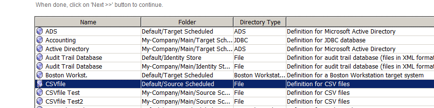
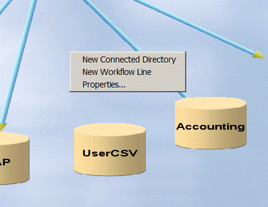
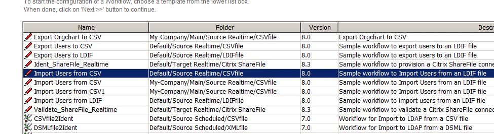
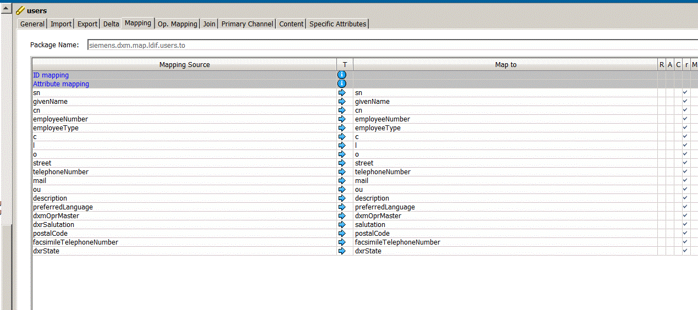
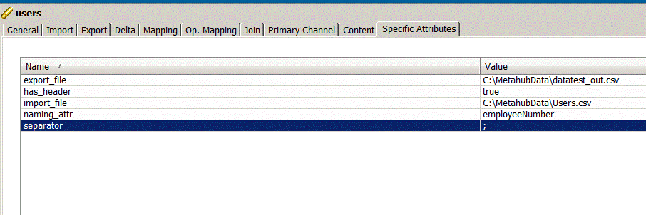
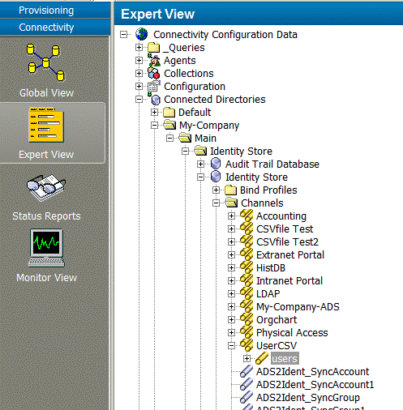
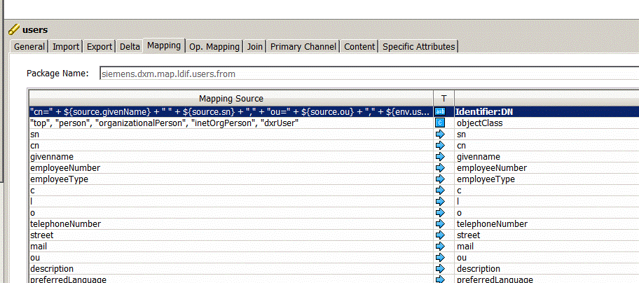

Application Development Guide
Copyright
- Copyright
- Preface
- 1. Understanding the Default Application Workflow Technology
- 1.1. Understanding Request Workflows
- 1.1.1. Request Workflow Architecture
- 1.1.1.1. Understanding Activity Types
- 1.1.1.2. About the Activity Sub-Structure
- 1.1.1.3. Understanding Notifications
- 1.1.1.4. HTML Notifications
- 1.1.1.5. Understanding Request Workflow States
- 1.1.1.6. Understanding the Full Checker
- 1.1.1.7. Request Workflow Error Handling
- 1.1.1.8. Nationalizing Request Workflows
- 1.1.1.8.1. Understanding Request Workflow Nationalization
- 1.1.1.8.2. Using the Nationalization Wizard
- 1.1.1.8.3. Organizing Message Topics
- 1.1.1.8.4. Customizing Request Workflow Nationalization
- 1.1.1.8.5. Using an External Nationalization Editor
- 1.1.1.8.6. Determining the Language
- 1.1.1.8.7. Handling Message Items during Runtime
- 1.1.1.9. Selecting Request Workflows
- 1.1.1.10. Executing Request Workflows
- 1.1.2. Customizing Request Workflows
- 1.1.2.1. Using Variable Substitution
- 1.1.2.2. Implementing a New Activity
- 1.1.2.2.1. Defining Configuration Parameters
- 1.1.2.2.2. Supplying a Component Description
- 1.1.2.2.3. Implementing the Job
- 1.1.2.2.4. Reading the Job Configuration
- 1.1.2.2.5. Reading the Workflow Instance Data
- 1.1.2.2.6. Modifying the Workflow Instance Data
- 1.1.2.2.7. Read and Write Context Properties
- 1.1.2.2.8. Reading and Changing Orders
- 1.1.2.2.9. Deploying the Job
- 1.1.2.2.10. Obtaining a Connection to the Identity Domain
- 1.1.2.2.11. Implementing a Job with access to the Identity Domain
- 1.1.2.2.12. Using the DomainSessionAccessor Method
- 1.1.2.2.13. Implementing a User Hook for an applyChange Activity
- 1.1.2.3. Implementing a Socketed Job Framework-based Activity
- 1.1.2.3.1. Adding the New Socketed Job Framework Activity
- 1.1.2.3.2. Specifying Predefined Configuration Parameters
- 1.1.2.3.3. Implementing the Job
- 1.1.2.3.4. Reading the Job Configuration
- 1.1.2.3.5. Reading the Workflow Instance Data
- 1.1.2.3.6. Modifying the Workflow Instance Data
- 1.1.2.3.7. Read and Write Context Properties
- 1.1.2.3.8. Reading and Changing Orders
- 1.1.2.3.9. Deploying the Job
- 1.1.2.4. Implementing a Java Class for Finding Participants
- 1.1.2.5. Implementing Participant Filters and Constraints
- 1.1.3. Testing Request Workflows
- 1.1.1. Request Workflow Architecture
- 1.2. Understanding Java-based Workflows
- 1.2.1. Java-based Workflow Architecture
- 1.2.2. Customizing Java-based Workflows
- 1.2.3. Customizing Password Synchronization Workflows
- 1.2.4. Customizing Event-based Maintenance Workflows
- 1.2.5. Using Combined Workflows
- 1.3. Understanding Tcl-based Workflows
- 1.3.1. Tcl-based Connectivity Architecture
- 1.3.1.1. Connectivity Standard Script Structure
- 1.3.1.2. Provisioning Workflow Script Structure
- 1.3.1.3. Connectivity Standard Script Operation
- 1.3.1.4. Connectivity Standard Script Switches and Parameters
- 1.3.1.4.1. Switches for Operational Control
- 1.3.1.4.2. Switches for Notification Control
- 1.3.1.4.3. Switches for GUID Generation
- 1.3.1.4.4. Switches for Trace Control
- 1.3.1.4.5. Source Directory Parameters
- 1.3.1.4.6. Input Channel Parameters
- 1.3.1.4.7. Target Directory Parameters
- 1.3.1.4.8. Output Channel Parameters
- 1.3.1.4.9. Switches for Pre-Configured Operational Attribute Handling
- 1.3.1.5. References in the Default Connectivity Applications
- 1.3.1.6. Object Class Handling
- 1.3.1.7. Global Unique Identifier (GUID) Generation
- 1.3.1.8. Multi-Mastered Attributes
- 1.3.1.9. Naming and Scopes
- 1.3.1.10. User Hooks
- 1.3.1.11. Global Tcl Variables
- 1.3.1.12. Meta Handles
- 1.3.2. Understanding Delta Handling
- 1.3.3. Customizing Tcl-based Workflows
- 1.3.1. Tcl-based Connectivity Architecture
- 1.1. Understanding Request Workflows
- 2. Using Request Workflows
- 3. Configuring Custom Scenarios
- 4. Using the Default Connectivity Applications
- 5. Using the Source Workflows
- 5.1. Understanding the Java-based Source Workflows
- 5.1.1. Active Directory (ADS) User Import Workflow
- 5.1.2. Relational Database User Import Workflow
- 5.1.3. Role Import Workflow
- 5.1.4. LDIF User Import Workflow
- 5.1.5. LDIF User Export Workflow
- 5.1.6. CSV Workflows
- 5.1.6.1. CSV User Import Workflow
- 5.1.6.1.1. CSV User Import Workflow Prerequisites
- 5.1.6.1.2. CSV User Import Workflow Configuration
- 5.1.6.1.3. CSV User Import Workflow and Activities
- 5.1.6.1.4. CSV User Import Workflow Ports
- 5.1.6.1.5. CSV User Import Workflow Channels
- 5.1.6.1.6. Customizing the Workflow to Handle Files without a DN Column
- 5.1.6.2. CSV User Export Workflow
- 5.1.6.1. CSV User Import Workflow
- 5.1.7. Remote AD Workflow
- 5.1.8. External LDAP User Import Workflows
- 5.1.8.1. External LDAP User Full Import Workflow
- 5.1.8.1.1. External LDAP User Full Import Workflow Prerequisites
- 5.1.8.1.2. External LDAP User Full Import Workflow Configuration
- 5.1.8.1.3. External LDAP User Full Import Workflow and Activities
- 5.1.8.1.4. External LDAP User Full Import Workflow Ports
- 5.1.8.1.5. External LDAP User Full Import Workflow Channels
- 5.1.8.2. External LDAP User Import Workflow
- 5.1.8.3. Sending Events to Synchronize External Users
- 5.1.8.1. External LDAP User Full Import Workflow
- 5.2. Understanding the Tcl-based Source Workflows
- 5.1. Understanding the Java-based Source Workflows
- 6. Using the Maintenance Workflows
- 6.1. Understanding the Java-based Maintenance Workflows
- 6.1.1. Entry Change Workflows
- 6.1.2. Process Tickets Internal Workflow
- 6.1.3. Account Password Manager Workflow
- 6.1.4. Reset Account Passwords Workflow
- 6.1.5. Reset Password If Displayed Workflow
- 6.1.6. User Password Event Manager Workflow
- 6.1.7. User Password Expiration Notification Workflow
- 6.1.8. Transport Workflows
- 6.1.9. Joint Backup Workflow
- 6.1.10. Consistency Management Workflows
- 6.2. Understanding the Tcl-based Maintenance Workflows
- 6.2.1. Cleanup Objects Workflow
- 6.2.2. Consistency Check Workflow
- 6.2.3. Extract Audit Trail Workflow
- 6.2.4. Full SoD Check Workflow
- 6.2.5. Initialize Re-approval Workflow
- 6.2.6. Password Expiration Notification Workflow
- 6.2.7. Policy Execution Workflow
- 6.2.8. Privilege Resolution Workflow
- 6.2.9. Run Workflow Externally Workflow
- 6.2.10. Start Re-approval Workflow
- 6.2.11. Status Report Generation Workflow
- 6.1. Understanding the Java-based Maintenance Workflows
- 7. Using the Target System (Provisioning) Workflows
- 7.1. Extending the Schema for the Target System Workflows
- 7.2. Understanding the Java-based Target System Workflows
- 7.2.1. General Information
- 7.2.2. Active Directory (ADS) Workflows
- 7.2.2.1. ADS Workflow Prerequisites and Limitations
- 7.2.2.2. Connecting to Active Directory
- 7.2.2.3. Configuring the ADS Target System
- 7.2.2.3.1. Setting Match Properties
- 7.2.2.3.2. Special Attributes
- 7.2.2.3.3. Setting Account- and Group Root in TS
- 7.2.2.3.4. Setting Exchange Base Properties
- 7.2.2.3.5. Enabling User Mailboxes
- 7.2.2.3.6. Creating Shared, Room and Equipment Mailboxes
- 7.2.2.3.7. Enabling Share, Room and Equipment Mailboxes
- 7.2.2.3.8. Setting Lync Base Properties
- 7.2.2.3.9. Lync Enabling
- 7.2.2.4. ADS Workflows and Activities
- 7.2.2.5. ADS Workflow Ports
- 7.2.2.6. ADS Workflow Channels
- 7.2.2.7. Customizing the ADS Workflows
- 7.2.3. Citrix ShareFile Workflows
- 7.2.4. DirX Access Workflows
- 7.2.5. Evidian ESSO Workflow
- 7.2.5.1. Evidian ESSO Workflow Prerequisites and Limitations
- 7.2.5.2. Setting up the Evidian ESSO Workflow
- 7.2.5.3. Connecting to Evidian ESSO
- 7.2.5.4. Evidian ESSO Workflow and Activities
- 7.2.5.5. ESSO Workflow
- 7.2.5.6. Evidian ESSO Workflow Ports
- 7.2.5.7. Evidian ESSO Workflow Channels
- 7.2.5.8. Customizing the Evidian ESSO Workflow
- 7.2.6. Google Apps Workflows
- 7.2.6.1. Google Apps Workflow Prerequisites and Limitations
- 7.2.6.2. Connecting to Google Apps
- 7.2.6.3. Configuring the Google Apps Target System
- 7.2.6.4. Google Apps Workflow and Activities
- 7.2.6.5. Google Apps Ports
- 7.2.6.6. Google Apps Account-Channel Mapping
- 7.2.6.7. Google Apps Group-Channel Mapping
- 7.2.6.8. Google Apps Member-Channel Mapping
- 7.2.6.9. Google Apps SetPassword-Channel Mapping
- 7.2.7. Imprivata Workflows
- 7.2.8. JDBC Workflow
- 7.2.9. LDAP Workflows
- 7.2.10. IBM Notes Workflows
- 7.2.11. Medico Workflows
- 7.2.12. Office 365 Workflows
- 7.2.13. OpenICF Windows Local Accounts Workflows
- 7.2.13.1. OpenICF Windows Local Accounts Workflow Prerequisites and Limitations
- 7.2.13.2. Connecting to the Windows Local Accounts System
- 7.2.13.3. Configuring the OpenICF Windows Local Accounts Target System
- 7.2.13.4. OpenICF Windows Local Accounts Workflow and Activities
- 7.2.13.5. OpenICF Windows Local Accounts Workflow Ports
- 7.2.13.6. OpenICF Windows Local Accounts Workflow Channels
- 7.2.14. RACF Workflows
- 7.2.15. Salesforce Workflows
- 7.2.15.1. Salesforce Workflow Prerequisites and Limitations
- 7.2.15.2. Configuring the Salesforce Workflows
- 7.2.15.3. Configuring the Salesforce Target System
- 7.2.15.4. Salesforce Workflow and Activities
- 7.2.15.5. Salesforce Workflow Ports
- 7.2.15.6. Account-Channel Mapping for SF Users
- 7.2.15.7. Group-Channel Mapping for SF PermissionSets
- 7.2.15.8. Group-Channel Mapping for SF Profiles
- 7.2.15.9. Channel Mapping for SF Accounts
- 7.2.15.10. Channel Mapping for SF Contacts
- 7.2.15.11. Member-Channel Mapping for SF Users
- 7.2.15.12. SetPassword-Channel Mapping for SF Users
- 7.2.15.13. Account-Channel Mapping for Identity Store Accounts
- 7.2.15.14. Group-Channel Mapping for Identity Store Profiles
- 7.2.15.15. Group-Channel Mapping for Identity Store PermissionSets
- 7.2.15.16. Channel Mapping for Identity Store Organizations (SF Accounts)
- 7.2.15.17. Channel Mapping for Identity Store Users (SF Contacts)
- 7.2.16. SAP ECC (R/3) UM Workflows
- 7.2.17. Service Management Workflows
- 7.2.17.1. Service Management Workflow Prerequisites and Limitations
- 7.2.17.2. Configuring Service Management Workflows
- 7.2.17.3. Configuring the Service Management Target System
- 7.2.17.4. Service Management Workflows and Activities
- 7.2.17.5. Service Management Workflow Ports
- 7.2.17.6. Service Management Workflow Channels
- 7.2.18. SharePoint Workflows
- 7.2.18.1. SharePoint Workflow Prerequisites and Limitations
- 7.2.18.2. Configuring the SharePoint Clusters, Workflows and Connection
- 7.2.18.3. Configuring the SharePoint Target System
- 7.2.18.4. SharePoint Workflow and Activities
- 7.2.18.5. SharePoint Workflow Ports
- 7.2.18.6. SharePoint Workflow Channels
- 7.2.19. Unify Office Workflows
- 7.2.20. UNIX-OpenICF Workflows
- 7.3. Understanding the Tcl-based Target System Workflows
- 7.3.1. Target System Workflow Types
- 7.3.2. Object Identification and Group-to-Account References
- 7.3.3. Target System Reference and Join Summary
- 7.3.4. HiPath Workflow
- 7.3.4.1. Prerequisites and Limitations
- 7.3.4.2. Configuring the Ident_HiPath Workflow
- 7.3.4.3. Activity Ident2HiPath_HiPath (meta directory export)
- 7.3.4.4. Activity HiPath2Ident_HiPath (meta directory import)
- 7.3.4.5. Multiple Entry Handling
- 7.3.4.6. Setting up the HiPath Environment
- 7.3.4.7. Export Traces
- 7.3.4.8. Customizing the HiPath Workflow
- 7.3.4.9. HiPath Tables
- 7.3.5. ODBC Workflows
- 7.3.6. RACF Workflows
- 7.3.7. SiPass Workflows
- Appendix A: Deprecated Features
Preface
This manual provides the information necessary to understand the DirX Identity default Connectivity applications and how to configure and extend them.It consists of the following chapters:
-
Chapter 1 describes the different workflow architectures used in the default applications and how to customize these types.
-
Chapter 2 provides information about the request workflows available in the Provisioning view that support user self-registration and delegated administration activities.
-
Chapter 3 describes how to setup consistent custom scenarios both in the Provisioning configuration and Connectivity configuration.
-
Chapter 4 describes how to reuse the default applications in the Connectivity configuration.
-
Chapter 5 describes Identity source workflows available in the Connectivity view that synchronize information from existing sources to the Identity Store.
-
Chapter 6 describes Identity maintenance workflows available in the Connectivity view that help to maintain your identity system to ensure consistent and current data of high quality.
-
Chapter 7 describes Identity target system workflows available in the Connectivity view that synchronize information from connected systems with the DirX Identity Store.
-
Appendix A describes features that still work but should no longer be used because better features are available.
DirX Identity Documentation
DirX Identity provides a powerful set of pre-configured default applications that you can use to create your identity management environment. The default applications are intended for use as templates and are primarily designed to interact with the user, account and group objects in the Identity Store and the source and connected systems.
DirX Identity Document Set
The DirX Identity document set consists of the following manuals:
-
DirX Identity Introduction. Use this book to obtain a description of DirX Identity architecture and components.
-
DirX Identity Tutorial. Use this book to get familiar quickly with your DirX Identity installation.
-
DirX Identity Provisioning Administration Guide. Use this book to obtain a description of DirX Identity provisioning architecture and components and to understand the basic tasks of DirX Identity provisioning administration using DirX Identity Manager.
-
DirX Identity Connectivity Administration Guide. Use this book to obtain a description of DirX Identity connectivity architecture and components and to understand the basic tasks of DirX Identity connectivity administration using DirX Identity Manager.
-
DirX Identity User Interfaces Guide. Use this book to obtain a description of the user interfaces provided with DirX Identity.
-
DirX Identity Application Development Guide. Use this book to obtain information how to extend DirX Identity and to use the default applications.
-
DirX Identity Customization Guide. Use this book to customize your DirX Identity environment.
-
DirX Identity Integration Framework. Use this book to understand the DirX Identity framework and to obtain a description how to extend DirX Identity.
-
DirX Identity Web Center Reference. Use this book to obtain reference information about the DirX Identity Web Center.
-
DirX Identity Web Center Customization Guide. Use this book to obtain information how to customize the DirX Identity Web Center.
-
DirX Identity Meta Controller Reference. Use this book to obtain reference information about the DirX Identity meta controller and its associated command-line programs and files.
-
DirX Identity Connectivity Reference. Use this book to obtain reference information about the DirX Identity agent programs, scripts, and files.
-
DirX IdentityTroubleshooting Guide. Use this book to track down and solve problems in your DirX Identity installation.
-
DirX Identity Installation Guide. Use this book to install DirX Identity.
-
DirX Identity Migration Guide. Use this book to migrate from previous versions.
-
DirX Identity Release Notes. Use this book to understand the features and limitations of the current release. This document is shipped with the DirX Identity installation as the file Readme.txt or Readme.doc.
-
DirX Identity History of Changes. Use this book to understand the features of previous releases. This document is shipped with the DirX Identity installation as the file HistoryOfChanges.txt or HistoryOfChanges.doc.
Notation Conventions
Boldface type
In command syntax, bold words and characters represent commands or keywords that must be entered exactly as shown.
In examples, bold words and characters represent user input.
Italic type
In command syntax, italic words and characters represent placeholders for information that you must supply.
[ ]
In command syntax, square braces enclose optional items.
{ }
In command syntax, braces enclose a list from which you must choose one item.
In Tcl syntax, you must actually type in the braces, which will appear in boldface type.
|
In command syntax, the vertical bar separates items in a list of choices.
...
In command syntax, ellipses indicate that the previous item can be repeated.
install_path
The exact name of the root of the directory where DirX Identity programs and files are installed. The default installation directory is userID_home_directory*/DirX Identity* on UNIX systems and C:\Program Files\DirX\Identity on Windows systems. During installation the installation directory can be specified. In this manual, the installation-specific portion of pathnames is represented by the notation install_path.
dxi_java_home
The exact name of the root directory of the Java for DirX Identity. This location is defined during product installation. For details, see the sections "Installation" and "The Java for DirX Identity" in the DirX Identity Installation Guide.
1. Understanding the Default Application Workflow Technology
The default applications are constructed from three different workflow architectures:
-
Request workflows, which handle self-service and delegated administration requests that may require authorization by one or more human approvers.Request workflows operate inside the DirX Identity Store and allow you to define processes like creating a new user or modifying a user’s attributes and manage the approvals that are often required as part of these processes.Request workflows can work with any DirX Identity object type, for example, roles or policies.Request workflows can automatically trigger Java-based or Tcl-based workflows to provision the resulting identity data updates to the connected systems.The default request workflows provided with DirX Identity are available in the DirX Identity Manager’s Provisioning view group.
-
Java-based workflows, which handle both real-time and scheduled provisioning and synchronization.Java-based workflows work mainly with the user, account and group objects in the Identity Store and the source and connected systems.They operate primarily outside of the Identity Store and perform the provisioning / synchronization of identity data between source systems and the Identity Store and between connected systems and the Identity Store.(Note that it is possible to build Java-based workflows that work from the Identity Store to the Identity Store; the DirX Identity maintenance workflows are representatives of this type.) The runtime environment for Java-based workflows is provided by the Java-based Identity Server (IdS-J).The default Java-based workflows provided with DirX Identity are available in Identity Manager’s Connectivity view group
-
Tcl-based workflows, which handle scheduled provisioning and synchronization using the DirX Identity meta controller (metacp) and agents.Like the Java-based workflows, Tcl-based workflows work mainly with the user, account and group objects in the Identity Store and the source and connected systems, operate primarily outside of the Identity Store (the maintenance workflows are the exception) and provision and synchronize between the source systems, connected systems, and Identity Store.The runtime environment for Tcl-based workflows is provided by the C++-based Identity Server (IdS-C).Like the Java-based workflows, the default Tcl-based workflows provided with DirX Identity are available in Identity Manager’s Connectivity view group.
This chapter provides the following information about these workflows:
-
"Understanding Request Workflows" describes the architecture used for request workflows and how to customize them to your requirements.
-
"Understanding Java-based Workflows" describes the architecture used for the Java-based default connectivity workflows and how to customize them to your requirements.
-
"Understanding Tcl-based Workflows" describes the architecture used for the Tcl-based default connectivity workflows and how to customize them to your requirements.
1.1. Understanding Request Workflows
This section provides information about Java-based workflows, including information about:
-
Request workflow architecture
-
Customizing request workflows
1.1.1. Request Workflow Architecture
You can use request workflows for a variety of tasks, including:
-
Controlling user self registration
-
Creating objects (users, roles, and so on) with or without approval
-
Modifying objects (users, roles, and so on) and approving object attribute changes
-
Approving privilege assignment changes
DirX Identity Provisioning handles request workflows of any complexity with a wide variety of features, including:
-
Graphical workflow configuration with multiple steps
-
Static, dynamic, group-based and rule-based approver list generation
-
Filters to help reduce or adapt a list of approvers
-
Constraints to specify, for example, minimum requirements on the number of participants
-
Dynamic activity generation based on lists
-
Sequential and parallel activity execution
-
Conditions like "All must succeed" or "Only one may decide"
-
WhenApplicable rules to restrict the application of a specific workflow template
-
Start conditions for activities, including AND and OR
-
Timeout definition for workflow and activities
-
Easy setup of e-mail notification
-
An unlimited number of escalation steps for each activity
-
An "active" flag to prohibit the execution of incomplete rules
-
Lifetime definition for workflow instances including automatic removal
-
Auditing
The next section discusses the application of request workflows and provides some examples that explain the features in more detail.
1.1.1.1. Understanding Activity Types
Request workflows consist of steps that we call "activities". Three basic types of request workflow activity exist:
-
People activities - activities executed by one or more persons, which we call "participants". This type of activity needs some time (from several seconds to days).
-
Error activities - activities that handle error conditions. These activities generally send e-mail to well-defined administrators.
-
Automatic activities - activities executed by automated procedures. Examples of these activities include creating a global unique ID (GUID) for a user and creating the LDAP entry upon creation approval and sending an e-mail message.
-
Conditional activities - activities that wait for some event. An example is the completion of a sub-workflow.
DirX Identity supplies the following default people activities:
-
Approve assignment, which asks a participant to approve a specific user-to-privilege assignment. You define the participants and optionally the escalation steps. You typically set up an e-mail notification to inform the participants about this task.
-
Approve delete, which asks a participant to approve an object deletion.
-
Approve modification, which asks a participant to approve an object modification.
-
Approve object, which presents a list of attributes to a participant that he must approve. You define the list and the sequence of attributes, the participants and optionally the escalation steps. You typically set up an e-mail notification to inform the participants about this task.
-
Enter attributes, which allows a participant to enter a set of attributes for a new object. You define the list of attributes, their display name and whether they are optional or mandatory.
-
Request privileges, which allows a participant to assign privileges. You can define the types of privileges (role, permission, group).
-
Certification Campaigns, which allows a participant to certify a subject: a privilege or a user. For example, he can verify all manually assigned users of a role or manually assigned roles of a user.
DirX Identity supplies the following default error activities:
-
General Error, which sends an e-mail notification to someone who can analyze and solve the problem. This activity is discussed in more detail in the section "Request Workflow Error Handling".
-
Error Handler, which sends an e-mail notification to someone if the workflow ran on timeout (status FAILED.EXPIRED).
DirX Identity supplies the following default automatic activities:
-
Apply approved privileges, which implements a privilege assignment after approval was performed. It performs a privilege resolution and starts the necessary updates by creating update events (but only if Enable Real-time Provisioning is set at the target system).
-
Apply object, which either creates the object if it does not yet exist or it performs all attribute changes as defined in the corresponding subject order (created by previous activity steps or workflows).
Creation - can be used for all objects besides users. For users, use the Apply User With Assignments activity instead.
Modification - can be used for all objects. It adds new attributes and modifies or deletes existing attributes. If the target object is a user, the activity checks whether one or more attributes are permission parameters and performs a privilege resolution if true. Privilege resolution may result in the creation of events for real-time synchronization workflows. -
Apply orders from ticket, which applies the subject order (if the flag is selected) that can be either a creation or a modification request for an object. In case of a user object it additionally evaluates assignments and starts (if required) approval workflows as child workflows.
In conjunction with a Wait for child workflows activity the parent workflow is notified when the child workflow(s) are complete.
If you use the Track changes in child workflows flag then all child workflows propagate their provisioning changes to the parent workflow. You can use the Wait for completed provisioning activity to check for completed provisioning of accounts and groups. -
Apply user with assignments, which either creates the user if it does not yet exist or it performs all attribute changes as defined in the corresponding subject order (created by previous activity steps or workflows). Additionally it evaluates all assignments as defined in the corresponding resource orders (created by previous activity steps or workflows).
If an assignment requires approval, it starts an independent approval workflow. Otherwise, it performs a privilege resolution and starts the necessary updates by creating update events (but only if Enable Real-time Provisioning is set at the target system). -
Acknowledge update, used in manual provisioning workflows to set the states according to the performed action. Note that this activity cannot verify whether the administrator performed the action correctly. This activity sets the TS State account or group states as defined by the State attribute and the membership states as defined by DirX Identity.
-
Calculate VMID GUID, which calculates a VMID global unique identifier and adds the calculated value into a definable object attribute.
-
Calculate Siemens GUID, which calls the Siemens internal GUID generator web service to calculate a global unique identifier and adds the calculated value into a definable object attribute. The activity provides a new GUID value for an identity or an error message if the request is not sufficient or the identity already exists. An optional search can be configured that retrieves the existing GUID if the GUID generation failed because the identity already exists.
-
Calculate Risk, used in risk approval workflows to compute the risk level that a requested privilege assignment would have if it was approved. For new/deleted group assignments, the activity calculates the risk and then merges these new risks with the risk values that have already been calculated to define the new possible risk level. This new risk level is stored in the application state and in the workflow context (name: risklevel). Values of 0, 1, 2 and 3 are possible, where 3 indicates high risk. The user’s old risk level is stored in the workflow context (name: oldrisklevel). If risk checking is not active at the domain, nothing is done and the activity succeeds. If risk checking is active but there is no active risk policy, the activity generates an error. You can use the parameter Force An Error If no actual RiskLevel is available to control how the activity functions when risk is active but risk values have not already been computed for a given user. If this parameter is unchecked, the value 0 is used as the risk level and is stored in the application state and the workflow context. You can configure your workflow’s start conditions to respond to this value in a particular way; otherwise, an error is generated. You can also use the workflow’s risklevel or oldrisklevel context variables for the start conditions of other activities to respond to special values.
-
Check SoD, which checks for SoD violations and automatically starts approval workflows if an SoD violation is detected.
-
Map attributes, which lets you define additional attributes or recalculate existing ones (in this workflow order). You can use it to set constants or to combine attributes to fill another attribute (for example 'cn=${sn} + " " + ${givenName}').
-
Send e-mail, which sends an e-mail notification. Use this type of activity if the e-mail notification is conditional; that is, it’s only executed if a specific workflow application state (see the section "Handling Request Workflow States") or state of the previous activity occurs. Activities of this type are visible in the graphical workflow structure.
-
Split order, which delivers an Application State attribute according to the order type. Valid values are Add, Modify or Delete.
-
Wait for completed provisioning, which is a conditional activity that waits for the completion of all related provisioning steps that were initiated by the parent workflow and all child workflows. The activity polls for the expected provisioning results. On completion, the workflow proceeds and the results are available in the workflow context. If some provisioning results are pending, the activity uses the retry mechanism to wait for some period of time before performing the next check. Configure the retry mechanism - for example, for 500 retries of 5 minutes - to be sure that provisioning has enough time to complete.
This activity requires correct settings of previous activities: -
All apply activities have the flag Track changes. If you set it, all resulting provisioning actions of this activity are noted in a list in the workflow context.
-
The Apply Order activity also has the flag Track Changes in Child Workflow. When set, it enforces the child workflows to propagate all resulting provisioning actions to the parent workflow. They are integrated into the list in the workflow context.
The filled list is then used by the Wait for completed provisioning activity to check the results.
DirX Identity supplies the following default conditional activities:
-
Wait for child workflows is a conditional activity that waits for completion of child workflows. It checks whether child workflows are started. If so, it stops further execution of the workflow. If a child workflow finishes, it notifies this activity about its completion, its states, and the changes it performed if the flag Track Changes in Child Workflow was checked at the preceding Apply Order activity. Parent and child workflows must be correctly and consistently configured. In the parent workflow, the Wait for child workflows activity requires a preceding Apply Order activity where you can set the aforementioned flag. If all child workflows are finished, workflow execution continues.
1.1.1.2. About the Activity Sub-Structure
Request workflow activities have a fixed sub-structure that makes workflow design easier and keeps workflow definitions simple. The following figure illustrates this sub-structure:
Activity sub-structure elements are:
-
Pre step - an optional step that typically contains a notification to the participants of the main step. Note that failure of this step is logged but has no effect on the state of the activity.
-
Main step - the main part of the activity, for example, an approval step. This step sets the state and application state values for the entire activity.
-
Post step - an optional step that typically contains a notification after the main activity is completed. Note that failure of this step is logged but has no effect on the state of the activity.
-
Error step - an optional definition of the error notification to be sent to the administrator if the main step fails. If this sub activity is not configured, the activity goes to state Failed and the General Error activity is activated. See the section "Request Workflow Error Handling" for more details.
-
Escalations step - an optional definition of escalation steps. If escalations are defined, the complete activity is re-calculated with the escalation definition and run again. The previous activity remains in state Failed.Expired.
The main step is always present and must be defined. All other steps are optional. You can activate and deactivate them as required. An active step is shown in yellow, while an inactive step is shown in gray.
1.1.1.3. Understanding Notifications
You can define explicit or implicit notifications:
Explicit notifications are directly visible in the graphical workflow structure. You use an explicit notification for conditional e-mail notification; for example, an e-mail to be sent if an approval is rejected or if a previous activity fails.
Implicit notifications are part of the (fixed) sub-structure of an activity (see the section "About the Activity Sub-Structure" for details). You can activate or deactivate this type of activity. Use an implicit notification if it is closely related to the activity’s main task. Typical uses are a notification request to the participants of an approval task or an informational notification after a task has been performed.
In some cases, it is up to you to choose between an explicit or implicit notification. Implicit notifications help to keep workflow definitions simple by reducing superfluous or recurring information.
1.1.1.4. HTML Notifications
You can send notifications in plain text or in HTML format.
Most of the request workflow templates delivered with DirX Identity are set up as plain text mails. One example is set up as HTML mail.
Default → Assignments → Manager Nomination → Approval by Company Head (notifyBefore)
In this example, we did not set up nationalization to show the HTML code in one piece.
<!DOCTYPE HTML PUBLIC "-//W3C//DTD HTML 4.0 Transitional//EN">
<HTML>
<HEAD>
<META http-equiv=Content-Type content="text/html; charset=iso-8859-1">
<STYLE type=text/css>P.generalquestions {
BORDER-RIGHT: #bcd 1px solid; BORDER-TOP: #bcd 1px solid; FONT-SIZE: 10px; BORDER-LEFT: #bcd 1px solid; COLOR: #039; BORDER-BOTTOM: #bcd 1px solid; FONT-FAMILY: Arial,sans-serif}
</STYLE>
<META content="MSHTML 6.00.6000.17102" name=GENERATOR>
</HEAD>
<BODY>
<B>
<? if ${to.gender} == "W" ?>
Dear Mrs. ${to.sn},
<? else ?>
Dear Mr. ${to.sn},
<? endif ?>
</B>
<P></P>
<P>Please approve the following privilege assignment:
<BR>User: <B>${workflow.subject.cn}</B>
<BR>Privilege: <B>${workflow.resources[0].dxrassignto@cn}</B> </P>
<P>To approve, follow the link: <A href="${workflow.approvalLink}">Web Center</A> </P>
<P><I>This is an automatically generated mail. Please do not reply.</I> </P>
<P class=generalquestions>For general questions about this workflow please contact:
<I><A href="mailto:${workflow.owner.mail}">Pitton Lavina</A></I>
<BR>Workflow: ${workflow.path}
<BR>Activity: ${name} </P>
</BODY>
</HTML>The SendMail workflow recognizes the HTML format from the DOCTYPE statement at the very beginning. The example shows that you can integrate variables (for example ${workflow.subject.cn}) and conditional statements (here the <? if ?> statement) without any problems. Read more about using variables and conditional statements in the section "Using Variable Substitution".
Although you can separate pieces of this code into nationalization items, we recommend setting up the whole HTML code first, testing it and then dividing it into nationalization items that you can then reuse.
To play with this example, for example, in the My-Company sample domain:
-
Copy the workflow and activate it.
-
Restart the Java-based Server or perform Load IdS-J Configuration.
-
Assign the workflow to any privilege directly.
-
Assign the privilege to a user.
-
An approval workflow should be started and the mail should be sent.
1.1.1.5. Understanding Request Workflow States
The states of the request workflow and its activities are closely related. This section describes request workflow states and activity states.
1.1.1.5.1. Types of Request Workflow States
A request workflow object has two types of state:
-
A workflow state, which indicates the general state of the workflow and has fixed values such as Succeeded or Failed. DirX Identity’s request workflow service automatically sets this state.
-
A workflow application state, which is a programmable state that is controlled by the specific workflow definition. For approval workflows, the possible values for the workflow application state are Accepted or Rejected. DirX Identity customers can define their own states, and if there are no special states defined, the application state value can also be empty.
The following figure illustrates request workflow states:
Workflow states are:
(None) - the Java-based Identity Server is aware of the workflow definition (because it is flagged as active) but instances of the workflow do not yet exist.
Running - the request workflow service has started an instance of this workflow definition after receiving an appropriate event.
Succeeded - the run of the workflow instance is formally successful; that is, a final activity has succeeded. If this activity contains an application state, the workflow instance inherits it. The request workflow service takes the application state from the calculated value of the final activity or, if there is no value there, the display name of the start condition. If the display name is empty, the application state will be empty, too.
*Failed.*state - the run of the workflow instance has failed. Check the activity states to see the details. state indicates the following special states:
Failed.Prepare - the state inherited from the relevant activity, which is the activity that an administrator or the request workflow service (for example, by retries) could not resolve before it reached its defined timeout value and entered an error condition.
Failed.Incomplete - the request workflow service discovered a structural error in the workflow definition but the workflow has not yet completed because:
- a startable activity no longer exists
- a running activity no longer exists
- a finished final activity is not available
Failed.Expired - there was either a timeout inherited by the relevant activity or a timeout of the complete workflow.
Failed.Aborted - either a user has cancelled this workflow instance or the timeout was inherited from the relevant activity (a user has cancelled this activity). If a user cancels the workflow, all activities that are still running go to status Failed.Aborted, too.
If parallel activities must all succeed, this state is also reached if one of the parallel activities goes to state REJECTED.
Failed - any other error inherited from the relevant activity
See the section "Request Workflow Error Handling" for more information.
1.1.1.5.2. Understanding Request Workflow Activity States
The following figure illustrates the request workflow activity states:
Activity states are:
(None) - the activity instance exists but the start condition is not yet satisfied.
Running - the activity instance is running due to a satisfied start condition.
Succeeded - the run of this activity instance was successful.
Failed.Prepare - an exception occurred during the participant constraint calculation that is not ConstraintViolationException.
Failed.Temporary - the activity determined that the error that occurred is only temporary (for example, the network is temporarily unavailable). If retries are configured for this activity, the request workflow service starts the activity after the Wait before retry period to resolve the error. If no retries remain, the activity goes to status Failed.Expired.
Failed - the run of this activity instance failed due to a non recoverable error and no Error sub activity is configured.
WaitInError - the run of this activity instance failed due to a non-recoverable error and an Error sub activity is configured. This error activity is used to send a notification to the administrator, who can resolve the problem and resume the workflow, or cancel the workflow if he cannot resolve the problem.
Failed.Aborted - a user cancelled this activity.
Cancelled - the request workflow service canceled this (parallel) activity because another user approved this step.
Failed.Expired - the run of this activity instance failed due to a timeout or a Failed.Temporary condition. In this case, the request workflow service checks whether retries are configured. If they are, it restarts the activity. If the activity sub-structure contains a pre-step, it reminds the relevant user that there is still a task to do. If retries are not configured, the workflow engine sets the activity state to Failed.Expired and determines whether an escalations step is configured and still available. If no, the activity is completed and remains in the Failed.Expired state. If yes, the escalation definition is evaluated and a new activity is started.
See also the section "Request Workflow Error Handling" for more information.
The workflow calculates participants in an activity by evaluating:
-
The configured participant calculation mechanism; for example, a static list or access policies.
-
The participants filter (it removes, for example, the initiator of this workflow).
-
The participants constraints, as follows:
-
If participant constraints are not defined and no approver is retrieved, the request workflow service assumes a correct approval (activity state = Succeeded, application state = Accepted).
-
If participant constraints are defined and the exception thrown is ConstraintViolationException, the routine (Java class) that the workflow designer has written to calculate the constraints can set the state and application state to any value and return it to the workflow engine. Thus in this case, the workflow designer has complete control over these values.
-
If participant constraints are defined and the exception thrown is not ConstraintViolationException, the workflow’s General Error activity starts and sets this activity and the workflow state to Failed.Prepare to indicates a serious error.
1.1.1.6. Understanding the Full Checker
The full checker is a built-in service to handle running request workflow instances. It runs on a regular basis and checks all entries that are still in a "running" state for special conditions.
The full check that works on all running workflows is no longer needed, thus the checkallinterval is set to 0 to disable it by default.
1.1.1.6.1. Full Check for Expired Workflows and Activities
Checks for expired workflows and activities.
The filter for workflow instances is:
|(&(dxrExpirationDate<=__current_date__)(dxrState="RUNNING"))(dxrState="UNDERCONSTRUCTION")(dxrState=RUNNABLE)The filter for activity instances is:
|(&(dxrExpirationDate<=__current_date__)(dxrState="RUNNING"))(dxrState=RETRY)(dxrState=WAITINERROR)(dxrState=RUNNABLE)This type of the full checker runs every 30 minutes by default.
1.1.1.6.2. Full Check for All Running Workflows
Checks all instances in state running for these conditions:
-
Determines whether a timeout condition occurred. If yes, it handles the timeout (see the section "Understanding Request Workflow States" for details).
-
Checks whether there are running workflows and/or activities that have expired. If such workflows or activities are detected, the corresponding workflows are forwarded to the workflow engine, which will calculate the next activities.
The filter to search for these instances is:
|(dxrState="RUNNABLE")(dxrState="RUNNING")(dxrState="UNDERCONSTRUCTION")(!(dxrState=*))By default, this type of the full checker is disabled. If it is enabled, it is started automatically about 1 minute after server start.
1.1.1.6.3. Full Checker Configuration
You can change the full checker intervals in the server.xml for request workflows under this path:
install_path*\ids-j-domain-S*n*\extensions\com.siemens.idm.requestworkflow\server.xml*
where domain is the domain for which the IdS-J server is running and S*n is the server number (counts per domain). For example, *ids-j-My-Company-S1. See the section on "Naming Schemes" in the section "Managing Java-based Servers" in the DirX Identity Connectivity Administration Guide for a discussion of the naming schemes used for DirX Identity services.
Search for the <schedules> tag:
<schedules>
<RequestWorkflowFullCheck>
<class>com.siemens.idm.requestworkflow.tasks.FullCheck</class>
<start>0</start>
<!-- interval when all expired workflows and activities are checked (in msec) -->
<period>**1800000**</period>
<singleton>true</singleton>
<!-- interval when all (running) workflows are checked (in msec) -->
<checkallinterval>**0**</checkallinterval>
</RequestWorkflowFullCheck>
</schedules>You can set the full check interval for expiration checks with the parameter <period> in milliseconds. By default, 1800 000 ms = 30 min are set.
You can also set the full check interval for all running workflows with the parameter <checkallinterval> in milliseconds. By default, this mode is disabled.
If you want to run with a large number of running workflows, we recommend using these settings:
<period>3600000</period> <!-- 60 minutes -->and
<checkallinterval>0</checkallinterval> <!-- service disabled -->1.1.1.7. Request Workflow Error Handling
The request workflow service handles various types of errors. See the section "Understanding Request Workflow States" for details.
For each request workflow activity, you can configure an Error sub-structure element that allows you to define a specific error notification to be sent to the administrator if the activity’s main step fails (see the section "About the Activity Sub-Structure" for details). If a non-recoverable error occurs in an activity, it goes to state WaitInError. If the Error sub-activity is not defined, the activity goes to state Failed and the default error activity General Error takes control.
For each workflow, the General Error activity is configured by default as Error Activity, which sends a notification to the workflow initiator that something is wrong. You can create your own workflow-specific or workflow group-specific error activities and link them to a workflow or a group of workflows to implement special behavior.
The request workflow service calls the General Error activity once during each workflow re-calculation (either triggered by an internal status change event from an activity or by a full check from the workflow engine itself). The General Error activity:
-
Checks all activities to determine whether they are in a Failed.state that is not Failed.Expired or Failed.Temporary.
-
For activities that meet this determination, the request workflow service aborts the workflow and sets the workflow state and application state to the states of the failed activity. If several activities in a workflow meet the determination, the request workflow service selects one at random and uses its states.
You can configure an ErrorHandler for workflow timeout (status FAILED.EXPIRED). Simply add this activity to your workflow definition. It should not be connected to any other activity. It sends an e-mail if the workflow times out.
1.1.1.8. Nationalizing Request Workflows
People activities within request workflows create dynamic pages in Web Center. For complete nationalization of Web Center pages, you need to
-
Use the Web Center’s nationalization feature for all static pages (see the chapter "Adding Languages" in the Identity Web Center Customization Guide).
-
Use the Request Workflow’s nationalization feature for all dynamic pages.
The next section describes the nationalization concept for dynamic pages.
Note that DirX Identity is delivered by default with message items in the locales en and de.
1.1.1.8.1. Understanding Request Workflow Nationalization
DirX Identity’s concept for nationalization of dynamic Web Pages and also mail content is based on the Java concept for nationalization. A text element can keep one or more message items that are replaced during runtime with text that corresponds to the user’s requested language.
An example for a mail body within a request workflow activity is:
#{Request Workflows/Assignment Workflows.AssignmentOfPrivilegeRejected_body}
#{Common Text.ContactPersonsThatRejected}
<? for activity in ${workflow.activities} ?>
<? if ${activity.applicationState} == "REJECTED" ?>
<? for participant in ${activity.approvers} ?>
#{Request Workflows/Assignment Workflows.AssignmentOfPrivilegeRejected_loopline}
<? endfor ?>
<? endif ?>
<? endfor ?>
#{Common Text.AutomaticGeneratedMail}
#{Common Text.GeneralQuestions}If the English language is requested, this generic text definition is resolved as follows:
The assignment of privilege ${workflow.resources[0].dxrassignto@cn} to user ${workflow.subject.cn} was rejected.
Please contact the persons that rejected the request:
<? for activity in ${workflow.activities} ?>
<? if ${activity.applicationState} == "REJECTED" ?>
<? for participant in ${activity.approvers} ?>
- Activity step: '${activity.name}': User ${participant.cn} with reason: ${activity.reason}
<? endfor ?>
<? endif ?>
<? endfor ?>
This is an automatically generated mail. Please do not reply.
For general questions about this workflow please contact: ${workflow.owner.mail} +
Workflow: ${workflow.path} +
Activity: ${name}For example, the definition
#{Common Text.AutomaticGeneratedMail}is resolved to
This is an automatically generated mail. Please do not reply.
Note that message items can contain variables, for example ${workflow.subject.cn} that are replaced during runtime with the corresponding value, in this case the common name of the subject. For more information about this concept, see the section "Using Variable Substitution" in the DirX Identity Application Development Guide.
1.1.1.8.2. Using the Nationalization Wizard
Some fields within DirX Identity support nationalization. Typical fields are the subject or the body of a mail definition.
To determine whether a field supports nationalization, use the Identity Manager to view the description of the individual field in the online help. Alternatively, you can click in a field and view the context menu, which may show you the menu items of the nationalization wizard.
In read mode, one menu item is available:
Show resolved text - click this item to resolve all message items to the language definitions defined by the Default Language field in the domain object.
In edit mode, these menu items are visible:
Insert a message - the nationalization wizard opens and presents the central message item tree under Configuration → Nationalization. Select a message item object in the language of your choice and then select a message from the list of message items. The wizard inserts the corresponding message item at the cursor location.
Insert a message relative - the nationalization wizard opens and presents the local message items for this workflow. Select a message item object in the language of your choice and then select a message from the list of message items. The wizard inserts the corresponding message item at the cursor location.
Show resolved text - click this item to resolve all message items to the language definitions defined by the Default Language field in the domain object.
1.1.1.8.3. Organizing Message Topics
To optimize nationalization message management, you can define messages at two locations:
-
You can define more common message items in the central Nationalization folder in the Domain Configuration, which allows you to reuse messages in many objects. Message references to these items can be seen as absolute references.
-
You can define specific message items together with your configuration object, for example, the request workflow definition. Message references to these items can be seen as relative references. If you copy this type of configuration object, the message items are also copied and the references are still valid and point to your copied configuration object.
Use both methods to structure your message catalog. Try to reuse messages as much as possible.
1.1.1.8.4. Customizing Request Workflow Nationalization
DirX Identity provides three methods for customizing request workflow nationalization:
Local message items - you can copy a request workflow together with its local nationalization items. You can change the local items because they are copies of the original objects. You can also extend them with other locales.
Central default message items (under the path Nationalization) - you can extend the existing default message items with additional locales but you cannot change the delivered default message items.
Custom default message items (under the path Nationalization → Customer Extensions) - if you need additional central message item definitions, define them under this folder. Use folders to structure the items accordingly. Set up items for all required locales.
1.1.1.8.5. Using an External Nationalization Editor
You can use the built-in features of the Identity Manager to create and maintain message items, particularly if you create new workflow definitions with the corresponding message items in the primary language.
Use an external nationalization editor primarily to
-
Check the consistency of a large number of message items
-
Add a new language
The export file format is comma-separated values (CSV). You can use any tools that allow you to edit CSV files correctly.
The following sections explain how to export and import nationalization information and how to edit the items with Microsoft Excel.
Exporting Nationalization Information
You can export the complete nationalization information into one file or you can select specific parts of the information:
File → Export Nationalization Items - use this menu item from the menu bar to export all nationalization information into one file. A file selection dialog asks for the file location and name.
Export Nationalization Items - use this context menu item at a message item folder or message item to export a subtree or a single item into a file. A file selection dialog asks for the file location and name.
You can specify the delimiter that is used with the parameter nationalization.csv.delimiter in the file dxi.cfg. By default, we use a semicolon ';'. Note: after changing this file, you must restart the Identity Manager.
The format of the file looks like this if two languages are exported (Excel representation):
| path | key | de | en |
|---|---|---|---|
Prov:Configuration/Nat… |
dxrStartDate |
Start Datum |
Start Date |
mobile |
Mobiltelefonnummer |
Mobile |
|
… |
|||
Prov:Configuration/Nat… |
RequestApproval_body |
Bitte genehmigen Sie die folgende Anforderung: |
"Please approve the following request: |
… |
The first line is the header line. The field definitions are as follows:
path - the object path of this message item (for example, "Conn:Configuration/Nationalization/Attribute Descriptions"). The last part is the name of the message item (here "Attribute Descriptions").
key - the key in the file (for example, mobile).
language - a column for each language in alphabetical order.
The next lines contain collections of message items (the key and the information for each language). The first line contains the path, while the last line is empty and serves as a separator.
Editing in an External Editor
You can use any editor that allows editing of CSV files. Examples are Microsoft Excel or Microsoft Access.
Before you start editing a large amount of data the first time, we recommend that you test the editor with a small amount of data. Perform an export, edit the data and then import it into DirX Identity. You should then check the following:
-
Were national characters handled correctly?
-
Did the editor handle multi line message items correctly?
-
Could you create a new key with no problems (result should be new message items)?
If all these issues worked well, you can start editing.
We tested with Microsoft Excel. Here are some hints on how to work with it:
-
Use a colon ';' or a comma ',' as a delimiter for the export. For ease of handling, you should use the default Excel delimiter, which depends on your language settings. The colon is the default delimiter.
-
Double-click the CSV file. Excel should open it with correctly populated columns. If not, you used the wrong delimiter.
-
Now you can edit the file with all Excel features.
You can perform these operations:
-
Change an existing language information field. This action changes the corresponding line in the message item.
-
Populate an empty field (translate it from another language). Copy the language item (for example, in the English language) to the empty field.
After import, this operation populates the corresponding line in the message item. -
Add a new line with a key and language information.
After import, this operation adds a new line to the corresponding message item. -
Delete a line with key and language information.
After import this removes the line from the corresponding message item. -
Add a new column to add a new language. Write the language code in the header line (for example 'it').
After import this creates the new message items. -
You can reorder the language columns for easier editing but do not touch the path or key columns.
-
You can check easily if cells for a specific language are not filled correctly.
There are some restrictions:
-
Do not destroy the structure of the file. In particular, do not remove or reorder the path or key columns. These columns must be the first two columns.
-
If you created a new language column and during import the option "Create empty objects" is set, a large number of empty objects may be created. There is no way to remove these objects as a whole.
-
If you change the language code in the header, no rename is performed. Instead all objects are created with the new name. The old objects with the old name persist and must be manually removed.
Importing Nationalization Information
To import exported and edited nationalization information files:
-
Back up the database to be able to revert to the previous state (optional).
-
Select File → Import Nationalization Items from the menu bar within in the Identity Manager.
-
A file selection dialog asks for the file location and name of the file to import. It also contains these parameters:
Create empty objects - setting this option will create menu items that contain only keys but no language data. This option is useful for creating empty message items that you populate later on in the Identity Manager.
Report object creation as error - setting this option will cause all object creations to be reported as errors. This option is useful if you made changes only in your nationalization information and you want to be warned if you destroyed something.
Note that the import method automatically calculates the delimiter from the header line in the file.
1.1.1.8.6. Determining the Language
The process used to determine the correct language to use differs depending on the DirX Identity feature.
Web Center Pages
The language in which a Web Center page is displayed (this is valid for static and dynamic pages) is calculated in this sequence:
-
The user can select a language from the Web Center language selection. This value is stored in a cookie and is used during the next login.
Note: if you delete the cookie, the language setting must be repeated. -
After login of a user, the configured browser language is used.
Note: if SSO with NetWeaver is configured, NetWeaver passes the language setting to Web Center. -
If the language cannot be evaluated or the evaluated language cannot be resolved (no nationalization text available), English is used by default.
Notification Resolution
The language that is used to resolve a defined notification object is calculated in this sequence:
-
The Language field of the notification object is evaluated. If this field resolves to a valid language, this language is used. Keep in mind that the resolved message text is shown as ???*original text???* if nationalized messages are not available for that language or if the original text for that language doesnât exist.
-
If the language cannot be evaluated and resolves to null, English is used by default.
1.1.1.8.7. Handling Message Items during Runtime
DirX Identity handles message items during runtime as follows:
-
During the Java-based Server startup, all message items are read and resolved to Java resource files.
-
If you request a re-load of the server configuration (Load IdS-J Configuration), all message items are re-loaded.
The load procedure resolves message items to absolute paths in a pre-defined folder structure:
-
The common path for all message items starts with
install_path*\ids-j-domain-S*n*\tmp\nat\classes\* -
Message items for request workflows are located under rqwfs.
-
Global items are resolved to the sub-folder gen.
-
Local items are resolved to the sub-folder wfs.
-
Under the global and workflow paths, the items are located in the corresponding item structure.
-
You will find message files for all locations under this path. The file name is:*
messages_*locale*.properties* -
The content appears as follows if it is identical to the message item content:
#
#Sun Feb 15 12:51:48 CET 2009
RequestWasRejected_body=We regret to inform you that your self-registration request was rejected.
DearUser_body=Dear User,For example:
-
The local definitions of the Customer Self Registration message items reside beneath the path Definitions → Default → Users → Customer Self Registration → _Nationalization.
-
After loading, the path is:_
install_path_*ids-j-*domain*-S*n*\tmp\nat\classes\rqwfs\wfs\Default\Users\Customer Self Registration\_Nationalization* -
You will find the files messages_en.properties and messages_de.properties
Load Effort for Nationalization
Reading and processing the nationalization information during startup or during Load IdS-J Configuration of the Java-based Server requires some additional time. You can measure this overhead with the following procedure:
-
Open the Web Admin
-
Select the logging configuration section.
-
Add the Java Class com.siemens.idm.server.nationalization and set the logging to Finest.
-
Restart the Java-based Server.
-
Check in the server log files for this string:
"Loading resource files takes ⦠ms"
1.1.1.9. Selecting Request Workflows
Selection of request workflows is different for creation, modification and assignment workflows and also depends on the calling source (Web Center, Manager or Web Services). The next sections describe request workflow selection for:
-
Creation workflows
-
Modification workflows
-
Assignment workflows
1.1.1.9.1. Creation Workflow Selection
The selection methods for creation workflows depend on the calling client:
-
Web Center
-
Identity Manager
-
Web Services
Workflow Selection from Web Center
Workflow selection depends on the type of license you have.
If you have a Business Suite license, you cannot run request workflows. In this case, the ability to create a user depends on the creation access policies established for this user. For more information, see the section "Policies for Object Creation" in "Managing Access Policies" in "Delegated Administration" in the "Managing Policies" chapter of the DirX Identity Provisioning Administration Guide.
If you have the Professional Suite license, you can create objects in three ways (note that you can set up a mix of these methods within one Web Center application):
a. Object creation via request workflows (default):
If you click, for example, the "Add user"' menu item, the Web Center application retrieves all workflows:
-
that the logged-in user is allowed to execute (this depends on the access policies established for this user)
-
that have the Type field in the When Applicable section of the workflow set to Create
-
that have the Subject field set to User
-
and that have an empty Resources field
If more than one creation workflow is found, the list is presented to the user for further selection. If only one workflow is found, this workflow is started immediately. If no workflow is found, an error is returned to the user that he is not allowed to execute any creation workflows.
The same algorithm is applied if the creation for a different object type is requested (for example, a Role).
b. Object creation via the Create user by request workflow flag feature:
You can customize Web Center to use the Create user by request workflow flag feature. Collect all necessary information to create an object (for example, user attributes, assignment of privileges) and then save the user object. This results in a start of a request workflow that stores the object later on.
Setting the Create user by request workflow flag at the domain object influences the save operation of the object. Instead of saving the object directly, the save operation is converted to a request workflow start where the entered data is transferred as input parameters in the form of an order object. The corresponding activity of the request workflows defines when to store the object (typically this activity is named Apply changes).
c. Object creation via Creation Access Policies
You can customize Web Center to use Creation access policies. For examples, see the pages set up for the Business Suite license.
Workflow Selection from Identity Manager
Workflow selection depends upon the type of license you have.
If you have a Business Suite license, you cannot run request workflows. In this case, objects are always stored directly when pressing the Save button.
If you have a Professional Suite license, the creation depends on the Create user by request workflow flag at the domain object:
-
If the flag is not set, an object is created directly when clicking the Save button.
-
If the flag is set, the system tries to start a corresponding request workflow when clicking the Save button.
For example, if a user object is to be created, the Identity services retrieve all workflows:
-
that the logged in user is allowed to execute (this depends on the set up access policies for this user)
-
that have the Type field in the When Applicable section of the workflow set to Create
-
that have the Subject field set to User
-
and that have an empty Resources field
If only one workflow is found, this workflow is started immediately. If more than one workflow or no workflow is found, an error is returned to the user if the Create user directly if no workflow available flag is not set. Otherwise the user entry is created directly.
The same algorithm is applied if the creation for a different object type is requested (for example, a Role).
Workflow Selection from Web Services
Workflow selection depends on the Create user by request workflow flag at the domain object:
-
If the flag is not set, an object is created directly when executing an Add Object operation.
-
If the flag is set, the system tries to start a corresponding request workflow when executing an Add Object operation.
For example, if a user object is to be created, the Identity services retrieve all workflows:
-
that the requesting service is allowed to execute (this depends on the access policies established for the user account that is used by the service to authenticate)
-
that have the Type field in the When Applicable section of the workflow set to Create
-
that have the Subject field set to User
-
and that have an empty Resources field
If only one workflow is found, this workflow is started immediately. If more than one workflow or no workflow is found, an error is returned to the service if the Create user directly if no workflow available flag is not set. Otherwise, the user entry is created directly.
The same algorithm is applied if the creation for a different object type is requested (for example, a Role).
1.1.1.9.2. Modification Workflow Selection
This section describes the request workflow selection methods for modification workflows.
You can set up Attribute Policies for any object type to define the request workflows for attribute modification. (See the section "Attribute Policies for Users" in "Managing Attribute Policies" in the chapter "Managing Policies" in the DirX Identity Provisioning Administration Guide for details.
If an attribute of an object is changed, the service layer checks the change against the defined attribute policies:
-
It retrieves all attribute policies for the relevant object type (for example dxrUser).
-
It checks whether the changed attribute is part of the Selected list in the Configuration tab of the attribute policy.
-
If no policy matches, the attribute is changed directly.
-
If a policy matches, the configured approval workflow is started.
If more than one policy is configured for an object type (for example, one for mail changes and one for department changes), and both attributes are changed, for each affected policy one workflow is started.
If a workflow link is set at the attribute policy, the referenced workflow is started. If no link is set, the workflow being started is selected by evaluating the When Applicable section of all workflows.
This mechanism is performed independently for each affected policy. If no matching workflow is found for a policy when saving the object, an error message is displayed.
If an attribute policy contains multiple attributes and several of them are changed, only one approval workflow is started.
Note that Java-based workflows do not evaluate attribute policies due to performance reasons. They only send events if enabled for an object type.
1.1.1.9.3. Assignment Workflow Selection
DirX Identity provides two mechanisms to select the correct workflow for a specific privilege:
-
Direct workflow selection - sets a direct link from the privilege to the workflow
-
Rule-based workflow selection - sets up When Applicable at each workflow definition
The algorithm is slightly different depending on the assignment environment. We distinguish between these types for user-to-privilege assignments:
User-to-Privilege assignment - assignment, modification or removal of a privilege to or from a user (the corresponding operations for the assignment are create, modify, delete)
Segregation of duties (SoD) - an SoD policy requests an approval workflow for a user-to-privilege assignment
Re-approval - requires regular starts of re-approval workflows for a user-to-privilege assignment
Selection of approval for approval of links between privileges is handled in a similar way.
Workflow Selection Algorithm for User-to-Privilege Assignments
The calculation mechanism for workflow selection works as follows:
Calculate all workflows the logged-in user is allowed to execute. You can define the number of workflows for a specific user via access policies. (See the section "Managing Access Policies" in the section "Delegated Administration" in the chapter "Managing Policies" in the DirX Identity Administration Guide for details.)
The next steps depend on the direct workflow assignments at the privilege and the rule definitions in the When Applicable tab of the request workflow definitions:
-
If a privilege is flagged with "Requires Approval", the service evaluates the type of operation (create, modify or delete) and request from the request workflow engine (running in the Java-based Server) to start a request workflow.
-
The request workflow engine checks whether a direct link to a workflow is set for this privilege and for this type of operation.
-
If yes, it takes this workflow and starts it.
-
If no, it selects all workflows that fit with the defined Type (the operation), the Subject type and the Resource type(s).
-
If an optional Condition is set, it filters the list of workflows accordingly.
-
If the list still contains multiple workflows, it takes the workflow with the highest priority and starts it.
-
If there are several workflows with the highest priority, it takes one by random.
-
If the list is empty and operation type is create, an error is returned to the calling routine.
-
Otherwise it tries to use the workflow for create → start again with step 2 and type create.
Workflow Selection Algorithm for SoD
The calculation mechanism for workflow selection works as follows:
Calculate all workflows the logged in user is allowed to execute. You can define the amount of workflows for a specific user via access policies. (See subsection "Managing Access Policies" in section "Delegated Administration" in chapter "Managing Policies" in the DirX Identity Administration Guide for details.)
The next steps depend on the direct workflow assignments at the privilege and the rule definitions in the tab When Applicable of the request workflow definitions:
-
The service sets the operation to SoD and request from the request workflow engine (running in the Java-based Server) to start a request workflow.
-
The request workflow engine checks whether the direct workflow link for SoD is set for this privilege.
-
If yes, it takes this workflow and starts it.
-
If no, it selects all workflows that fit for operation type SoD, the Subject type and the Resource type(s).
-
If an optional Condition is set, it filters the list of workflows accordingly.
-
If the list still contains multiple workflows, it takes the workflow with the highest priority and starts it.
-
If there are several workflows with the highest priority, it takes one by random.
-
If the list is empty, it tries to use the workflow for create → start again with step 2 and type create.
Workflow Selection Algorithm for Re-Approval
The calculation mechanism for workflow selection works as follows:
Calculate all workflows the logged-in user is allowed to run. You can define the number of workflows for a specific user via access policies. (See the subsection "Managing Access Policies" in the section "Delegated Administration" in the chapter "Managing Policies" in the DirX Identity Administration Guide for details.)
The next steps depend on the direct workflow assignments at the privilege and the rule definitions in the tab When Applicable of the request workflow definitions:
-
The service sets the operation to re-approve and request from the request workflow engine (running in the Java-based Server) to start a request workflow.
-
The request workflow engine checks whether the direct workflow link for re-approval is set for this privilege.
-
If yes, it takes this workflow and starts it.
-
If no, it selects all workflows that fit for operation type re-approval, the Subject type and the Resource type(s).
-
If an optional Condition is set, it filters the list of workflows accordingly.
-
If the list still contains multiple workflows, it takes the workflow with the highest priority and starts it.
-
If there are several workflows with the highest priority it takes one by random.
-
If the list is empty it tries to use the workflow for create → start again with step 2 and type create.
Workflow Selection Algorithm for Approval of Links between Privileges
The calculation mechanism for workflow selection works as follows:
Calculate all workflows the logged in user is allowed to run. You can define the number of workflows for a specific user via access policies. (See the subsection "Managing Access Policies" in the section "Delegated Administration" in the chapter "Managing Policies" in the DirX Identity Administration Guide for details.)
The next steps depend on the direct workflow assignments at the privilege and the rule definitions in the tab When Applicable of the request workflow definitions:
-
If a privilege is flagged with "Requires Approval" in the section Privilege Assignment Configuration, the service evaluates the type of operation (assign or remove) and request from the request workflow engine (running in the Java-based server) to start a request workflow.
-
The request workflow engine checks whether a direct link to a workflow is set for this privilege and for this type of operation.
-
If yes, it takes this workflow and starts it.
-
If no, it selects all workflows that fit with the defined Type (the operation), the Subject type and the Resource type(s).
-
If an optional Condition is set, it filters the list of workflows accordingly.
-
If the list still contains multiple workflows, it takes the workflow with the highest priority and starts it.
-
If there are several workflows with the highest priority, it takes one at random.
-
If the list is empty and operation type is create, an error is returned to the calling routine.
-
Otherwise, it tries to use the workflow for create → start again with step 2 and type create.
1.1.1.10. Executing Request Workflows
To execute a request workflow, the services calculate the URL to which the HTTP request is to be sent. The steps are:
-
The service performs a search for the related IdS-J server. The filter used is:
(&(objectClass=dxmIDMServer)(!(dxmType=workerContainer))(dxmDomain=<domain>))-
If no server configuration object is found for the domain, the search is repeated with the following filter:
(&(objectClass=dxmIDMServer)(!(dxmType=workerContainer))(!(dxmDomain=*)))This filter is applied for compatibility reasons, to find a server if no domain is explicitly configured.
-
The link to the service (dxmService-DN) defines as set of attributes:
dxmSpecificAttributes(ssl) - an SSL connection is established if this value is 'true'.
dxmDataPort - this port number is used if SSL is not enabled.
dxmSecurePort - this port number is used if SSL is enabled. -
The link to the system object (dxmSystem-DN) defines the host address. If the host address at the system object is empty, the host field of the service object is taken.
The resulting URL is as follows:
-
If SSL is not enabled:
http://$(dxmAddress):$(dxmDataPort)//RequestWorkflow/reqwfsvc-
If SSL is enabled:
https://$(dxmAddress):$(dxmSecurePort)//RequestWorkflow/reqwfsvc1.1.2. Customizing Request Workflows
DirX Identity comes with a set of default request workflows that are sufficient for many purposes. Nevertheless, details must be adapted to the customer environment or new workflows should be created. The following sections explain how to customize the default request workflows:
-
Working with Variable substitution
-
Implementing an activity
-
Implementing a Java class for finding participants
-
Implementing participant filters and constraints
For a discussion of request workflow management, see the chapter "Managing Request Workflows" in the DirX Identity Provisioning Administration Guide.
1.1.2.1. Using Variable Substitution
DirX Identity provides an easy-to-use variable substitution mechanism that can be used to:
-
define variable text sections for e-mails to be substituted during runtime. A typical application of this mechanism is e-mail texts. You can use variables in all text fields like From, To, Subject and Body. You can use simple variables to insert small text pieces like an e-mail address, or you can use control-flow statements with included variables to create more complex structures such as several lines of text coming from lists of objects (for example, a list of all workflow participants).
-
calculate participants for approval activities according to a dynamic specification.
Here is an example that shows how the mechanism works within e-mails:
User '${workflow.initiatorEntry.cn}' launched the workflow '${workflow.name}' for '${workflow.subject.cn}'.
This request was rejected.
Please contact the persons that rejected the request:
<? for activity in ${workflow.activities} ?>
<? if ${activity.applicationState} == "REJECTED" ?>
<? for participant in ${activity.approvers} ?>
- User ${participant.givenName} ${participant.sn} rejected with reason: ${workflow.activity.reason}
<? endfor ?>
<? endif ?>
<? endfor ?>
This is an automatically generated mail. Please do not reply.
At runtime, this template is expanded to:
User 'Donegan Mark 1234' launched the workflow 'Create User' for 'Sober Marietta 9876'. This request was rejected.
Please contact the persons that rejected the request:
-
User Fred Strober rejected with reason: Not the right person.
-
User Donald Duck rejected with reason: Do not like him.
This is an automatically generated mail. Please do not reply.
Read the next sections for details about e-mail text variables.
Here are several examples that apply to participant calculation:
${workflow.subject.manager} - retrieves the manager(s) of the subject (uses the manager link to look up the manager DNs) ${workflow.subject.owner} - retrieves all owner of the subject (uses the owner link to look up the owner DNs) ${workflow.subject.manager.manager} - retrieves the manager of the subject’s manager (useful for escalation) ${workflow.subject.dxrLocationLink.manager} - retrieves the manager of the location the subject is assigned to ${previousParticipants.manager} - retrieves the manager(s) of the previous activity during an escalation
Use the static selection of the Participants tab of an approval definition to setup such definitions. For a detailed description see the section Participant Calculation below.
1.1.2.1.1. Elements
A variable definition looks like this:
${root.object.object…object.attribute}
It starts with a root object that can be composed of many sub-objects. The last element must be an attribute.
Root element
Root elements are:
server - provides some general variables of the Java-based Server.
workflow - represents the start element of the current workflow instance. From here you can access sub elements and structures.
<empty> - if nothing is specified, the current activity is assumed.
Examples:
$(workflow.subject.mail)
This statement retrieves the mail attribute of the subject this workflow handles.
$(workflow.subject.manager.mail)
This statement retrieves the mail attribute of the subject’s manager.
1.1.2.1.2. Structures
This section explains the structures that can occur within request workflows. This has to do with the orders that such a workflow contains.
The general structure is:
Workflow → One subject order → Zero or more resource orders
Note that the resource orders are about assignments and not the objects itself. From here you can access the subject and the real resources:
${workflow.resources[0].dxrassignfrom@…} - allows accessing the subject (so this is equivalent to the workflow.subject construct).*
${workflow.resources[0].dxrassignto@…}* - allows accessing the resources.
Examples and how to access information:
User modification: Workflow → User
${workflow.subject.cn} - name of the user
${workflow.subject.mail} - mail address of the user
${workflow.subject.manager.mail} - mail address of the user’s manager
${workflow.subject.dxrLocationLink.manager.sn} - the surname of the location manager
Privilege assignment: Workflow → User → Assignment
${workflow.resources[0].dxrStartDate} - the start date of the assignment
${workflow.resources[0].roleParameter_Project@value} - the value of the role parameter Project.
${workflow.resources[0].roleParameter_Project@oldvalue} - the value of the role parameter Project.
${workflow.resources[0].roleParameter_Project@modified} - indicates the modification of the Project role parameter. The value is either TRUE or FALSE.
${workflow.resources[0].dxrassignfrom@mail} - the mail address of the user (you can use workflow.subject.mail instead).
${workflow.resources[0].dxrassignto@cn} - the name of the privilege.
${workflow.resources[0].dxrassignto@owner.mail} - the mail address of the privilege owner.
${workflow.resources[0].dxrassignto@owner.manager.mail} - the mail address of the privilege owner’s manager.
Multiple privilege assignments: Workflow → User → Assignments
You can use the same definitions as shown for one assignment if you define the index with control constructs.
Access certification: Workflow → Privilege → Users
${workflow.resources[0].dxrStartDate} - the start date of the assignment
${workflow.resources[0].roleParameter_Project@value} - the value of the role parameter Project.
${workflow.resources[0].roleParameter_Project@oldvalue} - the value of the role parameter Project.
${workflow.resources[0].roleParameter_Project@modified} - indicates the modification of the Project role parameter. The value is either TRUE or FALSE.
${workflow.resources[0].dxrassignfrom@description} - the description of the privilege (you can use workflow.subject.description instead).
${workflow.resources[0].dxrassignto@sn} - the surname of the user.
${workflow.resources[0].dxrassignto@mail} - the mail address of the user.
${workflow.resources[0].dxrassignto@manager.mail} - the mail address of the user’s manager.
${workflow.resources[0].dxrassignto@dxrLocationLink.manager.sn} - the surname of the location manager.
Note that in the examples we access a specific object if multiple objects are available (resources[0]). Use control structures to evaluate complete lists of objects.
1.1.2.1.3. Server Variables
The Java-based Server reads some variables at startup. The following attributes are available:
Domain - the domain name for which this server works
TechnicalDomain - the technical domain name for which this server works
1.1.2.1.4. Workflow Instance
The available attributes of a workflow instance are:
absoluteDisplayName (string) - the path of the workflow instance. It contains the display name and all preceding folder names separated by "/" . See path for the display name of the workflow definition.
activities (list of objects) - the list of activities.
applicationState (string) - the instance’s (application) logical state. This state is calculated at the end of a workflow run depending on the final or erroneous activity.
context (map) - a hash list of customer-defined variables (name / value pairs). Can be empty.
contextAttributes (map) - a hash list of customer-defined variables (name / value pairs). Can be empty. Note that this is just an alternative to using âcontextâ.
Keep in mind that all (string) context variables are stored as specific attributes in LDAP, too (LDAP attribute: dxmSpecificAttributes). Context variables that are added or modified are in sync with the LDAP attribute. Variables that are deleted from the context are not synchronized to the LDAP attribute. Therefore when deleting a variable from the context you additionally should create an own variable indicating that the original variable is deleted. Then this new variable can easily be processed using "dxmSpecificAttributes".
displayName (string) - the human-readable name of this workflow instance.
endTime (string) - the date and time in ms (calculated from 1.1.1970) at which the workflow run finished.
expirationTime (string) - the date and time at which the workflow instance expires. This is the workflows start time plus the configured timeout value.
initiator (string) - the user that initiated this workflow.
initiatorEntry (object) - the initiator object with all attributes.
path (string) - the path of the workflow definition. It contains the display name and all preceding folder names separated by "/". See absoluteDisplayName for the display name of the workflow definition.
resources (list of objects) - the list of resource objects
Examples: roles, permissions, groups, users.
You can access specific attributes of user to privilege assignments:
Access to a new role parameter value:*
${workflow.resources[0].roleParameter_*name*@value}*
For modifications, you can also access the old value:
${workflow.resources[0].roleParameter_*name@oldvalue}*
Please keep in mind that this expression only works in emails that are sent before the object has been changed in an âApply Changesâ activity.
This flag allows recognition whether the value was changed (you can use it for conditions):*
${workflow.resources[0].roleParameter_*name*@modified}*
The delivered value is either TRUE or FALSE.
Example for role parameter Project:
${workflow.resources[0].roleParameter_Project@value}
You can access specific parameters of accounts (works only if the assignment is of type group):
${workflow.resources[0].dxrassignto@account_*name}*
Example for the description attribute:
${workflow.resources[0].dxrassignto@account_description}
This definition retrieves the description attribute of the primary account.
You can access specific parameters of a target system (works only if the assignment is of type group):
${workflow.resources[0].dxrassignto@targetsystem_*name}*
Example for the description attribute:
${workflow.resources[0].dxrassignto@targetsystem_description}
This definition retrieves the description attribute of the target system.
You can access specific parameters of an assignment:
${workflow.resources[0].controllerLink.attribute}
Example: ${workflow.resources[0].controllerLink.mail}
This definition retrieves the DN of the person(s) that performed the access certification approval.
${workflow.resources[0].userInfo}
This definition retrieves the flag that can be set by the approver during an access certification to indicate that this user shall be informed via e-mail.
${workflow.resources[0].typeOfOrder}
This definition retrieves the type of the order. The possible values are ADD, MODIFY or DELETE.
subject (object) - the subject object of this workflow
Examples: the user to be created, the user to assign a privilege, …
startTime (string) - the date and time in ms (calculated from 1.1.1970) when the workflow run was started.
state - the workflow state (SUCCEEDED, FAILED, …).
UID (string) - the workflow instance’s unique ID.
1.1.2.1.5. Activity Instance
The available attributes of an activity instance are:
activityType (string) - the type of activity, for example: applyChange, enterAttributes, approveCreate, e-mail etc.
activitySubType (string) - currently equal to the activityType.
applicationState (string) - the instance’s (application’s) logical state (for example REJECTED or ACCEPTED).
approvalResult (string) - the approval result of the activity (for example REJECTED or ACCEPTED).
approvers (list of objects) - the list of participants for this activity that really approved/rejected. This attribute represents a list of users. You can access all existing user attributes.
category (string) - one of the categories "operational" or "errorhandler".
context (map) - a hash list of customer-defined variables (name / value pairs). This attribute can be empty.
Example: ${workflow.context.myVar}
retrieves the value of the context variable myVar for further processing.
Keep in mind that all (string) context variables are stored as specific attributes in LDAP, too (LDAP attribute: dxmSpecificAttributes). Context variables that are added or modified are in sync with the LDAP attribute. Variables that are deleted from the context are not synchronized to the LDAP attribute. Therefore when deleting a variable from the context you additionally should create an own variable indicating that the original variable is deleted. Then this new variable can easily be processed using "dxmSpecificAttributes".
endTime (string) - the date and time in milliseconds (ms) (calculated from 1.1.1970) at which the workflow run finished.
escalationLevel (integer) - current escalation level.
0 escalation not yet started
> 0 level of escalation
expirationTime (string) - the date and time at which the workflow instance expires. This is the workflows start time plus the configured timeout value.
immutableJob (object) - the job definition of this activity. It contains these attributes:
baseName (string) - the base name at which the job’s classes and lib directory reside.
className (string) - the class name of the associated job implementation.
extensionsName (string) - the name of the server-extensions where the job resides.
name (string) - the job name.
params (map) - name/value pairs of job-specific information.
interactiveTaskDescription (list of interactiveAttributes) - defines the user task to be performed at the Web interface (for example, to enter attributes). Attributes for interactiveAttributes are:
description - the display name of this attribute at the Web interface.
mandatory - defines mandatory attributes if set to true. Otherwise the value is false.
name - the name of this attribute (typically the LDAP name).
master (string) - the master activity. When calculating approvers and n approvers are found, the master activity is expanded to n activities.
name (string) - identifies the activity within the workflow.
participantEntries (list of objects) - the list of participants for this activity. This attribute represents a list of users. You can access all existing user attributes.
reason (string) - the reason why the approver accepted or rejected the approval request.
startTime (string) - the date and time in ms (calculated from 1.1.1970) at which the workflow run started.
state (string) - the activity state (SUCCEEDED, FAILED, …).
timeout (string) - the timeout of this activity in milliseconds (ms) (calculated from 1.1.1970).
1.1.2.1.6. Control Structures
Control structures allow you to generate more complex text structures. Controls are surrounded by <? statement ?>, where the blank between <? and statement is mandatory. Control structures consist of if/else statements for condition handling, for statements for loop handling, and Java statements for defining your own text structures.
If/Else Statement
The if/else statement allows you to handle conditions. The syntax is:
<? if condition ?>
â¦
<? else ?>
â¦
<? endif ?>The condition compares two values, the overall syntax is
operand1 comparator operand2
The comparator is one of:
== | eq | equals - compares whether the two operands are equal.
!= | ne | notequals - compares whether the two operands are not equal.
< | lt - checks whether the first operand is smaller than the second one.
> | gt - checks whether the first operand is greater than the second one.
⇐ | le - checks whether the first operand is smaller than the second one or equal to the second one.
>= | ge - checks whether the first operand is greater than the second one or equal to the second one.
Examples:
<? if ${to.gender} != null ?>
<? if ${to.gender} == âWâ ?>
Dear Mrs. ${to.sn},
<? else ?>
Dear Mr. ${to.sn},
<? endif ?>
<? else ?>
Dear Mrs./Mr. ${to.sn},
<? endif ?>The previous statement tests whether the gender attribute of the participant is filled. If yes, it defines the correct salutation for male and female participants. If not, it defines a more general salutation.
<? if ${name} == âjoeâ ?>
...
<? endif ?>
<? if ${name} != âjoeâ ?>
... +
<? endif ?>
<? if ${value} lt 1 ?>
...
<? endif ?>
<? if ${name} gt âabcâ ?>
...
<? endif ?>For Statement
The for statement allows you to handle loops. The syntax is:
<? for variable in list ?>
â¦
<? endfor ?>where variable is the name of a placeholder which can be subsequently used and list a list of â â delimited values (either constants or delivered by a placeholder whose type is a list).
Examples:
<? for activity in ${workflow.activities} ?>
<? if ${activity.approvalResult} == "REJECTED" ?>
<? for participant in ${activity.approvers} ?>
- User ${participant.cn} rejected with reason: ${activity.reason}
<? endfor ?>
<? endif ?>
<? endfor ?>which could result in
-
User Huber Fritz rejected with reason: Do not like this person
-
User Berner Hans rejected with reason: Maybe a security risk?
Note that the line "- User ${participant.cn} rejected with reason: ${activity.reason}" acts like a template. You can also define several lines as template text.
Java Statement
The Java statement allows you to define your own text structures. The syntax is:
<? Java class1 class2 ... classN ?>where classX represent Java classes that must implement the interface JavaPlugin.
Example:
<? java placeholder.TestPlugin placeholder.TestPlugin ?>is resolved to
Hello here I am!
Hello here I am!
where placeholder.TestPlugin is defined as
package placeholder;
import java.io.PrintWriter;
import com.siemens.idm.text.parser.JavaPlugin;
import com.siemens.idm.text.parser.ParserException;
import com.siemens.idm.text.parser.TextParser;
public class TestPlugin implements JavaPlugin {
public void execute(TextParser parser, PrintWriter out) throws ParserException {
out.println("Hello here I am!");
}
}Java Function
The Java statement allows you to define your own text structures. The syntax is:
<? JavaFunction class input ?>where
class - represents a Java classname that must implement the interface JavaPluginExt.
input - is a string / an expression that is passed to the specified Java class (execute method).
Example:
<? JavaFunction com.siemens.idm.jini.util.GeneralizedTime2ISO8601 ${workflow.initiatorEntry.dayOfBirth} ?>If input = ${workflow.initiatorEntry.dayOfBirth} and dayOfBirth has the value 19700218230000Z the function retrieves 1970-02-19 as result.
The class com.siemens.idm.jini.util.GeneralizedTime2ISO8601 is defined as:
package com.siemens.idm.jini.util;
import java.io.PrintWriter;
import java.text.SimpleDateFormat;
import com.siemens.date.GeneralizedTime;
import com.siemens.idm.text.parser.JavaPluginExt;
import com.siemens.idm.text.parser.ParserException;
import com.siemens.idm.text.parser.TextParser;
public class GeneralizedTime2ISO8601 implements JavaPluginExt {
/**
* transforms given string from generalizedTime format to yyyy-MM-dd format.
* @param parser the parser
* @param toBeProcessed the string to be transformed
* @param out write transformed string to the PrintWriter
* @return transformed string; <code>NULL</code> if toBeProcessed == null or <code>not a GeneralizedTime</code> if invalid format
*/
public void execute(TextParser parser, String toBeProcessed, PrintWriter out) throws ParserException {
String res = toBePocessed;
if (res == null) {
out.println("NULL");
}
//out.println("String: " + res);
GeneralizedTime t;
try {
t = new GeneralizedTime(s);
} catch (Exception e) {
// error
out.println("not a GeneralizedTime");
return;
}
SimpleDateFormat dateFormat = new SimpleDateFormat("yyyy-MM-dd");
String result = dateFormat.format(t.getDate());
out.println(result); // result
}
}1.1.2.1.7. Reduced Run-time Activities
For approval activities, DirX Identity can run in two modes that depend on the setting of the Reduce Runtime Activities flag that is visible in the Participants tab of a request workflow definition. The meaning of the values is:
false (default) - besides the original master activity one activity for each approver is created. This mode is compatible with versions prior to 8.2A.
true - besides the original master activity it keeps only one common activity that handles all approvers together.
Use the corresponding variables in your mail text to guarantee correct resolution during runtime. For additional information how to fill the address fields see the section Filling the Address Fields.
Reduce Runtime Activities = false
Use the following variable references in mails:
To - use ${participantEntries[0].mail} to send the mail to the (single) participant.
Language - use ${participantEntries[0].preferredLanguage} to select the language for the resulting mail text if you use e-mail nationalization.
Body - use for example ${participantEntries[0].sn} to include the surname of the participant into the mail text.
You can also use these settings with the same result:
To - use ${participantEntries.mail} to send the mail to the (single) participant.
Language - use ${to.preferredLanguage} to select the language for the resulting mail text if you use e-mail nationalization.
Body - use for example ${to.sn} to include the surname of the participant into the mail text.
This allows you to use the same mail text fragments for workflows with Reduce Run-time Activities set or not set.
Reduce Runtime Activities = true / Separate mails = false
This mode creates only one activity for all approvers. Use the following variable references in mails:
To - use ${participantEntries.mail} to add all participants of this activity into this field.
Language - use ${participantEntries[0].preferredLanguage} to select the language for the resulting mail text if you use e-mail nationalization.
Note: if the definition resolves to several languages, English is taken per default.
Body - use for example ${participantEntries.sn} to include all surnames separated with blanks into the mail text. Alternatively you can use the variable ${to.sn} to obtain the same result. If you use ${to[0].sn} you will obtain the sn of the first participant. Use the for statement (for example with the loop variable 'i') and ${to[i].sn} to process all participants as you need it.
Reduce Runtime Activities = true / Separate mails = true
A more comfortable solution is to send separate mails to each of the participants. In this case set the Separate mails flag and use these settings:
To - use ${participantEntries.mail} to add all participants of this activity into this field.
Language - use ${to.preferredLanguage} to select the language for the resulting mail text if you use e-mail nationalization.
Body - use for example ${to.sn} to include the surname into the mail text. You can address any other attribute of the participant here, for example ${to.givenName}.
Using ${to.gender} allows distinguishing text for men and women, for example:
<? if ${to.gender} == âWâ ?>
Dear Mrs. ${to.sn},
<? else ?>
Dear Mr. ${to.sn},
<? endif ?>1.1.2.1.8. Filling the Address Fields
There are various methods to fill the address fields of a mail template (From, To, CC, BCC). This section explains the features and provides some examples.
Read also the section Reduced Run-time Activities because this flag influences mail generation.
Some general rules apply for the field calculation:
-
You can send a mail to several persons only in one language. Set the Language field accordingly.
-
Users with no mail address do not lead to an error as long as there are other mail addresses available.
-
An error is generated if after calculating the From or To field no mail address is available.
-
There are specific errors (To field only) returned from the mail server that result in a send error (for example "550 Relaying denied to <tester@alphabeta.com>"). In this case the mail is also not sent to the other members of the To field.
Addressing a Single User
In many cases you send the e-mail to exactly one person. In this case you can use the expression:
${participantEntries[0].mail}If the mail attribute contains only one value, it retrieves a single mail address, for example: Nik.Taspatch@My-Company.com
If the mail attribute contains multiple mail addresses, the result is for example: Nik.Taspatch@My-Company.com Niki@gmx.com
Note that the addresses are separated by blanks.
If this expression is set in the To field, the user might get multiple instances of the same mail.
If this expression is set in the From field, the first address is taken, the others are ignored (depends also on the mail server type).
If you want to enforce only one value, you can use the expression:
${participantEntries[0].mail[0]}There is no way to define which value is taken from the list.
Addressing Multiple Users
You can use the expression
${participantEntries.mail}to retrieve the mail addresses of all participants. The resulting string could be for example:
Nik.Taspatch@My-Company.com Niki@gmx.com; Lavina.Pitton@My-Company.com ; Retha.Wagner@My-Company.com ;
The addresses of one user are separated by blanks (here for Nik Taspatch), the users are separated by semicolon.
If you use this definition in the To field, you can work with the to variable in conjunction with the Separate mail flag. See the section Reduced Run-time Activities for more information.
You can use semicolon to define multiple expressions in one line, for example:
${participantEntries[0].mail};${workflow.subject.mail}Defining Conditional Addresses
In some cases you might want to define conditional addresses. This is for example useful in privilege access certification workflows where you want to inform only the users that their privilege assignment is removed. Define a conditional expression:
<? for res in ${workflow.resources} ?><? if ${res.userInfo} == "true" ?>${res.dxrassignto@mail};<? endif ?><? endfor ?>which is a loop that filters all assignments where the userInfo flag is set to true:
<? for res in ${workflow.resources} ?>
<? if ${res.userInfo} == "true" ?>
${res.dxrassignto@mail};
<? endif ?>
<? endfor ?>The mail addresses are separated by a semicolon.
Using the âToâ Variable
If you use expressions in the To address field that include the substrings â.mailâ or â@mailâ then a to variable (representing user objects) is set internally. This to variable can then be used in other expressions, too.
For example, in the message body:
<? if ${to.gender} != null ?>
<? if ${to.gender} == "W" ?>
Dear Mrs. ${to.sn},
<? else ?>
Dear Mr. ${to.sn},
<? endif ?>
<? else ?>
Dear Mrs./Mr. ${to.sn},
<? endif ?>Keep in mind that this kind of approach only works if the Separate mails flag is turned on.
1.1.2.1.9. Participant Calculation
You can define participants in many ways. The method described here is easy to understand, powerful and well suited to a directory object structure that works with links.
Select the static method from the drop-down selection in a Participants tab in approval activities. Here you can define a mix of
-
static participant definitions (for example cn=Berner Hans,ou=Human Resources,o=My-Company,cn=Users,cn=My-Company
-
or dynamic participant definitions (for example ${workflow.subject.manager} which retrieves the manager of the subject this workflow is for).
If an attribute (for example ${workflow.subject.owner}) contains several links, all are used as participants.
Start Objects
There are several start objects for dynamic participant definitions:
workflow.subject - the subject of the request workflow (for example a user, a privilege or a business object)
workflow.resources.dxrassignto - the resource(s) of the request workflow
workflow.initiatorEntry - the initiator of the workflow
previousParticipants - the previous participant (can be used during escalations). Note that you cannot use the participantEntries start object because this is the one that is in calculation.
Methods to set up dynamic definitions are:
One-level Definitions
These definitions use a link attribute at the start object.
${workflow.subject.manager} - retrieves the manager(s) of the subject (uses the manager link to look up the manager DNs)
${workflow.subject.owner} - retrieves all owner of the subject (uses the owner link to look up the owner DNs)
${workflow.initiatorEntry.manager} - retrieves the initiator’s manager.
${workflow.resources.dxrassignto@owner} - retrieves the privilege owner(s).
${workflow.resources.dxrassignto@owner.manager} - retrieves the manager(s) of the privilege owner(s).
Multi-level Definitions
Definitions of this type use a link chain to get the attribute where to retrieve the participants from.
${workflow.subject.manager.manager} - retrieves the manager of the subject’s manager (useful for escalation)
${workflow.subject.dxrLocationLink.manager} - retrieves the manager of the location the subject is assigned to
Relative Definitions
During escalation you can refer to the previous participant(s) of an approval activity.
${previousParticipants.manager} - retrieves the manager(s) of all participants of the previous activity during an escalation
${previousParticipants[0].manager} - gets the manager of the first participant of the previous activity during an escalation
Multiple Definitions
To retrieve participants from different links, use multiple lines in the static table of the Participants tab, for example:
${workflow.subject.manager} - retrieves the manager
${workflow.subject.secretary} - additionally retrieves the secretary
${workflow.subject.sponsor} - and finally evaluates the sponsor link
1.1.2.1.10. Tips and Tricks
This section provides some examples of variable substitution as well as valuable tips and tricks.
Representing Fields and Strings
The syntax you use in field and string representations depends on the internal representation of a requested field (whether it is a string or an array of strings) and the location where the field is used.
Example 1:
Dear Mr. ${workflow.subject.sn}might be resolved to
Dear Mr. SmithExample 2:
<? if ${workflow.subject.sn[0]} == "Smith" ?>is resolved to true if sn = "Smith"
If you are in doubt try both variants.Evaluating the Resource Order Type
Use the attribute typeOfOrder to determine the resource order type for privilege assignments, for example:
<? if ${workflow.resources[0].typeOfOrder} == "ADD" ?>The possible values are ADD, MODIFY or DELETE.
Creating Correct Salutations in Email
You can create correct salutation with these statements:
<? if ${participantEntries[0].dxrSalutation[0]} == Herr ?> Sehr geehrter Herr ${participantEntries[0].sn}, <? endif ?>
<? if ${participantEntries[0].dxrSalutation[0]} == Frau ?> Sehr geehrte Frau ${participantEntries[0].sn}, <? endif ?>In an international environment, you may want to include the preferredLanguage attribute for correct salutation.
Creating Escalation Specific Bodies in Email
You can create escalation specific mail bodies by evaluating the variable ${escalationLevel}, for example:
<? if ${escalationLevel} == "0" ?>
... body without escalation ...
<? else ?>
<? if ${escalationLevel} > "1" ?>
... body for levels > 1 ...
<? else ?>
... body for level = 1
<? endif ?>
<? endif ?>1.1.2.2. Implementing a New Activity
The preferred way to create a customized job implementation is to leverage the socketed job framework for automatic activities (see the chapter "Implementing a Socketed Job Framework-based Activity" for more details). You only need to define a brand-new activity if the socketed job framework is not sufficient for your needs. This section describes the general steps necessary to define and implement such an activity.
To create your own job implementation, you must:
-
Define configuration parameters
-
Supply a component description
-
Implement the job as a Java class
-
Read the job configuration
-
Read the workflow instance data
-
Modify the workflow instance data
-
Read and change orders
-
Deploy your job implementation
-
Obtain a connection to the Identity domain
For the API documentation, consult the following folder on your DVD:
Documentation\DirXIdentity\RequestWorkflows\index.html.
For sample sources, see the following folder on your DVD:
Additions\RequestWorkflows\samples.
1.1.2.2.1. Defining Configuration Parameters
The entire workflow configuration is passed to the server as an XML document. The configuration parameters for the job are part of this document. When the server starts the job, it passes am XML configuration object with the <job> element as the parent node. It should conform to the following structure:
<job>
<basename>myjob</basename>
<class>com.mycompany.myorg.MyJobImpl</class>
<params>
<param name="param1" value="value1"/>
<param name="param2" value="value2"/>
</params>
</job>basename:
The basename string value tells the server’s class loader the name of the folder in which to search for your job classes. It must be a folder underneath
install_path*/ids-j-domain-S*n/confdb/jobs.
In the above sample, the server assumes your classes are in the following folder:
install_path*/ids-j-domain-S*n*/confdb/jobs/myjob*.
class:
The full class name of your job implementation; that is, the class that implements the interface
com.siemens.idm.api.Job.
params:
The <params> element contains a list of <param> sub-elements with your configuration parameters. For each parameter, you specify its name and the value. It’s the responsibility of your job implementation to evaluate them.
1.1.2.2.2. Supplying a Component Description
To allow Identity Manager to configure an activity with your job, you must supply a component description. The component description extends an abstract object description of an activity. The activity creation wizard searches for activity component descriptions and presents them in a list.
Adding the Component Description LDAP Entry
You must add your component description LDAP entry underneath the workflow configuration folder in the Identity domain:
cn=Activity Types,cn=Configuration,cn=wfRoot,cn=<your domain>.
We recommend that you create your own subfolder (for example, "cn=Customer Extensions") to clearly separate your configurations from configurations installed with DirX Identity.
Please supply values for the following LDAP attributes. They help to present your activity appropriately in the wizard.
objectclass - needs the values dxmComponentDescription and top.
cn - the naming attribute.
dxmComponentType - needs the value activity for the activity creation wizard, which only presents component descriptions with this attribute value.
dxmType - categorizes the basic activity type. The following values are supported:
automatic: an activity that runs automatically without any human interaction. It is started by the server as soon as the start conditions of the activity evaluate to true. Typically, this is the value you should provide.
notify: an activity that can be used for notifications, especially in case of errors or at the end of a workflow. DirX Identity already supplies e-mail notifications.
people: an activity that requires human interaction. It is not applicable for your job implementation.
dxmActivityType - a string value that helps to further categorize the activity. It is displayed in the selection page of the create activity wizard.
description - the description that is displayed in the selection page of the create activity wizard.
dxmContent - the XML document that represents the component description.
Creating the Component Description XML Document
Use the following template for your own component description:
<componentDescription
name="Name of your component"
componentCategory="activity"
>
<extendsComponentDescription>automaticActivity</extendsComponentDescription>
<rootelement>activity</rootelement>
<element name="activity" extends="activity">
<properties>
<property name="dxmActivityType" >
<value>applyChange</value>
</property>
</properties>
<element ref="job" minOccurs="1" maxOccurs="1"/>
</element>
<element name="job" extends="job">
<properties>
<property name="basename" xmlNotation="SimpleElementProperty"
elementname="basename" >
<value>**Your Job classes folder**</value>
</property>
<property name="class" xmlNotation="SimpleElementProperty"
elementname="class" >
<value>**com.mycompany.myorg.MyJobImpl**</value>
</property>
</properties>
<element ref="params" minOccurs="1" maxOccurs="1"/>
</element>
<element name="params" extends="params">
<properties>
<property name="*param1*" xmlNotation="NameValueProperty"
elementname="param" type="java.lang.Boolean">
<value>false</value>
</property>
<property name="*param2*" xmlNotation="NameValueProperty"
elementname="param" type="java.lang.String">
<value default="true">the default value</value>
<value>value2</value>
</property>
</properties>
</element>
<presentationDescription>
<propertypage name="JobTab"
insertafter="GeneralTab"
class="siemens.dxr.manager.nodes.customizer.GenericPropertyPage"
title="Parameters"
layout="properties: *job/params/param1,job/params/param2*"
/>
<propertyPresentations>
<property name="*job/params/param1*">
<label>**Param 1**</label>
</property>
<property name="*job/params/param2*" >
<label>**Param 2**</label>
</property>
</propertyPresentations>
</presentationDescription>
</componentDescription>Leave most of the template unchanged. You only need to insert the name of your component, your job class folder, the class name of your job implementation and for each configuration parameter, a description of the property and its presentation. See also "Defining Configuration Parameters".
Element <componentDescription>, attribute name:
The name of your component description as it is displayed in the column "component" in the selection page of the activity creation wizard.
In the element named job: <element name="job" …/>:
In <property name="basename":
In the <value> sub-element, enter the name of the subfolder in which the class loader of the IdS-J server searches for the classes of your job implementation.
In <property name="class":
In the <value> sub-element, enter the full class name of your implementation.
In <element name="params", sub-element <properties>:
For each configuration parameter, enter an element <property> with the following attributes:
name: the parameter name, for example, param1.
xmlNotation: always use the value "NameValueProperty".
elementname: always use the value "param".
type: designates the data type of the parameter. Common values are: java.lang.Boolean, java.lang.String.
Provide allowed values as a list of <value> sub-elements. Flag the default value by the attribute default set to true.
The presentation of your configuration parameters in the Identity Manager is specified in the <presentationDescription> element.
The <propertypage> sub-element defines a property page. Make sure that all your parameters are listed in the layout attribute. They are presented in the same order as the list. Pay special attention to the parameter names: they must be prefixed with the XML parent element names in XPath format. For our scenarios, this is always "job/params/". To present your parameters "param1" and "param2" you must enter:
layout="properties: job/params/param1, job/params/param2"
The presentation of your parameters is specified in the <propertyPresentations> element. Enter a <property> sub-element for each of your parameters.
Attribute name:
The name of your property in the same format as used for the <propertypage>. This means: Use "job/params/param1" for parameter "param1"!
Sub-element <label>:
The name of your parameter as it is displayed in the property page.
If you entered a list of allowed values in the <element><property> definition, Identity Manager automatically presents them as a combo box.
1.1.2.2.3. Implementing the Job
When an activity is to be started, the IdS-J server loads a class with the name configured in the <classname> sub-element of the <job>. The server expects that this class has a default constructor and implements the interface com.siemens.idm.api.Job.
This interface requires the following methods:
setConfiguration(IDMJob cfg):
The server calls this method before the run() method to hand over the job configuration.
It passes the configuration in a class that wraps the XML fragment containing the job configuration. The root element is the <job> element with the configuration parameters in its params/param element. See "Reading the Job Configuration" for details.
run(TaskContext ctx, Map modifications):
This method starts the job. The server passes two parameters.
The task context gives read access to the activity and workflow instance, especially to the workflow and activity states, the workflow initiator, the subject and the optional resources.
The job can indirectly modify the workflow by entering the desired modifications into the passed modification map. Use this facility to set the resulting activity state or application state.
Handling Retries
In error situations, the workflow engine re-starts a job according the retry configuration: retry limit and "wait before retry". The engine assumes an error if the job implementation throws an exception. As a result, the job implementation does not need to handle retries. It just throws an exception and relies on the workflow engine to start it again later on. If the job sets an application state (see "Modifying Instance Data" for information on how to do this), it is taken as application state for the activity after the last retry failed.
Activity Timeout
A timeout is indicated to the job via the TaskContext. If the job does not react or does not react in a timely fashion an interrupt for the thread is called. The resulting InterruptedException should not be ignored. For more information, see the Use Case documentation Java Programming in DirX Identity.
Importing Required Libraries
When compiling your class, make sure you have the following jar file on your classpath:
com.siemens.idm.server-api.jar
com.siemens.idm.requestworkflow-api.jar
dxmAPI.jar
dxmUtil.jar
dxmOrder.jar
For the API documentation, consult the following folder on your DVD:
Documentation\DirXIdentity\RequestWorkflows\index.html.
For sample sources, see the following folder on your DVD:
Additions\RequestWorkflows\samples.
1.1.2.2.4. Reading the Job Configuration
The IdS-J server provides a convenience class XmlNodeMapImpl that holds the configuration parameters in a Map. Get a parameter string value using the parameter name as a key. Here is a sample snippet for a string and a boolean parameter:
Node paramsNode = _cfg.getNode("params");
Map map = new com.siemens.idm.jini.util.xml.XmlNodeMapImpl(paramsNode);
_attributeName = String.valueOf(map.get("attributeName"));
String s = String.valueOf(map.get("modifySubject"));
_modifySubject = Boolean.valueOf(s);See also the readConfiguration() method in the sample.
1.1.2.2.5. Reading the Workflow Instance Data
The configuration object passed in the run(…) method allows us to obtain the activity and the workflow instance object as in the following sample snippet:
com.siemens.idm.api.nodes.IDMActivity activity = _cfg.getActivity();
com.siemens.idm.api.nodes.IDMWorkflow wf = activity.getWorkflow();This gives us the interface of a standard workflow. Since we are working here with a request workflow, we want the specialized interface, which we get by class casting:
com.siemens.idm.requestworkflow.api.RequestWorkflowInstance rqwf = (RequestWorkflowInstance)wf;Now we are able to obtain some data from the workflow, such as the initiator, the subject and the resource(s). Here is a snippet that reads the DN of the workflow initiator:
String initiator = wf.getInitiator();In the following sections, we show how to read the subject and the resources. For reading other properties, see the javadoc of the API.
Reading the Workflow Subject
The workflow subject is the entry that represents
-
the user who is created with this workflow or
-
whose attributes are modified or
-
who is assigned some privilege or
-
the role or other object which is created or modified.
The subject is stored in the workflow instance as an XML object, which we call "Order". An order is basically an SPML request that is extended with some properties such as the activation date, the creator, and so on. There are several types of orders: Add- or Modify-Orders are used with a creation or an "approve-modification" workflow, while an Info-Order represents a subject that is not modified as with a user-assignment approval. Note that you can change an Add- or Modify-Order from within an activity, but not an Info-Order.
You obtain a subject via the request workflow instance:
com.siemens.dxm.api.order.Order subject = rqwf.getSubject();There are a number of "getters" to read properties such as the DN, the order type (Add, Modify, Info, and so on) or the directory type (user, role, …) of the order instance. Here are a few samples. For more details, see the API.
String subjectDN = subject.getID();
String orderType = subject.getType();
String directoryType = subject.getDirectoryType();Note: if you want to modify the subject and store it persistently for further use in follow-up activities, don’t use the "setter" methods; use the modification object passed in the calling run(…) method. See the section "Modifying Workflow Instance Data" for more details.
Reading the Workflow Resource(s)
A workflow instance may contain no resources, one resource, or more than one resource. For example, a workflow for creating a (user) object or approving its modification does not need a resource. In a workflow for approving a user-role assignment, the role assignment is the resource.
The resources in a workflow instance are very similar to workflow subjects: they are represented as an "Order".
To work with resources, you have the following alternatives:
-
Handle them as orders. This is the preferred way.
-
Handle them as XML strings.
To work with resources as orders, you obtain an array of resources from a workflow instance by issuing:
Order[] resourceOrders = null;
resourceOrders = rqwf.getResources();The following code snippet shows how to read attributes from a resource and set some value. For the complete code, see the sample delivered with DirX Identity.
for (Order resource: resourcesArray) {
log.info("Resource: resource type=" + resource.getResourceType() + ", Order Type=" + resource.getType() + ", Resource ID="+resource.getID());
String[] attrnames = resource.getAttributeNames();
for (String attrname: attrnames) {
log.info("Value(s) of resource attribute " + attrname + ": " + stringArray2String(resource.getValues(attrname)));
}
if (!modifySubject) {
resource.setProperty(_attributeName, _attributeValue);
log.info("Resource modified: "+resource.toXMLString());
}
}To work with resources as strings:
-
Obtain the resources as a collection from a workflow instance by calling its getResourceAsString method:
ArrayList resourceStrings = null;
Collection resources = rqwf.getResourceStrings();
resourceStrings = processResourceStrings(resources.iterator());-
Transform the resource string to an order with the following code snippet:
while (it.hasNext()) {
String rs = (String)it.next();
OrderFactory factory = new OrderFactoryImpl();
Order resource = factory.create(rs);
// now you can handle the resource order as above
}-
Get back the resource as string with the order method toXMLString():
String resourceString = resource.toXMLString();Note: if you want to modify the resource and store it persistently for further use in follow-up activities, don’t use the setter methods. Use the modification object passed in the calling run(…) method. See the section "Modifying the Workflow Instance Data" for more details.
1.1.2.2.6. Modifying the Workflow Instance Data
Use caution when modifying a subject or a resource in a workflow instance. With a normal class, you expect to use the setter methods to store new or modified values. You can do this for orders, too, but the changes are not stored back in the workflow instance; they are lost when your job ends. To store your changes in the workflow instance and make them available to downstream activities, you must return them to the workflow engine as modifications.
An empty modifications map is passed to your job as parameter of the "run" method call:
run(TaskContext ctx, _Map modifications_)Use this map to return your changes and make them persistent. Put the changed objects into the map using some predefined keys. The following snippets are taken from the sample job implementation delivered with DirX Identity and demonstrate how to store the changes for a subject or a resource as an order or an XML string:
// subject as an order: +
modifications.put(RequestWorkflowInstance.KEY_WF_SUBJECT, subject);
// subject as string: +
modifications.put(RequestWorkflowInstance.KEY_WF_SUBJECTSTRING, subject.toXMLString());
// resource as an order: +
modifications.put(RequestWorkflowInstance.KEY_WF_RESOURCES, resourceOrders);
// resource as string: +
modifications.put(RequestWorkflowInstance.KEY_WF_RESOURCESTRINGS, resourceStrings);There are other standard keys. You find them as static properties of the RequestWorkflowInstance interface. A very important key is KEY_ACT_APPLICATION_STATE to set the application state of an activity. Use it to set the activity state explicitly. A workflow designer can then easily configure different downstream activities depending on the state of your job implementation. The following sample sets the application state to success:
modifications.put(RequestWorkflowInstance.KEY_ACT_APPLICATION_STATE, "success");For more details on changing an order see the section Reading and Changing Orders.
1.1.2.2.7. Read and Write Context Properties
You can use the workflow context to store application-specific information in a request flow activity and then read it later on in a downstream activity. The context allows you to store custom properties as you would in a Java map. You obtain the context from the request workflow instance as shown in the following snippet (for details, see "Reading the Workflow Instance Data"):
IDMActivity activity = _cfg.getActivity(); +
IDMWorkflow wf = activity.getWorkflow(); +
RequestWorkflowInstance rqwf = (RequestWorkflowInstance)wf; +
IDMWorkflowContext *ctx = rqwf.getContext()*;The following snippet shows how to put a property named "testtest" with the ID of the Java Virtual Machine into the context:
VMID vmid = new VMID(); +
String id = vmid.toString();* +
ctx.put*("testtest", id);* +
rqwf.setContext*(ctx);Don’t forget to set the modified context at the workflow!
Obtaining a property from the context is as easy as reading it from a map:
String test = (String) *ctx.get*("testtest"); +
logger.info("retrieve testtest:" + ((test !=null) ? test: "nada"));1.1.2.2.8. Reading and Changing Orders
Subjects and resources in a workflow instance are orders. The section "Reading the Workflow Instance Data" shows how to obtain them from the workflow. Orders implement the interface com.siemens.dxm.api.order.Order.
An order is either of type InfoOrderRequest, AddOrderRequest, ModifyOrderRequest or DeleteOrderRequest (short: info order, add order, etc). The type depends on the workflow type and on the data with which the workflow was created. In a workflow with resources (that is, assignments for a subject user) the subject is always an info order. An info order contains only a number of attributes for the subject, no modifications. If the workflow is for creating an object (for example, creating a user), for approving subject attributes or for deleting an object, the order is of type add, modify or delete respectively.
Use the method getType to determine the type of the order. With getID, you obtain the object’s DN and with getValues(*propertyname)*, you get the values of an property as a string array. For more details, examine the appropriate API.
The following methods are provided for changing an order:
setSubjectDN(*dn)* / setResourceDN(*dn)*:
Sets the identifier (the distinguished name) of the subject with respect to the resource.
setProperty(*name,* value*)*:
Sets or changes attributes controlled in an order. Note that the behavior depends on the type of the order. For:
Info Order:
This method simply sets the value for the attribute. Changes are NOT stored in the subject entry in LDAP, they reside only in the workflow.
If the value is empty, or an empty String ("") or an array of length 0, the old attribute value is removed from the order.
Add Order:
Attribute changes are stored in the workflow and the apply Change activity stores them in the new subject / resource entry in LDAP.
If the value is empty, or an empty String ("") or an array of length 0, the old attribute value is removed from the order.
Modify Order:
Attribute changes are stored in the workflow and the apply Change activity stores them in the updated subject / resource entry in LDAP.
Modify orders are different from add orders in that they contain modifications for attributes. An attribute modification contains an operation. This means a setProperty overrides the property modification. Therefore, the name attribute is evaluated differently from the other order types:
It is expected in the format "*operation",* "*property-name"* where operation is add, replace or delete, name is the name of the property as you use it in getProperty or getValues.
Samples:
setProperty("add-description", "New Description")
adds the value "New Description" to the attribute"description".
setProperty("delete-mail", "sample@gmx.de")
deletes the value "sample@gmx.de" from the attribute "mail".
As in the add and info order, an empty value deletes the modification. For example:
setProperty("delete-mail", "") or setProperty("delete-mail", null)
deletes the modification previously produced with setProperty("delete-mail", "sample@gmx.de").
A setProperty("*name",* value*)* is not expected here. As empty values delete modifications, only a setProperty("*name"," ")* can be accepted for the modification.
1.1.2.2.9. Deploying the Job
When you have compiled your job classes and have produced a jar file, you must then deploy it to the IdS-J server. The class loader of the server searches the job-specific classes in a separate folder for your job underneath the server’s "confdb/jobs" folder. Suppose we have a job named "sampleJob". We need to create the folder
install_path*/ids-j-domain-S*n*/confdb/jobs/sampleJob/lib*
You need to place all the jar files your job needs underneath the lib subfolder. This is the jar file of your job implementation and optionally other third-party jar files that your job requires (and which are not yet available in the confdb/common/lib folder). If the class loader doesn’t find a class here, it searches in the confdb/common/lib folder.
1.1.2.2.10. Obtaining a Connection to the Identity Domain
Sometimes custom implementations need an LDAP connection to the Identity domain. There are two methods to obtain this information. We recommend using the job interface described in the following sections. The DomainSessionAccessor method is deprecated.
1.1.2.2.11. Implementing a Job with access to the Identity Domain
A job interface is available that provides access to the Identity domain, the subject and resource orders, and the job configuration parameters.
Implementing the Job
You need to derive your job class from the class com.siemens.idm.jobs.BasicJob. This class provides an extended run interface that supplies a SvcSession object that is managed in a session pool, subject- and resource orders and a map of configuration parameters.
The Interface
You need to implement the following interface:
/**
* A run method providing session access.
* Implement this run method in the derived class
* @param taskCtx The task context
* @param modifications The modifications to be applied to the workflow instance
* @param session The service session, providing LDAP Access
* @param subject The subject order
* @param resources The resource orders
* @param parameters The map of configuration parameters
* @throws Exception An exception leads to a temporary error (retry).
*/
protected abstract void run (TaskContext taskCtx, Map modifications, SvcSession session, Order subject, Order[] resources, Map parameters) throws Exception;A Sample Job
A sample job is provided on the DVD in the folder Additions → RequestWorkflows → samples (class SampleJobWithSession). It shows how to read job configuration parameters, to search objects in LDAP and to set the application state.
Deployment
The basic class com.siemens.idm.jobs.BasicJob is deployed in the jar file orderImpl.jar. Consequently, you can deploy your jar file to confdb/jobs/order/lib.
1.1.2.2.12. Using the DomainSessionAccessor Method
You can obtain the connection parameters from the IdS-J server using the static method getSessionClone() of the singleton DomainSessionAccessor. Here is a code snippet that shows how to perform this task:
// get a clone of the domain session
SvcSession session = DomainSessionAccessor.getClone(50000);
netscape.ldap.LDAPConnection ldapcon = session.getLDAPConnection().getLdapConnection.getLDAPConnection();Because this method clones the session, it can create memory problems and thus this method is deprecated. We recommend using the job interface described above.
1.1.2.2.13. Implementing a User Hook for an applyChange Activity
ApplyChange activities are used in a request workflow to apply the changes stored in the subject and/or resource orders to the data store. The applyChange activities allow you to add a user hook that is called before and after the application of each order. You can use this user hook to modify the data before the change is applied or to change the order after the change is processed. Changed orders are written back to the workflow instance and can be read in successive activities.
Configuring the User Hook
To configure a user hook, enter its fully-qualified class name in the Class name text entry field of the activityâs Parameters tab. If you want to use the sample user hook, you must enter the class name com.siemens.idm.jobs.sample.SampleApplyChangesUserhook here.
The Interface
The user hook must be written in Java. It must implement the following interface:
package siemens.dxr.service.order.api;
public interface ApplyChangesUserHook {
/**
* Calls a UserHook before applying the orders
* - changes to the orders are updated at the worklow instance
* - if an ApplyChangesException is thrown, processing is aborted.
* - in this case, workflow context and the activity's application state are updated from the exception if non-null values are provided
* - settings of workflow context / activity application state to the apply changes context are not considered if an exception is thrown
* @param subject The subject order that is applied in the next step.
* @param resource The resource order that is applied in the next step. May be null if no resource is assigned.
* @param context The context object
* @param ld A clone of the session's LDAP connection. Is closed by ApplyChanges.
* @throws OrderJobException Aborts processing
*/
void preProcess(Order subject, Order resource, ApplyChangesContext context, LDAPConnection ld) throws OrderJobException;
/**
* Calls a UserHook after applying the orders
* - changes to the orders are updated at the worklow instance
* - if an ApplyChangesException is thrown, processing is aborted.
* - in this case, workflow context and the activity's application state are updated from the exception if non-null values are provided
* - settings of workflow context / activity application state to the apply changes context are not considered if an exception is thrown
* @param subject The subject order that is applied in the next step.
* @param resource The resource order that is applied in the next step. May be null if no resource is assigned.
* @param context The context object
* @param ld A clone of the session's LDAP connection. Is closed by ApplyChanges.
* @throws OrderJobException Aborts processing
*/
void postProcess(Order subject, Order resource, ApplyChangesContext context, LDAPConnection ld) throws OrderJobException;
}A context object is passed to the user hook methods. The context object implements the following interface:
package siemens.dxr.service.order.api;
public interface ApplyChangesContext {
/**
* Boolean flag indicating that subject orders are applied
* @return flag to apply subject orders
*/
public boolean isApplyAttributeChanges();
/**
* Boolean flag indicating that resource orders are applied
* @return flag to apply resource orders
*/
public boolean isEvaluateAssignments();
/**
* Boolean flag indicating that an approval workflow is started for a privilege requiring approval
* @return flag for starting approval workflow for resource order
*/
public boolean isStartApprovalWorkflows();
/**
* sets the activity's application state.
* @param aState The application state to set. If set here, the activity's application state is set to that value after ApplyChanges has completed.
*/
public void setActivityApplicationState(String aState);
/**
* gets the activity's application state
* @return the activity's application state
*/
public String getActivityApplicationState();
/**
* The audit master uid
* @return The audit master uid
*/
public String getAuditMasterUID();
/**
* Reads the workflow context
* @return The workflow context.
*/
public Map<String, String> getWorkflowContext();
/**
* sets the workflow context. If set, the values stored in the context are added to the workflow context after applyChanges has completed.
* Use getWorkflowContext to get the current context and modify it. Then use setWorkflowContext to make the changes permanent after ApplyChanges has finished.
* @param wfContext
*/
public void setWorkflowContext(Map<String, String> wfContext);
/**
* The workflow instance ID
* @return The workflow instance ID
*/
public String getWfInstId();
}A Sample Job
A sample job is provided on the DVD in the folder Additions/RequestWorkflows/samples (class SampleApplyChangesUserhook). It shows how to set a unique ID at the subject order and adds a start date to a resource order before it is applied to the data store.
The postProcess call is not used in the sample; it has an empty body.
Deployment
The interface siemens.dxr.service.order.api.ApplyChangesUserHook is deployed in the jar file dxrServices.jar. You should deploy your jar file to confdb/commons/lib.
1.1.2.3. Implementing a Socketed Job Framework-based Activity
The socketed job framework allows you to implement your own automatic activity with minimal configuration effort and Java code writing. The idea is simple: you configure a predefined universal activity type Run socketed job which invokes your implementing Java class specified as a common parameter. The framework provides access to the Identity domain, the subject and resource orders and the predefined job configuration parameters, which means that no new component description is necessary.
To create your own job implementation, you must:
-
Add a new activity of the type Run socketed job
-
Specify values for predefined configuration parameters
-
Implement the job as a Java class
-
Read the job configuration
-
Read the workflow instance data
-
Modify the workflow instance data
-
Read and change orders
-
Deploy your job implementation
The socketed job framework is based on the common request workflow API. Consult the following folder on your DVD:
Documentation\DirXIdentity\RequestWorkflows\index.html.
For the specific API and sample sources, see the following folders on your DVD:
Additions\SocketedJob\api
Additions\SocketedJob\samples
1.1.2.3.1. Adding the New Socketed Job Framework Activity
When defining a request workflow, select the universal automatic activity template Run socketed job. Connect it with other activities and define the start conditions. Use start conditions based on application state; for details, see the section "Understanding Request Workflow States" in the chapter "Request Workflow Architecture".
1.1.2.3.2. Specifying Predefined Configuration Parameters
The Run socketed job already contains the following predefined configuration parameter names:
Class name for socket job - the parameter is accessible as className in the XML configuration of the job. This parameter is mandatory and must contain a fully qualified class name of a Java class implementing one of the following interfaces:
com.siemens.idm.jobs.socketed.api.CustomSocketJob
com.siemens.idm.jobs.socketed.api.CustomSocketSvcSessionJob
The specified class must be stored in the following folder:
install_path*/ids-j-domain-S*n*/confdb/jobs/socketed/lib*
1. Parameter to be passed to job - the parameter is accessible as paramOne in the XML configuration of the job.
2. Parameter to be passed to job - the parameter is accessible as paramTwo in the XML configuration of the job.
3. Parameter to be passed to job - the parameter is accessible as paramThree in the XML configuration of the job.
4. Parameter to be passed to job - the parameter is accessible as paramFour in the XML configuration of the job.
5. Parameter to be passed to job - the parameter is accessible as paramFive in the XML configuration of the job.
These parameters are optional and can be used to pass any configuration parameter value to the custom socket job. You can pass any value that can be stored as a common string: for example, a path to a file, a number or a boolean value. Note that the name of the parameter cannot be changed and you should document its meaning in the relevant socket job activity implementation. These parameters are also always available only as string constants. You need to convert these strings to the correct types in your socket job class if necessary.
The number of parameters cannot be changed without modifying the component description for the Run socketed activity job (Run socketed job.xml). If necessary, define a new component description. Do not rewrite the default one. See the section "Supplying a Component Description" in the chapter "Implementing a New Activity" for more details.
1.1.2.3.3. Implementing the Job
When running the activity, the IdS-J server will search for a class defined in the mandatory configuration parameter class name for socket job. This class must implement one of these very similar interfaces:
com.siemens.idm.jobs.socketed.api.CustomSocketJob - use this interface when no access to the Identity domain is required, it requires only one method:
executeSocketJob(TaskContext taskCtx, Map<String, Object> modifications, Order subject, Order[] resources, Map<String, Object> parameters, RequestWorkflowInstance wfInstance)
This method contains the main logic of the job. The server passes six parameters.
The task context gives read access to the activity and workflow instance, especially to the workflow and activity states, the workflow initiator, the subject and the optional resources.
The job can indirectly modify the workflow by entering the desired modifications into the passed modification map. Use this facility to set the resulting activity state or application state.
The subject contains the subject order of the request workflow as stored within the task context. It is a convenient way to access it directly.
The resources contain the resource orders of the request workflow as stored within the task context. It is a convenient way to access it directly. Note that the resource orders may be not available for some request workflow types.
The parameters map contains the values for predefined configuration parameters. The values are accessible for key names paramOne, paramTwo, paramThree, paramFour and paramFive as described in the section "Specifying Predefined Configuration Parameters".
The request workflow instance contains the object as it is stored within the task context. It is a convenient way how to access it directly.
com.siemens.idm.jobs.socketed.api.CustomSocketSvcSessionJob â use this interface when you need direct access to the Identity domain; it requires only one method:
executeSocketJob(TaskContext taskCtx, Map<String, Object> modifications, SvcSession session, Order subject, Order[] resources, Map<String, Object> parameters, RequestWorkflowInstance wfInstance)
This method contains the main logic of the job but this time the server passes seven parameters. The signature of the method and its logic are almost the same as the previous interface.
This interface also provides session-representing access to the Identity domain.
Handling States
We recommend using application state when returning a result of the activity to be used as a start condition for a next activity. Use constants from com.siemens.idm.requestworkflow.api.ApplicationState or a custom value and use them in the start conditions. See the section "Modifying the Workflow Instance Data" in the chapter "Implementing a Generic Activity" for more details.
Do not set state (com.siemens.idm.api.Job.STATE) directly. It will be set automatically to Succeeded if no exception occurs or to Failed.Temporary if an unhandled exception is thrown. See the section "Understanding Request Workflow Activity States" in the chapter "Request Workflow Architecture" for more details.
Importing Required Libraries
When compiling your class, make sure you have the following jar files in your classpath:
commons-pool.jar
com.siemens.idm.requestworkflow.jar
com.siemens.idm.requestworkflow-api.jar
com.siemens.idm.server-api.jar
com.siemens.idm.server-config.jar
com.siemens.idm.server-core.jar
dxcLogging.jar
dxiSocketedJob.jar
dxmAPI.jar
dxrServices.jar
ldapjdk.jar
storage.jar
Note that the list might not be complete since it depends on the customer extensions. You may also need to add jar files with missing dependencies to the deployment directory; see the section "Deploying the Job".
1.1.2.3.4. Reading the Job Configuration
The socketed job framework provides methods and keys to access the predefined configuration parameter values:
String p1 = SocketedJob.getParameterAsString(ActivityConstants._PARAM_ONE_, parameters);
String p2 = SocketedJob.getParameterAsString(ActivityConstants._PARAM_TWO_, parameters);
String p3 = SocketedJob.getParameterAsString(ActivityConstants._PARAM_THREE_, parameters);
String p4 = SocketedJob.getParameterAsString(ActivityConstants._PARAM_FOUR_, parameters);
String p5 = SocketedJob.getParameterAsString(ActivityConstants._PARAM_FIVE_, parameters);See also the ParamListingJob class in the sample directory.
1.1.2.3.5. Reading the Workflow Instance Data
The socket job interfaces give you direct access to the request workflow instance, to the subject and to the resources if available. You can also read the participant of the previous people activities or read the initiator of the workflow. See the class ParamListingJob and Utils in the sample directory for these advanced examples.
1.1.2.3.6. Modifying the Workflow Instance Data
The socketed job framework is based on common request workflow API. Use the methods described in the section "Modifying the Workflow Instance Data" in the chapter "Implementing a New Activity" for more details.
1.1.2.3.7. Read and Write Context Properties
The socketed job framework is based on common request workflow API, use the methods described in the section "Read and Write Context Properties" in the section "Implementing a New Activity" for more details.
1.1.2.3.8. Reading and Changing Orders
The socketed job framework is based on common request workflow API. Use the methods described in the section "Reading and Changing Orders" in the section "Implementing a New Activity" for more details.
1.1.2.3.9. Deploying the Job
The jar file containing compiled custom implementation of the socketed job APIs must be placed within the folder install_path*/ids-j-domain-S*n*/confdb/jobs/socketed/lib*. Do not add other jar files to this directory unless it is necessary due to class loader problems. It is mainly necessary when using other third-party dependencies.
1.1.2.4. Implementing a Java Class for Finding Participants
Instead of finding the participants of a people activity by approval policies or group lists, you can write your own Java class to do it. To create your own "find participants" implementation, you must:
-
Define configuration parameters
-
Implement a Java class
-
Deploy the Java class
For the API documentation, consult the following folder on your DVD:
Documentation\DirXIdentity\RequestWorkflows\index.html.
For sample sources, see the following folder on your DVD:
Additions\RequestWorkflows\samples.
1.1.2.4.1. Defining Configuration Parameters
When you create or modify a people activity, select the type class from the drop-down list at the top of the Participants tab.
In the "Class" field, enter the full class name of your Java class. For the sample class described here, enter: com.siemens.idm.participants.sample.FindParticipantsSample.
If your class needs configuration parameters, enter them in the "Parameters" table. For each parameter, enter the parameter name into the left column and the value into the right column. Suppose you want to read some data from a file; in this case, you might define a parameter "filename" in the left column and then enter the absolute path name of the file "c:\myconfigdata\findparticipant.properties" in the right column.
See the section "Implementing the Java Class" for information on how to read them in your Java class.
1.1.2.4.2. Implementing the Java Class
The Java class must provide a default constructor and implement the interface com.siemens.idm.api.custom.Participants. Optionally, it can implement the interface com.siemens.idm.api.custom.ParticipantsExtended: it enables the custom class to obtain a connection to the Identity Store.
Implementing the Participants Interface
For the Participants interface, the only method you need to realize is findParticipants(…). The IdS-J server passes the following parameters from the workflow and activity instance:
operation - the operation string taken from the workflow definition.
subjecttype - the subject type taken from the workflow definition. In most cases, the subject of the workflow is a user.
subjectDn - the distinguished name of the workflow’s subject.
Note: If there is an escalation, the subjectDN is the DN of the participant of the previous level. For example, in the first escalation level, you get the DN of the original activity participant, in the second level, the DN of the participant of the first level. Nevertheless, you have access to the workflow subject via the activity. For more details, see the section "Reading the Workflow Instance Data". Here are the necessary commands:
com.siemens.idm.api.nodes.IDMActivity activity = _cfg.getActivity();
com.siemens.idm.requestworkflow.api.RequestWorkflowInstance rqwf = (RequestWorkflowInstance) activity.getWorkflow(); com.siemens.dxm.api.order.Order subject = rqwf.getSubject();
properties - a map of configuration parameters taken from the activity definition. See the section "Defining Configuration Parameters" for information on how to specify and set them in the workflow.
activity - the interface to access the activity instance and through it the workflow instance. Your class must return a collection of String objects that represent the distinguished names of the participants.
Implementing the ParticipantsExtended Interface
The ParticipantsExtended interface allows a participant finder to obtain a context, which especially gives access to an LDAP connection to the DirX Identity domain. This interface defines a setter for a ParticipantContext. The com.siewmens.idm.api.custom.ParticipantContext defines the following methods that are to be implemented:
LDAPConnection getLdapConnection() - returns a ânetscape.ldap.LDAPConnectionâ. It is connected to the DirX Identity domain and you use it to retrieve any LDAP entries in the domain. You can also change any LDAP entry, so be careful when using it.
Reading Configuration Parameters
Reading the configuration parameters is very simple: just call the get(…) method of the properties map and provide the parameter name as the key, as shown in this sample:
String filename = (String)properties.get("filename");
Note that the parameter values are treated as strings.
Returning Participants
The server expects the participants as a collection of strings.
The following code snippet simply constructs a list of DN strings and returns them:
ArrayList<String> res = new ArrayList<String>(1);
res.add("cn=Taspatch Nik,ou=Global IT,o=My-Company,cn=Users,cn=My-Company");
return res;
Importing the Required Libraries
When compiling your class, make sure you have the following jar files in your classpath:
dxmApi.jar
com.siemens.idm.server-api.jar
com.siemens.idm.requestworkflow-api.jar
For the API documentation, consult the following file on your DVD:
Documentation\DirXIdentity\RequestWorkflows\index.html.
1.1.2.4.3. Deploying the Java Class
When you have compiled your classes and produced a jar file, you must deploy it to the IdS-J server. Place it into the folder:
install_path*/ids-j-domain-S*n*/confdb/common/lib*
1.1.2.5. Implementing Participant Filters and Constraints
Each people activity allows for specifying a participant filter and participant constraints which are applied to the result of the "find participants" implementation. The filter allows for reducing the list of participants; for example, skipping the workflow initiator. The constraint implementation decides whether the number of participants meets the workflow’s requirements ("4-eye-principle").
Implementation of a filter and a constraint are quite similar. Both must be realized as Java classes. The server passes the list of participants and the current activity. Only the result of their operation is different.
Participant Filter:
A participant filter must implement the interface com.siemens.idm.requestworkflow.api.ParticipantsFilter. In its only method filterParticipants(…) it receives the list of participants and the current activity. It must return the allowed participants as a list of strings denoting the distinguished names of the participants. For details, see the section "Implementing a Participant Filter".
Participant Constraints:
A participant constraints class implements the interface com.siemens.idm.requestworkflow.api.ParticipantConstraints. In its only method checkParticipantsConstraints(…) it receives the list of participants and the current activity. If it rejects the participants, it must throw a ConstraintViolationException. For details, see the section "Implementing Participant Constraints".
Filters and Constraints as Joblets (Deprecated):
As an alternative to providing Java classes implementing the interfaces ParticipantsFilter and ParticipantConstraints, filters or constraints can be realized as joblets. Joblets are Java sources implementing the IDMJob interface that are compiled and started at runtime by the IdS-J server. See the sections "Configuring a Joblet" and "Implementing a Joblet" for instructions on how to realize a joblet.
Deploy Filters and Constraints:
For details, see the section "Deploying Filters and Constraints".
For the API documentation, consult the following folder on your DVD:
Documentation\DirXIdentity\RequestWorkflows\index.html.
For sample sources, see the following folder on your DVD:
Additions\RequestWorkflows\samples.
1.1.2.5.1. Implementing a Participants Filter
Your participants filter implementation should have a default constructor and implement the interface com.siemens.idm.requestworkflow.api.ParticipantsFilter. The only method of the interface is filterParticipants(…). The additional interface com.siemens.idm.requestworkflow.api.ParticipantsFilterExtended allows you to obtain a context with the LDAP connection to the Identity domain.
Interface ParticipantsFilter:
The only method you must implement is: filterParticipants(…). The server passes two parameters:
participants: the list of participants calculated so far, each as a distinguished name string.
activity: the current activity for which the participants are to be calculated.
The method returns the list of filtered participants as a collection of strings, each representing a participant’s distinguished name.
The following snippet shows you how to read the workflow initiator’s DN, exclude the initiator from the participants and return the new participant list:
RequestWorkflowInstance wf = (RequestWorkflowInstance) activity.getWorkflow();
String initiator = wf.getInitiator();
ArrayList allowedParticipants = new ArrayList();
Iterator it = participants.iterator();
while (it.hasNext()) {
Object o = it.next();
String participant = (String)o;
if (participant.equalsIgnoreCase(initiator)) {
log.info("ParticipantFilterSample - participant: " + participant + " not allowed for approval");
} else {
allowedParticipants.add(participant);
}
}
return allowedParticipants;Interface ParticipantsFilterExtended
This interface extends ParticipantsFilter and establishes the ParticipantContext. This allows obtaining an LDAP connection to the DirX Identity domain and thus to execute LDAP operations. You must implement the following methods:
public void setParticipantContext(ParticipantContext ctx): the server passes a com.siemens.idm.api.custom.ParticipantContext. See below.
Interface ParticipantContext
This interface provides the following method:
public LDAPConnection getLdapConnection(): it returns an LDAP connection to the DirX Identity domain.
Writing Logs
You can issue log messages that appear in the server’s log files. The server’s log support com.siemens.idm.jini.util.logging.LogSupport provides the usual log interface, especially the following methods:
log.error(…): error message
log.warning(…): warning message
log.info(…): normal informational message
log.finest(…): debug message
1.1.2.5.2. Implementing Participant Constraints
Your participant constraints implementation should have a default constructor and implement the interface com.siemens.idm.requestworkflow.api.ParticipantConstraints. Optionally it can also implement com.siemens.idm.requestworkflow.api.ParticipantConstraintsExtended. The only method of the interface is checkParticipantConstraints(…).
Interface ParticipantConstraints
You must implement the only method checkParticipantConstraints(…*)*. The server passes two parameters:
participants: the list of participants calculated so far, each as a distinguished name string.
activity: the current activity for which the participants are to be calculated.
A participant constraints implementation returns a ConstraintViolationException to notify the server that the participant list does not meet the constraint conditions. In the exception constructor, you can supply the desired resulting activity state and application state along with an error message that will be stored with the activity instance. This allows you to configure subsequent activities that are started in this case.
The following snippet shows you how to make sure that the list contains at least one participant:
if (participants == null || participants.size() < 1)
throw new ConstraintViolationException("SUCCEEDED", "REJECTED", "Too few approvers, at least one approver required!") +
);If not enough participants are found, the server sets the resulting activity state to "SUCCEEDED" and the activity application state to "REJECTED".
Interface ParticipantConstraintsExtended
This interface extends ParticipantConstraints and establishes the ParticipantContext. This allows accessing the LDAP connection and thus to execute LDAP operations. You must implement the following methods:
public void setParticipantContext(ParticipantContext ctx): the server passes a com.siemens.idm.api.custom.ParticipantContext. See below.
Interface ParticipantContext
This interface provides the following method:
public LDAPConnection getLdapConnection(): it returns an LDAP connection to the DirX Identity domain.
Writing Logs
You can issue log messages that appear in the server’s log files. The server’s log support provides the usual log interface, especially the following methods:
log.error(…): error message
log.warning(…): warning message
log.info(…): normal informational message
log.finest(…): debug message
1.1.2.5.3. Configuring a Joblet
A joblet is a Java class source code that is compiled by the Java-based Server (IdS-J) at runtime. The server includes the body of the configured Java source code into a template, compiles it and loads the compilation unit.
The template contains the common parts of the Java source code implementing the com.siemens.idm.jobs.java.Joblet interface:
The leading package line
It is built dynamically including the workflow and activity name.
The common import statements
import java.util.Map;
import com.siemens.idm.jini.util.logging.LogSupport;
import com.siemens.idm.api.nodes.IDMJob;
import com.siemens.idm.api.context.TaskContext;
import com.siemens.idm.jobs.java.Joblet;The class and interface method declaration.
And the trailing closing brackets for the interface method and the class definition.
You must provide the missing parts of the source code in two fields:
Imports: The additional import statements.
For each additional import, supply the full class name without the leading "import" and the trailing ";" strings.
Code: The method body.
See the section "Implementing a Joblet" for details.
1.1.2.5.4. Implementing a Joblet
A joblet must implement the com.siemens.idm.jobs.java.Joblet interface with the method:
public void run(IDMJob job, TaskContext taskCtx, Map modifications) throws Exception;
The server passes the following parameters when running the joblet:
Job: gives access to the job, which in turns allows reading the activity and the workflow instance.
Task Context: gives access to a map of context properties. It can be used as an application-specific properties container.
modifications: An empty map for returning modifications that are made on the workflow instance. This parameter should not be used in participant filters and constraints!
When implementing a joblet, you only need to provide the additions to the surrounding template: the additional class names to be imported and the body of the run(…) method.
Note:
The joblets are compiled at runtime using Java 1.4 compiler settings. Do not include Java 5 constructs such as generics or the loop enhancements.
For the API documentation, consult the following file on your DVD:
Documentation\DirXIdentity\RequestWorkflows\index.html.
1.1.2.5.5. Deploying Filters and Constraints
When you have compiled your filter and constraint classes, you must produce a jar file and then deploy it to the IdS-J server. The class loader of the server searches the filter and constraint classes in its common folder
install_path*/ids-j-domain-S*n*/confdb/common/lib*.
If you need additional jar files, place them into the same folder.
1.1.3. Testing Request Workflows
Request workflows can be quite complex.Therefore we recommend intensive testing.Use these methods:
-
Test the workflow in a test environment.Use collections in conjunction with the transport feature to transfer tested workflows between test and production environments.
-
While in a development or test environment, set up the Map Mail Address field to your mail address.Then you can evaluate and adjust notification mails easily.
1.2. Understanding Java-based Workflows
This section provides information about Java-based workflows, including information about:
-
Java-based Connectivity architecture
-
Customizing Java-based workflows
-
Customizing event-based maintenance workflows
1.2.1. Java-based Workflow Architecture
Java-based workflows can be separated into "provisioning workflow" and "event-based maintenance workflow" categories.
Provisioning workflows:
-
Provision account and group attributes and memberships to connected systems.
-
Validate connected systems.
-
Update user passwords and provision password changes to connected systems.
-
Import users and other entries from other source systems.
-
Can work in full or delta mode.
Event-based maintenance workflows:
-
Are only started upon a change event of an entry in the Identity domain.
-
Apply rules (consistency, provisioning and validation) depending on the type, check links and update associated users where necessary.
Java-based workflows are hosted by the Java-based Identity Server (IdS-J). Depending on the type, they can be started by an event, by a schedule or manually in Identity Manager.
The following sections describe:
-
The differences between full export, delta and event-based workflows
-
The location of delta state
-
How to start a Java-based workflow
-
The structure of a provisioning workflow
-
Workflow classification
-
Mapping
-
Cross-memberships
1.2.1.1. Full, Delta and Event-based Workflows
This section gives information on workflow types that perform a full or delta export or those that are triggered by change events.
When started by a change event, the workflow processes the entry identified by the event.
When started by schedule or by Identity Manager, the workflow exports and processes the entries of all channels matching the search criteria. This is typical for Validation or Full Export workflows.
A delta workflow is also started by a schedule or by Identity Manager, but it exports only those entries that have been changed since the last run. When a delta workflow finishes successfully, it stores the delta time in a delta state entry in the Identity domain. Note that each channel has its own delta state. When a delta workflow runs for the first time (it has no delta state), it exports all of the entries from the source system.
Compared to the delta features provided by Tcl-based workflows, the Java-based workflows
-
Support the delta feature for all connectors and all systems that supply attributes that indicate the last modification time.
-
Additionally support reading deleted entries from Active Directory.
-
Store their delta state in the Identity domain rather than in the configuration database.
1.2.1.2. Location of Delta State
If a delta workflow synchronizes accounts or groups of a target system, it stores the delta state beneath the target system’s configuration folder. The DN is composed of the RDN display names of the workflow definition and the channel. For example: Windows Domain Europe / Configuration / Delta / My-Company / Target Realtime / ADS / ADS_Ident_Realtime_Delta / accounts.
If the workflow is not associated with a target system, it stores the delta state beneath the workflow root of the domain. For example: My-Company / wfRoot / Monitor / Delta / My-Company / Source Realtime / ADS / Import Users from ADS / users.
Note that delta workflows read both the attributes requested in the channel and those that are needed to issue delta searches. For LDAP systems in particular, these are the operational attributes createTimestamp and modifyTimestamp. Make sure that the bind account has sufficient access rights to read them.
1.2.1.3. Java-based Workflow Structure
The structure of Java-based workflows is nearly always the same. The following figure illustrates this structure:
As shown in the figure, the Java-based workflow consists of two activities:
-
The "join" activity, which is responsible for the workflow functionality and is the productive activity.
-
The "error" activity, which is only involved if errors occur. The join activity passes request and response of a failed update request into the error channel. The workflow engine keeps these requests and re-starts the workflow with such events after a retry waiting time. The failed events are passed to the error activity only if the retry limit is reached. The error activity then usually sends e-mail to an administrator.
The workflow can either be started by an event, by a schedule or manually. It receives the events in its input channel.
Normally, the workflow synchronizes data between an Identity domain and a connected system. These items are configured as ports named "IdentityDomain" and "TS" respectively. The join activity’s controller determines the specific behavior. If configured to do so, the workflow sends e-mails using a "notify" channel with the appropriate connector, usually the mail connector.
Some workflows only work with the Identity domain and therefore need only the configuration for the "IdentityDomain" port. The User and Account Password Managers are examples. The "Event-based Resolution" workflow only works with the Identity domain and by default takes the connection from the Identity server.
The structure of a Provisioning activity is also nearly always the same, and is illustrated in the following figure:
The controller determines the activity’s behavior and thus the complete workflow behavior. The controller is often called the "join engine". See the section "Workflow Types" for the list of controllers. In Identity Manager, when you have selected the join activity in a workflow, you can select the controller from a proposal list. This allows you to easily change the type of a workflow.
To access the Identity domain and the connected system, the controller uses the connectors configured for the port: the LDAP connector to the Identity domain and a connector that is appropriate for the type of connected system.
The activity is responsible for all entries of the connected system and the associated target system sub-tree in the Identity domain; that is, for all accounts and groups of the target system. These entries are defined via the included channels.
When configuring a provisioning port in Identity Manager, you must select a "channel parent" entry. The subtree beneath it contains all of the channels that are considered to be part of the port, as shown in the following figure.
Each channel represents a type of entry in the attached system. Among other items, the channel defines the search base and search filter for identifying the entries in its export section. For more details, see the "Channels and Mapping" section.
The workflow and activity structure for cluster workflows is the same as for single systems. They simply use the appropriate type of cluster controller. The following figure illustrates this structure:
The workflow is configured for a default connected system. When the workflow is started, the controller reads the configuration data for the actual connected system from the appropriate target system entry:
-
If the workflow has been triggered by an event, it searches the target system entry to which the changed account or group belongs. The target system entry contains address and binding information for the connected system as well as other options used for mapping. The controller reads this data and updates the connector configuration and environment properties accordingly.
-
If the workflow has been started by a schedule or manually, the start request contains attributes to identify the target system that needs to be provisioned. This information allows the controller to find the target system entry and read and update the configuration data as previously described.
Note that the structure for cluster target systems is fixed:
Target Systems → cluster_container → cluster → target_system
Cluster containers can only reside at the top level directly between the node cn=Target Systems. This is due to performance aspects. It allows the software to find the related object descriptions of a cluster at a fixed place. No costly evaluation of tree nodes is necessary.
For details about how to configure clustered workflows, see the chapter "Creating Cluster Target Systems" in this guide or the chapter "Cluster Workflows" in the DirX Identity Connectivity Administration Guide.
Change Events:
After the join engine has changed an entry in the Identity domain, it sends change events depending on the configuration.
It searches the appropriate active attribute policy using the object type configured in the channel. It uses the same object type to find the audit policy. If the attribute policy flag for sending events is set, the join engine sends a change event using the JMS connector in the event port. The join engine builds the event topic as it does other events: values for type, cluster and resource are prefixed with a value that indicates the type of the event. In this case, the join engine uses the prefix "dxm.event" to distinguish it from a provisioning request event that starts a synchronization workflow.
If the event is for a target system account or a group, the values for type cluster and resource are taken from the respective attribute of the target system entry. This action allows for different workflows for each target system.
For other types of objects (such as users, roles, and organizations), the type is the object description name of the changed object, the cluster is the server name where the Identity domain resides and the resource is the domain name.
This event is to be processed by the event workflow responsible for this type of object and if appropriate for the target system.
Note that for performance reasons, Java-based workflows do not take attribute policies into account.
Audit:
The join engine writes audit logs for each update operation both at the Identity and at the connected system side. If the audit flag in the port configuration is set, the join engine searches the appropriate audit policy for the given object type. It includes the configured identifying attributes into the record and passes it through the audit channel (which is always internally configured) to the audit log listener(s).
1.2.1.4. Controller Types
DirX Identity supports a set of different Java-based workflow types. The type of a workflow is determined by the controller of the join activity (see the section "Workflow Structure"). These controllers can be divided into the following categories:
Target System Provisioning (single system)
-
Sync2TS (event-based) - an event-based synchronization from the Identity Store to a connected system and backwards.
-
Sync2TS (scheduled) - a scheduled synchronization from the Identity Store to a connected system and backwards.
-
SyncOneWay2TS (event-based) - an event-based synchronization from the Identity Store to a connected system.
-
SyncOneWay2TS (scheduled) - a scheduled synchronization from the Identity Store to a connected system.
-
SyncOneWay2Identity (scheduled) - a scheduled synchronization from a connected system to the Identity Store. Note that there is no event-based synchronization when using the SyncOneWay2Identity controller.
-
SyncOneWay (event-based) - an event-based synchronization from the Identity Store to a connected system. Note that this controller is only available for compatibility reasons; it has been replaced by SyncOneWay2TS.
-
SyncOneWay (scheduled) - a scheduled synchronization from the Identity Store to a connected system. Note that this controller is only available for compatibility reasons; it has been replaced by SyncOneWay2TS.
-
Validation (scheduled) - a scheduled validation from a connected system to the Identity Store. Note that this controller works in mode InitialLoad as long as the Last Validation date field in the General tab of the target system object is empty. After a run, this field is updated and the next run performs a Validation. A run in Validation mode means that changes are reported in ToDo fields.
-
FullImport (scheduled) - a scheduled workflow from a connected system to the Identity Store.
-
RestoreTS (scheduled) - a scheduled workflow that restores a connected system from Identity Store.
-
FullSyncToHistoryDB (scheduled) - a controller for a scheduled workflow that synchronizes all entries of a configured type from Identity Store to the DirX Audit History Database.
Clustered Target System Provisioning
-
ClusterSynchronization - a workflow that synchronizes clusters of target systems from Identity Store to connected systems and backwards. It can be started by a scheduled or triggered by a change event.
-
ClusterValidation - a workflow that validates clusters of connected systems into Identity Store.
-
ClusterRestoreTS - a workflow that can restore clusters of connected systems from Identity Store.
-
ClusterSyncOneWay2Identity - a workflow that synchronizes clusters of connected systems into Identity Store.
-
ClusterSyncOneWay2TS - a workflow that synchronizes clusters of target systems from Identity Store to connected systems.
Password Synchronization
-
UserPasswordEventManager - a workflow that accepts password changes from Windows domain accounts or from Web Center, updates them at the Identity users and requests password changes for each affected account.
-
PwdExpiration - a workflow that checks for expired account passwords and generates new ones in case the workflow runs scheduled. In the event-based situation it accepts account password changes from Web Center and changes the given account password.
-
PwdReset - a scheduled workflow that can be configured for privileged or for personal accounts by setting the respective search filter. If configured for privileged accounts it generates a new password for every privileged account and sets it at the account. If configured for personal accounts it reads the password from the associated user and sets it at the account.
-
PwdUserExpiration - a scheduled workflow that sends notification messages to users whose passwords are about to expire.
Target System Delta Provisioning (single system)
-
DeltaSyncOneWay2TS (scheduled) - a scheduled synchronization from the Identity Store to a connected system. The controller searches only for the entries that were changed since the previous run.
-
DeltaSynchronization (scheduled) - a scheduled synchronization from the Identity Store to a connected system and backwards. The controller searches only for the entries that were changed since the previous run.
-
DeltaSyncOneWay2Identity (scheduled) - a scheduled synchronization from a connected system to the Identity Store. The controller searches only for the entries that were changed since the previous run. Note that there is no event-based synchronization with this controller.
-
DeltaSyncToHistoryDB (scheduled) - a controller for a scheduled workflow that synchronizes all entries of a configured type from Identity Store to the DirX Audit History Database. The controller searches only for the entries that were changed since the previous run.
Clustered Target System Delta Provisioning
-
DeltaClusterSynchronization (scheduled) - a workflow that synchronizes clusters of target systems from Identity Store to connected systems and backwards. It searches only for the entries that were changed since the previous run.
-
DeltaClusterSyncOneWay2TS (scheduled) - a scheduled synchronization from the Identity Store to a cluster of connected systems. The controller searches only for the entries that were changed since the previous run.
-
DeltaClusterSyncOneWay2Identity (scheduled) - a scheduled synchronization from a cluster of connected systems to the Identity Store. The controller searches only for the entries that were changed since the previous run.
Maintenance Workflows
Maintenance workflows apply rules on changed entries in the Identity domain. Their actions depend on the type of the changed entry and on the changes notified in the event:
-
Event-based User Resolution - a workflow that operates on changes to a DirX Identity user. It analyzes the changes and either performs a complete user resolution, updates attributes of the associated accounts or does nothing, if none of the critical attributes have been changed.
-
Business Objects (such as Organization, Organizational Unit and Context) - workflows that apply the consistency rules whose filters match the entry attributes, check for broken links to and from the entry and update associated users.
-
Generic Event Controller - allows configuring event-based processing workflows for custom objects.
It does not make sense to start maintenance workflows manually or by a schedule because they only handle events.
Note that workflows that are marked as scheduled can also be started in Identity Manager and operate as if they were started by a schedule.
Target System Synchronization Controllers
The Sync2TS controller provisions entries of the target system in the Identity domain to the connected system and synchronizes their state back to the Identity domain. The operation depends on whether it is called via an event or a schedule. The following figure illustrates the processing:
As illustrated in the figure:
-
The event contains the DN of the changed entry in the DirX Identity domain.
-
The join engine reads this entry. Based on the DN or on other read attributes, it selects the appropriate channel. If no event is given, the join engine assumes it was started by a schedule or manually. It then performs a search evaluating the configuration in the <export> section. Then it processes the entries of the search result one by one the same way as it does in the event case. Note that in this case the channel sequence is determined by the sequence numbers of the destination channels, in this case the channels attached to the connected system.
-
The join engine searches the joined entry using the join conditions of the corresponding channel. The join conditions are performed one after the other until a single entry has been found. The join engine evaluates the join conditions in the following way: if the join condition defines a search base, then that object is read; if the join condition defines an SPML filter, then that filter is used and is combined with the search base defined in the <export> section. Depending on the search result, the join engine provides the (default) entry operation for the mapping step: ADD if no entry has been found), MODIFY if an entry has been found.
-
The join engine performs mapping and builds an add, modify or delete request depending on the mapping result. It updates the joined entry or creates a new one by passing this request to the connector.
-
The join engine reads the updated entry again using the returned entry identifier for backward synchronization and to retrieve attributes that were indirectly set by the connected system.
-
The join engine performs mapping for the other backward direction using the configuration of the channel attached to the Identity domain.
-
Depending on the mapping result, the join engine builds an add or modify request and updates the entry in the Identity domain.
Note that the Sync2TS controller is also used to synchronize passwords to the connected system (and optionally back to IdentityStore). If the topic of the incoming event starts with either "dxm.setPasswordRequest." or "<Domain>.dxm.setPasswordRequest." then passwords are synchronized to the connected system and optionally password relevant attribute information is synchronized back to IdentityStore. If the password channel on Identity side is missing then synchronisation is done only to the connected system; otherwise synchronisation is done both ways.
No other attributes than defined in account or group channels are synchronized.
Target System Validation Controller
The validation controller performs a target system validation against the content of the target system representation in the Identity Store. The following figure shows the processing:
As shown in the figure, the validation controller performs the following actions:
-
Searches the entries in the connected system by constructing a search request for each channel based on the channel’s <export> section. The channel sequence is determined by the sequence numbers of the destination channels, in this case the channels attached to the target system in the DirX Identity domain. Let’s assume the account channel in DirX Identity has sequence number 1, because the membership references are stored in the groups. In this case, the corresponding channel in the connected system - the one for the users - is searched first. When all entries of the result are processed, the controller issues the search for the next channel (here, the groups) and processes them.
-
Evaluates the join conditions of the DirX Identity channel and searches the joined entry. (For details on evaluation of the join condition see step 3 of "Sync2TS" controller above.)
-
Performs the mapping configured in the DirX Identity channel, constructs the appropriate request (add, modify or delete) and passes it to the LDAP connector for updating the joined entry in the DirX Identity domain.
The validation controller deletes entries in the Identity domain that have no corresponding entry in the connected system. In order to identify these entries, the validation controller uses two different algorithms that depend on the definition of the sort attribute in the <export> section:
-
If a sort attribute is configured at both sides, the controller searches both the source and the destination. It processes the source search result entries one by one, and:
-
If the source entry matches the next destination entry according to the join conditions, it considers this entry the joined entry and updates it. Then it continues with next source entry and next destination entry.
-
If the source entry’s sort attribute is lexicographically smaller than the destination entry’s sort attribute, it assumes that the destination entry needs to be created. Then it continues with the next source entry.
-
If the source entry is lexicographically greater than the destination entry, the controller assumes that the destination entry needs to be deleted. It either issues a delete request for the destination entry or delegates the task to the user hook according the user hook’s response to the "getCallDelete()" method. The controller then continues by comparing current the source entry with the next destination entry.
-
When there are still source entries available and all destination entries have been processed, then all these remaining source entries will be created (after having performed the appropriate mappings).
-
When there are still destination entries available and all source entries have been processed, then all these remaining destination entries need to be deleted. (For details on deletion algorithm look at the previous steps.)
-
In all other cases, the controller first searches for all identifiers of the destination and stores them in a map. Then, it exports the source entries and joins one after the other in the destination:
-
If no matching entry is found, the entry will be created in the destination.
-
If a matching entry is found, the entry is eventually modified and the joined entry is deleted from the map.
-
In the end, only the entries that have no corresponding source entries remain in the map. The validation controller either deletes them itself or delegates this task to the user hook.
-
Note:
As a consequence of the algorithms described above, you should configure a Sort Attribute if you configure Paged Read in a channel’s <export> section. This configuration enables the validation controller to process the entries page by page rather than having to read all pages first into memory before starting the comparison algorithm. As a result, Paged Read, which especially makes sense for large search results, performs in an optimal way if a Sort Attribute is configured, too. Also keep in mind to configure an appropriate size limit at the LDAP Server for the complete search result even if you choose Paged Read.
a. Full Import Controllers
The "full import" controller performs a full import from a connected system into DirX Identity. Its operation is identical to the validation controller with one exception: the validation controller updates the "last validation date" at the target system when the job is finished. In other words, full import is the same as initial load with respect to a connected system. Full import can be used not only for connected systems with accounts and groups, but also for all types of systems and objects, especially for importing users.
b. Restore Target System Controller
The "restore target system" controller restores a connected system with the entries stored in the Identity Store after a crash of the connected system. The controller works like the "full import" controller, but from the Identity Store to the connected system. It should be started by a schedule or (preferably) by hand using Identity Manager. It exports all entries of the "IdentityDomain" port and imports them into the connected system. It deletes entries in the connected system that have no representative in the Identity Store.
Note: if you donât want objects that do not have a representative in the Identity Store to be deleted in the connected system, you should use the Sync-One-Way-2-TS Controller, which only adds or modifies objects. We recommend using this controller first when going productive to test if your environment and your mapping are correct before using the Restore Target System Controller.
c. Sync-One-Way Controller / Sync-One-Way-2-TS Controller
The "sync-one-way" controller synchronizes entries from the Identity Store to the connected system. Its operation differs from the "Restore" controller in that it does not delete entries that were deleted in the Identity Store. Its operation differs from the "Sync2TS" controller in that it does not synchronize the changes back from the connected system to Identity Store: it works only "one-way".
d. Sync-One-Way-2-Identity Controller
The "sync-one-way-2-identity" controller synchronizes entries from the connected system to the connected system. Its operation differs from the "FullImport" controller in that it does not delete entries that were deleted in the connected system, and it does not update the âlast validation dateâ. Its operation differs from the "Sync2TS" controller in that it does not synchronize the changes back from the Identity Store to the connected system: it works only "one-way".
e. Cluster Synchronization Controller
The "cluster synchronization" controller is like the "Sync2TS" controller except that it serves not only one target system, but a cluster of them. The appropriate workflows accept change events for a target system, but can also be started by a schedule or manually by Identity Manager.
When started by a schedule or by hand, the workflow expects the DN of the target system, its type, cluster and domain attributes as start parameters. The controller reads the connector configuration and the environment properties from the target system entry, opens the target system connector with the new configuration data and provisions the entries of the Identity Store to the connected system exactly the same way as the "Sync2TS" controller.
When started by a change event, the controller finds the target system by evaluating the event topic: The topic contains the type, domain and cluster attributes of the target system.
f. Cluster Validation Controller
The "cluster validation" controller is like the normal "validation" controller except that it serves not only one target system, but a cluster of them. For more details on cluster handling, see the Cluster Synchronization Controller.
g. Cluster Restore TS Controller
The "cluster restore" controller is like the normal "restore target system" controller except that it serves not only one target system, but a cluster of them. For more details on cluster handling, see the Cluster Synchronization Controller.
h. Password Reset TS Controller
The "password reset TS" controller resets the passwords of the accounts of a DirX Identity target system. If the workflow is configured for personal accounts, it reads the password from the user and sets it at the account. If it is configured for privileged accounts, it generates a new password and sets it at the account. For each change, it sends a change event that triggers the password synchronization workflow to update the password at the connected system. The controller does not handle change events.
i. Password Expiration Controller
The "password expiration" controller checks for expired passwords of privileged accounts in DirX Identity. The controller searches for passwords that are going to expire according to the configured filter. The number of days before expiration is configurable. The controller generates a new password, sets it at the account and sends the change event to trigger the password synchronization workflow. The controller does not handle change events.
1.2.1.5. Channels and Mapping
The channel configuration specifies how to find entries in the attached system and how to map them to corresponding system.
A channel is always attached to a connected directory, which represents either a connected system or a target system sub-tree in an Identity domain. We differentiate between a number of channel types, as shown in the following figure.
As shown in the figure:
-
Main or primary channels represent the entries of a certain type, typically accounts or groups. They have a reference to the corresponding channel, which represents the entries at the other system. Typically, an accounts channel for the Identity domain has a corresponding channel for the users in the connected system. The same holds for groups.
-
Member channels represent the account-group memberships. In order to support "cross-membership" scenarios (for more details, see the section
"Cross Memberships"), the attributes that hold the membership information (for example, for LDAP: attribute "members") are separated and managed in the member channel. The member channel is referenced from one of the primary channels, which indicates that the membership attributes are stored in the primary entry. The member channel also has a corresponding channel that may be attached to another primary channel that is not the corresponding channel of the source. This relationship defines a "cross-memberships" scenario, where members are stored in groups at one side and in users at the other. -
Password channels represent the password-related attributes of an entry type; that is, of users and accounts. These attributes include the attribute that stores the password (for example, "userPassword" for LDAP systems), and can include additional ones, especially for password reset information. The password channel references the primary channel for the entry that holds its attributes. Separating the password attributes from the normal ones allows the join engine to identify the attributes to be updated upon password change events. The password channel on Identity side is an optional one and will be used when synchronizing password relevant attribute information from Connected System back to IdentityStore.
-
Secondary channels are mainly intended for relational database systems, which store entry attributes in several joined tables. Each secondary channel has a reference to its primary channel. When reading an entry from the attached system, the join engine also reads the attributes from the secondary channel(s). As a result, it needs some information from the schema of the database:
-
The storage location of the reference between primary and secondary channel
-
The attributes that hold the reference in the source and which are referenced in the destination
-
The type of relationship: 1-to-1, 1-to-many.
The channel configuration is separated into the following sections:
Export: Defines the elements to search the entries in the attached system, usually search base, search filter and scope (for hierarchical systems). Furthermore, the controller can be advised to perform a paged search (with page size, time limit, etc.). You should only activate this option if the appropriate connectors support this functionality.
Delta: The settings here are only evaluated by delta controllers. You have two options here:
-
Extend the search filters in order to obtain only the changed entries since the last change. This option can be applied to any connector and any connected system that supports attributes representing the creation and or modification time. Typical samples are LDAP servers with the attributes âcreateTimestampâ and âmodifyTimestampâ. You just need to supply the list of attributes containing the creation or modification time.
-
This option, called the âExpert Operational Attributesâ, is only for special connectors that explicitly support delta handling. The most important sample is the Active Directory connector. It is able to not only obtain the changed entries, but also those, which were deleted since the last export. In this case you just need to select the âExpert Operational Attributesâ option and enter a fixed XML String containing the value â${LastDeltaValue}â for the operational attribute âdxm.deltaâ.
For more information about the specific aspects when selecting this option for the Active Directory Delta Workflow see "Using the Target System (Provisioning) Workflows → Understanding Java-based target System Workflows - > Active Directory (ADS) Workflows → Customizing the ADS Workflows → Delta Workflows" in this guide
Join: Specifies a number of join conditions that the join engine is to evaluate when it tries to find the joined entry in the destination, given an entry from the source system. The conditions are applied one after the other. If any one condition leads to exactly one resulting entry in the search, the join engine considers this to be the joined entry. Otherwise, it evaluates the next one in the list. You have two options for formulating a join condition:
Specify a search base:
<searchBase type="..."><spml:id>${source.dxrPrimaryKey}</spml:id></searchBase>The join engine in the search request replaces the search base defined in the export section with this one. This option is appropriate if you know the identifier from the source entry. You can use placeholders for referencing attributes of the source, the target entry or the environment. In case of a target entry, the mapping for this attribute is performed.
Specify a filter extension:
<filterExtension><dsml:equalityMatch name="..."><dsml:value>...In the search request, the join engine extends the filter given in the export section with this term by "and-ing" the given conditions. For the values, you can use the same placeholders as mentioned above and in attribute mapping in general.
Import: The import section specifies some options that are evaluated when the join engine creates, updates or deletes an entry in the attached system. In particular, you can define, if a notification is to be sent, when an entry is created or deleted.
Mapping: The mapping section contains the mapping for all attributes of the destination system when a source entry is to be updated / imported at the attached system. You have several options for specifying the mapping, ranging from direct mapping to simple expressions with placeholders to Java mapping classes. You can even specify a post mapping that is called after all the attribute mappings. For details, see the help page on the channel and the customization chapter for Java attribute mapping.
Operational Attributes: A list of so-called "operational attributes" can be passed to the connector with each request. This list depends on the connector. In most cases, you can ignore them.
1.2.1.6. Cross-Memberships
In most applications and systems, user-group memberships are stored at the group. This is typical for LDAP and Active Directory systems: users are members in groups. Scenarios with large groups may face performance problems: the long member lists often must be read and updated. Storing the memberships at the user would normally be much faster.
You cannot change how memberships are stored at existing connected systems. But you can change it for the accounts and groups in a DirX Identity target system. If the flag "Reference group from account" is checked, group memberships are stored in the attributes of an account. You can easily change this setting, but you must make sure that the Provisioning workflow is configured consistently.
Memberships are Stored in Groups at Both Sides
At the DirX Identity target system entry, the flag "Reference group from account" is not checked.
In the workflow configuration, the channel "members" is set as the member channel of the groups channel for both connected directories. Make sure that the groups are synchronized after the accounts / users by setting the "Export Sequence Number" to "2" in the groups channels and to "1" in the accounts channels.
Memberships are Stored in the Account or User at Both Sides
At the DirX Identity target system entry, the flag "Reference group from account" is checked.
In the workflow configuration, the channel "members" is set as the member channel of the accounts channel for both connected directories. Make sure that the accounts are synchronized after the groups by setting the "Export Sequence Number" to "2" in the accounts channels and to "1" in the groups channels.
Cross-Membership Scenario
When the memberships are stored at the accounts in DirX Identity and at the groups in the connected system we call this a "cross-membership" scenario.
At the DirX Identity target system entry the flag "Reference group from account" is checked. If in the connected system the identifier of the user is not used as reference in the group, we need to set the attribute "Source for referenced property" at the target system: Set the attribute name of the user, which is used in the member attribute of the group in the connected system. For a Lotus Notes system this would be the "fullname". For LDAP and Active Directory systems it is the DN, which is also used as identifier in mapping: Hence you can leave this attribute empty.
In the workflow configuration, the channels must be handled differently:
For the connected directory representing the DirX Identity target system, the channel members must be assigned as the member channel in the General tab of the accounts channel and must be de-assigned at the group channel. The accounts must be imported after the groups. Therefore, the "Export Sequence Number" in the accounts channel must be set to "2" and that of the groups channel must be set to "1".
For the connected directory representing the connected system, it is the other way around: The groups must be imported after the users / accounts. Therefore, the "Export Sequence Number" in the accounts channel must be set to "1" and that of the groups channel must be set to "2". Also regarding the members channel assignment the default setting - members channel is assigned at the groups channel - can be left.
1.2.1.7. Starting Java-based Workflows
Java-based workflows are started:
-
as the result of an event sent because of an object change
-
regularly by a schedule
-
manually in Identity Manager
The next sections provide more information about these start-up methods.
1.2.1.7.1. Event-Based Workflows
Conceptually, we distinguish between the following types of event-based workflows:
-
Provisioning workflows, which provision accounts and groups to a connected system.
-
Password change workflows, which receive password changes of a user or a privileged account and update them in the Identity domain and in the user’s associated accounts in connected systems as necessary.
-
Event-based maintenance workflows, which are started when an entry (such as a user, a role, or an organizational unit) within the Identity domain is changed. They determine the changes that must be made to the entry itself or to associated entries within the domain. Typical reasons for such changes are provisioning or consistency rules that must be applied.
Provisioning Workflows
Typically account or group changes trigger a real-time workflow, as illustrated in the following figure.
Suppose a manager at Web Center or Identity Manager assigns a role to a user. DirX Identity resolves the resulting access rights, creates an account in the Identity Store, puts it into the member list of a group and sends two change events: one for the account, and one for the group. A workflow associated with the target system receives the events and synchronizes the changes in Identity Store with the connected system.
The same process occurs as result of a request workflow. Usually, the last activity in an approval or object creation workflow is the "apply change" activity. It stores the changes requested in the workflow and sends the same change events for accounts and groups as in the previous scenario.
Note that DirX Identity sends the changes only if the flag "Enable Real-time Provisioning" is set to active.
Password Workflows
Real-time provisioning workflows are also involved in password changes. A typical scenario is illustrated in the following figure.
Assume that a user changes her password in the Windows domain. the DirX Identity Windows Password Listener captures the new password at the domain controller and sends an appropriate change event. The "User Password Event Manager" receives the event, searches the Windows account and then the user entry and updates the password in the Identity Store. Then it finds all accounts of the user for which password synchronization is enabled (see the flag at the target system entry) and sends messages that request the password change at the connected systems. These requests are handled by a "set password" workflow. It takes the new password and if required, the current password out of the message and updates them at the connected system.
Nearly the same process occurs if the user changes her password with Web Center. The "User Password Event Manager" workflow finds the user directly with the DN given in the event, updates the password and sends the change requests for the accounts.
A user can also use Web Center to change the password of a privileged account. Web Center sends a password change event for the account, which is processed by the "Account Password Manager" workflow. It updates the password at the account in the Identity Store and sends the same password change request as in the previous scenarios to update the password at the connected system.
Event-based Maintenance Workflows
The maintenance workflows work only with the DirX Identity domain. They are invoked when a domain entry is created or changed, not only accounts or groups but also users, roles, permissions and business objects. Their processing depends upon the entry type, but typically they apply provisioning and consistency rules and check for broken links. The following figure illustrates maintenance workflow operation.
The workflows are triggered by a change event that is published by a number of sources:
-
Web Center, Identity Manager
-
Provisioning Web Service clients
-
Import workflows, both Tcl-based and Java-based workflows
The client publishes a change event for an entry if the corresponding entry type is activated in the domain’s event policy. The message topic includes the entry type, which allows the IdS-J server to invoke the appropriate maintenance workflow. The workflow analyzes the changed attributes and performs several maintenance tasks depending on the entry type. For example, the user maintenance workflow:
-
Applies consistency rules.
-
Checks for broken links.
-
Applies provisioning rules, if their filters match the user attributes.
-
Resolves the user and updates the accounts, if a permission parameter has been changed.
-
Updates account attributes, if an attribute has been changed that matches a list of configured names or wildcards.
-
Ignores the event, if none of the above conditions applies.
If in the course of a user resolution an account or a group is modified, the workflow publishes a provision request that triggers a provisioning workflow.
1.2.1.7.2. Scheduled Workflows
You can also define schedules for Java-based workflows. The IdS-J workflow scheduler starts the workflow at the scheduled times.
A scheduled workflow operates a little bit differently from the way it operates when triggered by an event. It synchronizes all entries from the source to the destination system. For a synchronization workflow, this means that the workflow reads all accounts and groups from Identity Store and updates them one after the other at the connected system.
If you want to define a schedule for cluster workflows (which can provision a set or cluster of homogeneous connected systems), you must specify a search filter for all target systems to be provisioned according this schedule. For each target system, the scheduler starts a workflow instance that provisions only the accounts and groups of this system.
Note that starting a real-time workflow manually or on a schedule may not make sense for all types of workflows. This is especially true for
-
Maintenance workflows: they only process events.
-
Password workflows: they require the new password in the event message.
1.2.1.7.3. Starting a Workflow Manually
You can also start a workflow manually in Identity Manager in one of two ways:
-
In the Connectivity configuration, select a Java-based workflow and start it from the context menu. The workflow works as if started by a schedule and provisions the entire target system.
-
In the Identity domain, choose a target system and from the context menu, select Connectivity, then the workflow, and then start the workflow. This method is especially appropriate for cluster workflows: they process only the entries of this target system.
Note that starting a real-time workflow manually or on a schedule may not make sense for all types of workflows. This is especially true for
-
Maintenance workflows: they only process events.
-
Password workflows: they require the new password in the event message.
1.2.2. Customizing Java-based Workflows
This section describes how to customize the default set of Java-based workflows provided with DirX Identity. It explains how to:
-
Configure and implement user hooks
-
Create complex mapping functions with Java classes
-
Test real-time workflow mapping
-
Create connector filters that intercept calls to connectors
1.2.2.1. Using User Hooks
User hooks are extensions made by customers to DirX Identity common code that are independent of this code and which therefore do not change with product updates. The DirX Identity default application code is divided into common code (control and central scripts that can change with product updates) and user hooks (customer routines that are protected from product updates).
User hooks in a Provisioning workflow are called at various phases while synchronizing a source entry into a destination system. They can
Read the source entry, the joined entry and the mapped entry
Change the mapped entry
Have access to the source and destination systems via the connectors.
There are two types of user hook:
-
A global user hook, which applies to the whole activity
-
A channel user hook, which applies to the entries associated with a channel
The following figure illustrates user hooks.
As illustrated in the figure, you can have different user hooks when importing
-
an account into Identity domain
-
a user into a connected system
-
a group into a connected system
-
a group into Identity domain.
This section describes how to:
-
Configure a user hook
-
Implement a global user hook
-
Implement a channel user hook
-
Implement a user hook for e-mail notifications.
-
Deploy a user hook.
-
Run executables from a user hook.
1.2.2.1.1. Configuring a User Hook
This section explains how to configure a global and a channel-specific user hook.
The global user hook is configured in the XML configuration of a job, which itself is part of an activity configuration. A channel user hook is configured for each channel. Their configuration parameters are the same.
A job is configured as part of an activity within a <workflow> element. The global user hook is part of the controller configuration. The XPath expression of the corresponding XML element reads:
workflow/activities/activity[@name='…']/job/controller/operation/user hook.
A job configuration collects a number of <port> elements, which itself collect a number of <channel> elements. A channel user hook is a sub-element of the <channel> element. Here the XPath notation:
workflow/activities/activity[@name='…']/job/port/channel/user hook.
The XML attributes of the <userhook> element include:
classname: The full class name of your user hook Java class. It must implement the IGlobalUserHook or the IUserHook interface.
implementationLanguage: Currently only the value "java" is supported. It’s also the default, if omitted.
data: The source of your user hook Java class.
code: The octets of the compiled unit. This property is loaded by the controller instead of searching a class from the class path. This property will be filled by the Identity Manager in the course of configuration.
Sub-properties of <userhook>: Some properties are denoted as property sub-elements as follows: <property name="…" value="…"/>. The following properties are evaluated by the controller:
sourcepath: The full path name of the Java file that contains the source of your user hook implementation. This property is supported for local testing.
1.2.2.1.2. Implementing a Global User Hook
A global user hook is called at the beginning and at the end of a job. It must implement the interface com.siemens.dxm.join.api.IGlobalUserHook with the following methods:
setGlobalContext
With this method, the controller passes a reference to the global context. It gives access to the connectors, the configurations of the job, the controller and the user hook and to the current working directory.
prolog:
The method prolog() is called at the beginning of a job, before any entry or channel is handled. It allows you to prepare a job and set any global properties into the job context.
Among other tasks, the global user hook can add its proprietary properties in the global context. The join engine passes the updated global context to each channel user hook. In order to avoid overlap of other property names, use custom prefixes such as org.myorg.mydep.MyProperty.
epilog:
The epilog() method is called at the end of the job. It allows you to close any open resources, such as file or network handles.
1.2.2.1.3. Implementing a Channel User Hook
The join engine calls the channel user hook in various phases while it processes an entry. A user hook implements the interface com.siemens.dxm.join.api.IUserHook and optionally com.siemens.dxm.join.api.IUserHookExt. The following figure provides an overview of the API operations and when they are called from the join engine:
As shown in the figure, there are the following user hook operations:
prolog:
Before the first entry is processed, the join engine passes the environment properties of the source and the target channel to the user hook. These properties comprise the context properties set by the global user hook and a set of "specific attributes" taken from the following entries of the Connectivity configuration database: channel, connected directory, workflow, global configuration.
This action allows the user hook to open a file or a connection to another system or do some other preparation task. It may add its own properties to the target environment. The join engine reads them from the user hook at several times via the method getTgtEnvironment (see below).
processSourceEntry
After the join engine has read a source entry, it asks the user hook whether to process it. The processSourceEntry method receives the identifier and the list of attributes of the source entry and returns a boolean. In case it is false, the join engine skips processing this entry.
preUpdate
The join engine reads the joined entry from the target system. Then it calls the preUpdate method of the user hook (note: the method of the IUserhook API). As parameters it passes: identifier and attribute list of source and joined entry, references to connectors to source and target system. This action allows the user hook to read additional information from the source or the target, do some processing at the target or some other task before the entry is updated at the target system.
This method returns a boolean. If it is set to false, the join engine skips further processing this entry and continues with the next one.
For a method that is called after the mapping and before the update, see the preUpdate method of the IUserHookExt interface.
getSrcEnvironment
The join engine calls this method several times: before the prolog, before the mapping and before the epilog. It allows the user hook to extend the environment properties related to the source channel by its own proprietary ones.
getTgtEnvironment
The join engine calls this method several times: before the prolog, before the mapping and before the epilog. It allows the user hook to extend the environment properties related to the target channel by its own proprietary ones.
preUpdate (API IUserhookExt)
After the join engine has mapped the source entry to the target entry and before it updates the target entry, it calls the preUpdate method of the user hook, if it implements the interface IUserHookExt.
As parameters, it passes the identifier and attribute list of the source and joined entry, the mapped entry, and references to connectors to source and target system. This action allows the user hook to change the mapped entry, do some processing at the target or some other task before the entry is updated at the target system.
This method returns a boolean. If it is set to false, the join engine discontinues processing this entry and continues with the next one.
getCallDelete
When the join engine encounters a mapped entry with request type DELETE, it first asks the user hook whether a custom delete method must be called. When this method returns true, the join engine calls the user hook method delete(). Otherwise it performs the delete request at the connector using the identifier of the mapped entry.
delete
The join engine calls this method when an entry is to be deleted by the user hook instead of performing the delete request itself; that is, if the getCallDelete method returns true. It passes a reference to the connector for the affected system and the mapped entry. As a result, the user hook can issue its own request at the connector (for example, a modify or extended request) or perform other tasks without the connector.
postUpdate
After the entry has been updated, the join engine calls this method. It passes the identifier and the attributes of the source and the joined entry, the performed update request, the response with its result code and the source and target connector.
The update request and the response can be null if no update was performed because the entry was already up-to-date. These two parameters can also be null if the user-defined delete operation is used; in this case, no information about user-defined update requests and update responses is available; it is even unknown whether an update operation has been executed at all.
This action allows the user hook to perform additional requests for the updated entry both at the source and the target system.
This method returns a boolean. If it is set to false, the join engine discontinues processing this entry and continues with the next one.
epilog
This method is called after all the entries of a channel have been processed. This action allows the user hook to close all pending handles (for example, sockets or files).
For a detailed description of the parameters, see the Java interface documentation in the folder Documentation/DirXIdentity/RealtimeWorkflows.
Review the contents of the Additions\RealtimeWorkflows\samples folder in the product DVD for a sample implementation that demonstrates basic handling.
For details on how to read and set the identifier and attributes of source or target entries, see the section "Evaluating a Mapping Entry".
Deployment
Make sure the jar file containing your user hook implementation is deployed in the correct folder of your IdS-J server, which is:
install_path*/ids-j-domain-S*n*/confdb/common/lib*
1.2.2.1.4. Implementing a User Hook for Email Notifications
It is possible to send an e-mail notification in a user hook. You can find the sample Java-based workflow using the mail notification for account creation in the sample workflows for Extranet Portal, which is the part of the sample My-Company connectivity scenario. See the chapter "Loading the Connectivity Scenario" in the DirX Identity Tutorial for more information about the My-Company scenario. The provided user hook can be found on the DVD as Java class NotifyMailAccountCreationUserHook.java. It implements in particular the method postUpdate, which takes the mail attribute of the account and creates a specially-handled SPMLv1 request; this request is then sent to connector identified by the name "notify". If the provided mail is valid and the notify activity is correctly configured, it sends the notification to that mail address about account creation. Tailor this class to your needs if you intend to use special mail notifications in a Java-based workflow.
1.2.2.1.5. Deploying a User Hook
Make sure the jar file that contains your user hook class is deployed in the correct folder of your IdS-J Server, which is:
install_path*/ids-j-domain-S*n*/confdb/common/lib*
1.2.2.1.6. Running Executables from a User Hook
DirX Identity provides a general user hook class UserHookRunExecutable, which allows running any executable configured in a realtime workflow channel object. It can be used immediately without any extra programming. Specify the class name com.siemens.dxm.join.userhook.common.UserHookRunExecutable in the General tab of the channel and specify the executable name and command line in the channel-specific attributes.
For the preUpdate and the postUpdate user hook methods, you can configure an executable with a command line in the channel-specific attributes post_executable, post_cmdline, pre_executable, pre_cmdline. In the postUpdate case, the executable is only called if the update (add or modify) of the object was successful.
Architecture
The following figure illustrates the architecture of running an executable from a user hook:
Concept
The following features are available:
-
Running executables as part of a user hook.
-
Using the standard user hook with a few configuration steps in any user hook.
-
Using the source code starting point for more complex solutions.
-
Working in a high availability scenario.
-
Running in a multi-threaded environment.
-
Redirecting of logging to the Java-based Server logs by default.
The following samples are provided:
-
A PowerShell script for personal folder creation.
-
Several PowerShell scripts for managing Exchange mailboxes.
Command Line Parameters of the Executable
The command line parameters specified in the channel specific attributes post_cmdline and/or pre_cmdline can contain fixed parts and variable parts. The variable parts can reuse all mapping variables by specifying the source, target, env and joinedEntry constructs, like ${source.dxrName}, ${target.homeDirRoot}, ${env.domain}, ${joinedEntry.cn}.
Central (Shared) Script Folder
Beneath each Java-based Serverâs repository folder, which can be specified at the Java-based Server object in the Connectivity Expert View, there is a subfolder scripts where the executables can be located. In a distributed Java-based Server environment, this high availability location can be shared by all running instances.
The absolute path of the scripts folder is put into the Java-based Server context and can be accessed from user hooks by the environment variable ${env.scripts}. It can also be specified in the channel-specific attributes; for example, in the post_executable or post_cmdline attribute.
Output File and Error Handling
By default, the executable’s standard output and standard error messages and the exit code are written to the Java-based Server log file. If the executable fails, the user hook preUpdate and/or postUpdate methods return âfalseâ to the join engine according to the user hook API, which causes the join engine to pass an error record to the Audit Connector and to the Monitor View and to stop processing this entry.
You can also define executable return codes that you classify as successful by specifying the specific attributes post_ok_codes and/or pre_ok_codes for executables started in the related user hook methods. The return codes are specified as integer values and must be separated by blanks. If nothing is specified, the return code â0â is regarded as successful by default.
If the executable’s output is to be written to separate files, specify the output file names in the command line as parameters. The executable must interpret these output file names.
If you specify your own output files, we recommend including the Workflow Instance ID in the names of the output files to prevent running workflow instances started through further events from overwriting output files that have already been recorded. The Workflow Instance ID is also contained in the Java-based Server context and can be used by specifying the environment variable ${env.dxm.uh.wfInstID}.
The workflow name is accessible in the environment and must be specified by ${env.dxm.uh.wfName}.
Interrupting Executables
If the activity that starts the executable times out or the Java-based Server shuts down, the Java-based Server sets a cancellation flag. During a "graceful" shutdown period, the running activities (this is a standard task of the controller implementations) check this flag at certain times and finish the process. A good time to perform this task, for example, is after one event has completed in a scheduled synchronization. After the configurable graceful shutdown period has elapsed, the Java-based Server interrupts all running activities. If an executable has not yet finished, the UserHookRunExecutable class catches this interruption and kills the executable, which was started as an asynchronous process.
Killing Executables after a Configurable Time Period
Independently of this interruption scenario, the UserHookRunExecutable class starts the process running the executable asynchronously and asks for the process return value in a loop for a certain time (by default, 90 seconds) and then kills the process if it has not finished in this time frame. You can configure this time in milliseconds in the channel-specific attribute post_timeout for executables started in the postUpdate user hook method or in the pre_timeout specific attribute for executables started in the preUpdate user hook method.
Connection Parameters
If the activityâs connection parameters like server, user or password should be passed as parameters to the executable, you can extend the UserHookRunExecutable class by adding the desired parameters to the command line. For example, the connection parameters of the target connector can be accessed in a user hook the following way:
DxmConnectionConfig connectionConfig = null;
DxmConnectorConfig connectorConfig = (DxmConnectorConfig) (_tgtEnv.get("dxm.uh.connectorConfByName.ts"));
if(connectorConfig != null) {
DxmConnectionConfig connectionConfig = (DxmConnectionConfig) connectorConfig.getConnections().firstElement();
String server = connectionConfig.getServer();
int port = new Integer(connectionConfig.getPort());
String user = connectionConfig.getUser();
String pwd = connectionConfig.getPassword();
}This coding example is already contained as a comment in the standard UserHookRunExecutable class provided as source code.
The bind parameters in the sample PowerShell scripts delivered with DirX Identity are kept in the scripts. The scripts read the password from a file that contains the password that you have saved encrypted with PowerShell.
1.2.2.2. Mapping with Java Classes
You can provide Java sources or pre-compiled Java classes to realize complex mapping functions. They can be configured for
-
Calculating the identifier of the target entry; for details, see the section "Identifier Mapping".
-
Mapping of attributes; for details see the section "Attribute Mapping".
-
Post mapping; that is, after all attributes have been mapped and before the update of the entry is performed. For details, see the section "Post Mapping".
This section also provides information how to
-
deploy a mapping class.
-
evaluate a mapping entry.
-
handle environment properties.
-
handle the mapped entry.
-
set the map result.
-
write log messages.
You can find a sample source that implements all interfaces in the following folder of your installation DVD:
Additions\RealtimeWorkflows\samples
1.2.2.2.1. Identifier Mapping
A class that realizes the mapping of an identifier must implement the interface com.siemens.dxm.join.api.IMapIdentifier. It consists of one method:
Identifier mapId(MappingEntry source, MappingEntry joined, HashMap<String,Object> environment)
The join engine passes the following parameters:
source: the source entry, or null if no source entry exists, which occurs when validation workflows find entries at the target that have no corresponding source entry.
joined: the joined entry, or null if no joined entry has been found.
environment: a map of environment properties collected by the specific attributes taken from the affected channel, connected directory, activity and workflow entries. User hook implementations can append additional properties.
The identifier mapper must return the new identifier of the mapped entry.
For an example see the file Idmapping.java on the DVD in the folder Additions/RealtimeWorkflows/samples/mappings
For details on how to handle these parameters, see the following sections:
-
Evaluating a Mapping Entry
-
Setting the Map Result
-
Handling Environment Properties
1.2.2.2.2. Attribute Mapping
A class that realizes the mapping of an attribute must implement the interface com.siemens.dxm.join.api.IMapAttribute. It consists of one method:
MapResult mapAttr(String tgtAttrname, Request.Type reqType, MappingEntry source, MappingEntry joined, HashMap<String,Object> environment)
The join engine passes the following parameters:
tgtAttrname: the name of the target attribute.
reqType: the proposed request type. The attribute mapper can change it in the returned map result. Allowed types are: Request.Type.ADD, Request.Type.MODIFY, Request.Type.DELETE.
source: the source entry, or null if no source entry exists, which occurs when validation workflows find entries at the target that have no corresponding source entry.
joined: the joined entry, or null if no joined entry has been found.
environment: a map of environment properties collected by the specific attributes taken from the affected channel, connected directory, activity and workflow entries. User hook implementations may append additional properties.
The attribute mapper must return the map result. In the simplest case, it contains only one value for the attribute. But you can also set a series of attribute modifications, a set of operational attributes and also return a changed request type. The request type determines the request to be issued to the target system connector: add a new entry, modify the existing joined entry or delete the existing entry.
A note concerning deleted source entries: normally, the join engine deletes an attribute value in the target entry, if the mapped value is empty or null. If the source entry no longer exists, the mapping routines typically produce empty values for the mapped attributes. However, if you want the target entry just to be modified (for example, set the state to DELETED) or moved (tombstone!), you typically do not want the target attribute values to be deleted. To support this operation, the join engine deletes the attribute values only if the modification operation is set to "delete". By default, it is set to "replace". As a result, if you want a target attribute to be deleted if the source entry no longer exists, it is not sufficient to return an empty value. You must explicitly set the operation in the modification to "delete". The following code snippet provides an example:
DsmlModification targetMod = new DsmlModification();
targetMod.setName(tgtAttrname);
targetMod.setOperation(DsmlModificationOperationType.DELETE);For details on how to handle the input parameters, see the following sections:
-
Evaluating a Mapping Entry
-
Setting the Map Result
-
Handling Environment Properties
1.2.2.2.3. Post Mapping
A class that realizes the post mapping of an entry must implement the interface com.siemens.dxm.join.api.IPostMapping. It consists of one method:
MappedEntry doPostMapping(MappedEntry mappedEntry, Request.Type reqType, MappingEntry source, MappingEntry joined, HashMap<String,Object> environment)
The join engine passes the following parameters:
mappedEntry: the result of the previous attribute and identifier mappings.
reqType: the proposed request type. The attribute mapper can change it in the returned map result. Allowed types are: Request.Type.ADD, Request.Type.MODIFY, Request.Type.DELETE.
source: the source entry, or null if no source entry exists, which occurs with validation workflows when entries at the target are found that have no corresponding source entry.
joined: the joined entry, or null if no joined entry has been found.
environment: a map of environment properties collected by the specific attributes taken from the affected channel, connected directory, activity and workflow entries. User hook implementations may append additional properties.
The post mapping returns the new mapped entry. Post mapping is called after all attribute mappings and the identifier mapping have been performed.
The post mapping can modify all attribute modifications, the identifier, operational attributes and the request type. The request type determines the request to be issued to the target system connector: add a new entry, modify the existing joined entry or delete the existing entry.
For details on how to handle these parameters, see the following sections:
-
Evaluating a Mapping Entry
-
Handling Environment Properties
-
Handling the Mapped Entry
1.2.2.2.4. Deploying the Mapping Class
Make sure the jar file that contains your mapping class is deployed in the correct folder of your IdS-J server, which is:
install_path*/ids-j-domain-S*n*/confdb/common/lib*
1.2.2.2.5. Evaluating a Mapping Entry
A source or joined entry is represented as Java class com.siemens.dxm.join.map.MappingEntry. The mapping entry holds the entry’s identifier, list of attributes and operational attributes.
Read Identifier
Each entry has an identifier. It is modelled according the OASIS SPML standard. The identifier has a type (most often DN or generic string), an id value and optionally a list of identifier attributes. The following code snippet shows how to read the identifier value from the joined entry:
Identifier id = null;
String idvalue = null;
if (joined!=null)
id = joined.getId();
if (id!=null) {
IdentifierType type = id.getType();
idvalue = id.getIdentifierChoice().getId();
}Read Attributes from the Source or Joined Entry
Each source and joined entry contains a list of attributes, where each attribute may have a list of values. The values are typically of type string, but may sometimes also be binary. The following code snippet shows how to read the string attribute 'sn' from a source entry. Reading from the joined entry is identical.
String srcSn;
if (source != null && source.getAttrs() != null) {
DsmlAttr srcSnAttr = (DsmlAttr) source.getAttrs().get("sn");
if (srcSnAttr != null) {
srcSn = srcSnAttr.getValue(0);
}
}Reading a multi-value string attribute is almost the same. You get an array of strings:
String[] srcDescriptions;
if (source != null && source.getAttrs() != null) {
DsmlAttr srcAttrDescription = (DsmlAttr) source.getAttrs().get("description");
if (srcAttrDescription != null) {
srcDescriptions = srcAttrDescription.getValue();
}
}The following snippet shows how to get a binary value and assure the attribute’s member type base64:
// get - fictive - single-value attribute "binaryValue" from source entry
byte[] binValue = null;
if (source != null && source.getAttrs() != null) {
DsmlAttr srcBinAttr = (DsmlAttr) source.getAttrs().get("binaryValue".toLowerCase());
if (srcBinAttr != null) {
String memberType = srcBinAttr.getMemberType();
if (DsmlValue.BASE64BINARY_TYPE.equalsIgnoreCase(memberType)) {
binValue = srcBinAttr.getBinValue(0);
}
}
}Note: Use lower-case notation for attribute names. When storing attributes internally in the hash map, the join engine uses the lower-case notation of the attribute name as a key.
For more details on how to handle attribute,s take a look at the Java integration framework.
Read an Operational Attribute
Reading an operational attribute from a source entry is nearly identical to reading a 'normal' attribute. Here a sample snippet for the (fictitious) attribute 'dxrPrimaryKeyOld':
// read operational attribute "dxrPrimaryKeyOld"
String opKey = null;
if (source != null && source.getOpAttrs() != null) {
DsmlAttr srcOpAttr = (DsmlAttr) source.getOpAttrs().get("dxrPrimaryKeyOld".toLowerCase());
if (srcOpAttr != null) {
opKey = srcOpAttr.getValue(0);
}
}Operational attributes, like the normal ones, can be multi-valued or binary.
Note: Use lowercase notation for attribute names. When storing attributes internally in the hash map, the join engine uses the lowercase notation of the attribute name as a key.
1.2.2.2.6. Handling Environment Properties
All mapping functions have access to environment properties, which are collected from the respective configuration entries (channel, connected directory, activity, workflow) or set by a global or channel user hook.
The environment properties are simply a hash map of objects identified by their name of type String. The following snippet read the standard property "user_base":
// read environment property "user_base"
String userBase = (String)environment.get("user_base");Setting an environment property is also as simple:
// set a custom environment property
environment.put("com.siemens.map.ldap.myEnvProperty", "someValue");In order to avoid naming collisions, we recommend that you use an adequate prefix for your property names that is analogous to the one shown in the example: com.siemens.map.ldap.
1.2.2.2.7. Handling the Mapped Entry
The mapped entry is first built up by the identifier mapping and the list of attribute mappings. After that, the join engine passes the result to the post mapping (if configured). The post mapping also has access to the source and the joined entry. It can change the complete mapping entry: the identifier, the attribute modifications, the operational attributes and the request type.
The sections Identifier Mapping and Evaluating a Mapping Entry show how to read the identifier and the source and joined entry. This section shows how to read the mapping entry and modify it.
Identifier
Reading and setting the identifier is simply realized by a getter and a setter method as the following code snippet shows:
Identifier id = mappedEntry.getIdentifier();
// change the identifier ...
mappedEntry.setIdentifier(id);See the section on Identifier Mapping for information on how to work with the Identifier.
Attribute Modifications
You can read the modifications for a single attribute or get a map with the modifications of all attributes. Updating the modifications is done on a per-attribute basis as the following snippet shows:
DsmlModification[] snMods = mappedEntry.getModification("sn");
HashMap<String, DsmlModification[]> modMap = mappedEntry.getModifications();
snMods = modMap.get("sn");
// change the modifications for attribute "sn"
mappedEntry.updateModification(snMods);For more details on working with modifications, see "Evaluating a Mapping Entry" and "Setting the Map Result".
Operational Attributes
Reading and modifying the operational attributes is very similar to the attribute modifications. You can either get them all as a map or read them one-by-one. Updating is done on a per-attribute basis:
HashMap<String, DsmlAttr> opAttrMap = mappedEntry.getOpAttrs();
DsmlAttr myOpAttr = mappedEntry.getOpAttr("myOperationalAttribute");
myOpAttr = opAttrMap.get("myOperationalAttribute");
// change the operational attribute
mappedEntry.setOpAttr(myOpAttr);For more details on working with operational attributes, see "Evaluating a Mapping Entry" and "Setting the Map Result".
Request Type
The post mapping can get the request type from the parameter list or read it from the mapped entry via the getter method. Updating it is done via the corresponding setter method:
mappedEntry.setRequestType(reqType);1.2.2.2.8. Setting the Map Result
The mapping result for an attribute consists of the following items:
-
A list of modifications
-
A list of operational attributes
-
The request type
Request Type
The request type determines the kind of operation to be issued at the target system connector: ADD, MODIFY or DELETE. For the list of allowed values see the static enumeration in the class com.siemens.dxm.join.util.Request.
Initially, the join engine proposes a value:
-
MODIFY, if it has found a joined entry.
-
ADD if no joined entry is found.
In the mapping function, you can change the value according your needs. The following code snippet shows how to set the type to DELETED, which results in a delete request:
// delete target entry, if mapped state DELETED
if (IState.DELETED.equalsIgnoreCase(tgtState)) {
targetMapResult.setRequestType(Request.Type.DELETE);
}Attribute Modifications
The mapping result contains a list of attribute modifications. Each attribute modification needs the attribute name, the modification operation (replace, delete, add) and the attribute value(s). The modifications are applied as they are, if the request is a MODIFY. In case of an ADD, the join engine transforms them to a list of attribute values; that is, it skips the operation. The mapping function does not usually need to be aware of this.
The following code snippet shows how to create a MapResult object, create one attribute modification with the attribute name and the default operation REPLACE, add an attribute value and set the new modification and a request type in the mapping result:
MapResult targetMapResult = new MapResult();
targetMapResult.setRequestType(reqType);
DsmlModification targetMod = new DsmlModification();
targetMod.setName(tgtAttrname);
targetMod.setOperation(DsmlModificationOperationType.REPLACE);
// calculate the attribute value ...
String value = "...";
targetMod.addValue(value);
targetMapResult.addModification(targetMod);As you can see from the sample, it’s even possible to add a number of modifications for the same attribute or for a list of attributes.
Operational Attributes
The mapping function may append operational attributes to the mapping result. Note that they are specific for a connector or a SPML target service. Here is a short code snippet that shows how to create an operational attribute and add it to the mapping result:
// add an operational attribute to the map result
DsmlAttr dstOpAttr = new DsmlAttr();
dstOpAttr.addValue(userBase);
dstOpAttr.setName("myOperationalAttribute");
targetMapResult.addOperationalAttr(dstOpAttr);1.2.2.2.9. Logging
If you want to implement logging, you can use a log support that provides some simple log methods. The following code snippet shows how to obtain the log support and issue a debug log message:
// Obtain the Log support for your class; here "SampleMapper" +
private static final LogSupport logger = LogSupport.forName(SampleMapper.class);
// Write a debug log +
logger.debug("SampleMapper - Source Entry SN = " + srcSn);For logging messages with other levels, use the appropriate methods:
-
error
-
warn
-
info
The messages are written to the same files as that of the other DirX Identity components.
1.2.2.3. Testing the Real-Time Workflow Mapping Classes
The following sections provide information on how to develop and test your own Java mapping classes for a specific real-time workflow.
1.2.2.3.1. About the Mapping Test
The Java Eclipse Project dxmTestMapping can help you develop and test your Java mapping classes needed for a specific real-time workflow. The project is delivered on the DirX Identity DVD as a zip file and can be unpacked to any location in the file system. It has all the necessary libraries in its own subfolder and is independent of any installed DirX Identity files.
The mapping can be tested either by running the batch file runTestMapping.bat or by running the Junit-Test TestSample.java. The Junit Test is configured in build.xml, so it is run automatically by starting the build process with mkTestMapping.bat. It can also be started inside the project by configuring a Junit Test with the TestSample class.
In both cases (batch file or Junit Test), the agent framework main class AgtSessionExe is called with the configuration file src.test/confs/sample/conf.xml. The resulting trace and response files can be inspected in the src.test/confs/sample subtree.
1.2.2.3.2. About the Mapping Test Structure
The Java Eclipse Project dxmTestMapping consists of the following subtrees and files:
-
src.test/confs/sample/conf.xml
This is a standalone agent framework job configuration file containing the mapping of several attributes for one entry including the mapping of the Java source code EmployeeTypeSource.java. This mapping is configured in the first (and only) channel of the TS-port, hence in job/port[@name='TS']/channel/mappingDefinition [XPath notation].
As a controller the class EntryMappingController, which is part of the join package, is specified in conf.xml. It expects a SPML search request in the request.xml file. The search request is passed to the Identity Domain connector, which gives the search result back in domain-response.xml. The controller takes the first (and only) search result entry as the source entry, configures the mapping in the (one and only) channel of the TS-port, creates an add or mod request from the mapped entry and passes it to the TS-connector configured in the TS-port. The response of the TS-connector is passed to the configured response writer, which writes it into the response.xml file.
The configured connectors are only test connectors that write their requests into files and read responses from files. The TS-connector can also be replaced by a real target system connector if that part of the process should be tested besides the mapping. -
src.test/confs/sample/request.xml
Holds the SPML search request passed to the Identity Domain connector by the EntryMappingController. -
src.test/confs/sample/domain-response.xml
Holds a search result entry taken by the EntryMappingController as the source entry when performing the mapping as configured in the channel. -
src.test/TestSample.java
The Junit test class to run the agent framework job configured in src.test/confs/sample/conf.xml -
src/map/samplets/accounts/to/EmployeeTypeSource.java
The sample Java source code, for which an attribute mapping with type javasource is configured in conf.xml. -
src/map/samplets/accounts/to
Folder containing further Java source code mapping files performing an account attribute mapping from TS to Identity. -
src/map/samplets/accounts/from
Folder for Java source code mapping files performing an account attribute mapping from TS to Identity. -
src/map/samplets/groups/to
Folder for Java source code mapping files performing a group attribute mapping from Identity to TS. -
src/map/samplets/groups/from
Folder for Java source code mapping files performing a group attribute mapping from TS to Identity.
1.2.2.3.3. Testing the LDAP Channel Configuration
After the single mappings have been tested as described, each channel as it is configured in LDAP can be tested as a whole the following way:
Go to the corresponding LDAP channel, open the Mapping page and insert a new Java source code mapping if it does not yet exist. Go to the Java source mapping LDAP object and import your tested Java source code mapping file (like the EmployeeTypeSource.java mentioned above). Repeat this for all Java source code attribute mapping files belonging to this channel and then export the resolved channel configuration into a file and copy it into the channel part of your standalone conf.xml file.
Now the standalone batch script can be run again to check whether the LDAP configuration is also correct.
The environment property source path which you can see in the conf.xml sample no longer exists in the resolved channel, because at this time the compiled code exists in the channel section. As a result, the source path where the files to be compiled can be found if no byte code exists is no longer needed.
1.2.2.4. Using Connector Filters
Connector filters intercept calls from the Provisioning controller (that is, the "join engine") to connectors. They see all requests to and all responses from the connector. The following figure illustrates connector filters.
A filter can change requests to the connector or responses from the connector, issue new requests to the connector, prohibit sending requests to the connector or even perform other tasks without the connector on the connected system. As an example, it could create or update a share on a Windows file system.
By default, DirX Identity uses a connector filter for decrypting and encrypting data, especially passwords. Other custom filters can be inserted before or after the default filter.
The connector filters are part of a chain of filters. In its doFilter() method, each filter receives the request. Usually, it checks the type of request (is it an Add, a modify, delete or search), optionally modifies it and passes it to the successor in the chain by calling its doFilter() method. This method returns the response from the successor. The filter can inspect it, modify it or do anything else. But it must return a response to its predecessor in the chain.
The framework passes the configuration options of a connector filter in its open() method. Essentially, they are a list of simple properties. The section "Configuring a Connector Filter" provides more detail.
Some filters might need to access the connected system directly and bypass the connector. In order to reduce configuration, they have access to the connector configuration, especially to address parameters and binding credentials. For this they must implement the interface ConnectorFilterConfig, through which the connector framework passes the connector configuration.
1.2.2.4.1. Configuring a Connector Filter
The connector filter is configured as part of the job configuration, which itself is part of an activity configuration. This section describes the XML format of the configuration that is passed to the framework. For the presentation in Identity Manager, see a filter entry beneath a port.
A job configuration contains a number of <port> elements. A <port> contains a <connector> and a list of <filter> and <channel> elements. A <filter> element represents the configuration of a connector filter.
XML attributes of <filter>:
classname: The full class name of the connector filter Java class; mandatory.
name: An optional name of the filter.
Sub-Elements of <filter>:
A <filter> allows only a number of <property> sub-elements. Each <property> supports the following XML attributes:
name: The name of the configuration property; mandatory.
value: The value of the configuration property.
1.2.2.4.2. Deploying a Connector Filter
Make sure the jar file that contains your connector filter implementation is deployed in the correct folder of your IdS-J server, which is:
install_path*/ids-j-domain-S*n*/confdb/common/lib*
Notes:
-
All dependent jar files for your connector filter must also be deployed in the above folder.
-
For a SAP ECC UM connector filter, you then need to move the files sapjco3.jar, the associated shared library (sapjco3.dll/.so) and SapUM4Role.jar from confdb/jobs/framework/lib to the above mentioned folder. Alternatively, you can just put your SAP ECC UM connector filter jar file into the folder confdb/jobs/framework/lib.
For more details on the interfaces, see the chapter on "Java Connector Integration Framework" in the DirX Identity Integration Framework Guide. You can also find information about reading the configuration and working with requests and responses in this guide. A sample is provided on the product DVD in the folder: Additions\SampleConnectorFilter.
1.2.3. Customizing Password Synchronization Workflows
This section describes how to customize the default set of Java-based workflows provided with DirX Identity for password management with user hooks. User hooks for password synchronization controllers are based on an extended global user hook interface used in common Java-based Provisioning workflows. Currently only User Password Event Manager workflow can use a user hook. The user hook can:
-
Read the source password event, user entry and related account entries.
-
Skip the processing of a source password event for a user entry or for an account.
-
Gain access to the Identity store and other components via the connectors.
This section describes how to:
-
Configure a password user hook.
-
Implement a password user hook.
-
Deploy a password user hook.
1.2.3.1. Configuring a Password User Hook
The password user hook is configured in the XML configuration of the job for the User Password Event Manager controller, which itself is part of an activity configuration.
A job is configured as part of an activity within a <workflow> element. The password user hook is part of the controller configuration. The XPath expression of the corresponding XML element reads:
workflow/activities/activity[@name='…']/job/controller/operation/user hook.
The XML attributes of the <userhook> element include:
classname: The full class name of your user hook Java class. It must implement the IPasswordUserHook.
implementationLanguage: Currently only the value "java" is supported. It’s also the default, if omitted.
data: The source of your user hook Java class.
code: The octets of the compiled unit. This property is loaded by the controller instead of searching a class from the class path. This property will be filled by the Identity Manager in the course of configuration.
Sub-properties of <userhook>:
Some properties are denoted as property sub-elements as follows: <property name="…" value="…"/>. The following properties are evaluated by the controller:
sourcepath: The full path name of the Java file that contains the source of your user hook implementation. This property is supported for local testing.
1.2.3.2. Implementing a Password User Hook
A password user hook is called several times during execution of the workflow job. It must implement the interface com.siemens.dxm.join.api.IPasswordUserHook with the following methods:
setGlobalContext
With this method, the controller passes a reference to the global context. It gives access to the connectors, the configurations of the job, the controller and the user hook and to the current working directory.
prolog:
The prolog() method is called at the beginning of a job, before any entry is handled. It allows you to prepare a job and set any global properties into the job context.
epilog:
The epilog() method is called at the end of the job. It allows you to close any open resources, such as file or network handles.
processPasswordEvent:
The processPasswordEvent() method is called at the start of processing of an incoming JMS message that contains a password change event. It allows you to omit a password change for certain users on specific conditions.
preUserPasswordUpdate:
The preUserPasswordUpdate() method is called just before a real password change in the Identity store. You can stop the processing or define additional actions.
postUserPasswordUpdate:
The postUserPasswordUpdate() method is called after successful change of a user password in the Identity store. You can define additional actions like notifications. You can also stop further processing of the accounts.
processAccountPassword:
The processAccountPassword() method is called just before a JMS notification for a setPassword workflow is sent. The method is called for all related accounts. You can prevent the workflow from sending the event and stop the processing of the account or define additional actions.
1.2.3.3. Deploying a Password User Hook
Make sure the jar file that contains your password user hook class is deployed in the correct folder of your IdS-J Server, which is:
install_path*/ids-j-domain-S*n*/confdb/common/lib*
1.2.4. Customizing Event-based Maintenance Workflows
All event-based maintenance workflows call a user hook during processing of the event. This action is usually performed after normal operation just before the entry is to be stored to LDAP, but might be different for certain entry types. Consult the respective description of the workflow’s operation.
A user hook is a Java class that implements the API com.siemens.idm.jobs.ebr.api.IEventProcessor. The user hook has access to the event and the changed entry. It can change the entry and perform other operations in the Identity domain using the available LDAP connection.
The following sections describe how to:
-
Implement the user hook
-
Configure the user hook
-
Use event contexts
-
Deploy the user hook
For a sample, see the folder Additions/EventMaintenanceWorkflows on the installation DVD.
1.2.4.1. Configuring a User Hook for an Event-based Maintenance Workflow
This section explains how to configure a user hook for an event-based maintenance workflow.
You configure a user hook in the "join" activity of the workflow. You must supply the class name and optionally also configuration options. Enter these values in the activity’s Userhook tab. The following figure shows this tab:
Enter the full class name of your implementation into Userhook Classname. This value indicates to the workflow that a user hook is to be called.
If the user hook expects configuration options, enter them in the Options table:
-
The Property Name column contains the name of the option as the user hook expects it.
-
The Value column contains the string value of the option.
The workflow passes the configuration with the open method. See the implementation section for a snippet how to read the options in your user hook.
1.2.4.2. Implementing a User Hook for an Event-based Maintenance Workflow
The event maintenance workflow calls the user hook typically after it has performed the standard operations just before it stores the entry changes. The user hook implements the interface com.siemens.idm.jobs.ebr.api.IEventProcessor with the following operations:
setEventContext:
This is the first method the workflow calls after instantiating the user hook. In addition to the LDAP connection to the domain, the event context provides some useful methods for reading and searching one or more entries. See "Using Event Contexts" for more details.
open(DxmUserhookConfig conf)
With this method the workflow passes the configuration options for the user hook before any of the events is processed.
The only parameter is the user hook configuration implementing the interface siemens.dxm.configuration.DxmUserhookConfig. In addition to some meta information important for the workflow it allows to read configuration properties with its getProperty method. The following snippet shows how to read an option "objectclass":
Map<String, String> options = new HashMap<String, String>();
options.put("objectclass", (String)conf.getProperty("objectclass"));
processAddEvent(AddEvent event, Entry changedEntry)
The workflow calls this method, when the entry was created in the Identity domain. It passes the created entry and the add event.
Each entry implements the interface com.siemens.dxm.api.entry.Entry. This interface allows getting and set attribute values and especially the DN of the LDAP entry. The siemens.dxm.connector.event.AddEvent class is generated according an XML schema, which extends a SPMLv1 request with some information about the event topic and the event source. The following snippet shows how to read the values of the attribute "owner" and to set one, if it was empty before:
String[] values = changedEntry.getValues("owner");
if ((values == null) || (values.length == 0)) {
changedEntry.setProperty("owner", "cn=DefaultOwner,cn=Users," + eventCtx.getDomainRoot());
}Note that you shouldn’t store the entry changes yourself. This is done by the workflow at the end of the event processing, if the entry was changed. But if you change other entries, you need to store them yourself. See "Using Event Contexts" how to do this.
processModifyEvent(ModifyEvent event, Entry changedEntry)
The workflow calls this method when the entry was changed in the Identity domain. It passes the changed entry and the modify event.
Each entry implements the interface com.siemens.dxm.api.entry.Entry. This interface allows getting and set attribute values and especially the DN of the LDAP entry. The siemens.dxm.connector.event.ModifyEvent class is generated according an XML schema, which extends a SPMLv1 request with some information about the event topic and the event source. The following snippet shows how to check, if the attribute "dxrState" was modified to the value "TBDEL", i.e. if the entry is to be deleted in the connected system:
for (DsmlModification mod : event.getModifications().getModification()) {
if ("dxrState".equalsIgnoreCase(mod.getName()) && ("TBDEL".equalsIgnoreCase(mod.getValue(0)) {
entryDeleted = true;
break;
}
}Note that you shouldn’t store the entry changes yourself. This is done by the workflow at the end of the event processing, if the entry was changed. But if you change other entries, you need to store them yourself. See "Using Event Contexts" how to do this.
processDeleteEvent(DeleteEvent event)
The workflow calls this method, when the entry was deleted in the Identity domain. It passes only the delete event as the entry itself is not available any more.
The siemens.dxm.connector.event.DeleteEvent class is generated according an XML schema. In addition to the event topic and the event source the embedded SPMLv1 delete request contains the DN of the deleted entry. See the following snippet how to read the DN:
String dn = SpmlUtils.getIdString(event);This allows you to search for other entries referencing the deleted one and perform some cleanup.
close():
The workflow calls this method after all entries of the batch are processed. It allows the user hook to perform some housekeeping.
1.2.4.3. Using Event Contexts
A user hook for an event-based maintenance workflow may use an event context object. An event context implements the interface com.siemens.idm.jobs.ebr.api.EventContext*. It is passed in the method *setEventContext of the IEventProcessor interface.
The event context provides some useful helper methods:
getDomainRoot()
Returns the DN of the Identity domain root node.
getLDAPConnection()
Returns an established LDAP connection to the Identity domain.
getEntry(String dn)
Reads the entry with the given DN from the Identity domain. It returns an object, which implements the com.siemens.dxm.api.entry.Entry API. This API allows reading and setting attributes.
searchEntries(String base, String filter)
Performs an LDAP search in the Identity domain with the given search base and filter. The method returns the found entries as an enumeration. Each entry implements the com.siemens.dxm.api.entry.Entry API.
saveEntry(Entry entry)
Stores the entry in the Identity domain.
Note that the user hook should not store the entry referenced in the change event, but needs to store all others it has changed.
1.2.4.4. Deploying a User Hook for an Event-based Maintenance Workflow
To deploy your user hook, build a jar file with your class and copy this file and any other jar files you need to the following folder of your Java-based Server installation:
install_path*/ids-j-domain-S*n*/confdb/common/lib*
Make sure the user hook is configured and then re-start the IdS-J server.
1.2.5. Using Combined Workflows
You can combine a set of Java-based workflows into a "combined workflow" and define the sequence in which these workflows should be run. Note that you cannot combine entry change workflows, cluster workflows and combined workflows.
For a combined workflow, you select a sequence of workflows. All activities of the selected workflows are copied into the combined workflow (the referenced workflow is only referenced, not changed). Start conditions are adapted so that the activities are started in the defined sequence.
The activities are named worklow_name*-join-*sequence-nr.Activity n+1 is started after activity n has finished.
For every workflow that is included in the combined workflow, you can also define whether or not it should stop if the preceding workflow or activity finishes with the state WARNING.
To create a combined workflow, use the New menu and select Combined Realtime Workflow.In the Workflow Sequence tab, insert the workflows in the order you want to run them.
You can start a combined workflow with the DirX Identity Manager by using Run workflow from the context menu at the combined workflow object or you can define a schedule for the combined workflow.
Using a combined workflow (instead of scheduling each workflow separately with a given start time) guarantees that the workflows are started in sequence one after the other and ensures that there are no overlays or gaps between the workflows.For example, you can define a combined workflow that first performs a source import from a database, next performs a source import from SAP and then performs user resolution for these imported users.
1.3. Understanding Tcl-based Workflows
The sections in this chapter include information about Tcl-based workflows:
-
Tcl-based Connectivity architecture - defines the concepts of the DirX Identity Tcl-based workflows
-
Understanding server delta handling
-
Customizing Tcl-based workflows - describes customization procedures and hints.
1.3.1. Tcl-based Connectivity Architecture
The Tcl-based connectivity architecture is based on a standard script that is designed to handle all transfers between two connected directories in one step.For two-step workflows (which require an additional agent to access the target connected directoryâs API), the standard script handles the meta controller (metacp) step.
The connectivity standard script can be controlled by about 60 parameters and also by optional user hook routines. It is structured into the following logical sections:
-
A control script, which defines all parameters, including the default values and references to the relevant attributes at the user interface (DirX Identity Manager) level.
-
A profile script, which contains the central algorithm for the connectivity script.
The profile script is divided into the following logical sections:
-
The prolog section, which performs preparatory tasks before the loop section is executed, such as opening input and output connections, reading attribute configuration files, and so on.
-
The loop section, which performs, for each entry in the source, all of the necessary actions: mapping, joining, operation on the target system side, and so on. This section is the most complex, because it can handle file and LDAP connections and contains most of the script’s functionality and features.
-
The epilog section, which performs all completion tasks, such as releasing handles and closing connections.
All of the parameters that control the script are accessible from Identity Manager. They are distributed into the relevant tabs of the job, channel and connected directory configuration objects, which can be referenced from the relevant wizards.
The script’s design is based on the following requirements:
-
One script for all applications
-
Controllable by switches and user hooks
-
Clear separation between central, local and user parts
-
Clear separation between entry masters and attribute masters. An entry master can add and delete entries, while an attribute master can only perform attribute modifications.
-
Handling of multi-entry and attribute masters
-
Support of manual masters (such as Web interfaces)
-
Support of purification workflows (for example, the deletion of entries marked for deletion).
Note: This version does not implement this feature. -
Support of operational attributes (mastership, status, entry and expiration dates)
-
Enhanced tracing (an additional command trace)
-
Delta handling based on date type
-
Tuning parameters (Read DN Only, paged mode)
-
Support of merge and replace modes
-
Standard handling of notifications
The script can handle the following types of synchronizations:
-
File to file
-
LDAP to file
-
File to LDAP
-
LDAP to LDAP
With extra profile scripts, it can handle DirX change log information and HDMS connections.
All LDAP connections can work optionally in paged mode.
The next sections provide information about:
-
The script structure
-
The script behavior
-
The switches and parameters that control the script
-
References used in default applications
-
Object class handling
-
The GUID generator
-
Multi-mastered attributes
-
Naming and scopes
-
User hook routines
-
Important Tcl interfaces
-
Global Tcl variables
-
Meta handles
1.3.1.1. Connectivity Standard Script Structure
The Connectivity standard script consists of logical pieces that are stored in specific physical locations in the installation area or the configuration database. The following sections describe the script’s logical structure and use an example to illustrate its physical structure.
1.3.1.1.1. Connectivity Standard Script Logical Structure
The following figure illustrates the logical structure of the DirX Identity Connectivity standard script.
The control script is the script that starts the whole procedure. It contains all of the variables that control the rest of the procedure. The values of these variables are linked by DirX Identity references to the attributes of objects in the configuration directory. It also loads the central routines from the installation area and the profile, mapping and miscellaneous scripts from the job object.
The control script calls the profile script, which performs the central algorithm. Different profile scripts are delivered to provide different basic algorithms. Most workflows use the standard script Profile Script, while others use the HDMS Export Profile Script or the LDIF Change Profile Script.
One of the most important parts of this algorithm - the mapping script - must be highly configurable, since it is individual to each workflow. The script is divided into a mapping that occurs before the join operation and a post join mapping that occurs after the join operation.
All scripts can call common routines provided by the central script (routines that are common to any workflow) and the common script (routines that are used by this type of workflow).
The profile script calls local routines (hooks). Default routines for these hooks are loaded with the user hooks default script. You can establish your own extensions by providing routines in the user hooks script (they will overload the default routines).
1.3.1.1.2. Connectivity Standard Script Physical Structure
We’ll use an example to explain the physical structure of the Connectivity standard script and its relationship to other objects in the configuration database and the installation area. The following figure illustrates this example.
The job MyMetaCPjob references the MetaCP agent that is of type Meta Controller, which is described by the "Meta Controller-Job.xml" definition. The job also relates to channels (here Channel 1) that access the LDAP directory (for example, MetaStore), which is of type LDAP and is described by the "LDAP-ConnDir.xml" definition.
The mapping script and the user hooks script are local objects of the workflow. They are downloaded to the work area before each workflow run. Only some of the default application workflows initially contain a user hooks script (for example the RACF workflows).
The central script, the common script, the post join default script and the user hooks default script (a template) are located in the installation area of DirX Identity (path: install_path*\lib\centralTcl*). They are part of the installation and will not be downloaded before each workflow run. Because the common script’s size is more than 130 KB, this saves time. For information purposes, a copy of these scripts is shown at the user interface level in the configuration database.
Please note that changing these script copies has no effect! You should instead copy the user hooks default script as an individual user hooks script or post join script under your job object (donât forget to link it to the job) and modify the routines as required. This user hooks script and all of the other miscellaneous scripts will be downloaded before each workflow run.
The control, profile, common, post join default script and user hooks default scripts (together with the messages script that contains all messages) are located in the central configuration area in the section Tcl → Default. Only the control, profile and messages scripts will also be downloaded before each workflow run.
Warning: You are not allowed to change the central or common scripts (because any changes will be overwritten during update and upgrade installations!). Instead, you can copy a routine youâd like to change to your local user hooks script. This routine overloads the routine from the central script. The advantage of this method is that you can view all of your changes in one place and that an exchange or update of central script will not affect your workflow at all.
1.3.1.2. Provisioning Workflow Script Structure
The DirX Identity Provisioning workflows use the default DirX Identity Connectivity standard script structure. The following figure illustrates how the DirX Identity Provisioning script structure is embedded in the DirX Identity Connectivity script structure.
The left two columns of the figure represent the default DirX Identity Connectivity script structure. The DirX Identity metacp scripts (mapping, post-join mapping, and user hooks) call functions in the DirX Identity provisioning common script and the provisioning TS common script. The following figure illustrates these interactions in more detail.
The provisioning TS common script functions include:
-
accountEnabled()
Checks whether the account is enabled or disabled in the target system depending on the passed target system attribute(s), and sets the passed variable AccEnabled to TRUE or FALSE. -
setPasswordFlags()
Sets the password-specific flags of an account in a role depending on the passed target system attribute(s). -
splitLocalRemoteMembers()
Divides the list of the target system group members into local members, which are all members that belong to the target systems users or group root, and remote members, which are outside these roots. -
setGroupType()
Sets the group type attribute in a role depending on the passed target system attribute.
The Provisioning common script functions include:
-
addAccountInRole()
Sets the dxrTSState attribute of the account in a role to DISABLED or ENABLED depending on the passed AccEnabled parameter. Sets the dxrState attribute to IMPORTED and the dxrToDo attribute to CREATED_IN_TS for a validation workflow. -
modAccountInRole()
Sets the dxrTSState attribute of the account in a role to DISABLED or ENABLED depending on the passed AccEnabled parameter. The function leaves the dxrState attribute as it is and sets the dxrToDo attribute to RECREATED_IN_TS for a validation workflow if dxrState was in the state DELETED. -
addGroupInRole()
Sets the dxrTSState and the dxrState attribute of the group in a role to ENABLED. Sets the dxrTSLocal attribute to TRUE and the dxrToDo attribute to CREATED_IN_TS in case of a validation workflow. Sets dxrGroupMemberImported to the local members of the target system, which were calculated by the splitLocalRemoteMembers function. -
modGroupInRole()
Sets the dxrTSState attribute of the group in a role to ENABLED. The function leaves the dxrState, dxrTSLocal and dxrToDo attributes as they are and sets the group member attributes according to the passed list of local target system group members and of the actual group member states in role. -
postJoinAddAccInTS()
Depending on the account attributes in a role, calls the following functions of the postJoinMapping script of the sync account job, which perform the target system specific attribute settings: -
setAccEnabled() if the accounts dxrState in role is ENABLED
-
setAccDisabled() if the accounts dxrState in role is DISABLED
-
setPassword()
-
resetPwdNotRequired()
-
setChgPwdAtLogin()
-
resetPwdCantChange()
-
setPwdNeverExpires() if dxrPwdNeverExpires in role is TRUE
-
resetPwdNeverExpires() if dxrPwdNeverExpires in role is FALSE
-
postJoinModAccInTS()
Depending on the account attributes in a role, calls the following functions of the postJoinMapping script of the sync account job, which perform the target system-specific attribute settings: -
setAccEnabled() if the accounts dxrState in role is ENABLED
-
setAccDisabled() if the accounts dxrState in role is DISABLED
-
deletePassword()
-
setPwdNotRequired() if dxrPwdNotRequired in role is TRUE
-
resetPwdNotRequired() if dxrPwdNotRequired in role is FALSE
-
setPwdCantChange() if dxrPwdCantChange in role is TRUE
-
resetPwdCantChange() if dxrPwdCantChange in role is FALSE
-
setPwdNeverExpires() if dxrPwdNeverExpires in role is TRUE
-
resetPwdNeverExpires() if dxrPwdNeverExpires in role is FALSE
-
postJoinDelAccInTS()
This function currently does nothing. In the future, it may contain common coding for all target system workflows. -
postJoinAddGrpInTS()
This function currently does nothing. In the future, it may contain common coding for all target system workflows. -
postJoinModGrpInTS()
This function currently does nothing. In the future, it may contain common coding for all target system workflows. -
postJoinDelGrpInTS()
This function currently does nothing. In the future, it may contain common coding for all target system workflows. -
setTSAttributesInRole()
For a validation workflow, sets the dxrLastValidation attribute of the target system object in a role to the current time and the accountRootInTS and groupRootInTS attributes of the target system object in a role to the values passed to the function. -
del_TS2Role()
Called only in the validation workflow for all objects in a metacp search result that cannot be matched to any source entry in order to either delete or modify the object. The function deletes the object in a role if the dxrState attribute of the object is set to DELETED; otherwise, it sets the dxrTSState attribute to DELETED and writes a dxrToDo message.
1.3.1.3. Connectivity Standard Script Operation
The meta controller is called with the control script as a parameter (see the command line attribute of the job). The next sections describe how the control and profile scripts operate.
1.3.1.3.1. Control Script Operation
The Connectivity standard script’s control script contains all of the variable settings; that is, constants or references to attributes of other objects in the configuration database. These variable settings are grouped into the following sections:
-
Common parameters - basic parameters needed for the other sections (for example, the role names of the input and output channels).
-
GUID generator parameters - parameters that control the generation of global unique identifiers.
-
Common job-specific parameters - parameters that belong to the job: tracing, operation control, notification and data control.
-
Source parameters - parameters that control the source connected directory and its channel.
-
Target parameters - parameters that control the target connected directory and its channel.
The control script loads the standard scripts in the following sequence:
-
Loads the central.tcl script with the source command. This script contains important routines like dxm_source that are necessary to load scripts with another code set.
-
Reads user_hooks_default.tcl, which contains all relevant empty user hook routines. This action pre-defines these routines.
-
Reads the mapping script.
-
Uses a loop to load all miscellaneous scripts, including the user_hooks.tcl script if it is defined by the user and any other routines needed for the job. Note: Scripts that cannot be edited are not loaded (the common script is an example).
-
Reads the profile script.
The control script’s loading logic relies on Tcl’s routine overloading mechanism, in which the last loaded routine is used.
1.3.1.3.2. Profile Script Operation
The control flow for the standard script consists of several steps. The prolog step prepares all of the necessary prerequisites. The process entry loop reads entries from the source, maps the entries, then joins the mapped entries and writes them to the target. The epilog step closes all channels and handles and performs notifications if necessary.
The profile script contains only the main logic. All detailed routines are contained in the common script or the central script. The following figure illustrates the profile script algorithm.
Profile Script - Prolog
The prolog step performs the following tasks:
-
Initializes the meta controller.
-
Sets all necessary default values.
-
Calls the uh::Preprocessing user hook, which prepares everything before the rest of the script logic is executed. Note: no handles are available at this point.
-
Opens connections to the source and target connected directories and creates handles for them. This task consists of the following sub-tasks:
-
Reading the attribute configurations (variables: File Name and Encoding).
-
Performing a bind if Directory Type = LDAP (variables: Server Address, Protocol, User, Password, SSL Connection, Authentication, Protocol).
-
Opening a file if Directory Type = File (variables: File Name, File Format, File Mode, Encoding).
-
Creating the necessary handles for the source and target connection.
-
Creating a second handle for the input channel, if Read DN Only is set.
-
Defining Page Size to allow page mode operation if Paged Read is set.
-
Reads the source (variables: Base Object and Subset both from the input channel as well as a Search and OR Filter) and eventually sort it (if Sorted List = true together with Sort Key and Sort Order). This is only necessary when the search result is not sorted and a sorted result is necessary. If Paged Read is set Page Size must be defined to allow page mode operation.
-
If the workflow shall replace all entries in the target; that is, if a deletion of entries that are no longer available compared to the source is necessary, a full target search (variables: Base Object, Subset both from the output channel as well as the Replace Filter) with a subsequent sort is required (variables: Sorted List = true together with Sort Key and Sort Order). The result must be sorted because the Sort Key is used for the find operation later on in the join operation.
-
Calls the uh::Prolog user hook.
Now the source and target are prepared. Next, the loop on all entries must be performed.
Profile Script - Process Entry Loop
The profile script’s standard entry processing loop (used by the profile.tcl script) performs the following tasks:
-
Reads an entry from the source.
-
Initializes the target entry (sets all fields to initial values).
-
Optionally applies an extra filter during the user hook uh::LoopExtraFilter. This filter allows the individual exclusion of entries from further actions.
-
Performs the mapping (subroutine perform_mapping). This routine delivers the return code 0 for OK and 1 for errors that occurred.
The sequence of steps is different depending on the Directory Type.
If Directory Type = LDAP, the following steps are performed:
-
If Import Mode = Merge, a search based on the Join Expression or Expert Filter is performed in the target directory. In this case a list of searches can be performed.
-
If Import Mode = Replace, the object is retrieved from the existing (and sorted) search result.
-
Depending on the result, an action is calculated (see the subroutine Calculate Action).
-
After calculating the action, a postJoin routine (uh::LoopPostJoin) performs an additional mapping step that merges information from the joined entry with the mapped information.
-
Depending on the calculated action and the join result, the Entry Handling subroutine is called. The possible actions are:
-
action = add
A new entry will be created. -
action = mod
The located entry is to be modified. -
action = modDN
The distinguished name (DN) of the located entry will be modified. -
action = del
A delete operation will be performed for this entry depending on the selected deletion mode (see the deletion algorithm ). The user hook uh::Delete is eventually called. -
action = done
The action to be taken has already been carried out. No action is necessary. -
action = error
An error must be reported because something was incorrect. This action will result in a warning at the workflow level. -
An extra function can be optionally executed (uh::LoopExtraFunction)
If Directory Type = FILE, similar procedures are called:
-
A user-specific join routine can be performed (uh::LoopPerformJoin).
-
Depending on the result, an action is calculated (see the Calculate Action subroutine).
-
After calculating the action, a postJoin routine (uh::LoopPostJoin) performs an additional mapping step that merges information from the joined entry with the mapped information.
-
Writes the record to the file.
Profile Script - Calculate Action
The profile script’s "calculate action" subroutine calculates the action to be taken based on any change type, source entry status, and target entry conditions, as illustrated in the following figure.
As shown in the figure:
-
A ChangeType condition allows the action in the target directory to be controlled by information coming from the source directory (for example, change types defined in LDIF change syntax).
-
When the source directory keeps status information about new or deleted entries (Source Add Marking Attribute and Value and Source Del Marking Attribute and Value), this information allows the action to be controlled at the target directory side. For example, a customerStatus attribute with the value New in the source directory could force an add operation in the target directory.
-
In some cases, the existence of an attribute in the source directory that comes from the target directory can indicate the existence of a target system entry (Target Entry Exists). This indicator only works when a workflow operates in the opposite direction that handles this attribute.
If none of these conditions is met, the action is set to mod.
Profile Script - Entry Handling
Based on the calculated action and the result of the join operation, the entry is handled as shown in the following figure.
As shown in the figure:
-
If no entry is found and action = del, an error is reported or no further action is performed, depending on the exact action switch. If action = mod, an error is reported or an add operation is performed, depending on the exact action switch
-
If exactly one entry is found and action = del, the entry is deleted. Action = modDN results in a modifyDN operation. If action = mod, the entry is modified. Otherwise, the entry is either modified or an error is reported, depending on the exact action switch
-
If more than one entry is found, an error is reported.
After the entry processing, a user hook (uh:LoopExtraFunction) allows you to define user-specific additional processing.
Note: In the loop, an error means that the workflowâs result will be Warning. Otherwise one single erroneous entry would abort the workflow.
Profile Script - Epilog
The profile script’s epilog step performs the following tasks:
-
When the script works in replace mode (switch Import Mode), it deletes all entries that were not contained in the source but are contained in the target (in a separate loop after the main loop).
-
When the script works in delta mode (switch Delta Synchronization), it processes the delta information and delivers it to the C++-based identity server.
-
When notifications are required (switch Notify Not OK is set or one of the Entry Handling switches Add Entries, Modify Entries or Delete Entries is set to one of the NTF options), it sends notifications.
-
Closes all connections have (unbind for directories, close for files)
-
Writes statistics (switch Statistics).
-
Terminates the meta controller and automatically closes all handles.
Profile Script - Delete Entries
The delete routine is either called from the central processing loop for each entry or from the separate loop at the end for all unmarked entries. The following figure illustrates its logic:
As shown in the figure, the delete routine:
-
Does nothing if Delete Entries is not activated.
-
Checks whether the entry is in the Keep Objects list. If yes, it preserves the entry.
-
If Operational Attributes are activated, sets the dxrState to TBDEL and sets the dxrEndDate to the current date.
-
Otherwise, evaluates the Deletion Mode:
-
MARK - Sets the value of the defined marking attribute.
-
MOVE - Moves the entry to the tombstone area (by eventually calling uh::GenerateTombstoneDN).
-
PHYSICAL - Physically deletes the entry.
-
USER - Calls the user hook uh::Delete.
1.3.1.4. Connectivity Standard Script Switches and Parameters
You use switches and parameters to control the behavior of the Connectivity standard script. The following sections give information about switches and parameters for:
-
Operational control
-
Notification control
-
Global unique identifier (GUID) generation
-
Trace control
-
Source connected directory specification
-
Input channel specification
-
Target connected directory specification
-
Output channel specification
-
Pre-configured operational attribute handling
1.3.1.4.1. Switches for Operational Control
The following set of switches control the script’s operation:
-
The Delta Synchronization switch allows you to run the meta controller (metacp) job in delta mode based on date information (by default based on creation and modification time stamps or optionally on any other time attribute). For details, see "Understanding Delta Handling" in section "Managing the C++-based Server" in chapter "Managing Identity Servers" in the DirX Identity Connectivity Administration Guide.
-
The Minimum Source Entries switch helps to avoid situations in which the number of source entries differs a lot (due to an error in the generation of the entries) during subsequent runs of a full update or an export. The switch allows you to specify a minimum number of entries that must be available; otherwise, the workflow terminates with error and returns exit code 12.
For import workflows running in MERGE mode, this parameter is not evaluated. However it is evaluated for import workflows running in REPLACE mode. In REPLACE mode, this parameter helps to avoid deletion of objects if only a small number of source entries is provided (by mistake). -
The Exact Action switch allows you to control the algorithm’s automatic correction features.
-
The Init Mode switch allows you to run the meta controller either in real mode, where LDAP operations are performed, or trial mode, where trace information is written but LDAP update operations are not performed (searches are performed to simulate the real behavior).
-
The Test Mapping Only switch allows you to select whether just a test mapping is performed or if all operations (LDAP and file operations) are executed. You can use the Test Max Entries switch to define the number of entries to be mapped.
-
The Operational Attributes switch controls whether operational attributes are to be used, which controls the marking of entries with the master name or the handling of status attributes and entry and expiration dates. See the "Pre-Configured Operational Attribute Handling" section for details.
1.3.1.4.2. Switches for Notification Control
The Connectivity standard script currently implements two basic notification mechanisms:
-
The Notify Not OK switch, which allows a notification to be created when the meta controller job runs into an error and/or warning situation.
-
The Entry Handling switches Add Entries, Modify Entries and Delete Entries, which allow data notification to be executed if the switches are set to one of the NTF options. If set to NTF, notification is performed instead of the operation (add, delete or modify), if set to operationNTF (ADDNTF, MODNTF or DELNTF), the operation is performed but the same information is sent via notification.
1.3.1.4.3. Switches for GUID Generation
The Connectivity standard script allows global unique identifiers (GUIDs) to be generated for each entry that is to be imported into the Identity Store. See the "GUID Generation" section for more information. The parameters for this generation are stored in the field variable GUIDparam.
1.3.1.4.4. Switches for Trace Control
The meta controller can generate a lot of trace information, and you can use the switches Trace Level and Debug Trace to control the granularity of this output. The parameter Max Trace Entries controls the number of hits that are output during a join operation. Trace information can be written into Trace Files or Report Files.
The Statistics switch allows you to control whether or not the meta controller writes standard statistics. If you disable the standard statistics, your script must provide its own statistics.
1.3.1.4.5. Source Directory Parameters
This set of parameters is necessary to connect correctly to the specific type of the source connected directory. The most important parameters are the Directory Type and the Directory Subtype, which determine the behavior of the connected directory.
The script generally needs the file name of the attribute configuration file, which is controlled via the parameters File Name and Encoding.
If Directory Type = LDAP, the additional parameters are required to perform an LDAP bind. These parameters are: Server Address, Protocol, User, Password, Authentication, Protocol and SSL Connection (see the Service and Bind Profile configuration objects for details).
If Directory Type = FILE, the following parameters are necessary to handle the file correctly: File Name, File Format, File Mode and Encoding (see the section File Item configuration object for details).
1.3.1.4.6. Input Channel Parameters
The input channel definition allows access to the related connected directory.
The parameter Selected Attributes defines he list of attributes that must be handled.
If Directory Type = LDAP, a Base Object, the Subset definition, a Search Filter optionally together with an OR Filter and whether the result is to be sorted (Sorted List together with the Sort Key and the Sort Order) must be defined (see Export Properties for details).
You can use the switch Read DN Only or Paged Read together with Page Size to optimize memory consumption.
If Directory Type = File, no additional parameters need to be specified in the input channel definition.
1.3.1.4.7. Target Directory Parameters
This set of parameters is necessary to connect correctly to the specific type of the target connected directory. The most important parameters are the Directory Type and the Directory Subtype, which determine the behavior of the connected directory.
The script needs generally needs the file name of the attribute configuration file, which is controlled via the parameters File Name and Encoding.
If Directory Type = LDAP, the following additional parameters are required to perform an LDAP bind: Server Address, Protocol, User, Password, Authentication, Protocol and SSL Connection (see the Service and Bind Profile objects for details).
If Directory Type = FILE, the following parameters are necessary to handle the file correctly: File Name, File Format, File Mode and Encoding (see the section File Item configuration object for details).
1.3.1.4.8. Output Channel Parameters
The output channel definition allows access to the related connected directory.
The Selected Attributes parameter defines the list of attributes to be handled.
If Directory Type = LDAP, a Base Object, the Subset definition, a Join Expression (or alternatively Expert Filters) and whether the result should be sorted (Sorted List together with the Sort Key and the Sort Order) must be defined (see Import Properties for details).
You can use the switch Read DN Only or Paged Read together with Page Size to optimize memory consumption.
If Directory Type = File, no additional parameters need to be specified in the output channel definition.
Entry handling parameters are also required to define the behavior at the target connected directory side. This is the Import Mode that controls whether the script works in merge or replace mode.
The Add Entries, Superior Info, and the source and target Add Marking Attribute and Add Marking Value parameters can control the addition of entries.
The Modify Entries, Modify Marking Attribute, Modify Marking Value and Rename Entries switches control entry modification.
The switches Delete Entries, Deletion Mode, the source and target Del Marking Attribute and Del Marking Value and Keep Objects control entry deletion.
1.3.1.4.9. Switches for Pre-Configured Operational Attribute Handling
DirX Identity provides a pre-configured handling of the operational attributes. By default, dxmOprMaster, dxrStartDate, dxrEndDate and dxrState are used as attribute types if the switch Operational Attributes is on. You can select your preferred set of operational attributes in the user hooks script. The following description works with the standard set of operational attributes.
These attributes are only handled for entry masters depending on the calculated action.
DxmOprMaster Handling
-
Add: this attribute will be set to the dxmOprMasterName value of the relevant source connected directory.
-
Modify, ModifyDN and Delete: DirX Identity checks the mastership of the relevant entry. Only entries that belong to this entry master may be touched.
Entry and Expiration Date Handling
Both date values are always set (empty fields cannot occur):
-
Add: the dxrStartDate or dxrEndDate is either set to the mapped value or if not present to the actual date or to 31.12.2037.
-
Modify: if new mapped values are available, dxrStartDate or dxrEndDate are updated.
-
Delete: dxrStartDate is not touched, dxrEndDate is set to the actual date.
Status Handling
-
Add: dxrState will be set to
ENABLED if dxrStartDate ⇐ actual date
NEW if dxrStartDate > actual date
Note: The entry will be refused if dxrEndDate ⇐ dxmEntryDate. -
Modify: dxrState will be set to (tests in this sequence!)*
ENABLED* if dxrStartDate ⇐ actual date
NEW if dxrStartDate > actual date
TBDEL if dxrEndDate ⇐ actual date
Note: An error will be reported if dxrEndDate ⇐ dxmEntryDate. -
Delete: dxrState will be set to TBDEL.
1.3.1.5. References in the Default Connectivity Applications
References are widely used in DirX Identity’s default applications, allowing a high degree flexibility (especially through copy operations) to be combined with the central configuration of important and widely-used parameters. This section describes some general reference concepts that are used in the default applications: base object references and references in filter expressions.
Most references are defined in configuration files (Tcl files, INI files, XML files). For a detailed description of how to create and interpret references, see the chapter "Customizing Object References" in the DirX Identity Customization Guide. You can also find some references in attributes at the user interface level.
1.3.1.5.1. Base Object References
DirX Identity uses a two-step approach to make the configuration of the base object fields in channels easy and consistent. The following figure illustrates this approach.
The Base Object field in an input or output channel can contain values like:
<?$src_base_obj/> or <?$tgt_base_obj/>
These values are reference variables, which almost completely hide the complexity of references. The DirX Identity default applications contain the following reference variables:
<?$src_base_obj/> - occurs in input channels. Points to the source connected directory to the specific attribute base_obj (named Creation / Search Base at the user interface).
<?$tgt_base_obj/> - occurs in output channels. Points to the target connected directory to the specific attribute base_obj (named Creation / Search Base at the user interface).
<?$src_master_name/> - occurs in input channels. Points to the source connected directory to the attribute dxmMasterName (named Master Name at the user interface in the Operational Attributes tab).
<?$tgt_master_name/> - occurs in output channels. Points to the target connected directory to the attribute dxmMasterName (named Master Name at the user interface in the Operational Attributes tab).
<?$tgt_machine_name/> - occurs in output channels. Points to the service object of the target connected directory to the attribute dxmAddress (named IP Address at the user interface).
<?$tgt_server_address/> - occurs in output channels. Points to the service object of the target connected directory to the attribute dxmAddress and dxmDataPort (named IP Address and Data Port at the user interface). Note: This reference does not work for SSL connections.
You can find the definition of these reference variables in the control Tcl script or at the start of the INI files. The definitions are contained in comments because they only set the variable content that is used later on in other places. They are not visible to the Tcl or INI script. Note: another way to hide this information is to use set_nv instead of set for the variable definition, but this technique makes debugging more difficult because you cannot see the evaluated values.
The <?$src_base_obj/> and <?$tgt_base_obj/> reference variables point to the base_obj fields in the connected directories. To make the values here as independent as possible of a specific directory implementation, the values in the base_obj fields can also contain references, for example:
ou=mthb,<?Configuration@SpecificAttributes(BaseNode)/>
The reference to the specific attribute Base Node allows you to set a central definition of the start node in the directory. For example, DirX Directory delivers samples that start with o=My-Company. In the example (which is valid for most workflows in DirX Identity’s default applications), the workflows use ou=mthb,o=My-Company as the base point.
Other variables, such as the Tombstone Base in a connected directory’s Operational Attributes tab, can also use this base value, for example, ou=tombstone,<?Configuration@SpecificAttributes(BaseNode)/>. This method creates very consistent scenarios that can easily be adapted to new situations.
Another example is the setting in the Search Base field of the Import Properties tab of the Ident2ADS workflow: LDAP://<?$tgt_machine_name/>/<?$tgt_base_obj/>. In this case, the search base is built from a constant "LDAP://", then the target machine name, another constant "/" and then the target base_obj.
1.3.1.5.2. References in Filter Expressions
Fields like Search Filter, OR Filter, Expert Filter or Replace Filter in input or output channels can contain simple or complex LDAP filter expressions, and they can also contain references. For example:
\{dxmOprMaster=<?$src_master_name/>}
This filter searches for all entries that contain the value of the src_master_name reference in the dxmOprMaster attribute. Simply change the Master Name field of your source connected directory to handle another master source. The advantage of these fields is that both the import and export workflows use them. As a result, you don’t need to set two different values in each workflow - one central change is sufficient.
1.3.1.6. Object Class Handling
The Connectivity standard script supports easy object class handling. Use these two variables to perform object class handling tasks:
-
dxm_add_objclass - These object classes will be added to the set of object classes.
-
dxm_rem_objclass - These object classes will be removed from the set of object classes.
These two variables permit the object classes to be completely handled during add and modify operations.
The object classes are calculated in the following steps:
-
Use the mapped target’s objectClass attribute value (for example, rh_ldap(objectClass)) as the starting point. This is supported for compatibility reasons.
-
For a modify operation only, merge the object classes from the target entry.
-
Merge the object classes from the Object Classes field in the target connected directory’s Operational Attributes if available.
-
Merge the list of object classes from dxm_add_objClass.
-
Remove the list of object classes from dxm_rem_objclass
Examples:
Set dxm_rem_objclass to the object classes of the joined entry. This action removes all object classes from the entry. If you set new object classes with dxm_add_objclass, you can completely replace the object classes.
Joined entry object classes = "person inetOrgPerson", dxm_add_objclass = "dxmADsUser", connected directory object classes = "person inetOrgPerson organizationalPerson". These values are merged to "person inetOrgPerson organizationalPerson dxmADsUser".
1.3.1.7. Global Unique Identifier (GUID) Generation
Global unique identifiers (GUIDs) significantly ease synchronization work. All processes such as join operations are well-defined and robust.
The basic GUID concept is that each entry in the Identity Store contains a unique identifier that is used as much as possible for all synchronizations to target systems (ideally, this identifier is stored in the target systems). A re-synchronization from the target system to the Identity Store can use this identifier to join to the correct entry exactly without any ambiguity.
The Connectivity standard script generates a GUID only during add operations. If a GUID is defined in the mapping, this value is taken. Otherwise, DirX Identity Connectivity supports three mechanisms to create a unique GUID: local GUID generation, central GUID generation, and user-defined GUID generation. You can switch between these modes in the job object’s GUID Generation Type.
1.3.1.7.1. Local GUID Generation
In local GUID generation, a GUID can be generated from a local unique identifier and a unique prefix from the source system. The employeeNumber is a good example of a unique source system identifier. You define this attribute type in the source connected directory’s Local GUID Attribute field.
A unique prefix is necessary for creating a unique identifier for the entire scenario. This prefix must be defined manually. It can be stored in the dxmGuidID attribute value of the source connected directory (GUID Prefix).
In the target connected directory, you must define the GUID Attribute, which stores the GUID values.
1.3.1.7.2. Central GUID Generation
DirX Identity Connectivity provides an algorithm that allows for the creation of unique integer numbers. In this case, the highest already used value is stored in a special attribute dxmActualGUIDvalue in the target connected directory object.
To generate a new GUID value, this value is retrieved, increased by one and stored again in the actual GUID value attribute. The algorithm guarantees that double generation of a number is impossible.
Because each add entry operation would require an additional read and a write operation to this actual GUID attribute, it is possible to reserve n GUID values with one read/write operation. If all of these numbers are not used, this method may lead to unused numbers. The highest possible number (2.147.483.647 for Windows) limits this method. You can specify the block size with the GUID Generation Block Size parameter in the job object.
1.3.1.7.3. User-Defined GUID Generation
DirX Identity Connectivity provides the following user hooks for implementing user-defined GUID generation:
-
uh:InitCreateGUID - use this routine to initialize your procedure before processing all entries.
-
uh::CreateGuid - use this routine to process a single GUID.
-
uh::CleanupCreateGuid - use this routine to clean up after processing all entries.
1.3.1.8. Multi-Mastered Attributes
DirX Identity provides the dxmOprOriginator attribute to handle multiple masters for the different values of multi-valued attributes This attribute keeps the organizational information to handle the different values of multi-valued attributes and is part of the dxrUser object class of a user entry. The dxmOprOriginator attribute is a structured attribute of the form:
master_namemaster_rec_IDattribute_name#attribute_value
where
master_name is the name of the master directory (and should be the dxmMasterName property of the source directory)
master_rec_ID is the unique record ID that identifies the record in the source (master) system.
attribute_name is the name of the multi-valued attribute.
attribute_value is the value of the multi-valued attribute that is mastered.
For example:
HDMS1#12345#telephoneNumber#+49 89 636 45667
HDMS1#34526#telephoneNumber#+49 89 722 82736
PHONEDIR#43257#telephoneNumber#+49 89 722 34526
HDMS1#12345#faxNumber#+49 89 636 45668
In this example, the phone number +49 89 636 45667 is mastered from the record 12345 in the HDMS1 system together with the FAX number +49 89 636 45668.
The record 34526 from same system HDMS1 masters the phone number +49 89 722 82736.
Another record (43257) from the system PHONEDIR masters a telephone number of the same user: +49 89 722 34526.
This example shows that several systems can handle the same attribute and on the other hand that several attributes can be handled from the same master but from different records. Thus the concept covers all possible cases.
Note: This mechanism is currently only used by the HDMS workflows.
1.3.1.9. Naming and Scopes
If you want to use your own functions and variables, you should use name spaces. This approach guarantees that there are no collisions in variable names and procedure names.
The default applications use the following name spaces, which you therefore must not use:
- uh
-
- used for user hooks
- dxm
-
- reserved for future use (for default applications)
- hdms
-
- used by the HDMS workflow
You are also not allowed to re-define the global variables used in control.tcl (for details, see the "User Hooks" section).
1.3.1.10. User Hooks
You can control the standard Connectivity script with the switches and parameters described in the "Switches and Parameters" section, and you can also control it by customizing the user hook routines. The following figure shows these routines and their relationship to the standard script structure.
DirX Identity provides the following user hook routines:
uh::Initialize
Initializes the script. Currently only the array opr is set (defines the names of the operational attributes).
uh::Preprocessing
Prepares everything thatâs needed before the rest of the profile code is executed. No files or handles are open at this time. An example is to set additional control variables with references.
uh::Prolog
Handles everything that is needed before the loop is entered (for example, opening additional files). Here all handles are already available.
When the "lStringEncrypt" mapping function is called the very first time, it reads the userCertificate using the latest bind connection. Therefore this user hook provides also the bind information that needs to be used for retrieving the userCertificate. For import workflows, it uses the target connection parameters "tgt_conn_param". For export workflows, it uses the source connection parameters "src_conn_param". If the user data that needs to be encrypted is not stored in the directory server where the ConfDB tree (which includes the userCertificate) is located, then the user hook needs to be changed.
uh::RefineSearch
If a search returns with a predefined amount of entries (for example, 4096 for RACF), the default applications try to read pieces of the search result. A default mechanism is provided that can be customized (see an application of this user hook in the RACF workflows).
uh::GenerateTombstoneDN
Used for move mode in the delete procedure. Generates the Tombstone-DN by concatenating the original DN with the tombstone base by default. Another function can be defined here.
uh::LoopExtraFilter
Filters entries that are not to be processed in the loop (for example, RACF does not permit entries to be read with a filter condition; filtering must be performed in the central script logic on a per-entry basis).
(Mapping)
You can freely define the mapping between the source and target entries in the mapping script.
uh::LoopPerformJoin
Performs a user-specific join routine when type is set to FILE. The routine can be used to compare the actual set of entries with a previous set to calculate delta information.
uh::LoopPostJoin
Runs after the join operation but before the write/update operation to the target system. The mapping can be adapted according to the results from the read entry of the target system.
uh::Delete
Defines a user-specific entry deletion method. This routine is only used when the switch Deletion Mode is set to âUserâ. It is used during the main loop processing and during the processing of unmarked entries after the main loop.
uh::LoopExtraFunction
Performs additional actions for an entry (for example, writing additional log file information into a special file).
uh::Epilog
Closes and finalizes everything that is needed after the loop has been processed (for example, the closing of additional files).
uh::ErrorHandler
Error codes that are returned as errorCode value by the general function exec_cmd can be changed here. Codes can be ignored, modified or additional actions can be issued.
uh::InitCreateGuid
Initializes the GUID generator before processing all entries.
uh::CreateGuid
Creates a user-specific GUID value. Define your own algorithms here and set the GUID Generation Type to "User".
uh::CleanupCreateGuid
Defines the cleanup code for the GUID generator after processing all entries.
See the section "Important Routines" for information about the interfaces to some of these routines.
To use the user hook routines:
-
Select the job object in the DirX Identity Manager’s expert view.
-
Right-click the job, then select New → Tcl Script. Set the name to "User Hooks Script".
-
Open Configuration → Tcl → Default → User Hooks Default Script.
-
Select the Content tab. Click in the edit window. Select the entire code (for example, with Ctrl-A) and copy it (for example, with Ctrl-C).
-
Click the Content tab of your newly created Tcl script. Click Edit. Paste the content of the default script into your script object. Click Save to store it. Note that you can’t copy the User Hooks Default Script object as a whole because it is set to read-only. Consequently, you must copy the content.
-
Link the job to your Tcl script: Click the tab Tcl Scripts, click Edit, create a new line in the Miscellaneous table and link it to the User Hooks Tcl script. Click Save.
-
Note: We recommend that you delete all of the routines in your user hook scripts that you do not use. This action makes your changes more obvious.
- The user hook routines are defined in the name space uh::. All user hook routines must be called with the prefix uh
-
==== Important Tcl Interfaces
This section describes some important Tcl interfaces in the central.tcl, user_hooks_default.tcl and post_join_mapping.tcl files.
1.3.1.10.1. Central Tcl Interfaces
The following Tcl interfaces are provided in central.tcl:
exec_cmd
Executes a metacp command and terminates on error.
exec_cmd executes a given command and returns the result of the executed command. The global variable debug_trace should be set to one of the values 8, 9, 12, 13 to make command trace information available in the trace file. The command meta initialize should be the very first command that is executed by exec_cmd; otherwise tracing canât be successfully performed.
When serious errors occur, exec_cmd terminates with exit code 10. exec_cmd does not handle some error situations; for example, the error "METACP 4852" (âobject doesnât existâ in case of a search operation) or the error "METACP 4515" (âno more results in a paged result requestâ). In these cases, these error codes are returned.
Synopsis:
exec_cmd command directory_subtype
Parameters:
command - the command to be executed
dir_subtype - the directory subtype, for example, RACF
Global variables used:
errorCode - Tcl error code variable
debug_trace - level of debug tracing
0 â no trace
4 â Tcl variable trace to stdout
5 â Tcl variable trace to file
8 â command trace to stdout
9 â command trace to file
12 â Tcl variable trace and command trace to stdout
13 â Tcl variable trace and command trace to file
trace_file - the name of the trace file
notify_not_ok - a flag that indicates whether a notification should be sent in case of errors/warnings
notify_notok_file - a notification file
DEBUG_COMMAND indicates that Tcl commands should be traced
Return values:
result - on success, the result string of the executed command.
errorCode - on error, the error code of the executed command (for errors that are not serious)
Exit codes:
10 on serious errors
Example:
set result [exec_cmd âmeta modifyentry âoldentry old ânewentry newâ]getCurrentTimeGMT
Returns the current time as a GENERALIZED_TIME string.
Synopsis:
getCurrentTimeGMT
Parameters:
None.
Global variables used:
None.
Return values:
time_value - the current system time as a GENERALIZED_TIME string
Example:
set current_time [getCurrentTimeGMT]int2zulu
Converts a time in seconds into a GENERALIZED_TIME value
Synopsis:
Int2zulu [time_val]
Parameters:
time_val - a time value in seconds (optional); if omitted, the current system time is used.
Global variables used:
None.
Return values:
value - time value as GENERALIZED_TIME string
Example:
int2zulu 1000000 - returns the value â19700112134640Zâ
int2zulu - returns the current time as GENERALIZED_TIME stringtrace_out
Writes trace information to the trace file.
trace_out writes the strings given in the parameters string1, string2, ⦠to the trace file, if the global variable debug_trace permits the operation. The parameter mode defines the kind of information that string1, string2, ⦠represent. If the value of mode matches the value of debug_trace, then the trace information will be written. mode is a bit combination of the global variables DEBUG_VARIABLE, DEBUG_COMMAND, DEBUG_LEVEL1, â¦, DEBUG_LEVEL4.
Synopsis:
trace_out mode string1 [string2 ..]
Parameters:
mode - the type of information to be written
string1, string2 ⦠- a list of strings to be written
Global variables used:
debug_trace - for details, see the description in exec_cmd
DEBUG_IN_FILE - defines that trace information should be written into the trace file; if not set, tracing is sent to stdout
DEBUG_VARIABLE - defines that variable tracing is switched on
DEBUG_COMMAND - defines that command tracing is switched on
DEBUG_LEVEL1 - defines that trace information of level 1 will be written
DEBUG_LEVEL2 - defines that trace information of level 2 will be written
DEBUG_LEVEL3 - defines that trace information of level 3 will be written
DEBUG_LEVEL4 - defines that trace information of level 4 will be written
Return values:
None.
Example:
proc f {
global DEBUG_VARIABLE
trace_out $DEBUG_VARIABLE ârh_ldap(sn)=$rh_ldap(sn)â
}zulu2int
Converts a GENERALIZED_TIME value to its representation in seconds
Synopsis:
zulu2int time_val
Parameters:
time_val - a GENERALIZED_TIME value
Global variables used:
None.
Return values:
seconds - the time value in seconds
Example:
zulu2int 20031231120000Z - returns the value â1072872000â1.3.1.10.2. Default User Hook Tcl Interfaces
The following Tcl interfaces are provided in user_hooks_default.tcl:
uh::Delete
Defines a user-specific entry deletion method.
uh::Delete implements a user-defined method of deleting an entry. You define the action to be executed when an entry should be deleted. The routine is used when the deletion_mode switch is set to "User". This routine is used in the default applications during the main loop processing and during the processing of unmarked entries after the main loop.
Synopsis:
uh::Delete tgt_data
Parameters:
tgt_data - an array of attribute values that represent the object to be deleted
Global variables used:
tgt_conn_param - the connection parameters to be used when performing a directory update operation
Return values:
0 in case of success
1 in case of errors
Example:
set update_result [uh::Delete tgt]uh::Epilog
Closes and finalizes everything that is needed after the loop has been processed (for example, the closing of additional files)
Synopsis:
uh::Epilog
Parameters:
None.
Global variables used:
None.
Return values:
0 - on success
return_code - on error
Example:
set return_code [uh::Epilog]uh::ErrorHandler
Handles specific errors that were originally returned in "errorCode" (in exec_cmd).
uh::ErrorHandler is called by the exec_cmd procedure when errors occur. Because error operation is different for various directory systems (for example, RACF is very restrictive and very often returns the LDAP error âLDAP_OTHERâ), exec_cmd must handle these situations. You should implement uh::ErrorHandler to return â0â for errors that are not serious and that do not prevent the Connectivity standard script from continuing its entry-processing functions, and return â1â for serious errors.
Synopsis:
uh::ErrorHandler command result dir_subtype
Parameters:
command - a command string that has been executed by exec_cmd
result - a result returned by exec_cmd
dir_subtype - a directory subtype, e.g., RACF
Global variables used:
errorCode - Tcl error code variable
Return values:
0 if a specific error has been handled by that procedure
1 if the error has not been handled by that procedure
Example:
set return_code [uh::ErrorHandler $command $result RACF]uh::GenerateTombstoneDN
Generates a DN when an object that should normally be deleted is moved to a different tombstone branch of the DIT.
uh::GenerateTombstoneDN generates the tombstone DN by exchanging the target search base object with the tombstone base object.
Synopsis:
uh::GenerateTombstoneDN current_dn
Parameters:
current_dn - the DN of the object to be moved to the tombstone branch
Global variables used:
tombstone_base - the base DN of the tombstone branch
tgt_search_param - the target search parameters
Return values:
new_dn - tombstone DN
Example:
set new_dn [uh::GenerateTombstoneDN $current_dn]uh::Initialize
Initializes the default applications.
uh::Initialize is used to initialize the environment of the default applications. Because it’s the very first statement of the Connectivity standard script, the meta controller’s meta initialize operation has not yet been called, so no tracing can be done in that routine. The routine currently initializes the names of the operational attributes.
Synopsis:
uh::Initialize
Parameters:
None.
Global variables used:
opr - an array of operational attribute names
Return values:
0 - on success
1 - on error
Example:
set rc [uh::Initialize]uh::LoopExtraFilter
Filters entries that are not to be processed in the loop (for example, RACF does not permit entries to be read with a filter condition; filtering must be performed in the central script logic on a per-entry basis).
For entries that should be ignored, the return code of the function should be set to 1; otherwise, 0 should be returned.
Synopsis:
uh::LoopExtraFilter data
Parameters:
data - the name of the Tcl array that holds the source data
Global variables used:
None.
Return values:
0 if the source entry will not be ignored
1 if the source entry will be ignored
Example:
set rc [uh::LoopExtraFilter rh_ldap]uh::LoopExtraFunction
Performs additional actions for an entry.
uh::LoopExtraFunction allows to perform additional actions for an entry (for example, to write additional log file information into a special file). Both the names of the source data array and the target data array are passed to the routine so that the user can operate on both arrays. In addition, the executed operation is passed in the operation parameter, the result of that operation in the rc parameter.
Synopsis:
uh::LoopExtraFunction source target operation rc
Parameters:
source - the name of the Tcl array that holds the source data
target - the name of the Tcl array that holds the mapped target data
operation - the operation that has been performed for the entry:
âaddâ: if the entry has been created
âdelâ: if the entry has been deleted
âmodâ: if the entry has been modified
âmodifyDNâ: if the entry’s name has been changed
âerrorâ: if the entry caused multiple matches
âdoneâ: if the entry doesnât exist in the DIT
rc - the return code of the directory operation
Global variables used:
None.
Return values:
0 if the source entry will not be ignored
1 if the source entry will be ignored
Example:
set rc [uh::LoopExtraFunction rh_file rh_ldap $action $update_res]
uh::LoopPerformJoin
Performs a user-specific join routine when an entry is exported to FILE. You can use this routine to calculate delta information by comparing the current set of entries with a previous set.
Synopsis:
uh::LoopPerformJoin source target joined_entry num
Parameters:
source name - the Tcl array that holds the source data
target name - the Tcl array that holds the mapped target data
joined_entry - OUT: the array of data fields of the joined entry
num - OUT: the number of matching entries
Global variables used:
None.
Return values:
0 on success
1 on error
Example:
set rc [uh::LoopPerformJoin rh_file rh_ldap entry count]Note: When using name spaces, there might be problems using the variable source and target. As an alternative the following expression can be used:
"rh_<?job@InputChannel-DN@RoleName/>" for source
"rh_<?job@OutputChannel-DN[Anchor=DATA]@RoleName/>" for target
uh::Preprocessing
Prepares everything that’s needed before the profile code is executed. No files or handles are open at this time.
Synopsis:
uh::Preprocessing
Parameters:
None.
Global variables used:
None.
Return values:
0 on success
1 on error
Example:
set rc [uh::Preprocessing]uh::Prolog
Handles everything that’s needed before the loop is entered (for example, opening additional files or setting additional control variables with references).
Synopsis:
uh::Prolog
Parameters:
None.
Global variables used:
None.
Return values:
0 on success
1 on error
Example:
set rc [uh::Prolog]1.3.1.10.3. Post-Join Mapping Tcl Interfaces
The following Tcl interfaces are provided in post_join_mapping.tcl:
uh::LoopPostJoin
Performs additional mapping before calling the ADD, DELETE or MODIFY operation. Mappings that are commonly used for ADD, DELETE, and MODIFY operations should be listed in the body of this procedure. Internally, uh::LoopPostJoin calls one of the following subroutines:
-
uh::postMappingAdd
-
uh::postMappingDel
-
uh::postMappingMod
The operation-specific mappings should be listed in one of these procedures.
The action parameter is used as an input and an output parameter. When used as an input parameter, it indicates the directory operation that should normally be performed. This operation can change if the situation requires an operation other than the initially calculated one.
Synopsis:
uh::LoopPostJoin source target joined_entry action
Parameters:
source - the name of the Tcl array that holds the source data
target - OUT: the name of the Tcl array that holds the mapped target data
joined_entry - the name of the Tcl array that holds the joined entry
action - IN/OUT: the calculated action, which is one of the following values:
âaddâ for object creation
âmodâ for object modification
âdelâ for object deletion
Global variables used:
None.
Return values:
0 - indicates successful post mapping
1 - indicates an error in post mapping
Example:
set rc [uh::LoopPostJoin rh_file rh_ldap entry mod]uh::postMappingAdd
uh::postMappingAdd allows you to perform additional mapping procedures before the final directory update operation (which normally is an ADD operation) is called.
The action parameter is used as an input and an output parameter. When used as an input parameter, it indicates the directory operation that should normally be performed. This operation can change if the situation requires an operation other than the initially calculated one.
Synopsis:
uh::postMappingAdd source target action
Parameters:
source - the name of the Tcl array that holds the source data
target - OUT: the name of the Tcl array that holds the mapped target data
action - IN/OUT: the calculated action, which is one of the following values:
âaddâ for object creation
âmodâ for object modification
âdelâ for object deletion
Global variables used:
None.
Return values:
0 - indicates successful post mapping
1 - indicates an error in post mapping
Example:
set rc [uh::postMappingAdd rh_file rh_ldap add]uh::postMappingDel
uh::postMappingDel allows you to perform additional mapping procedures before the final directory update operation (which normally is a DELETE operation) is called.
The action parameter is used as an input and an output parameter. When used as an input parameter, it indicates the directory operation that should normally be performed. This operation can change if the situation requires an operation other than the initially calculated one.
Synopsis:
uh::postMappingDel source target joined_entry action
Parameters:
source - the name of the Tcl array that holds the source data
target - OUT: the name of the Tcl array that holds the mapped target data
joined_entry - the name of the Tcl array that holds the joined entry
action - IN/OUT: the calculated action, which is one of the following values:
âaddâ for object creation
âmodâ for object modification
âdelâ for object deletion
Global variables used:
None.
Return values:
0 - indicates successful post mapping
1 - indicates an error in post mapping
Example:
set rc [uh::postMappingDel rh_file rh_ldap entry del]uh::postMappingMod
uh::postMappingMod allows you to perform additional mapping procedures before the final directory update operation (which normally is a MODIFY operation) is called.
The action parameter is used as an input and an output parameter. When used as an input parameter, it indicates the directory operation that should normally be performed. This operation can change if the situation requires an operation other than the initially calculated one.
Synopsis:
uh::postMappingMod source target joined_entry action
Parameters:
source - name of the Tcl array that holds the source data
target - OUT: name of the Tcl array that holds the mapped target data
joined_entry - name of the Tcl array that holds the joined entry
action - IN/OUT: the calculated action, which is one of the following values:
âaddâ for object creation
âmodâ for object modification
âdelâ for object deletion
Global variables used:
None.
Return values:
0 - indicates successful post mapping
1 - indicates an error in post mapping
Example:
set rc [uh::postMappingMod rh_file rh_ldap entry del]1.3.1.11. Global Tcl Variables
This section describes all of the variables that can be used when working with the Connectivity standard script.
1.3.1.11.1. Control Script Variables
The default applications use a set of global variables that are defined in control.tcl. Many of these variables can be used in the user hook routines, if not already passed as argument.
The description of the user hook interfaces lists only the global Tcl variables that are currently used by the given routine. Because you can set up very complex user hooks, the description of an interface doesnât list all of the global variables that are available. Itâs up to you to select the relevant variables, if required.
The most important global variables are (in alphabetical order):
-
add_entries - NONE = no addition, ADD = addition only, NTF = notification only, ADDNTF = addition and notification.
-
debug_trace - 0 â no trace, 1 â variable trace to screen (compatibility mode), 2 â variable trace to file (compatibility mode), 4 â variable trace to screen, 5 â variable trace to file, 8 â command trace to screen, 9 â command trace to file, 12 â command and variable trace to screen, 13 â command and variable trace to file.
-
delete_entries - NONE = no deletion, DEL = deletion only, NTF = notification only, DELNTF = deletion and notification.
-
deletion_mode - PHYSICAL = physical removal of entry, MARK = entry is only marked, MOVE = entry is moved to tombstone area, USER = user hook defines the mechanism.
-
delta_check - defines whether the script runs in delta mode. FALSE = Delta Mode is off, TRUE = Delta Mode is on.
-
delta_date - the deltaInputData delivered from the Identity server.
-
exact_action - (static) Tcl variable:
TRUE = prohibits soft change of action from add to modify or no action when entry is already deleted (if set to TRUE). Reports error instead.
FALSE = allows soft change of action. -
filter_type - defines whether the filter or join_expression field shall be taken for the join operation. Either table or expert.
-
GUIDparam - (static) Tcl array with information for generation of GUIDs; its subcomponents are
type - GUID generation type (none, local, global).
targetIDattr - attribute where to store the generated GUID in the target directory.
blockSize - number of central GUIDs to be generated to minimize read accesses.
user - user name to access the configuration tree of Connectivity.
pass - password to access the configuration tree of Connectivity.
address - server address to access the configuration tree of Connectivity.
base - search base.
nr_free_guids - internal counter for number of free GUIDs in the block.
next_free_guid - next free GUID in the block.
sourceGuidID - fixed value to be used as prefix for the generation of a local GUID.
sourceIDattr - attribute from which to obtain the variable (unique) part of local GUID to be generated. -
init_mode - type of script operation:
real = real operation.
trial = simulation (no real operation, only traces).
If trial mode is selected, the meta controller must exit with error (because no valid data has been generated for subsequent steps). -
join_expression - join expression filter.
-
master_name - master name to be filled into the target entry.
-
max_trace_entries - maximum number of hits displayed in trace file.
-
min_source_entries - minimum number of source entries that must be present (valid for import and export).
-
modify_entries - NONE = No modification, MOD = Modification only, NTF = Notification only, MODNTF = Modification and Notification.
-
notif_notok - 0 = no notification, 1 = notification when workflow ended with warning, 2 = notification when workflow ended with error, 3 = notification when not OK (error or warning).
-
notify_notok_file - the INI file for the "notify if not ok" operation.
-
notify_data_file - the INI file for notification to write entries for manual handling.
-
object_class_collection - the object to which the object_classes belong (for example, user or group).
-
object_classes - the object classes that must be handled during an add or modify operation.
-
operational_attributes - whether or not operational attributes like dxrState shall be handled.
-
opr - the operational attributes to be used (by default, dxmOprMaster, dxrState, dxrStartDate, dxrEndDate).
-
rename_entries - FALSE = move DN not allowed, TRUE = move DN allowed.
-
src_conn_param - (static) a Tcl array with information about source connection; its subcomponents are
attr_file - name of attribute configuration file.
attr_file_localcode - code set of the attribute configuration file.
attr_list - list of attributes to be handled at the source side.
dir_type - type of source connection.
dir_subtype - subtype of LDAP directory (RACF, NDS) to react on specific behavior.
superior_info - information to create higher level entries.
data_file - name of data file (if dir_type=File).
file_format - file format (if dir_type=File).
file_mode - read or write mode (if dir_type=File).
file_localcode - code set of file (if dir_type=File).
authentication - type of authentication.
user_name - user name of bind profile.
user_pwd - user password of bind profile.
ssl - FALSE = no SSL connection, TRUE = SSL connection.
server_address - server TCP/IP address and port number.
protocol - LDAP protocol (V2 or V3).
bind_id - internal name of bind connection.
LDIFchangeOutput - write all operations into an LDIF change file instead of direct LDAP operations.
LDIFagreementFolder - the folder where DirX changelogs reside. -
src_data - the name of the Tcl array that holds the source entry. The source entry’s data is available after the source entry has been read from the source directory and therefore can be used in the following user hooks:
uh::LoopExtraFilter
uh::LoopExtraFunction
uh::LoopPerformJoin
uh::LoopPostJoin
Note: When using name spaces, there might be problems using the variable âsrc_dataâ. The following expression can be used as an alternative:
"rh_<?job@InputChannel-DN@RoleName/>"
-
src_add_marking_attr - the attribute type that is used as status attribute to indicate add operations at the source side.
-
src_add_marking_value - the value that indicates an add operation at the source side.
-
src_del_marking_attr - the attribute type that is used as status attribute to indicate delete operations at the source side.
-
src_del_marking_value - the value that indicates a delete operation at the source side.
-
src_search_param - (static) a Tcl array with information about source search parameters; its subcomponents are
base_obj - the base object at which to start the search.
subset - the search scope, either -baseobject, -onelevel, -subtree.
filter - the filter definition for the search.
or_filter - the OR filter (optional).
read_DN_only - read DNs only. Perform for each entry a separate search afterwards. Either true or false.
paged_read - read in paged read mode, either true or false.
page_size - the page size for paged read. -
src_sort_param - (static) a Tcl array with information about source sorting parameters; its subcomponents are
sorted_list - FALSE = result not sorted, TRUE = result sorted.
key - the attribute to sort when the result shall be sorted. DDN cannot be used!
order - ASCENDING = ascending sort order, DESCENDING = descending sort order. -
start_time - a Tcl variable that holds the start time.
-
statistics - a switch that suppresses standard metacp statistics.
-
target_entry_exists - the name of an attribute that is used to indicate whether an entry exists in the target system.
-
test_mapping_only - FALSE = full operation, TRUE = only mapping is performed.
-
test_max_entries - the number of entries that are mapped when test_mapping_only is TRUE.
-
tgt_add_marking_attr - the attribute type that is used as a status attribute to mark add operations.
-
tgt_add_marking_value - the value that is used as a status attribute to mark add operations.
-
tgt_conn_param - (static) a Tcl array with information about target connection; its subcomponents are the same as in the src_conn_param variable.
-
tgt_data - the name of the Tcl array that holds the target entry. The target entry’s data is available after the target entry has been mapped and therefore can be used in the following user hooks:
uh::LoopExtraFilter
uh::LoopExtraFunction
uh::LoopPerformJoin
uh::LoopPostJoin
Note: When using name spaces, there might be problems using the variable âtgt_dataâ. The following expression can be used as an alternative:
"rh_<?job@OutputChannel-DN[Anchor=DATA]@RoleName/>"
-
tgt_del_marking_attr - the attribute type that is used as a status attribute to mark delete operations.
-
tgt_del_marking_value - the value that is used as a status attribute to mark delete operations.
-
tgt_import_mode - REPLACE = Complete subtree in the target area is replaced by subtree from source, MERGE = Subtree from source is merged into subtree in target.
-
tgt_keep_objects - the objects that are not to be deleted.
-
tgt_mod_marking_attr - the attribute type that is used as a status attribute to mark modify operations.
-
tgt_mod_marking_value - the value that is used as a status attribute to mark modify operations.
-
tgt_search_param - (static) a Tcl array with information about target search parameters; its subcomponents are
base_obj - the base object from which to start the search.
subset - BASE_OBJECT, ONE_LEVEL, SUBTREE.
filter - the filter to perform a join operation.
delete_filter - the search filter that searches the set of entries for REPLACE mode.
read_DN_only - read DNs only. Perform for each entry a separate search afterwards. Either true or false.
paged_read - read in paged read mode, either true or false.
page_size - the page size for paged read. -
tgt_sort_param - (static) a Tcl array with information about target sorting parameters; its subcomponents are the same as the src_sort_param variable.
-
tombstone_base - the base node at which to place the deleted entries (if deletion_mode = MOVE).
-
trace_file - the name of the trace file.
-
trace_level - 1 = Error trace, 2 = Full trace, 3 = Short trace.
1.3.1.11.2. Profile Script Variables
The profile script profile.tcl also defines some global variables. These variables are created in the procedures listed in common.tcl while executing the synchronization logic.
-
counter - a Tcl array of counters used for additional statistic information; its components are
-
mappingProblem - the number of ignored records/entries due to mapping problems
-
userFilter - the number of ignored records/entries due to user defined filtering
-
wrongDates - the number of ignored records/entries due to expirationDate < entryDate
-
alreadyExpired - the number of ignored records/entries due to expirationDate is already in the past
-
missingSortKey - the number of ignored records/entries due to sorting key attribute not present
-
missingSortKey - the number of ignored records/entries due to sorting key attribute not present
-
illegalFilter - the number of ignored records/entries due to illegal filters
-
nonUnique - the number of ignored records/entries due to non unique objects found in the DIT
-
noPermission - the number of ignored records/entries due to missing permissions
-
nonExistingObj - the number of ignored records/entries due to non existing objects
-
differentMaster - the number of ignored records/entries due to ownership of entry is held by a different master
-
exactAction - the number of ignored records/entries because the calculated action is different from action provided with the record/entry
-
sourceEntryCount - the number of entries processed from source directory
-
guidError - the number of ignored records/entries due to errors while generating a GUID
-
entry_handle - the name of the handle that represents the current matching entry in the target directory. The handle name is set to "entry_h" (or âentry_hâ and âentry_h_nextâ when paged results are used). Itâs available after the join has been performed.
-
ExitCode - the Tcl variable that holds the current exit code used by profile.tcl when terminating. Pre-defined exit codes are the following global values:
-
TCL_ERROR (4) - a Tcl script is syntactically incorrect.
-
SERIOUS_ERROR (10) - a meta command of metacp failed.
-
ERROR (11) - the parameters defined in control.tcl are inconsistent, so the synchronization cannot be performed; for example, sorted results should be generated, but no sort key is given.
-
DATA_ERROR (12) - the minimum number of expected source entries (min_source_entries) is not available.
-
NOTIFICATION_ERROR (59) - errors occurred while sending notifications.
-
WARNING (60) - the workflow terminated with warnings, for example, the object that should be modified belongs to a different master.
-
WARNING_UPDATE (61) - an LDAP update operation terminated with an error.
The meta controller itself can also generate errors. For information about these errors, refer to the DirX Identity Meta Controller Reference.
Note: Users can exit in the user hooks directly. But before terminating the meta controller, at least meta terminate should be called in order to get a consistent trace file output.
-
src_conn_handles - the Tcl array that holds the names of source connection handles; components are:
-
Standard - a connection handle that requests all the attributes to be synchronized. The handle name is set to âsrc_châ. Itâs available after initChannel for the source channel has been called and therefore can be used in the following user hooks:
uh::LoopExtraFilter
uh::LoopExtraFunction
uh::LoopPerformJoin
uh::LoopPostJoin
uh::GenerateTombstoneDN -
Minimal - a connection handle that requests just a very limited number of attributes, e.g. DDN, dxrState and the sort key attribute. The handle name is set to âsrc_min_châ in case the âread_DN_onlyâ flag is set for that connection. In that case itâs available after initChannel for the source channel has been called and therefore can be used in the following user hooks:
uh::LoopExtraFilter
uh::LoopExtraFunction
uh::LoopPerformJoin
uh::LoopPostJoin
uh::GenerateTombstoneDN -
src_search_res_handle - the name of the search result handle used for accessing the source search result. The handle name is set to "src_search_res". Itâs available after initChannel for the source channel has been called.
-
start_time - the Tcl variable that holds the start time of the job. This variable is available after the routine initJob has been called in profile.tcl.
-
tgt_conn_handles - the Tcl array that holds the names of target connection handles; its components are
-
Standard - a connection handle that requests all the attributes to be synchronized. The handle name is set to "tgt_ch". It can be used whenever additional data is to be written into the target connected directory.
-
Minimal - a connection handle that requests just a very limited number of attributes, e.g. DDN dxrState and the sort key attribute. The handle name is set to âtgt_min_châ in case the âread_
-
LDIF-CHANGE - a connection handle used while processing LDIF change files. The handle name is set to "tgt_ldif_change_ch".
The handles are available after initChannel for the target channel has been called and therefore can be used in the following user hooks:
uh::LoopExtraFilter
uh::LoopExtraFunction
uh::LoopPerformJoin
uh::LoopPostJoin
uh::GenerateTombstoneDN
-
tgt_del_handles - the Tcl array that holds the names of target connection handles that are used when deleting/moving objects; its components are
-
ldap_del_ch - the name of the LDAP connection to be used when physically deleting objects. The handle name is set to "del_ch".
-
ldap_del_handle - the name of the handle to be used when physically deleting objects. The handle name is set to "del_hdl".
-
ldap_mark_ch - the name of the LDAP connection to be used for marking objects. The handle name is set to "mod_ch".
-
ldap_mark_handle - the name of the handle to be used when marking objects for deletion. The handle name is set to "rh_mod".
-
ldap_move_ch - the name of the LDAP connection to be used for moving objects. The handle name is set to "mod_ch".
-
ldap_move_handle - the name of the handle to be used when moving objects to the tombstone branch. The handle name is set to "rh_mod".
The handles are available after initChannel for the target channel has been called and therefore can be used in the following user hooks:
uh::LoopExtraFilter
uh::LoopExtraFunction
uh::LoopPerformJoin
uh::LoopPostJoin
uh::GenerateTombstoneDN
-
tgt_search_res_handle - the name of the search result handle to be used for accessing the target search result. The handle name is set to "tgt_search_res". Itâs available after initChannel for the source channel has been called.
1.3.1.12. Meta Handles
The default Connectivity applications use the following "meta" handles that can be used in the user hook routines:
-
del_ch - for details, see the description of the Tcl array tgt_del_handles in the section âGlobal Tcl Variablesâ.
-
del_hdl - for details, see the description of the Tcl array tgt_del_handles in the section âGlobal Tcl Variablesâ.
-
entry_h and entry_h_next for details, see the description of the Tcl variable entry_handle in the section âGlobal Tcl Variablesâ.
-
mod_ch - for details, see the description of the Tcl array tgt_del_handles in the section âGlobal Tcl Variablesâ.
-
rh_mod - for details, see the description of the Tcl array tgt_del_handles in the section âGlobal Tcl Variablesâ.
-
src_ah - represents the attribute handle for accessing the source attribute configuration file. The handle is available once the routine initChannel has been called for the source channel.
-
src_ch - for details, see the description of the Tcl array src_conn_handles in the section âGlobal Tcl Variablesâ.
-
src_min_ch - for details, see the description of the Tcl array src_conn_handles in the section âGlobal Tcl Variablesâ.
-
src_search_res - for details, see the description of the Tcl variable src_search_res_handle in the section âGlobal Tcl Variablesâ.
-
tgt_ah - represents the attribute handle for accessing the target attribute configuration file. The handle is available once the routine initChannel has been called for the target channel.
-
tgt_ch - for details, see the description of the Tcl array tgt_conn_handles in the section âGlobal Tcl Variablesâ.
-
tgt_ldif_change_ch - for details, see the description of the Tcl array tgt_conn_handles in the section âGlobal Tcl Variablesâ.
-
tgt_min_ch - for details, see the description of the Tcl array tgt_conn_handles in the section âGlobal Tcl Variablesâ.
-
tgt_search_res - for details, see the description of the Tcl variable tgt_search_res_handle in the section âGlobal Tcl Variablesâ.
1.3.2. Understanding Delta Handling
This section describes:
-
The types of delta-handling mechanisms that DirX Identity supports
-
The DirX Identity controls for delta operations
1.3.2.1. Types of Delta handling
Directory synchronizations typically run in full or delta mode. DirX Identity supports different methods of delta handling. There are three ways that a job can manage delta handling:
-
Type DATE: Using a date from which entries in the connected directory must be extracted (typically the data of the end of the last synchronization).
-
Type USN: Using unique serial numbers provided by some directories. The number from the last synchronization is used for the next one
-
Type FILE: Using a delta file that contains information about the last run. Some jobs keep delta files from different runs.
Most agents and connected directories only support one of these methods, which means that this is a fixed parameter that cannot be changed. You can use the DirX Identity Manager to view a delta job to see which type of delta is supported (select the Delta Handling tab and then examine the Delta Type field).
Note: If a workflow contains jobs that work in delta mode, DirX Identity guarantees that the delta information is only updated when the complete workflow runs successfully (does not return closed.completed.error). Thus the next run of the workflow will start the same delta operation as the previous one (the one that failed). This operation ensures that no data is lost.
Warning: Do not use the Ignore Errors flag of the Activity object for jobs that use delta handling. This could result in serious data loss! (For details on the Ignore Errors flag see the Connectivity Administration Guide → Context Sensitive Help → Tcl-based Workflows → Tcl-based Activity.)
1.3.2.1.1. Date-Oriented Delta Handling
In order to perform date-oriented delta handling, each entry in the configuration database must contain a creation and/or a modification date. If another attribute is used for date oriented delta handling all entries must have this attribute set (see the Delta Time Attribute setting for jobs in the Connectivity Administration Guide → Context Sensitive Help → Jobs → Operation → Delta Handling).
You can then extract and process all entries where the delta time attribute has changed since the last delta date, which must be kept in the configuration database under the corresponding job entry.
Note that this type of delta handling cannot detect explicitly deleted entries because they are no longer contained in the directory. Deletions can only be properly handled if they are marked with a specific value (but not deleted) or if they have been moved to a tombstone area.
For password synchronization a special algorithm is used that compensates time differences between client and server machines. The mechanism consists of a client side and workflow side part.
1.3.2.1.2. Client-Side Handling
If the client writes a password to a user entry it sets the dxmPwdLastChange attribute to the local time plus a previously calculated offset representing the time difference of the local machine to the machine where the directory server resides (dxmPwdLastChange = localtime + offset).
It then reads the entry and checks whether the absolute difference between the dxmPwdLastChange attribute and the modification timestamp is below a defined limit (see for example the Delta Time attribute of the event manager in the Connectivity Administration Guide → Context Sensitive Help → Jobs → Tcl-based Event Manager - Operation). If the comparison fails the dxmPwdLastChange value is set to the value of the modifyTimestamp and the offset value is adapted. Note that the modification timestamp might be slightly higher than the value of the dxmPwdLastChange attribute because the second write operation differs from the first one.
The client must calculate the offset after startup during handling of the first entry. It writes the password to the first entry and reads the modifyTimeStamp. It compares it with the local time and stores the difference in offset (offset=modifyTS - localtime). For this entry it writes the dxmPwdLastChange attribute with the modifyTimeStamp value.
This algorithm guarantees that the dxmPwdLastChange attribute of the entries differs only within the defined limit even if the client and server machines run with different clock settings. Note that these calculations must be done in GMT time to work properly.
1.3.2.1.3. Workflow-Side Handling
Even if the dxmPwdLastChange is adjusted by the client side algorithm, the standard script provides a mechanism that allows compensating the remaining difference. You can activate this mechanism with the Password Synchronization flag of a meta controller job. Additionally you must set the Delta Time Attribute to "dxmPwdLastChange" and define the compensation time (Password Delta Time). (For details see Connectivity Administration Guide → Context Sensitive Help → Jobs → Operation → Delta Handling.) You should set the Password Delta Time to a value slightly higher than the highest limit of all clients. A good value to start is to set the Delta Time of the clients to 2 seconds and the Password Delta Time to 3 or more seconds.
The workflows retrieve password changes from the directory by using the dxmPwdLastChange attribute as delta time attribute for the DirX Identity delta mechanism. Due to the fact that the dxmPwdLastChange attribute is only exact within some limit (the reason is that the modifyTimestamp attribute is only delivered in seconds) a comparison between the list of retrieved directory entries and a stored delta file in the work area of the password synchronization workflow can be used to identify the real difference. The delta file contains at the beginning the delta_input information and then a set of password changes of the last run. The UID can be any unique attribute that is used for join purposes in the target systems (for example employeeNumber).
The fact that the delta workflow can fail due to various reasons complicates this issue (this results in no update of the delta information in the configuration database). Thus the workflow must keep two delta files in his work area. The file names are fixed: _delta_primary.csv and _delta_secondary.csv
Based on this concept we must distinguish two possible use cases:
Use Case 1: Full transfer - The workflow retrieves all entries from the directory. The delta files must be ignored.
-
In this case a lot of password updates at the target systems could fail if the password policy is set to 'user cannot set the same password again'. Nevertheless at the end of this workflow all passwords in the target system are up to date.
-
If the target system allows overwriting the same password value the result is up to date passwords, too. If the target system delivers password events (for example via the Windows Password Listener) then a lot of such events could be generated which results in high load of the message system. These changes are blocked at the event manager so the loop is broken here (overwriting the same password is not possible).
-
A new delta file _delta_primary.csv is written at the end that keeps the last few entries according to the Password Delta Time value set (for example the last three seconds).
Full password workflow synchronizations can result in many warnings that should be ignored.
Case 2: Delta transfer - The workflow retrieves delta entries from the directory.
The workflow reads all entries based on the delta specification from the directory. In parallel it checks the delta files:
-
If no delta file is available, all entries are transferred to the target systems (this case should normally not happen).
-
If one delta file _delta_primary.csv is available and the delta_input_data is different from the first entry in the file, this file is used as delta list for comparison.
-
If one delta file _delta_primary.csv is available and the delta_input_data is equal (which indicates that the previous run was not successful), the second delta file _delta_secondary.csv is used as delta list for comparison. If this file is not present, all entries are transferred to the target system.
Comparison means that each entry from the source is compared with the delta list via the UID. If a UID is found in this list, the passwords (both encrypted) are compared. If they are equal, this entry was obviously already delivered and is dropped therefore. All other entries are delivered to the target system.
This mechanism guarantees that passwords are not delivered twice to the target system if the workflow runs in delta mode. Thus a warning for an entry must have another reason that the administrator should be sure to check.
1.3.2.1.4. Client-Side Delta Handling
If the client writes a password to a user entry it sets the dxmPwdLastChange attribute to the local time plus a previously calculated offset representing the time difference of the local machine to the machine where the directory server resides (dxmPwdLastChange = localtime + offset).
It then reads the entry and checks whether the absolute difference between the dxmPwdLastChange attribute and the modification timestamp is below a defined limit (see for example the Delta Time attribute of the event manager). If the comparison fails the dxmPwdLastChange value is set to the value of the modifyTimestamp and the offset value is adapted. Note that the modification timestamp might be slightly higher than the value of the dxmPwdLastChange attribute because the second write operation differs from the first one.
The client must calculate the offset after startup during handling of the first entry. It writes the password to the first entry and reads the modifyTimeStamp. It compares it with the local time and stores the difference in offset (offset=modifyTS - localtime). For this entry it writes the dxmPwdLastChange attribute with the modifyTimeStamp value.
This algorithm guarantees that the dxmPwdLastChange attribute of the entries differs only within the defined limit even if the client and server machines run with different clock settings. Note that these calculations must be done in GMT time to work properly.
1.3.2.1.5. Workflow-Side Delta Handling
Even if the dxmPwdLastChange is adjusted by the client side algorithm, the standard script provides a mechanism that allows compensating the remaining difference. You can activate this mechanism with the Password Synchronization flag of a meta controller job. Additionally you must set the Delta Time Attribute to "dxmPwdLastChange" and define the compensation time (Password Delta Time). You should set the Password Delta Time to a value slightly higher than the highest limit of all clients. A good value to start is to set the Delta Time of the clients to 2 seconds and the Password Delta Time to 3 or more seconds.
The workflows retrieve password changes from the directory by using the dxmPwdLastChange attribute as delta time attribute for the DirX Identity delta mechanism. Due to the fact that the dxmPwdLastChange attribute is only exact within some limit (the reason is that the modifyTimestamp attribute is only delivered in seconds) a comparison between the list of retrieved directory entries and a stored delta file in the work area of the password synchronization workflow can be used to identify the real difference. The delta file contains at the beginning the delta_input information and then a set of password changes of the last run. The UID can be any unique attribute that is used for join purposes in the target systems (for example employeeNumber).
The fact that the delta workflow can fail due to various reasons complicates this issue (this results in no update of the delta information in the configuration database). Thus the workflow must keep two delta files in his work area. The file names are fixed: _delta_primary.csv and _delta_secondary.csv
Based on this concept we must distinguish two possible use cases:
Use Case 1: Full transfer - The workflow retrieves all entries from the directory. The delta files must be ignored.
-
In this case a lot of password updates at the target systems could fail if the password policy is set to 'user cannot set the same password again'. Nevertheless at the end of this workflow all passwords in the target system are up to date.
-
If the target system allows overwriting the same password value the result is up to date passwords, too. If the target system delivers password events (for example via the Windows Password Listener) then a lot of such events could be generated which results in high load of the message system. These changes are blocked at the event manager so the loop is broken here (overwriting the same password is not possible).
-
A new delta file _delta_primary.csv is written at the end that keeps the last few entries according to the Password Delta Time value set (for example the last three seconds).
Full password workflow synchronizations can result in many warnings that should be ignored.
Case 2: Delta transfer - The workflow retrieves delta entries from the directory.
The workflow reads all entries based on the delta specification from the directory. In parallel it checks the delta files:
-
If no delta file is available, all entries are transferred to the target systems (this case should normally not happen).
-
If one delta file _delta_primary.csv is available and the delta_input_data is different from the first entry in the file, this file is used as delta list for comparison.
-
If one delta file _delta_primary.csv is available and the delta_input_data is equal (which indicates that the previous run was not successful), the second delta file _delta_secondary.csv is used as delta list for comparison. If this file is not present, all entries are transferred to the target system.
Comparison means that each entry from the source is compared with the delta list via the UID. If a UID is found in this list, the passwords (both encrypted) are compared. If they are equal, this entry was obviously already delivered and is dropped therefore. All other entries are delivered to the target system.
This mechanism guarantees that passwords are not delivered twice to the target system if the workflow runs in delta mode. Thus a warning for an entry must have another reason that the administrator should be sure to check.
1.3.2.1.6. USN-Oriented Delta Handling
In order to perform USN-oriented delta handling, each change in the connected directory must be written into a special tree (the "changelog" tree). A unique serial number (USN) identifies each entry in this tree. The content of this entry is the type of change and a reference to the entry that was changed.
You can extract this "changelog" information from the connected directory, analyze the contained information and process the corresponding entries.
This type of delta handling mechanism can handle deletions correctly.
Note: Some implementations only keep the DN of the deleted entry. If you need other information like a global unique identifier for removal of this entry in your target system, you must store the DN in your target system!
1.3.2.1.7. File-Oriented Delta Handling
In order to perform file-oriented delta handling, an external delta database must exist against which the current state of the directory can be compared (this means that the directory does not support any delta mechanism). The external delta database is usually a file with partial content (hashed entries are also possible).
The agent for the directory must create and maintain these files and handle the compare operation. All types of changes (also deletions) can be processed correctly.
This type of delta-handling mechanism is very time-consuming, especially for large amounts of data.
1.3.2.2. Delta Handling Control
At the user interface, all of the delta-handling types are reduced to a list of dates where delta runs were performed. This list is part of the delta-handling properties of the related job configuration object. Normally the next delta run is performed on the result of the last one (the value RECENT indicates this mode).
In special cases (for example, when a connected directory must be restored due to a severe error), the administrator can select a specific date to perform the next run.
The delta information stored in the configuration database is a list of date/time stamps with the necessary values (a date, a USN, a file name) denoting the time points where former synchronizations took place. This list is extended by the items RECENT and FULL to indicate a request for synchronization of all data changed since the last synchronization.
The following figure illustrates the delta information as it appears in the job configuration object viewed with the DirX Identity Manager Expert View.
The relevant fields are:
Delta type: the type of delta handling (DATE, USN, FILE).
Info Items: the list of delta information in the format number, time, delta_value which keeps the results of all delta runs in the configuration database. You cannot see this list from the DirX Identity Manager. Examples are:
DATE delta Example: 7;20010503123400Z=20010503123400Z
FILE delta Example: 5;20010503123400Z=delta1.txt
DATE full Example: 1;FULL=19800101000000Z
FILE full Example: 1;FULL=
Selected: the value from the Info Items list to start the next delta run:
RECENT - (value 0) takes the item with the highest sequence number in the list
FULL - takes the item number 1
date value - represents one of the stored delta runs
MaxDeltaBase: the maximum number of Info Items entries (used to clean up the item area).
The next sections discuss how to:
-
Control delta runs
-
Configure delta handling
1.3.2.2.1. How to Control Delta Runs
Normally the value of the field selected is RECENT, but you can select another value for the next run, either FULL or a date which characterizes older delta run results (refer to the previous figure, which shows an example of type FILE).
When the C++-based Server starts the corresponding activity during the next run, it delivers the content of the relevant Info Item field to the agent controller based on the value of the Selected field.
The agent controller performs the delta operation. If it completes successfully, the agent controller returns as a result the current time value with the specific delta information (the USN, date or file name).
DirX Identity stores this information in the Info Items list with the next available item number when it was not a temporary run and resets the Selected field to RECENT.
Note: If a workflow contains jobs that work in delta mode, DirX Identity guarantees that the delta information is only updated when the complete workflow runs successfully (does not return closed.completed.error). Thus the next run of the workflow will start the same delta operation as the previous one (the one that failed). This operation ensures that no data is lost.
Warning: Do not use the Ignore Errors flag of the Activity object for jobs that use delta handling. This could result in serious data loss! (For details on the Ignore Errors flag see the Connectivity Administration Guide → Context Sensitive Help → Tcl-based Workflows → Tcl-based Activity.)
1.3.2.2.2. Configuring Delta Handling
When you define a new job, you must set up DeltaType in the configuration database. Set the field Delta Type in the Delta Handling tab of the job object or use a wizard in the DirX Identity Manager Global View. The Info Items field is automatically initialized to:
USN full Example: 1;FULL=1
DATE full Example: 1;FULL=19800101000000Z
FILE full Example: 1;FULL=
Please note that if you change the DeltaType field at any time later on, DirX Identity Manager will reset the existing Info ltems list to the FULL-entry. The Selected field is set to Recent.
Hint: DirX Identity agents are designed to work with the agent controller to support delta handling in the correct way, but any other agent can also use the delta handling feature of DirX Identity:
-
The delta information from the last run can be obtained via the reference <?DeltaInputData/>. You can use this reference in the command line or in any configuration file.
The new delta information, which should be stored into the Connectivity configuration, must be written into the first line of the file deltaoutputdata.txt (location must be the work path).
1.3.3. Customizing Tcl-based Workflows
Each Tcl-based workflow has a number of parameters that you can change. These parameters are common to most Tcl-based workflows and can all be accessed from the corresponding workflow wizard. The topics in this section describe these parameters for workflows that export data from the Identity Store and workflows that import data from the Identity Store.
1.3.3.1. Customizing Identity Store Export Workflows
The most important parameters for workflows that export data from the Identity Store are attribute mapping, base object, filter and tracing. Clicking Help in the relevant wizard step gives you more information about these parameters.
1.3.3.1.1. Attribute Mapping
You need source and target attributes for attribute mapping. Use the source selected attributes to define the attributes to be exported from the Identity Store. Use the target selected attributes to define the attributes to be imported into the target system. Use the mapping editor to define the mapping from source to target. You can use the pre-defined mapping functions or create additional ones.
If the left-hand list in the selected attributes editor does not contain the necessary attributes, you need to add the attributes to your source or target connected directory. Double-click the connected directory icon in the Global View and select the Attribute Configuration step. Add the necessary attributes to the list and set the correct parameters. If the connected directory is of type LDAP or ADS, you can update the list by synchronizing the schema.
1.3.3.1.2. Base Object (Export Properties Tab)
This parameter defines the base point at which the search is to be performed.
For the creation workflows, this variable is set to
o=My-Company,<?Job@InputChannel-DN@ConnDir-DN@SpecificAttributes(Role_user_base)/>
which is a combination of a constant (o=My-Company) and a reference.
The reference fetches the specific attribute role_user_base from the connected directory. It starts at the job object, selects the connected directory via the input channel, and from the connected directory it uses the specific attribute role_user_base.
For the Provisioning synchronization workflows, this variable is set to:
<?Workflow@Activity-DN[Anchor=TSagent]@RunObject-DN@InputChannel-DN@ConnDir-DN@SpecificAttributes(Role_TS_Account_Base)/>
The reference starts at the workflow object, goes down to the start activity and then to the job object. At the job level, it selects the connected directory via the input channel, and from the connected directory it takes the specific attribute role_ts_account_base.
You could set these parameters directly to the correct values, but then you would lose the advantage of being able to change parameters for an entire set of workflows at the same time because each workflow uses an individual value. In this case, the validation and synchronization workflows use such central parameters.
1.3.3.1.3. Filter (Export Properties Tab)
This parameter allows you to define a filter condition in LDAP notation. In the default Connectivity scenario, this field is set in several ways.
For the creation workflows, the filter is usually set to a constant value, for example:
( not ( c="DE" ) and not ( c="IT" ) and not ( c="US" ) )
For Provisioning synchronization workflows, the filter is set, for example, to:
(objectClass="dxrTargetSystemAccount" and not ( dxrTSState="DELETED" ) )
In this case, the workflow exports target system accounts whose dxrTSState values are not in the DELETED state.
1.3.3.1.4. Tracing
Set the trace parameters adequately to debug your workflow during configuration.
1.3.3.2. Customizing Identity Store Import Workflows
The most important parameters for workflows that import data to the Identity Store are mapping and selected attributes, base object, import mode, filters for merge/replace, entry handling, tracing, and page mode. Clicking Help in the relevant wizard step gives you more information about these parameters.
1.3.3.2.1. Mapping and Selected Attributes
You need source and target selected attributes for the mapping. Use the source selected attributes to define the attributes to be exported from the source system. Use the target selected attributes to define the attributes to be imported into the Identity Store. It is important to set the correct flags that influence whether attributes may be added, deleted or modified. A combination of these flags for a specific attribute defines the mastership for that attribute.
Use the mapping editor to define the mapping from source to target. You can use the pre-defined mapping functions or create additional ones.
If the left-hand list in the selected attributes editor does not contain the necessary attributes, you need to add them to your source or target connected directory. Double-click the connected directory icon in the global view and select the Attribute Configuration step. Add the necessary attributes to the list and set the correct parameters. If the connected directory is of type LDAP or ADS, you can update the list by synchronizing the schema.
1.3.3.2.2. Base Object (Import Properties tab)
This parameter defines the base point for the join operation.
For creation workflows, this value is set to a reference:
<?Job@OutputChannel-DN@ConnDir-DN@SpecificAttributes(Role_user_base)/>
The reference retrieves the specific attribute role_user_base from the Identity Store object.
For Provisioning synchronization workflows, the base point is set to a reference:
<?Workflow@Activity-DN[Anchor=TSagent]@RunObject-DN@InputChannel-DN@ConnDir-DN@SpecificAttributes(Role_TS_Account_Base)/>
See the export section for an explanation of this reference.
1.3.3.2.3. Import Mode (Import Properties Tab)
For import operations, you can choose between two modes: Replace and Merge.
Replace mode assumes the existence of a full set of entries and therefore cannot handle delta information. In this mode, the source and the target are identical after the operation. This mode can be used for up to 250,000 entries without any problems (typical execution times are 2.5 hours or less). This mode is particularly useful for initial loads. In this case, it is about four times faster than merge mode.
Merge mode can handle all kinds of input. Content information can be handled as a full import or as a delta set if only addition and modification are enabled (see the Entry Handling tab for these settings). If the source delivers an operation code (especially for deleted entries), then deletions can be handled in this mode, too. Large numbers of entries (500,000 entries and more) should be handled with this mode in conjunction with a delete operations code.
Creation and provisioning workflows use merge mode in the default scenario.
1.3.3.2.4. Filters for Merge / Replace (Import Properties Tab)
Depending on the value of the import mode parameter (Merge or Replace), you need to set either the Filters for Merge or the Filters for Replace parameter.
If the import mode is Merge, you use the Join table either in table or expert mode (for details, see the description of this element). Each row in this table defines a separate filter condition that is evaluated one after the other until exactly one match is found. For example, you can first search for the employeeNumber, then for a combination of sn, givenName and telephoneNumber and so on.
If the import mode is Replace, you define a Replace Filter, which is a condition that retrieves all entries in the target into the meta controller’s memory. The meta controller compares all source entries with this memory list. Entries that it finds are marked and modified if the content has changed. Entries that it does not find must be added to the target. At the end, all entries that are not marked in the list are subject to be deleted from the target. This algorithm guarantees a consistent set of entries after the operation. In this mode, it is important that the retrieved memory list is sorted with the field that is used for comparison. This field is to be defined as Sort Key.
1.3.3.2.5. Entry Handling Properties Tab
This tab contains a set of properties that allow you to define together with the Import Mode parameter the specific behavior of the entry handling at the target side. You can define parameters for Add, Modify and Delete operations.
The Add Entries/Modify Entries/Delete Entries switches each allow four options. You can either forbid the operation (None), allow it (Add, Modify or Delete) or choose instead only notification (NTF), where a file is generated for this type of operation and is sent via e-mail to an administrator, who must then perform the requested task manually. The fourth option permits the performance of both the operation and the notification. This option is useful if the administrator wants to check the operations regularly and is especially useful for additions and deletions.
For Add, you should set the Superior Info information. This is not necessary if you are absolutely sure that creation of upper-level nodes is never required.
For Modify, you can choose whether you want to allow a DN rename operation (Rename Entries)
For Delete, you can choose the Deletion Mode. The selection must be consistent with your delivered data. You can use the Keep Objects field to define DNs that your workflow should not delete.
See the script structure sections in the chapter "Understanding the Default Application Workflow Technology" for information about the other entry handling properties.
1.3.3.2.6. Tracing
Set the adequate trace parameters to debug your workflow during configuration.
1.3.3.2.7. Page Mode
DirX Identity’s default workflows are configured to run without paging by default. However, if you intend to work with large amounts of data, use paging wherever possible. Otherwise you could reach the limits of the directory server or the operating system. In the latter case, the result is not predictable. Note that for comparison of two result lists, sorting is absolutely necessary if you work in paged mode.
2. Using Request Workflows
You can use request workflows for a variety of tasks, including:
-
Creating objects (user self registration, users, roles, and so on with or without approval)
-
Modifying objects (users, roles, and so on) and approving object attribute changes
-
Approving privilege assignment changes
-
Deleting objects (users, roles, and so on)
-
Performing certifications
-
Performing service management tasks
2.1. Understanding Creation Workflows
Creation workflows allow you to place controls on the object creation process.Let’s look at several typical examples:
User Self Registration Workflows - the Customer Self Registration workflow allows for self registration of a customer
Create User Workflows - the Create User With Approval workflow shows how an administrator enters a new user with approval.
Create Persona Workflows - the Create Persona from User shows a typical workflow for administrative persona creation.
Create User Facet Workflows - the Create User Facet from User shows a typical workflow for creating a user facet.
Create Functional User Workflows - the Create Functional User from User shows a typical workflow for administrative functional user creation.
Create Privilege Workflows - the Create Role workflow defines a process for role creation.
These examples of creation workflows show that you can build various types of creation workflows that satisfy your organizational and process requirements. We recommend that you streamline your processes when defining request workflows so that they are fast and flexible but still maintain regulatory compliance.
2.1.1. User Self Registration Workflows
Self registration workflows have a special function: they are triggered by a user that is not yet registered within DirX Identity. To handle this case, DirX Identity uses the special and reserved user ANYONE, which has the limited access rights defined by access policies that are sufficient to perform the self registration process. See the access policies for ANYONE under Policies → Access Policies → Default → Request Workflow Definitions for more information. You need to supply a password for ANYONE in the file install_path*\web\webCenter\WEB-INF* to enable the self registration process.
A typical self registration workflow is the Customer Self Registration workflow:
The Customer Self Registration workflow contains the following activities
Enter Attributes (people) - displays a set of attributes (mandatory or optional) that the requesting user must supply.
Enter Password (people) - requests a password that complies with the defined password policies from the user.
Request Services (people) - allows the user to select some of the offered services. The policy execution service can assign additional privileges automatically later on.
Confirm Data (people) - presents all entered data to the user, who can change the data if it is not correct and then either confirm or abort the entire self registration process.
Notification if Aborted (automatic) - sends a final notification to the requesting user that he aborted the self registration process.
Set Constants (automatic) - sets some constant values, for example, the user type to "Customer" and the master attribute to "Self Registration".
Approve Self Registration (people) - requires a set of persons (the participants) to approve this user self registration request. In this case, a fixed group of people defines the list of approvers.
Apply Change (automatic) - creates the LDAP entry for the user if the participants in Approve Creation accept the creation request. Up to this point, the user entry does not exist. It exists only as an order object within the workflow instance. Creating the user LDAP entry includes a privilege resolution and generation of events for real-time workflows.
Notification if Rejected (automatic) - typically sends an e-mail notification to the initiator of this workflow if the participants reject the user creation request.
Notification if EXPIRED (automatic) - sends an e-mail to an administrator that the workflow has expired. Obviously the participants did not react in time.
2.1.2. Create User Workflows
You can create users in various ways. The following figure shows a typical workflow for administrative user creation:
The workflow shown in the figure contains the following activities:
Enter Attributes (people) - displays a set of attributes (mandatory or optional) that the administrator must supply.
Request Privileges (people) - allows the administrator to assign some privileges by hand. The policy execution service can assign additional privileges automatically later on.
Approve Creation (people) - requires a set of persons (the participants) to approve this administrative request for user creation. There are many ways to define the participants; for example, fixed lists, the members of groups, an LDAP filter definition and so on. For this workflow, a fixed list of approvers that are part of the human resources department is configured.
Calculate GUID (automatic) - calculates a standard global unique identifier. Example: uid-c0a8e480—4b5b380c-121222f6f42—7fb8. You can create your own UID generator as a custom activity.
Apply Change (automatic) - creates the LDAP entry for the user if the participants in Approve Creation accept the creation request. Up to this point, the user entry does not exist. It exists only as an order object within the workflow instance. Creating the user LDAP entry includes a privilege resolution and generation of events for real-time workflows.
Notification if Rejected (automatic) - typically sends an e-mail notification to the initiator of this workflow if the participants reject the user creation request.
Notification if EXPIRED (automatic) - sends an e-mail to an administrator that the workflow has expired (the participants did not respond in time).
2.1.3. Create Persona Workflows
You can create personas in various ways. The following figure shows a typical workflow for administrative persona creation:
The workflow shown in the figure is derived from the corresponding create user workflow, which has been extended to include a new first activity:
Persona from User (automatic) - creates the default values for the persona to be created from its owner using a special object description. This workflow causes the "enter attributes" dialog for personas to be populated with useful default values.
All of the other activities for the create persona workflow are the same as the create user workflow described in the previous section.
See the section "Customizing Persona Create Workflows" in the chapter "Customizing Program Logic" in the DirX Identity Customization Guide for information on how to configure the Persona from User activity.
2.1.4. Create User Facet Workflows
You can create user facets in the same ways as for personas. The workflow for creating a user facet is basically the same as the workflow for creating a persona described in the section "Create Persona Workflows". The only difference is the first automatic activity User Facet from User, which sets default values for the new user facet taken from the associated user and configured in the object description UserFacetFromUser.xml.
See the section "Customizing User Facet Create Workflows" in the chapter "Customizing Program Logic" in the DirX Identity Customization Guide for information on how to configure the User Facet from User activity.
2.1.5. Create Functional User Workflows
You can create functional users in various ways. The following figure shows a typical workflow for administrative functional user creation:
The workflow shown in the figure is derived from the corresponding create user workflow, which is extended to include a new first activity:
Functional User from User (automatic) - creates the default values for the functional user to be created from its sponsor using a special object description. This workflow causes the "enter attributes" dialog for functional users to be populated with useful default values.
All of the other activities for the create functional user workflow are the same as the create user workflow described in the previous section.
See the section "Customizing Functional User Create Workflows" in the chapter "Customizing Program Logic" in the DirX Identity Customization Guide for information on how to configure the Functional User from User activity.
2.1.6. Create Privilege Workflows
There are also many ways to define a workflow for a role - or more generally, a privilege - request. The following figure shows a typical workflow definition:
Because role creation is a complex task, the workflow takes a two-step approach. First, a person supplies a set of descriptive attributes to request the new role. When this "basis" request is approved, the workflow creates the role object and notifies a role administrator to complete the role definition. This workflow contains the following activities:
Enter General Attributes (people) - displays a set of descriptive attributes (mandatory or optional ones) the role requester must supply.
Approve Role Creation (people) - requires a set of persons (the participants) to approve the role creation request, possibly including a check for an existing role definition that can be used instead of the requested one.
Apply Change (automatic) - creates the preliminary LDAP role entry if the participants of Approve Role Creation accept the creation request.
Notification if Rejected (automatic) - typically sends an e-mail notification to the initiator of this workflow if the participants of Approve Role Creation reject the role creation request.
Perform Administrative Tasks (people) - notifies the role administrator that a preliminary role object has been created and requests that he completes the role definition.This action may include tasks like setting the role ID, assigning permissions, role parameters and senior roles (and perhaps these additional objects must be created first), assigning users as owners and role administrators and defining approval and re-approval parameters.
Notification if Role Request Completed (automatic) - typically sends an e-mail notification to the initiator of this workflow when the role administrator can complete the role definition successfully.
Notification if Not Completed (automatic) - typically sends an e-mail notification to the initiator of this workflow when the role administrator finds that the role creation is not possible; for example, because there is a conflict with other role definitions.
Notification if EXPIRED (automatic) - sends an e-mail to an administrator that the workflow has expired (the participants did not respond in time).
2.2. Understanding Modification Workflows
This type of workflow allows approval of object modifications if critical attributes are changed.You use attribute policies to define the list of critical attributes for an object type.Managing attribute modification approval comprises these steps:
-
Enabling attribute modification approval via the Attribute Modification Approval flag of the domain object.
-
Configuring the corresponding attribute policies for each object type (critical attributes).
Note: either create your own attribute policies or copy the default policies to prevent your policies from being overwritten during upgrade installation.
Each matching policy results in the start of one workflow.
The next section provides an example for a user attribute modification workflow.You can set up similar modification workflows for other object types.
2.2.1. User Modification Workflows
The following figure shows a typical attribute modification workflow that is triggered by a change of the dxroulink or dxrlocationlink attributes.
The workflow shown in the figure contains the following activities:
-
Approval of Attribute Modifications (people) - requests that a set of participants approve the modification of critical attributes. In this special case, we use all persons of the HR department as approvers. These persons are also allowed to change some of the attributes to their correct values before they accept the changes.
-
Apply Change (automatic) - changes the LDAP entry if the participants of the previous step accepted the modification. Up to now, the modifications do not exist. They exist only as an order object within the workflow instance.
-
Notification if Rejected (automatic) - typically sends an e-mail notification to the initiator of this workflow if the participants reject the modification request.
-
Notification if EXPIRED (automatic) - sends an e-mail to an administrator that the workflow has expired. Obviously the participants did not react in time.
The attribute modification workflow functions as follows:
-
The modification workflow does not allow a participant to accept a part of the attributes and reject the rest.
-
If several participants must approve, and all approve but some make changes to the data before they approve, DirX Identity takes the changes made by the last approver, and ignores the rest.
-
If several workflows are started for the same attribute, DirX Identity takes the changes from the last approved change.
This feature is not applicable for:
-
Properties that depend on a master object.In this case, the change of the master attribute must be approved rather than the change of the dependent attribute.For more information, see the section "Using the Master Attribute" in the section "Customizing Objects" in the DirX Identity Customization Guide.
-
Properties that are used as system properties for privilege assignment.The privilege assignments are handled by extra assignment approval workflows.
-
Properties that are calculated automatically by the system to set some states or other system relevant values.
-
Properties that are specific properties holding a set of individual properties.For example, dxrRPValues cannot be chosen, select dxrRPValues(c) or dxrRPValues(l) instead.
The workflow checks these rules and if it detects a violation, it reports it as an error message when the policy is saved.
Warning: You can bypass these checks by editing the attributes for approval in the attribute policy with a native LDAP editor (for example, DirX Identity’s Data View).However, this action may result in unexpected problems that are not covered by product support.
2.3. Understanding Assignment Workflows
This type of workflow only handles the approval of privilege assignments.In this section, we:
-
Describe how approval works.
-
Examine the 4-eye approval, automatic (notification-only) approval and risk approval workflows.
-
Explain how to set up approval workflows for different assignment operation types.
-
Give some guidelines for determining when to implement privilege assignment approval and re-approval.
2.3.1. How Approval Works
The following figure illustrates the approval process in DirX Identity Provisioning.
The approval process works as follows:
-
A privilege that is flagged for approval is assigned to a user. This action initiates a request workflow configured for assignment approval (the creation request is sent via HTTP/SOAP from the client to the Java-based Server).
-
The request workflow service checks all active workflow templates to determine whether they fit (When Applicable section).
-
The first workflow template that fits is converted to a workflow instance. The state is set to Running.
-
The request workflow service starts all activities whose start conditions are satisfied and performs the assigned actions (for example, sending an e-mail to the relevant approver(s)).
-
The request workflow service waits for responses from the approvers or for new approval workflow requests. Note: from time to time, it performs a full check of the instances to solve the problem of lost SOAP requests. The full check interval is configurable (the default is 5 minutes).
-
When a user performs an approval (he accepts or rejects), a SOAP message informs the request workflow service again. It performs the necessary actions and calculates the next steps.
-
When a workflow instance finishes, either successfully (state Succeeded) or with error (state Failed), the workflow is completed. If the approval was successful, the user-to-privilege assignment is enabled and a privilege resolution is performed automatically. Now the assignment is active.
-
The workflow instance remains in the Identity Store based on the configured Expiration Time. Use the Cleanup Objects workflow with its corresponding cleanup rules to remove the expired instances from the Identity Store regularly. Note that all history information is removed from the expired instances before they can be deleted. Thus it is good practice to run the Extract Audit Trail workflow in advance (or to set up the corresponding collector of DirX Audit).
Changing an existing assignment or deleting an assignment also triggers an approval workflow if the privilege is flagged for approval.
Let’s look at three examples of approval workflows: 4-eye approval, automatic (notification only) approval and risk approval.
2.3.1.1. 4-Eye Approval
You can approve privilege assignments in various ways. A typical approval type is 4-eye approval if you assign a privilege to a user. Both the manager of the user and the manager of the privilege must approve. The following figure shows an example of this workflow:
This workflow contains the following activities:
Approval by User Managers (people) - requires the user’s manager(s) to approve the privilege assignment, which means he accepts that the user receives these additional access rights to perform new tasks.
Approval by Privilege Managers (people) - requires the privilege’s manager(s) to approve that this user gets this privilege, which means that this user has access to the resources this privilege protects.
+ Merge (AND) - calculates the result of previous activities, which means that it calculates all applications states via AND.
o Merge (OR) - calculates the result of previous activities, which means that it calculates all applications states via OR.
Apply Approved Privilege Change (automatic) - assigns the privilege to the user if all participants approve the assignment. This activity includes a privilege resolution and generation of messages for real-time workflows.
Notification if Rejected (automatic) - typically sends an e-mail notification to the related user that the privilege is not assigned, if the participants reject the assignment request.
Notification if EXPIRED (automatic) - sends an e-mail to an administrator that the workflow has expired (the participants did not respond in time).
Note: For details about configuration with access policies, see the subsection "Policies for Approvals" in the section "Delegated Administration" in the chapter "Managing Policies" in the DirX Identity Provisioning Administration Guide.
2.3.1.2. Automatic (Notification Only) Approval
Another example is a workflow that simply sends a notification when a privilege is assigned to a user. In this example, the workflow informs a user that he has received the "Signature Level 1" privilege with some valuable hints about using it:
This workflow consists of these activities:
Apply Privilege and Notify User (automatic) - assigns the privilege to the user automatically, including a privilege resolution and generation of messages for real-time workflows. The activity also sends a notification to the user about this assignment.
Notification if EXPIRED (automatic) - sends an e-mail to an administrator that the workflow has expired. Obviously the participants did not react in time.
2.3.1.3. Risk Approval
In a risk approval workflow, the first activity calculates the new risk level that would become effective if the assignment was approved. If the risk level is computed to high (is equal to 3), an additional approval step Approval by Company Head must be executed if Approve by Privilege Manager has been accepted. The following figure shows an example of this workflow:
This workflow contains the following activities:
Calculate Risk (automatic) - simulates a risk level resolution for the requested privilege assignment. For the new/deleted group assignments, it calculates the risk and then merges these new risks with the risk values already computed to calculate the new potential risk level. The activity then stores this new risk level in the application state and the workflow context (values of 0, 1, 2 and 3 are possible, with 3 corresponding to a high risk assignment).
Approval by Privilege Manager (people) - requires the privilege’s manager(s) to approve that this user gets this privilege, which means that this user has access to the resources this privilege protects.
+ Merge (AND) - calculates the result of previous activities, where Approve by Privilege Manager was accepted and Calculate Risk computed a high risk (a value of 3).
Approval by Company Head (people) - requires the company head to approve that this user receive this privilege, which means that this user has access to the resources this privilege protects. This activity is only entered if a high risk for the assignment was calculated and the first approval was accepted.
+ Merge (AND) - calculates the result of previous activities, which means that it calculates all applications states via AND. Approve by Privilege Manager was accepted and Calculate Risk computed a lower risk (not equal to 3) so that no additional approval is necessary.
o Merge (OR) - calculates the result of previous activities, which means that it calculates all applications states via OR. Either Approval by Company Head was accepted or Approve by Privilege Manager was accepted and the risk was not calculated to be high.
Apply Approved Privilege Change (automatic) - assigns the privilege to the user if all participants approve the assignment. This activity includes a privilege resolution and generation of messages for real-time workflows.
Notification if Rejected (automatic) - typically sends an e-mail notification to the related user that the privilege is not assigned, if the participants reject the assignment request. This activity is called if the privilege manager has rejected the assignment.
Notification if High Risk Rejected (automatic) - typically sends an e-mail notification to the related user that the privilege is not assigned, if the participants reject the assignment request. This activity is called if Approval by Company Head was rejected.
Notification if EXPIRED (automatic) - sends an e-mail to an administrator that the workflow has expired (the participants did not respond in time).
Note: For details about configuration with access policies, see the subsection "Policies for Approvals" in the section "Delegated Administration" in the chapter "Managing Policies" in the DirX Identity Provisioning Administration Guide.
2.3.2. Understanding Assignment Operation Types
DirX Identity can distinguish between several operation types for assignments. These operation types are available:
Create - a privilege is assigned either to another privilege or a user.
Modify - a privilege assignment to a user is to be modified (for example the end time or a role parameter value changes).
Delete - a privilege is removed either from another privilege or a user.
SoD - an SoD rule requires approval of a user-to-privilege assignment.
Re-Approval - an existing user-to-privilege assignment is to be re-approved at the defined time.
You can set up workflows for specific operation types either from a privilege via the corresponding direct workflow link or via the When Applicable section in a request workflow definition.
Note that links between privileges allow only the operations assign and remove.
2.3.3. Guidelines for Approving Privilege Assignments
When talking about approval of assignments, you should be aware that many privilege assignments in a company do not require approval. For example, consider the following policies:
-
All of your employees - internal and external ones - are to have a Windows account and an e-mail box. This policy is best implemented with a provisioning rule that provides a basic role. Approval does not make sense in this case.
-
All of your internal employees are to have access to public pages in your intranet.This policy is best handled with a provisioning rule that acts on the attribute value employeeType=Internal.Approval does not make sense in this case.
There are a lot of other cases where approval does not make sense.A good rule of thumb is to determine whether or not you required approval for a privilege when your process was paper-based.Another important issue is to check whether a privilege is compliance-relevant and should therefore be approved.
You should thoroughly define which privileges need approval and only define approval workflows for these items.Otherwise you end up with a lot of unnecessary overhead, which results in additional costs and time-consuming processes because approval costs time.
2.3.4. Guidelines for Re-Approving Privilege Assignments
The re-approval feature is even more critical than the approval feature because it generates approval requests fairly frequently.Thus we recommend that you make sure that it’s really necessary to set up re-approval for a specific privilege.Re-approval makes sense for highly critical access to business-critical applications as well as for compliance-relevant access rights.
2.4. Understanding Deletion Workflows
This type of workflow allows approval of object deletions.You use delete policies to define approval for deletion of a specific object type.
Managing object deletion approval comprises these steps:
-
Configuring a Delete Policy that contains all object types whose deletion is to be approved.
Note: either create your own attribute policies or copy the default policies to prevent overwritten policies during upgrade installation. -
Defining one or more deletion request workflows for each of these object types.In the When Applicable section of the workflow, set the operation to delete and the subject field to the corresponding object type.
Note that you can only define a deletion policy for an object type (for example, roles).It is not possible to define a policy for a portion of the objects.
Hint: You can specify different object descriptions as a workaround, but this task requires that you set up a mapping section. For example, you could add a custom flag to the object "Request workflow for deletion" and then include this flag into the mapping section of your object descriptions.
The next sections provide
-
an overview of the deletion procedure.
-
a list of object types that support deletion workflows.
-
an example of a role deletion workflow. You can set up similar modification workflows for other object types.
2.4.1. Deletion Procedure
The deletion procedure depends on the object type and whether auditing is enabled. The basic procedure is shown in the next figure.
The procedure comprises these steps:
-
Receiving a deletion request, the service layer checks for an active Delete Policy for this object type.
-
If no policy is active, it proceeds with step 5.
-
If a policy is active, a deletion approval workflow is started. If none is found, an error is reported.
-
If the object deletion is rejected, the object is not deleted.
-
If the object deletion is accepted, the deletion procedure is performed.
-
If auditing is disabled, the object-specific procedure is performed immediately. In most cases, this is a direct deletion of the object.
-
If auditing is enabled, history / audit information is written to the objects into the attribute dxrHistory. This means that objects cannot be deleted immediately; they are set to the DELETED state. You must set up workflows for history extraction and object deletion, which guarantees that no audit information is lost.
2.4.2. Supported Object Types
Deletion workflows are not yet supported for all object types. The following types are currently supported (the deletion procedure is briefly described):
Groups - are always set to DELETED status. See the chapter "Managing States" in the DirX Identity Provisioning Administration Guide for more information.
JavaScripts - direct deletion
Nationalization - direct deletion
Object Descriptions - direct deletion
Proposal Lists - direct deletion
Role Parameters - direct deletion
Roles - direct deletion
Permissions - direct deletion
Users - are always set to TBDEL status. See the chapter "Managing States" in the DirX Identity Provisioning Administration Guide for more information.
Policies
Access Policies - direct deletion
Attribute Policies - direct deletion
Audit Policies - direct deletion
Delete Policies - direct deletion
Event Policies - direct deletion
Password Policies - direct deletion
SoD Policies - direct deletion
Business Objects
Context - direct deletion
Cost Units - direct deletion
Countries - direct deletion
Locations - direct deletion
Organizations - direct deletion
Organizational Units - direct deletion
Projects - direct deletion
2.4.3. Role Deletion Workflow
The following figure shows a typical delete workflow that is triggered by a deletion of a role. This workflow is started when the delete policy for roles is active.
The workflow shown in the figure contains the following activities:
-
Approval of Object Deletion (people) - requests that the role administrators must approve the deletion of a role.
-
Apply Change (automatic) - changes the LDAP role entry if the participants of the previous step accepted the deletion.Up to this point, the deletion request existed only as an order object within the workflow instance.
-
Notification if Rejected (automatic) - typically sends an e-mail notification to the initiator of this workflow if the participants reject the modification request.
-
Notification if EXPIRED (automatic) - sends an e-mail to an administrator that the workflow has expired (the participants did not respond in time).
The object deletion workflow functions as follows:
-
The deletion procedure used depends on the type of object and the audit settings.Users and Privileges are not directly deleted.Instead the status is set to DELETED and the end date is set.The CleanupObjects rule (typically part of a Tcl-based workflow) needs to be run to delete the object completely.This deletion may be delayed until the history (audit) information is removed from the object entry.
-
Other objects are immediately deleted.
2.5. Understanding Certification Workflows
Certification workflows allow you to certify various object types.DirX Identity currently supports workflows for certification campaigns, which means that you can verify and clean up the manual assignments of a privilege to users.
To use this type of certification, perform these steps:
-
Configure the certification campaign feature, including a corresponding schedule.
-
Create a certification campaign for privileges or users.
-
Configure a certification campaign with the Review the revocation of all manually assigned privileges that are rejected or left uncertified option for the Apply Changes configuration field.
For details about certification campaigns, read the DirX Identity Use Case Document Certification Campaigns.
2.5.1. Certification Campaign Workflows
The certification campaign workflows are normal assignment workflows.For more information about this type of workflow, see the section "Guidelines for Approving Privilege Assignments".
2.6. Understanding Service Management Workflows
Service management workflows help to perform tasks in a service management environment (ticket-based workflows).
DirX Identity currently supports two use cases:
-
Manual provisioning of offline target systems
-
Workflows for ticket processing from a source ticket system
For more information about service management use cases, read the DirX Identity Use Case Document Service Management.
2.6.1. Manual Provisioning Workflows
DirX Identity currently supports only workflows for manual provisioning, which means that you can handle manual provisioning for systems that are not (yet) connected to the Identity Store.
To use this type of workflow, perform these steps:
-
Set up a target system of type Service Management. Part of this setup is the configuration of a Java-based synchronization workflow that uses a request workflow connector to start a corresponding request workflow for each action.
-
Set up the necessary manual provisioning request workflow.
The following figure shows a typical manual provisioning workflow that can be used in service management environments.
The workflow shown in the figure contains the following activities:
-
Split Orders (automatic) - checks the order type (Add, Modify, Delete) and sets the Application State accordingly. The following activities are started according to this value.
-
Addition by Administrator (people) - requests that an administrator adds the object (account or group) with all defined properties into the offline target system. After completion of this task, the approver confirms the activity (accepts it). This step is configured to take the owners of the privilege as approvers.
-
Modification by Administrator (people) - requests that an administrator modifies an object (account or group) with all defined properties in the offline target system. After completion of this task, the approver confirms the activity (accepts it). This step is configured to take the owners of the privilege as approvers.
-
Deletion by Administrator (people) - requests that an administrator deletes the object (account or group) in the offline target system. After completion of this task, the approver confirms the activity (accepts it). This step is configured to take the owners of the privilege as approvers.
-
Set States (automatic) - sets the target system state (dxrTSState) of the object according to the operation; for example, a new account is set from NONE to ENABLED.
-
Notification if Rejected - sends an e-mail to the corresponding user if the manual provisioning request was refused by the administrator.
-
Notification if EXPIRED (automatic) - sends an e-mail to an administrator that the workflow has expired (the participants did not respond in time).
The manual provisioning workflow works as follows:
-
In Web Center, the approvers receive a form with the specific request and its details.
-
They perform the corresponding task in the target system.
-
After performing the task, they accept the form. DirX Identity sets the target system state (dxrTSState) attribute for accounts and groups accordingly or moves the user to the correct member attribute (for example, from dxrGroupMemberAdd to dxrGroupMemberOK).
For more information about manual provisioning, refer to the DirX Identity Use Case Document Service Management.
2.6.2. Process Ticket Workflows
DirX Identity supports workflows to process incoming tickets from source ticket systems. These tickets are converted into DirX Identity orders that are processed by a corresponding request workflow.
To use this type of workflow, perform these steps:
-
Set up a ticket web service interface that consumes the tickets sent from a service management workflow. Use the sample ticket web service interface as starting point.
-
Use the provided "Process Ticket" workflow sample and adapt it to your requirements.
The following figure shows a typical ticket-processing workflow that can be used in service management environments.
The workflow shown in the figure contains the following activities:
-
Add attributes (automatic) - adds some fixed attributes to the subject order. In the pre-configured example, the employeeType is set to Contractor and the dxmOprMaster is set to Service Management.
-
Apply order (automatic) - this step executes the order(s). For example, if you send a create user request with two role assignments, the user is created and the assignments are resolved. If an assignment requires approval, a child workflow is started automatically.
-
Wait for child workflows (conditional) - this activity waits for all started child workflows to complete.
-
Wait for completed provisioning (automatic) - this activity waits for all provisioning actions to target systems to be completed.
The Process Ticket workflow as defined in this default workflow works completely automatically without any user interaction. It instantiates or changes the object, assigns privileges and eventually starts a child workflow. Then it waits until the child workflows and the generated provisioning actions are complete.
For more information about ticket processing, read the DirX Identity Use Case Document Service Management.
3. Configuring Custom Scenarios
Creating a customized DirX Identity scenario both in the Provisioning and Connectivity configuration and maintaining its objects can be a complex task.DirX Identity provides easy-to-use, comprehensive tools to simplify this task.You can use the Identity Manager Provisioning and Connectivity views to create identity creation, maintenance, and provisioning workflows that are consistent with the target system structure in your Provisioning domain.
To create and configure a custom DirX Identity scenario for a DirX Identity domain, perform the following steps with Identity Manager:
-
Use the target system creation wizard in Provisioning → Target Systems to create a new target system in your new Provisioning domain.The wizard automatically creates a new scenario in the Connectivity domain provided no other scenarios yet exist and places the necessary configuration objects (connected directories and workflows) into this scenario.
-
Use the Provisioning view to refine the configuration of the newly created target system and its objects.
-
Use the Connectivity view to refine the configuration of the newly created maintenance and target system workflows.
-
Create and maintain additionally the necessary identity creation workflows (source workflows).
For additional target systems, perform these steps:
-
Use the target system wizard to create additional target systems. The necessary configuration objects (connected directories and workflows) are added to your existing scenario in the Connectivity view automatically.
-
Use the Provisioning view to refine the configuration of the newly created target system and its objects.
-
Use the Connectivity view to refine the configuration of the newly created maintenance and target system workflows.
To create clustered target systems, see the section "Creating Cluster Target Systems".
3.1. Creating the New Scenario
You can use the target system creation wizard to create a new target system and a new custom Connectivity scenario for your Provisioning domain. To run the target system creation wizard in this way, you need to have:
-
A fully configured Provisioning customer domain that contains only the default target system DirXmetaRole.
-
An installed Connectivity configuration.
To create the first target system and set up the new Connectivity scenario automatically:
-
Log in to DirX Identity Manager and select Provisioning.
-
Click the Domain Configuration view.
-
Click the top-level object (it has the name of your Provisioning domain).
-
Check the Connectivity configuration parameter in the General tab. If it is not correct, change it to the server where your Connectivity configuration domain is installed.
-
Click the Target Systems view.
-
Optionally you can create a folder or several folders that reflect your target system environment.
-
Click either on the top level object Target Systems or on one of the created folders, and then select New → Target System. The Target System Wizard opens. Click Next.
-
Select one of the available target system templates. Click Next.
-
Set the name of the new target system. Click Next.
-
Set the target system advanced parameters. Click Next.
-
Set the target system options. These might differ according to the target system template. Click Next.
At this point, we have defined the parameters for the target system object in the Provisioning domain. Now the target system creation wizard detects that a scenario does not yet exist and prompts for the parameters that describe how to create the scenario:
-
The wizard will automatically create a new scenario with the same name as your Provisioning domain and will create a new identity store representation in your new scenario.
-
Next, the wizard prompts for the Maintenance Workflows to copy to the new scenario. Click Next. The wizard copies the workflows (this action takes some time to complete).
-
Now the wizard prompts for the Connected Directory template to be used for the new target system. Use either the proposed templates (Show preferred) or choose any of the other available templates (Show all). The latter choice makes sense, for example, if you intend to create an eDirectory target system. In this case, the Provisioning view assumes an LDAP type, whereas the Connectivity connected directory should be of type NDS (so choose the NDS template). Click Next.
-
You can synchronize the schema and change the attribute configuration of the new connected directory (only for target systems where this makes sense) in the next two steps. Click Next.
-
The wizard’s Configuration step (and depending on the target system, an additional next step) lets you define the most important parameters:
-
Account Base and Group Base of the target system have already been defined and cannot be changed.
-
Set the Service and the Bind Profile parameters to the values of your target system connected directory.
-
Set the Connected Directory parameters. These parameters may differ depending on the connected directory type.
-
Click Next.
-
Now the target system wizard asks for the Provisioning Workflows to create. Select from Synchronization, Validation and Password Synchronization.
-
If you select Password Synchronization, you need to fill in the next four steps. For the other selections, the target system wizard copies and configures the workflows.
When the wizard finishes, you should have a completely configured Connectivity scenario with all of the necessary elements. The configured workflows should run. Of course, you might need to change some details, like the mapping of additional account and group attributes. The next section describes how to make these changes.
3.2. Refining the Scenario
You can use the Provisioning → Target Systems view to maintain your newly created scenario. Click any of the target systems in the Target Systems view and select Connectivity. The subsequent menu selections allow you to:
-
Change the configuration of the connected directory (Configure Connected Directory).
-
View the connected directory (if the Viewer command is entered correctly) (Open Connected Directory).
-
Copy new workflows to the workflow line between Identity Store and the connected directory (New Workflow).
-
Assign an existing workflow to the workflow line between Identity Store and the connected directory (Assign Workflow).
-
Configure, run, report or remove the validation workflow (Validation).
-
Configure, run, report or remove the synchronization workflow (Synchronization).
-
Configure, run, report or remove any of the other assigned workflows (Workflows).
You can also manage the Identity Store connected directory from here. Right-click the Target Systems root node and select Connectivity. The subsequent menu selections allow you to:
-
Change the configuration of Identity Store (Configure Connected Directory).
-
View the connected directory (if the Viewer command is entered correctly) (Open Connected Directory).
-
Copy new workflows to the workflow line between Identity Store and the connected directory (New Workflow).
-
Assign an existing workflow to the workflow line between Identity Store and the connected directory (Assign Workflow).
-
Configure, run, report or remove one of the assigned workflows (Workflows).
As you can see, the most important features of the Connectivity view are also available in the Provisioning view.
Scheduling and Combining Workflows
You should set up schedules that define when your created workflows shall run. The methods you use to set up schedules for DirX Identity Connectivity scenarios are highly dependent on your environment. We recommend that you:
-
Run synchronization workflows periodically, for example, every half hour. Optionally you can use a nested workflow that performs account-to-user joining after each run.
-
Run policy execution workflows and privilege execution after each creation workflow or after a sequence of creation workflows (use nested workflows and run them once a day or more often).
-
Run validation workflows each night or during each weekend (depending on the number of accounts and groups in your target systems). We recommend that you use a nested workflow that performs account-to-user joining after each run.
-
Run check consistency workflows every night or during each weekend.
3.3. Creating the Identity Creation Workflows
The target system creation wizard helps you to create the initial Connectivity scenario and copies and configures everything that is necessary to handle the provisioning of the target systems. However, the wizard does not handle identity creation workflows. You must use the Connectivity view to create and maintain these workflows. For information about these tasks, see the Importing Identities section in the "Getting Started" chapter of the DirX Identity Tutorial.
3.4. Creating Cluster Target Systems
Creating clustered target systems is a bit different from creating a single target system. Read the section "Cluster Workflows" in the DirX Identity Connectivity Administration Guide to understand the concept of cluster workflows. The chapter "Java-based Workflow Architecture" in this guide provides additional information.
Before we start with the creation procedure, be aware that the structure for cluster target systems is fixed:
Target Systems → cluster_container → cluster → target_system
Here is an example that shows how you can use this structure:
Target Systems
UNIX-Clusters
Linux-Cluster
Linux1
Linux2
...
Linux<n>
Windows-Clusters
Europe-Cluster
ADS-EU1
ADS-EU2
...
US-Cluster
ADS-US1
ADS-US2
...
Other-Clusters +
...
The UNIX-Clusters folder comprises a Linux-Cluster with the target systems Linux1 to Linuxn. The configuration of each cluster is identical except for some specific parameters like server addresses and bind profiles. The Windows clusters in this example are structured according to areas.
To set up clustered target systems, perform these steps:
-
Select the Target Systems view and then click the top node. Select New Cluster Container from the context menu and create a cluster container. In our example above, these are the UNIX-Clusters and Windows-Clusters objects.
-
Click the created object and then select New Cluster from the context menu. Define a name for your cluster. In our example, this would be for the UNIX-Clusters cluster container the object Linux-Cluster.
You can create as many new target systems for your cluster below these clusters as you need. DirX Identity provides Web services for target system creation that are designed to set up cluster target systems efficiently, because this task requires setting many parameters for each system. Alternatively, you can create these target systems by hand, as follows:
-
Use the target system wizard to create a first target system below the cluster folder. Select the workflows that are necessary for provisioning. Select the cluster workflows - if present - for your target system template, or select non-cluster workflows. You can easily adjust them to work with cluster target systems.
-
After creating the first target system, move the Configuration folder one level up just below the cluster folder to allow its use by every subsequently created target system. Remember that all target systems in a cluster use the same set of object descriptions and other configuration definitions. Note that the Configuration folder will not be found if it is located anywhere else; that is, anywhere other than below the target system or - for a cluster - in the cluster folder that corresponds to the target systems that belong to the cluster.
-
If you were not able to select cluster workflows in the step above, change the copied workflows in the Expert view of the Connectivity view group:
-
Change the controller to the corresponding cluster controller type.
-
Adjust any other parameters that need to be adapted.
Now you can create additional cluster target systems:
-
Use the target system wizard again, but do not select additional workflows. Remember that you can use one provisioning workflow for all target systems in a cluster. Delete the Configuration folder beneath the target system created again by the target system wizard, because you’ll use the one you moved up one level after you created the first target system.
-
For every created target system, set these parameters:
-
Set the Connected Directory link on the General tab to the same connected directory as the first target system.
-
Create an account object, for example, named bindaccount, for the purpose of binding to the connected system beneath the Accounts or Accounts and Groups container. Account objects are not allowed to be created under a different container. Then move it up one level in the Data View to exclude it from synchronization to the connected system. The link to this bind account is set in the Bind Parameters section in the Server Connection tab of the target system. Set the password of this account in the Data View userPassword attribute. This action sets the dxmPassword accordingly. Using an existing account that is linked to a user can cause problems because the workflow may no longer be able to log in to the connected system if the password is changed. Therefore we recommend using a separate bind account where you manage the password manually. As this account may be used as access for password modifications, it must have sufficient access rights (preferably an administrator account) in the connected system.
The dxrName attribute of the bind account must contain the bind user name in the form domain*\*user name. -
Set all other necessary parameters on the Workflow Configuration (for some target system types this tab is called Server Connection), Connector Configuration and Environment Properties tabs. These parameters are specific to the target system. Keep in mind that all target systems in the cluster use the same cluster workflows configured in the Connectivity view group.
If, for example, you want to specify some connection-specific properties like the following ones for the SapECCUMConnector:<property name="client" value=800/>
<property name="accessToCUA" value="FALSE"/>you must specify those properties as tag*=value pairs (client=800, accessToCUA=FALSE) in the Connector Configuration tab - or directly dxmSpecificAttributes in the Data View - of the Provisioning Target System object.
The tag=value pairs specified in the Connector Configuration or Server Connection tabs are stored in the LDAP attribute dxmSpecificAttributes and added to the <connection> section of the specific target system connector on workflow execution.
The tag=*value pairs specified in the Environment Properties tab are stored in the LDAP attribute dxrEnvironmentProperties. The environment properties must contain at least those attributes that are needed in a non-clustered workflow and specified in the Provisioning tab of the Connected Directory, like role_ts_account_base, role_ts_group_base or user_base. You can specify any property here and refer to it on the Connectivity workflow side - for example, in channel search base definitions like $\{env.user_base} - to restrict the search to a target system-specific user base, or you can refer to the environment properties in the mapping.
Note that some attributes like the base nodes for accounts and groups exist both in the Provisioning-side target system and the Connectivity-side connected directory. The Connectivity-side attributes, if specified, are overwritten by the target system attributes when the workflow runs for that specific target system. -
If the target system type of the cluster is OpenICF, every target system contains an additional tab where bind parameters and server address/port and the bundle-specific parameters are stored for the OpenICF server. Like the target system itself, the OpenICF server bind profile requires an additional account object which is referenced here; to exclude it from any synchronization, we recommend placing this account object alongside the target systems in the cluster. If several OpenICF servers belong to the cluster, but the bind password is the same for all of them, one such account object is sufficient; otherwise several must be created. One additional restriction applies to target systems in an OpenICF cluster: while DirX Identity can process the address localhost, the OpenICF server does not recognize a "root", so using localhostâ results in an error.
-
All the specific attributes in the Workflow Configuration, Connector Configuration, Environment Properties and OpenICF Server Configuration (for OpenICF) tabs are read from the default configuration on the Connectivity side and need only be present on the Provisioning side if the value differs for the target system. If no value is present in the target system, the default is evaluated. For OpenICF, where the server configuration is comprised of several bundle-specific attributes and the necessary bind profile attributes, this means:
1) If only one bundle is used (which we expect to be the main case), the bundle-specific attributes can be used from the workflow and need not be entered in every target system.
2) If the same password is used in all OpenICF servers in the cluster, the bind profile can be used from the connected directory and need not be entered in every target system, thus also making the additional bind account redundant.
3) If only one OpenICF server is used, the bind profile and the server address/port can be used from the connected directory/service and need not be entered in every target system, thus again making the additional bind account redundant.4) For all other cases, remember that the values entered on the Connectivity side are used. They must only be entered in the actual target system if they differ.
4. Using the Default Connectivity Applications
This chapter describes the default Connectivity applications available in the Connectivity view group and how to configure and customize them.For information about the default request workflows, see the DirX Identity Provisioning Administration Guide.The sections in this chapter
-
Describe how to work with the default Connectivity applications as a whole
-
Provide an understanding of the default Connectivity applications
-
Describe how to configure a custom Connectivity scenario
The chapters that follow describe the default Connectivity applications and are subdivided into the following:
-
Source workflows
-
Maintenance workflows
-
Target system workflows
4.1. Working with Default Connectivity Application Objects
All default Connectivity application objects are located in Default folders. We strongly recommend that you do not work directly in the default Connectivity scenario or any of its folders. Instead, you should create your own scenarios and create your own connected directories and workflows within your own scenarios. The "Getting Started" chapter in the DirX Identity Tutorial provides detailed instructions on how to perform these tasks. When you follow this recommended procedure, all of your objects are created in folders within your own scenario; for example, workflows are created in the Workflows folder, connected directories are created in the Connected Directory folder and so on. DirX Identity automatically uses folders that have the name of your scenario.
Important note: The objects you create from default application objects will not be affected by DirX Identity upgrades for two reasons: each object has a unique identifier (and your created objects have these identifiers, too) and DirX Identity preserves all central objects from the previous release by copying them to a version-specific folder (but only if there were changes in these objects).
You should also be aware that some default Connectivity applications use central objects like Tcl scripts in the folder Configuration → Tcl. If you change these central objects, all of your copied default applications will be affected by your change. DirX Identity surrounds all property sheets that belong to this central area with a red border that contains the text This object might be shared because it belongs to the Configuration folder. If you do not want this behavior, you should make your copies independent from the central objects by creating local ones. See the section "Linking Objects" in the "Managing Provisioning Workflows" chapter in the DirX Identity Connectivity Administration Guide to learn more about thi concept.s
4.2. Working with the Default Connectivity Scenario
The default Connectivity applications consist of:
-
Source Workflows - comprise the Source Real-time and Source Scheduled scenarios. These scenarios consist of Java-based / Tcl-based Identity creation workflows, which assist with importing and joining organizational and user information from various sources to create identities within the Identity Store. Update workflows can import attributes back to these source systems.
-
Maintenance Workflows - comprise the Identity Store scenario. This scenario contains Identity maintenance workflows, which help to manage the created identities. Consistency checks, policy execution, privilege resolution and password expiration are examples of this workflow group.
-
Target System Workflows - comprise the Target Real-time and Target Scheduled scenarios. These scenarios contain all Java-based / Tcl-based Identity Provisioning workflows, which offer initial load and validation from connected systems as well as regular synchronization. These scenarios also offer password synchronization and other useful capabilities.
These workflows are part of the default Connectivity scenario, which you can view with Identity Manager’s Connectivity → Global view. The following figure illustrates the default Connectivity scenarios and its workflows.
5. Using the Source Workflows
Identity source workflows synchronize information from existing sources to the Identity Store.This chapter provides detailed information about source workflow features, configuration, and user hooks.The sections in this chapter describe:
-
Java-based source workflows
-
Tcl-based source workflows
5.1. Understanding the Java-based Source Workflows
DirX Identity’s Java-based source real-time workflows provided with the default Connectivity scenario include:
-
Creation workflows - workflows that extract user information from existing identity sources (for example, an HR or a CRM database, an Active Directory system or a file system) and populate the Identity Store with user information. The workflows either use the Full-Import controller, which works in "Replace" mode and deletes those users in DirX Identity that do not exist in the source system, or the SyncOneWay2Identity controller, which works in "Merge" mode and does not delete DirX Identity user entries that do not exist in the source.
-
Update workflows - workflows that transfer specific information from the Identity Store to the identity sources (for example, e-mail addresses or telephone numbers) to enable them to use the joined, high-quality information in the Identity Store. These workflows use the SyncOneWay2TS controller.
DirX Identity provides the following pre-configured creation and update workflows:
-
Import Users from Active Directory - imports Active Directory users to the Identity Store.
-
Import Users from Database - imports users from a relational database to the Identity Store.
-
Import Roles From Database - imports role data from a database to the role catalog of the Identity Store.
-
Import Users from LDIF - imports users from an LDIF content file to the Identity Store.
-
Export Users to LDIF - exports users from the Identity Store to an LDIF content file.
-
Import Users from CSV - imports users from a CSV file to the Identity Store.
-
Export Users from CSV - exports users from the Identity Store to a CSV file.
-
Import of External LDAP Users - imports users from an external LDAP to the Identity Store.
DirX Identity also provides the Remote AD workflow, which is intended for deployment with Atos Cloud Service Identity Management as a Service (IDMaaS).
5.1.1. Active Directory (ADS) User Import Workflow
The Active Directory (ADS) user import workflow operates between the users folder in the Identity Store and an Active Directory connected system. It uses the same APIs and component deployment as the Java-based Active Directory (ADS) Provisioning workflows. See the section "Active Directory (ADS) Workflows" in the chapter "Using the Target System (Provisioning) Workflows" in this guide for more details.
The workflow is based on Java real-time technology, with the ADS connector accessing an Active Directory via native LDAP protocol and the LDAP connector accessing a DirX Identity domain. The Full-Import controller is configured as the join engine. The controller exports all AD users from the source system and then imports them into the Identity domain user tree.
This workflow can also be used as a template for other Java-based source workflows for user objects. Other user data sources instead of ADS can be connected.
The connected directory UserADS represents the Active Directory containing the users and the connected directory Identity Store represents the Identity domain.
The next sections describe
-
Workflow prerequisites
-
How to configure the workflow
-
The workflow and its activities
-
Ports
-
Channels
The workflow allows you to import Identity users from source ADS user entries. The workflow needs only one channel for users and a set of attributes to be imported.
The workflow handles these common objects:
Users - the user represents in this workflow a common account in an ADS connected system. It typically holds the demographic data and ADS account control attributes.
The delivered workflow is:
-
Import Users from ADS - the source Java-based workflow exports all specified ADS users and then imports them into Identity Store.
5.1.1.1. ADS User Import Workflow Prerequisites
The workflow can be used only with supported versions of Active Directory server.
5.1.1.2. ADS User Import Workflow Configuration
The ADS User Import workflow configuration on the Connectivity side is described in detail in "Active Directory (ADS) Workflows" in the section "Using the Target System (Provisioning) Workflows".
5.1.1.3. ADS User Import Workflow and Activities
The workflow Import Users from ADS is a Java-based source workflow with two activities:
-
Join activity - implements the user import
-
Error activity - receives update requests that failed despite retries and issues notifications
The join activity is controlled by the Full-Import controller. It exports ADS user entries via the connector configured in the TS port and performs updates via the connector configured in the IdentityDomain port, as illustrated in the following figure:

You can start the workflow either manually or via a schedule.
There are no global user hooks and no filters necessary.
5.1.1.4. ADS User Import Workflow Ports
The workflow supports the following ports:
-
TS port - represents the ADS that contains the users (accounts). The ADS connector is used to access the Active Directory.
-
IdentityDomain port - represents the DirX Identity domain and is accessed via the LDAP connector.
-
Event - used for sending change events.
-
Notify - used for sending e-mails.
5.1.1.5. ADS User Import Workflow Channels
The workflow needs only one channel per port. It represents the user objects.
5.1.1.5.1. TS Port
This port represents the connection to ADS. It is only used for exporting users and attributes from the ADS. The users are expected to be stored in the organizational unit OU=Users,OU=BRQH,OU=CZ.
Export:
Filter is set to &(objectClass=user)(objectCategory=person).
5.1.1.5.2. Identity Port
This port represents the connection to the Identity Store. It is used for importing users into an Identity domain.
Export:
For exporting, the search base is taken from the environment property role_ts_account_base (in the connected directory Provisioning tab). The filter is needed to only export users from an Identity domain.
Mapping:
The SPML identifier must be set when a user is created. The id is composed by exchanging the base of source ADS identifier (full DN containing DCs and OUs) through the role_ts_account_base. The base of the ADS user is set as the concatenation of the Relative User Base (user_base_rel) settings and Domain.
The associated user for a source entry is first searched using the mapped dxmADsGuid attribute value and then via the dxmADsSamAccountName attribute value.
The attribute dxrState is mapped specially by a Java class. The resulting values are ENABLED, DISABLED or TBDEL. The states ENABLED and DISABLED are set according to the attribute flag userAccountControl, which controls the account state in ADS. The TBDEL state is set when the source entry in ADS no longer exists. When a change of the dxrState attribute is detected, an appropriate date attribute of the user entry is set with the current date and time. The dxrStartDate attribute is set for newly imported user objects (ENABLED). Deleted entries (TBDEL) have the attribute dxrEndDate set. The change of state ENABLED to DISABLED (DISABLED to ENABLED resp.) is tracked in the attribute dxrDisableStartDate (dxrDisableEndDate resp.).
5.1.2. Relational Database User Import Workflow
The Import Users from Database workflow imports users and their role assignments from a relational database into a DirX identity domain. It uses the Identity domain connector to access the DirX Identity domain and the JDBC connector to access the relational database. The connected directory UserDB represents the relational database containing the users and their role assignments and the connected directory Identity Store represents the Identity domain.
The Full-Import controller is configured as the join engine. The controller exports all users from the database table, adds the assignments from the role assignment table and then imports them into the DirX Identity domain user tree. The Identity domain connector resolves and stores the users along with changed accounts and groups. If a privilege requires approval, the connector starts a request workflow.
5.1.2.1. Relational Database User Import Workflow Prerequisites
The sample workflow configuration expects a Microsoft Access database new-hr. It uses the open source JDBC Java driver UCanAccess; the jar file ucanaccess.jar with this driver is deployed with the IdS-J Server in its subfolder confdb/jobs/framework/lib/.
The relational database must contain two tables: the EMPL table with a list of users and the EmplRoles table with a list of user-role assignments. They reference the user with their PersonalNr and the role with their roleID.
5.1.2.2. Relational Database User Import Workflow Configuration
The Import Users from Database workflow configuration conforms to the standard real-time workflow structure: it is composed of a join activity and an error activity. The following figure illustrates this configuration:

As shown in the figure, the JDBC connector accesses the relational database, while the Identity domain connector accesses the Identity domain.
5.1.2.2.1. JDBC Connector and Connected Directory Configuration
The JDBC connector configuration obtains its properties from the referenced bind profile (user, password) and the JDBC connected directory’s driverDBType, type and url attributes. In the sample, driverDBtype is the JDBC-ODBC driver (class name: siemens.dxm.connector.jdbc.AccessOverJdbcOdbcDriver) and type is the class name of the driver (net.ucanaccess.jdbc.UcanaccessDriver).
5.1.2.2.2. TS Port Filter Configuration
The TS port represents the relational database accessed by the JDBC connector. You need to configure a real-time filter for the TS port that adds the user-role assignments from the EmplRoles table as an attribute to the user. The sample configuration uses the filter class net.atos.dirx.dxi.connector.svclayer.workflow.JdbcRoleAsgFilter, which evaluates the following configuration options:
-
assignmentTable - the filter needs to know the name of the table that contains the user-role assignments. As it sees all requests and responses between the join engine and the JDBC connector, it also receives the requests to the users table and must leave them untouched.
-
roleAsgAttribute - the attribute under which the role assignments should be returned to the join engine. If the option is empty, the filter uses the rolesassigned attribute.
-
userIdColumn - the column name of the user-role table that holds the ID of the user. The filter expects the search result to be ordered by this column. All consecutive records with the same user ID are considered to belong to the same user and added as multiple values (one record = one assignment = one value) to the role assignment attribute of the user.
-
roleIdColumn - the column name of the user-role table that holds the identifier of the role.
-
paramIDColumn - the column name of the user-role table that holds the identifier of the role parameter.
-
paramValueColumn - the column name of the user-role table that holds the value of the role parameter.
The filter only intersects search requests for the assignment table. It collects all search result entries for the same user and adds them as a multi-value attribute to the first entry for this user. The join engine then adds this attribute to the user attributes list it has obtained by reading from the userâs table.
Note that the column names that contain the end date of an assignment, the role parameter UID and the role parameter value are hard-coded in the filter. For a custom workflow, the filter needs to be changed and adapted.
The sample filter implementation can be used as a template for custom filters. See the source code in the folder Additions/ServiceLayerConnector and the Javadoc in the folder Documentation/DirX identity/ServiceLayerConnector of the product media.
5.1.2.3. Relational Database User Import Workflow Channel Configuration
The following figure illustrates the workflow’s ports and their channels:
As shown in the figure, the TS port represents the access to the relational database, while the Identity Store port represents the access to the DirX Identity domain.
You need to configure two channels for the relational database:
-
User - the primary channel for reading the user attributes.
-
user-roles - the secondary channel that represents the table holding the user-role assignments.
Here is a snippet of the EMPL table with the user attributes, including the PersonalNr column, which uniquely identifies the user in this table:

Here is a snippet of the EmplRoles table showing its columns:

| Especially the PersonalNr column, which contains the ID of the user and acts as a type of foreign key into the EMPL table in the database. |
You need to configure three channels for the Identity domain:
-
User - the primary channel that represents the users in the domain.
-
user-roles - the secondary channel that represents the user-role assignments.
-
setPassword - the password channel that defines the password-related attributes.
5.1.2.3.1. User Channel at the TS Port
This port is only used for searching, so there is nothing to be configured for the import. The Export tab needs to contain the table name in DN format; in the sample, it is Table=EMPL.
The mapping lists all the columns of the table that are to be synchronized to the Identity domain. Note that the identifier is in DN format and should be populated with the EmployeeID, which is considered to be unique.
5.1.2.3.2. User-roles Channel at the TS Port
This secondary channel needs to refer to the primary channel User in its Primary Channel tab. For joining an assignment record to the user record, you need to select the user ID column in the assignment table (in the sample, EmplRoles.PersonalNr) and in the users table (in the sample, PersonalNr).
The Export tab needs to contain the table name in DN format; in the sample, it’s Table=EMPL.
The mapping lists the columns to be exported. As the workflow only reads from the database, you don’t need to configure a mapping.
5.1.2.3.3. User Channel at the Identity Store Port
In the Export tab, make sure to sort the entries according to the same attribute as in the database; in the sample, it is the employeeNr, because the personalNr in the database is mapped to it.
In the Export tab, configure the parent folder of the users to be exported and imported as the search base. It is taken from the environment variable role_ts_account_base. This variable is set in the connected TS directory (that is, the user database). For simplicity, the folder cn=system under the users folder is selected for the sample because it exists by default and it is empty.
The joining of a database user to the user in LDAP is also performed using the unique employeeNr (Join tab).
The user-privilege assignments are configured in the separate channel user-roles. As a result, you need to add a reference to this channel to the Member Channel field in the General tab.
5.1.2.3.4. User-roles Channel at the Identity Store Port
The user-roles channel represents the privilege assignments of the user.
As the sample covers only role assignments, you only need to configure the rolesassigned attribute in the mapping section. You need to configure the attributes permissionsassigned and groupsassigned for permissions and groups. You also need to implement and configure a mapping function for these attributes; in the sample, it is net.atos.dirx.dxi.connector.svclayer.workflow.MapRolesAssigned. This function expects the assignments in the attribute rolesassigned of the source entry in structured JSON format; for details, see the chapter on the Identity Domain Connector in the DirX Identity Connectivity Reference. The mapping replaces the ID of the role that is known in the database with the DN of the role in LDAP. For this purpose, it retrieves a reference to the connector from the environment and requests it to search the role by its role ID.
You can use the sample mapping function implementation as a template for custom mappings. See the source code in the folder Additions/ServiceLayerConnector and the Javadoc in the folder Documentation/DirX identity/ServiceLayerConnector of the product media.
5.1.2.3.5. setPassword Channel at the Identity Store Port
The setPassword channel represents the password-related attributes of the user. This is expressed by setting a reference to the Password Primary Channel field (in the sample, User) in the General tab.
By default, the connector does not store the password itself. Instead, it sends it encrypted within a password change event to the workflow UserPasswordEventManager. This workflow changes the password at the user and initiates an update in corresponding accounts. You don’t need to configure other password-related attributes such as dxrPwdReset explicitly. They are handled automatically by the password change workflows.
If you want the connector to store the password as is directly in LDAP and not send a password change event, you must set the configuration attribute suppressPwdEvent to true. You can do this in the port IdentityDomain under the join activity of the workflow and select the tab Target System.
5.1.2.4. Importing Database Users without their Role Assignments
The sample workflow imports users and their role assignments. If you want to import users but not their assignments, you can re-use the workflow configuration by making the following changes to it:
-
Delete the channels for the assignments: navigate to the user-roles channel of the connected TS directory (in the sample, this is UserDB), select Go to DataView and then delete the LDAP channel entry in the Data View. Now perform the same actions on the corresponding user-roles channel under the Identity Store connected directory. To find its parent channel, select the IdentityDomain port under the workflow join activity and then navigate to the channel parent.
-
Delete the references from the User channels: under both connected directories, select the User channel. In the General tab, clear the Member Channel field.
-
Delete the role-assignment filter in the TS port: navigate to the join activity in the workflow and then to its TS port. Select the child role-assignment filter. From the context menu, select Go to DataView and then delete the LDAP filter entry in the Data View.
-
Select the workflow wizard wf-UserImportFromDB: In the Wizard field of the workflow entry, select the other wizard from the folder Configuration → Connector Types → SvcLayerConnector → Wizards.
5.1.3. Role Import Workflow
The workflow Import Roles from database imports roles from a JDBC database using DirX Identity Provisioning Web Services. The following figure illustrates this workflow.
The role import workflow is based on Java real-time technology, with the JDBC connector accessing the database and the SPMLV1ToV2 connector accessing DirX Identity domain. The Full-Import controller is configured as the join engine. Full-Import is a one-way controller that exports all roles from the source system and then imports them into the target system; in this case, the Identity domain.
This workflow can also be used as a template for normal provisioning workflows to SPMLv2 target systems by setting the SPMLV1ToV2 connector for the target system port, the LDAP connector for the Identity port and the synchronization or validation controller as the join engine.
The connected directory RoleDB represents the database containing the roles and the connected directory SPMLv2WebServices represents the Identity domain accessed via the Provisioning Services.
The workflow needs only one channel for roles and a minimal set of attributes to be synchronized.
The next sections describe
-
Workflow prerequisites
-
How to configure the workflow
-
The workflow and its activities
-
Ports
-
Channels
5.1.3.1. Role Import Workflow Prerequisites
The workflow configuration expects a Microsoft Access database registered as new-hr using the URL "jdbc:odbc:new-hr" (see connected directory, tab Configuration).
At the Identity side, the Identity Web Services must be deployed. Configure its port at the service associated with the connected directory and then configure the server name at the server object associated with the service. The URL path ProvisioningService/services/Spmlv2RequestService reflects the default path of the Web Services' Provisioning Services deployed with the IdS-J server.
5.1.3.2. Role Import Workflow Configuration
The default Connectivity scenario’s Import Role From Database workflow synchronizes role entries from a relational database table to the role catalog in the Identity Store.
To run the Import Role From Database workflow successfully, you must perform these steps:
-
Configure the JDBC source.
-
Configure the Role Import workflow.
-
Deploy the Identity Web Services.
5.1.3.2.1. Configuring the JDBC Source
The example database used for this scenario is delivered with DirX Identity and has the pathname install_path*/data/extension/new-hr.mdb*. It is protected with the password dirx to show the JDBC connector’s password feature.
-
Copy this database to C:/MetahubData (or another location, if you prefer). It is a good idea to make a copy of the new-hr.mdb database, so that you can restore the original later on if the working copy becomes corrupted.
-
Define this HR database to be an ODBC database:
-
On Windows 32bit:
-
Go to Start → Settings → Control Panel and then double-click Administrative Tools
-
Click on Data Sources (ODBC).
-
On Windows 64bit:
-
Run C:/windows/sysWOW64/odbcad32.exe.
-
If you installed DirX Identity with the system account, select the System DSN tab and then click Add… or use the User DSN tab.
-
Select Driver to Microsoft Access (*.mdb) and then click Finish.
-
Enter new-hr into the field Data Source Name.
-
Click Select….
-
Navigate to the location where you have copied new-hr.mdb, select it and then click OK. A new ODBC source is created.
-
Click OK again.
5.1.3.2.2. Configuring the Role Import Workflow
In the activity, select the Full-Import controller, which imports all source entries into the Identity Store and also discovers deleted source entries.
In the Identity domain port, specify the following options:
-
URL path: the path of the URL that denotes the Provisioning Web Service. Normally this is: ProvisioningService/services/Spmlv2RequestService.
-
Specify roles as the SPMLv2 PSO Target ID.
-
The reference attributes are dxrPermissionLink and dxrRoleLink. For the reference handler class, specify the default com.siemens.dxm.connector.spmlv1tov2.handler.SimpleReferenceHandler or leave it empty.
Only one channel is used per connected directory. The default mapping considers only very few attributes for importing a role into the Identity domain:
-
The identifier is concatenated from the role root entry, configured as role_ts_account_base in the connected directory and the attribute "name" of the source entry.
-
The primary key of the source ("pk") is mapped to "dxrRoleId" and is therefore also used as one of the join conditions.
5.1.3.2.3. Deploying the Identity Web Services
See the chapter "Web Services → Runtime Operation" in the DirX Identity Integration Framework Guide for information on how to deploy the Identity Web Services. You can deploy them to the built-in Tomcat in the IdS-J server or set up an additional Tomcat instance for the deployment.
5.1.3.3. Role Import Workflow and Activities
The workflow Import Roles from database is a real-time workflow with two activities:
-
Join activity - implements the role import
-
Error activity - receives update requests that failed despite retries and issues notifications
The join activity is controlled by the Full-Import controller. It exports entries via the connector configured in the TS port and performs updates via the connector configured in the IdentityDomain port, as illustrated in the following figure:
The workflow is not intended to be started on events, since we do not expect change events from the database.
There are no global user hooks and no filters necessary.
5.1.3.4. Role Import Workflow Ports
The role import workflow supports the following ports:
-
TS port - represents the database that contains the roles. The JDBC connector is used to access the database.
-
IdentityDomain port - represents the DirX Identity domain and is accessed via the SPMLV1ToV2 connector. The SPMLv2 target identifier roles tell the SPMLv2 Web service to manage role objects. For roles, the references dxrRoleLink and dxrPermissionLink are supported. These items are simple references without attributes, so the simple reference handler is sufficient for the corresponding protocol elements. This workflow does not support any other SPMLv2 capabilities and it does not support passwords.
5.1.3.5. Role Import Workflow Channels
The workflow needs only one channel per port. It represents the roles.
5.1.3.5.1. TS Port
Direction: Identity Store → Database
This channel is only used for exporting roles from the database. The roles are expected to be stored in the table roles. No filter is required.
The column pk contains the primary key of a role and is expected to be created by the database on creation. Therefore this attribute must not be updated and the SPML identifier need not be set when a role is created. In addition, the table contains the columns name and description.
Although mapping is not needed, it is configured. It is very simple with only one-to-one mappings. Especially the SPML identifier (table name + primary key) is expected in the attribute dxrRoleID in the corresponding Identity channel.
There are two join conditions:
-
The first join condition expects an existing primary key and uses the SPML identifier as its search base.
-
The second join condition tries to join using the mapped value of the name column, assuming that the name is unique in the table.
5.1.3.5.2. Identity Port
Direction: Database → Identity Store
This channel is used for importing roles into an Identity domain.
Since only simple references are used, no user hook is necessary.
Export:
For exporting, the search base is taken from the environment property role_ts_account_base (in the connected directory Provisioning tab). The filter is needed to only export roles and no containers. Since the Web Services by default work with paged read, the appropriate flag is set to active (but can be omitted, since this is not configurable in the connector).
Mapping:
The SPML identifier must be set when a role is created. It is calculated using the name attribute of the source entry and the role_ts_account_base as the parent folder.
This name attribute is also stored in the attribute dxrReference, the primary key is stored in dxrRoleId. The following figure illustrates the channel mapping.

Join:
The associated role for a source entry is first searched using the mapped SPML identifier and then via the primary key stored in dxrRoleID.
5.1.4. LDIF User Import Workflow
The LDIF user import workflow operates between the Users folder in the Identity Store and an LDIF content file as a connected system that contains user entries.
The workflow is based on Java real-time technology, with the LDIF connector accessing an LDIF file and the LDAP connector accessing a DirX Identity domain. The SyncOneWay2Identity controller is configured as the join engine. The controller exports all users from the source file system and then imports them into the Identity domain user tree. It works in "merge" mode, which means that it doesnât delete users in the Identity Store that do not exist in the source file. If "Replace" mode is desired, you can easily switch to the Full-Import controller in the Controller tab of the workflowâs Join activity.
This workflow can also be used as a template for other Java-based source workflows for user objects. Other user data sources instead of LDIF content file may be connected.
The connected directory LDIFfile represents the connected file system containing the users and the connected directory Identity Store represents the Identity domain.
The next sections describe
-
Workflow prerequisites
-
How to configure the workflow
-
The workflow and its activities
-
Ports
-
Channels
The workflow needs only one channel for users and a set of attributes to be imported.
The delivered workflow is:
-
Import Users from LDIF - exports all users from the LDIF file found under the specified search base and filter and then imports them into the Identity Store.
5.1.4.1. LDIF User Import Workflow Prerequisites
After performing the following steps, you can run the workflow without changing any configuration parameters:
-
Copy it with the Global View from the default scenario to your domain.
-
Copy the sample source data file install_path/*data/data.ldif* to C:/MetahubData.
5.1.4.2. LDIF User Import Workflow Configuration
Start the LDIF User Import workflow configuration wizard from the Global View domain-specific Source Realtime Scenario by right-clicking on the workflow line between the LDIFfile and the Identity Store or from the Expert View by right-clicking on the workflow under your domain and then selecting the configuration wizard. By stepping through the wizard, you can activate or deactivate auditing, choose another controller for the join engine, change the export search conditions, adapt the mapping or change the target join criteria.
5.1.4.3. LDIF User Import Workflow and Activities
The workflow Import Users from LDIF is a Java-based source workflow with two activities:
-
Join activity - implements the user import.
-
Error activity - receives update requests that failed despite retries and issues notifications.
The join activity is controlled by default by the SyncOneWay2Identity controller. It exports LDIF file user entries via the LDIF connector configured in the TS port and then performs updates via the LDAP connector configured in the IdentityDomain port, as illustrated in the following figure:
You can start the workflow either manually or via a schedule.
There are no global user hooks and no filters necessary.
5.1.4.4. LDIF User Import Workflow Ports
The workflow supports the following ports:
-
TS port - represents the LDIF file that contains the users (accounts). The LDIF connector is used to access the LDIF file.
-
IdentityDomain port - represents the DirX Identity domain and is accessed via the LDAP connector.
-
Event - used for sending change events.
-
Notify - used for sending e-mails.
5.1.4.5. LDIF User Import Workflow Channels
The workflow needs only one channel per port. It represents the user objects.
5.1.4.5.1. Users Channel at TS Port
This port represents the connection to LDIF. This workflow uses it for exporting users and attributes from the LDIF file.
Export:
Searchbase:
CN=Users,CN=My-Company.
Filter:
&(objectClass=inetOrgPerson)(employeeNumber=*)(ou=Procurement).
Searching only users from the organizational unit Procurement is just a sample configuration and can be changed to search and import all users from the delivered sample source file data.ldif.
Mapping:
Mainly used by the LDIF User Export workflow, which performs the configured mapping from Identity to the configured LDIF data export file. This workflow only reads the selected attributes from the import data file as the source for the mapping to Identity.
Join:
Only used by the LDIF User Export workflow.
Specific Attributes:
export_file = C:/MetahubData/data_out.ldif
Only used by the LDIF User Export workflow as the data output file.
Import_file = C:/MetahubData/data.ldif
Used by this workflow as the data input file.
Used by an LDIF Change (not Content) User Export workflow as the source connected system user data base for search operations of the join engine to calculate add, modify and delete requests as usual depending on those search results representing the existing user data.
5.1.4.5.2. Users Channel at Identity Port
This port represents the connection to the Identity Store. This workflow uses it for importing users into an Identity domain.
Export:
This workflow uses the export settings for joining entries. The search base is composed of the environment property role_user_base (in the connected directory Provisioning tab) and the preceding subfolder âOU=Procurement,O=My-Companyâ resulting in the complete search base âOU=Procurement,O=My-Company,CN=Users,CN=My-Companyâ. As mentioned above, reducing the search on the organizational unit Procurement is just a sample and can be changed to search all users in the domain. It should correspond to the search base defined in the Export tab of the Users Channel at TS port.
The filter is needed to only export users from an Identity domain.
Mapping:
The SPML identifier must be set when a user is created. The id is mapped in a java source mapping, which just takes the id of the source entry and assigns it to the target id.
The attribute dxrState is set to âNEWâ in case an entry is created, otherwise it is not changed (flag onAddOnly=true).
Join:
The associated user for a source entry is searched using the mapped employeeNumber attribute.
5.1.5. LDIF User Export Workflow
The LDIF user export workflow operates between the Users folder in the Identity Store and an LDIF content file as the connected system that contains user entries.
The workflow is based on Java real-time technology, with the LDIF connector accessing an LDIF file and the LDAP connector accessing a DirX Identity domain. The SyncOneWay2TS controller is configured as the join engine. The controller exports all users from the Identity domain user tree and then imports them into the connected file system.
The connected directory LDIFfile represents the connected file system containing the users and the connected directory Identity Store represents the Identity domain.
The next sections describe
-
Workflow prerequisites
-
How to configure the workflow
-
The workflow and its activities
-
Ports
-
Channels
The workflow needs only one channel for users and a set of attributes to be exported.
The delivered workflow is:
Export Users to LDIF - exports all users from the Identity Store found under the specified search base and filter and then writes them into the LDIF content file.
5.1.5.1. LDIF User Export Workflow Prerequisites
After performing the following steps, you can run the workflow without changing any configuration parameters:
-
Copy it with the Global View from the default scenario to your domain.
5.1.5.2. LDIF User Export Workflow Configuration
Start the LDIF User Export workflow configuration wizard from the Global View domain-specific Source Realtime Scenario by right-clicking on the workflow line between the LDIFfile and the Identity Store or from the Expert View by right-clicking on the workflow under your domain and then selecting the configuration wizard. By stepping through the wizard, you can activate or deactivate auditing, change the export search conditions, adapt the mapping or change the target join criteria.
5.1.5.3. LDIF User Export Workflow and Activities
The workflow Export Users to LDIF is a Java-based workflow with two activities:
-
Join activity - implements the user export.
-
Error activity - receives update requests that failed despite retries and issues notifications.
The join activity is controlled by the SyncOneWay2TS controller. It exports Identity Store user entries via the LDAP connector configured in the IdentityDomain port and then performs updates via the LDIF connector configured in the TS port, as illustrated in the following figure:
You can start the workflow either manually or via a schedule.
There are no global user hooks and no filters necessary.
5.1.5.4. LDIF User Export Workflow Ports
The workflow supports the following ports:
-
IdentityDomain port - represents the DirX Identity domain and is accessed via the LDAP connector.
-
TS port - represents the LDIF file that contains the users (accounts). The LDIF connector is used to access the LDIF file.
-
Event - used for sending change events.
-
Notify - used for sending e-mails.
5.1.5.5. LDIF User Export Workflow Channels
The workflow needs only one channel per port. It represents the user objects.
5.1.5.5.1. Users Channel at Identity Port
This port represents the connection to the Identity Store. This workflow uses it for exporting users from the Identity domain.
Export:
This workflow uses the export settings for searching the entries to be exported. The search base is composed of the environment property role_user_base (in the connected directory Provisioning tab) and the preceding subfolder âOU=Procurement,O=My-Companyâ resulting in the complete search base âOU=Procurement,O=My-Company,CN=Users,CN=My-Companyâ. Reducing the search on the organizational unit Procurement is just a sample and can of course be extended to search all users in the domain. It should correspond to the search base defined in the Export tab of the Users Channel at TS port.
The filter is needed to only export users from an Identity domain.
Mapping:
Mainly used by the LDIF User Import workflow, which performs the configured mapping from the LDIF data import file to Identity. This workflow only reads the selected attributes from Identity as the source for the mapping to the LDIF content data export file.
Join:
Only used by the LDIF User Import workflow.
5.1.5.5.2. Users Channel at TS Port
This port represents the connection to LDIF. This workflow uses it for exporting users and attributes from the LDIF file.
Export:
Searchbase:
CN=Users,CN=My-Company.
Filter:
&(objectClass=inetOrgPerson)(employeeNumber=*)(ou=Procurement).
Searching only users from the organizational unit Procurement is just a sample configuration and can be changed to search and import all users from the delivered sample source file data.ldif.
Mapping:
The SPML identifier must be set when a user is created. The id is mapped in a simple expression mapping from the source id, $\{source.id}, to the target id.
Join:
The associated user for a source entry is searched using the mapped target id as first join criteria and then the source employeeNumber attribute as second join criteria.
Specific Attributes:
export_file = C:/MetahubData/data_out.ldif
Used by this workflow as the data output file.
Import_file = C:/MetahubData/data.ldif
Only used by the LDIF User Import workflow as the data input file.
5.1.6. CSV Workflows
DirX Identity delivers Export and Import CSV workflows. This section describes the workflows features that are common to both types of workflow.
Rows of a CSV file do not usually have an identifier. The Specific Attribute namingAttr describes which column is used as the identifier. This column should contain a distinguished name. For searches, this column is evaluated for the base object and scope part of the search.
The columns and their order are defined by the mapping.Technical attribute. The columns are defined by the dxmselectedAttributes LDAP attribute.
You can also define which separator should be used in the CSV file and whether or not the CSV file should include a header line.
5.1.6.1. CSV User Import Workflow
The CSV user import workflow operates between the Users folder in the Identity Store and a CSV file as the connected system that contains user entries.
The workflow is based on Java real-time technology, with the CSV connector accessing a CSV file and the LDAP connector accessing a DirX Identity domain. The SyncOneWay2Identity controller is configured as the join engine. The controller exports all users from the source file system and then imports them into the Identity domain user tree. It works in "Merge" mode, which means that it doesn’t delete users in the Identity Store that do not exist in the source file. If you want to run in "Replace" mode, you can switch to the Full-Import controller in the Controller tab of the workflowâs Join activity.
The connected directory CSV file represents the connected file system containing the users and the connected directory Identity Store represents the Identity domain.
The next sections describe
-
Workflow prerequisites
-
How to configure the workflow
-
The workflow and its activities
-
Ports
-
Channels
The workflow needs only one channel for users and a set of attributes to be imported.
The delivered workflow is:
-
Import Users from CSV - exports all users from the CSV file found under the specified search base and filter and then imports them into the Identity Store.
5.1.6.1.1. CSV User Import Workflow Prerequisites
After performing the following steps, you can run the workflow without changing any configuration parameters:
-
Copy it with the Global View from the default scenario to your domain.
-
Copy the sample source data file install_path/*data/datatest.csv* to C:/MetahubData.
5.1.6.1.2. CSV User Import Workflow Configuration
Start the CSV User Import workflow configuration wizard from the Global View domain-specific Source Realtime Scenario by right-clicking on the workflow line between the CSVFile and the Identity Store or from the Expert View by right-clicking on the workflow under your domain and then selecting the configuration wizard. By stepping through the wizard, you can activate or deactivate auditing, choose another controller for the join engine, change the export search conditions, adapt the mapping or change the target join criteria.
5.1.6.1.3. CSV User Import Workflow and Activities
The workflow Import Users from CSV is a Java-based source workflow with two activities:
-
Join activity - implements the user import.
-
Error activity - receives update requests that failed despite retries and issues notifications.
The join activity is controlled by default by the SyncOneWay2Identity controller. It exports CSV file user entries via the CSV connector configured in the TS port and then performs updates via the LDAP connector configured in the IdentityDomain port, as illustrated in the following figure:
You can start the workflow either manually or via a schedule.
There are no global user hooks and no filters necessary.
5.1.6.1.4. CSV User Import Workflow Ports
The workflow supports the following ports:
-
TS port - represents the CSV file that contains the users (accounts). The CSV connector is used to access the CSV file.
-
IdentityDomain port - represents the DirX Identity domain and is accessed via the LDAP connector.
-
Event - used for sending change events.
-
Notify - used for sending e-mails.
5.1.6.1.5. CSV User Import Workflow Channels
The workflow needs only one channel per port. It represents the user objects.
1. Users Channel at TS Port
This port represents the connection to CSV. This workflow uses it for exporting users and attributes from the CSV file.
Export:
Searchbase:
CN=Users,CN=My-Company.
Filter:
&(employeeNumber=*)(ou=Procurement).
Searching only users from the organizational unit Procurement is just a sample configuration and can of course be changed to search and import all users from the delivered sample source file datatest.csv.
Mapping:
Mainly used by the CSV User Export workflow, which performs the configured mapping from Identity to the configured CSV data export file. This workflow only reads the selected attributes from the import data file as the source for the mapping to Identity. Mapping includes all columns of the CSV file. The order in the mapping (technical the dxmSelectedAttributes) represents the order in the CSV file. The column specified by namingAttribute defines the identifier. Here a column dn is specified which contains a distinguished name. The value of this column is returned as SPML Id for the row.
Join:
Only used by the CSV User Export workflow.
Specific Attributes:
export_file = C:/MetahubData/datatest_out.csv
Only used by the CSV User Export workflow as the data output file.
Import_file = C/MetahubData/datatest.csv
Used by this workflow as the data input file.
Naming_attr = dn
The column containing the identifier.
The has_header attribute is not specified; that is, there is no header line in the CSV file. Define true if the CSV file contains a header line
The separator attribute is not specified; that is, the comma is the separator. Define | if the CSV file uses the pipe symbol as a separator
Comment: Not specified. When reading, no comment lines are skipped. If specified (for example, #â) every line containing this value is treated as a comment and is skipped during read. Sometines comments are used even though the CSV specification does not support comment lines.
2. Users Channel at Identity Port
This port represents the connection to the Identity Store. This workflow uses it for importing users into an Identity domain.
Export:
This workflow uses the export settings for joining entries. The search base is composed of the environment property role_user_base (in the connected directory Provisioning tab) and the preceding subfolder "OU=Procurement,O=My-Company" resulting in the complete search base "OU=Procurement,O=My-Company,CN=Users,CN=My-Company". As mentioned above reducing the search on the organizational unit Procurement is just a sample and can of course be extended to search all users in the domain. It should correspond to the search base defined in the Export tab of the Users Channel at TS port.
The filter is needed to only export users from an Identity domain.
Mapping:
The SPML identifier must be set when a user is created. The id is mapped in a Java source mapping, which just takes the id of the source entry and assigns it to the target id.
The attribute dxrState is set to "NEW" when an entry is created; otherwise, it is not changed (flag onAddOnly=true).
Join:
The associated user for a source entry is searched using the mapped employeeNumber attribute.
5.1.6.1.6. Customizing the Workflow to Handle Files without a DN Column
This section provides an example of how to customize the CSV User Import workflow to import users from CSV files that do not provide a DN column. In our example, we have a CSV file named Users.csv with user entries. We want to import these entries using the Java-based source workflows.
In Users.csv:
-
The first line is the header with the name of the fields. The separator is the semicolon (;).
-
The second line is a user entry
Here is an example:
sn;givenName;cn;employeeNumber;employeeType;c;l;o;street;telephoneNumber;mail;ou;description;preferredLanguage;dxmOprMaster;dxrSalutation;postalCode;facsimileTelephoneNumber;dxrState
Muster;Henry;Muster Henry;5208;Internal;DE;My-Company Munich;My-Company;Teller Str. 1113;+49 89 323-42111;;Sales;Manager of Sales department;de;HR;Hr.;80157;+49 89 323-58564;NEW
To customize the workflow to import users from our example CSV file:
-
Copy Users.csv to C:/MetahubData.
-
In DirX Identity Manager, go to Connectivity → Global View → Scenarios → My-Company → Main.
-
Right click and then select New Connected Directory.

-
Right click the new directory and then select Configure.

-
Select CSVfile and click Next.

-
In Name, enter UserCSV and then click Next.

-
Step through the next configuration dialogs without changing anything until you arrive at the Supply Operational Attributes dialog.
-
Define the unique identifier field in your CSV file. In our example, it is employeeNumber.

-
Click Next and then Finish.
-
Right click and select New Workflow Line.

-
Draw a line between UserCSV and IdentityStore. Select the line, right click and select New.

-
Select Import Users from CSV and click Next.

-
In Name, enter Import Users from UserCSV. Click Next to step through the remaining dialogs. Click Finish.
-
In the Expert View, navigate to the Identity Store users channel as shown in the following figure:

-
Select the Export tab. Delete the contents of Search Base and set Filter to none:

-
Select the Mapping tab and then click Edit. Deselect ID mapping and delete the line with Mapping Source dummy.

-
In the Specific Attributes tab, add the following values to the following fields:
-
import_file - C:/MetahubData/Users.csv
-
naming_attr - employeeNumber
-
has_header - true
-
separator - ;

-
Click Save.
-
Select the corresponding UsrCSV user channel as shown in the next figure:

-
Select the Export tab and change Search Base to "o=My-Company," + $\{env.role_user_base}.

-
In the Mapping tab, change the value in the first line of the Mapping Source column that corresponds to Identifier:DN to the following:
"cn=" + ${source.givenName} + " " + ${source.sn} + "," + "ou=" + ${source.ou} + "," + ${env.user_base}"

-
In the Specific Attributes tab, add the following parameter and save:
user_base : o=My-Company,cn=Users,cn=My-Company
-
Go to the Import Users from UserCSV workflow as shown in the next figure. Click Edit and check Is Active.

-
Right-click on Import Users from UserCSV and then select Load IDS-J Configuration from the context menu.

-
Select Import Users from UserCSV and run the workflow.
-
Check to see if the user was created.
5.1.6.2. CSV User Export Workflow
The CSV user export workflow operates between the Users folder in the Identity Store and a CSV file as the connected system that contains user entries.
The workflow is based on Java real-time technology, with the CSV connector accessing a CSV file and the LDAP connector accessing a DirX Identity domain. The SyncOneWay2TS controller is configured as the join engine. The controller exports all users from the Identity domain user tree and then imports them into the connected file system.
The connected directory CSVfile represents the connected file system containing the users and the connected directory Identity Store represents the Identity domain.
The next sections describe
-
Workflow prerequisites
-
How to configure the workflow
-
The workflow and its activities
-
Ports
-
Channels
The workflow needs only one channel for users and a set of attributes to be exported.
The delivered workflow is:
-
Export Users to CSV - exports all users from the Identity Store found under the specified search base and filter and then writes them into the CSV file.
5.1.6.2.1. CSV User Export Workflow Prerequisites
After performing the following steps, you can run the workflow without changing any configuration parameters:
-
Copy it with the Global View from the default scenario to your domain.
5.1.6.2.2. CSV User Export Workflow Configuration
Start the CSV User Export workflow configuration wizard from the Global View domain-specific Source Realtime Scenario by right-clicking on the workflow line between the CSVfile and the Identity Store or from the Expert View by right-clicking on the workflow under your domain and then selecting the configuration wizard. By stepping through the wizard, you can activate or deactivate auditing, change the export search conditions, adapt the mapping or change the target join criteria.
5.1.6.2.3. CSV User Export Workflow and Activities
The workflow Export Users to CSV is a Java-based workflow with two activities:
-
Join activity - implements the user export.
-
Error activity - receives update requests that failed despite retries and issues notifications.
The join activity is controlled by the SyncOneWay2TS controller. It exports Identity Store user entries via the LDAP connector configured in the IdentityDomain port and performs updates via the CSV connector configured in the TS port as illustrated in the following figure:
You can start the workflow either manually or via a schedule.
There are no global user hooks and no filters necessary.
5.1.6.2.4. CSV User Export Workflow Ports
The workflow supports the following ports:
-
IdentityDomain port - represents the DirX Identity domain and is accessed via the LDAP connector.
-
TS port - represents the CSV file that contains the users (accounts). The CSV connector is used to access the CSV file.
-
Event - used for sending change events.
-
Notify - used for sending e-mails.
5.1.6.2.5. CSV User Export Workflow Channels
The workflow needs only one channel per port. It represents the user objects.
1. Users Channel at Identity Port
This port represents the connection to the Identity Store. This workflow uses it for exporting users from the Identity domain.
Export:
This workflow uses the export settings for searching the entries to be exported. The search base is composed of the environment property role_user_base (in the connected directory Provisioning tab) and the preceding subfolder "OU=Procurement,O=My-Company" resulting in the complete search base "OU=Procurement,O=My-Company,CN=Users,CN=My-Company". Reducing the search on the organizational unit Procurement is just a sample and can be changed to search all users in the domain. It should correspond to the search base defined in the Export tab of the Users Channel at TS port.
The filter is needed only to export users from an Identity domain.
Mapping:
Mainly used by the CSV User Import workflow, which performs the configured mapping from the CSV data import file to Identity. This workflow only reads the selected attributes from Identity as the source for the mapping to the CSV data export file.
Join:
Only used by the CSV User Import workflow.
2. Users Channel at TS Port
This port represents the connection to CSV. This workflow uses it for exporting users and attributes from the CSV file.
Export:
Searchbase:
CN=Users,CN=My-Company.
Filter:
&(employeeNumber=*)(ou=Procurement).
Searching only users from the organizational unit Procurement is just a sample configuration and can be changed to search and import all users from the delivered sample source file datatest.csv.
Mapping:
The SPML identifier must be set when a user is created. The id is mapped in a simple expression mapping from the source id, $\{source.id}, to the target id.
Join:
The associated user for a source entry is searched using the mapped target id as first join criteria and then the source employeeNumber attribute as second join criteria.
Specific Attributes:
export_file = C:/MetahubData/datatest_out.csv
Used as data output file by this workflow.
Naming_attr = dn
The column that contains the identifier. The generated identifier is written to this column
The has_header attribute is not specified; that is, there is no header line in the CSV file. Define true if the CSV file contains a header line
The separator attribute is not specified; that is, the comma is the separator. Define | if the CSV file uses the pipe symbol as the separator
Import_file = C:/MetahubData/datatest.csv
Only used by the CSV User Import workflow as the data input file.
5.1.7. Remote AD Workflow
The Remote AD workflow is not a typical source workflow: it is a combination of workflows (AD export and LDIF import) with special data transfer (Web service).
DirX Identity can be deployed as part of the Atos Cloud Service Identity Management as a Service (IDMaaS). Provisioning targets can be in the providerâs (Atos) cloud infrastructure, in a public cloud or on customer premises outside of any cloud. The Remote AD workflow is intended for use at customer sites outside of a cloud.
The Remote AD connector must be able to work without online (LDAP) connection to the DirX Identity configuration database. On the customer side, a standard framework-based job implements the export to file function. The job obtains its configuration from XML files: one for the job and one for the search request with the filter conditions. An LDIF import workflow imports the file to DirX Directory.
The following figure illustrates the Remote AD connector operation:
See the Remote AD Connector description in the DirX Identity Connectivity Reference for more details.
5.1.8. External LDAP User Import Workflows
DirX Identity delivers two workflows for importing users from an external LDAP to the Identity Store. They are:
-
Full Import of external LDAP Users - the workflow is started from DirX Identity Manager (either manually or by a schedule) and performs either the initial load of users from an external LDAP directory or the complete re-synchronization of the external LDAP directory. In complete re-synchronization, users may be deleted or marked as to-be-deleted in the Identity Store.
-
Import Users from external LDAP - The workflow is normally started by an event and imports a user (or updates a user or deletes a user or marks a user as to-be-deleted) depending on the incoming event and the existence of that user in the Identity Store. If the workflow is started by DirX Identity Manager manually or triggered by the scheduler, it performs a re-synchronization of the external LDAP users (without deleting users or marking users as deleted).
The next sections describe the configuration of the two workflows and how to send events using metacp to trigger the synchronization of an external user.
5.1.8.1. External LDAP User Full Import Workflow
The Full Import of external LDAP Users workflow operates between the Users folder in the Identity Store and an external LDAP directory accessing organizational persons in that directory.
The workflow is based on Java real-time technology, with two LDAP connectors accessing the external LDAP directory and the Identity Store. The FullImport controller is configured as the join engine. The controller exports all users from the external LDAP directory and then imports them into the user tree of the Identity Store. It performs the following operations:
-
Adds a user if the entry does not exist in the Identity Store.
-
Modifies a user if the user exists in the Identity Store but has different attribute values.
-
Marks a user as to-be-deleted (dxrState=âTBDELâ) if the user is no longer available in the external LDAP directory (this is the default behavior of the workflow)
-
Deletes a user if it is no longer available in the external LDAP directory. (This mode for external users that have been deleted requires changes to the workflow configuration; specifically, mapping of the dxrState attribute and post mapping)
This workflow can also be used as a template for other Java-based source workflows for synchronization of objects other than users.
The next sections describe
-
Workflow prerequisites
-
How to configure the workflow
-
The workflow and its activities
-
Ports
-
Channels
The workflow needs only one channel for users and a set of attributes to be imported.
5.1.8.1.1. External LDAP User Full Import Workflow Prerequisites
If you did not create a new Connected Directory when you configured the workflow, you need to create one as follows:
-
Go to the Global View and configure a new Connected Directory by choosing the template UserLDAP from the default folder.
-
In General Parameters, configure LDAP External Service by entering values for IP Address and Data Port. You can also set the SSL, Secure Port and Client Authentication fields if necessary.
-
In Provisioning, define the search bases for searching the users:
-
In Identity → Account Base, define the search bases for searching the users in the Identity Store.
-
In Target System → UserBase, define the search bases for searching the users in the external LDAP directory.
-
In Bind Profile, define the credentials of LDAPAdmin (the administrator of the external LDAP directory). Set at least User, Password, Authentication and Protocol.
-
In Set Directory Name, set the name of the Connected Directory (if you have not yet already done so).
Create a new workflow line between the Connected Directory and the Identity Store.
5.1.8.1.2. External LDAP User Full Import Workflow Configuration
Start the Full Import of external LDAP Users workflow configuration wizard: right-click on the workflow line (select New) and then select the Full Import of external LDAP Users template of the default folder. Alternatively you can select the workflow in the Expert View by right-clicking on the workflow under your domain and then selecting the configuration wizard. By stepping through the wizard, you can activate or deactivate auditing, choose another controller for the join engine (not recommended), change the export search conditions, adapt the mapping or change the target join criteria. Keep in mind that you donât need to set Cluster and Domain in Is Applicable for when defining the General Info parameters.
5.1.8.1.3. External LDAP User Full Import Workflow and Activities
The Full Import of external LDAP Users workflow is a Java-based source workflow with two activities:
-
Join activity - implements the user import.
-
Error activity - receives update requests that failed despite retries and issues notifications.
The join activity is controlled by default by the FullImport controller. It exports user entries of the external LDAP directory via the LDAP connector configured in the TS port and then performs updates via the LDAP connector configured in the IdentityDomain port, as illustrated in the following figure:

You can start the workflow either manually or via a schedule.
5.1.8.1.4. External LDAP User Full Import Workflow Ports
The workflow supports the following ports:
-
TS port - represents the external LDAP directory that contains the users. The LDAP connector is used to access that LDAP directory.
-
IdentityDomain port - represents the DirX Identity domain and is accessed via the LDAP connector.
-
Event - used for sending change events.
-
Notify - used for sending e-mails.
5.1.8.1.5. External LDAP User Full Import Workflow Channels
The workflow needs only one channel per port. It represents the user objects.
1. Users Channel at TS Port
This port represents the connection to the external LDAP directory. This workflow uses it for exporting users and attributes.
Export:
Searchbase:
$\{env.user_base} matches the definition in the new Connected Directory.
Filter:
(objectClass=organizationalPerson)
Searching all organizational persons below the search base.
Mapping:
Mainly used by the workflow to perform the mapping to an entry in the Identity Store. The following attributes are defined here (with the ReadOnly flag): cn, description, employeeNumber, facsimileTelephoneNumber, gn, postalCode, postalAddress, sn, st, street, telephoneNumber, title and userCertificate;binary.
Join:
Not used by the workflow.
2. Users Channel at Identity Port
This port represents the connection to the Identity Store. This workflow uses it for importing users into an Identity domain.
Channel Userhook:
The following user hook (as part of dxmJoin.jar) is used: net.atos.dxm.join.userhook.ldap.UserHookLdapUsers.
The user hook has implemented two interfaces:
-
preUpdate:
If entries should be marked as deleted (state TBDEL) then additionally the attribute dxrDeleteDate is set. Therefore the domain value of Maximum time in days to delete an object needs to be evaluated first.
-
postUpdate:
After successful execution of the update operation in the Identity Store, the attribute businessCategory is set at the user object of the external LDAP directory. The value is updated at time stamp. That interface should be adapted according to your requirements. If you donât need any information in the external LDAP directory about successful execution of the operation in Identity Store, then simply drop postUpdate.
Export:
Searchbase:
${env.role_ts_account_base} matches the definition in the new Connected Directory.
Filter:
((objectClass=derUser)(!(objectClass=dxrPersona)) (!(objectClass=dxrPersona)) (!(objectClass=dxrFunctionalUser))(!(objectClass=dxrUserFacet))
The workflow searches all organizational persons below the search base. Consequently, you should carefully adapt your workflow to your requirements. If you import the users to an existing subtree, you should mark these users with an additional attribute and use that attribute in the filter. Otherwise the FullImport controller will delete users (or mark the users as deleted) that already exist in that subtree and which have not been imported from the external LDAP directory.
Mapping:
The SPML identifier is mapped by a simple expression as follows:
${joinedEntry.id}
"cn=" + ${source.cn} + ",o=LDAP-External,cn=Users,cn=My-Company"
If the entry is already available, then the DN of the existing entry is used. If it is a new entry, then the second expression applies.
The workflow uses several 1:1 mappings for the attributes cn, description, employeeNumber, facsimileTelephoneNumber, gn, postalCode, postalAddress, sn, st, street, telephoneNumber, title and userCertificate;binary.
The dxrPrimaryKey attribute is set be the expression â$\{source.id}. Note that dxrPrimaryKey is also used in the join conditions.
The dxrState attribute is either set to NEW for new entries or TBDEL if the entry no longer exists in the external LDAP directory. For state TBDEL, the attribute dxrEndDate is set to now and the dxrDeleteDate is set according to the domain value of Maximum time in days to delete an object. If you want to delete the object directly, then you should adapt the mapping for âdxrStateâ and/or the post mapping (by changing the operation from MODIFY to DELETE).
Join:
The associated user for a source entry is searched, first with dxrPrimaryKey matching the dn of the external LDAP user and then if not found with the mapped cn attribute.
5.1.8.2. External LDAP User Import Workflow
The Import Users from external LDAP workflow operates between the Users folder in the Identity Store and an external LDAP directory accessing organizational persons in that directory.
The workflow is based on Java real-time technology, with two LDAP connectors accessing the external LDAP directory and the Identity Store. The SyncOneWay2Identity controller is configured as the join engine. The controller exports all users from the external LDAP directory and then imports them into the user tree of the Identity Store if it is started manually in DirX Identity Manager or triggered by the scheduler. It processes just one user if the workflow is triggered by an event.
The workflow performs the following operations:
-
Adds a user if the entry does not exist in the Identity Store.
-
Modifies a user if the user exists in the Identity Store but has different attribute values.
-
Marks a user as to-be-deleted (dxrState=âTBDELâ) if the user is no longer available in the external LDAP directory (this is the default behavior of the workflow).
-
Deletes a user if it is no longer available in the external LDAP directory. (This mode for external users that been deleted requires changes to the workflow configuration; specifically, mapping of the attribute dxrState and post mapping.)
This workflow can also be used as a template for other Java-based source workflows for synchronization of objects other than users.
The next sections describe
-
Workflow prerequisites
-
How to configure the workflow
-
The workflow and its activities
-
Ports
-
Channels
The workflow needs only one channel for users and a set of attributes to be imported.
5.1.8.2.1. External LDAP User Import Workflow Prerequisites
If you did not create a new Connected Directory when you configured the External LDAP User Full Import Workflow, you need to create one as follows:
-
Go to the Global View and configure a new Connected Directory by choosing the template UserLDAP from the default folder.
-
In General Parameters, configure LDAP External Service by entering values in IP Address and Data Port. You can also set SSL, Secure Port and Client Authentication if necessary.
-
In Provisioning, define the search bases for searching the users:
-
In Identity → Account Base, define the search bases for searching the users in the Identity Store.
-
In Target System → UserBase, define the search bases for searching the users in the external LDAP directory.
-
In Bind Profile, define the credentials of LDAPAdmin (the administrator of the external LDAP directory). Set at least User, Password, Authentication and Protocol.
-
In Set Directory Name, set the name of the Connected Directory (if you have not yet already done so).
Create a new workflow line between the Connected Directory and the Identity Store.
5.1.8.2.2. External LDAP User Import Workflow Configuration
Start the Import Users from external LDAP workflow configuration wizard: right-click on the workflow line (select New) and then select the Import Users from external LDAP template of the default folder. Alternatively you can select the workflow in the Expert View by right-clicking on the workflow under your domain and then selecting the configuration wizard. By stepping through the wizard, you can activate or deactivate auditing, choose another controller for the join engine (not recommended), change the export search conditions, adapt the mapping or change the target join criteria. Keep in mind that you need to set Cluster and Domain in Is Applicable for when defining the General Info parameters.
5.1.8.2.3. External LDAP User Import Workflow and Activities
The workflow Import Users from external LDAP is a Java-based source workflow with two activities:
-
Join activity - implements the user import.
-
Error activity - receives update requests that failed despite retries and issues notifications.
The join activity is controlled by default by the SyncOneWay2Identity controller. It exports user entries of the external LDAP directory via the LDAP connector configured in the TS port and then performs updates via the LDAP connector configured in the IdentityDomain port, as illustrated in the following figure:
You can start the workflow either manually or via a schedule or set it up to be triggered by an incoming event.
5.1.8.2.4. External LDAP User Import Workflow Ports
The workflow supports the following ports:
-
TS port - represents the external LDAP directory that contains the users. The LDAP connector is used to access that LDAP directory.
-
IdentityDomain port - represents the DirX Identity domain and is accessed via the LDAP connector.
-
Event - used for sending change events.
-
Notify - used for sending e-mails.
5.1.8.2.5. External LDAP User Import Workflow Channels
The workflow needs only one channel per port. It represents the user objects.
1. Users Channel at TS Port
This port represents the connection to the external LDAP directory. This workflow uses it for exporting users and attributes.
Export:
Searchbase:
${env.user_base} matches the definition in the new Connected Directory.
Filter:
(objectClass=organizationalPerson)
Searching all organizational persons below the search base.
Mapping:
Mainly used by the workflow to perform the mapping to an entry in the Identity Store. Consequently, the following attributes are defined here (with the ReadOnly flag): cn, description, employeeNumber, facsimileTelephoneNumber, gn, postalCode, postalAddress, sn, st, street, telephoneNumber, title and userCertificate;binary.
Join:
Not used by the workflow.
2. Users Channel at Identity Port
This port represents the connection to the Identity Store. This workflow uses it for importing users into an Identity domain.
Channel Userhook:
The following user hook (as part of dxmJoin.jar is used: net.atos.dxm.join.userhook.ldap.UserHookLdapUsers.
The user hook has implemented two interfaces:
-
preUpdate
If entries should be marked as deleted (state TBDEL) then additionally the attribute dxrDeleteDate is set. Therefore the domain value of Maximum time in days to delete an object needs to be evaluated first.
-
postUpdate
After successful execution of the update operation in the Identity Store, the attribute businessCategory is set at the user object of the external LDAP directory. The value is updated at time stamp. Adapt this interface according to your requirements or simply drop it if you donât need any information in the external LDAP directory about successful execution of the operation in Identity Store.
Export:
Searchbase:
${env.role_ts_account_base} matches the definition in the new Connected Directory.
Filter:
objectClass=derUser)(!(objectClass=dxrPersona (!(objectClass=dxrPersona)) (!(objectClass=dxrFunctionalUser))(!(objectClass=dxrUserFacet))
The workflow searches all organizational persons below the search base. Therefore you should carefully adapt your workflow to your requirements.
Mapping:
The SPML identifier is mapped by a simple expression as follows:
${joinedEntry.id}
"cn=" + $\{source.cn} + ",o=LDAP-External,cn=Users,cn=My-Company"
If the entry is already available, the DN of the existing entry is used. If it is a new entry, the second expression applies.
The workflow uses several 1:1 mappings for the attributes cn, description, employeeNumber, facsimileTelephoneNumber, gn, postalCode, postalAddress, sn, st, street, telephoneNumber, title and userCertificate;binary.
The attribute dxrPrimaryKey is set be the expression â$\{source.id}. Note that dxrPrimaryKey is also used in the join conditions.
The attribute dxrState is either set to ENABLED for new entries or TBDEL if the entry no longer exists in the external LDAP directory. For state TBDEL, the attribute dxrEndDate is set to now and the dxrDeleteDate is set according to the domain value of Maximum time in days to delete an object. If you want to delete the object directly, then you should adapt the mapping for dxrState and/or the post mapping (by changing the operation from MODIFY to DELETE).
Join:
The associated user for a source entry is searched first with dxrPrimaryKey matching the DN of the external LDAP user and then if not found with the mapped cn attribute.
5.1.8.3. Sending Events to Synchronize External Users
This section describes how to use metacp to send events that trigger the synchronization of an external user.
5.1.8.3.1. Event Types
An event is an XML document compliant with the XML namespace "urn:siemens:dxm:EVENT:1:0". This namespace is proprietary and extends the standard namespace SPML v1 "urn:oasis:names:tc:SPML:1:0". There are three types of events according the change it wants to notify: entry was created (<addEvent>), changed (<modifyEvent>) or deleted (<deleteEvent>). Each event extends the corresponding SPML request: <addRequest>, <modifyRequest> or <deleteRequest>. For details about SPML v1, see the standard specification; for example, https://www.oasis-open.org/committees/download.php/4137/os-pstc-spml-core-1.0.pdf.
Each event document should contain the necessary XML namespaces at the beginning of the document in its first element. These are:
xmlns:dsml="urn:oasis:names:tc:DSML:2:0:core"
xmlns:spml="urn:oasis:names:tc:SPML:1:0"
xmlns:event="urn:siemens:dxm:EVENT:1:0"The remainder of this section assumes the namespace prefixes event, spml and dsml.
5.1.8.3.2. Identifier and requestID
Each SPML request and the corresponding events contain an <identifier> element that represents the identifier of the changed entry in the source system. For an LDAP or Active Directory source - as expected in these workflows - it is of type DN. Here is a sample:
<spml:identifier type="urn:oasis:names:tc:SPML:1:0#DN">
<spml:id>cn=Abele,ou=Sales,o=My-Company</spml:id>
</spml:identifier>Normal SPML add and modify requests need to contain the list of attributes or modifications. They are not needed here; the identifier is sufficient. The import workflow uses it to read the entry and all configured attributes from the source system.
SPML requests and the events can contain a requestID parameter. It is not necessary and might occur in some debug logs.
5.1.8.3.3. Name and Source
In addition to SPML requests, events contain a mandatory name attribute and an optional <source> element. Both are used for identifying the appropriate workflow that is started to handle the event.
The name attribute has the following structure:
<domain>.dxm.request.importToIdentity.<type>.cluster='<cluster>'.resource='<resource>'.Here is an example:
my-company.dxm.request.importToIdentity.LDAP.cluster='External'.resource='External'.The part that follows the domain is the queue name to which to send the event and also characterizes the workflow type. Type, cluster and domain normally identify the target system and here identify the workflow. Think about importing users from different sources or importing users and roles. Make sure that these values match the corresponding ones in the Is applicable for section of the workflow definition.
The <source> element gives some information about the source of the event. It contains the application as a separate XML attribute as well as type, cluster and resource, which contain the same values as described for the name attribute. The application contains the name of the sending application. When sending the event with metacp, please use the name metacp.
5.1.8.3.4. A Complete Sample Event
The following example shows an add event:
<event:addEvent xmlns:spml="urn:oasis:names:tc:SPML:1:0"
xmlns:event="urn:siemens:dxm:EVENT:1:0"
requestID="svc.add.uid-123"
name="my-company.dxm.request.importToIdentity.LDAP.cluster='External'.resource='External'">
<spml:identifier type="urn:oasis:names:tc:SPML:1:0#DN">
<spml:id>cn=Abele,ou=Sales,o=My-Company</spml:id>
</spml:identifier>
<event:source application="metacp" type="LDAP" resource="external" cluster="external"/>
</event:addEvent>5.1.8.3.5. Sent Event with metacp
For sending an event with metacp, you should prepare a template with the event analogous to the example shown in the previous section. Use placeholders for the event type and "DN of changed entry" variables.
For a specific entry, replace the placeholders and send them with a Tcl script such as the following:
set topic "my-company.dxm.request.importToIdentity.LDAP.cluster='External'.resource='External'"
set event â¦
ats init
ats send -topic $topic -message "$event"
ats term5.2. Understanding the Tcl-based Source Workflows
DirX Identity’s Tcl-based source scheduled workflows provided with the default Connectivity scenario include:
-
Creation workflows - workflows that extract user information from existing identity sources (for example, an HR or CRM database) and populate the Identity Store with user information.
-
Update workflows - workflows that transfer specific information from the Identity Store to the identity sources (for example, e-mail addresses or telephone numbers) to enable them to use the joined, high-quality information in the Identity Store.
The creation workflows described here all work the same way. They:
-
Extract identity information from the identity source.
-
Merge the extracted information into the Identity Store (the merge mode of the meta controller is used).
-
Use the employeeNumber as join criteria.
-
Create a local GUID for each identity (into the attribute dxmGuid) that is composed of a fixed string and the employeeNumber.
-
Mark all created and modified user entries in the Identity Store for privilege resolution (dxrTBA=TRUE).
-
Set the start and end dates of the identities (setting the end date prepares an identity to be deleted).
-
Set the dxmOprMaster attribute that indicates which identity source controls this identity. This avoids additionally that the same identity is controlled by several masters which would lead to oscillating identity information and to confusion.
DirX Identity provides the following pre-configured creation and update workflows:
-
LDIFfile2Ident - imports data from an LDIF content file to the Identity Store and creates or updates the corresponding identities (this file acts as identity master for all German persons from Munich).
-
Ident2LDIFfile - exports all German persons from Munich from the Identity Store to an LDIF content file. Use this information to update the identity source (for example the e-mail addresses or telephone numbers).
-
CSVfile2Ident - imports data from a CSV file to the Identity Store and creates or updates the corresponding identities (this file acts as identity master for all German persons from Berlin).
-
dent2CSVfile - exports all German persons from Berlin from the Identity Store to a CSV file. Use this information to update the identity source (for example the e-mail addresses or telephone numbers).
-
XMLfile2Ident - imports data from an XML file to the Identity Store and creates or updates the corresponding identities (this file acts as identity master for all German persons from Frankfurt). Please note that the DDN must be the first attribute in the Selected Attributes list for this workflow to function properly.
-
Ident2XMLfile - exports all German persons from Frankfurt from the Identity Store to an XML file. Use this information to update the identity source (for example the e-mail addresses or telephone numbers). Please note that the DDN must be the first attribute in the Selected Attributes list for this workflow to function properly.
-
Ident2XSLT - exports all German persons from Frankfurt from the Identity Store to an XML file. Use this information to update the identity source (for example the e-mail addresses or telephone numbers). In contrast to the Ident2XMLfile workflow, an additional XSLT conversion is possible. Please note that the DDN must be the first attribute in the Selected Attributes list for this workflow to function properly.
-
DSMLfile2Ident - imports data from a DSML V1 file to the Identity Store and creates or updates the corresponding identities (this file acts as identity master for all German persons from Frankfurt). Please note that the DDN must be the first attribute in the Selected Attributes list for this workflow to function properly.
-
Ident2DSMLfile - exports all German persons from Frankfurt from the Identity Store to a DSML file. Use this information to update the identity source (for example the e-mail addresses or telephone numbers). Please note too that the DDN must be the first attribute in the Selected Attributes list for this workflow to function properly.
-
CorpDir2Ident - copies all entries that were imported by the LDIFfile2Ident workflow to the tree ou=newTree in the Identity Store. Note that this workflow can only run after a successful run of the LDIFfile2Ident workflow.
-
DirXLDIF2Ident - imports entries in an LDIF content or change file generated by the DirX directory service into the Identity Store.
-
SAP-R3-HR2Ident - imports data from an LDIF file that was generated by DirX Identity’s SAP HR agent to the Identity Store and creates or updates the corresponding identities (this file acts as identity master for all persons from Rome).
-
SAP-R3-OM2Ident - imports organizational data from an LDIF file that was generated by DirX Identity’s SAP HR agent from the SAP OM subsystem to the identity store. It creates a structure of organizational units.
-
LDIFfile2CSVfile - transfers information from an LDIF file to a CSV file. This is an example of a workflow that works without any intermediate Identity Store.
5.2.1. Configuring the Corporate Directory Workflow
The default Connectivity scenario’s CorpDir2Ident workflow synchronizes user entries from an LDAP-enabled corporate directory into the Identity Store. By default, the workflow processes only new and modified users. Users that have been physically deleted from the corporate directory are not recognized, but you can extend the workflow if the deleted users in the source directory are marked with a special attribute. The workflow consists of a metacp activity that exports users from the corporate directory and creates or modifies users in the Identity Store. The workflow performs delta synchronization based on modification time stamps.
To run the CorpDir2Ident workflow successfully, you must perform these steps:
-
Go to the connected directory icon CorpDir.
-
In the wizard window, open the Service object and set the correct address and port information.
-
Click the Bind Profiles step. Open the bind profile and set the correct user and password information.
-
Click OK, and then click Finish.
Now you must define an LDIF agreement before this workflow can run. See the section "Configuring the DirXdelta Provisioning Workflow" for details.
5.2.2. Configuring the DirX LDIF Directory Workflow
The default Connectivity scenario’s DirXLDIF2Ident workflow synchronizes LDIF content and change files supplied by the DirX directory service into the Identity Store. The workflow processes new, deleted and modified users. The workflow consists of one metacp activity that processes all LDIF files supplied in a specific location and creates or modifies users in the Identity Store. All created and modified user entries in the Identity Store are marked for role resolution (dxrTBA=TRUE). The workflow performs delta synchronization based on LDIF change files.
To run the DirXLDIF2Ident workflow successfully, you must perform these steps:
-
Go to the connected directory icon DirXLDIF.
-
In the wizard window, click LDIF Agreement Parameters.
-
Change the LDIF Agreement Folder path to suit your DirX installation and the related LDIF agreement (normally the LDIF Agreement Folder should be dirx_install_path*/server/ldif*).
-
Click OK, and then click Finish.
Now you must define an LDIF agreement before this workflow can run. For details, see the section "Configuring the DirXdelta Workflow".
5.2.3. Configuring the DirXdelta Workflow
The DirX Identity DirXdelta synchronization workflow DirXdelta2Ident handles synchronization between a DirX LDAP directory that creates LDIF change files based on an LDIF agreement and imports this information into an LDAP directory. Before you can run this workflow, you must set up a DirX LDIF agreement. The following sections describe the rules you need to follow for DirXdelta LDIF agreements and describes how to set up an agreement. The workflow checks the defined directory to which the LDIF change files are written and processes all files with the correct LDIF agreement identifier (by default, 88).
5.2.3.1. DirXdelta LDIF Agreement Rules
In general, you must observe the following rules when creating an LDIF agreement suitable for the pre-configured DirXdelta workflow:
-
The replication area (context prefix + subtree base) must match the workflow’s input base object. Job → Input Channel → Import/Export contains by default a setting "base_obj ou=Sales, o=PQR" which is suitable for the samples described in the previous section.
Note: It is essential to decide whether or not to place a blank space after the comma in the setting. Place a blank if the LDIF content/change files are generated by the DirX Server (via LDIF agreements). Donât place a blank if the LDIF change files are written by metacp.
For example, you must change this setting to "base_obj ou=Controlling, o=PQR" if the related LDIF agreement is designed to process changes of subordinates of "ou=Controlling, o=PQR" -
If your LDIF agreement is configured for both full and incremental refresh, the LDIF policy of this agreement must be "Save user attributes plus Creation-Time and Modification-Time only".
-
The LDIF agreement must be specified so that the LDIF files are generated in Latin-1 (ISO 8859-1) format.
-
The workflow is designed to synchronize persons only. Where necessary, intermediate nodes like organizational units are created with dummy attribute values according to the workflow’s superior_info setting. As a result, the LDIF agreement should be defined with a refinement filter to an object class representing a person (as in the sample script create-iper.adm - see the next section "Setting Up the LDIF Agreement"). This action prevents confusing ânaming violationâ error messages during the creation of intermediate nodes. If you intend to synchronize objects other than persons, you must change the mapping so that it is consistent for all objects (for example, one-to-one mapping using lStringEscapeLDIF for all attributes to be synchronized).
5.2.3.2. Setting Up the LDIF Agreement
You can create LDIF agreements with dirxadm scripts or with DirXmanage. For details, see the DirX documentation.
The default DirXdelta2Ident workflow requires an LDIF agreement that matches the workflow’s default settings. Our sample agreement writes an LDIF file every hour and has the agreement ID 88.
See the section "DirXdelta LDIF Agreement Rules" for information about how to set up LDIF agreements correctly.
Note: Be sure that the directory to which the DirX server writes the LDIF change files grants read and write access to the DirXdelta workflow (metacp).
To create the sample agreement with DirXmanage:
-
Start DirXmanage
-
Open Policies → Shadow Operational Bindings
-
Perform Local Operations → Add → Primary → LDIF agreement
Input Data:
General: Shadowing Status=Activated, Identifier=88
Shadowing Agreement: Context prefix=/o=pqr
Update mode: Window time … = 10 sec
Update interval … = 3600 sec
Replication Area: Subtree base=/ou=mthb/ou=Sales
Refinement=Internet-Organizational-Person
LDIF policy: Click Save user attributes plus Creation-Time and Modification-Time only.
-
Click OK
The LDIF agreement is now active and running. You can start the workflow to process the initial LDIF content file.
To edit the agreement again:
-
Start DirXmanage
-
Click Policies → Shadow Operational Bindings
-
Click the line with the agreement number 88
-
Click Local Operations → Terminate
-
Now you can edit the agreement.
5.2.3.2.1. Sample Scripts to Handle the Sample Agreement
The following sample scripts illustrate how to create, activate, deactivate and delete the sample agreement:
-
agrenv.tcl - contains the central definition of the agreement identifier (in DirX terminology, this is an operational binding identifier)
-
create.adm - creates the agreement.
-
create-iper.adm - similar to create.adm with the scope of the agreement limited to objects of class inetOrgPerson
-
establish.adm - activates the agreement
-
show.adm - displays the agreement
-
terminate.adm - script for deactivating the agreement
-
delete.adm - script for deleting the agreement
Assumptions: Administrator cn=admin,o=pqr with Password dirx
Instructions for use:
-
Copy the scripts from the folder install_path*/data/ldifagr/dirx* or install_path*/data/ldifagr/dirx-ee* into a folder of your choice.
-
Open an MS/DOS Command Prompt window or a UNIX shell and navigate to the script folder.
-
Change agreement identifier in agrenv.tcl if necessary. If you change the identifier, don’t forget to update the agreement number in the workflow definition.
Create the agreement:
dirxadm create-iper.adm (or dirxadm create.adm)
-→ An agreement will be created that writes an LDIF change file every hour
Activate the agreement:
dirxadm establish.adm
Display the agreement:
dirxadm show.adm
Deactivate the agreement:
dirxadm terminate.adm
Delete the agreement:
dirxadm delete.adm
5.2.4. Configuring the File-Based Source Workflows
The default Connectivity scenario provides a set of creation and update workflows that allow for connectivity to various systems that support data exchange via LDIF, CSV or XML/DSML V1 file formats. Other structured file formats are possible but are not pre-configured.
Before you can run these workflows successfully, you need to copy some sample data files to a default location:
-
Open the file directory data in the DirX Identity installation path.
-
Copy the files data.ldif, sapr3_full.ldif, sapr3_om.ldif, data.csv, dsml_data.xml, xml_data.xml to the location C:/ MetahubData.
The following file-based source workflows are available and can run without any further configuration steps:
-
LDIFfile2Ident
-
Ident2LDIFfile
-
CSVfile2Ident
-
Ident2CSVfile
-
XMLfile2Ident
-
Ident2XMLfile
-
Ident2XSLT
-
DSMLfile2Ident
-
Ident2DSMLfile
-
SAP-R3-HR2Ident
-
SAP-R3-OM2Ident
-
LDIFfile2CSVfile
5.2.5. Configuring the Relational Database Workflows
The relational database workflows provided with the default Connectivity scenario can synchronize user entries from a relational database that is either accessible via ODBC or JDBC into the Identity Store. By default, the workflows process only new and modified users. Users that have been physically deleted from the relational database are not recognized, but you can extend the workflows if the deleted users in the source directory are marked with a special attribute.
The import workflows consist of a JDBC or ODBC agent activity that exports the information from the source and a metacp activity that creates or modifies users in the Identity Store.
The default Connectivity scenario ODBC/JDBC workflows are:
-
ODBC2Ident
-
Ident2ODBC
-
ODBC_Ident (a sequential combination of the two previous workflows)
-
JDBC2Ident
-
Ident2JDBC
To complete and use these workflows, Microsoft Access 20xx must be installed on your computer.
The example HR database used in the default scenario is delivered with DirX Identity and has the pathname install_path*/data/personal.mdb*. It is protected with the password dirx to show the ODBC agent’s password feature.
-
Copy this database to C:/MetahubData (or another location, if you prefer). It is a good idea to make a copy of the personal.mdb database, so that you can restore the original later on if the working copy becomes corrupted.
-
Define this HR database to be an ODBC database:
-
Go to Start → Settings → Control Panel and double-click Administrative Tools
-
Click on Data Sources (ODBC).
-
If you installed DirX Identity with the system account, select the System-DSN tab and click Add… otherwise use the User DSN tab.
-
Select Driver to Microsoft Access (*.mdb) and then click Finish.
-
Enter personal into the field Data Source Name.
-
Click Select….
-
Navigate to the location where you have copied personal.mdb, select it and click OK. A new ODBC source is created.
-
Click OK again.
Your ODBC workflows should now run.
Note: The password of the Access 20xx database provided with DirX Identity is dirx. To change it, perform these steps:
-
Start Microsoft Access.
-
Click File → Open.
-
Select the database.
-
Click Open Exclusive.
-
Click Tools → Security → Set Database Password.
Don’t forget to change the relevant bind profile to the same value.
6. Using the Maintenance Workflows
DirX Identity maintenance workflows help to maintain your identity system to ensure consistent and current data of high quality.This chapter provides detailed information about maintenance workflow configuration, special features and user hooks.The sections in this chapter include:
-
Understanding the Java-based Maintenance Workflows - describes configuration, features, and user hooks for Java-based maintenance workflows.
-
Understanding the Tcl-based Maintenance Workflows - describes configuration, features, and user hooks for Tcl-based maintenance workflows.
For information about these workflows' theory of operation, see the DirX Identity Connectivity Administration Guide and the DirX Identity Provisioning Administration Guide.
6.1. Understanding the Java-based Maintenance Workflows
Maintenance workflows provided with the Identity Store default Connectivity scenario include workflows that run as threads in the Java-based server (IdS-J). They can run as the result of events and in many cases can be scheduled. The Java-based maintenance workflows include:
-
Entry change workflows - special workflows for each type of entry (user, organization, and so on) that apply provisioning and / or consistency rules, check for broken links or update associated entries (for example, the user, if an organizational unit changed the privilege). Deploying these workflows allows you to minimize how often the Privilege Resolution or the Consistency Rule workflow runs (see the section "Privilege Resolution Workflow" for details).
-
Process Tickets Internal - a workflow that processes DirX Identity’s internal tickets.
-
Account Password Manager - a workflow that changes account passwords generated by user requests (event-based mode). Alternatively, it can run scheduled on a specific number of account objects and creates new passwords for accounts whose passwords have expired.
-
Reset Account Passwords - a workflow that resets passwords of either functional or personal accounts. It runs scheduled on a specific number of account objects.
-
Reset Password If Displayed - a workflow that resets passwords of privileged accounts (for example, within 24 hours) after the password has been read by Web Center. It runs scheduled on a specific set of privileged account objects (defined by an LDAP filter).
-
User Password Event Manager - a workflow that changes user passwords and all related account passwords based on user requests (event-based mode).
-
User Password Expiration Notification - a workflow that finds users whose passwords are about to expire and informs the users about it by sending a notification mail.
-
Transport Workflows - a workflow that transfers data between Identity Store instances.
-
Joint Backup - a workflow that performs a synchronized backup of the Java-based Serverâs repository and the LDAP Connectivity and Provisioning data store.
6.1.1. Entry Change Workflows
Workflows for normal entry changes (not password changes) exist for various types of entries: users, organizations, organizational units and contexts. They are invoked by the same mechanism and their processing is very similar. The following figure illustrates how these workflows are invoked:
Various clients that create, update or delete entries in the Identity domain publish events after their changes. This action is controlled by the Event Policy in the domain. The event is only sent if the corresponding object type is activated in the event policy. Clients that send these types of events are:
-
Web Center and Identity Manager.
-
Provisioning Web Services.
-
Import workflows, both Tcl-based and Java-based workflows. Note that
-
For Tcl-based workflows, metacp must be configured accordingly.
-
For Java-based workflows, the audit object type in the channel that configures the mapping for import into DirX Identity domain must be set.
It does not make sense to start these workflows by hand or on a schedule because they only evaluate events. As with other real-time workflows, they are deployed to the IdS-J server if their Is Active flags are set in the configuration.
The clients send an event after an entry has been updated successfully. The topic of the event contains:
-
The object description name of the changed object: for example, dxrUser, ctxOrganizationalUnit.
-
The host name of the LDAP server. The clients use the host name as it is configured in their binding configuration.
-
The root DN of the DirX Identity domain (for example "cn=My-Company").
There is one deviation from these rules: the Java-based workflows that import accounts and groups use the cluster and domain attribute of the target system rather than the host name and the domain root of the LDAP server.
Make sure that the When Applicable section of the workflows contains the proper information.
The actions of the workflows depend on the entry type, the event type (add, modify or delete) and on the changed attributes. But typically they:
-
Apply provisioning and / or consistency rules whose filters match the entry attributes.
-
Check for broken links from the entries and especially for links to such an entry, if it has been deleted.
-
Update associated users, if a critical attribute has changed. This is particularly important if a privilege link of a business object has been added or deleted.
-
Call a user hook, if one has been configured.
-
Store the changes for the entry made during this workflow’s operation.
Deploying these workflows allows you to avoid having to start a privilege resolution or consistency check workflow on a regular basis (see the section "Privilege Resolution Workflow"). The resulting privilege changes and account updates are performed in real time.
For more details on the configuration and processing of these workflows, see the following sections.
6.1.1.1. Accounts
The following sections describe how to configure the event-based maintenance workflow for accounts and the tasks this workflow performs.
6.1.1.1.1. Configuring the Event-based Maintenance Workflow for Accounts
To configure the workflow:
-
Use the Identity Manager to copy the workflow to your scenario (Connectivity → Global View).
-
Select Connectivity → Expert View and then select the copied workflow object.
-
Select the join activity and then adjust the settings in the following tabs:
General tab:
Enter an appropriate resource family into Resource Family. It is a good idea to have a separate resource family for this type of workflow to ensure that the corresponding threads do not compete with threads performing other workflows.
In the Error Handling section, specify the timeout for the activity, the retry limit and the waiting time between retries.
Controller tab:
The join engine type AccountEventController should be selected. It automatically determines the proper class name.
If you want a user hook to be called during event processing, enter its full class name into Userhook Class Name. Make sure the library (jar file) containing your classes and all others on which they depend are deployed in the following folder beneath the installation:
install_path/ids-j-domain-Sn/confdb/jobs/eventBasedRules/lib
For information on how to write a user hook, see the DirX Identity Customization Guide.
Event Attributes tab:
Attributes for finding Users determines a sequence of attribute names that are used for finding the associated user of given account. Each line contains a comma-separated list of attribute names. The event controller searches for users where the values of these attributes match those of the account. If it finds exactly one, it associates the account with the user; that is, it sets the account’s user link. If it finds none or more than one user, it continues with the next list of attributes.
Sort Key defines the sort attribute for sorting rules. The default value is âcnâ
Sort Ascending defines the sort order ascending. The default value is âtrueâ so sorting is ascending.
-
In the General tab of the workflow:
-
Adjust the Is applicable for parameters. In particular, make sure type is set to the object description name SvcTSAccount and the resource and cluster are set to the server and domain name respectively.
-
Set the Active flag of the workflow.
-
Right-click the workflow object and select Load IdS-J Configuration to load the workflow into the Java-based Server.
6.1.1.1.2. Event-based Maintenance Workflow Operation for Accounts
The following figure illustrates how the event-based maintenance workflow operates for accounts:
The workflow performs the following operations:
-
It checks the links from this entry to other entries. If a referenced entry cannot be found, the workflow removes the reference.
-
It applies the consistency rules whose filters match the entry’s attributes.
-
It applies the accept and cleanup rules. If one of the account’s group memberships is in the IMPORTED state and the account and the group match an accept or cleanup rule, the workflow changes the state to IGNORE or DELETED respectively. Note that this action occurs only if the memberships are stored at the account.
-
It applies the validation rules. If the account matches a validation rule’s account filter, it becomes an imported member of the respective group(s). If the account does not match the filter, but is an imported member of a matching group for no other reason, it is deleted: the membership state is changed to DELETED. This action triggers a real-time provisioning workflow and updates the state at the connected system.
-
It calls the user hook, if one is configured. The user hook has access to the affected entry and can change it. The user hook does not need to store its changes to the LDAP server because the workflow performs this task in the next step.
-
If the entry was modified, the workflow saves it to the LDAP server.
6.1.1.2. Organizations
This section describes how to configure the event-based maintenance workflow for organizations and the tasks this workflow performs.
6.1.1.2.1. Configuring the Event-based Maintenance Workflow for Organizations
To configure the workflow:
-
Use the Identity Manager to copy the workflow to your scenario (Connectivity → Global View).
-
Select Connectivity → Expert View and then select the copied workflow object.
-
Select the join activity and then adjust the settings in the following tabs:
General tab:
Enter a proper resource family into Resource Family. It is a good idea to have a separate resource family for this type of workflow to ensure that the corresponding threads do not compete with threads performing other workflows.
In the Error Handling section, specify the timeout for the activity, the retry limit and the waiting time between retries.
Controller tab:
Select the join engine type OrganizationEventController. It automatically determines the proper class name.
If you want a user hook to be called during event processing, enter its full class name into Userhook Class Name. Make sure the library (jar file) containing your classes and all others on which they depend are deployed in the following folder beneath the installation:
install_path/ids-j-domain-Sn/confdb/jobs/eventBasedRules/lib
For details on how to write a user hook, see the DirX Identity Customization Guide.
Event Attributes tab:
Attributes to update Users determines the list of attributes that result in the update of all associated users when one of them has been changed.
Sort Key defines the sort attribute for sorting rules. The default value is âcnâ
Sort Ascending defines the sort order ascending. The default value is âtrueâ so sorting is ascending.
-
In the General tab of the workflow:
-
Adjust the Is applicable for parameters. Make sure type is set to the object description name ctxOrganization and the resource and cluster are set to the server and domain name respectively.
-
Set the Active flag of the workflow.
-
Right-click the workflow object and select Load IdS-J Configuration to load the workflow into the Java-based Server.
6.1.1.2.2. Event-based Maintenance Workflow Operation for Organizations
The following figure illustrates how the event-based maintenance workflow operates for organizations:

The workflow performs the following operations:
-
It checks the links from this entry to other entries. If a referenced entry cannot be found, the workflow removes the reference.
-
It applies the consistency rules whose filters match the entry’s attributes.
-
If the privilege link or one of the configured attributes has been changed, it updates all associated users. (Users are associated if they have a reference (dxrOrganizationLink or dxrSecOrganizationLink) to this entry.) The update contains the resolution of the user privileges and includes those privileges referenced from the organization.
-
It calls the user hook, if one is configured. The user hook has access to the affected entry and can change it. The user hook does not need to store its changes to the LDAP server because the workflow performs this task in the next step.
-
If the entry was modified, the workflow saves it to the LDAP server.
6.1.1.3. Organizational Units
The following sections describe how to configure the event-based maintenance workflow for organizational units and describe the tasks this workflow performs.
6.1.1.3.1. Configuring the Event-based Maintenance Workflow for Organizational Units
To configure the workflow:
-
Use the Identity Manager to copy the workflow to your scenario (Connectivity → Global View).
-
Select Connectivity → Expert View and then select the copied workflow object.
-
Select the join activity and then adjust the settings in the following tabs:
General tab:
Enter a proper resource family into Resource Family. It is a good idea to have a separate resource family for this type of workflow to ensure that the corresponding threads do not compete with threads performing other workflows.
In the Error Handling section, specify the timeout for the activity, the retry limit and the waiting time between retries.
Controller tab:
Select the join engine type OUEventController. It automatically determines the proper class name.
If you want a user hook to be called during event processing, enter its full class name into Userhook Class Name. Make sure the library (jar file) containing your classes and all others on which they depend are deployed in the following folder beneath the installation:
install_path/ids-j-domain-Sn/confdb/jobs/eventBasedRules/lib
For information on how to write a user hook, see the DirX Identity Customization Guide.
Event Attributes tab:
Attributes to update Users determines the list of attributes that result in the update of all associated users when one of them has been changed.
Sort Key defines the sort attribute for sorting rules. The default value is âcnâ
Sort Ascending defines the sort order ascending. The default value is âtrueâ so sorting is ascending.
-
In the General tab of the workflow:
-
Adjust the Is applicable for parameters. In particular, make sure type is set to the object description name ctxOrganizationalUnit and the resource and cluster are set to the server and domain name respectively.
-
Set the Active flag of the workflow.
-
Right-click the workflow object and select Load IdS-J Configuration to load the workflow into the Java-based Server.
6.1.1.3.2. Event-based Maintenance Workflow Operation for Organizational Units
The following figure illustrates how the event-based maintenance workflow operates for organizational units:

The workflow performs the following operations:
-
It checks the links from this entry to other entries. If a referenced entry cannot be found, the workflow removes the reference.
-
It applies the consistency rules whose filters match the entry’s attributes.
-
If the privilege link or one of the configured attributes has changed, the workflow updates all associated users. Users are associated with an entry if they have a reference (dxrOrganizationalUnitLink or dxrSecOrganizationalUnitLink) to it. The update contains the resolution of the user privileges and includes those privileges referenced from the organizational unit.
-
It calls the user hook, if one is configured. The user hook has access to the affected entry and can change it. The user hook does not need to store its changes to the LDAP server because the workflow performs this task in the next step.
-
If the entry was modified, the workflow saves it to the LDAP server.
6.1.1.4. Context Objects
The following sections describe how to configure the event-based maintenance workflow for context objects and describe the tasks this workflow performs.
6.1.1.4.1. Configuring the Event-based Maintenance Workflow for Context Objects
To configure the workflow:
-
Use the Identity Manager to copy the workflow to your scenario (Connectivity → Global View).
-
Select Connectivity → Expert View and then select the copied workflow object.
-
Select the join activity and then adjust the settings in the following tabs:
General tab:
Enter a proper resource family into Resource Family. It is a good idea to have a separate resource family for this type of workflow to ensure that the corresponding threads do not compete with threads performing other workflows.
In the Error Handling section, specify the timeout for the activity, the retry limit and the waiting time between retries.
Controller tab:
The join engine type ContextEventController should be selected. It automatically determines the proper class name.
If you want a user hook to be called during event processing, enter its full class name into Userhook Class Name. Make sure the library (jar file) containing your classes and all others on which they depend are deployed in the following folder beneath the installation:
install_path/ids-j-domain-Sn/confdb/jobs/eventBasedRules/lib
For information on how to write a user hook, see the DirX Identity Customization Guide.
Event Attributes tab:
Attributes to update Users determines the list of attributes that result in the update of all associated users when one of them has been changed.
Sort Key defines the sort attribute for sorting rules. The default value is âcnâ
Sort Ascending defines the sort order ascending. The default value is âtrueâ so sorting is ascending.
-
In the General tab of the workflow:
-
Adjust the Is applicable for parameters. In particular, make sure type is set to the object description name dxrContext and the resource and cluster are set to the server and domain name respectively.
-
Set the Active flag of the workflow.
-
Right-click the workflow object and select Load IdS-J Configuration to load the workflow into the Java-based Server.
6.1.1.4.2. Event-based Maintenance Workflow Operation for Context Objects
The following figure illustrates how the event-based maintenance workflow operates for context objects:
The workflow performs the following operations:
-
It checks the links from this entry to other entries. If a referenced entry cannot be found, the workflow removes the reference.
-
It applies the consistency rules whose filters match the entry’s attributes.
-
If the privilege link or one of the configured attributes has changed, it updates all associated users. Users are associated if they have a reference (dxrContextLink) to this entry: the reference can be contained in the attributes dxrContextLink (standard) and in dxrExtensionLink1, …, dxrExtensionLink10. The update contains resolution of the user privileges and includes those privileges referenced from the context.
The dxrExtensionLink attributes are not indexed per default. If you intend to use these links, set the corresponding directory indexes. -
It calls the user hook, if one is configured. The user hook has access to the affected entry and can change it. The user hook does not need to store its changes to the LDAP server because the workflow performs this task in the next step.
-
If the entry was modified, the workflow saves it to the directory server.
6.1.1.5. Location Objects
The following sections describe how to configure the event-based maintenance workflow for location objects and describe the tasks this workflow performs.
6.1.1.5.1. Configuring the Event-based Maintenance Workflow for Location Objects
To configure the workflow:
-
Use the Identity Manager to copy the workflow to your scenario (Connectivity → Global View).
-
Select Connectivity → Expert View and then select the copied workflow object.
-
Select the join activity and then adjust the settings in the following tabs:
General tab:
Enter a proper resource family into Resource Family. It is a good idea to have a separate resource family for this type of workflow to ensure that the corresponding threads do not compete with threads performing other workflows.
In the Error Handling section, specify the timeout for the activity, the retry limit and the waiting time between retries.
Controller tab:
Select the join engine type LocationEventController. It automatically determines the proper class name.
If you want a user hook to be called during event processing, enter its full class name into Userhook Class Name. Make sure the library (jar file) containing your classes and all others on which they depend are deployed in the following folder beneath the installation:
install_path/ids-j-domain-Sn/confdb/jobs/eventBasedRules/lib
For information on how to write a user hook, see the DirX Identity Customization Guide.
Event Attributes tab:
Attributes to update Users determines the list of attributes that result in the update of all associated users when one of them has been changed.
Sort Key defines the sort attribute for sorting rules. The default value is âcnâ
Sort Ascending defines the sort order ascending. The default value is âtrueâ so sorting is ascending.
-
In the General tab of the workflow:
-
Adjust the Is applicable for parameters. In particular, make sure type is set to the object description name ctxLocation and the resource and cluster are set to the server and domain name respectively.
-
Set the Active flag of the workflow.
-
Right-click the workflow object and select Load IdS-J Configuration to load the workflow into the Java-based Server.
6.1.1.5.2. Event-based Maintenance Workflow Operation for Location Objects
The following figure illustrates how the event-based maintenance workflow operates for location objects:

The workflow performs the following operations:
-
It checks the links from this entry to other entries. If a referenced entry cannot be found, the workflow removes the reference.
-
It applies the consistency rules whose filters match the entry’s attributes.
-
If the privilege link or one of the configured attributes has changed, it updates all associated users. Users are associated if they have a reference (dxrLocationLink or dxrSecLocationLink) to this entry. The update contains the resolution of the user privileges and includes those privileges referenced from the location.
-
It calls the user hook, if one is configured. The user hook has access to the affected entry and can change it. The user hook does not need to store its changes to the LDAP server because the workflow performs this task in the next step.
-
If the entry was modified, the workflow saves it to the LDAP server.
6.1.1.6. Cost Unit Objects
The following sections describe how to configure the event-based maintenance workflow for cost unit objects and describe the tasks this workflow performs.
6.1.1.6.1. Configuring the Event-based Maintenance Workflow for Cost Unit Objects
To configure the workflow:
-
Use the Identity Manager to copy the workflow to your scenario (Connectivity → Global View).
-
Select Connectivity → Expert View and then select the copied workflow object.
-
Select the join activity and then adjust the settings in the following tabs:
General tab:
Enter a proper resource family into Resource Family. It is a good idea to have a separate resource family for this type of workflow to ensure that the corresponding threads do not compete with threads performing other workflows.
In the Error Handling section, specify the timeout for the activity, the retry limit and the waiting time between retries.
Controller tab:
Select the join engine type CostUnitEventController. It automatically determines the proper class name.
If you want a user hook to be called during event processing, enter its full class name into Userhook Class Name. Make sure the library (jar file) containing your classes and all others on which they depend are deployed in the following folder beneath the installation:
install_path/ids-j-domain-Sn/confdb/jobs/eventBasedRules/lib
For information on how to write a user hook, see the DirX Identity Customization Guide.
Event Attributes tab:
Attributes to update Users determines the list of attributes that result in the update of all associated users when one of them has been changed.
Sort Key defines the sort attribute for sorting rules. The default value is âcnâ
Sort Ascending defines the sort order ascending. The default value is âtrueâ so sorting is ascending.
-
In the General tab of the workflow:
-
Adjust the Is applicable for parameters. In particular, make sure type is set to the object description name dxrCostUnit and the resource and cluster are set to the server and domain name respectively.
-
Set the Active flag of the workflow.
-
Right-click the workflow object and select Load IdS-J Configuration to load the workflow into the Java-based Server.
6.1.1.6.2. Event-based Maintenance Workflow Operation for Cost Unit Objects
The following figure illustrates how the event-based maintenance workflow operates for location objects:

The workflow performs the following operations:
-
It checks the links from this entry to other entries. If a referenced entry cannot be found, the workflow removes the reference.
-
It applies the consistency rules whose filters match the entry’s attributes.
-
If the privilege link or one of the configured attributes has changed, it updates all associated users. Users are associated if they have a reference (dxrCostUnitLink or dxrSecCostUnitLink) to this entry. The update contains the resolution of the user privileges and includes those privileges referenced from the location.
-
It calls the user hook, if one is configured. The user hook has access to the affected entry and can change it. The user hook does not need to store its changes to the LDAP server because the workflow performs this task in the next step.
-
If the entry was modified, the workflow saves it to the LDAP server.
6.1.1.7. Project Objects
The following sections describe how to configure the event-based maintenance workflow for project objects and describe the tasks this workflow performs.
6.1.1.7.1. Configuring the Event-based Maintenance Workflow for Project Objects
To configure the workflow:
-
Use the Identity Manager to copy the workflow to your scenario (Connectivity → Global View).
-
Select Connectivity → Expert View and then select the copied workflow object.
-
Select the join activity and then adjust the settings in the following tabs:
General tab:
Enter a proper resource family into Resource Family. It is a good idea to have a separate resource family for this type of workflow to ensure that the corresponding threads do not compete with threads performing other workflows.
In the Error Handling section, specify the timeout for the activity, the retry limit and the waiting time between retries.
Controller tab:
Select the join engine type ProjectEventController. It automatically determines the proper class name.
If you want a user hook to be called during event processing, enter its full class name into Userhook Class Name. Make sure the library (jar file) containing your classes and all others on which they depend are deployed in the following folder beneath the installation:
install_path/ids-j-domain-Sn/confdb/jobs/eventBasedRules/lib
For information on how to write a user hook, see the DirX Identity Customization Guide.
Event Attributes tab:
Attributes to update Users determines the list of attributes that result in the update of all associated users when one of them has been changed.
Sort Key: defines the sort attribute for sorting rules. The default value is âcnâ
Sort Ascending: defines the sort order ascending. The default value is âtrueâ so sorting is ascending.
-
In the General tab of the workflow:
-
Adjust the Is applicable for parameters. In particular, make sure type is set to the object description name dxrProject and the resource and cluster are set to the server and domain name respectively.
-
Set the Active flag of the workflow.
-
Right-click the workflow object and select Load IdS-J Configuration to load the workflow into the Java-based Server.
6.1.1.7.2. Event-based Maintenance Workflow Operation for Projects
The following figure illustrates how the event-based maintenance workflow operates for project objects:
The workflow performs the following operations:
-
It checks the links from this entry to other entries. If a referenced entry cannot be found, the workflow removes the reference.
-
It applies the consistency rules whose filters match the entry’s attributes.
-
If the privilege link or one of the configured attributes has changed, it updates all associated users. Users are associated if they have a reference (dxrProjectLink) to this entry. The update contains the resolution of the user privileges and includes those privileges referenced from the project.
-
It calls the user hook, if one is configured. The user hook has access to the affected entry and can change it. The user hook does not need to store its changes to the LDAP server because the workflow performs this task in the next step.
-
If the entry was modified, the workflow saves it to the LDAP server.
6.1.1.8. Users
The event-based maintenance workflow for users accepts user change events, applies provisioning and consistency rules, resolves the users as far as necessary and updates the account attributes. Deploying this workflow allows you to avoid having to start a privilege resolution workflow on a regular basis (see the section "Privilege Resolution Workflow"). The resulting privilege changes and account updates are performed in real time. If no relevant attributes are changed, users are not resolved and accounts are not updated; this procedure may save a lot of time. You only need privilege resolution if you change the role hierarchy or group attributes and defer the resolution of affected users. The resolution or propagation process in the previous step can start additional provisioning processes to connected systems.
6.1.1.8.1. Configuring the Event-based User Resolution Workflow
To configure the workflow:
-
Use the Identity Manager to copy the workflow to your scenario (Connectivity → Global View).
-
Select Connectivity → Expert View and then select the copied workflow object.
-
Select the join activity and then select the Event Attributes tab. Adjust the following configuration items, which determine when accounts are to be updated:
-
Attributes to include: defines all attributes that should be processed.
-
Attributes to ignore: defines all attributes that should be ignored, if they are not in the previous set
-
Attribute prefixes to include: defines the prefixes to use to update attributes; all attributes starting with these prefixes result in account update if they are not in the "ignore" list.
-
Attribute prefixes to ignore: defines the prefixes to use to ignore attributes; if the attributes are not in any of the previous lists, but match one of these prefixes, they are ignored.
-
Searchbase for Consistency Rules: defines the top level folder of the consistency rules that the workflow performs.
-
Searchbase for Provisioning Rules: defines the top level folder of the provisioning rules that the workflow performs. Note that the rules must contain all grant- and deny rules for a given privilege, because they are executed in one common algorithm.
-
Sort Key defines the sort attribute for sorting rules. The default value is âcnâ
-
Sort Ascending defines the sort order ascending. The default value is âtrueâ so sorting is ascending.
-
In the General tab of the workflow, set the Active flag.
-
Right-click the workflow object and then select Load IdS-J Configuration to load the workflow into the Java-based Server.
6.1.1.8.2. Event-based User Resolution Workflow Operation
The following figure illustrates how the event-based user resolution workflow operates:

The workflow performs the following operations for an add or modify event:
-
It checks the links from this entry to other entries. If a referenced entry cannot be found, the workflow removes the reference.
-
It applies the consistency rules whose filters match the entry’s attributes.
-
It calls the user hook, if one is configured. The user hook has access to the affected entry and can change it. The user hook should not store its changes to the LDAP server because the workflow performs this task in the next step.
-
The workflow applies the matching provisioning rules, assigns new privileges or removes existing privilege assignments based on the new attribute values and at the end resolves the user, if either in the received event or after applying rules and user hook
-
at least one of the changed attributes is among the domain’s permission parameters,
-
is a state attribute,
-
a date,
-
a privilege link
-
or the attribute dxrTBA is enabled.
-
-
If the user was modified, the workflow stores it to the LDAP server.
-
If one of the attributes has changed that are configured as to be included in the Event Attributes tab of the activity, the attributes of the user’s accounts are updated. This step applies particularly to attributes that are mastered by the user. The user is not resolved.
The rules on when to update accounts are as follows: accounts are updated if at least one of the changed attributes
-
is among the configured "include" parameters;
-
matches an "include prefix", but is not among the "ignore" parameters;
-
doesn’t match any of the "ignore" and "ignore prefix" parameters.
If a delete event is received, the workflow:
-
Removes links from associated entries to the deleted entry
-
Calls the user hook.
6.1.1.9. Personas
The event-based maintenance workflow for personas accepts persona change events, applies provisioning and consistency rules, resolves the personas as far as necessary and updates the account attributes.
Since personas are just another representation of users, the PersonaResolverController uses the same implementation as the UserResolverController. The PersonaResolverController uses an additional configuration field Link Attribute for Owner in the join activityâs Event Attributes tab. It uses this attribute (owner) to check if attributes that are mastered from the owner are part of the eventâs modifications. In this case, the persona is saved to update this set of attributes.
The use of different workflows for users, personas and functional users enables the use of different folders for consistency rules and provisioning rules for the three user representations.
All other aspects of event-based maintenance workflow for personas are common to the event-based maintenance workflow for users, as described in the section "Users".
6.1.1.10. Functional Users
The event-based maintenance workflow for functional users accepts functional user change events, applies provisioning and consistency rules, resolves the functional users as far as necessary and updates the account attributes.
Since functional users are just another representation of users, the FunctionalUserResolverController uses the same implementation as the UserResolverController. The FunctionalUserResolverController uses an additional configuration field Link Attribute for Sponsor in the join activityâs Event Attributes tab. It uses this attribute (dxrSponsor) to check if attributes that are mastered from the sponsor are part of the eventâs modifications. In this case, the functional user is saved to update this set of attributes.
The use of different workflows for users, personas and functional users enables the use of different folders for consistency rules and provisioning rules for the three user representations.
All other aspects of event-based maintenance workflow for functional users are common to the event-based maintenance workflow for users as described in the section "Users".
6.1.1.11. Generic Objects
The following sections describe how to configure a generic event-based maintenance workflow for any object type and describe the tasks this workflow performs. Typical use of this workflow is to run consistency rules after an object is created or modified.
6.1.1.11.1. Configuring the Generic Event-based Processing Workflow
Configuration is possible for any type of object. Use the object description name to define the applicability of the workflow.
You want to run consistency rules whenever a role is created or modified.
Then you must perform the following steps:
-
Login into the Provisioning view group of the DirX Identity Manager.
-
Configure or extend the event policy: add dxrRole to the Selected area in the Configuration tab.
Note that dxrRole is the standard name of the role object description. If you use several different types of object descriptions, use the appropriate object description name here. -
Create a folder for the consistency rules to be run with this workflow. Create the consistency rules in this folder.
-
Create a new event-based processing workflow:
-
Log in into the Connectivity view group of the DirX Identity Manager.
-
Click Global View and then select the scenario where you want to create the workflow.
-
Click the line between the two Identity Stores and select New from the context menu.
-
Select the GenericEventBasedProcessing template and click Next.
-
In the General Workflow Info tab define a name and a description, set the active flag.
-
In the Is applicable section configure dxrRole as Type. As above, use here the object description name that defines your object. Set the Cluster field to '*'.
-
In the Event parameters tab set the path to the folder with your previously created consistency rules (Searchbase for Consistency Rules).
-
Click Next and then Finish.
-
Perform Load IdS-J Configuration to load the newly created workflow into the Java-based Server.
Now your workflow is ready to be tested.
6.1.1.11.2. Generic Event-based Processing Workflow Operation
The following figure illustrates how the generic event-based processing workflow operates:

The workflow performs the following operations for an add or modify event:
-
It applies the consistency rules whose filters match the entry’s attributes.
-
It calls the user hook, if one is configured. The user hook has access to the affected entry and can change it. The user hook does not need to store its changes to the LDAP server because the workflow performs this task in the next step.
If a delete event is received, the workflow:
-
Calls the user hook.
6.1.2. Process Tickets Internal Workflow
The Process Tickets Internal workflow runs regularly and processes all tickets where the condition for processing is fulfilled. The figure shows the architecture.
The Process Tickets Internal workflow runs typically scheduled and performs these steps:
-
It reads all tickets that are to process.
-
It processes the tickets.
-
Processing of a ticket might trigger other processes, for example a privilege resolution on a user object. In this case other objects might be created and messages for further processing might be initiated (for example provisioning requests).
For a detailed definition of the procedure see the "Process Tickets Internal Workflow Operation" chapter.
6.1.2.1. Configuring the Process Tickets Internal Workflow
To configure the workflow:
-
Use the Identity Manager to copy the workflow to your scenario (Connectivity → Global View).
-
Select your scenario (if not yet present, use the target system wizard from the Provisioning view group to create the scenario).
-
Click the workflow line between the Identity Stores and select New from the context menu.
-
Select the ProcessTicketsInternal workflow template and then click Next.
-
Define the Name and Description fields and set the Is Active flag.
-
Click Next and then Finish to complete the copy operation.
-
Perform Load IdS-J Configuration to load the workflow into the Java-based Server.
Now you can run the workflow either by hand or regularly triggered by a schedule.
6.1.2.2. Process Tickets Internal Workflow Operation
The Process Tickets Internal workflow works in two steps:
Procedure on Request Workflows That are Related to Tickets
-
During each run, it checks the status (state and application state) of all request workflows that are associated to tickets.
-
It sets the state of the ticket accordingly. This means that:
-
Workflow State=RUNNING: ticket state is not changed
-
Workflow State=SUCCEEDED and Application State=ACCEPTED: ticket State=Approval.Completed
-
Workflow State=SUCCEEDED and Application State=REJECTED: ticket State=Approval.Rejected
-
Workflow State=FAILED.*: ticket State=Approval.Error
Procedure on Tickets
-
It reads all tickets where the due date is reached.
-
It processes the ticket:
-
For ticket State=Approval.Completed it actualizes the order data from the workflow instance and then it processes the ticket.
-
For ticket State=Input.Completed it processes the ticket.
-
Processing the ticket means that the ticket data is applied to the subject; for example, the service changes some attributes at a user entry or some privilege assignments are assigned to a user.
-
If necessary, the subject is further processed; for example, a privilege resolution is performed for a user entry to calculate any changes coming from changed attributes or privilege assignments. Other processes might be triggered via JMS messages; for example, real-time provisioning to connected systems.
-
After successful processing, it sets the ticket State=ApplyChange.Completed. and the DeleteDate=today+TicketLifeTime where Ticket Life Time is the defined value at the domain object.
-
If an error occurs during processing, it does not change the status.
6.1.3. Account Password Manager Workflow
The Account Password Manager workflow creates new passwords for DirX Identity accounts after the old password has expired. The following figure illustrates this workflow.

If run scheduled, the Account Password Manager workflow searches for accounts with expired passwords according to the configured search settings, it generates a new password, stores it at the account if it is privileged and triggers the target system-specific password change workflows (setPassword workflow).
If run event-based, it handles "password expired" events (topic dxm.event.SvcTSAccount.pwd.expired) and "password changed" events (topic dxm.event.SvcTSAccount.pwd.changed). For a password expired event, it generates a new password, stores it at the account if it is privileged and sets the password reset flag to false. For a password changed event, it takes the password from the event, changes it at the account if it is privileged and sets the password reset flag as desired in the event. In both cases, it then triggers the target system-specific password change (setPassword) workflow.
Note that the message topics can contain a domain extension. For more information, see the section "Message Topics" in the DirX Identity Connectivity Administration Guide.
6.1.3.1. Configuring the Account Password Manager Workflow
To run the Account Password Manager workflow successfully, you must perform these steps:
-
Use the Identity Manager to copy the workflow to your scenario (Connectivity → Global View).
-
Select Connectivity → Expert View and then select the copied workflow object.
-
Select the join activity and then select the Controller tab. Adjust the settings in this tab as follows:
-
Set the search base to the desired value.
-
Do not change the scope and filter.
-
Set the correct Domain (default: My-Company).
-
Set the parameter Days before Expiration (default: 1 day).
-
Set the parameter Keep Password History at the Account to true if you want to keep a password history at the account. The history is then used to check if the new password has not been used in the past x times where x is defined by the policy. This history keeping is performed by default for privileged accounts but not otherwise.
-
Do not change the topic prefix for the "to be built" request that triggers the setPassword workflows.
-
If you want to use own attributes sent to the setPassword workflow, which uses them for resolving placeholders in itâs Notify activity, right click the join activity and choose Edit Content. Go to the controller section of the PwdAccountExpireController and add the multi-value property accountAttrs with the desired attribute list outside the operation section.
-
Set the Active flag of the workflow.
-
Right-click the workflow object and select Load IdS-J Configuration to load the workflow into the Java-based Server.
6.1.3.2. Account Password Manager Workflow Operation
Password expiration for privileged or personal accounts (see the DirX Identity Provisioning Administration Guide for more information on these accounts) depends on the assigned account password policies and on a set of attributes at the policy and the account.
If run scheduled, the workflow searches for accounts with expired passwords according to the configured search settings. It generates a new password, stores it at the account if it is privileged and triggers the target system-specific setPassword workflow. If run event-based, it handles "password expired" and "password changed" requests for a specific account and then proceeds as in the scheduled case.
The password policy is assigned via the password policy link (attribute dxrPwdPolicyLink). If no password policy is assigned, the default password policy is used.
The expiration calculation depends on the following attributes:
-
dxrPwdMaxAge at the password policy, which defines the maximum allowed age of the password.
-
Days before expire at the join activity, which specifies the time when to reset the account passwords before they expire. If the specified number of days before expiration is reached or passed for an account password, the workflow resets that password.
-
dxrPwdChangedTime at the account, which specifies the last time the password was changed.
If the current date is greater than the value (dxrPwdChangedTime+pwdMaxAge-Days before expire), the workflow sets the password to a randomly-generated new value. The password reset flag is not set and the dxrPwdChangedTime is set to the current date and time.
The workflow generates a password change event that is to be processed by the corresponding setPassword workflow.
The identifier attributes of the password change event are set either with the attributes configured in the multi-value property accountAttrs described above or if not specified (default) with the default list of attributes described in the setPassword Notify activity (see "Context-senitive Help → Java-based Workflows → Real-time Port → Notification (optional)" (for Java-based Set Password Workflows) in the DirX Identity Connectivity Administration Guide for details). These attributes - for example mail, cn, sn or givenName - can be used as placeholders (for example, $\{IDATTR(mail)} ) in the to, from or body fields of the Notify activity.
If accountAttrs are specified, they are extended by the list of the above-mentioned default attributes if not already contained. The attributes "dxrPwdChangedTime","dxrPwdPolicyLink","dxrTSState","dxrName" and "dxrPrimaryKey" are also appended by the Account Password Manager and the Reset Account Passwords workflows and can therefore also be used as placeholder attributes for notification messages.
Note that the accountAttrs must be specified in the controller section outside the operation section. For example, set:
<controller className="com.siemens.dxm.pwdexpire.PwdAccountExpireController">
<mvproperty name="accountAttrs">
<value>description</value>
<value>givenName</value>
</mvproperty>
<operation>
<property name="searchBase" value="...â />
...
</operation>
</controller>if you want to add the attributes description and givenName to the default list of identifier attributes.
6.1.4. Reset Account Passwords Workflow
The Reset Account Passwords workflow resets passwords of DirX Identity accounts. This workflow can be used if a restore of a connected system has occurred, for example, due to a system failure that required restoration of the previous backup. The following figure illustrates this workflow.

The Reset Account Passwords workflow runs only scheduled and searches for accounts according to the configured search settings. When the account is privileged, the workflow generates a new password and stores it at the account. Otherwise it takes the password from the referenced user. Then it triggers the target system-specific password change (setPassword) workflow.
6.1.4.1. Configuring the Reset Account Passwords Workflow
To configure the workflow:
-
Use the Identity Manager to copy the workflow to your scenario (Connectivity → Global View).
-
Select Connectivity → Expert View and then select the copied workflow object.
-
Select the join activity and then select the Controller tab. Adjust the following settings in this tab:
-
Set the search base to the desired value.
-
Set the filter accordingly. By default, the workflow selects all objects of type dxrTargetSystemAccount with dxrType=Privileged. Set dxrType=Personal if you intend to handle personal accounts.
-
Set the correct Domain (default: My-Company).
-
If you want to use own attributes sent to the setPassword workflow, which uses them for resolving placeholders in its Notify activity, right click the join activity and choose Edit Content. Go to the controller section of the PwdAccountResetController and add the multi value property accountAttrs with the desired attribute list outside the operation section.
-
Set the Active flag of the workflow.
-
Right-click the workflow object and then select Load IdS-J Configuration to load the workflow into the Java-based Server.
6.1.4.2. Reset Account Passwords Workflow Operation
The Reset Account Passwords workflow searches for accounts according to the configured search settings. Depending on the account type, the workflow performs these actions:
-
For a personal account, it reads the password from the user. The password reset flag is set accordingly to the user’s password reset flag.
-
For a privileged account, it generates a new password and sets it at the account. The password reset flag is set to true.
The workflow generates a password change event that is to be processed by the corresponding setPassword workflow. . For the list of identifier attributes contained in the password change event and used by the setPassword workflow to resolve placeholders for the notification messages see the description in the "Account Password Manager Workflow" section above. For more information on personal and privileged accounts, see the DirX Identity Provisioning Administration Guide.
6.1.5. Reset Password If Displayed Workflow
The Reset Password If Displayed workflow resets passwords of privileged DirX Identity accounts. This workflow can be used if the password of a privileged account has been read and must be changed within a given time frame (for example, within 24 hours).

The Reset Password If Displayed workflow only runs scheduled. Alternatively, it can be started directly using the Run Workflow menu operation in the DirX Identity Manager. It searches for (privileged) accounts according to the configured search settings where the password has been displayed before the last n hours (see the option Hours before Reset). For each such account, it generates a new password. If the account is privileged, it stores the password at the account. It then triggers the password change (setPassword) workflow that is responsible for this target system.
6.1.5.1. Configuring the Reset Password If Displayed Workflow
To configure the workflow:
-
Use the Identity Manager to copy the workflow to your scenario (Connectivity → Global View).
The workflow wizard guides you through all the required configuration steps. It displays the following steps:
Template
-
Select the Reset Password If Displayed workflow
General Info
-
Set the workflow name (Name field).
-
Set the Is Active flag.
-
Adapt the workflow timeout (Timeout field).
Join Activity General Info
-
Assign the resource family, if necessary (Resource family field).
-
Adapt the Error Handling parameters, if necessary (Timeout, Retry Limit, Wait before Retry fields).
Join Activity Search Parameters / Days before Reset
-
Adapt the parameters for retrieving the privileged accounts (Search Base, Scope, Filter).
-
Adapt the Hours before Reset parameter.
This parameter defines the minimum time in hours that must have passed before the password is reset. The time at which the password was read is stored in the attribute dxrPwdDisplayTime. A parameter value 0 implies that all accounts are searched where the attribute dxrPwdDisplayTime is set. A value > 0 defines the number of hours that must have passed from now so that the account will be part of the search result.
Set Workflow Name
-
Set the workflow name, if not yet done in the General Info step (Name field).
Once the workflow has been created successfully, select Connectivity → Expert View and then select the copied workflow object.
Right-click the workflow object and then select Load IdS-J Configuration to load the workflow into the Java-based Server.
6.1.5.2. Reset Password If Displayed Operation
The Reset Password If Displayed workflow searches for (privileged) accounts according to the configured search settings whose password was displayed before the last n hours.
For each account in the search result, it obtains the appropriate password policy and then generates a new password that complies with the password policy.
The password policy is retrieved as follows:
-
If the account has set the attribute dxrPwdPolicyLink, then that policy is used.
-
Otherwise it looks for the target system’s password policy; that is, the password policy assigned in the target system’s attribute dxrPwdPolicyLink.
-
If the target system has no password policy assigned and the account has an associated user, it takes the password policy referenced from the user.
-
If it does not find any password policy, it takes the default password policy of the domain.
-
If there is no default policy, it generates an error.
If the account is privileged, the workflow stores the new password at the account.
The workflow generates a password change event that is to be processed by the corresponding setPassword workflow.
Note that the setPassword workflow is started so that it does not send e-mails after successful reset of the password in the connected system.
For more information on personal and privileged accounts, see the DirX Identity Provisioning Administration Guide.
6.1.6. User Password Event Manager Workflow
The User Password Event Manager workflow is part of the password provisioning scenario. For more information about the complete scenario, see the chapter "Managing Passwords" in the DirX Identity Connectivity Administration Guide.
6.1.6.1. Configuring the User Password Event Manager Workflow
To configure the workflow:
-
Use the Identity Manager to copy the workflow to your scenario (Connectivity → Global View).
-
Select Connectivity → Expert View and then select the copied workflow object.
-
Select the join activity and then adjust the settings in the following tabs:
General tab:
Enter a proper resource family into Resource Family. It is a good idea to have a separate resource family for this type of workflow to ensure that the corresponding threads do not compete with threads performing other workflows.
In the Error Handling section, specify the timeout for the activity, the retry limit and the waiting time between retries.
Controller tab:
Select the join engine type UserPasswordEventManagerController. It automatically determines the proper class name.
If you want a user hook to be called during event processing, enter its full class name into Userhook Class Name. Make sure the library (jar file) containing your classes and all others on which they depend are deployed in the following folder beneath the installation:
install_path/ids-j-domain-Sn/confdb/common/lib
For information on how to write a user hook, see the DirX Identity Customization Guide.
-
Select the notify part of the join activity and then adjust the settings in the following tabs:
Notification tab:
Define the mail to be sent on common user password changes.
Notification on Reset tab:
Define the mail to be sent on reset of a user password.
Recipients tab:
Define recipients of the notifications for password change and reset operations.
-
In the General tab of the workflow:
-
Set the Active flag of the workflow.
-
Right-click the workflow object and then select Load IdS-J Configuration to load the workflow into the Java-based Server.
6.1.7. User Password Expiration Notification Workflow
The User Password Expiration Notification workflow is running in the Java-based Server and has replaced the older PwExpirationNotification workflow running in the C++-based Server. It finds users whose passwords are about to expire and informs the users about it by sending a notification mail. Unlike the old workflow, which used the MailConnector, the new one sends the notifications over the notify port using the NotifyChannelConnector as it is done for almost all other realtime workflows.
More information about the notify port functionality can be found in the "Context Sensitive Help" in the DirX Identity Connectivity Administration Guide.
6.1.7.1. Configuring the User Password Expiration Notification Workflow
To run the User Password Expiration Notification workflow successfully you must perform these steps:
-
Use the Identity Manager to copy the workflow to your scenario (Connectivity → Global View).
-
Select Connectivity → Expert View and then select the copied workflow object.
-
Select the join activity and then select the Controller tab. Adjust the settings in this tab as follows:
-
Set the Number of Notifications to the desired value.
-
Do not change the selected Join Engine controller PwdUserExpireController unless you have changed the component description PwdUserExpireController.xml of that controller under Expert View → Configuration → GUI → system → componentDescriptions to adjust for example the initial content for the controllerâs properties. Those changes would become active then for every newly created workflow.
-
Right-click the join activity and then select Edit Content if you want to adjust the following properties of the PwdUserExpireControllerâs controller section:
-
searchBase - set to *cn=Users,cn=*domain by default, where domain automatically resolves to the domain to which your workflow was copied. Must not be changed usually.
-
domain - set by default to the domain to which your workflow was copied. It is used for searching the password policies and should not be changed.
-
userAttrs - the multi value property contains the list of all attributes either the PwdUserExpireController needs to calculate the password expiration date, which are dxrPwdChangedTime and dxrPwdExpiryNotified, or those to be used in ${IDATTR(<attr_name>)} expressions in the mail parameters of the notify port, for example, in the mail body or mail subject. The attributes configured by default are sn, givenName, mail.
If you want to use more attributes, you can extend this multi-value property.
There are two pseudo attributes (not in LDAP) that the PwdUserExpireController automatically adds to the userAttrs list which can also be used in the IDATTR expressions of the mail parameters:
daysToExpire - the number of days after which the userâs password will expire.
expirationDate - the expiration date of the userâs password. -
Beneath the join activity, select the notify port, then select the Notification tab and adjust the mail parameters to your needs. The ${IDATTR(<attr_name>)} expressions can be used for any attributes, that are contained in userAttrs.
-
Set the Active flag of the workflow.
-
Right-click the workflow object and select Load IdS-J Configuration to load the workflow into the Java-based Server.
6.1.7.2. User Password Expiration Notification Workflow Operation
The workflow only runs scheduled and searches for users under the configured search base whose passwords are about to expire and notifies the affected users about it.
Password expiration for users depends on the assigned user password policy and on a set of attributes at the policy and the user.
The password policy is assigned via the password policy link (attribute dxrPwdPolicyLink). If no password policy is assigned, the default password policy is used.
The expiration calculation depends on the following attributes:
-
dxrPwdMaxAge (Maximum age) - at the password policy. It defines the maximum allowed age of the password.
-
dxrPwdExpireWarning (Expiration Warning Time) - at the password policy. It defines the time at which to warn about a pending password expiration.
-
dxrPwdChangedTime (Password Changed Time) - at the user entry. It defines the last time the password was changed.
If the current date is greater than (dxrPwdChangedTime+dxrPwdMaxAge-dxrPwdExpireWarning), the workflow sends a notification e-mail.
After sending the e-mail, the dxrPwdExpiryNotified (Password Expiration Notified) attribute of the user entry is incremented. If the configured Number of Notifications is reached no more mails are sent on subsequent workflow runs.
When the user changes the password or an administrator resets the password with Web Center the dxrPwdExpiryNotified attribute is reset to 0 again.
6.1.8. Transport Workflows
You can transfer data between Identity Store instances with several methods. For an overview see the chapter "Transporting Data" in the chapter "Using Utilities" of the DirX Identity User Interfaces Guide.
This section describes the available transport workflow samples. You can transport data between Connectivity and Provisioning domains. Because this is slightly different, we provide four sample workflows that you can use to set up your own procedures:
-
Export Connectivity Collections - shows how to export data from a Connectivity configuration domain.
-
Import Connectivity Collections - shows how to import data into a Connectivity configuration domain.
-
Export Provisioning Collections - shows how to export data from a Provisioning configuration domain.
-
Import Provisioning Collections - shows how to import data into a Provisioning configuration domain.
6.1.8.1. Export Connectivity Collections
This sample workflow exports by default Java-based LDAP workflows based on a collection rule. To configure the workflow:
-
Use the Identity Manager to copy the workflow to your scenario (Connectivity → Global View).
-
Make sure your scenario includes an existing ConfDB connected directory from where you want to export. Your scenario should have two instances of this connected directory with an intermediate workflow line between them. Right-click the workflow line and then select New to copy the workflow Export Connectivity Collections.
-
The first tab asks for a new workflow name. Enter your desired name.
-
In the General Workflow Info tab, check the Timeout parameter if appropriate and activate the workflow.
-
In the Connection tab:
-
Open Bind profile and check the bind profile parameters.
-
Open Connected directory and follow the link to Service. Check for correct parameters.
-
In the Export Definitions tab
-
Define either a search in the Filter area to retrieve a set of Connectivity collections to export (you need not define the object class dxmIDMWorkflow, define only additional criteria) or select a list of Connectivity collections in the Collections area. Note that you can only use one of these options.
-
Determine whether to create standard LDIF format with Base64 content or use the default readable format. Because readable format works best for configuration management systems and data that must be changed during import transport workflows, we recommend that you keep the default (no standard LDIF format).
-
If you want to generate data for a configuration management system, restrict the generated line length. Check the configuration management documentation. For ClearCase, we recommend a line length of 2000.
-
Click Finish to store your new workflow.
Now you can run the workflow either manually or via a schedule.
6.1.8.2. Import Connectivity Collections
This sample workflow imports by default the previously exported set of Java-based LDAP workflows (see the Export Connectivity Collections workflow).
To configure the workflow:
-
Use the Identity Manager to copy the workflow to your scenario (Connectivity → Global View).
-
Make sure your scenario includes an existing ConfDB connected directory from where you want to export. Your scenario should have two instances of this connected directory with an intermediate workflow line between them. Right-click the workflow line and then select New to copy the workflow Import Connectivity Collections.
-
The first tab asks for a new workflow name. Enter your desired name.
-
In the General Workflow Info tab, check the Timeout parameter if appropriate and activate the workflow.
-
In the Connection tab:
-
Open Bind profile and check the bind profile parameters for your target connected directory.
-
Open Connected directory and follow the link to Service. Check for correct parameters.
-
In the Deletion tab:
-
Enable the Is Active flag if you intend to delete a set of entries before the import operation.
-
In the Collection area, list all collection definitions (its DNs) that are to be used to delete the entries.
-
In the Import Definitions tab:
-
In the Import area, select all files you want to import.
-
By default, the files are type LDIF. In the SPML area, you can select SPML format and you can select that the SPML file is to be validated before the import.
-
Set the required options in the LDIF area; for example, an input filter that retrieves only specific object types from your files.
-
You can use the dryrun option of the Simulation Mode for a dry run. Use the log file to check the effects.
-
Click Finish to store your new workflow.
Import workflows help to filter and adapt the data. To control the mappings, perform these steps:
-
Click the Expert view and locate your workflow in your workflow folder.
-
Open this entry and then open the perform activity.
-
All mappings are located under this entry. Either change one of the existing mappings or create or delete mappings.
-
The sample workflow sets all imported workflows to active and changes the cluster and resource values (as an example).
Now you can run the workflow either manually or via a schedule.
6.1.8.3. Export Provisioning Collections
This sample workflow exports by default the complete privilege tree based on a collection rule.
To configure the workflow:
-
Use the Identity Manager to copy the workflow to your scenario (Connectivity → Global View).
-
Make sure your scenario includes an existing Identity Store connected directory from where you want to export. Your scenario should have two instances of this connected directory with an intermediate workflow line between them. Right-click the workflow line and then select New to copy the workflow Export Provisioning Collections.
-
The first tab asks for a new workflow name. Enter your desired name.
-
In the General Workflow Info tab, check the Timeout parameter if appropriate and activate the workflow.
-
In the Connection tab:
-
Open Bind profile and check the bind profile parameters.
-
Open Connected directory and follow the link to Service. Check for correct parameters.
-
In the Export Definitions tab:
-
Define either a search in the Filter area to retrieve a set of Connectivity collections to export (you need not define the object class dxmIDMWorkflow, define only additional criteria) or select a list of Connectivity collections in the Collections area. Note that you can only use one of these options. To get the DNs of the collection objects, right-click the object in the Provisioning view and then select Goto DataView to retrieve the DN of the object.
-
Determine whether to create standard LDIF format with Base64 content or use the default readable format. Because readable format works best for configuration management systems and data that needs to be adapted during import transport workflows, we recommend that you keep the default (no standard LDIF format).
-
If you want to generate data for a configuration management system, restrict the generated line length. Check the configuration management documentation. For ClearCase, we recommend a line length of 2000.
-
Click Finish to store your new workflow.
-
Now you can execute the workflow either manually or via a schedule.
6.1.8.4. Import Provisioning Collections
This sample workflow imports by default the previously exported complete privilege tree (see the Export Provisioning Collections workflow).
To configure the workflow, perform these steps:
-
Use the Identity Manager to copy the workflow to your scenario (Connectivity → Global View).
-
Make sure your scenario includes an existing Identity Store connected directory from where you want to export. Your scenario should have two instances of this connected directory with an intermediate workflow line between them. Right-click the workflow line and then select New to copy the workflow Import Provisioning Collections.
-
The first tab asks for a new workflow name. Enter your desired name.
-
In the General Workflow Info tab, check the Timeout parameter if appropriate and activate the workflow.
-
In the Connection tab:
-
Open Bind profile and check the bind profile parameters for your target connected directory.
-
Open Connected directory and follow the link to Service. Check for correct parameters.
-
In the Deletion tab:
-
Enable the Is Active flag if you intend to delete a set of entries before the import operation.
-
List in the Collection area all collection definitions (it’s DNs) that shall be used to delete the entries.
-
In the Import Definitions tab:
-
In the Import area, select all files you want to import.
-
By default, the files are type LDIF. In the SPML area, you can select SPML format and you can select that the SPML file is to be validated before the import.
-
Set the required options in the LDIF area; for example, an input filter that retrieves only specific object types from your files.
-
You can use the dryrun option of the Simulation Mode for a dry run. Use the log file to check the effects.
-
Set the correct Domain Mappings. The default workflow changes all occurrences from "My-Company" to "Customer Domain". If you have data from different domains, you can define multiple mappings to your target domain.
-
Click Finish to store your new workflow.
Import workflows help to filter and adapt the data. To control the mappings, perform these steps:
-
Click the Expert view and locate your workflow in your workflow folder.
-
Open this entry and then open the perform activity.
-
All mappings are located under this entry. Either change one of the existing mappings or create or delete mappings.
-
The sample workflow deletes all dxrGroupMember attribute values (we use the wildcard dxrGroupMember* here). Only the structure is imported, not the specific group members because these are different in your target domain.
Now you can run the workflow either manually or via a schedule.
6.1.9. Joint Backup Workflow
The Joint Backup workflow performs a synchronized backup of the Java-based Serverâs repository and the LDAP connectivity and provisioning data store. It can also transfer the generated files to a target backup system via the Java-based Server (not currently supported) or via your own user hook class.
To transfer all generated backup files to the destination system, you can:
-
Manually transfer the generated files. With this method, files are not automatically cleaned up.
-
Let the IdS-J service transfer the generated files. To use this method, the IdS-J service must have the rights to access all files and the target path. If the system landscape is distributed, the IdS-J service needs to run under an appropriate account with access rights to network shares.
With this method, created files are cleaned up if the file transfer fails for any reason. -
Implement your own Java user class to transfer the files. This method is currently not supported. Contact technical support for more information.
Remote LDAP backup has the following constraint: The remote backup of an LDAP data store is performed via an LDAP extended operation. Only DirX Directory V8.1A or newer supports this operation. The DNs of users that are allowed to do a remote backup are maintained in the ldapConfiguration subentry in the attribute ldapExtOpAdmins. See the section "LDAP Extended Operations Admins" in the DirX Directory Administration Reference for details.
On Windows, you must install gzip 1.3.12 or newer. A suitable gzip is available on http://www.gnu.org. gzip.exe must be found via the PATH environment variable.
6.1.9.1. Configuring the Joint Backup Workflow
To configure the workflow:
-
Activate the backup in the Java-based server. (See the section "Java-based Server - Repository" in the appendix "Context Sensitive Help" in the DirX Identity Connectivity Administration Guide for details.)
-
Administer the LDAP servers: Enter the DNs of the Connectivity Domain Administrator used by IdS-J (cn=DomainAdmin,cn=*your_domain,dxmC=Users,dxmC=DirXmetahub*) and, if necessary, of the Provisioning Domain Administrator used by the IdS-J *(cn=DomainAdmin, cn=*your_domain) in the multi-value attribute ldapExtOpAdmins of the ldapConfiguration subentry of the appropriate DirX LDAP Server.
-
In the Controller tab of the perform activity, ensure that the fully-qualified pathname of the controller is correct: com.siemens.idm.jobs.Backup.
-
In the Backup Parameters tab of the perform activity you must set the folders where to store the backups and indicate whether this folder is located on a Windows system. Ignore the settings for the message server and leave them empty.
Note: The location of the Java-based Server’s backup file is configured with the server’s configuration. -
In the field Connectivity Configuration / Backup Path, specify the fully-qualified pathname of an existing folder for the backup location of the DirX Server that hosts the Connectivity data store.
Note that the pathname must not be a part of the installation tree of the DirX Server. This is a mandatory field.
Check On Windows System if the DirX Server runs on Windows. -
If the Provisioning part is hosted on a different LDAP server, specify the fully-qualified pathname of an existing folder for the backup location in the field Provisioning Configuration / Backup Path. See also the notes above.
Check On Windows System if the DirX Server runs on Windows. -
Create a schedule for the workflow. (See the section "Schedule" in the appendix "Context Sensitive Help" in the DirX Identity Connectivity Administration Guide for details.)
If you are letting the IdS-J service transfer the generated files, provide the following information:
-
In the field Target Backup System Path of the Post Operation tab, specify the fully-qualified pathname of an existing folder for the transfer location. On Windows, you can use a shared network drive, but then the IdS-J service must run under a different account from the system account and you must use the UNC syntax for the transfer folder.
-
Check On Windows System if the transfer location is hosted on Windows.
If you implemented your own Java user class to transfer the generated files, provide the following information:
-
In Userhook Class Name, specify the name of your own class.
Note: This method is not currently supported. Contact technical support for more information. -
Set the Active flag of the workflow and perform Load IdS-J Configuration from the context menu of the workflow object to load the workflow into the Java-based Server.
6.1.10. Consistency Management Workflows
The Java-based consistency management workflows include:
-
The Check Consistency workflow
-
The Mark Affected Users workflow
-
The User Resolution Workflow
These workflows are described in the DirX Identity Provisioning Administration Guide in the section "Managing Consistency" in the chapter "Managing the Provisioning System".
Compared to the Tcl-based maintenance workflows, the Java-based consistency management workflows allow for:
-
Subsetting of objects for deletion and particularly consistency checks.
-
Separate user resolution workflows for clear user subsets.
The Java-based and Tcl-based consistency maintenance workflows use common storage mechanisms. For optimization information, see the section "Using the Maintenance Workflows" → "Understanding the Tcl-based Maintenance Workflows" → "Consistency Check Workflow" → "Consistency Check Workflow Optimization".
6.1.10.1. Check Consistency Workflow
The Java-based consistency management workflow Check Consistency applies configured consistency rules and performs basic hard-coded consistency checks. Compared to the Tcl-based Consistency Check workflow:
-
The Java-based workflow is a combination of a policy execution workflow handling consistency policies and the Tcl consistencyCheck workflow.
-
The workflow performs no user resolution.
-
You can select to run only part of the checks this workflow performs.
-
You can select to run the checks on a subset of objects.
For more information about this workflow, see the section "Consistency Check and Consistency Rules" in the DirX Identity Provisioning Administration Guide.
6.1.10.1.1. Configuring the Check Consistency Workflow
To configure the workflow:
-
Use the Identity Manager to copy the workflow to your scenario (Connectivity → Global View).
-
Select Connectivity → Expert View and then select the copied workflow object.
-
Select the join activity and then select the Check Consistency Attributes tab to modify the configuration. See the context-sensitive help for details about configuration parameters.
-
Right-click the workflow object and then select Load IdS-J Configuration to load the workflow into the Java-based Server.
Because the workflow runs in the Java-based Server, you can configure tracing via Identity WebAdmin. The following packages may be involved:
-
com.siemens.idm.jobs.consistencyCheck
-
siemens.dxr.agents
-
siemens.dxm.ruleprocessing.rules
The following default values are used for empty attributes in the Check Consistency Attributes tab:
-
LDAP Page Size - 50
-
Batch Accumulator Size - 500
-
Cache MRU Size - 10000
-
Check Users Search Base - cn=users,cn=my-company
-
Check Users Filter - (objectClass=dxrUser)
-
Search Base for Roles - cn=RoleCatalogue,cn=my-company
-
Filter for Roles - (objectClass=dxrRole)
-
Search Base for Permissions - cn=Permissions,cn=my-company
-
Filter for Permissions - (objectClass=dxrPermission)
-
Search Base for Target Systems - cn=TargetSystems,cn=my-company
-
Filter for Target Systems - (objectClass=dxrTargetSystem)
-
Apply Consistency Rules Search Base - no default
-
Apply Consistency Rules Filter - (objectClass=dxrConsistencyRule)
-
Apply Consistency Rules sort attribute - cn
-
Apply Consistency Rules sort ascending - true
-
Apply Consistency Rules LDAP Page Size - 300
-
Apply Consistency Rules MRU Size - 500
6.1.10.1.2. Check Consistency Workflow Operation
Check Consistency workflow operation depends on the selections configured in the Consistency Check Workflow Attributes tab (visible in the workflow’s join activity).
If Check for Privileges To Be Deleted is selected, the workflow:
-
Searches for roles, permissions, and groups in the state TBDEL.
-
For each privilege in the state TBDEL, the workflow:
-
Removes the incoming assignments to users and/or senior privileges and then sets the To Be Analyzed (TBA) flag for the affected objects.
-
Deletes roles/permissions or sets the state to DELETED if history is configured.
-
Sets the state of groups to DELETED.
If Check Users is selected, the workflow performs the following steps for users that match the given search base (cn=users,cn=my-company if empty) and filter ((objectClass=dxrUser) if empty):
-
Searches all privilege assignments with relevant start or end dates. The exact filter is:
(&(|(objectClass=dxrUserToRole)(objectClass=dxrUserToGroup)(objectClass=dxrUserToPermission))(|(dxrEndDate=*)(dxrStartDate=*)))-
Deletes outdated start dates, removes assignments with outdated end dates, and marks this user for privilege resolution.
Next, the workflow checks the consistency of the matching users. It:
-
Deletes users in the state TBDEL with an expired DeleteDate.
-
Sets the DeleteDate for users in the state TBDEL that do not yet have a DeleteDate set.
-
Sets as the StartDate the current date for users in state NEW that do not yet have a StartDate set.
-
Checks whether the various date fields of the user are consistent with the user state. If not, the user is flagged with TBA for a succeeding privilege resolution.
-
Checks whether the various date fields of the user are consistent, which means that the sequence of the date fields must be StartDate, DisableStartDate, DisableEndDate, EndDate, DeleteDate.
-
Checks for broken references of privilege assignments.
-
Checks for the correct user state and then migrates the old state DELETED to TBDEL.
-
Flags users with TBA if the ErrorExpirationDate is reached.
If Check Roles/Permissions is selected, the workflow performs the following steps for objects that match the specified search base and filter:
-
Analyzes the role structures:
-
Works on all matching roles.
-
Checks whether the role is valid, that means it must have a permission or junior role assigned.
-
Checks for broken references to junior roles and assigned permissions.
-
Analyzes the permission structures:
-
Works on all matching permissions.
-
Checks whether the permission is valid, that means it must have a group assigned.
-
Checks for broken references to assigned groups.
-
Checks whether the permission is assigned to users if it is not flagged for user assignment.
-
Checks for correct permission parameters.
If Check Accounts/Groups is selected, the workflow performs the following steps for all accounts/groups of the target systems that match the specified search base and filter:
-
Checks whether the Local Admin link of a target system is broken.
-
Works on all matching target system accounts.
-
Deletes all accounts that are marked with Managed in Target System Only that are in state Deleted in the target system.
-
Checks whether the target system of this account is of the correct type and exists.
-
Checks for multiple primary accounts for a user.
-
Checks whether the User Link of the account is broken.
-
Checks for correct account states.
-
Deletes accounts that are in the state DELETED and whose EndDate is expired.
-
Checks that the account is either marked Managed in Target System Only and has no user link assigned or that it is not marked Managed in Target System Only and has a user link assigned.
When analyzing target system groups, the workflow:
-
Works on all matching target system groups.
-
Deletes all groups that are marked Managed in Target System Only that are in the state Deleted in the target system.
-
Checks whether all permission parameter values (dxrRPValues) are consistent with the permission parameter definition at the domain root object.
-
Checks for broken obligation links.
-
Checks for broken group members.
-
Checks whether the groups state has a correct value.
-
Deletes groups in the states DELETED or DISABLED with expired EndDates.
-
Updates the distribution list of a virtual group.
If Apply Consistency Rules is selected, the workflow applies all consistency rules that match the specified search base and filter.
Rule processing works in the Assign privilege only provisioning mode with Suppress Change Events set to true. This processing mode means that no user resolution is performed and no user change events are initiated.
6.1.10.2. Mark Affected Users Workflow
The Java-based consistency management workflow Mark Affected Users finds privileges with dxrTBA = true, finds the users that might be affected by a change and sets the flag dxrTBA = true for these users. The User Resolution workflow will then subsequently ensure their resolution.
This functionality is the same as provided in the Consistency Check Tcl-based maintenance workflow. In the Mark Affected Users workflow, the functionality is separated into a single workflow and can be run more frequently. It is best to run it before the User Resolution workflow. For more information about this workflow, see the section "Consistency Check and Consistency Rules" in the DirX Identity Provisioning Administration Guide.
6.1.10.2.1. Configuring the Mark Affected Users Workflow
To configure the Java-based Mark Affected Users workflow:
-
Use the Identity Manager to copy the workflow to your scenario (Connectivity → Global View).
-
Select Connectivity → Expert View and then select the copied workflow object.
-
Select the join activity and then select the Optimization Attributes tab to modify the configuration. See the context-sensitive help for details about the configuration parameters provided in this tab.
-
Right-click the workflow object and then select Load IdS-J Configuration to load the workflow into the Java-based Server.
Because the workflow runs in the Java-based Server, you can configure tracing via Identity WebAdmin. The following packages may be involved:
-
com.siemens.idm.jobs.consistencyCheck
-
siemens.dxr.agents
-
siemens.dxm.ruleprocessing.rules
The following default values are used for empty attributes in the Optimization Attributes tab:
-
LDAP Page Size - 50
-
Batch Accumulator Size - 500
-
Cache MRU Size - 10000
6.1.10.2.2. Mark Affected Users Workflow Operation
The Mark Affected Users workflow performs the following steps:
-
Searches the entire user and privilege database.
-
Sets the To Be Analyzed) (TBA) flag for all users that have a privilege assigned that is itself flagged with TBA. The workflow considers direct and indirect relationships (indirect relationships go via a role or permission).
6.1.10.3. User Resolution Workflow
The Java-based consistency management workflow User Resolution performs the following tasks:
-
Applies provisioning rules to users.
-
Enables or removes user-privilege assignments where start or end dates are reached.
-
Finds users where the state must be changed because one of the corresponding start or end dates has been changed.
-
Triggers user-privilege resolution for all matching users by sending a message to the Resolution Adapter per user.
Compared to its Tcl-based counterpart, the Java-based User Resolution workflow is a combination of a policy execution workflow handling Provisioning rules and parts of the Tcl PrivilegeResolution workflow. You can use configuration parameters to limit the set of users and rules to be evaluated. For more information about this workflow, see the section "Consistency Check and Consistency Rules" in the DirX Identity Provisioning Administration Guide.
6.1.10.3.1. Configuring the User Resolution Workflow
To configure the Java-based User Resolution workflow:
-
Use the Identity Manager to copy the workflow to your scenario (Connectivity → Global View).
-
Select Connectivity → Expert View and then select the copied workflow object.
-
Select the join activity and then select the Resolution Attributes tab to modify the configuration. See the context-sensitive help for details about the configuration parameters provided in this tab.
-
Right-click the workflow object and then select Load IdS-J Configuration to load the workflow into the Java-based Server.
Because the workflow runs in the Java-based Server, you can configure tracing via Identity WebAdmin. The following packages may be involved:
-
com.siemens.idm.jobs.consistencyCheck
-
siemens.dxr.agents
-
siemens.dxm.ruleprocessing.rules
The following default values are used for empty attributes in the Resolution Attributes tab:
-
Filter for users - (objectClass=dxrUser)
-
LDAP Page Size for Provisioning Rules-300
-
Cache MRU Size for Provisioning Rules - 10000
-
Batch Accumulator Size for Provisioning Rules - 500
-
LDAP Page Size for User Resolution - 50
-
Cache MRU Size for User Resolution - 10000
-
Batch Accumulator Size for User Resolution- 500
6.1.10.3.2. User Resolution Workflow Operation
To analyze users and assignments, the workflow performs the following actions for the given user filter and search base:
-
Searches all privilege assignments with relevant start or end dates. The exact filter is:
(&(|(objectClass=dxrUserToRole)(objectClass=dxrUserToGroup)(objectClass=dxrUserToPermission))(|(dxrEndDate<=today)(dxrStartDate<=today)))where today is replaced with the current date
-
Deletes the start date or privilege assignment and marks this user for privilege resolution.
-
Searches for matching users that must undergo a state transition: it searches for all matching users with an inconsistent state and dates and flags these users with TBA. The exact filter is:
(&(objectClass=dxrUser)(|(&(dxrEndDate<=today)(|(dxrState=ENABLED)(dxrState=DISABLED)))(&(dxrStartDate<=today)(dxrState=NEW))(&(dxrDisableEndDate<=today)(dxrState=DISABLED))(&(dxrDisableStartDate<=today)(dxrState=ENABLED))(dxrDeleteDate<=today)(&(dxrState=TBDEL)(!(dxrEndDate<=today)))))Next, the workflow applies the selected Provisioning rules. The rules are implicitly combined with the given user filter and search base, which means that rules are only applied for the given subset of users.
Finally, the workflow sends a message to the Resolution Adapter for all users that match the given search base and filter and are flagged with dxrTBA=true.
6.2. Understanding the Tcl-based Maintenance Workflows
A Tcl-based maintenance workflow typically runs scheduled and as a process in the C++-based Server (IdS-C). The pre-configured Tcl-based maintenance workflows include:
-
CleanupObjects - a workflow that cleans up all deleted or outdated objects. If auditing is enabled, the objects are only cleaned if all audit trail records are removed. This workflow is a special configuration for the policy execution service.
-
ConsistencyCheck (Java workflow) - a workflow that checks the Identity Store for consistency and performs role resolution.
-
ExtractAuditTrail - a workflow that checks the Identity Store for audit trail records (auditing information), writes them to the audit trail database and cleans up the audit trail records in the Identity Store.
-
FullSoDCheck - a workflow that checks the entire DirX Identity user database for SoD violations.
-
InitializeReapproval - a workflow that checks that all user-to-privilege assignments from privileges with checked re-approval are flagged correctly.
-
PwdExpirationNotification - a workflow that checks for passwords that are about to expire and warns the corresponding users to change them before the expiration date. This workflow has been replaced by the UserPasswordExpirationNotification workflow, which runs in the Java-based Server, but can still be used if the customer has already copied it to his scenario.
-
PolicyExecution - a workflow that applies a set of rules to a set of provisioning objects in the Identity Store and can also perform privilege resolution. This workflow is part of the "policy execution service".
-
PrivilegeResolution - a workflow that performs privilege resolution without checking the Identity Store for consistency.
-
RunWorkflowExternally - a workflow that can start workflows in another Connectivity domain that is based on another Connectivity configuration database.
-
StartReapprovalWorkflows - a workflow that checks for necessary re-approval. It starts the corresponding request workflows.
-
Status Report Generation - a workflow that writes a report in XML or HTML format for objects of the Provisioning or Connectivity view group to a file.
6.2.1. Cleanup Objects Workflow
The Cleanup Objects workflow runs the policy execution service. By default, the workflow is configured for all consistency rules whose names start with "cleanup". The default rules are:
-
cleanupDeletedObjects - removes all objects in state DELETED without history and whose endDate empty or passed.
Note that User objects are not handled by this rule. The service agent deletes User objects that are in state TBDEL and whose endDate has passed. -
cleanupOutDatedDelegations - removes Delegations whose drxDeleteDate is reached.
-
cleanupOutDatedRequWflowInstances - removes all request workflow instances whose dxmStatusExpirationTime has been reached.
| This workflow runs in the C++-based Server but does not run in conjunction with the meta controller and thus does not use Tcl code. |
6.2.1.1. Configuring the Cleanup Objects Workflow
To configure this workflow, run the workflow configuration wizard (option Configure in the context menu):
-
In the Rule Search Parameters tab, you can change the cleanup rules to be executed. By default, the workflow uses three standard rules whose names start with "cleanup".
-
In the User Search Parameters tab, you can set several parameters to optimize runs. See the section "Policy Agent Optimization" in the DirX Identity Provisioning Administration Guide.
-
In the Tracing tab, set the tracing parameters. By default, the workflow reports errors and warnings.
We recommend that you run this workflow once daily to remove all objects whose lifetime has expired.
6.2.2. Consistency Check Workflow
The Consistency Check workflow runs the service agent in checkConsistency mode. This section describes:
-
How to configure the workflow
-
The service agent configuration (*.ini) file
-
How the workflow operates
-
How to optimize the workflow
| This workflow runs in the C++-based Server but does not run in conjunction with the meta controller and thus does not use Tcl code. |
6.2.2.1. Configuring the Consistency Check Workflow
To configure this workflow, run the workflow configuration wizard (option Configure in the context menu):
-
In the Consistency Check Parameters tab, set the Subject Filter. This setting allows you to define the number of users the service agent is to check. The default filter checks all users that are flagged with the dxrTBA flag (this flag indicates that the entry is "to be analyzed").
-
In the Consistency Check Limits tab, you can set several parameters that you can use to optimize runs. See the section "Service Agent Configuration File" for a detailed explanation.
-
In the Tracing tab, set the tracing parameters. By default, only errors are reported.
For a detailed description of the consistency check procedure, see the section "Consistency Check Workflow Operation".
The complete list of INI file parameters is shown in the next section.
6.2.2.2. Service Agent Configuration File
The service agent initialization file (*.ini) file is a Java property file. Each property is described by property name=property value. Lines can be commented with a leading #. The following table describes the supported properties.
| Section: | Key: | Description: |
|---|---|---|
Tracing |
trace.filename |
Name of the trace file. All messages are written into one file. It is located in the working directory of the workflow activity. |
trace.level |
Trace level values are: 0 - no trace, no errors 1 - error (is default) 2-4: - warnings 5-8: - flow trace 9: - debug Higher levels include the content of lower levels. This means: if you specify 5, errors and warnings are also written. |
|
trace.timestamp.format |
When defined, precedes each line in the trace file with a timestamp. For details about the format specification, see below. |
|
Request Properties |
request |
Activity the agent is to perform: resolution - the agents evaluates many object types and resolves users and its privileges at the end. userResolution - the agent evaluates only users and their privileges. checkConsistency - the agent checks the consistency of the Identity Store (Provisioning Configuration) and performs a privilege resolution at the end. generateReport - the agent generates a report. |
report.name |
DN of report configuration object in Identity Store (Provisioning Configuration). |
|
report.filename |
Name of report output file (optional), overwrites name in report configuration object, if present. |
|
report.outputFormat |
Format of report output. Valid options are: XML - XML format for further processing HTML - HTML format ready to view with browsers |
|
report.sizelimit |
The maximum number of objects a report can retrieve. |
|
Connection properties |
domainRootDN |
Distinguished name of DirX Identity Provisioning domain. |
user.expert.filter |
The number of users to be checked or resolved. This parameter is not relevant for report mode. |
|
bindProfile.hostname |
Host name of DirX Identity Provisioning Configuration |
|
bindProfile.isSSL |
SSL switch: false - do not use SSL to connect to directory server (default) true - use SSL to connect to directory server |
|
bindProfile.securePort |
Port number (default 636) of DirX Identity Provisioning Configuration for SSL connections. |
|
bindProfile.port |
Port number (default 389) of DirX Identity Provisioning Configuration for non-SSL connections. |
|
bindProfile.user |
Distinguished name of DirX Identity Provisioning Configuration domain administrator. |
|
bindProfile.pwd |
Password of DirX Identity Provisioning Configuration domain administrator. |
|
bindProfile.authenticationType |
Authentication type. Valid options are: SIMPLE - simple authentication (user and password) |
|
Performance properties |
batch.accumulator.size |
Number of objects (default 500) to be read in advance before role resolution processing continues. |
ldap.pagesize |
Page size (default 300) in paged search operations. |
|
cache.update |
Cache update policy: always - Always update cached entry. The cached entry will be updated every time it is requested. never - Never update cached entry (default). An entry is read only once. timestamp Update cached entry if the entry in the directory server is newer. |
|
cache.mru.size |
Number of objects (default 10,000) to be cached |
|
Other Properties |
suppressChangeEvents |
If set to true, no change events are fired for the resolved users. |
6.2.2.3. Time Format Syntax
To specify the time format use a time pattern string. In this pattern, all ASCII letters are reserved as pattern letters, which are defined as the following:
| Symbol | Meaning | Presentation | Example |
|---|---|---|---|
G |
era designator |
(Text) |
AD |
y |
year |
(Number) |
1996 |
M |
month in year |
(Text & Number) |
July & 07 |
d |
day in month |
(Number) |
10 |
h |
hour in am/pm |
(1~12) |
12 |
H |
hour in day |
(0~23) |
0 |
m |
minute in hour |
(Number) |
30 |
s |
second in minute |
(Number) |
55 |
S |
millisecond |
(Number) |
978 |
E |
day in week |
(Text) |
Tuesday |
D |
day in year |
(Number) |
189 |
F |
day of week in month |
(Number) |
2 (2nd Wed in July) |
w |
week in year |
(Number) |
27 |
W |
week in month |
(Number) |
2 |
a |
am/pm marker |
(Text) |
PM |
k |
hour in day |
(1~24) |
24 |
K |
hour in am/pm |
(0~11) |
0 |
z |
time zone |
(Text) |
Pacific Standard Time |
' |
escape for text |
(Delimiter) |
|
'' |
single quote |
(Literal) |
' |
The definition
trace.timestamp.format=EEE MMM d HH:mm:ss.SSS yyyy:
results in
Wed Mar 3 11:30:21.323 2004: … (rest of trace file line)
6.2.2.4. Consistency Check Workflow Operation
Running the DirX Identity service agent in consistency mode consists of these steps:
Analyze Privileges toBeDeleted
This module:
-
Searches for roles, permissions, and groups in state TBDEL
-
For each privilege in state TBDEL it
-
Removes the incoming assignments to users and / or senior privileges and sets the TBA (to-be-analyzed) flag for the affected objects.
-
Deletes roles / permissions or sets its state to DELETED if history is configured.
-
Sets the state of groups to DELETED.
Mark Affected Users
This module:
-
Searches the whole user and privilege database.
-
Sets the TBA (to-be-analyzed) flag for all users that have a privilege assigned that is itself flagged with TBA. Considers direct and indirect relationships (indirect relationships go via a role or permission).
Analyze Users and Assignments
This module analyzes assignments:
-
Searches all privilege assignments with relevant start or end dates. The exact filter is:
(&(|(objectClass=dxrUserToRole)(objectClass=dxrUserToGroup)(objectClass=dxrUserToPermission))
(|(dxrEndDate=)(dxrStartDate=))) -
Deletes out-dated start dates, removes assignments with out-dated end dates, and marks this user for privilege resolution.
Then it checks the consistency of the whole user database with the filter: (objectClass=dxrUser)
-
Deletes users in state TBDEL with expired DeleteDate.
-
Sets the DeleteDate for users in state TBDEL that do not yet have a DeleteDate set.
-
Sets as StartDate the current date for users in state NEW that do not yet have a StartDate set.
-
Checks whether the various date fields of the user are consistent with the user state. If not, the user is flagged with TBA for a succeeding privilege resolution.
-
Checks whether the various date fields of the user are consistent, which means the sequence of the date fields must be StartDate, DisableStartDate, DisableEndDate, EndDate, DeleteDate.
-
Checks for broken references of privilege assignments.
-
Checks for correct user state and migrates the old state DELETED to TBDEL.
-
Flags users with TBA if the ErrorExpirationDate is reached. During the next privilege resolution, it stores the assigned groups even if the user is in error.
Analyze the Privilege Structure
This module:
Analyzes the role structures:
-
Works on all roles within the database (filter: (objectClass=dxrRole)).
-
Checks whether the role is valid, that means it must have a permission or junior role assigned.
-
Checks for broken references to junior roles and assigned permissions.
Analyzes the permission structures:
-
Works on all permissions within the database (filter: (objectClass=dxrPermission)).
-
Checks whether the permission is valid, that means it must have a group assigned.
-
Checks for broken references to assigned groups.
-
Checks whether the permission is assigned to users if it is not flagged for user assignment.
-
Checks for correct permission parameters.
Analyze Target System Accounts
This module:
-
Checks whether the Local Admin link of a target system is broken.
-
Works on all target system accounts within the database (filter: (objectClass=dxrTargetSystemAccount)).
-
Deletes all accounts that are marked with Managed in Target System Only that are in state Deleted in the target system.
-
Checks whether the target system of this account is of correct type and exists.
-
Checks for multiple primary accounts for a user.
-
Checks whether the User Link of the account is broken.
-
Checks for correct account states.
-
Deletes accounts that are in state DELETED and whose EndDate is expired.
-
Checks that the account is either marked for Managed in Target System Only and has no user link assigned or that it is not marked Managed in Target System Only and has a user link assigned.
Analyze Target System Groups
-
Works on all target system groups within the database (filter: (objectClass=dxrTargetSystemGroup)).
-
Deletes all groups that are marked for Managed in Target System Only that are in state Deleted in the target system.
-
Checks whether all permission parameter values (dxrRPValues) are consistent with the permission parameter definition at the domain root object.
-
Checks for broken obligation links.
-
Checks for broken group members.
-
Checks whether the groups state has a correct value.
-
Deletes groups in state DELETED or DISABLED with expired EndDate.
-
Updates the distribution list of a virtual group.
Analyze User Changes
-
Sends a resolve message to the Resolution Adapter for all users that match the expert filter of this consistency run.
6.2.2.5. Consistency Check Workflow Optimization
A set of parameters exist that optimize the role resolution in batch mode (as executed in the Service Agent or in the Policy Agent). Read this section carefully and perform the proposed actions. The names in brackets are the parameter names in the agents INI file.
Object Accumulator Size (batch.accumulator.size; default=500)
This parameter controls the algorithm that calculates the affected users from the privileges to be analyzed. Increasing this parameter reduces the number of LDAP searches but increases the length of the search filters.
We recommend keeping the default value as long as the searches are successful. You’ll need to reduce this parameter if the search for affected users results in an "Unwilling to perform" error returned by the LDAP Server.
Object LDAP Page Size (ldap.pagesize; default=50)
The effects of the LDAP page size parameter include:
-
Increasing the LDAP page size reduces the number of LDAP searches.
-
The reduction of searches reduces the client-server communication overhead and thus improves performance.
-
Increasing the LDAP page size leads to increased heap space.
-
Furthermore, the time from one paged search to the next increases, since more users must be resolved until the next page is requested. Thus, it is more likely that a paging policy timeout at the LDAP server can occur. This timeout results in a fatal error in the ServiceAgent and processing is stopped.
The optimum LDAP page size depends on the customer’s data profile (privilege structure, number of accounts/groups assigned to a user, number of target systems). Thus, it should be optimized at the customer’s site:
-
Check the service agent runtime with LDAP page size of 50, 100, 150, 200, 250, 300.
-
Run the tests with full logging and check the time between subsequent paged user searches.
-
Ensure that the paging policy timeout does not abort the agent run. You may increase the paging policy timeout configured at the server or reduce the LDAP page size if the paging policy timeout is hit.
Object Cache MRU Size (cache.mru.size; default=10000)
The objects being read via LDAP are stored in a cache in the storage layer. The Object Cache MRU Size defines the size of the most recently used cache, holding the objects that are not affected by the garbage collector. If the Object Cache MRU Size is too low, the objects are removed by the garbage collector and are restored from LDAP when they are accessed the next time. This slows down the agent considerably.
A debug message "gc: recovering properties for dn" is issued in this case.
-
Periodically run the ServiceAgent with full logging and check for that message. This task must be done from time to time since additional privileges / target systems may require a change in this setting.
-
In case the garbage collector message often occurs, increase the Object Cache MRU Size (cache.mru.size) to a higher value, until the message disappears.
-
An increase of the Object Cache MRU Size may require an increase of the maximum heap space of the Service Agent, since more objects are held in the cache that are not removed by the garbage collector.
Further Optimization
In a scenario with a target system holding a small number of groups that keep almost every user as a member (the account memberships are stored with the groups) the XXLGroups flag should be checked at the target system’s advanced tab.
Checking this flag will result in caching all the groups of this target system during role resolution. If you have hundreds of groups in a TS, the XXLGroups flag must not be checked since the initial load of this large number of groups is time- and memory consuming then.
6.2.3. Extract Audit Trail Workflow
The Extract Audit Trail workflow checks the Identity Store for audit trail records in the Provisioning view. It writes these records to the audit trail database (a file store) and performs a cleanup of the audit trail records in the Identity Store.
You can define the objects to be audited via audit policies. See the section "Managing the Audit Trail" in the DirX Identity Provisioning Administration Guide.
If you work with DirX Audit, you do not need to run this workflow. In this case, the LDAP binding component is used to extract the audit records.
Read the following sections to learn more about how to configure the workflow.
| This workflow runs in the C++-based Identity Server but does not run in conjunction with the meta controller and thus does not use Tcl code. |
6.2.3.1. Configuring the Extract Audit Trail Workflow
To configure this workflow, run the workflow configuration wizard (option Configure in the context menu):
-
In the Export Properties tab, you can define the base objects at which to start the search, the subset and the filter. Modify the base object if you want to run several Extract Audit Trail workflows in parallel on different parts of the Identity Store.
-
In the Import Properties tab, you can define the file path at which to write the extracted information.*
Note*: It makes sense to place the audit trail database on a separate disk to prevent all other processes from stopping when this disk is full. -
In the Tracing tab, you can define the tracing parameters.
By default, the workflow produces the history audit record format of version 8.0C and earlier. Beginning with 8.0C SP1, an extended history audit format is available. This format is used in conjunction with the DirX Audit product but you can also use it in your custom audit environment. To configure it, perform these steps:
-
Select the job object of your Extract Audit Trail workflow.
-
Select the Specific Attributes tab.
-
Click Edit and set the parameter name to transformToPre80CSP0 and the value to false.
-
Click Save.
Now the workflow produces the new audit format.
6.2.4. Full SoD Check Workflow
This workflow runs the policy execution service. By default, the workflow is configured for the following consistency rule:
-
FullSoDCheck - processes all active SoD policies. For each policy, all users are checked. Found violations result in approval workflow start for all according privileges.
| This workflow runs in the C++-based Server but does not run in conjunction with the meta controller and thus does not use Tcl code. |
6.2.4.1. Configuring the Full SoD Check Workflow
To configure this workflow, run the workflow configuration wizard (option Configure in the context menu):
-
In the Rule Search Parameters tab, you can change the rule to be executed. By default, the standard FullSoDCheck rule is used.
-
In the User Search Parameters tab, you can set several parameters to optimize runs. See the section "Policy Agent Optimization" in the DirX Identity Provisioning Administration Guide.
-
In the Tracing tab, set the tracing parameters. By default, the workflow reports errors and warnings.
We recommend that you run this workflow once a day to check for SoD violations.
Be sure that your user database is prepared for SoD checks. If you are in doubt, run the MigrateUsersForSoD rule once.
6.2.5. Initialize Re-approval Workflow
This workflow runs the policy execution service. By default, the workflow is configured for the following consistency rule:
-
InitializePrivilegeForReapproval - this rule processes all privileges that require re-approval. Each assignment to such a privilege is initialized for re-approval, which sets their reapproval and end date or period attributes.
| This workflow runs in the C++-based Server but does not run in conjunction with the meta controller and thus does not use Tcl code. |
6.2.5.1. Configuring the Initialize Re-approval Workflow
To configure this workflow, run the workflow configuration wizard (option Configure in the context menu):
-
In the Rule Search Parameters tab, you can change the rule to be executed. By default, the standard InitializeReapproval rule is used.
-
In the User Search Parameters tab, you can set several parameters to optimize runs. See the section "Policy Agent Optimization" in the DirX Identity Provisioning Administration Guide.
-
In the Tracing tab, set the tracing parameters. By default, the workflow reports errors and warnings.
We recommend that you run this workflow once a day to initialize re-approval. After running this workflow, you should run the Start Reapproval Workflow.
6.2.6. Password Expiration Notification Workflow
The Password Expiration Notification workflow checks user entries for passwords that are about to expire and sends a notification (e-mail) to the affected users. The workflow:
-
Sends a configurable number of notifications (the time between the notifications depends on the schedule frequency).
-
Allows you to define e-mail format.
| This workflow runs in the C++-based Server but does not run in conjunction with the meta controller and thus does not use Tcl code. |
6.2.6.1. Configuring the Password Expiration Notification Workflow
To complete the configuration for this workflow, you must adapt some values in the DirX Identity Connectivity configuration to your environment. Use the configuration wizard in the Identity Manager global view as follows:
-
Double-click the connected directory icon Mail Server.
-
In the wizard window, click the icon to the right of the Service field.
-
Change the IP Address and Port fields to define the mail server.
-
Click OK.
-
In the wizard window, click Bind Profiles.
-
In Bind Profiles, click Admin, and then click the button on the right to open the property window for this entry.
-
Set the User and Password fields if your mail server requires authentication.
-
Click OK and then click Finish.
You can also set the notification parameters of the workflow:
-
Right-click the workflow line between the connected directory icons Identity Store and Mail Server.
-
In the pop-up menu, select the workflow PwExpirationNotification and then click Configure.
-
Click MailConfiguration and/or MailContent.
-
Adjust the values as required.
-
Click Finish to close the wizard and save your changes.
At last you must go to the Mail Server Connected Directory in the Expert View and either set the specific attribute mapmailaddress to a valid administrator mail address if you want that all mails about expired passwords are sent to that administrator or delete the preconfigured value âdummyâ if you want the mails to be sent to each userâs mail address specified in the âtoâ field of the Mail Configuration tab of the PwExpirationNotification job.
Now the workflow should run.
6.2.6.2. Password Expiration Notification Workflow Operation
You can assign to each user a password policy. The password policy is assigned via the password policy link (attribute dxrPwdPolicyLink). If no password policy is assigned, the default password policy is used. The expiration calculation depends on the following attributes:
-
dxrPwdMaxAge (Maximum age) - at the password policy. It defines the maximum allowed age of the password.
-
dxrPwdExpireWarning (Expiration Warning Time) - at the password policy. The time to warn before the password expires.
-
dxrPwdChangedTime (Password Changed Time) - at the user entry. The last time the password was changed.
If the current date is greater than (dxrPwdChangedTime+dxrPwdMaxAge-dxrPwdExpireWarning), the workflow generates a warning e-mail.
After sending the warning, the dxrPwdExpiryNotified (Password Expiration Notified) attribute of the user entry is incremented. If the configured Number of Notifications is reached no more warnings are sent on subsequent workflow runs.
If the user changes the password or an administrator resets the password with Web Center the dxrPwdExpiryNotified attribute is reset to 0 again.
6.2.7. Policy Execution Workflow
This workflow runs the policy execution service to assign and remove privileges automatically. By default, the workflow is configured for the following provisioning rules:
-
cn=Role based scenario,cn=Rules,cn=Policies,cn=My-Company - the workflow executes all provisioning rules under this specified node.
| This workflow runs in the C++-based Server but does not run in conjunction with the meta controller and thus does not use Tcl code. |
6.2.7.1. Configuring the Policy Execution Workflow
To configure this workflow, run the workflow configuration wizard (option Configure in the context menu):
-
In the Policy Agent Parameters tab, you can define whether the workflow runs in simulation mode (Simulate rules) or in real mode (Process rules). In simulation mode it only logs information and makes no changes in the Identity Store.
Additionally you can define if, after an assignment, the user should be immediately resolved (Assign Privilege and Resolve). You should use this feature only when your Provisioning domain uses simple privilege structures and has a small Identity Store. The service assigns a privilege to a user and then resolves the user. Assignment of several privileges to the same user results in multiple resolutions of this user, which can result in low performance. To optimize performance, you can build a nested workflow that consists of a policy execution step and a privilege resolution step.If SoD is enabled at the domain object, the option Assign Privilege and Resolve is enforced because SoD works hierarchically and therefore a resolution is always necessary. If possible assign several privileges with one rule instead of assigning each privilege with a separate rule. The result is a faster running policy engine process. If Suppress Change Events is set to true no âUser Change Eventsâ are initiated.
-
In the Rule Search Parameters tab, you can select the set of rules to be executed.
-
In the User Search Parameters tab, you can set several parameters to optimize runs. See the section "Policy Agent Optimization" in the DirX Identity Provisioning Administration Guide.
-
In the Tracing tab, set the tracing parameters. By default, the workflow reports errors and warnings.
We recommend that you run this workflow once a day to check for SoD violations.
6.2.7.2. Policy Execution Workflow Optimization
For optimization or in case of specific errors read the section "Consistency Check Workflow Optimization".
6.2.8. Privilege Resolution Workflow
The Privilege Resolution workflow runs the service agent in resolution mode. The next sections describe:
-
how to configure the workflow
-
how the workflow operates
-
how to optimize the workflow
| This workflow runs in the C++-based Server but does not run in conjunction with the meta controller and thus does not use Tcl code. |
6.2.8.1. Configuring the Privilege Resolution Workflow
To configure this workflow, run the workflow configuration wizard (option Configure in the context menu):
-
In the Privilege Resolution Parameters tab, set the Subject Filter. This setting allows you to define the number of users the service agent is to check. The default filter checks all users that are flagged with the dxrTBA flag (this flag indicates that the entry is "to be analyzed").
-
In the Provisioning Resolution Limits tab, you can set several parameters that you can use to optimize runs. See the section "Service Agent Configuration File" for a detailed explanation.
-
In the Tracing tab, set the tracing parameters. By default, only errors are reported.
For a detailed description of the privilege resolution procedure, see the section "Privilege Resolution Workflow Operation".
The complete list of INI file parameters is shown in the section "Service Agent Configuration File".
6.2.8.2. Privilege Resolution Workflow Operation
How privilege resolution works regarding accounts and account-group-memberships and its related states is described in detail in the chapter "Managing Provisioning → Managing States → How Privilege Resolution Works" DirX Identity Provisioning Administration Guide.
Running the DirX Identity service agent in user resolution mode consists of these steps:
Analyze User Changes
This module:
-
Executes a privilege resolution on all users that match the expert filter of this run.
Running the DirX Identity service agent in resolution mode consists of these steps:
Analyze Privileges toBeDeleted
This module:
-
Searches for roles, permissions, and groups in state TBDEL.
-
For each privilege in state TBDEL it
-
Removes the incoming assignments to users and / or senior privileges and sets the TBA (to-be-analyzed) flag for the affected objects.
-
Deletes roles / permissions or sets it state to DELETED if history is configured.
-
Sets the state of groups to DELETED.
Mark Affected Users
This module:
-
Searches the whole user and privilege database.
-
Sets the TBA (to-be-analyzed) flag for all users that have a privilege assigned that is itself flagged with TBA. Considers direct and indirect relationships (indirect relationships go via an assignment object).
Analyze Users and Assignments
This module analyzes assignments:
-
Searches all privilege assignments with relevant start or end dates. The exact filter is:
(&(|(objectClass=dxrUserToRole)(objectClass=dxrUserToGroup)(objectClass=dxrUserToPermission))(|(dxrEndDate<=today)(dxrStartDate<=today)))where today is replaced with the current date
-
Deletes the start date or privilege assignment and marks this user for privilege resolution.
Then it searches for users that must undergo a state transition:
-
Is searches for all users with inconsistent state and dates and flags these users with TBA. The exact filter is:
(&(objectClass=dxrUser)(|(&(dxrEndDate<=today)(|(dxrState=ENABLED)(dxrState=DISABLED)))(&(dxrStartDate<=today)(dxrState=NEW))(&(dxrDisableEndDate<=today)(dxrState=DISABLED))(&(dxrDisableStartDate<=today)(dxrState=ENABLED))(dxrDeleteDate<=today)(&(dxrState=TBDEL)(!(dxrEndDate<=today)))))
Analyze Target System Accounts
This module:
-
Deletes accounts that are in state DELETED and whose EndDate is expired.
Analyze Target System Groups
This module:
-
Deletes groups in state DELETED or DISABLED with expired EndDate.
Analyze User Changes
This module:
-
Executes a privilege resolution on all users that match the expert filter of this run.
6.2.8.3. Privilege Resolution Workflow Optimization
For optimization or in case of specific errors read the section "Consistency Check Workflow Optimization".
6.2.9. Run Workflow Externally Workflow
Use the Run Workflow Externally workflow to start Tcl-based workflows in another Connectivity domain. This workflow allows you to control processes between independent DirX Identity Connectivity domains.
Note: This workflow runs in the C++-based Server but does not run in conjunction with the meta controller and thus does not use Tcl code.
6.2.9.1. Configuring the Run Workflow Externally Workflow
To configure this workflow, run the workflow configuration wizard (option Configure in the context menu).
In the runWf tab, define the following parameters:
-
WorkflowName - defines the path of the workflow definition. For example, "Default/Source Scheduled/LDIFfile/LDIFfile2Ident" starts the LDIFfile2Ident workflow.
-
Instantiator - defines the name of the foreign domain (or any other meaningful name) that is later visible in the status entry.
-
MessageServer - selects your type of message server.
In the Tracing tab, you can change the tracing parameters.
6.2.10. Start Re-approval Workflow
This workflow runs the policy execution service. By default, the workflow is configured for the following consistency rule:
-
StartWorkflowsForReapproval - this rule starts the request workflow that has been configured for the privilege that requires re-approval.
| This workflow runs in the C++-based Server but does not run in conjunction with the meta controller and thus does not use Tcl code. |
6.2.10.1. Configuring the Start Reapproval Workflow
To configure this workflow, run the workflow configuration wizard (option Configure in the context menu):
-
In the Rule Search Parameters tab, you can change the rule to be executed. By default, the standard StartWorkflowsForReapproval rule is used.
-
In the User Search Parameters tab, you can set several parameters to optimize runs. See the section "Policy Agent Optimization" in the DirX Identity Provisioning Administration Guide.
-
In the Tracing tab, set the tracing parameters. By default, the workflow reports errors and warnings.
We recommend that you run this workflow once a day to run all necessary re-approval workflows. Before running this workflow, you should run the Initialize Reapproval Workflow.
6.2.11. Status Report Generation Workflow
This workflow allows you to run reports by hand or automatically. DirX Identity provides a pre-configured status report workflow for both the Provisioning and the Connectivity views:
-
ReportGeneration - this workflow is an example of a Provisioning status report that works on the users tree. The Status Report Generation workflow for the Provisioning view runs the service agent in the generateReports mode.
-
Ident2Report - this workflow is an example of a Connectivity configuration status report. The Status Report Generation workflow for the Connectivity view runs a special report agent.
The next sections describe how to:
-
Configure the workflow for the Provisioning view
-
Configure the workflow for the Connectivity view
| This workflow runs in the C++-based Server but does not run in conjunction with the meta controller and thus does not use Tcl code. |
6.2.11.1. Configuring the Status Report Generation Workflow for the Provisioning View
To configure this workflow, run the workflow configuration wizard (option Configure in the context menu):
-
In the Report Parameters tab, you can set the report definition path, the output format and the size limit. See the section "Service Agent Configuration File" for a detailed explanation.
-
In the Report Output File Properties tab, set the file name to which the report is to be written.
-
In the Tracing tab, set the tracing parameters. By default, only errors are reported.
For a detailed description of the privilege resolution procedure, see the section "Privilege Resolution Workflow Operation".
The complete list of INI file parameters is shown in the Consistency Check Workflow section. See the section "Service Agent Configuration File".
6.2.11.2. Configuring the Status Report Generation Workflow for the Connectivity View
To configure this workflow, run the workflow configuration wizard (option Configure in the context menu):
-
In the Report Properties tab, you can set the search base, the report name and the output format.
-
In the Tracing tab, set the tracing parameters. By default, no trace is performed.
7. Using the Target System (Provisioning) Workflows
DirX Identity target system (Provisioning) workflows synchronize information from connected systems with the Identity Store.
The DirX Identity target system workflows provided with the default Connectivity scenario include:
-
Initial load/validation workflows - workflows that perform an initial load or a validation from the connected system.In initial load mode, existing accounts and groups can be loaded from the connected system into the Identity Store.In validation mode, the workflow compares accounts and group information from the connected system with the current content of the Identity Store and updates the objects in DirX Identity or marks the differences for later reconciliation.
-
Synchronization workflows - workflows that synchronize accounts and groups from the Identity Store to the corresponding connected system.This type of workflow runs in full, delta or event-triggered mode to provision the changed information as quickly as possible.
This chapter provides detailed information about target system workflow configuration, special features and user hooks.The sections in this chapter include:
-
Extending the Schema for Target System Workflows - describes the procedure for extending the DirX Identity Store schema with target system-specific information required by most (but not all) of the Java-based and Tcl-based target system workflows.
-
Understanding Java-based Target System Workflows - describes the Java-based target system workflows.
-
Understanding Tcl-based Target System Workflows - describes the Tcl-based target system workflows.
7.1. Extending the Schema for the Target System Workflows
Most of the target system provisioning workflows require you to extend the schema for the DirX Identity Store so that it can store target system-specific information. Setting up the Identity Store schema depending on the type of target systems you’d like to provision is a task that you should plan thoroughly. You should only set up the required object classes and attributes to guarantee high performance and easy handling.
If you selected to install the Sample Domain when you installed and configured DirX Identity, the configuration procedure has automatically extended the Identity Store schema with a minimal set of attributes and object classes for most of the supported target systems. You should check these schema extensions to make sure they meet your provisioning requirements. If you do not install the Sample Domain, no automatic schema extensions are performed. As a result, if you have not installed the Sample Domain or you want to use additional target system-specific attributes that are not present in the Identity Store schema, you need to extend the schema manually by:
-
Customizing the target system-specific schema LDIF files provided with DirX Identity to your requirements.
-
Running the agent schema tool to install your schema customizations.
The next sections describe how to perform these tasks.
| We strongly recommend that you back up your directory before you run any scripts. You cannot reverse schema extensions in a directory. |
7.1.1. Customizing the LDIF Schema Files
DirX Identity provides several complete sets of attribute and object class extensions for each supported target system type, delivered as LDIF files. The first step in extending the schema is to update these schema definitions according to your requirements:
-
Open the directory install_path*/schema/tools*.
-
Open the subdirectory that corresponds to your directory installation: dirx-ee for a DirX Directory installation.
-
Copy the entire Customer Domain subdirectory and name it Customer Domain.orig.
Now you can update the schema definitions in the Customer Domain subdirectory according to your requirements.
For a DirX Directory installation (dirx-ee is DirX Directory V8.3 or newer):
-
In the ldif subdirectory, select the LDIF file that corresponds to your DirX Identity Connectivity package. For example, dirx.nt.ldif.
-
Remove the attributes you don’t want to use by removing their corresponding MODIFY records that refer to attributeTypes creations.
-
Remove these attributes from the object class definitions by removing their corresponding LDAP attribute names from the MODIFY records that refer to objectClasses creations.
-
If indexes have been defined for these attributes, remove the attribute types from the dbconfig_opt statements in the dirxadm script of your DirX Identity Connectivity package. For example, DirXmetahub-schema.Nt.adm for Windows NT.
Now you can use the agent schema tool to install your schema extensions.
7.1.2. Installing the LDIF Schema Extensions
To install your schema extensions:
-
Under install_path/schema/tools, run the script agent-schema.bat (on Windows) or agent-schema.sh (on UNIX).
-
Type the password of the DirX Identity administrator admin.
-
Select the appropriate DirX Identity Connectivity package to install this part of the schema extension. If you have multiple Connectivity packages to extend, you must select each Connectivity package separately.
-
Select whether or not to create the attribute indexes.
The schema extensions are now installed. Check the trace.txt file for errors (the exit codes at the end should be 0).
7.2. Understanding the Java-based Target System Workflows
This section provides configuration hints and details about the Java-based target system (provisioning) workflows, including:
-
ADS workflows (Microsoft) - default workflows that provision the Microsoft Active Directory including the Exchange Server and the Skype for Business Server (formerly the Lync Server).
-
Citrix ShareFile workflows - default workflows that provision a Citrix ShareFile system.
-
DirX Access workflows - there exist two methods to connect DirX Access with DirX Identity.
-
Evidian Single Sign-on (ESSO) workflows - workflows that provision an Evidian ESSO system.
-
Google Apps workflows - default workflows that provision a target system of type Google Apps in the Identity Store and the corresponding connected Google Apps endpoint.
-
Imprivata workflows - default workflows that synchronize data between a target system of type SPMLv1 in the Identity Store and the corresponding connected Imprivata OneSign system.
-
JDBC workflows - default workflows that provision three predefined tables in any relational database that provides a JDBC connection.
-
LDAP workflows - default workflows that provision any LDAP directory.
-
IBM Notes workflows (IBM) - workflows that provision IBM Notes.
-
Medico workflows (Siemens) - workflows that provision the Siemens healthcare medico//s system.
-
Office 365 workflows - workflows that provision a target system of type Office365 in the Identity Store and the corresponding connected Office 365 endpoint.
-
OpenICF Windows Local Accounts workflows - workflows that synchronize data between a target system of type OpenICF in the Identity Store and the corresponding connected Windows local accounts and groups system accessible through a .Net OpenICF connector server.
-
RACF workflows - default workflows that provision RACF systems via the IBM Tivoli Directory Server (LDAP).
-
Salesforce workflows - workflows that provision a target system of type Salesforce in the Identity Store and the corresponding connected Salesforce system.
-
SAP ECC (R/3) UM workflows - workflows that synchronize data between a target system of type SAPR3UM in the Identity Store and the corresponding connected SAP R/3 system.
-
Service Management workflows - workflows that allow for manual provisioning of offline (not connected) target systems.
-
SharePoint workflows (Microsoft) - workflows that provision Microsoft SharePoint server sites in conjunction with the ADS workflows.
-
Unify Office workflows - workflows that provision a target system of type Unify Office in the Identity Store and the corresponding connected Unify Office (RingCentral) endpoint.
-
UNIX-OpenICF workflows - workflows that provision a target system of type OpenICF in the Identity Store and the corresponding connected OpenICF connector server.
7.2.1. General Information
This section covers features that are common for all or a subset of the Java Provisioning Workflows, including:
-
How the workflows automatically create superior folders
-
How to configure the workflows that support a central proxy server configuration
7.2.1.1. Superior Folder Creation
This section describes how the workflows automatically create superior folders in connected systems and in the Identity Store.
7.2.1.1.1. In the Connected System
When the creation of new objects fails due to missing superior nodes, the realtime workflows automatically try to create them. But there is one limitation: the same structure is required in both in the Identity Store and in the connected system and therefore the individual nodes are mapped one-to-one.
When creating the missing entry in the connected system, the workflows use the following attributes from the appropriate entry in the Identity Store:
-
dxrOCLinTS: defines the object classes in the connected system
-
dxrOptions: defines default values for other mandatory attributes
DN in Identity Store: cn=Miller,ou=sales,o=My-Company,cn=Accounts,cn=My-TS,cn=TargetSystems,cn=My-Company
DN in connected system: cn=Miller Peter,ou=sales,o=My-Company,c=de
Assume that "c=de" exists, but nothing else. Then:
-
For creation of "o=My-Company,c=de", the workflows use the attributes "dxrOCLinTS" and "dxrOptions" of the entry "o=My-Company,cn=Accounts,cn=My-TS,cn=TargetSystems,cn=My-Company".
-
For creation of "ou=sales,o=My-Company,c=de", the workflows use the attributes "dxrOCLinTS" and "dxrOptions" of the entry "ou=sales,o=My-Company,cn=Accounts,cn=My-TS,cn=TargetSystems,cn=My-Company".
7.2.1.1.2. In the Identity Store
The realtime workflows will create the missing superiors as far as possible.
A) If a superior node doesn’t exist in the connected system, they create the relevant entry in the Identity Store with a default attribute list:
-
dxrType=dxrTSAccountGroupContainer
-
objectClass=dxrTSContainer
-
objectClass=dxrContainer
-
objectClass=top
B) If the superior node exists in the connected system, the workflows use the following attributes from the appropriate entry in the connected system:
-
The attributes "c", "o", "ou", "l", "dc" are stored in the same attribute types .
-
The attribute "objectClass" is mapped to "dxrOCLinTS".
-
The naming attribute value in the Connected System is mapped to "dxrRDNinTS".
-
The attributes "dxrType" and "objectClass" are mapped in the same way as the previous step.
DN in connected system: cn=Miller Peter,ou=sales germany,o=My-Company,c=de
DN in Identity Store: cn=Miller,ou=sales germany,ou=sales europe,o=My-Company,,cn=Accounts,cn=My-TS,cn=TargetSystems,cn=My-Company [defined by Identifier mapping]
-
The entry "o=My-Company,cn=Accounts,cn=My-TS,cn=TargetSystems,cn=My-Company" is created with information as defined in B.
-
The entry "ou=sales europe,o=My-Company,cn=Accounts,cn=My-TS,cn=TargetSystems,cn=My-Company" (which has no appropriate entry in the connected system) is created with information as defined in A.
-
The entry "ou=sales germany,ou=sales europe,o=My-Company,cn=Accounts,cn=My-TS,cn=TargetSystems,cn=My-Company" is created with information as defined in B.
7.2.1.2. HTTP Proxy Server Configuration
Some of the target system workflows - such as the Google Apps, Office 365 and Salesforce workflows - support a central proxy server configuration. If your organization requires the use of an HTTP proxy server for Web access, configure the host and port of the HTTP proxy server represented by a connected directory within the Identity Store folder for your Provisioning domain:
-
Go to the Expert View and then create a new proxy server entry as a copy of an existing template from Connectivity Configuration Data → Connected Directories → Default → Identity Store → Proxy Server if necessary.
-
On the HTTP/HTTPS Proxy Server tab for each connected directory that supports a central proxy server configuration, set a link to the proxy server entry.
Do not use an authenticated proxy server. Configure and deploy a local transparent HTTP proxy server that can handle authentication and can forward requests to the corporate HTTP proxy server if necessary. Configure this local proxy server as the one used with DirX Identity.
If you have direct access to the HTTP/HTTPS servers needed to run the relevant workflows, remove any links to proxy servers from the HTTP/HTTPS Proxy Server tab of the relevant connected directories.
7.2.2. Active Directory (ADS) Workflows
The Active Directory (ADS) Provisioning workflows operate between a target system of type "ADS" in the Identity Store and the corresponding Active Directory connected system.
The ADS connector used in the workflows communicates with the ADS server (AD LDAP provider) across the native LDAP protocol, as illustrated in the following figure.

The workflows allow you to synchronize Identity account and group objects with ADS standard users, mail- or mailbox-enabled users, groups or distribution lists depending on the attributes set.
7.2.2.1. ADS Workflow Prerequisites and Limitations
The ADS Provisioning workflows have the following prerequisites:
-
Before you can use the workflows, you must extend the DirX Identity Store schema with ADS target system-specific attributes and object classes so that the workflows can store Active Directory-specific information in the Identity Store. For instructions, see the section "Extending the Schema for the Target System Workflows".
-
If you plan to create mailbox-enabled users and groups or other mailbox-enabled object types like shared, room or equipment mailboxes in Active Directory, you must install an Exchange Server in the Active Directory Domain, which extends the Active Directory schema with mail-enabling attributes.
-
If you plan to create lync-enabled users in Active Directory, you must install a Skype for Business Server, formerly Lync Server, in your environment, which extends the Active Directory schema with lync-enabling attributes.
7.2.2.2. Connecting to Active Directory
This section provides information about ADS workflow configuration on the Connectivity side.
Connection to the target system:
Specify the IP address and the data port at the ADS service object (ADS CD → Service). The IP address may contain the server name - full qualified or not - or a TCP/IP address.
In the Bind Profile (ADS CD → Bind Profile) specify a user in DN format. This user must have administrative rights in Active Directory.
| If you want to enable/disable SSL for one of the workflows, don’t use the SSL flag in the Bind Profile, which is kept there for compatibility reasons with the Tcl-based workflows. Use the SSL flag in the TS port of the join activity of the selected workflow instead. |
7.2.2.3. Configuring the ADS Target System
This section provides information about ADS target system configuration on the Provisioning side.
7.2.2.3.1. Setting Match Properties
In the Advanced tab of the target system object, the properties Type, Forest and Domain must be set correctly according to your connected system. The event-based workflows on the Connectivity side assigned to this target system must hold the same values in their Is applicable for section. If a Windows Password Listener is also active in the related Active Directory domain, the property Forest must be specified in the full qualified form, for example âdc=your-company,dc=netâ and the property Domain must contain just the name of the domain, like âyour-companyâ to correctly receive the password change requests - keeping this information in their topics- sent by the Password Listener.
7.2.2.3.2. Special Attributes
dxrPrimaryKey
The dxrPrimaryKey attribute of accounts and groups contains the objects' connected system DN. It is also used as the member attribute of groups. On account creation, it is generated by the tsaccount.xml object description using the target system-specific attributes Account Root in TS and Group Root in TS in the Options tab.
dxrName
The dxrName attribute of accounts and groups contains the target system-unique attribute samAccountName. It is generated with the Java script dxrNameForAccounts if the account or group is created in DirX Identity. It is used for joining in the Identity direction.
7.2.2.3.3. Setting Account- and Group Root in TS
In the Options tab of the target system object, the DN values for the Account Root in TS and Group Root in TS properties must be set correctly. They are used to generate the dxrPrimaryKey attribute on creation or modification of an account or group in DirX Identity. The dxrPrimaryKey attribute holds the DN of the object in the connected system.
7.2.2.3.4. Setting Exchange Base Properties
If an Exchange system is to be provisioned, some basic Exchange attributes must be configured in the Options tab of the target system object. They are used as base values for generating mailbox-specific attributes for an account when the "dxr mailbox users", "dxr shared mailbox creation", "dxr room mailbox creation" or "dxr equipment mailbox creation" groups are assigned to the related user.
7.2.2.3.5. Enabling User Mailboxes
To enable an account in DirX Identity for Exchange mailbox functionality, assign the "dxr mailbox users" group to the related user. To make this assignment, you usually create a corresponding role assigned to this group or you assign this group directly. On assignment, the obligations linked to this group set all of the mailbox-enabling attributes that are required to create a mailbox-enabled user in Active Directory. On revocation, these attributes are cleared or set according to revocation.
There are two levels of obligations assigned:
-
The base obligations common to all mailbox types (user, shared, room, equipment mailboxes) held in the obligation object Configuration → Obligations → Mailbox-enabling to which each mailbox-enabling group links.
-
The obligations specified directly in the Obligations tab of each mailbox-enabling group specific to the mailbox type.
7.2.2.3.6. Creating Shared, Room and Equipment Mailboxes
To create a shared, a room or an equipment mailbox in Exchange 2013 or newer, assign the âdxr shared mailbox creationâ, âdxr room mailbox creationâ or âdxr equipment mailbox creationâ group to a user representing this mailbox object in Active Directory. On assignment, the obligation rules for this group calculate and set all attributes required for the relevant mailbox type. On revocation, these attributes are cleared or set to the appropriate value.
7.2.2.3.7. Enabling Share, Room and Equipment Mailboxes
To grant permissions to a user in DirX Identity to access a specific shared, room or equipment mailbox in Exchange, create a related rights assigning group in DirX Identity by copying the existing âdxr shared mailbox team1â group and adapt its obligation rules.
The âdxr shared mailbox team1â group is a sample for giving an account the right to share the specific mailbox named SharedMailbox_team1, which must exist already in Exchange. For every shared, room or equipment mailbox in your Exchange system that you want to share, you need to create a shared-mailbox-enabling group - for example, by copying and renaming the sample âdxr shared mailbox team1â group - and adapt the name of the mailbox to be shared in the OnAssignment rule of the Obligations tab, which sets the mailbox name to be shared to the dxmADsExtensionAttribute2. This attribute is then mapped in the ADS synchronization workflow account channel to the target virtual (not in the schema) attribute ps_script_param1 and passed as the first parameter to the specified PowerShell script. The PowerShell script name is set in the OnAssignment rule to the dxmADsExtensionAttribute1 attribute, which is mapped to the target non-schema attribute ps_script_name. The dxmADsExtensionAttribute3 attribute is filled with the cn of the assigned user, which is mapped to the target attribute ps_script_param2 and passed as the second parameter to the PowerShell script AddSharedMailboxPermission.ps1 (running the Add-MailboxPermission cmdlet). The script is executed after the account has been created or updated in the connected system and assigns the rights to access the shared mailbox to the account.
On unassigning these rights, the script RemoveSharedMailboxPermission.ps1 (running the Remove-MailboxPermission cmdlet) is called. This is specified in the OnRevocation rules of the obligations.
The PowerShell scripts AddSharedMailboxPermission.ps1 and RemoveSharedMailboxPermission.ps1 are installed under install_path\samples\ADS\scripts\ and must be copied into the Java-based Server’s repository\scripts folder.
For assigning and unassigning rights for room and equipment mailboxes, you perform the analogous actions and create a rights-assigning group for each Exchange room or equipment mailbox to be shared. The same PowerShell scripts for any mailbox types used for sharing (shared, room or equipment mailbox types) can be used for rights assignment and unassignment.
| Only mailbox-enabled accounts can get permissions on other mailboxes. Standard Active Directory accounts with no mailbox-enabling attributes set cannot be given permissions on other shared mailboxes. |
7.2.2.3.8. Setting Lync Base Properties
If an Active Directory system hosting a Skype for Business Server (formerly Lync Server) is to be provisioned, some basic lync-enabling attributes must be configured in the Options tab of the target system object. They are used as base values for generating lync-enabling attributes for an account when the "dxr lync users" group is assigned to that account.
7.2.2.3.9. Lync Enabling
To enable an account in DirX Identity for Skype (formerly Lync) functionality, assign the "dxr lync users" group to this account. To make this assignment, you usually create a corresponding role assigned to this group or you assign this group directly. On assignment, the obligations linked to this group set all of the lync-enabling attributes that are required to create a lync-enabled user in Active Directory. On revocation, these attributes are cleared.
7.2.2.4. ADS Workflows and Activities
The following figure shows the layout of the channels that are used by the ADS workflow’s join activity.

As the figure shows, there is a pair of channels between accounts, groups and members on each side. The members are linked to the groups on both sides.
7.2.2.5. ADS Workflow Ports
This section provides information about ADS workflow ports.
TS Port
-
CF - Crypt Filter
The configured Crypt Filter is used to send the password attribute unicodePwd decrypted to the ADS server.
7.2.2.6. ADS Workflow Channels
This section provides information about ADS workflow channels.
7.2.2.6.1. Account and Group Channels
Both Directions
a. Master attributes
You can master attributes by setting the OnAddOnly flag in the according mapping direction. For example, if you want Identity to master a certain attribute, you set this flag in the mapping direction to Identity to let the connected system only set the attribute on an add operation in Identity and vice versa.
If the mapping is more complex, mastering can also be implemented in a Java mapping, as done for the Identifier mapping. The Identifier is mastered by DirX Identity in the default real-time synchronization workflow. In the target system direction, it is set by Identity with the dxrPrimaryKey attribute value and results in moving the object in the target system if dxrPrimaryKey changes. In the Identity direction, the Identifier is calculated only on an add operation, otherwise the joined object’s Identifier is taken.
Special caution is necessary for the attribute proxyAddresses:
The proxyAddresses multi-value attribute is handled as case-sensitive in Active Directory because a value starting with the uppercase letters "SMTP:" is considered to be the primary e-mail address of a user in contrast to possible further values starting with the lowercase letters "smtp:". In DirX Identity, the corresponding attribute dxmEX2kProxyAddresses is not defined to be case-sensitive but is case-insensitive in the schema; this definition should not be changed in DirX Identity for compatibility reasons. Provisioning it can cause the primary address of a user, which possibly might have been changed by an administrator in Active Directory, to be overwritten with the wrong value of lowercase letters on the next synchronization run to Active Directory, regardless of whether or not a validation has been previously performed.
To solve this problem, the OnAddOnly flag can be set in the mapping direction to Active Directory for the proxyAddresses attribute. This setting can be made because the attribute does not belong to the mailbox-enabling attributes, which must be able to be assigned and unassigned at any time during the lifetime of the user.
If you want to set proxyAddresses on both an add and a modify operation, you can uncheck the flag checkModification. In this case, the join engine does not compare the values of the joined entry in Active Directory with the mapped values but just replaces the values as they are in the mapped entry. Then uppercase and lowercase letters are preserved and must just be provided correctly on synchronization to Active Directory.
b. Moving objects
The default ADS real-time synchronization workflow can perform a rename/move in AD as follows:
If the dxrPrimaryKey attribute of the account is changed in Identity (as a result of a user resolution and new calculation of the account attributes, which can have dependsOn or masteredBy settings in the accounts object description), the workflow performs the following tasks:
-
Takes this as the new DN in AD.
-
Tries to find (join) the account with the configured join attributes (trying one after the other).
-
Takes the samAccountName attribute as the default, which is unique in the whole AD domain (that’s why it shouldn’t change on user resolution in Identity, otherwise another unique attribute must be taken for joining).
-
When the account has been found in AD, takes that DN as the old DN and renames/moves the account from this old DN to the new DN.
-
Puts the current AD DN into the dxrPrimaryKey and dxrPrimaryKeyOld attributes in Identity on the way back.
-
The dxrPrimaryKeyOld attribute is not taken for synchronization to the connected system but only for other purposes.
Direction: Identity → Connected System
a. PostMapping
A PostMapping exists only for the group channel in the target system direction. It is used for changing the request type to DELETE if the dxrState attribute in Identity contains the value DELETED. This results in deleting the object in the target system.
For accounts, the deletion of objects in the connected system is handled in the userAccountControl Java mapping.
7.2.2.6.2. Password Channel
The password channel updates the Active Directory account passwords.
The associated SetPassword workflow is started by either the User or the Account Password Event Manager workflow listening for Web Center or Password Listener requests. The Active Directory attributes unicodePwd and pwdLastSet are mapped from the pseudo source attributes dxmPassword and dxmPasswordExpired, which are contained only in the password change request and not read from an LDAP attribute.
The ADS Set Password workflow also resets the lockoutTime attribute to zero (0) to finish the user’s lockout period immediately and to enable him to log in again after his password has been updated.
A password channel can also be configured backwards from the connected system to Identity to be able to update some attributes in Identity after a password change or a reset has taken place in the connected system. The join engine then synchronizes the attributes specified in the corresponding password channel mapping to Identity after the account with its password relevant attributes was updated in the connected system.
7.2.2.7. Customizing the ADS Workflows
This section provides:
-
A description about delta workflows.
-
Hints and guidelines on how to configure selected versions of Microsoft Exchange.
-
A description of how to run PowerShell scripts.
-
A description of how to manage remote folders with external tools that can execute remote commands.
7.2.2.7.1. ADS Delta Workflows
For a general explanation of the delta workflows, see the sections under "Java-based Workflow Architecture" in "Understanding the Default Application Workflows" in this guide.
The default delta workflow for Active Directory ADS_Ident_Realtime_Delta is configured with the delta type SearchAttributes in the account and group channels. With this setting and the default search attributes uSNchanged and uSNcreated, the export search filter is extended by searching only for those objects whose uSNchanged or uSNcreated attribute values are greater than or equal to the highest value of the last delta run stored in the Identity domain for each channel.
If you also want to export the objects that were deleted after the last delta run - in addition to the ones that were changed - you must change the delta type to Expert Operational Attributes. This action generates and shows the operational attributes section for the attribute dxm.delta and the placeholder value ${LastDeltaValue}. At runtime, the join engine replaces the placeholder with the last delta state value stored in the Identity domain as a base64-encoded binary value (cookie). It reflects the last value that was returned by Active Directory at the end of the previous delta search.
If operational attributes are used for delta searches, several adaptations must be made at the workflow configuration:
Search Base Adaptations
The ADS connector uses the DirSync LDAP control for doing delta searches. This has the restriction that only root searches are allowed. As a result, the specified search base must be a domain or subdomain; for example, dc=domain1,dc=munich,dc=my-company,dc=net. In the default delta workflow configuration, the search base configured at the ADS Connected Directory channels is beneath an organizational unit.
To restrict the search result to a certain set of objects, any filter can be specified.
Filter Adaptations
In the default workflow, the filter (&(objectClass=user)(objectCategory=person)) is specified. Since deleted objects lose the objectCategory person, eliminate that part of the filter.
Mapping Adaptations
Extend the mapping to Active Directory with the isDeleted attribute by inserting a direct mapping null→isDeleted with the attribute flags readOnly and retrievable set. The mapping function for the dxrTSState attribute in Identity evaluates the flag and sets the value DELETED for the deleted objects.
Mapping Flags Adaptations
Since the DirSync LDAP control returns only changed attributes for an object, you must remove the flag checkModification for every attribute in the mapping to Identity; otherwise, the attributes are deleted in Identity if they have not been changed in Active Directory and hence do not exist in the list of exported attributes.
Hints for Deciding which Delta Type to Use
Technical conditions:
If you want to integrate the delta workflow into an existing target system with real-time workflows configured to synchronize accounts and groups beneath an organizational unit (like the default ADS real-time workflows do), you must use the default settings of the delta workflow (filter extension type) for this target system, because the search base is configured at the channels and used by all workflows of the target system.
Consequently, a delta workflow using operational attributes is
-
Appropriate primarily for a target system provisioning a complete Active Directory domain,
-
Possible also for a target system with at least the search base specified as the domain root and the search filter specified to get only a subset of objects. Remember that users and groups in Active Directory usually do not have the attribute ou configured holding their organizational unit, which would make it possible to set the search filter appropriately and get only objects beneath a certain organizational unit. You can either configure this behavior or use other filters.
Scenario considerations:
The validation workflow can also recognize changes and deletions made in Active Directory by calculating the differences of the complete set of objects on both sides. It does not evaluate the delta settings resulting in delta exports like the delta workflow does. As a result, there are different possibilities for which workflows and configurations to use depending on your scenario.
If you have a scenario with a validation workflow scheduled to run very infrequently - for example, because it takes a long time due to a high number of users and groups to synchronize - and you want to react to changes - especially deletions - made in Active Directory more often, you should choose the delta type of operational attributes.
If you have the same scenario without the need to react quickly to deleted and moved objects but with the need to react quickly to changed objects, you can use the default delta type of filter extensions.
Moreover, if you have a scenario with a fairly limited set of users, you could schedule a validation workflow more often to recognize the deleted objects and leave the delta workflow with the default settings to recognize the changed objects.
7.2.2.7.2. Configuring Exchange
The default Java-based synchronization workflow mapping is configured to provision an Exchange 2016/2019 connected system. The configuration in Provisioning regarding object descriptions and obligation rules for the mailbox-enabling groups is also set up for an Exchange 2016/2019 connected system. This does not affect your existing ADS target systems and workflows.
If you create a new ADS target system with the target system wizard (the type in DirX Identity is still called Windows 2000), the base properties of your specific Exchange system have been set - or can be set afterwards - in the Options tab of the new target system.
The following section describes other issues related to customizations.
Common aspects for all versions greater than or equal to Exchange 2007
The ADS connector and the ADS agent (which is used in the Tcl-based workflows) both generate the mandatory attributes msExchMailboxSecurityDescriptor and msExchMailboxGuid automatically when a user is to be mailbox-enabled. The connecto and the agent determine whether or not a user is to be mailbox-enabled by checking whether the attribute msExchRecipientTypeDetails is contained in the list of attributes to be set, which is true only if a mailbox-enabling group was assigned. All other attributes mandatory for creating a fully-functioning Exchange mailbox are created through the standard obligation rules used as source attributes in the mapping to the AD attributes. For a user update in Active Directory, the ADS connector uses the LDAP interface and the ADS Agent uses the ADSI Interface.
If you want to synchronize additional Exchange attributes, you have the following choices:
-
If you just want to see the content of some more Exchange attributes on the Identity side, you don’t have to deal with obligation rules at all. You only need to map them towards Identity either to related Identity attributes if they exist in the Identity schema or to some of the various extension attributes (dxmADsExtensionAttribute1-15 and dxmEX2013ExtensionAttribute16-20). You can also adapt the tsaccount.xml object description to make them visible in the Active Directory tab of the account.
-
If you want to provision more Exchange attributes towards Active Directory and their related attributes exist in the DirX Identity schema, you can just add obligation rules to fill them and then use them in the mapping in both directions.
-
If their related attributes don’t exist in the schema on Identity side, you can either extend the Identity schema or just use the various extension attributes by setting them through obligation rules and then mapping them to the desired AD attributes.
-
If you only need to set constant values for some attributes and the related attributes don’t exist in the schema on the Identity side, be aware that if you just set those values in the mapping towards the connected system, these attributes are then always contained in the requests towards the connected system for "non mailbox- enabled" users provisioned with the same workflow, which can cause problems on user modification. To avoid this situation, you can set the attributes in a Postmapping depending on whether a specific Exchange attribute, for example msExchRecipientTypeDetails, is set, which is only true if a mail-enabling group was assigned. The easiest and recommended way, however, is to fill some extension attributes in obligation rules and map them to AD attributes instead of defining a Postmapping.
Customizing Exchange 2016/2019
If you want to provision an Exchange 2016/2019 connected system and you created a new target system with the target system wizard of the current version, you must apply the following customizations:
-
In the Obligations tab of all mailbox-enabling groups you intend to use (dxr mailbox users, dxr shared mailbox creation, dxr room mailbox creation and dxr equipment mailbox creation), adapt the OnAssignment rule generating the multi-value attribute dxmEX2kShowInAddressBook to the values appropriate to your specific Exchange system (DNs of the default Exchange address books).
Note: Since multi-values can now be directly assigned in obligation rules, the former method of assigning the values in the updateAddressbook.js java script is no longer needed.
Customizing Exchange 2013
If you want to provision an Exchange 2013 connected system and you created a new target system with the target system wizard of the current version, you must apply the following customizations:
-
In the Obligations tab of all mailbox-enabling groups you intend to use, adapt the OnAssignment rule generating the multi-value attribute dxmEX2kShowInAddressBook to the values appropriate to your specific Exchange system (DNs of the default Exchange address books).
Customizing Exchange 2010
If you want to provision an Exchange 2010 connected system and you created a new target system with the target system wizard of the current version, you must apply the following customizations:
-
Add the attribute homeMTA to the mapping of both directions and to the obligation rules of the dxr mailbox users group. From Exchange 2013 on, the attribute must not be provisioned because the Transport Server Role can no longer reside on a different server than the Database Server Role.
-
Set the attribute msExchVersion in the obligation onAssignment rule of the dxr mailbox users group to the value 44220983382016.
-
Adapt the Java script updateAddressbook.js in Domain Configuration → TargetSystems → Windows 2000 → JavaScripts with the DNs of the default Exchange address books of your Exchange system.
-
In the Obligations tab of all mailbox-enabling groups you intend to use, adapt the OnAssignment rule generating the multi-value attribute dxmEX2kShowInAddressBook to the values appropriate to your specific Exchange system.
Customizing Exchange 2007 or Exchange 2003
If you want to provision an Exchange 2007 or Exchange 2003 connected system and you created a new target system with the target system wizard of the current version, you must apply the following customizations:
-
Add the attribute homeMTA to the mapping of both directions and to the obligation rules of the dxr mailbox users group.
-
Delete the attribute msExchRecipientTypeDetails from the mapping and the obligation rules.
-
Delete the attribute msExchVersion from the mapping and the obligation rules.
-
Adapt the Java script updateAddressbook.js in Domain Configuration → TargetSystems → Windows 2000 → JavaScripts with the DNs of the default Exchange address books of your Exchange system.
-
In the Obligations tab of all mailbox-enabling groups you intend to use, adapt the OnAssignment rule generating the multi-value attribute dxmEX2kShowInAddressBook to the values appropriate to your specific Exchange system.
7.2.2.7.3. Running PowerShell Scripts
DirX Identity provides a general user hook class UserHookRunExecutable, which allows running any executable configured in a realtime workflow channel object. For the preUpdate and the postUpdate methods of the user hook, an executable with a command line can be configured in the specific attributes pre_executable and/or post_executable of the channel. The corresponding command lines are specified in pre_cmdline and/or post_cmdline. In the postUpdate case, the executable is only called if the update (add or modify) of the object was successful.
The UserHookRunExecutable class starts powershell.exe - as a specific executable - only if a PowerShell script name is passed to it as a parameter; otherwise it just logs that nothing needs to be done. This configuration allows always specifying the UserHookRunExecutable class in the General tab of the Accounts channel (and of course any other channel), because the PowerShell script name is now only set with a non-empty value in the standard mapping if a permission-granting mailbox group is assigned to the associated user. In all other cases, the script name is not populated and hence powershell.exe is not started.
This behavior, along with setting the script name depending on whether or not other (rights-representing) attributes are set, is also useful for modeling other customer-specific requirements.
Common Architecture for Running Executables
The common architecture and features for running executables from a user hook are described in "Running Executables from a User Hook" in "Understanding the Default Application Workflow Technology".
PowerShell Prerequisites
A PowerShell script can use the cmdlets that are part of the locally-installed PowerShell instance and it can also use and remotely run cmdlets that are only part of the remotely-installed PowerShell instance. You can even call PowerShell 64-bit cmdlets from clients running a PowerShell 32-bit version.
You need to have the Windows Management Framework installed to use PowerShell cmdlets that reside only on the remote server and not on the client machine’s locally installed PowerShell instance. An example is to administer Exchange using the remote Exchange management cmdlets without having them installed locally.
Windows Management Framework includes Windows PowerShell V2 and Windows Remote Management (WinRM) 2.0, which is the Microsoft implementation of the SOAP-based WS (=Web Services)-Management Protocol.
For Windows 7 or Windows Server 2008 R2 and newer, the correct version of the Windows Management Framework is already installed.
Required PowerShell Settings
Apply the following settings to enable the remote server to execute PowerShell commands. For Windows versions greater than or equal to Windows Server 2012, this is usually already enabled by default and so none of the following settings need to be explicitly applied.
Server-side settings:
Call the command enable-psremoting in the Administrator PowerShell of the remote server. It creates a listener for HTTP connections and sets firewall exceptions for Http port 80 and Https port 443.
Client-side settings:
Call the command set-executionpolicy remotesigned in the Administrator PowerShell of the client to enable it to run scripts.
7.2.2.7.4. Specifying PowerShell Script Names in the Standard ADS Workflows
The standard ADS real-time workflow account channel is pre-configured to run any PowerShell script - after the account is updated in the connected system - that is passed as a parameter in the source attribute dxmADsExtensionAttribute1 mapped to the target attribute ps_script_name. The script parameters are set in additional extension attributes depending on the groups that are assigned to the accountsâ associated user. Script name and parameters are then passed to the post_cmdline specific attribute, which is taken as input for running powershell.exe specified as the executable in post_executable. The extension attributes are cleared in the mapping back to Identity to prevent the PowerShell script from being started again on the next synchronization run.
-
User Hook name:
The user hook class name com.siemens.dxm.join.userhook.common.UserHookRunExecutable is specified by default in the General tab of the account channel in the ADS direction. If no PowerShell script name is passed in the dxmADsExtensionAttribute1 source attribute in the mapping - which is the case for "normal" accounts with no special mailbox rights assigned or for those accounts that the script has already run once - the UserHookRunExecutable class does not start powershell.exe unnecessarily. -
Specific attribute post_executable:
The PowerShell executable powershell.exe is already specified in the specific attribute post_executable. Nothing must be changed here.
Specific attribute post_cmdline:
The name of the script to run is set through the mapping and passed to post_cmdline as the first parameter. The "$\{env.scripts}" placeholder resolves to the scripts subfolder of the Java-based Serverâs repository folder. Consequently, you must: -
Copy the scripts to run from install_path*\samples\ADS\scripts\* or from your own folder with possibly your own scripts to the scripts subfolder of the Java-based Serverâs repository folder if you want to leave the setting, or
-
Specify an absolute path where your scripts reside, or
-
Copy the scripts to a folder contained in the Path variable; for example, into the bin subfolder of the associated Java-based Server.
If the script path contains a blank, PowerShell expects a "&" before the script name and the script name to be enclosed in double quotes and parameters containing blanks to be enclosed in triple double quotes if the script is called from the command line, like this:
powershell "& ""C:\Documents and Settings\myscript.ps1""" """param 1""" """param 2"""If the script is called from within the PowerShell, it is done as follows:
& "C:\Documents and Settings\script1.ps1" "param 1" "param 2"The delivered batch script runPSS.bat to start and test PowerShell scripts standalone (not started by the Java-based Server) handles this correctly.
-
Adaptation of the delivered PowerShell sample scripts to run:
Adapt the variables $server, $binduser and $pwd to your environment. Note that you must generate the encrypted password file yourself, for example cred.txt, by running the delivered sample PowerShell script CreatePasswordFile.ps1 installed under install_path\samples\ADS\scripts\ in the Administrator PowerShell.
If you do not want to use the PowerShell encrypting password feature, you can also extend the parameter list of the script and pass username and password from the ADS bind profile by adapting the UserHookRunExecutable class, as described in "Running Executables from a User Hook" in "Understanding the Default Application Workflow Technology". -
Java Server service account:
If your PowerShell script - like the delivered script AddSharedMailboxPermission.ps1- reads a password from a file (for example, from cred.txt as previously described), that was encrypted by PowerShell running under a specific account, the Java-based Server must also run under this account.
Running an Exchange cmdlet in the Java-based Server
In addition to the PowerShell scripts AddSharedMailboxPermission.ps1 and RemoveSharedMailboxPermission.ps1, which are used in the standard ADS realtime synchronization workflow for assigning mailbox rights, DirX Identity delivers sample scripts that contain Exchange cmdlets. These scripts are installed under install_path*\samples\ads\scripts*.
The DisableMailbox.ps1 sample script expects two parameters: one for identifying the mailbox (user principal name) and one for identifying whether or not the mailbox shall be disabled. This parameter can also be set independently from the msExchHideFromAddressLists attribute. It is taken here as one reasonable way for specifying enabling or disabling a mailbox, because a disabled mailbox should also not appear in the global address lists.
The DisableMailbox.ps1 script uses the Disable-Mailbox cmdlet. In addition to removing all mailbox-enabling attributes from the Active Directory user, the Disable-Mailbox cmdlet also performs a cleanup task on the mailbox, disconnecting the mailbox immediately from the user so that you don’t need to wait for a nightly maintenance complete mailbox database cleanup task.
The ConnectMailbox.ps1 script uses the Connect-Mailbox cmdlet, which reconnects a disconnected mailbox to an Active Directory user.
If you want to create a new mailbox for an existing Active Directory user, the Enable-Mailbox cmdlet must be used. You can easily create a new PowerShell script for this task simply by copying the ConnectMailbox.ps1 script to a new script - for example, EnableMailbox.ps1 - and then exchanging the Connect-Mailbox cmdlet with Enable-Mailbox, which expects the same parameters as Connect-Mailbox.
Note: If you want to mailbox-enable a user by running an Exchange cmdlet (for example, Enable-Mailbox for an existing user or New-Mailbox for a new user) instead of setting the mailbox-enabling attributes with the standard ADS synchronization workflow, adapt the workflow mapping and the obligation rules of the dxr mailbox users group appropriately depending on the attributes you want to pass to the cmdlet as parameters. Cmdlets usually offer a lot of variation on which parameters can be passed and which are set with default values. Read the Microsoft documentation about the complete functionality of each cmdlet you want to use.
Running a Lync cmdlet in the Java-based Server
You can also extend the standard ADS real-time workflow to run a PowerShell script containing Lync cmdlets to be executed on the remote Skype for Business Server (formerly Lync Server). For an explanation about how to pass parameters to the script, how to provide credentials and where to place the script, see the instructions given in "Running an Exchange cmdlet in the Java-based Server".
The sample script LyncEnableUser.ps1 is installed under install_path*\samples\ads\scripts*. Running it is an alternative way to lync-enable a user instead of doing it by mapping all lync-enabling attributes produced by the obligation rules of the dxr lync enabling group as done in the default ADS real-time workflow.
The LyncEnableUser.ps1 script uses the Enable-CsUser cmdlet for lync-enabling a user. The Disable-CsUser cmdlet is also described in this script as well as other lync-handling cmdlet samples.
In order to be allowed to remotely execute the cmdlets, a secure connection to the Lync Server over https is required. As a prerequisite for such a secure connection, the root CA certificate that issued the lync-related certificates must be imported into the Trusted Root Store of the workstation running the script.
| A user in Active Directory with administrative rights can only be lync-enabled by using either the AdsConnector to set the lync-enabling attributes or by running the Enable-CsUser PowerShell cmdlet. It cannot be lync-enabled by using the Skype for Business (formerly Lync Server) "Control Panel" admin tool. |
7.2.2.7.5. Remote Folder Management
Remote Folder Management can be performed using the related PowerShell cmdlets, but you can also use this older tool described here.
The functionality described here allows the management of folders and shares on a remote computer running the Windows 2003 Server operating system or newer. You can use it in a user hook or in the attribute mapping code of a Java-based workflow. It can create and delete folders on a remote computer and copy/move folders between remote computers.
Architecture
The remote execution works over $ADMIN and $IPC shares on the remote computer. The external CLI utility accesses the $ADMIN share to set up the remote listener service and then passes remote commands via $IPC share. Results and outputs from these commands are returned to the Java code. The following figure illustrates this control flow:

With the exception of ssh, all of the tools use $IPC and $ADMIN shares. The remote management functionality that has been used and tested in customer projects includes:
-
create folder
-
delete folder
-
move/copy folder
-
inside partition
-
over partition
-
over machines
-
-
check if folder exists
-
set folder file system permissions
-
account name/SID support
-
-
create share
-
set share permissions
-
account name/SID support
-
-
delete share
-
convert share name to local path
CLI Tools
To enable remote management, you need to select a toolkit. The following list evaluates tools that can be used to execute commands remotely. xCmd is the preferred tool.
xCmd
+ freeware
+ nothing required on target machine (service is copied automatically)
+ sources are available
- works only between Windows machines
For more information and for download, visit: http://www.codeguru.com/Cpp/I-N/network/remoteinvocation/article.php/c5433
PsExec
+ nothing required on target machine (service is copied automatically)
- works only on Windows machines
For more information and for download, visit: http://technet.microsoft.com/en-us/sysinternals/bb897553.aspx
winexe
+ freeware
+ sources available
+ nothing required on target machine
- works only from UNIX to Windows machines
For more information and for download, visit: http://sourceforge.net/projects/winexe.
ssh
+ freeware
+ sources available
+ reliable
+ works from any of the supported platforms to any other
- needs ssh-keygen to prepare ssh keys so that it doesn’t prompt for a password.
- manual sshd installation on remote machine required
Support Utilities
The following set of utilities provides useful functions on a remote machine.
Part of standard Windows installation:
-
mkdir
-
rmdir
-
dir
-
xcopy
-
move
-
cacls
-
net share
External utilities:
-
setacl 2.x (supports SID identifiers in place of account names, http://setacl.sourceforge.net/)
Requirements
To set up and use folder management based on the xCmd utilities:
-
Reference the dxmJoin.jar package, which contains the necessary classes, in com.siemens.dxm.join.userhook.ads.
-
The xCmd utility must be available in the executable path of the IdS-J server.
-
The account that will be used to access a remote computer must have admin privileges on the remote computer. The account is not to be specified in DN format.
-
The IdS-J server must run under an account with set password to be able to connect to the network. The default LocalSystem account is therefore not suitable.
-
When setting the account permission to a folder or share, note that the account must be visible on the remote computer unless you are using the account SID and the correct domain prefix must be specified if necessary.
Deployment
-
Copy the xCmd utility to the path where the IdS-J server can find it.
-
If necessary, copy the setacls utility to all target machines that will be managed.
Usage Sample
This functionality can be used, for example, to implement the creation of user home and profile folders with appropriate shares on a given user home server within Active Directory target system provisioning:
-
create account
-
change account attributes
-
delete account
Some permanent configuration information is stored as target system environment variables (root of home folders, default permissions to be set). Account credentials to connect remotely to the home server are extracted from the target system connection obtained from the environment (same account used).
The user hook is bound to the account channel of the target system. The channel mapping manages the homeFolder and profilePath attributes of Active Directory. When creating the folders after a new account is created, permissions are not set within the given user account name, but within the user SID, because the home server does not know about the new account immediately.
The user hook handles the following situations:
-
Add request: the source entry is searched for the home folder attribute and when found, folder and share are created.
-
Modify request: the account state modification is checked first. If it is presented, it is evaluated first (see below). If not, the request is searched for the home folder modification and when found and it differs from the source entry value, folders are moved and shares are recreated in a new location.
-
If the account state changes to DISABLED: no action is performed.
-
If the account state changes to ENABLED: folder and share are checked for existence and created if necessary.
-
Delete request: the source entry is searched for the home folder attribute and when found, folders and shares are deleted.
Additional Information
For additional information, search for the FolderManager.java class under the Additions\RealtimeWorkflows folder of the DirX Identity delivery media. It contains a channel user hook template for creation of the account home folder and share.
7.2.3. Citrix ShareFile Workflows
The Citrix ShareFile Provisioning workflows operate between a target system of type LDAP in the Identity Store and the corresponding connected Citrix ShareFile application.
The workflows use the Citrix ShareFile connector for provisioning. This connector communicates with the Citrix ShareFile across the HTTP protocol.
The workflows handle the following objects:
Users - the Citrix ShareFile users and contacts.
Groups - the Citrix ShareFile groups.
The delivered workflows are:
-
Ident_Citrix ShareFile_Realtime - the synchronization workflow that exports detected changes for account and group objects from Identity Store to the Citrix ShareFile cloud and then validates the processed changes in the Citrix ShareFile to the Identity Store.
-
Validate_Citrix ShareFile_Realtime - the validation workflow that imports existing Citrix ShareFile users and groups with group assignments from the Citrix ShareFile cloud to the Identity Store.
7.2.3.1. Citrix ShareFile Prerequisites and Limitations
Depending on the type of Citrix subscription, the maximum number of employees that can be managed by DirX Identity may be limited.
It is not possible to change a group’s name using the GUI in the DirX Identity Manager.
The delivered workflows do not configure password synchronization.
Because of a constraint in DirX Identity when handling membership for a user without an existing account in Citrix, the e-mail address is used to identify the user inside an SPML modify request. (The same condition applies to an add request.) If there is already an account for the user in Citrix, the Citrix id is used to identify the user inside an SPML modify request.
The Citrix ShareFile API does not allow you to create a user with the same e-mail address as an existing user. Such an attempt fails. The Citrix ShareFile connector returns the ID of the user with this e-mail address in the SPML response.
The Citrix ShareFile API does allow you to create a group with the same name as an existing group. However, the Citrix ShareFile connector does not forward such a request to Citrix and returns an error.
7.2.3.2. Connecting to Citrix ShareFile
To configure the connection to Citrix ShareFile:
-
Specify the name of the Citrix ShareFile server.
-
Set up the bind credentials of the connected directory representing Citrix ShareFile. Use a ShareFile account with sufficient rights.
-
Specify the HTTP proxy in the bind profile if necessary.
-
Check the provisioning settings used by the connected Citrix ShareFile system. Specify them according to real values for your provisioned Citrix ShareFile target system.
7.2.3.3. Configuring the Citrix ShareFile Target System
The Citrix ShareFile target system requires the following layout:
-
Accounts - all accounts are located in a subfolder Accounts.
-
Groups - all groups are located in a subfolder Groups.
The attribute dxrPrimaryKey of accounts and groups contains the identifier of these objects in the connected system.
7.2.3.4. Citrix ShareFile Workflow and Activities
The Citrix ShareFile users and group (and membership) are synchronized via a pair of channels (one channel per direction). The membership in Identity is stored on accounts. See the default Citrix ShareFile workflow for details.
7.2.3.5. Citrix ShareFile Ports
This section describes the Citrix ShareFile ports.
TS Port
-
CF - Crypt Filter
A Citrix ShareFile filter is configured implicitly. It is used to send the decrypted password attribute userPassword to the Citrix ShareFile cloud.
7.2.4. DirX Access Workflows
There are two methods to connect DirX Access with DirX Identity:
-
DirX Access can directly make use of the DirX Identity target system.
-
DirX Identity can provision DirX Access via standard LDAP workflows.
The first method is easy to set up and handle, is always up to date and avoids any synchronization effort.
The second method should be used if the combined load coming from DirX Access and DirX Identity is too high for the directory server.
7.2.4.1. Using the Target System
This variant assumes that DirX Access uses directly the DirX Identity target system. Perform these steps:
-
Set up a virtual target system in DirX Identity. State handling is not necessary for this type of target system.
-
Set up DirX Access to use the DirX Identity target system as user store. Read the corresponding DirX Access documentation.
-
Test the solution.
All changes of accounts and group memberships in DirX Identity are immediately visible from DirX Access.
7.2.4.2. Using LDAP Connectivity
In this model we assume two different directory server instances: one keeps the Identity Store, the other one acts as DirX Access repository.
To set up this solution, perform these steps:
-
Create a new target system of type LDAP in DirX Identity. The necessary synchronization and validation workflows will be automatically configured.
-
Adapt the mapping of the synchronization and validation workflows according to the requirements of DirX Access.
-
Test the solution.
In this case provisioning changes (account and group changes) are propagated with real-time workflows to DirX Access. The delay is typically only a few seconds.
7.2.5. Evidian ESSO Workflow
The Evidian ESSO system is an Active Directory (ADS) or LDAP target system in which every account can be enabled for single sign-on (SSO) to intranet- and extranet-based applications.
A target system associated with the application to be accessed via SSO from user accounts in the ADS/LDAP ESSO target system is configured in the Evidian ESSO workflow. This configuration allows a user who is logged into the ADS/LDAP ESSO connected system with the corresponding ADS/LDAP account to access the application-specific connected system - for example, a Salesforce system - without additional login.
The Evidian ESSO workflow operates between an Identity Store and an ADS/LDAP ESSO connected system. The workflow uses the LDAP connector on the Identity Store side and the ESSO connector on the Evidian ESSO side. The connector communicates via the Evidian User Access Web Service (labeled ESSO Web API in the next figure). The following figure shows this deployment:
To provision the Evidian ESSO system, you create an Evidian ESSO connected directory and link it to the ADS/LDAP ESSO target system’s connected directory. The following figure illustrates the simplified data model in Connectivity/Provisioning:
7.2.5.1. Evidian ESSO Workflow Prerequisites and Limitations
The Evidian ESSO workflow has the following prerequisites:
-
The Evidian User Access Web Service must be reachable.
-
The Evidian certificate authority (CA) must be added to the cacerts file used by the Java-based Server (IdS-J).
-
The Evidian ESSO system must be configured as an Active Directory target system. The accounts must be available (at least in the state IMPORTED) and linked to a user.
-
To perform ESSO provisioning for the ADS ESSO target system, a connected directory of type ESSO (shown as ESSO in the previous figure) must be configured and linked with the ADS ESSO connected directory (shown as ADS/LDAP ESSO in the previous figure).
The Evidian ESSO workflow assumes that a boolean flag dxrOptions(enablesso) is configured for the account. It’s up to you how to populate it. You can define a flag at the user that is mastered to the account or you can define rules that specify for which accounts ESSO should be enabled. Here is a target system instance-specific object description extension for the definition:
...
<!-- LDAP specific property pages -->
<propertysheet>
<propertypage name="Esso"
insertafter="AccountGeneral"
class="siemens.dxr.manager.nodes.customizer.GenericPropertyPage"
title="Esso Enabling"
layout="dxrOptions(enableEsso)"
helpcontext="mr_ts_group_tsspecific"/>
</propertysheet>
<!-- LDAP specific properties -->
<properties>
<property name="dxrOptions(enableEsso)"
type="java.lang.Boolean"
label="Enable for SSO"
readonly="false"
multivalue="false"
/>
</properties>
...7.2.5.2. Setting up the Evidian ESSO Workflow
To set up the Evidian ESSO workflow:
-
Create the ADS or LDAP target system for the Evidian ESSO system.
-
Run the validation workflow to get the account data.
-
Link the accounts to the users.
-
Introduce the "enable SSO" flag into the target system associated with the application; for example, the Salesforce TS.
-
Create the Evidian ESSO connected directory and then link it to the ADS ESSO target system that you created in the first step.
-
Create the Evidian ESSO workflow and then link to the target system associated with the application.
-
Add the Evidian certificate authority (CA) to cacerts.
7.2.5.3. Connecting to Evidian ESSO
In the Provisioning tab of the ESSO connected directory configuration object, specify the URL to the Evidian Web Service. In the Bind Profiles tab, specify a user and a password.
7.2.5.4. Evidian ESSO Workflow and Activities
The following figure shows the Evidian ESSO workflow’s join activity objects at the Identity Store and connected system sides as well as the related ports and channels and their relationships.
7.2.5.5. ESSO Workflow
In General → Associated TS for the Evidian ESSO workflow configuration object, specify the target system that corresponds to the application you want to access via Evidian ESSO. The Is applicable for section for the workflow must match the Match properties defined in the associated target system. The workflow uses the SynchOneWay controller.
7.2.5.6. Evidian ESSO Workflow Ports
This section provides information about the Evidian ESSO Provisioning workflow ports.
TS Port
-
CF - Crypt Filter
The standard crypt filter for password decryption.
7.2.5.7. Evidian ESSO Workflow Channels
This section provides information about Evidian ESSO channels. Only accounts are supported. Since a SynchOneWay controller is used, the channel on the Identity side is only relevant for reading the necessary attributes.
7.2.5.7.1. Common Aspects
Direction: Identity Store → ESSO
-
ID is calculated using the environment variables essouser and essoapplication. The environment variable essoapplication is configured at the account channel in the Specific Attributes tab and is always DirXIdentity.
7.2.5.7.2. User Hook
com.siemens.dxm.join.userhook.esso.UserHookAccountsTo
Implements the "Process Source Entry" procedure. It reads the user link of the source entry and tries to find the corresponding account in the ADS/LDAP ESSO target system. It provides the DN (in the connected system) of this account and the State attributes in the following environment properties: essouser, essouserstate, essousercsstate.
If the account cannot be found, it returns false and the entry will not be processed (you can’t manage Evidian ESSO accounts without an Active Directory account).
7.2.5.7.3. Export/Join
A simple expression is used:
The user DN part of the identifier is taken from the environment property essouser which is populated by the processSourceEntry user hook. The application part is taken from the essoapplication environment property. The join expression is just a dummy as the connecter does not support filters. The whole Join criteria is given by the base DN, which identifies exactly one account in the ADS/LDAP ESSO connected system.
7.2.5.7.4. ID Mapping
ID mapping is a Java source mapping. It corresponds to the base object of the export (if no joined entry is found):
String adsUserDN = (String) env.get("essouser");
String application = (String) env.get("essoapplication");
targetIdStr = adsUserDN + ",application="+application+",role=DirXIdentity";7.2.5.7.5. Post Mapping
Post mapping is a Java source mapping. The following attributes control the outcome:
-
The State attributes of the corresponding ADS/LDAP ESSO account (from environment)
-
The dxrState of the source entry (the account in the associated target system)
-
The flag that specifies whether ESSO should be enabled in the default dxrOption(enableesso) attribute of the source entry (the account in the associated target system)
-
The joined entry (whether it is available)
7.2.5.7.6. Application
The application is defined as a Specific Attribute at the channel configuration object.
7.2.5.8. Customizing the Evidian ESSO Workflow
This section describes how to customize the Evidian ESSO Provisioning workflow.
7.2.5.8.1. Using a Different Enable-SSO Flag
If you want to use another attribute or another mechanism to define whether an account should be enabled for SSO:
-
Edit the postmapping to get the flag
-
Adapt the object description to manage this flag (optional)
7.2.5.8.2. Exporting the Search Base on the Identity Side
By default, "cn=Accounts,"${env.assocts}"* is used as the search base. If your associated target system holds accounts and groups in the same folder, you need to change this to: *"cn=Accounts and Groups,"${env.assocts}".
7.2.6. Google Apps Workflows
The Google Apps Provisioning workflows operate between a target system of type LDAP in the Identity Store and the corresponding connected Google Apps endpoint.
The workflows use the Google Apps connector for provisioning. This connector communicates with the Google Apps endpoint across the HTTP protocol using a REST API provided by Google, called Admin Directory API.
The connector uses Google OAuth service for authentication and authorization purposes.
The workflows handle the following objects:
Users - the Google Apps users.
Groups - the Google Apps groups.
The delivered workflows are:
-
Ident_GoogleApps_Realtime - the synchronization workflow that exports detected changes for account and group objects from the Identity Store to the GoogleApps server and then validates the processed changes in Google Apps to the Identity Store. The workflow also generates a password if the object is created.
-
Validate_GoogleApps_Realtime - the validation workflow that imports existing Google Apps users and groups along with group assignments from Google Apps to the Identity Store.
-
SetPassword in Google Apps - the workflow that sets the password for the user object in GoogleApps.
The following figure illustrates the Google Apps Provisioning workflow architecture.

7.2.6.1. Google Apps Workflow Prerequisites and Limitations
The Google Apps connector acts as a remote application to the Google Apps system. As a result, you need to create a Google Admin Account and then link it to a Google Service Account in order to be able to access the API using the OAuth 2.0. (For details, see https://developers.google.com/accounts/docs/OAuth2Login.)
To obtain Google Admin Directory API credentials:
-
Log in to the Google Developers Console with your admin user credentials at https://console.developers.google.com.
-
Create a new project. You need only provide a name; for example, DirX-Interop.
-
In the Projects window, navigate to APIs & auth → APIs.
-
Search for the Admin SDK API and enable it for this user.
-
Navigate to APIs & auth → Credentials and then create a new Service Account:
-
In the OAuth section, click Create new Client ID.
-
From the pop-up window, select the Service account and then click Create Client ID.
| Your Client ID, Service Account Email and Private P12 Key have been generated (Please download your generated key as a P12 file. You will need it when setting up the Google Apps connected directory in DirX Identity). |
To use the Google Admin Directory API:
-
Log in to the Google Admin Console with your admin user credentials at https://admin.google.com.
-
Navigate to Security → Advanced settings → Manage OAuth Client access.
-
In Client Name, enter the client ID generated by Google in the Developers Console.
-
In One or more API Scopes, enter the Google API scope URLs, separated by commas (we only need to be able to modify users and groups: https://www.googleapis.com/auth/admin.directory.group, https://www.googleapis.com/auth/admin.directory.user).
-
Click Authorize and then check to see that your changes appear in the list below. Note that when you make these changes, it takes Google a little time to apply them on its side.
Now you are ready to use the Google Admin Directory API.
7.2.6.2. Connecting to Google Apps
To configure the connection to Google Apps:
-
Set up the bind credentials of the connected directory that represents the Google Apps system. Use the correct credentials (with sufficient rights). These are the credentials used for administration of the Google Apps domain. The User must be a valid Google Apps user name or e-mail address.
-
Set up the following items in your Google Apps connected directory (in the Google API tab):
-
Private Key - use the P12 file generated by Google for your account.
-
Service Account Email - use the one generated by the Google developer console.
-
Application Name - you can use anything you like.
-
Domain Name - must contain the name of your company domain. (If the domain is not configured (default) it is deduced from the bind profile user id)
-
If necessary, specify the HTTP proxy server in the HTTP/HTTPS Proxy Server tab.
-
Check the provisioning settings used by the connected Google Apps system and set them to the values required by your provisioned Google Apps target system.
To run the Google Apps workflows:
-
Assign the resource family GoogleApps in the IdS-J server.
7.2.6.3. Configuring the Google Apps Target System
The Google Apps target system requires the following layout:
-
Accounts - all accounts (Google Apps users) are located in a subfolder Accounts.
-
Groups - all groups are located in a subfolder Groups.
The dxrPrimaryKey attribute of accounts and groups contains the identifier of these objects in the connected system. This attribute is generated only by Google.
The group membership is stored at the account object and references the dxrPrimaryKey attribute of group objects.
Configure the Domain property at the target system at the Options tab. This value is used as a suffix for Google Apps User Email and Group Email.
7.2.6.4. Google Apps Workflow and Activities
The following figure shows the layout of the channels that are used by the Google Apps workflow join activity.
The Google Apps users and groups (and memberships) are synchronized via a pair of channels (one channel per direction). The membership in the Identity Store is stored in accounts. See the default Google Apps workflow for details
7.2.6.5. Google Apps Ports
This section describes the Google Apps ports.
TS Port
-
CF - Crypt Filter
A Google Apps filter is configured implicitly. It is used to send the decrypted password attribute userPassword to the Google Apps endpoint.
7.2.6.6. Google Apps Account-Channel Mapping
In the account channel mapping, many LDAP attribute are mapped to/from Google Apps attributes. The following attributes receive special handling:
Direction: Identity Store → Google Apps
-
ID - dxrPrimaryKey
-
Join - $\{source.dxrPrimaryKey}
-
Password - remember that the accountâs password is inherited from the user object in Identity Store when you assign a group to a user (and the account is then created implicitly). If no password is present at the user, the accountâs password is initially set to the default password. Check to make sure that the passwords comply with the password policies in effect for the Google Apps system. (By default, Google needs a password with a minimum length of eight (8) characters).
-
userName - this attribute doesnât need mapping because Google automatically generates the user name by concatenating the givenName and familyName
-
givenName - this attribute is set to "N/A" if the user doesnât provide a givenName.
-
orgUnitPath - the root (/) is always mapped to this attribute because the connector doesnât support the full functionality of the Google Apps organizational units.
Direction: Google Apps → Identity Store
-
ID - $\{joinedEntry.id} or "cn="${source.userName}","+${env.role_ts_account_base}
-
Join - ${target.dxrPrimaryKey} or ${target.id}.
-
givenName - ${joinedEntry.givenName} or ${source.givenName} because the Google Apps system may register the changes after the validate workflow is finished.
-
sn - ${joinedEntry.sn} or ${source.familyName} because the Google Apps system may register the changes after the validate workflow is finished.
-
dxrName - ${joinedEntry.dxrName} or ${source.userName} because the Google Apps system may register the changes after the validate workflow is finished.
-
c, l, postalCode, postalAddress, postOfficeBox, st, street - these attributes are all mapped from Google’s multi-valued addresses attribute only for the address flagged as primary.
-
secretary - Google permits multiple secretaries. Only the first entry is mapped to the Identity Store.
-
employeeNumber - mapped from Google’s multi-valued externalIds attribute only for the externalId of type organization.
7.2.6.7. Google Apps Group-Channel Mapping
Mappings are defined for the Google Apps attributes Name, Description and Email.
Direction: Identity Store → GoogleApps
-
ID - dxrPrimaryKey
-
Join - ${source.dxrPrimaryKey}
-
Post-Mapping - if the dxrState attribute in the Identity Store is DELETED, the operation (as part of the mapped entry) is set to DELETE.
Direction: GoogleApps → Identity Store
-
ID - ${joinedEntry.id} or "cn="${source.groupName}","+ env.role_ts_group_base}
-
Join - ${target.dxrPrimaryKey} or ${target.id}.
-
dxrTSState - the attribute used to detect the current state of the group in Google Apps. It is set to ENABLED for existing entries and to DELETED for non-existing entries.
7.2.6.8. Google Apps Member-Channel Mapping
The member-channel configuration holds the mapping of the group members.
7.2.6.9. Google Apps SetPassword-Channel Mapping
A password channel updates the Google Apps account passwords.
7.2.7. Imprivata Workflows
The Imprivata OneSign Provisioning workflows are used to synchronize data between a target system of type SPMLv1 in the Identity Store and the corresponding connected Imprivata OneSign system. The Imprivata OneSign is provisioned via the SPMLv1 messages sent to an enabled Provisioning System Adaptor in the Imprivata OneSign appliance.
The workflows handle the following Imprivata OneSign objects:
Subscriber - the subscriber represents the physical user. It holds the demographical data and can be used for accessing Imprivata OneSign.
Account - each user can have one or more application accounts to log into an application managed via Imprivata OneSign. It stores the application credentials.
The delivered workflows are:
-
Ident_Imprivata_Realtime - the synchronization one-way workflow that exports detected changes for a subscriber object from Identity to the Imprivata OneSign and updates the state of the affected entry in Identity.
-
SetPassword in Imprivata - the workflow that sets the password for the subscriber object in Imprivata OneSign.
-
Ident_ImprivataExtranetPortal_Realtime - the synchronization one-way workflow that exports detected changes of application credentials for an application account object from Identity to Imprivata OneSign. The workflow does not update the state of the account entry in the Identity target system. This workflow is a sample that works by default from the Extranet Portal target system in the My-Company sample domain.
-
SetPassword in ImprivataExtranetPortal - the workflow that sets the password for the application account object in Imprivata OneSign. This workflow is a sample that works by default from the Extranet Portal target system in the My-Company sample domain.
The subscriber object is directly mapped to the single account object of the corresponding Imprivata target system in the Provisioning configuration. The application account object is mapped to a real account of a target system in DirX Identity, which is configured in Imprivata OneSign as an application for single sign-on (SSO). The following figure illustrates this object mapping.

As shown in the figure:
-
The Imprivata OneSign Domain is mapped to the DirX Identity target system
-
The Imprivata OneSign Subscriber is mapped to the DirX Identity account in the Imprivata target system
-
The Imprivata OneSign Application is mapped to any DirX Identity target system that allows setting passwords
-
The Imprivata OneSign Account is mapped to the DirX Identity account of any target system that permits passwords to be set
At each event, the Imprivata application target systems real-time provisioning triggers two different workflows. One workflow synchronizes the entries for the real application (for example, actualizes an account in an LDAP connected directory) and the other workflow synchronizes the credentials of the user for the LDAP application configured in Imprivata OneSign for SSO. Both workflows handle the events with the same topic. The following figure illustrates these workflows.
The subscriber and account objects in an Imprivata OneSign target system and in a target system managed via Imprivata OneSign must be created, modified and deleted in the same time. It is necessary to build a privilege structure that supports the concurrent handling of the Imprivata OneSign subscriber and account objects (use permissions that are linked to the corresponding groups to accomplish this task).
7.2.7.1. Imprivata Workflow Prerequisites and Limitations
The Imprivata Provisioning workflows support:
-
Imprivata OneSign 4.1 SP1 or newer.
-
One-to-one relationship between a subscriber object and an application account object in an application. More accounts for a subscriber in an application are not supported.
The Imprivata Provisioning workflows do not support:
-
Disable operation for subscriber objects. Only the delete operation is supported.
-
Reconciliation of the subscriber or account objects due to search operation limitations of the Imprivata OneSign Provisioning System Adaptor.
7.2.7.2. Connecting to Imprivata
To configure the connection to Imprivata:
-
Specify the IP Address of the Imprivata OneSign host. Imprivata OneSign is typically configured to accept SPMLv1 requests on the pre-configured secure port 443 and forces the use of the secured transport layer (HTTPS). Use the corresponding Imprivata service object which is the part of the connected directory that represents Imprivata OneSign.
-
URL Path and Socket Timeout can be configured at the target system port of the appropriate workflow object. The URL Path of the Imprivata OneSign SPMLv1 provisioning service is pre-configured to the default value sso/provision/spmlrouter, Do not change this setting. Use Socket Timeout to increase the timeout value (in seconds) if necessary.
-
The Imprivata OneSign provisioning service does not use the bind credentials of the connected directory. Use the pre-configured values.
-
The HTTPS protocol requires the Imprivata OneSign certificate used for the secured connection to be trusted by the Java Runtime Environment for DirX Identity which is located in dxi_java_home. Perform trust store administration with Java keytool and import the Imprivata OneSign certificate. (See the chapter "Using OneSign Provisioning Features" in the Imprivata OneSign documentation for more details.)
-
Imprivata OneSign workflows use a specially implemented SPMLv1 based connector. Each SPMLv1 request sent to Imprivata OneSign must be identified by a External System Name which is part of the target system port of the appropriate workflow object. It is also pre-configured in the mapping for the channels that synchronize subscriber and account objects. This name is equivalent to the name of the configured Provisioning System Adaptor in the Imprivata OneSign appliance. Set these values in channel mappings and in the connector port according to the values configured in the Imprivata OneSign system.
7.2.7.3. Configuring the Imprivata Target System
The Imprivata target system requires the following layout:
-
Accounts - one account object exists in the Identity target system for each Imprivata OneSign subscriber object in the connected system. All accounts are located in the subfolder Accounts.
-
Groups - Imprivata OneSign does not use any type of group. Use a pre-configured "virtual" group for the creation of the Imprivata OneSign subscribers.
The dxrPrimaryKey attribute has a special meaning: it stores the generated Imprivata ID for subscriber objects. The dxrName attribute is a single copy of the employeeNumber attribute by default and is used as the username in Imprivata OneSign.
An application target system managed via Imprivata OneSign requires the following layout:
-
Accounts - one account object exists in Identity for every Imprivata OneSign account object in the connected system. All accounts can be located in an Accounts subfolder.
-
Groups - Imprivata OneSign does not require any type of group from the application target system. To assign accounts, use existing groups of the managed application.
-
Accounts and groups - an application can also work with the single common subtree containing both accounts and groups.
The dxmGUID attribute has a special meaning for Imprivata OneSign application accounts: it stores the generated Imprivata ID for account objects. The uid attribute is a single copy of the employeeNumber attribute by default. It must be generated in the same way as the dxrName attribute for the subscriber objects since it is used to identify the corresponding subscriber for the account object. The dxrName attribute for the application account objects is mapped to the application username. To keep the mapping from subscriber to account consistent, you may need to update the object descriptions for the target system accounts that are used as accounts for the Imprivata OneSign application (typically, you must define an additional configuration of the uid attribute).
7.2.7.4. Imprivata Workflow and Activities
The following figures show the layout of the channels that are used by the join activity.

As this figure shows, the Imprivata OneSign subscriber objects are synchronized via a pair of channels. The group channels are only present to handle incoming events for groups. Such events are ignored.
As this figure shows, the Imprivata OneSign account objects are also synchronized via a pair of channels. The group channels are only present to handle incoming events for groups and are also ignored.
7.2.7.5. Imprivata Ports
This section provides information about the Imprivata workflow ports.
TS Port
-
Crypt Filter
An Imprivata Filter is configured implicitly. It is used to send the password and applicationPassword subscriber and account application password attributes in the SOAP request decrypted to Imprivata OneSign via SPMLv1. This filter is used only for the password synchronization workflow. The initial password is pre-configured (see the mapping for the channel account on the Identity side for both workflows).
7.2.7.6. Imprivata Channels
This section provides information about Imprivata workflow channels.
7.2.7.6.1. Common Aspects
Direction: Identity Store → Imprivata OneSign
-
userDisabled - the attribute used for disabling of the subscriber object in Imprivata. The value is derived from dxrState attribute of the corresponding account object in DirX Identity. The subscriber cannot be disabled in the default configuration, but it can be deleted.
Direction: Imprivata → Identity Store
-
The workflow only uses the one-way synchronization controller, so updates can only be made via a user hook.
7.2.7.6.2. Subscriber
Direction: Identity Store → Imprivata OneSign
-
ID: dxrPrimaryKey
-
Join: ${target.externalSystemName}, ${target.externalDomainName} and ${target.username}
-
Username: dxrName
-
User hook stores the subscriber ID generated by Imprivata OneSign to the dxrPrimaryKey attribute. It also updates the state of the entry returned by the Imprivata OneSign.
7.2.7.6.3. Account
Direction: Identity Store → Imprivata OneSign
-
ID: dxmGUID
-
Join: ${target.externalSystemName}, ${target.externalDomainName}, ${target.externalApplicationName} and ${target.username}
-
Username: uid
-
Application username: dxrName
-
User hook stores the account ID generated by Imprivata OneSign to the dxmGUID attribute.
-
PostMapping script changes the type of the request to delete if necessary.
7.2.7.6.4. Group
Direction: Identity Store → Imprivata OneSign
-
User hook ignores all incoming event to update the group objects to Imprivata OneSign.
7.2.7.6.5. Password Channel
A password channel updates the subscriber and account passwords.
A password channel can also be configured backwards from the connected system to the Identity Store to be able to update some attributes in Identity after a password change or reset has taken place in the connected system. The join engine then synchronizes the attributes specified in the corresponding password channel mapping to the Identity Store as usual after the account with its password-relevant attributes is updated in the connected system.
7.2.8. JDBC Workflow
The JDBC Provisioning workflow synchronizes data between a JDBC target system within the Identity Store and a relational database. The following figure shows the deployment.

The workflow uses the LDAP connector on the Identity Store side and the JDBC connector on the database side. The connector communicates with JDBC drivers.
The default JDBC workflow is set up for three application-related database tables that hold accounts, groups and memberships. The membership table keeps the relationship between the accounts and the groups. Handling of other or more tables is a customization task.
7.2.8.1. JDBC Workflow Prerequisites and Limitations
You must install the driver jar files that correspond to the JDBC drivers you intend to use. For each IdS-J Server installation, place the jar files in the server’s confdb\common\lib directory to enable the IdS-J Server to use the drivers.
The default for new JDBC target systems is now that memberships are held at the account objects, which enhances performance for the real-time workflows. Because the Tcl-based workflows assume memberships at group objects, you cannot use the Tcl-based JDBC provisioning workflows in parallel with the JDBC real-time workflows for the same target system instance.
The JDBC connector runs in lite mode as much as possible, which means that database meta information is read from the database and therefore must not be explicitly configured.
7.2.8.2. Connecting to JDBC
To configure the connection to JDBC:
-
Select the type in the Configuration Page of the JDBC Connected Directory and the corresponding Driver Type. Check the driverâs documentation to determine the URL that is required to connect.
7.2.8.3. Configuring the JDBC Target System
Memberships are held at the account objects.
The default workflow configuration assumes that every provisioned table has an auto-generated primary key. This key cannot be calculated in DirX Identity. It is generated by the database. This key is used as dxrPrimarykey.
7.2.8.3.1. Attribute Correlation
Attributes in the DirX Identity target system belong to the corresponding attributes in the JDBC target system.
| DirX Identity - Group | JDBC - Group Table | Remark |
|---|---|---|
cn |
dxrGroupName |
Unique name in DirX Identity |
dxrPrimaryKey, dxrName |
ID (DB key) |
Identifiers |
| DirX Identity - Group | JDBC - Memberships Table | Remark |
|---|---|---|
dxrPrimaryKey, dxrName of group |
GroupID: DB key of group |
Identifiers |
DxrPrimaryKey, dxrName of referenced account |
AccountID: DB key of account |
Identifiers |
| DirX Identity - Account | JDBC - Accounts Table | Remark |
|---|---|---|
cn |
DxrAccountName |
Unique name in DirX Identity |
dxrPrimaryKey, dxrName |
ID (DB key) |
Identifiers |
7.2.8.4. JDBC Workflow and Activities
The following figure shows the JDBC workflow’s join activity objects at the Identity Store and connected system sides as well as the related ports and channels and their relationships.

As shown in the figure:
-
The "accounts" channel points to the "member" channel because the accounts keep the memberships.
-
The primary channel construct defines the memberships in the database.
-
The password synchronization workflow uses the password channel.
7.2.8.5. JDBC Workflow Ports
This section provides information about the JDBC workflow ports.
TS Port
-
CF - Crypt Filter
The standard crypt filter for password decryption. -
JF - JDBC Filter
A JDBC Filter is configured. It is used to transform multi-value membership attributes in Identity to multiple records in the JDBC membership table. As the Filter is a general Filter for handling transformation of multi-value attributes to multiple records, its configuration is independent of the workflows environment.
Configuration:
Request:
-
Member Attribute - the attribute that holds the target of the membership.
Default: GroupID (because the Accounts table references the Groups table). -
Member Table - the table that holds memberships.
Default: Memberships. -
Member Source Attribute - the attribute that holds the source of a membership.
Default: AccountID as Accounts reference groups.
Search Response:
-
Match Type - the attribute used for matching records corresponding to the same identity object. Here it is accountID, as all memberships belonging to this account have the same accountID.
-
Multivalue Attributes - the attribute that should be accumulated.
Default: GroupID as all GroupIDs should be stored at the corresponding account.
7.2.8.6. JDBC Workflow Channels
This section provides information about JDBC workflow channels.
7.2.8.6.1. Common Aspects
Direction: Identity Store → JDBC
-
ID is calculated via calculateIdInJdbc. For details, see the Java documentation.
Direction: JDBC → Identity Store
-
ID is calculated via CommonProcsJDBC.calculateIdInIdentity. It assumes that the specific attributes "accountnameatt" and "groupnameatt" (at the JDBC connected directory) contains the attribute names holding the (unique) account name and (unique) group name attributes.
-
dxrName is taken from the database ID column.
7.2.8.6.2. Membership
Direction: Identity Store → JDBC (TS Account-Group-Membership)
-
ID: "accountId="$\{source.dxrPrimaryKey}",Table=Memberships"
-
Primary Channel account Join: Memberships.AccountID = ID
7.2.8.6.3. SetPassword
-
Maps the dxmPassword to the password column in your account table.
-
A password channel can also be configured backwards from the connected system to Identity to be able to update some attributes in Identity after a password change or reset has taken place in the connected system. The join engine then as usual synchronizes the attributes specified in the corresponding password channel mapping to Identity after the account with its password-relevant attributes has been updated in the connected system.
7.2.8.7. Customizing the JDBC Workflows
You can customize the JDBC workflows in two ways:
-
Adapt the database scheme in relationship to a different table layout
-
Call stored procedures
7.2.8.7.1. Adapting the Database Scheme
In most cases, your database table(s) will differ from the assumed default tables.
Table Names
In every mapping where the syntax Tablename.ColumnName is used, change the table name
IDMapping → JDBC:
-
Change calculateIdInJdbc
targetId = CommonProcsJdbc.calculateIdInJdbc( sourceEntry, joinedEntry, env, entry_type, "Groups", "groups-id"); -
If your Group Table is named GRP, change to:
targetId = CommonProcsJdbc.calculateIdInJdbc( sourceEntry, joinedEntry, env, entry_type, "GRP", "GRP-id"); -
Change the Export Search base.
-
At the JDBC CD, set the SpecificAttribute membertable to your membertable.
-
At the JDBC filter, adjust the member table.
Column Names
You can change the column names directly in every mapping line. If you want to select attribute names from a list, you must edit the JDBC CD attribute configuration.
If column names of the columns holding the unique identity attribute (by default, dxrGroupName, dxrAccountName) differs, adjust this in JDBC CD SpecificAttribute accountnameatt / groupnameatt
-
If an ID attribute changes:
-
All mappings containing ID
-
Channels → Id: dxrName/dxrPrimaryKey/dxrPrimaryKeyOld: Javamapping sourceAttrName = "ID";
-
Account-group-membership channel: join condition Primary
-
If accountID/groupID changes in membership table:
-
JDBC filter configuration
-
Adjust Specific attribute memberatt/ membersourceatt at JDBC connected directory
-
ID Mapping → JDBC account-group-membership
-
Primary Channel join secondary account-group-membership
-
Join in account-group-membership channel
Primary Key is not an Auto Key
This is not possible in pure lite mode. Define instead the primary keys (in TS port):
<jdbc-connection always-follow-references="false">
<abbreviation name="account-id">Accounts.ID</abbreviation>
<abbreviation name="group-id">Groups.ID</abbreviation>
<abbreviation name="membership-id">Memberships.ID</abbreviation>
<tables-and-views>
<table primary-keys="account-id">
<name>Accounts</name>
</table>
<table primary-keys="group-id">
<name>Groups</name>
</table>
<table primary-keys="membership-id">
<name>Memberships</name>
</table>
</tables-and-views>
</jdbc-connection>Here a separate ID column in the membership table is assumed. Itâs also possible account-id and group-id defines the key. In this case the definition of the membership table and the corresponding abbreviation is not needed.
Use the defined abbreviation for id column in ID mapping
targetId = CommonProcsJdbc.calculateIdInJdbc(
sourceEntry,
joinedEntry,
env,
entry_type,
"Accounts",
"account-id",false);Use CommonProcsJdbc.calculateIdInJdbc with argument autogeneratedkey=false.
Use the defined abbreviation in members channel as the primary value in Primary Channel join condition.
Use the defined abbreviation in join condition
<join>
<searchBasetype="urn:oasis:names:tc:SPML:1:0#DN">
<spml:id>"accountid="+${source.dxrPrimaryKey}+",Table=Accounts"</spml:id>
</searchBase>
</join>Use the defined abbreviations in Primarykey(old) and DxrName Java mapping at Identity side.
Change the object description to generate a unique key for dxrPrimaryKey.
Use a Column to specify the Account State
To configure a column representing the account state in your account table insert a new line at the JDBC connected directory propertypage Specific Attributes. As name enter accountstateatt. Fill in the column name as value. The default dxrTSState Mapping for the account uses this column to set the dxrTSState if the configured column exists. Only the values ENABLED and DELETED are allowed. If your column contains other values, you must map your values to these allowed values. To do this edit the dxrTSState mapping at the account channel.
7.2.8.7.2. Calling Stored Procedures
Under the default JDBC TS port, you will find an example for a stored procedure definition.
<?xml version="1.0" encoding="UTF-8"?>
<!-- a procedure with 2 in params returning an int -->
<function name="changePassword">
<return>
<range exact="0" category="OK"/>
</return>
<argument name="ID" in-out="IN" dataType="INTEGER" />
<argument name="pw" in-out="IN" dataType="VARCHAR" />
</function>The sample represents a SQL server stored procedure returning 0 on success. It takes two parameters: the ID that identifies the record and the password that should be set.
To call this stored procedure, an extended request is necessary. This request may be called in the postmapping or in a user hook. Building the extended request in the postmapping means that it is called after a normal request.
Call via postmapping:
In the default setPassword channel, you will find an example (in comments):
logger.debug("SP postmapping called");
HashMap<String,DsmlAttr> sourceAttrs = source.getAttrs();
if (sourceAttrs == null)
return mappedEntry;
// the Stored Procedure +
String theSP = "changePassword";
ExtendedRequest extReq = new ExtendedRequest();
mappedEntry.addExtendedRequest(extReq); // append the SP call as extended request
extReq.setRequestID("SPCall");
OperationIdentifier opId = new OperationIdentifier();
opId.setOperationID(theSP); // name of SP +
opId.setOperationIDType(OperationIdentifierOperationIDTypeType.GENERICSTRING);
extReq.setOperationIdentifier(opId);
ProviderIdentifier provId = new ProviderIdentifier();
provId.setProviderID("SP"); // SP for Stored procedure
provId.setProviderIDType(ProviderIdentifierProviderIDTypeType.URN);
extReq.setProviderIdentifier(provId);
// assume two parameter, the ID the password pw +
// first ID from source ??later also from mappedEntry +
// only the first element of attArr is computed by the connector +
Attributes[] attArr = new Attributes[1];
DsmlAttr pkey =sourceAttrs.get("dxrprimarykey");
DsmlAttr id = new DsmlAttr();
id.setName("ID");
id.addDsmlValue(pkey.getDsmlValue(0));
Attributes atts = new Attributes();
atts.addAttr(id);
logger.debug("SP argument ID: "+pkey.getDsmlValue(0).toString());
// second Password from mapped pw attr
DsmlModification[] mod = mappedEntry.getModification("pw");
if (mod.length > 0) {
// take first
DsmlAttr pw = new DsmlAttr();
pw.setName("pw");
pw.addDsmlValue(mod[0].getDsmlValue(0));
atts.addAttr(pw);
logger.debug("SP argument pw: "+pw.getDsmlValue(0).toString());
}
attArr[0] = atts;
extReq.setAttributes(attArr);
// only extended Request to be processed
mappedEntry.setRequestType(Request.Type.NONE);Here the first argument ID is taken from the source attribute dxrprimarykey.
The second argument is taken from the mapped entry. This example shows that you can do some complicated mapping and take the result as an argument. Keep in mind that for mapped attributes, modifications will be generated. If you do not want the password to be set twice (by generated modification an by stored procedure) you can use the attribute flag Readonly to prevent it. In this sample, the RequestType is set to NONE at the end, which means that only the stored procedure is called and other generated modifications are ignored. Normally you do not intend to do this, so all generated modifications are made (for example, the description has changed) and afterwards the stored procedure is called to set the password column.
In the com.siemens.dxm.join.userhook.jdbc.UserHookAccountsTo user hook, you will find an example of how to call a stored procedure in a user hook.
/**
* Call an SP via extended request
*
* Can also be done in postMapping or another user hook
* @see com.siemens.dxm.join.api.IUserHookExt#preUpdate(siemens.dxm.connector.DxmRequestor, siemens.dxm.connector.DxmRequestor, siemens.dxm.connector.spml.Identifier, java.util.HashMap, com.siemens.dxm.join.map.MappedEntry, siemens.dxm.connector.spml.Identifier, java.util.HashMap)
*/
public boolean preUpdate(DxmRequestor srcConn, DxmRequestor tgtConn, Identifier sourceId, HashMap<String,DsmlAttr> sourceAttrs, MappedEntry mappedEntry, Identifier joinedId, HashMap<String,DsmlAttr> joinedAttrs) {
// the Stored Procedure
String theSP = "changePassword";
ExtendedRequest extReq = new ExtendedRequest();
extReq.setRequestID("SPCall4SetPassword");
OperationIdentifier opId = new OperationIdentifier();
opId.setOperationID(theSP); // name of SP
opId.setOperationIDType(OperationIdentifierOperationIDTypeType.GENERICSTRING);
extReq.setOperationIdentifier(opId);
ProviderIdentifier provId = new ProviderIdentifier();
provId.setProviderID("SP"); // SP for Stored procedure
provId.setProviderIDType(ProviderIdentifierProviderIDTypeType.URN);
extReq.setProviderIdentifier(provId);
// we have two parameters, the ID and the password pw
// first take ID from source attributes
// only the first att is computed by the connector
Attributes[] attArr = new Attributes[1];
DsmlAttr pkey =sourceAttrs.get("dxrprimarykey");
DsmlAttr id = new DsmlAttr();
id.setName("ID");
id.addDsmlValue(pkey.getDsmlValue(0));
Attributes atts = new Attributes();
atts.addAttr(id);
logger.debug("SP argument ID: " + pkey.getDsmlValue(0).toString());
// second parameter Password from mapped pw attribute
DsmlModification[] mod = mappedEntry.getModification("pw");
if (mod.length > 0) {
// take first
DsmlAttr pw = new DsmlAttr();
pw.setName("pw");
pw.addDsmlValue(mod[0].getDsmlValue(0));
atts.addAttr(pw);
logger.debug("SP argument pw: "+pw.getDsmlValue(0).toString());
}
attArr[0] = atts; // IN and IN_OUT parameters
extReq.setAttributes(attArr);
if (tgtConn instanceof DxmConnectorExtended) {
// call extended Connector
DxmConnectorExtended theConnector = (DxmConnectorExtended)tgtConn;
try {
ExtendedResponse rsp = theConnector.extendedRequest(extReq);
} catch (DxmConnectorException e) {
logger.error("SP Call failed: ",e);
}
}
// process extended request only
// ignore other modifications to avoid a 2nd modification of the mapped pw
mappedEntry.setRequestType(Request.Type.NONE);
return true;
}What’s the difference?
In a user hook, you must call the connectorâs extendedRequest method explicitly. In postmapping, you just build the extendedRequest and add it to the mapped entry:
mappedEntry.addExtendedRequest(extReq); // append th SP call as extended requestGeneral Notes:
-
Always set "SP" as providerId
-
Attributes Array always has size 1. Every argument is an element of this one and is the only array element.
Function or Procedure?
The definition of a stored procedure may depend on the database system. For the JDBC connector definition, a function is defined if it returns a value. If no value is returned, it is a procedure.
Here is a Microsoft SQL Server 2005 stored procedure:
ALTER PROCEDURE [dbo].[changePassword]
-- parameters for the stored procedure
@userId int,
@pw varchar(50)This stored procedure returns an int, which means you must configure this procedure as a function:
<function name="changePassword">
<return>
<range exact="0"/>
</return>
<argument name="ID" in-out="IN" dataType="INTEGER" />
<argument name="pw" in-out="IN" dataType="VARCHAR" />
</function>In Oracle, a stored procedure does not return a value, which means you must configure a procedure. But for a procedure, you must specify the "return" argument because the connector needs an indicator for the outcome of the procedure. Therefore, you cannot use a procedure with the same arguments in Oracle. You must wrap the procedure to get an "out" argument for return:
<procedure name="changePw">
<return name="dummy">
<range exact="0"/>
</return>
<argument name="ID" in-out="IN" dataType="INTEGER" />
<argument name="pw" in-out="IN" dataType="VARCHAR" />
<argument name="dummy" in-out="OUT" dataType="INTEGER" />
</procedure>7.2.9. LDAP Workflows
The LDAP Provisioning workflows operate between a target system of type "LDAP" in the Identity Store and the corresponding connected LDAP Directory system.
The LDAP connector used in the workflows communicates with the LDAP server across the native LDAP protocol, as shown in the following figure.
The workflows allow you to synchronize Identity account and group objects with LDAP Directory users and group objects.
7.2.9.1. LDAP Workflow Prerequisites and Limitations
The LDAP workflows currently have no prerequisites or limitations.
7.2.9.2. Configuring the Connection to LDAP
This section provides information about LDAP target system configuration.
Connection to the target system:
Specify the IP address, the data port, and the secure port at the LDAP service object (LDAP CD → Service). The IP address may contain the server name - fully-qualified or not - or a TCP/IP address.
In the Bind Profile (LDAP CD → Bind Profile), specify a user in DN format.
For SSL/TLS, fill the following fields:
SSL Connection - check it for SSL connections, whether server or client authentication.
Client Authentication - check if if you want to use client-side SSL.
Path to Key Store File - the file name of the file-based keystore containing the certificate/private key pair and the relevant CA certificates for this client certificate.
Key Store Password - the password for accessing the key store.
Key Store Alias - the alias name of the keystore entry (optional).
Path to Trust Store File - the file name of the file-based truststore containing the LDAP server CA certificate.
Trust Store Password - the password for accessing the truststore.
7.2.9.3. Configuring the LDAP Target System
Pay attention to the following attributes:
-
The attribute dxrPrimaryKey of accounts and groups contains the object’s target system DN. It is also used as the member attribute of groups. On account creation, it is generated by the tsaccount.xml object description using the connected directory-specific attributes account base and group base.
-
The attribute dxrName of accounts and groups contain the dxrPrimaryKey value. It is used for joining in Identity direction.
7.2.9.4. LDAP Workflow and Activities
The following figure shows the layout of the channels that are used by the join activity.
As the figure shows, there is a pair of channels between accounts, groups and members on each side. The members are linked to the groups on both sides.
7.2.9.5. LDAP Workflow Ports
This section describes LDAP workflow ports.
TS Port
-
CF - Crypt Filter
The configured Crypt Filter is used to send the password attribute userPassword decrypted to the LDAP server.
7.2.9.6. LDAP Workflow Channels
This section provides information about LDAP workflow channels.
7.2.9.6.1. Account and Group Channels in both Directions
Master attributes:
Most attributes (except, for example, the dxrTSState attribute) are mastered by DirX Identity. Consequently, these attributes have the OnAddOnly flag in the mapping direction to Identity. This is particularly true for the Identifier, which is also mastered by DirX Identity in the default real-time synchronization workflow. In the target system direction, it is calculated by DirX Identity in the dxrPrimaryKey attribute and results in moving the object in the target system if dxrPrimaryKey changed. In the DirX Identity direction, the Identifier is calculated only on an add operation, otherwise the joined object’s Identifier is taken.
Moving account objects:
The default LDAP real-time synchronization workflow can perform a rename/move of accounts in the LDAP target system. It operates in the following way:
If the dxrPrimaryKey attribute of the account is changed in DirX Identity (as a result of a user resolution and new calculation of the account attributes, which can have dependsOn or masteredBy settings in the account’s object description), the workflow performs the following actions:
-
It takes this as the new DN in LDAP.
-
It tries to find (join) the account with the configured join attributes (trying one after the other).
-
One of the join attributes is the employeeNumber, which shouldn’t change on user resolution in Identity.
-
When it finds the account in LDAP, it takes this DN is as the old DN and renames/removes the account from this old DN to the new DN.
-
On the way back, it puts the actual LDAP DN into the dxrPrimaryKey and dxrPrimaryKeyOld attributes in DirX Identity.
-
The dxrPrimaryKeyOld (as described above) is not taken for sync to TS but for other purposes.
Changing the account state holding the attribute employeeType:
If you want to use another attribute for holding the account state than employeeType you must do the following mapping adaptions in the account channel:
Direction Identity → Connected System
Just change the java mapping line with employeeType on the right side by exchanging employeeType with another attribute name. The content of the Java coding on the left side has not to be changed because it references now the term tgtAttrname instead of hard coded employeeType. The Java class name is just changed to the new attribute name if the mapping is saved.
Direction Connected System → Identity
Adapt the Java mapping to the target attribute dxrTSState and exchange employeeType in the line
CommonProcsLdap.setAccountStateAttr("employeeType");
by the new attribute name.
PostMapping:
A postMapping exists only for the group channel in the target system direction. It is used for changing the request type to DELETE if the dxrState attribute in Identity contains the value DELETED, which results in deleting the object in the target system.
For accounts deletion of objects in the target system is handled in the Java mapping to the account state holding attribute, which is by default employeeType.
7.2.9.6.2. Password Channel
The target system’s password attribute userPassword is updated with the current password of the account in DirX Identity and the pwdReset attribute, which determines whether or not the password must be changed on the next login by the user, is set depending on the source attribute dxmPasswordExpired. This attribute was previously set by the User or Account Password Event Manager workflow listening for requests from Identity Web Center or Password Listener.
7.2.9.6.3. Case-Sensitive Rename
If you want to enable case-sensitive renames like ou=RedFlag → ou=Redflag, you need to set the operational attribute caseExactRDNComparison to true in the generated request. Use the Op. Mapping tab of your channel get this into the workflow:
<?xml version="1.0" encoding="UTF-8"?>
<mappingDefinition>
<operationalAttrMapping mappingType="constant" name="caseExactRDNComparison">
<value>true</value>
</operationalAttrMapping>
</mappingDefinition>7.2.9.7. LDAP Delta Workflows
For a general explanation of the delta workflows, see the sections under "Java-based Workflow Architecture" in "Understanding the Default Application Workflows" in this guide.
The default LDAP delta workflow LDAP_Ident_Realtime_Delta (as the workflow name already implies) synchronizes deltas from an LDAP connected system to the Identity Store both for accounts and groups. You can verify this function by looking at the deltaSyncOneWay2Identity controller used by the workflow. The delta definitions given in the Delta tab for the LDAP connected directory’s channels apply (Connectivity Configuration Data → Connected Directories → Target Scheduled → LDAP → Channels).
Delta synchronization for the LDAP connected directories is based on time stamps: specifically, the LDAP attributes createTimeStamp and modifyTimeStamp. In the Delta tab, Delta Type is set to SearchAttributes and the two LDAP attributes are listed, and in Sort Type, the value String is selected.
When searching for deltas, the (configured) export search filter is extended and entries whose createTimeStamp or modifyTimeStamp attributes are set to a value that is more recent than (or equal to) the time stamp of the previous workflow run will be searched. For the first run, the (configured) export filter is not changed because there is no time stamp available for comparison.
When evaluating the search result, the most recent time stamp is retained as delta information and is stored in the Identity domain for each channel. This time stamp is subsequently used when the workflow is next activated (either in the DirX Identity Manager or by schedule).
| The Delta tab of the corresponding channels (that is, the Identity Store channels) hold delta definitions, too. These definitions apply if you have defined a delta workflow for synchronization from the Identity Store to the LDAP connected system. |
7.2.10. IBM Notes Workflows
The IBM Notes (formerly Lotus Notes) Provisioning workflow synchronizes data between an IBM Notes target system within the Identity Store and an IBM Domino server. The following figure shows the deployment.

The join engine running in the Java-based Server needs to send and retrieve data from a Domino server. The Notes API that is used for accessing the Notes address book is a C/C interface. Therefore, the Notes Provisioning workflow provides an SPML/SOAP connector that enables the join engine to exchange SPML requests and responses with the C-based Server. The SPML/SOAP-service running in the C-based Server exchanges the SPML requests and responses with the Notes connector, which finally interacts with the Domino server using the Notes C/C-API.
The Notes Provisioning workflow allows you to synchronize accounts and groups with Notes users and groups in the Notes address book.
7.2.10.1. Notes Workflow Prerequisites and Limitations
The Notes Provisioning workflow has the following prerequisites and limitations:
-
The workflow requires the version of Notes C/C++-API V 7.0.2 or newer.
-
Before you can use the workflow, you must extend the DirX Identity Store schema with Notes target system-specific attributes and object classes so that the workflows can store Notes-specific information in the Identity Store. For instructions, see the section "Extending the Schema for the Target System Workflows".
7.2.10.2. Configuring the Notes Workflow
Configuring a Notes Provisioning workflow consists of the following steps:
Configuring the Notes Connector (running in the C++-based Server)
In Identity Manager, log in to Connectivity, go to the Expert View, and set the Is Active flag in
Connectivity Configuration Data → Configuration → DirX Identity Servers → C Servers → server_name → Notes_Connector_name
Verify the attributes of the C++-based Server (in ConSvr SOAP Listener and ConSvr SOAP Receiver tab) in
Connectivity Configuration Data → Configuration → DirX Identity Servers → C Servers → server_name
Configuring the Notes Service
Assign the Notes server name in the following (Notes-specific) format:
CN=server_name/O=org_name[/…]
Make sure that the attribute types in the server name (for example, CN, O, OU) are specified in uppercase letters.
Configuring the Connected Directory
Assign the Addr(ess) Book field.
In the Provisioning tab, check the fields
-
Account Base and Group Base in "in Identity" property page.
-
user Base and Group Base in "in Target System" property page.
-
Admin Request Database, Admin Request Author, Group Member Limit and Unique Org Unit Attr in "Notes specific" property page. For details see the section "Static Configuration" in the DirX Identity Connectivity Reference.
Configuring the Bind Profiles
At least two bind profiles are required: one for the Notes administrator (Admin) and another one for registering, moving or renaming users (Certifier).
Others may be required when moving Notes users to different organizations or organizational units. (one per organization or organizational unit)
Note that the User field of the bind profile is used as the file name of the appropriate Notes ID file. Furthermore, make sure that the file name exactly matches the file in the Notes profile when used as âPathFileCertIdâ.
For details, see the section âStatic Configurationâ in the DirX Identity Connectivity Reference.
Configuring the Organizational Specific Profiles
For registration of users or moving users in the Notes address book, the Notes APIs need several attributes. For details, see the topic âNotes Connectorâ in the DirX Identity Connectivity Reference.
Profiles are used for storing Notes-relevant attributes per organizational unit in order to avoid storing each attribute in the account separately. The profiles are located in
domain_root → TargetSystems → Targetsystem_name → configurations → profiles
At least one default profile must exist. Itâs used when no organizational unit specific one is available.
7.2.10.3. Configuring the Notes Target System
To support Notes groups and accounts in Identity Store, the service layer makes use of object descriptions and Java scripts that are located in
domain_root → TargetSystems → Notes → ObjectDescriptions
domain_root → TargetSystems → Notes → JavaScripts
The following object descriptions are provided:
Group.xml - for creation of Notes groups in the Identity Store
Profile.xml - for creation of profile objects (profiles) in the Identity Store
TS.xml - for creation of a Notes target system in the Identity Store
TSAccount.xml - for creation of Notes accounts in the Identity Store
The following Java scripts (called when processing the object descriptions) are also provided:
mail.js - for creation of the mail attribute
ProfileFromOU.js - for creation of the dxrProfileLink attribute
UniqueNameForAccounts.js - for creation of the dxrPrimaryKey attribute for accounts (which represents the attribute FullName in Notes)
UniqueNameForGroups.js - for creation of the dxrPrimaryKey attribute for groups (which represents the attribute ListName in Notes)
The following section describes these object descriptions in detail.
Object Descriptions
This section provides detailed information about object descriptions.
Group.xml
The object description is used for creation of a Notes group in the Identity Store.
Profile.xml
The Notes APIs need several attributes for registration of users or moving users in the Notes address book. For details, please refer to the section Notes Connectorâ in the DirX Identity Connectivity Reference.
Profiles are used for storing Notes-relevant attributes per organizational unit in order to avoid storing each attribute in the account separately. The profiles are located in
domain_root → TargetSystems → Targetsystem_name → configurations → profiles
At least one default profile must exist. It is used when no organizational unit specific one is available.
The available attributes from the Notes profile objects are:
Control parameters:
CreateIdFile
CreateMailDatabase
CreateMailDBNow
CreateNorthAmericanId
SaveIdInAddressBook
SaveIdInFile
SaveInternetPassword
DeleteMailFile
Other attributes:
CertifierStructure (will be passed as TargetCertifier to the Notes Connector)
ClientType
DbQuotaSizeLimit
DbQuotaWarningThreshold
DefaultMailServer (will normally be mapped to the attribute MailServer)
LocalAdmin
MailACLManager
MailForwardAddress
MailOwnerAccess
MailServer
MailSystem
MailTemplate
MinPasswordLength
OtherMailServers
PathFileCertId
PathFileCertLog
PathUserId
RegistrationServer
Validity
TS.xml
The object description is used for creation of a Notes target system in the Identity Store.
TSAccount.xml
The object description is used for creation of a Notes account in the Identity Store. New accounts inherit many attributes from the user. (for example, description, ou, and so on). The following attributes are explicitly set by the object description and hold the following default values:
dxmLNcreateInAddressBook=true
dxmLNregisterUser=true
dxmLNuserRegistered=false
dxmLNuserInAddressBook=false
There are a few attributes that depend on others:
dxrProfilesLink depends on ou
dxrPrimaryKey depends on dxrProfileLink
dxmLNuniqueOrgUnit depends on dxrPrimaryKey
mail depends on dxmLNshortName
Keep in mind that dxrProfileLink is only set for new objects (see description of ProfileFromOU.js) and therefore all the other attributes are only created and never changed.
Java Scripts
This section provides detailed information about Java scripts.
Mail.js
In the object description TSAccount.xml, the Java script mail.js is called to generate the mail attribute of the account. The value is calculated whenever the attribute dxmLNshortName changes or is created for the first time.
The script checks whether the account object holds the attribute dxrProfileLink. If true, it uses the attribute dxrCreateObjDefaults(mail) of the profile. The value of that attribute is used as a suffix that is blindly appended to the calculated value of the mail address. If dxrCreateObjDefaults(mail) is not set or the attribute dxrProfileLink is not available, then no mail attribute value is returned.
If the mail suffix is available, the mail attribute is calculated in the following way:
value_of_givenName.value_of_sn.value_of_dxmLNshortName@mail_suffix
If one of the attributes givenName, sn (surname), dxmLNshortName is not set, the missing components (including the delimiter for the next component) are dropped.
The return value of the Java script is stored in the variable "mail".
ProfileFromOU.js
In the object description TSAccount.xml, the Java script ProfileFromOU.js is called to generate the dxrProfileLink attribute of the account. The value is returned in the variable dxrProfile and is set based on the value of the attribute ou. If a value of the organizational unit is present, the script tries to find the appropriate profile in the target system specific subtree
domain_root → TargetSystems → TargetSystem_name → configuration → profiles
by matching the ou value with the cn value of the profile.
If no profile for that organizational unit was found or if the ou attribute in the account is empty, the Java script tries to find the default profile. If there is no default profile, the return value dxrProfile of the Java script is "".
Note that the attribute dxrProfileLink is only calculated for new objects. If, for example, the ou changes in the user object, then the ou attribute in the account changes, too (by a master mechanism); nevertheless, the attribute dxrProfileLink is not updated (even if it depends on attribute ou). It is a workflow task (in the user hooks) to update the attribute dxrProfileLink after having renamed the user in the Notes address book.
UniqueNameForAccounts.js
In the object description TSAccount.xml, the Java script UniqueNameForAccounts.js is called to generate the dxrPrimaryKey attribute of the account. The value is returned in the variable UniqueNameAccount.
The attribute UniqueNameAccount must be unique and is generated the following way:
CN=value_of_givenName value_of_initials value_of_sn/OU=value_of_uniqueOrgUnit/O=value_of_orgUnit
Setup of CN is straightforward. Missing components are simply ignored and the delimiter moves to the next components. The other components require a more sophisticated approach.
For the components O and OU, the Java script reads the attributes
dxrCreateObjDefaults(Unique)
dxrOptions(TargetCertifier)
of the relevant profile (that is defined in the attribute dxrProfileLink). The attribute dxrOptions(TargetCertifier) is used as value of the component O. The component OU is only set, if the attribute UniqueNameAccount is not yet unique. Therefore the Java script searches all accounts whose attribute dxrPrimaryKey matches the component CN and component OU. If no object with that name is found UniqueNameAccount is returned as
CN=value_of_givenName value_of_initials value_of_sn/O=value_of_orgUnit
If more than one object has been found, then the Java script function getUniqueOrgUnit analyzes the search results and returns the next available value for OU by using the base for OU (dxrCreateObjDefaults(Unique)) and appending a unique number.
| As opposed to UniqueNameForGroups.js, a unique account name is generated by the script itself. There is no need for the service layer to call the script several times to generate a unique value by a trial and error procedure. |
UniqueNameForGroups.js
In the object description Group.xml, the Java script UniqueNameForGroups.js is called to generate the dxrPrimaryKey attribute of the group. The value is returned in the variable ListName.
The Java script uses the attribute cn of the group as the ListName and generates a unique name by simply appending an integer value. The service layer provides the current value of that integer value in the variable $UniqueOrgUnit. The service layer tries to create the group with that name; if not unique, it will call the Java script again with an incremented value of $UniqueOrgUnit. If the Java script reaches the limit 100, it returns the string JavaScript.Error, which causes the service layer to stop creation of the group (because no unique list name could be generated).
UniqueShortName.js
In the object description TSAccount.xml, the Java script UniqueShortNames.js is called to generate the dxmLNshortName attribute of the account. The value is returned in the variable ShortName.
The Java script sets up the value as follows:
-
first letter of givenName
-
first letter of sn
-
employeeNumber
The Java script checks whether that value is unique by calling the Java script function searchAccountName, which searches all accounts whose dxmLNshortName attribute matches that value (initial substring matching). If the attribute value is not unique, the Java script calls the function getUniqueCounter, which calculates the next available number to make the basic value unique. getUniqueCounter analyzes the search result (returned by searchAccountName) and returns the next available unique number. This unique number is appended to the basic value.
| As opposed to UniqueNameForGroups.js, a unique short name is generated by the script itself. There is no need for the service layer to call the script several times to generate a unique value by a trial and error procedure. |
7.2.10.4. Notes Workflow and Activities
The following figure shows the layout of the channels that are used by the join activity.
The workflows handle these Notes objects:
-
Person - a physical user in the Notes address book
-
Group - a group in the Notes address book
DirX Identity supports these Notes workflows:
-
Ident_Notes_Realtime - this workflow is a Java-based synchronization workflow. It can run either scheduled or event-based. Event-based means that it is triggered by an account or group change in DirX Identity. Each modification of an account or a group, for example, adding an attribute to an account, adding a new group, adding/removing a member to or from a group or changing the group owner starts a workflow that propagates this change to Notes.
Once the change is applied, it is propagated back to the account or group object in the DirX Identity target system, for example to adjust the group’s state or other data. -
Restore_Notes_Ident - this workflow is a scheduled validation workflow running from the Identity Store to the Notes address book. It imports persons and groups in the Notes address book using the associated Identity target systems accounts and groups. It
-
creates new persons and groups in the Notes address book
-
modifies existing persons and groups (for example, modifies the groupâs members and other attributes according to the current group state)
-
deletes persons and groups in the Notes address book
This workflow is used to perform an initial load of the Notes address book and to keep the Notes address book in sync if changes are done in Identity target system (for example, accounts or groups are added or deleted).
-
SetPassword_in_Notes - this workflow is a Java-based synchronization workflow that synchronizes the attribute dxmPassword of a target system account with the attribute HTTPPassword of a person in the Notes address book.
-
Validate_Notes_Ident - this workflow is a scheduled validation workflow. It imports persons and groups from the Notes address book to the associated Identity target systems and
-
creates new accounts and groups in the Identity Store
-
modifies existing accounts and groups (for example, modifies the groupâs members and other attributes according to the current group state)
-
deletes accounts and groups in the Identity Store
This workflow is used to perform an initial load of the Identity Notes target systems and to keep the Identity target systems in sync if changes are done in Notes (for example, persons or groups are added or deleted).
7.2.10.5. Notes Workflow Ports
This section describes Notes workflow ports.
TS Port
The ts port references the Notes connected directory and its channels. The channels contain the mapping definitions for the import of persons/groups to the Notes address book and the join definitions. The export parameters are also defined (for exporting persons and groups from the Notes address book).
The following filters are defined:
-
CF - Crypt Filter
Standard crypt filter for password decryption.
IdentityDomain Port
The IdentityDomain port references the Notes channels (Channel Parent) of the Identity connected directory. The channels contain the mapping definitions for the import of accounts and groups from the Notes address book and the join definition for Identity. The export parameters are also defined (for exporting persons and groups from the Notes address book).
There is no filter defined in the IdentityDomain port.
Note that the validation workflow and the sync workflow use the same connected directory and channel configuration. Only the controller class is changed in the join activity.
7.2.10.6. Notes Workflow Channels
This section provides information about Notes workflow channels.
7.2.10.6.1. Direction: Identity Store → IBM Notes
This section describes the mapping and user hook details of the direction Identity Store to IBM Notes. Complex post-mappings and user hooks are required because the Notes target system handles some of the update requests asynchronously (using the adminP process) and problems arise if the previous request has not been successfully processed when the next request arrives. Therefore the Notes real-time workflows use an internal attribute dxrPendingRequest that indicates whether or not a request can be sent to the Notes system without resulting in an error. For details, please refer to the following sections.
For a complete list and explanation of Notes-specific attributes, see the attribute section of the Notes connector description in the DirX Identity Connectivity Reference.
Post-Mapping for Groups
If the attribute dxrState in Identity Store is "DELETED", the operation (as part of the mapped entry) is set to DELETE.
Post-Mapping for Accounts
If the attribute dxrState in Identity Store is âDELETEDâ, the operation (as part of the mapped entry) is set to DELETE and the value of the attribute DeleteMailFile is set to 0.
For Modify Requests, the following steps apply:
-
For each modify request to the Notes connector, a check is performed whether there is a pending request available (these pending requests are stored in the attribute dxrPendingRequest).
Presence of a pending request results in a check of the FullName of Notes against the attribute dxrPrimaryKey in the Identity Store. If the attributes are still the same, a trace entry (a warning) is written indicating that the current request will not be propagated (the Request-Type in the mapped entry is set to NONE).If the attribute values differ, then later on, the attribute dxrPendingRequest will be removed by the user hook preUpdate, because the user hook knows the connector for updating the attribute whereas the post-mapping procedure doesn’t. -
Next, the current request is analyzed. A check is made as to whether the request would result in both a Rename and a MoveInHierarchy operation.
The Rename operation is detected by comparing the attributes LastName, FirstName, MiddleInitial and UniqueOrgUnit (identified by the UniqueOrgUnitAttrType attribute) of Notes against sn, givenName, initials and dxmLNuniqueOrgUnit in the Identity Store. If one of the values is different, a Rename operation is propagated. A MoveInHierarchy operation is detected by the existence of the attribute PathFileTargetCertId in the attribute list.) If both a Rename and MoveInHierarchy operation are detected, then the parameters for the MoveInHierarchy operation are dropped and a logging entry (a warning) is written. The MoveInHierachy operation (PathFileTargetCertId) will be propagated the next time the account is synchronized again to Notes.
AC - com.siemens.dxm.join.userhook.notes.UserHookAccountsTo (user hooks for accounts)
The following user hooks are used:
User hook preUpdate
-
This user hook checks whether the attribute dxrPendingRequest (set by an earlier request) could be reset. This is indicated by a change of the FullName which means that the request has been processed by Notes. If the FullName of Notes is different from the attribute dxrPrimaryKey in the Identity Store, then the attribute dxrPendingRequest is deleted.
-
The user hook must provide additional attributes that are kept in the Notes profile object in the Identity Store. For this reason, the profile identified by the value of the attribute ou is selected. If no such profile exists or the value of ou is empty, then the default profile is selected.
The source attribute list is extended by a set of attributes from the profile object. For details, see the section "Notes Dynamic Configuration" in the DirX Identity Connectivity Reference. -
Next, the user hook checks whether the account has been moved to another organizational unit in the Identity Store. This is indicated by a change of the ou attribute, whereas the attribute dxrProfileLink was not changed. If the entry was moved, then a potentially new Notes profile object needs to be assigned in the attribute dxrProfileLink.
The user hook preUpdate determines which profile applies and stores the name of the new profile in the member variable newProfileName of the user hook. Later on, the user hook postUpdate will update that profile name in the Identity Store.
Assignment of a new profile updates these attributes:*
PathFileTargetCertId* (derived from the attribute PathFileCertId of the new profile)
TargetCertifier
Validity
| If no profile is available for the new ou and the old value of dxrProfileLink was mapped to the default profile, then propagation of MoveInHierachy to Notes is not possible as no new information for PathFileTargetCertId and TargetCertifier is available. |
If the attribute dxrProfileLink is not set (for example, because the account was created in an earlier DirX Identity version that did not support this attribute) then the user hook preUpdate evaluates a profile name using the value of ou.
User hook postUpdate
After a successful update in Notes this user hook checks whether the attribute dxrPendingRequest needs to be set. The existence of the attribute dxrPendingRequest guarantees that no other critical update operation (rename or move) on the same objects is initialized while the previous one is still running.
The check comprises these tests:
-
If the attribute dxmLNregisterUser is set to true, the user is registered in the Notes server and normally the FullName is generated. If the FullName is not available in the SPML-Response of the update request, then a pending request is generated.
-
The attributes LastName, FirstName, MiddleInitial and UniqueOrgUnit (stored in the attribute defined by uniqueOrgUnitAttrType) of Notes are checked against the attributes sn, givenName, initials and dxmLNuniqueOrgUnit of the Identity Store. If there is a difference in one of these attributes and the FullName of Notes is still the same as dxrPrimaryKey in Identity Store, the attribute dxrPendingRequest is set.
-
If the attribute PathFileTargetCertId is present in the attribute list, then a MoveInHierarchy operation needs to be executed by Notes. This is an indication to set the attribute dxrPendingRequest.
The format of the attribute dxrPendingRequest is:
date=date;PendingOperation=operation;PathFileCertId=value;PathFileTargetCertId=value;FullName=value
Furthermore, if a requested move operation was successful, then the attribute dxrProfileLink is set to the value of the previously evaluated newProfileName (see the preUpdate user hook).
7.2.10.6.2. Direction: IBM Notes → Identity Store
This section describes the user hook details of the direction Identity Store to IBM Notes.
For a complete list and explanation of Notes-specific attributes that are kept in the Identity Store, see the attribute section of the Notes connector description in the DirX Identity Connectivity Reference.
AI - com.siemens.dxm.join.userhook.notes.UserHookAccountsFrom (user hooks for accounts)
The following user hooks are used:
User hook postUpdate
-
The user hook checks after a successful update in Identity Store, whether the attribute dxrPendingRequest could be deleted. If the request contained an update of the attribute dxrPrimaryKey, then the attribute dxrPendingRequest has to be read first. The reason is, that it could have been set in the postUpdate user hook of Identity Store to Notes synchronization. Therefore, it is not available in the attribute list of the Identity Store on the way back due to the fact that the Identity Store is normally not read again. If dxrPendingRequest exists it will be deleted.
7.2.10.6.3. Password Channel
A password channel updates the account passwords.
A password channel can also be configured backwards from the connected system to Identity to be able to update some attributes in Identity after a password change or reset has taken place in the connected system. The join engine then as usual synchronizes the attributes specified in the corresponding password channel mapping to Identity after the account with its password-relevant attributes was updated in the connected system.
7.2.11. Medico Workflows
The Medico Provisioning workflows operate between a target system of type Medico in the Identity Store and the corresponding connected Medico system.
Because Medico provides an SPML/SOAP service, the workflows use the SPML connector (SpmlV1SoapConnector2TS) for provisioning. This connector communicates with the Medico SPML server. The following figure illustrates the Medico Provisioning workflow architecture.

The workflows handle the following Medico objects:
Person - the physical user. The Person object holds the demographic data and is not used for login.
LoginID (or User ID) - the user login account ID. Each user can have one or more accounts to log into a Medico application. Different accounts are needed for different access rights. Access rights are expressed in terms of roles, profiles and groups. There are special accounts (âSonderbenutzerâ / âSonderrolleâ) with high access rights that are reserved for emergency situations.
Role - the role associated with the LoginID. A role is composed of a set of entry points that regulate the applications and menu entries that are allowed for and presented to a LoginID.
Profile - the profile associated with the LoginID. The profile contains information used mainly to determine the stations (beds) for which physicians are responsible.
Group - the group associated with the LoginID. The group exists for historical reasons, but it can be used to specify general access rights, for example, printer access. A LoginID must have exactly one group associated with it.
The following figure illustrates the relationships between Medico and DirX Identity objects.

As shown in the figure, a Person and LoginID object on the Medico side are created from the Account entry on the Identity side.
Groups within the Medico target system in DirX Identity have a type attribute. The corresponding object on the Medico side (Role, Profile, Group) is mapped according to this type attribute.
The memberships between a LoginID and a Role or Profile are described as member attributes of a Role or Profile. Membership changes result in an add or delete member attribute at the Identity side.
The membership between a LoginID and a Group is described in the groupid attribute of the LoginID.
7.2.11.1. Medico Workflow Prerequisites and Limitations
The Medico workflow requires medico//s Release 16 or higher.
The Medico SPML server supports a subset of the SPML V1 request; in particular, the server does not support search requests without filter specifications. As a result, you must be careful when changing the configuration. For detailed information on the Medico SPML server, see the Medico documentation. This limitation also means that the real-time password workflow SetPassword currently does not work. Please use the "setPassword in Medico" workflow instead.
7.2.11.2. Configuring the Medico Workflow
To configure the connection to Medico:
-
Specify the IP address and the data port at the Medico service object (Medico CD → Service).
-
Configure the socket timeout at the workflow’s TS port. You may increase the timeout value (in seconds) for long SPML requests to the Medico SPML server (for example, searches with a large result set).
-
Do not change the URL path.
7.2.11.3. Configuring the Medico Target System
The Medico target system requires the following layout:
-
Accounts - for each Medico LoginID, one account with dxrType=login is created in DirX Identity. The Medico target system in the Identity Store does not contain any Person objects. All accounts are located in a subfolder logins.
-
Groups - the Medico role, profile and group objects are represented as groups in the subfolders Medico Roles, Medico Profiles and Medico Groups. The attribute dxrType is used to identify the type.
The Medico-specific JavaScript superior.js is used to distribute the objects to the different folders.
The following Medico-specific JavaScripts calculate the attributes dxrName and dxrPrimaryKey:
-
calcDxrNameAcc.js
-
calcDxrNameGroup.js
-
calcPrimaryKeyAcc.js
-
calcPrimaryKeyGroup.js
The attribute dxrPrimaryKey contains the SPML ID in the target system:
-
loginid=dxrName/employeeNumber,type=login
-
groupid=dxrName,type=group
-
profileid=dxrName,type=profile
-
roleid=dxrName,type=role
The attribute dxrName contains the employeeNumber for accounts and the cn for groups.
Mastered attributes for accounts include:
-
dxrProfession
-
gender
-
dayOfBirth
-
mail
-
street
-
postalCode
-
l
-
c
-
telephoneNumber
-
title
7.2.11.4. Medico Workflow and Activities
The following figure shows the layout of the channels that are used by the Medico workflow’s join activity.
A pair of channels (one channel per direction) exists for every Medico object (Role, Profile, Group, LoginID, Person). There are no member channels. Memberships are modeled as the member attribute.
The following construction is used for the logins and persons channels:
-
Identity side - the logins channel is the primary channel of the persons channel. Person data is merged with the login channel that represents the account. DirX Identity does not model a Person object.
-
Medico side - the persons channel references the Medico Person object. Demographic data is passed in this channel.
7.2.11.5. Medico Workflow Ports
This section describes the Medico workflow ports.
TS Port
-
CR - Crypt Filter
The standard crypt filter for password decryption. -
MF - Medico Crypt Filter
A MedicoCrypt filter is implicitly configured. It is used to send the Medico password attribute pawo in the SOAP request decrypted to the Medico SPML server. This filter is used only for the initial password when a new login is added.
7.2.11.6. Medico Workflow Channels
This section provides information about Medico workflow channels.
7.2.11.6.1. Common Aspects
Direction: Identity Store → Medico
-
mapAttrMaxLength - Medico attributes have a maximum length, and requests with attribute values exceeding this limit will fail. As a result, this mapping function truncates the value.
-
mapAttrDefaultMaxLength - for convenience, an additional mapping function is defined which sets a given default value if there is no source attribute value. The function also truncates the value to the defined maximum length.
-
mapValidFromAttr - in the Medico system, objects are never deleted. Each object has a validFrom and validTo attribute. The conversion is handled within this mapping function.
Direction: Medico → Identity Store
-
CommonProcsMedico.calculateIdInIdentity - calculates the Id.
-
dxrType is set according to the type of the channel handles (login, profile, …).
-
dxrPrimarykey is set to the value of the source ID.
-
dxrName is taken from the Medico id attribute (loginid, profileid, …).
7.2.11.6.2. Person
Direction: Identity Store → Medico
-
ID: "pnr="$\{source.employeeNumber}",type=person
-
Join: pnr= $\{source.employeeNumber}
-
A Medico person has two additional name attributes:*
Namechr* surname, givenName
Namechrnorm Namchr umlauts are expanded and converted to lowercase
For details see the JavaDoc of mapNameChr and mapNameChrNorm -
Medico supports only one e-mail address per person. In DirX Identity, e-mail is defined as a multi-valued attribute. If there is no e-mail attribute value stored in Medico, the first value is taken from the DirX Identity e-mail attribute. If the value in Medico matches one of the DirX Identity values, nothing is changed. If not, the first value is taken.
Direction: Medico → Identity Store
-
Primary Channel login - join to primary via employeeNumber.
-
Postmapping - prevents creating a Person object. Action is set to NONE if the action was set to add.
7.2.11.6.3. Login
Direction: Identity Store → Medico
-
ID: the dxrPrimaryKey is used as the identifying attribute.
-
Join: the join is performed with the ID.
-
loginid: the dxrName value is used as the loginid.
-
For new logins, a constant groupid DIRXOHNE is set (groupid is a mandatory attribute).
LC - com.siemens.dxm.join.userhook.medico.UserHookAccountsTo
-
preUpdate - creates a person if necessary
-
postUpdate - if login was renamed, the old login is disabled
Direction: Medico→ Identity Store
LI - com.siemens.dxm.join.userhook.medico.UserHookAccountsFrom
-
preUpdate: merge the person attribute to account. In the current workflow version, it should work without this user hook (primary channel construct). If you have an older version of this workflow, you need this user hook.
7.2.11.6.4. Password Channel
A password channel updates the login passwords.
A Password Channel can also be configured backwards from the Connected System to Identity to be able to update some attributes in Identity after a password change or reset has taken place in the Connected System. The join engine then as usual synchronizes the attributes specified in the corresponding Password Channel Mapping to Identity after the account with its password relevant attributes was updated in the Connected System.
7.2.12. Office 365 Workflows
The Office 365 Provisioning workflows operate between a target system of type Office 365 in the Identity Store and the corresponding connected Office 365 endpoint.
The workflows use the Office 365 connector (Office365Connector) for provisioning. This connector communicates with the Office 365 endpoint using RESTful API with JSON requests.
The connector uses Office 365 OAuth server for authentication and authorization.
The Office 365 workflows handle the following Office 365 objects:
-
Account - the common Office 365 (Windows Azure) accounts.
-
Group - the common Office 365 (Windows Azure) security groups.
-
Role - the predefined Office 365 (Windows Azure) administrative roles.
-
Service Plan - the access to the predefined Office 365 applications bound to a single Office 365 license (subscribed sku).
The delivered workflows include:
-
Validate_Office365_Realtime - the validation workflow that imports existing Office 365 accounts, security groups, roles and service plans together with assignment from Office 365 server to the Identity Store.
-
Ident_Office365_Realtime - the synchronization workflow that exports detected changes for account and group objects including assignments from Identity Store to the Office 365 endpoint in the first step. The second step is to validate the processed changes in Office 365 endpoint to the Identity Store.
-
SetPassword in Office365 - the SetPassword workflow that sets the password for the user object in Office 365.
The following figure illustrates the Office 365 Provisioning workflow architecture.
7.2.12.1. Office 365 Workflow Prerequisites and Limitations
The Office 365 Provisioning workflows support only those object and attributes supported by the Office 365 connector. The workflows can handle only one valid Office 365 license (subscribed sku).
7.2.12.2. Connecting to Office 365
Verify that services are correctly configured at the Office 365 connected directory. The Office 365 Service referenced by the connected directory should contain the default value graph.microsoft.com with SSL enabled. The referenced Office 365 OAuth Service should contain the full URL https://login.microsoftonline.com/*tenantID/oauth2/token*. Verify that both Graph API (https://graph.microsoft.com) and the OAuth service (https://login.microsoftonline.com/tenantID/oauth2/token) are accessible from the host where the Office 365 workflows will run.
Office 365 connected directory and provisioning workflows support the central HTTP proxy server configuration. See the section "HTTP Proxy Server Configuration" for details.
DirX Identity must be registered as a valid principal service for your existing Office 365 tenant domain. Use Windows PowerShell commands to create a principal service. You can also use an existing script CreateServicePrincipal.ps1 which can be freely downloaded from Internet. As a result of the configuration, you will obtain an application principal ID and a symmetric key used for authentication to the OAuth service.
Configure the tab Graph API and enter your Office 365 Tenant and Application ID. Enter the generated client key in the Application Secret field.
Make sure that the registered principal service representing DirX Identity has sufficient rights. For basic user synchronization and group assignment, the Office 365 role User Account Administrator is sufficient. The assignment of the Office 365 roles requires assignment of the Company Administrator role. Use Microsoft PowerShell to administer the rights of the principal service.
Note that the default validity for the Application Secret is one year. The Office 365 OAuth service will refuse incoming requests that use an expired key. Renew the Application Secret also in Microsoft PowerShell when necessary.
Check the Provisioning settings used by the connected directory and then set them to the real values for your provisioned target system.
7.2.12.3. Configuring the Office 365 Target System
The Office 365 target system requires the following layout:
-
Accounts â all Office 365 accounts are located in a subfolder Accounts.
-
Groups/Security Groups â all Office 365 groups are located in a subfolder Security Groups.
-
Groups/Roles â all Office 365 roles are located in a subfolder Roles.
-
Groups/Service Plans â all Office 365 service plans that belong to a single valid Office 365 license (subscribed sku) are located in a subfolder Service Plans.
The dxrPrimaryKey attribute of accounts, groups, roles and service plans contains the unique ID generated by the Office 365 endpoint.
The dxrLicense attribute is automatically populated if any active service plan assignment exists. Itâs deleted when the last service plan is unassigned from a user. It uses the obligation mechanism (see service plan objects) and the target system-specific JavaScript AccountSkuId.js.
The group membership (security groups, roles and service plans) is stored at the account object and references the dxrPrimaryKey attribute of group objects.
Configure the Tenant Domain property at the target system at the Options tab. This value is used as a suffix for the Office 365 User Principal Name (dxmADsUserPrincipalName).
7.2.12.4. Office 365 Workflow and Activities
The following figure shows the layout of the channels that are used by the join activity.
The Office 365 objects and membership are synchronized via a pair of channels (one channel per direction).
7.2.12.5. Office 365 Workflow Ports
This section describes the Office 365 workflow ports.
TS Port
-
CF - Crypt Filter
An Office 365 filter is configured implicitly. It is used to send the decrypted password attribute password to the Office 365 endpoint.
7.2.12.6. Office 365 Workflow Channels
This section provides information about Office 365 workflow channels.
7.2.12.6.1. Accounts
Direction: Identity Store → Office 365:
-
ID: dxrPrimaryKey
-
Join: ${source.dxrPrimaryKey}
-
accountEnabled - the attribute used to disable the account object in Office 365. The correct value is derived from the dxrState attribute of the corresponding account object in the Identity Store.
AC - com.siemens.dxm.join.map.office365.accounts.to.UserHookSyncServicePlansAndSkuId
-
preUpdate - removes the mapped values for the attributes skuId and disabledPlans with values for joined entry in order to prevent the synchronization of these attributes.
-
postUpdate â checks whether a synchronization of the skuId and disabledPlans attributes is necessary. It actualizes the list of disabled service plans according to the current list of assigned service plans in Office 365. It also removes an unused license (sku) for an Office 365 account.
Direction: Office 365 → Identity Store
-
ID: ${joinedEntry.id} or "cn="${source.displayName}","+${env.role_ts_account_base}
-
Join: ${source.dxrPrimaryKey} or ${target.id}.
-
dxrTSState - the attribute used to detect the current state of the account in Office 365. The correct value is derived from the accountEnabled attribute of the corresponding account object in Office 365. It is set to DELETED when no account entry is found.
AI - com.siemens.dxm.join.map.office365.accounts.from.UserHookGetServicePlans
-
prolog - creates a list of available service plans for a valid Office 365 license. It makes them available for other mapping classes.
7.2.12.6.2. Groups
Direction: Identity Store → Office 365
-
ID: dxrPrimaryKey
-
Join: ${source.dxrPrimaryKey}
-
Post-Mapping - if the dxrState attribute in the Identity Store is DELETED, the operation (as part of the mapped entry) is set to DELETE.
Direction: Office 365 → Identity Store
-
ID: ${joinedEntry.id} or "cn="${source.displayName}",cn=security groups,"+${env.role_ts_group_base}
-
Join: ${source.dxrPrimaryKey} or ${target.id}.
-
dxrTSState - the attribute used for detection of the real state of the group in Office 365. It is set to ENABLED for existing entries; for non-existing entries, it is set to DELETED.
7.2.12.6.3. Roles
Direction: Identity Store → Office 365
RC - com.siemens.dxm.join.map.office365.roles.to.UserHookRolesTo
-
processSourceEntry - prevents synchronization of role objects to Office 365 since roles are read-only.
Direction: Office 365 → Identity Store
-
ID: ${joinedEntry.id} or "cn="${source.displayName}",cn=roles,"+${env.role_ts_group_base}
-
Join: ${source.dxrPrimaryKey} or ${target.id}.
-
dxrTSState - the correct value is derived from the roleDisabled attribute of the corresponding role object in Office 365. It is set to DELETED when no role entry is found.
7.2.12.6.4. Service Plans
Direction: Identity Store → Office 365
SC - om.siemens.dxm.join.map.office365.plans.to.UserHookServicePlansTo
-
processSourceEntry â this user hook prevents synchronization of service plan objects to Office 365 since service plan are read-only parts of an existing Office 365 license.
Direction: Office 365 → Identity Store
-
ID: ${joinedEntry.id} or "cn="${source.servicePlanName}",cn=service plans,"+${env.role_ts_group_base}
-
Join: ${source.dxrPrimaryKey} or ${target.id}.
-
dxrTSState - the attribute used for detection of real state of the service plan in Office 365. It is set to ENABLED for existing entries, for non-existing entries it is set to DELETED.
7.2.12.6.5. Password Channel
A password channel updates the Office 365 account passwords.
7.2.12.6.6. Member Channel
The member channel configuration holds the mapping of the group members.
Direction: Identity Store → Office 365
-
The mapping of the memberOf attribute is handled in a special Java mapping function. It separates membership for service plans and sends the result to Office 365. The Office 365 connector can handle both role and group memberships. The service plans and license assignments are handled in the AC user hook (user channel user hook).
Direction: Office 365 → Identity Store
-
The mapping of the member state dxrGroupMember attributes is standard for all attributes. The information about assigned groups, roles and service plans in Office 365 is joined.
7.2.13. OpenICF Windows Local Accounts Workflows
The OpenICF Windows Local Accounts Provisioning workflows operate between a target system of type OpenICF in the Identity Store and the corresponding OpenICF .Net connector server, which is configured for communication with a Windows Local Accounts and Groups database using the OpenICF connector bundle WindowsLocalAccounts.Connector.dll.
The WindowsLocalAccounts.Connector.dll bundle represents the OpenICF Windows Local Accounts connector, which is described in the DirX Identity Connectivity Reference in the section "OpenICF Windows Local Accounts Connector".
The following figure illustrates the OpenICF Windows Local Accounts deployment.
As shown in the figure, the Java-based UNIX-OpenICF connector sends a request to an OpenICF .Net connector server which runs on a Windows platform. The OpenICF connector server passes the request to the Windows Local Accounts connector bundle. The bundle then establishes a connection to the specified Windows host and performs the operations on the host’s local Security Account Manager (SAM) database. It is possible to provision several Windows hosts using a single OpenICF .Net connector server.
For a more detailed description about deployment scenarios, see the DirX Identity Connectivity Reference → "OpenICF Windows Local Accounts Connector".
For a detailed description of the DirX Identity Java-based UNIX-OpenICF connector, see the DirX Identity Connectivity Reference → "UNIX-OpenICF Connector".
The following figure illustrates the OpenICF Windows Local Accounts Provisioning workflow architecture.
The workflows handle the following Windows local system objects:
Account (synonymously also named User) - the Windows local system accounts.
Group - the Windows local system groups.
The delivered workflows are:
-
Ident_WinLA-OICF_Realtime - the synchronization workflow that exports detected changes for account and group objects from the Identity Store to the Windows system and then validates the processed changes in the Windows system to the Identity Store.
-
SetPassword in WinLA-OICF - the workflow that sets the password for the account in the Windows system.
-
Validate_WinLA-OICF_Realtime - the validation workflow that imports existing Windows accounts and groups including group assignments from the Windows system to the Identity Store.
7.2.13.1. OpenICF Windows Local Accounts Workflow Prerequisites and Limitations
All prerequisites and limitations refer to the connector and are therefore described in the DirX Identity Connectivity Reference "OpenICF Windows Local Accounts Connector" section.
7.2.13.2. Connecting to the Windows Local Accounts System
Before you configure the workflows, install and configure the OpenICF .Net Connector Server as described in the DirX Identity Connectivity Reference → OpenICF Windows Local Accounts Connector.
Then configure the following:
-
From the WinLA-OpenICF connected directory that represents the Windows Local Accounts system to be provisioned, go to the OpenICF Connector Server tab and from there to the connected directory that represents the OpenICF Server (Generic connected directory type) and specify the IP address or the host name and the data port of the OpenICF Server service object. Adapt the bind profile for the OpenICF Server: set the password that is configured as a shared secret with the OpenICF connector server and enable SSL if it is enabled on the OpenICF server side. Using SSL may require additional configuration steps. See the section "UNIX-OpenICF Connector" in the DirX Identity Connectivity Reference for details.
-
On the WinLA-OpenICF connected directory, specify the IP address or the host name of the targeted Windows system at the WinLA-OpenICF service object. No port number is required here. Then set the bind profile properly. Because the OpenICF .Net Connector Server is started under credentials with appropriate access rights for managing the target Windows systems, no user name must be specified. A user name beginning with "dummy" would have the same effect because it is not used for building a connection to the target Windows system. The password is ignored in these cases.
-
Specify the Response Timeout property on the OpenICF Connector Server tab of the WinLA-OpenICF Connected Directory. The default value is 30 and should be sufficient.
-
Check the settings related to the OpenICF connector bundle at the TS port object tab OpenICF Connector Bundle, which usually must not be changed. The properties to define are Bundle Name (default: WindowsLocalAccounts.Connector), Bundle Version (default: 1.4.0.0) and Class Name (the default is Org.IdentityConnectors.WindowsLocalAccounts.WindowsLocalAccountsConnector).
-
Assign the resource family OpenICF in the IdS-J server.
7.2.13.3. Configuring the OpenICF Windows Local Accounts Target System
The target system requires the following layout:
-
Accounts - all Windows accounts are located in a subfolder Accounts.
-
Groups - all Windows groups are located in a subfolder Groups.
The attributes dxrName and dxrPrimaryKey of accounts contain the name (SamAccountName) of these objects in the connected Windows system.
The standard JavaScript dxrNameForAccounts.js generates the attribute dxrName for the Windows account.
The attributes dxrName and dxrPrimaryKey of groups contain the name (SamAccountName) of these objects in the connected Windows system.
The account object also stores the group membership and references the dxrPrimaryKey attribute of the group objects.
7.2.13.4. OpenICF Windows Local Accounts Workflow and Activities
The following figure shows the layout of the channels that are used by the OpenICF Windows Local Accounts workflow’s join activity:
7.2.13.5. OpenICF Windows Local Accounts Workflow Ports
This section describes the ports of the workflows.
TS Port
-
CF - Crypt Filter
This filter is configured implicitly. It is used to send the decrypted password attribute PASSWORD to the OpenICF connector server.
7.2.13.6. OpenICF Windows Local Accounts Workflow Channels
This section provides information about the OpenICF Windows Local Accounts workflow channels.
7.2.13.6.1. Accounts
Direction: Identity Store → WinLA -OpenICF
-
Direct mapping dxrPrimaryKey → ID - where dxrPrimaryKey is built by the common JavaScript dxrNameForAccounts, producing a unique account name in the Identity target system.
-
Java Source mapping → ENABLE - the attribute is used for enabling or disabling the account in the Windows system. The value is derived from the dxrState attribute of the corresponding account object in DirX Identity.
-
Direct mapping dxmPassword → PASSWORD - which is used only on an add request.
-
Join - ${source.dxrPrimaryKey}
Direction: WinLA -OpenICF → Identity Store
-
Join via the dxrName attribute that is mapped in the same way as the dxrPrimaryKey attribute from $\{source.id}.
7.2.13.6.2. Groups
Direction: Identity Store → WinLA -OpenICF
-
Direct mapping dxrPrimaryKey → IDâ where dxrPrimaryKey is taken from the cn of the group in the Identity target system.
-
Join - ${source.dxrPrimaryKey}
-
PostMapping script - changes the type of the request to delete if dxrState=DELETED.
Direction: WinLA -OpenICF → Identity Store
-
Join via the dxrName attribute that is mapped in the same way as the dxrPrimaryKey attribute from ${source.id}.
7.2.13.6.3. Members
Direction: Identity Store → WinLA-OpenICF
-
Java common class mapping Members → GROUPS.
7.2.13.6.4. setPassword
Direction: Identity Store → WinLA-OpenICF
-
Direct mapping dxmPassword → PASSWORD
-
Direct mapping dxmPasswordExpired → PASSWORD_EXPIRED
7.2.14. RACF Workflows
The RACF Provisioning workflows operate between a target system of type RACF in the Identity Store and the corresponding connected RACF system.
The RACF connector used in the workflows communicates with the LDAP server across the native LDAP protocol, as shown in the following figure:

The delivered workflows include:
-
Ident_RACF_Realtime - the synchronization workflow that exports detected changes for account and group objects from Identity Store to the RACF end system and then validates the processed changes in RACF to the Identity Store. The workflow also generates a password if the object is created. When this workflow is triggered by a schedule or started directly in DirX Identity Manager, it also synchronizes the Users and Groups subtrees.
-
SetPassword_in_RACF - the SetPassword workflow that synchronizes the userâs password to RACF when a password change in the Identity Store is detected.
-
Validate_RACF_Realtime - the validation workflow that imports existing RACF accounts and RACF groups from RACF to the Identity Store.
7.2.14.1. Prerequisites and Limitations
The RACF workflows have the following prerequisites and limitations:
-
The RACF connector does not support nested group assignments. They cannot be read or written.
-
The workflow and the connector do not handle the RACF group member limit for groups that are not default groups.
-
Group memberships in the DirX Identity target system must be stored at the account.
7.2.14.2. Configuring the RACF Target System
Group memberships must be stored at the accounts, so Reference Group from Account must be checked.
Each RACF user must have a RACF default group. When a RACF user is to be created, the channel user hook of the Provisioning workflow calculates the default group to be used. It selects from a list of default groups that are configured in the target system using the Options tab → Default Groups. Make sure to fill in this list with enough groups to hold all the RACF users and make sure they already exist in RACF. Keep in mind that the maximum number of users per RACF group is limited to 5900.
The Options tab of the target system also shows the field Last Used Default Group. It is managed by the workflow user hook and holds the last used default group. You do not need to fill in this field.
7.2.14.3. Configuring the Connection to RACF
As the RACF connector accesses the RACF system via LDAP, the properties for the LDAP service and bind profile apply.
7.2.14.4. Configuring the Connected Directory
As with the LDAP connected directory, it is important to configure the base nodes for users and groups within the DirX Identity target system folder and in the connected system. The corresponding fields can be set in the connected directoryâs Provisioning tab.
| If the tab is not visible, perform Reload Object Descriptors from the context menu. |
In addition, for a RACF system, you must configure the parent node for the connection objects (representing RACF user - group memberships) in the Specific Attributes tab.
Provisioning
Account Base - the base node for the account tree in the DirX Identity target system.
Group Base - the base node for the group tree in the DirX Identity target system.
User Base - the base node for the accounts in the RACF connected system.
Group Base - the base node for the groups in the RACF connected system.
Specific Attributes
connect_base - the base node for the connect objects (user-group memberships) in the RACF connected system.
7.2.14.5. RACF Workflow Ports
This section describes RACF workflow ports.
TS Port
-
CF - Crypt Filter
The configured Crypt Filter decrypts the password attribute racfPassword before passing it to the RACF connector. The attribute name is configured in the Target System tab of the TS port.
7.2.14.6. RACF Workflow Channels
This section provides information about RACF workflow channels.
7.2.14.6.1. Accounts Channel
The members channel must be referenced from the accounts channel. Note the following attributes:
racfid
The racfid is used as an identifier for users in RACF and is stored in the DirX Identity target system account in the attribute racfid.
| The racfid cannot have more than 8 characters. |
racfDefaultGroup
The default group for a RACF user is calculated in the channel user hook and passed as an artificial attribute of the source entry. For details on configuring default groups, see the section âConfiguring the RACF Target Systemâ in this guide.
racfAttributes
The racfAttributes attribute triggers special processing in the RACF LDAP service and represents their result when reading. The following values related to activating / deactivating a RACF user are set by the connector. They are calculated in the mapping function configured for this attribute:
RESUME â set for unlocking a RACF user.
REVOKE â set for locking a RACF user. After successful processing, RACF sets the value REVOKED.
racfPassword
Make sure to set an initial password when the account is created in the DirX Identity target system and map it from dxmPassword to racfPassword.
When you observe the values PASSWORD or PROTECTED in the userâs racfAttributes in the RACF system, the typical reason is that the user has no password or an expired one. For more details on racfAttributes, see the IBM documentation, for example, https://www.ibm.com/docs/en/zos/2.5.0?topic=information-associating-ldap-attributes-racf-fields.
7.2.14.6.2. Groups Channel
Note that the attributes racfSuperiorGroup, racfOwner, and racfSubGroupName are only read from the RACF system.
The racfid is used as identifier for groups in RACF and is stored in the DirX Identity target system group in the attribute racfid. Note that the racfid cannot have more than 8 characters.
7.2.14.6.3. Members Channel
The members channel must be referenced from the accounts channel.
| The attribute dxrPrimaryKey must be mapped to the identifier. |
7.2.14.6.4. SetPassword Channel
Password change operation
The old password must be part of the password change request because RACF does not allow resetting a password. After the password is set, the connector performs an extra bind operation with the RACF user and the old password to set the new password. The two passwords are delivered in one string, separated by a slash character, for example, oldpassword/newpassword.
7.2.15. Salesforce Workflows
The Salesforce Provisioning workflows operate between a target system of type Salesforce in the Identity Store and the corresponding connected Salesforce system. The Salesforce connector uses the REST API, which provides a powerful, convenient and simple Web services API for interacting with the Salesforce system.
The Salesforce workflows handle the following Salesforce tables (note: in this section, SF indicates Salesforce objects and DXI indicates DirX Identity objects):
-
SF Account - the Salesforce accounts. This table represents an individual account, which is an organization or person involved with a business (such as customers, competitors, and partners) and holds a ContactID, which is the ID of the user who currently owns the account.
-
SF Contact - the Salesforce contacts. This table represents a contact, which is a person associated with an account. It holds the following important attributes:
-
ContactID - the ID of the account thatâs the parent of this contact.
-
OwnerID - the ID of the owner of the account associated with this contact.
-
SF PermissionSet - the Salesforce permission sets. This table represents a set of permissions used to grant more access to one or more users without changing their profiles or reassigning profiles. (The Permission Set object is available in the SalesForce API version 22.0 and newer.)
-
SF Profile - the Salesforce profiles. This table represents a profile, which defines a set of permissions to perform different operations, such as querying, adding, updating, or deleting information. It holds a UserLicenseId, which is the ID of the UserLicense associated with this profile.
-
SF User - the Salesforce users in an organization. This table holds the following important attributes:
-
AccountID - the ID of the account associated with a customer portal user. This field is null for Salesforce users.
-
ContactID - the ID of the contact associated with this account. This field is null for Salesforce users.
The Salesforce workflows synchronize a Salesforce user (with its profile/user license information and optionally one or more permission sets) to a target system account in DirX Identity and store the SF Profile and SF PermissionSets as target system groups.
Salesforce also supports the concept of community users, which are external users with access to a Salesforce community. These users require holding information about SF Contacts and SF Accounts. A community user uses one of the following user licenses: Customer_Community, Customer_Community_Login, Partner_Community, Partner_Community_Login. Salesforce stores community users in the same user table as other users. The only difference is the use of a few ProfileIds that are attached to these community user licenses. As a result, community users appear in the DirX Identity account tree of the target system.
SF Accounts are mapped to DXI Organizations. They should reside in the subfolder Business Objects/SalesforceAccounts to distinguish them from other organizations.
SF Contacts are mapped to DXI users. These users are assumed to be associated with organizations such as customers. Storing SF Contacts in the DirX Identity user tree makes them available to user relations and to delegated user management. Thus they can also be provisioned to other target systems. This design supports a global view compared to having everything in a target system. SF Contacts should reside in the subfolder Users/SalesforceContacts to distinguish them from internal users.
The following figure illustrates how DirX Identity represents the Salesforce object model:

The figure shows the DirX Identity objects on the left and the Salesforce objects on the right. On the DirX Identity side:
-
The target system holds the DirX Identity accounts (which are SF users and SF (Community) users) and the DirX Identity groups (which are the SF Profiles and the SF Permission Sets).
-
Outside the target system are the DirX Identity business organizations for SF Accounts and the DirX Identity users (for SF Contacts).
-
The names enclosed in brackets (< >) represent DirX Identity objects. The names of objects that appear underneath the DirX Identity objects are the corresponding Salesforce objects.
On the Salesforce side:
-
The SF users and the SF (Community) users are enclosed in a dashed-line box to indicate that "normal" users have no relationship to SF Account and SF Contacts whereas the SF (Community) users require the existence of an entry in the SF Account and in the SF Contact table.
-
The arrows represent the links between the tables.
The delivered Salesforce workflows include:
-
Ident_Salesforce_Realtime - the synchronization workflow that exports detected changes for account and group objects from Identity Store to the Salesforce cloud and then validates the processed changes in Salesforce to the Identity Store. The workflow also generates a password if the object is created. When this workflow is triggered by a schedule or started directly in DirX Identity Manager, it also synchronizes the Users/SalesforceContacts and the Business Objects/SalesforceAccounts subtrees.
-
Ident_Salesforce_SLSFAccounts_Realtime - the synchronization workflow that is triggered by an entry change event and exports detected changes for an object in the Business Objects/SalesforceAccounts subtree in Identity Store to the Salesforce cloud and then validates the processed changes in Salesforce to the Identity Store. Note that this workflow uses an entry change topic and therefore uses the following definition in the WhenApplicable section:
-
Topic Prefix: dxm.event.ebr
-
Type: aSFOrganization
-
Cluster; *
-
Domain: *
-
This definition implies that an event policy for the object description aSFOrganization and the LDAP object class dxmSLSFaccount needs to be active.
-
Ident_Salesforce_SLSFContacts_Realtime - the synchronization workflow that is triggered by an entry change event and exports detected changes for an object in the Users/SalesforceContacts subtree in Identity Store to the Salesforce cloud and then validates the processed changes in Salesforce to the Identity Store. Note that this workflow uses an entry change topic and therefore uses the following definition in the WhenApplicable section:
-
Topic Prefix: dxm.event.ebr
-
Type: aSFContact
-
Cluster; *
-
Domain: *
-
This definition implies that an event policy for the object description aSFContact and the LDAP object class dxmSLSFcontactt needs to be active.
-
Validate_Salesforce_Realtime - the validation workflow that imports existing SF Accounts, SF Contacts, SF PermissionSets and SF Profiles from the Salesforce cloud to the Identity Store.
-
SetPassword in Salesforce - the SetPassword workflow that synchronizes the userâs password to Salesforce when a password change in the Identity Store is detected.
The following figure illustrates the Salesforce Provisioning workflow architecture.
SF Profiles and SF PermissionSets are only administered in Salesforce directly. (One of the reasons for this is that SF PermissionSets are very complex objects with a huge variety of permission flags). As a result, you always need to start by running the Validate_Salesforce_Realtime workflow to make these objects available in the TS groups subtree.
Once these objects are available, you can fully administer the SF Accounts, SF Contacts and SF users directly in the Identity Store.
When creating new entries in DirX Identity, the (Salesforce) Id attribute of such an entry is not yet known; it is synchronized back from Salesforce to Identity and the object in Identity is renamed (because the Id is stored in the cn in Identity).
DirX Identity provisions both SF Profiles and SF Permission Sets as groups and stores them in the TS subtree groups → Profiles and groups → PermissionSets.
When you assign Salesforce groups to a user, you must assign exactly one group that is an SF Profile and optionally one or more SF PermissionSets.
SF Profiles and SF PermissionSets can be differentiated by the description attributes. SF Profiles are identified by the (PRF) prefix, for example:
(PRF): Chatter Free User; (UL): Chatter Free
Note that the substrings (UL) identify the underlying user license on which the SF Profile is based.
SF PermissionSets are identified by the (PERM) prefix; for example:
(PERM): (PRF): -; (UL): -
(PERM): (PRF): -; (UL): Salesforce
| The substring (PRF) identifies the SF Profile that is assigned to that SF PermissionSet. The (UL) prefix identifies the underlying user license on which the SF Profile is based. |
(PRF) and (UL) may be absent (represented by a hyphen (-), if the SF PermissionSet is not attached to an SF Profile. In this case, such permission sets can be used in addition to any SF profile.
Keep in mind that the SF Profile and the SF PermissionSet profile definitions must match. If they do not, they are in conflict and canât be assigned in parallel.
7.2.15.1. Salesforce Workflow Prerequisites and Limitations
Before you can use the Salesforce workflows, you must perform the following tasks:
-
Create and register a Remote Access application in the Salesforce system, as described in "Registering the Remote Access Application".
-
Create the customer-specific attribute StatusInfoc to manage the status of Salesforce user deletion, as described in "Creating the StatusInfoc Attribute".
-
Extend the DirX Identity Store schema with Salesforce target system-specific attributes and object classes so that the workflows can store Salesforce-specific information in the Identity Store, as described in the section "Extending the Schema for the Target System Workflows".
7.2.15.1.1. Registering the Remote Access Application
The Salesforce connector acts as a remote application to the Salesforce system. As a result, you need to create a Remote Access application in the Salesforce system before you can use the Salesforce workflows. (For details, see https://developer.salesforce.com/page/Getting_Started_with_the_Force.com_REST_API). To register the remote access application:
-
Log in to Salesforce.com with your (developer) account and then navigate to Setup > Develop > Remote Access.
-
In the Connected Apps section, click New. In the next dialog, enter the following items:
Connected App Name; for example, DirXIdentityConnector
API Name; for example, DirXIdentityConnector
Contact Email - your e-mail address
-
In API (Enable OAuth Settings), select Enable OAuth Settings. Enter the following items:
Callback URL; for example, https://localhost:88123/REST-API/callback
Selected OAUth Scopes - select full access (full)
-
When you click Save, you will see the following items in the API (Enable OAuth Settings) section:
Consumer Key
Consumer Secret
Now your remote access application has been created. Consumer Key and Consumer Secret must be provided in the connected directory for Salesforce as described in "Configuring the Salesforce Workflows".
7.2.15.1.2. Creating the StatusInfo__c Attribute
Salesforce users canât be deleted. In the Salesforce system, each user has an IsActive attribute that is set to false if the user is deleted. Furthermore the workflow sets the customer specific attribute StatusInfo__c of the Salesforce user to DELETED. So there is another task before you can run the workflows. You have to create the customer specific attribute StatusInfo_c:
-
Log in to Salesforce.com with your (developer) account and then navigate to Setup > Build > Customize > Users > Fields.
-
In the section User Custom Fields, click New. In the Data Type section, select Text and then click Next.
-
In Step 2. Enter the details, enter the following fields:
-
Field Label: StatusInfo
-
Length: 16
-
Field Name: StatusInfo
and then click Next.
-
-
In Step 3. Establish field level security, select the Visible field and then click Next.
-
In Step 4. Add to page layouts, the Add field and User Layout should already be selected. If they are not selected, select them, and then click Save. You will see the User Custom Fields again and you will see the new attribute StatusInfo with its internal API name StatusInfo__c.
The internal name StatusInfo__c is used in the account-channel mapping and in the account-channel Export section as a filter. If you want to use another Salesforce attribute, you must change the account-channel mapping and the account-channel Export section.
7.2.15.1.3. Salesforce Workflow Limitations
The following limitations apply:
-
Currently, only Salesforce users and profiles are synchronized.
-
A Salesforce user can only hold one value in the ProfileId attribute. Consequently, you can only assign one group (=Salesforce Profile) to a DirX Identity account.
-
Salesforce users can’t be deleted. In the Salesforce system, each user has an IsActive attribute that is set to false if the user is deleted. Furthermore the workflow sets the customer-specific attribute StatusInfoc of the Salesforce user to DELETED, as described in "Creating the StatusInfoc Attribute". When you remove a group from an Identity Store user, the account is normally disabled. At the account (which also received the state DISABLED), you normally no longer see the assigned group in the Member of tab.
The Salesforce workflows have a different behavior concerning the deletion of groups. The ProfileId attribute (which represents the assigned group) can’t be deleted at the Salesforce user. Thus, when synchronizing back to the Identity Store, the ProfileId is still returned in the search result and so, when applying the mapping for the dxrGroupMemberDelete attribute, the value doesn’t change (will not be deleted). As a result, you will always see the group (ProfileId) with the state DELETE in the Member of tab of the account. -
Salesforce profiles can’t be created/deleted using the Salesforce connector. As a result, you must run the Validate_Salesforce_Realtime workflow as the first action once you have set up your environment. When doing so, the Salesforce profiles are created as groups in the Identity Store. From now on, you can assign one of these groups to your Identity Store users.
7.2.15.2. Configuring the Salesforce Workflows
To configure the connection to Salesforce:
-
Specify the IP Address in the Salesforce service object; for example, login.salesforce.com. Check the SSL flag. No Ports are required.
-
Set up the bind credentials of the connected directory that represents the Salesforce system. Use a Salesforce user with sufficient rights. Enter Name, Password and Security Token (which you normally receive as e-mail from Salesforce, if you registered for the first time or if you changed your password).
-
Set up the following items in your Salesforce connected directory (in the Salesforce tab):
-
URL-Suffixes:
For connecting to the Salesforce system using OAuth, enter:
/services/oauth2/token
For performing search and updates requests, enter the Salesforce API version you want to use. For example:
/services/data/v30.0
-
Consumer Key - enter the consumer key of your remote access application.
-
Consumer Secret - enter the consumer secret of your remote access application.
-
Set up the following items in your Salesforce connected directory, if required (in the HTTP/HTTPS Proxy Server tab):
-
In Proxy Server, the link to the proxy server modeled as a connected directory object.
-
In Proxy Server Bind Profile, the link to the bind profile used by the proxy server.
To configure the Salesforce workflows:
-
Install the schema extensions required by the Salesforce workflows as described in the section "Extending the Schema for the Target System Workflows", selecting the Salesforce extensions.
-
Assign the resource family Salesforce in the IdS-J server.
7.2.15.3. Configuring the Salesforce Target System
The Salesforce target system requires the following layout:
-
Accounts - all accounts (Salesforce users) are located in a subfolder Accounts.
-
Groups - all groups (Salesforce profiles) are located in a subfolder Groups.
7.2.15.4. Salesforce Workflow and Activities
The Salesforce users and profiles are synchronized via a pair of channels (one channel per direction). The membership in Identity (Salesforce attribute ProfileId) is stored on accounts. See the default Salesforce workflow for details.
7.2.15.5. Salesforce Workflow Ports
This section describes the Salesforce workflow ports.
TS Port
-
CF - Crypt Filter
A Salesforce crypt filter is implicitly configured. It is used to send the decrypted password attribute Password to the Salesforce system.
7.2.15.6. Account-Channel Mapping for SF Users
In the Account channel mapping, many LDAP attributes are mapped one-to-one to Salesforce attributes. The following attributes receive special handling:
-
EmailEncodingKey, LanguageLocaleKey, LocaleSidKey, TimeZoneKey - these mandatory attributes are generated via a Java Source mapping, but only for an ADD operation. The attributes are not stored in the Identity Store. In the Java Source mapping, either the LDAP attribute language or c is evaluated.
-
Password - remember that the accountâs password is inherited from the user object in Identity Store when you assign a group (=Salesforce profile) to a user (and then implicitly the account is created). If no password is present at the user, the accountâs password is initially set to dirxdirx1. Check to make sure that the passwords comply with the password policies in effect for the Salesforce system. If the default password dirxdirx1 is not useful for your purposes, you need to change the object description for Salesforce (cn=TSAccount.xml,cn=Object Descriptions,cn=Salesforce,cn=TargetSystems,cn=Configuration,cn=<domain>).
-
Email - the Email attribute in the Salesforce system is a single-valued attribute; in the Identity Store, the corresponding LDAP mail attribute is a recurring attribute. As a result, the Java Source mapping operates as follows:
-
If the attribute is not yet set in the Salesforce system, the value of mail that fits best with the attribute dxrName is mapped to Email. (remember that the Username attribute in Salesforce is derived from dxrName in the Identity Store, and that Username and Email in the Salesforce system normally appear to be similar or are even the same.).If none of the values of mail matches with dxrName, the first value of mail is mapped to Email.
-
If the value of Email is already set in the Salesforce system, this value is retained "as is" if it is available in the mail attribute in the Identity Store.
-
If the value of Email in the Salesforce system is completely different from the values of mail in the Identity Store, the value is generated as if it was not yet set in the Salesforce system.
-
Phone - the Phone attribute in the Salesforce system is a single-valued attribute; in the Identity Store, the corresponding LDAP attruibute telephoneNumber is a recurring attribute. As a result, the Java Source mapping operates as follows:
-
If the attribute is not yet set in the Salesforce system, the first value of telephoneNumber is mapped to Phone.
-
If the value of Phone is already set in the Salesforce system, this value is retaiined "as is" if it is available in the telephoneNumber attribute in the Identity Store.
-
If the attribute value of Phone in the Salesforce system is completely different from the values of telephoneNumber in the Identity Store, the first value of telephoneNumber is mapped to Phone.
-
StatusInfoc - the customer-specific attribute StatusInfoc is set to DELETED if the corresponding dxrState attribute in the Identity Store is set to DISABLED or DELETED.
-
IsActive - the IsActive attribute is set to true if the corresponding dxrState attribute in the Identity Store is set to DISABLED or DELETED.
-
When a new account is created by assigning a Salesforce group to a user in Identity Store.
7.2.15.7. Group-Channel Mapping for SF PermissionSets
Mappings are defined for the Salesforce attributes Name, Description, LicenseId and ProfileId. However, because SF PermissionSets cannot be added, modified or deleted, you should avoid making changes to the groups in Identity Store. (Note that these mappings are only present to define the set of attributes that is read when synchronizing from Salesforce to Identity Store.) Make the changes in Salesforce and then run the Validate_Salesforce_Realtime workflow to update the groups in the Identity Store.
Many attributes are simply mapped one to one or comparable attribute names are mapped (for example, Name to cn).
The dxrPrimaryKey attribute of groups contains the identifier (the Id attribute in Salesforce) of the Salesforce profile objects. The dxrName attribute contains the Salesforce Name attribute.
7.2.15.8. Group-Channel Mapping for SF Profiles
Mappings are defined for the Salesforce attributes Name, Description, UserLicenseId and UserType. However, because Salesforce profiles cannot be added, modified or deleted, you should avoid making changes to the groups in Identity Store. (Note that these mappings are only present to define the set of attributes that is read when synchronizing from Salesforce to Identity Store.) Make the changes in Salesforce and then run the Validate_Salesforce_Realtime workflow to update the groups in the Identity Store.
Many attributes are simply mapped one to one or comparable attribute names are mapped (for example, Name to cn).
The dxrPrimaryKey attribute of groups contains the identifier (the Id attribute in Salesforce) of the Salesforce profile objects. The dxrName attribute contains the Salesforce Name attribute.
7.2.15.9. Channel Mapping for SF Accounts
Mappings are defined for the Salesforce attributes Name, Description, LicenseId and ProfileId. However, because SF PermissionSets cannot be added, modified or deleted, you should avoid making changes to the groups in Identity Store. (Note that these mappings are only present to define the set of attributes that is read when synchronizing from Salesforce to Identity Store.) Make the changes in Salesforce and then run the Validate_Salesforce_Realtime workflow to update the groups in the Identity Store.
Many attributes are simply mapped one to one or comparable attribute names are mapped (for example, Name to cn).
The dxrPrimaryKey attribute of SF Accounts contains the identifier (the Id attribute in Salesforce) of the SF Accounts objects. The dxrName attribute contains the Salesforce Name attribute.
When creating an SF Account in Identity Store, take the following steps:
-
Set the attribute âProvision To Salesforceâ; if it is not set, the SF Account is not synchronized to Salesforce.
-
Assign an âOwnerâ in the âOwner Informationâ section; note that the âOwner Idâ is automatically set when assigning the âOwnerâ.
-
Set additional attributes.
Note that the BO organization in Identity Store that you just created is renamed by the workflow and the cn then holds the id attribute of the new SF Account in Salesforce.
7.2.15.10. Channel Mapping for SF Contacts
Many attributes are simply mapped one to one or comparable attribute names are mapped (for example, dxmSLSFwebSite to cn).
The dxrPrimaryKey attribute contains the identifier (the Id attribute in Salesforce) of the SF Contact objects. The dxrName attribute contains the Salesforce Name attribute.
7.2.15.11. Member-Channel Mapping for SF Users
The member channel mapping for PermissionSetId (which contains both the Ids for the SF Profile and the SF PermissionSets) sets the attribute ProfileId in Salesforce when assigning groups to a user in Identity Store. It also creates/updates/removes the internal Salesforce Permission Set assignment.
7.2.15.12. SetPassword-Channel Mapping for SF Users
Password changes in the Identity Store (in the LDAP attribute dxmPassword) are transferred as a modification of the pseudo-attribute Password. An additional modification request is also sent to the Salesforce system to reset the userâs password.
When you subsequently log in to Salesforce, the system asks you to enter a security question with its answer. On this Web page, you need to enter the new password (and the security question/answer); but you donât need to change the password again.
7.2.15.13. Account-Channel Mapping for Identity Store Accounts
Many attributes are simply mapped one-to-one or comparable attribute names are mapped (for example, CompanyName to o).
The dxrPrimaryKey attribute of accounts contains the identifier (the Id attribute in Salesforce) of the Salesforce user object. The attribute dxrName contains the Salesforce Username.
Remember, too, that for most of the attributes, the onAddOnly flag is set in the mapping because the assumption is that the Identity Store holds the master data and thus the Identity Store will never be overwritten with updates from Salesforce.
7.2.15.14. Group-Channel Mapping for Identity Store Profiles
Many attributes are simply mapped one-to-one or comparable attribute names are mapped (for example, UserLicenseId to dxmSLSFuserLicenseId).
The dxrPrimaryKey attribute of accounts contains the identifier (the Id attribute in Salesforce) of the SF Profile object. The attribute dxrName contains the Salesforce Name.
7.2.15.15. Group-Channel Mapping for Identity Store PermissionSets
Many attributes are simply mapped one-to-one or comparable attribute names are mapped (for example, LicenseId to dxmSLSFuserLicenseId).
The dxrPrimaryKey attribute of accounts contains the identifier (the Id attribute in Salesforce) of the SF PermissionSet object. The attribute dxrName contains the Salesforce Name.
7.2.15.16. Channel Mapping for Identity Store Organizations (SF Accounts)
Many attributes are simply mapped one-to-one or comparable attribute names are mapped (for example, Fax to facsimileTelephoneNumber). Note that the schema maps the Salesforce attributes to attributes in the Identity Store using the same name and the prefix dxmSLSF; for example, Site is mapped to dxmSLSFsite.
The dxrPrimaryKey attribute contains the identifier (the Id attribute in Salesforce) of the SF Account object. The attribute dxrName contains the Salesforce Name.
7.2.15.17. Channel Mapping for Identity Store Users (SF Contacts)
Many attributes are simply mapped one-to-one or comparable attribute names are mapped (for example, MobilePhone to mobile). Note that the schema maps the Salesforce attributes to attributes in the Identity Store using the same name and the prefix dxmSLSF; for example, OtherPhone is mapped to dxmSLSFotherPhone.
The dxrPrimaryKey attribute contains the identifier (the Id attribute in Salesforce) of the SF Contact object. The attribute dxrName contains the Salesforce Name.
7.2.16. SAP ECC (R/3) UM Workflows
The SAP ECC (formerly R/3) UM Provisioning workflows synchronize data between a target system of type SAPR3UM in the Identity Store and the corresponding connected SAP ECC system. In the following sections, R/3 is synonymous with ECC.
The SAP R/3 UM connector used in the workflows communicates with the SAP R/3 system across the SAP Java connector JCo.
The following figure illustrates the SAP R/3 UM workflow architecture.
The validation, synchronization and password workflows allow you to synchronize DirX Identity account and group objects with SAP R/3 user, role and profile objects.
7.2.16.1. SAP R/3 UM Workflow Prerequisites and Limitations
The SAP R/3 UM workflows have the following prerequisites and limitations:
-
The SAP Java Connector JCo must be installed on the machine where the SAP R/3 UM connector runs. It can be downloaded free of charge from the SAP Web pages.
-
Roles and profiles are not allowed to be created in SAP R/3 by the underlying SAP BAPI interfaces, so the synchronization workflows can only modify user-SAP role or user-SAP profile assignments.
-
Before you can use the workflows, you must extend the DirX Identity Store schema with SAP R/3 UM target system-specific attributes and object classes so that the workflows can store SAP R/3 UM-specific information in the Identity Store. For instructions, see the section "Extending the Schema for the Target System Workflows".
7.2.16.2. Configuring the SAP R/3 UM Target System
This section provides information about SAP R/3 UM target system configuration.
Connectivity View
Configure the SAPR3UM connected directory with the connected directory configuration wizard from the Global View target real-time scenario. You are guided through the steps. The main configuration tasks are:
-
Specify the IP address or host name of the SAP R/3 UM service object (SAP application server).
-
Specify username and password in the bind profile.
-
Specify account and group base of the target system in provisioning.
-
Specify the values on the parameters page, mainly client Id, system number and whether you work with a CUA enabled system or not.
Provisioning View
When creating the account, the attribute dxrName is created with a target system-wide unique value. You can see this in the tsaccount.xml object description. Also the attribute sapUsername is filled with this value. sapUsername is used for generating the identifier passed to the SAP R/3 connector when synchronizing the account to the SAP R/3 connected system. In the DirX Identity direction, the dxrName attribute is used for joining.
In the SAP R/3 UM target system, the members are referenced from the account objects. The reference attribute is the cn attribute of the groups. Also in the connected SAP R/3 system the memberships are held by the accounts.
7.2.16.3. SAP R/3 UM Workflow and Activities
The following figure shows the layout of the channels that are used by the join activity.

As the figure shows, there is a pair of channels between accounts, groups and members on each side. The members are linked to the accounts on both sides, so there is no cross channel relationship.
7.2.16.4. SAP R/3 UM Workflow Ports
This section describes SAP R/3 UM workflow ports.
TS Port
-
CF - Crypt Filter
The configured crypt filter is used to send the password attribute PASSWORD.BAPIPWD decrypted to the SAP R/3 system.
7.2.16.5. SAP R/3 UM Workflow Channels
This section provides information about SAP R/3 UM workflow channels.
7.2.16.5.1. Common Aspects
Master attributes
Almost all attributes except a few special ones like dxrTSState are mastered by DirX Identity. Consequently, in the mapping direction to DirX Identity, these attributes have set the OnAddOnly flag and in the target system direction this flag is not set.
However, some attributes cannot be changed for single users through the mapping. Those attributes, for example ADDRESS.STREET, are linked to an extra table for a certain group of users, where they are set by the SAP R/3 administrator.
CUA- or non CUA system
The workflow does not need to be adapted depending on whether or not the connected system is a CUA (Central User Administration) system. The workflow mappings and post-mappings handle the difference transparently.
7.2.16.5.2. Accounts
Direction: Identity → Connected System
The attribute dxrTSState is a pseudo attribute of the SAP R/3 connector. That is it is not passed to the SAP R/3 system as an attribute, but is interpreted by the connector, which performs the corresponding actions depending on the values ENABLED, DISABLED or DELETED.
Direction: Connected System → Identity
The attributes ISLOCKED.LOCAL_LOCK and ISLOCKED.GLOB_LOCK, which are set depending on whether a CUA or non-CUA system is connected, are read from the SAP R/3 connected system and converted by the dxrTSState Java mapping to the corresponding states in DirX Identity.
7.2.16.5.3. Groups
Direction: Identity → Connected System
The group mapping only results in modifications to the corresponding role in SAP R/3 because roles and profiles are not allowed to be created in SAP R/3 via an interface. Add operations are rejected by the SAP R/3 connector.
Direction: Connected System → Identity
The mapping, the export filters and the join filters of the group channels are configured to synchronize SAP R/3 roles - not profiles - to Identity groups.
7.2.16.5.4. Memberships
In both systems, DirX Identity and SAP R/3, accounts hold the memberships. Therefore, no cross-channel relationship is required.
Direction: Identity → Connected System
Post-Mapping
If a non-CUA system is connected, the target attribute ACTIVITYGROUPS.AGR_NAME must be mapped. If a CUA system is connected, the attribute dxrRole.NAME must be set. This action is handled in the Java PostMapping, which must have access to both attributes.
7.2.16.5.5. Password Channel
The target systems password attribute PASSWORD.BAPIPWD is updated with the current password of the account in DirX Identity contained in the attribute dxmPassword. The dxrPwdReset attribute of the SAP R/3 connector, which determines whether the user must change the password on the next login, is set depending on the source attribute dxmPasswordExpired. This attribute was set beforehand by the Password Event Manager workflow listening for requests of Web Center or Password Listener.
A Password Channel can also be configured backwards from the Connected System to Identity to be able to update some attributes in Identity after a password change or reset has taken place in the Connected System. The join engine then as usual synchronizes the attributes specified in the corresponding Password Channel Mapping to Identity after the account with its password relevant attributes was updated in the Connected System.
7.2.16.6. Customizing the SAP R/3 UM Workflows
The workflows can be customized to synchronize SAP R/3 profiles instead of SAP R/3 roles. To make this customization:
-
Set up a corresponding object structure on the Identity side.
-
Specify the prefix "PROFILE:" instead of "ROLE:" in the workflows export filter and identifier mapping of the group channel.
-
Specify the corresponding member attributes in the membership mapping.
7.2.17. Service Management Workflows
The Service Management Provisioning workflows operate between a target system of type RequestWorkflow in the Identity Store and the external offline system. Instead of direct provisioning, the Java-based workflows start a corresponding request workflow instance for each provisioning action via the DirX Identity Request Workflow Services. This model assumes that there is an acting administrator who receives tasks via request workflow approval activities. He performs manual provisioning and then approves the task.
For more information about manual provisioning, read the corresponding section in the DirX Identity Use Case Document "DXI Service Management".
The workflows handle these common objects:
Account - the account represents a common account in a target system. It represents any account-like object in the real (offline) system.
Group - the group represents a common group in a target system. It represents any group-like object in the real (offline) system.
The delivered workflows are:
-
Ident_SvcMgmt_Realtime - the synchronization one-way workflow that exports detected changes for account or group objects from DirX Identity to the Workflow Service, which creates the appropriate request workflow instances.
7.2.17.1. Service Management Workflow Prerequisites and Limitations
The Connectivity workflow does not update the entries in the external offline system directly. It only invokes a special request workflow that contains tasks for a human administrator. This means that there is no direct provisioning to the offline system.
In this scenario, password management does not make sense because the administrator would see all user passwords.
The scenario does not comprise initial load or validation workflows. Such workflows must be built as project-specific solutions; for example, via files.
7.2.17.2. Configuring Service Management Workflows
To configure the Service Management workflows, use the connected directory and workflow wizards.
Connected Directory Wizard
-
Open the connected directory wizard and open the Service object.
-
Specify the IP Address of the host where the DirX Identity Request Workflow Service runs. This is the Java-based Server that is configured for the domain.
DirX Identity is typically configured to accept SOAP requests for request workflow management on the pre-configured unsecured port 40000 (and on the secured port 40443).
Workflow Wizard
-
Open the workflow wizard.
-
Click the Join Activity General Info tab. Here you can configure the timing parameters for the join activity.
-
Click the Request Workflows Settings tab. Here you can configure the URL Path and Socket Timeout at the target system port of the appropriate workflow object.
-
The URL Path of the Workflow Service is pre-configured to the default value workflowService/services/WorkflowService. Do not change this setting.
-
Set the timeout value (in seconds) in Socket Timeout if necessary.
-
Enter LDAP name of the provisioning domain into the optional Domain property. It enables the Java-based Server to identify if the request is for the correct domain.
-
Primary Workflow DN is the valid DN of the active request workflow definition, which will be used for handling the generated requests. The primary workflow will always be invoked for account objects if configured. It will also be used for group objects if the Secondary Workflow DN is not set. Secondary workflow can be configured only for handling the group objects. The secondary workflow configuration is valid only if the primary workflow is also configured. If both primary and secondary workflow configurations are not set, the Workflow Service will try to find a suitable request workflow definition according to its When Applicable settings. It is recommended to configure at least a primary workflow. Remember that using a single request workflow definition requires an implementation that can handle two different object types.
7.2.17.3. Configuring the Service Management Target System
A service management target system requires the following layout:
-
Accounts - in the DirX Identity target system, a corresponding account object exists for every account in the external offline system. All accounts are located in the subfolder Accounts.
-
Groups - in the DirX Identity target system, a corresponding group object exists for every group in the external offline system. All groups are located in the subfolder Groups.
The attribute dxrPrimaryKey has a special meaning. It stores the identification of the account or group object in the offline system. It is also a description that should be well-understood by an administrator performing the manual operation in the offline system. The slight modification of the object descriptions for account and group objects in the Provisioning configuration may be necessary in order to satisfy this goal.
7.2.17.4. Service Management Workflows and Activities
The following figure shows the layout of the channels that are used by the join activity:

The service management account and group objects are synchronized via a pair of channels. Both channels use the same user hook implementation.
7.2.17.5. Service Management Workflow Ports
This section describes the Service Management ports.
TS Port
-
Crypt Filter
a service management filter is configured implicitly. It is pre-configured for custom usage only.
7.2.17.6. Service Management Workflow Channels
This section provides information about Service Management Workflow channels.
7.2.17.6.1. Common Aspects
Direction: Identity Store → Service Management
-
The workflow uses a special channel user hook implementation. The workflow gets the original SPMLv1 event along with tracked attribute changes initiated by the saved change of an account or a group object. Add or delete events are directly transformed to add or delete types of the mapped SPMLv1 request. A modify event can be transformed to a delete type if the tracked event modifications contain the change of the dxrState attribute with the added value "DELETED". Add and modify events always contain a list of changed attributes.
These event attributes are taken and compared with the list of mapped attributes (channel configuration). The result contains the intersection of the attribute names contained in the event and in the mapped entry. If such an intersection is empty, no request is propagated. The generated request always contains the attribute values taken from the corresponding mapped attribute. Attribute values contained in the event are ignored.
Direction: Service Management → Identity Store
-
The workflow uses the one-way synchronization controller. Therefore no direct updates are possible.
7.2.17.6.2. Account
Direction: Identity Store → Service Management
-
ID: ${source.id}
-
Join: is not applicable since the connector always returns an empty result.
-
State attribute: dxrState
-
The user hook handles the events along with the mapped entries; see "Common Aspects".
7.2.17.6.3. Group
Direction: Identity Store → Service Management
-
ID: ${source.id}
-
Join: is not applicable since the connector always returns an empty result.
-
State attribute: dxrState
-
The user hook handles the events along with the mapped entries; see "Common Aspects".
7.2.18. SharePoint Workflows
The SharePoint Provisioning workflows provision groups and group memberships between a target system of type SharePoint in the Identity Store and the corresponding connected SharePoint system. Supported SharePoint systems are SharePoint Server 2007, SharePoint Server 2010, SharePoint Server 2013 and SharePoint Server 2016.
Microsoft introduced the claims-based identity model in SharePoint Server 2013. A claim is a piece of identity information, like name, email address, group membership or type of the identity. This model includes that SharePoint group memberships are kept in the form claims-based identity prefixdomain_name\user_name. For instructions on how to configure the SharePoint workflows and the SharePoint target system to correctly provision group memberships, see the sections "Configuring the SharePoint Target System" and "SharePoint Workflow Channels".
Because SharePoint uses the accounts from the Active Directory, a corresponding ADS workflow must be configured.
The SharePoint workflow’s join activity uses the LDAP connector to connect to the Identity Store and the SharePoint connector to connect to the SharePoint server.
Two default workflows are provided for DirX Identity SharePoint synchronization:
-
Ident_SharePoint_Realtime_Clustered - performs synchronization to SharePoint.
-
Validate_SharePoint_Ident_Clustered - helps to validate the SharePoint connected system with the related DirX Identity target system.
The following figure illustrates the SharePoint Provisioning workflow architecture.
Data Structures
SharePoint is organized into sites. Each site has its own set of groups with a different set of access rights (called roles in SharePoint). SharePoint uses the Windows account names to identify users. Adding an account to a SharePoint group will grant the user the access rights that are attached to the group.
Each SharePoint site has its own bind credentials that are related to a bind account.
DirX Identity’s target system cluster feature is used to map this structure to DirX Identity. Each SharePoint site has its counterpart in a DirX Identity target system that is part of a common SharePoint cluster. The advantages of this approach are that only one workflow needs to be configured for use by all the clustered target systems and that clusters support a bind account mechanism. Each target system references one bind account that holds the credentials for the target system connection. This mechanism fits perfectly with the requirement of different bind credentials per site.
Since SharePoint uses the Windows Active Directory accounts, account objects are not held in the SharePoint target systems. Each SharePoint target system references the associated Active Directory target systems by a peer target system link.
In a group of an Identity SharePoint target system, the members are DN links to the user objects. Special SharePoint user hooks are added to the SharePoint workflows that transform user DNs to account names and vice-versa by evaluating the accounts in the linked peer target system related to the user by the dxrUserLink attribute.
7.2.18.1. SharePoint Workflow Prerequisites and Limitations
The SharePoint workflows have the following prerequisites and limitations:
-
Before you can use the workflows, you must extend the DirX Identity Store schema with SharePoint target system-specific attributes and object classes so that the workflows can store SharePoint-specific information in the Identity Store. For instructions, see the section "Extending the Schema for the Target System Workflows".
7.2.18.2. Configuring the SharePoint Clusters, Workflows and Connection
Configuring the SharePoint workflows consists of the following steps:
-
Setting up SharePoint clustered target systems
-
Setting up the SharePoint workflows
-
Setting up a SharePoint SSL connection
7.2.18.2.1. Creating Clustered SharePoint Target Systems
To set up a SharePoint cluster in the Identity Manager:
-
Select the Provisioning → Target System view.
-
Select New → Cluster Container at the top-level node and create a cluster container. For example, name it SharePoint.
-
Select this container, and then select New Cluster to create a cluster for your SharePoint server. For example, name it SharePointServer1. It shall contain all SharePoint sites as target systems.
-
Select the cluster object, and then select New Target System for each site. This action starts the Target System wizard. Note that the wizard does not create Java-based workflows because only one workflow is necessary for a SharePoint cluster (it handles all contained sites). To set up the synchronization and validation workflows, perform the procedure described in "Configuring SharePoint Workflows".
The result is a structure like this:
SharePointServer1
Site1
Site2
…
SharePointServer2
Site1
…
| All target systems use a common configuration tree with common object descriptions. Thus, after you create the first target system, move the configuration container from the target system one level up. Now it is a child of the cluster and lies in parallel with the target system. If you add the next target system to the cluster, the configuration container is automatically omitted. |
The following configuration steps must be performed at each SharePoint target system:
-
In the General tab, add the links to the related peer target systems. These are the target systems containing the related active directory accounts.
-
In the Server Connection tab, enter the URL of the related SharePoint site.
-
In the Server Connection tab, edit the bind account. Click Edit and enter the bind credentials for the SharePoint site: domain**loginname (for example, *domain1\admin*) and password.
-
Save bind account and target system.
7.2.18.2.2. Configuring SharePoint Workflows
If you don’t want to use the Target System wizard to create the SharePoint workflows, you can also:
-
Use the Identity Manager to copy the workflow to your scenario (Connectivity → Global View).
-
Select the copied workflow from the context menu of the workflow line, and then select Configure.
-
Check that the Is applicable for parameters section is set correctly (for the synchronization workflow only; leave the parameters empty for the validation workflow):
-
Type - must be set to SharePoint.
-
Cluster - should be set to the Cluster field value of the target system objects in your corresponding cluster (Advanced tab, Match properties).
-
Domain - set this field to '*'. This action defines that this workflow runs for all target systems in your target system cluster, which means it runs for all sites in your SharePoint server.
7.2.18.2.3. Configuring SharePoint SSL Connections
To create an SSL connection to SharePoint:
-
Create a trust store (a keystore containing the certificate of the trusted root certification authority).
-
Configure SSL in DirX Identity.
Creating the Trust Store
The trust store is a Java keystore that is created using the keytool supplied with the Java Runtime Environment. The certificate is obtained by exporting it from the Internet Explorer’s key store of trusted root certification authorities.
-
Export the certificate as DER encoded binary X.509 (.CER) to file, for example, SharePointCa.cer.
To create a Java keystore containing this file, call the Java keytool with the following arguments:
keytool -import -alias alias -storepass password -keystore keystore_filename -file certificate_filename
alias can be randomly chosen, and it must be unique if multiple certificates are stored in the keystore.
password is the keystore password. It must be entered later on as the trustStorePassword in the DirX Identity target system configuration.
keystore_filename is the keystore file name. It should have the extension .jks
certificate_filename denotes the file containing the certificate, with the extension .cer
keytool asks if this certificate is trusted. You must answer "Yes" if you want to use this certificate.
Here is a sample call:
keytool -import -alias sharepoint -storepass changeme -keystore SharePointCaCerts.jks -file SharePointCa.cer
This call creates a keystore file SharePointCaCerts.jks containing the certificate exported in the first step. It is called a trust store since it contains certificates of trusted authorities.
Configuring SSL in DirX Identity
Select the DirX Identity target system and choose the Server Connection tab. Set the following parameters to set up SSL:
Site URL - set the site URL beginning with https and using the secure port (by default, 443). A sample structure of the URL is
https://server:port/sites/site
Path to Trust Store File - set the fully-qualified path name of the trust store file created in the preceding step.
Trust Store Password - set the trust store password. Note that the password should be scrambled or RSA-encrypted.
You must then restart the Java-based Server to apply the changes.
7.2.18.3. Configuring the SharePoint Target System
Users are not created in SharePoint but are taken from a peer target system. Note that the SharePoint user hook supports multiple peer target system links. If you set multiple links, all accounts a user has in the related target systems are enabled for the SharePoint site.
The next sections describe the settings of the target system in more detail.
Advanced Settings
The match properties Type, Cluster and Domain are part of the event topic that is sent when a group is changed. They are used to select the appropriate workflow and to identify the target system in the workflow:
Type - must contain the fixed value SharePoint (do not change!).
Cluster - should contain the name of your SharePoint server (can be a symbolic name).
Domain - should contain the SharePoint site name.
The assignment properties should not be changed. You must check Enable Realtime Provisioning to start an event-based workflow for a group change. Disable Password Sync should be set because the accounts reside in the Active Directory domain.
Server Configuration
This tab allows setting the URL. It contains the host address and the port.
| Normally SharePoint is accessed via port 80. In case of SSL, port 443 is used. |
The reference to the bind account is entered here, holding the bind credentials for the related site. Note that the accountâs dxrName attribute must contain domain*\account;* for example, domain1\admin. The password must be stored in the bind accountâs dxmPassword attribute. To achieve this, you must change the userPassword attribute of the bind account in the Data View.
Connector Configuration
You can configure the following values for an optional proxy server:
Host - host name of the proxy server (optional).
Port - port of the proxy server (optional).
User - user for proxy server authentication (optional).
Password - password for proxy server authentication (optional).
You can configure the following values for the connector:
User Name Prefix - is used in sites whose members follow the syntax prefixaccount_name.
For example the prefix ptdssomember: is used for sites with member syntax ptdssomember:*account_name. Note that you must configure an empty *domainnameattribute at the connected directory of those sites.
Search Groups from Site Collection - a Boolean flag indicating that the groups must be searched from the site collection rather than from the specified (sub)site.
| If the subsite on your SharePoint server was created with inheriting the site collection (parent site) permissions, the groups created in this subsite are part of the site collection and are only contained in the search result for the subsite if this flag is set. If the subsite to be provisioned was created with unique permissions, this flag must not be set (default) if only the subsite’s groups are to be provisioned and not all site collection groups including those of subsites with inherited permissions, too. |
Debugging trace file:
Trace File - a path and filename for the request. This file is useful in debugging mode to inspect the SPML requests towards the connector and the corresponding responses. Once the workflows become productive, delete or rename the option to prevent writing to the trace file.
Environment Properties
You can configure the following values:
Domain\Userloginname - a valid default user login name for a new group.. A user name in SharePoint versions before SharePoint Server 2013 is presented in the form domain**account. From SharePoint Server 2013 on, a user name is presented in the form of a claims-based identity type prefix (for a Windows claims identity type, the prefix is *i:0#.w|*) followed by domain*\*account. If this default_userloginname is set, it is used as the defaultUserLoginName when a new group is created in SharePoint. If it is left empty, the group’s default userloginname is populated from the user provided with the bind account.
Default Owner → Owner - the default owner, if a group’s owner attribute on the DirX Identity side is not populated. The SharePoint attribute ownerIdentifier is mandatory for creating a group in SharePoint. The owner type, whose default value can be set in the environment property default_owner_type, must be either User or Group. If the owner type is User, the value for the default owner must be a valid username in the syntax domain**account or claims_based_prefixdomain*\*account depending on the SharePoint Server version as described in Domain\Userloginname. If the owner type is Group, the default owner must be the name of a group in the same SharePoint site..
Default Owner → Owner Type - the default owner type. Allowed values are User and Group.
Base DN (mandatory) - the base DN for groups in the current target system. This DN is used as a parent folder for the groups imported from the validation workflow. It is automatically set during save of the target system to the value *cn=Groups,*dn of target system.
7.2.18.4. SharePoint Workflow and Activities
The following figure shows the layout of the channels that are used by the SharePoint workflow’s join activity.

DirX Identity supports these SharePoint workflows:
-
Ident_SharePoint_Realtime_Clustered - this workflow is a Java-based synchronization workflow. It can run either scheduled or event-based. Event-based means it is triggered by a group change in DirX Identity. Each modification of a group - for example, adding a new group, adding/removing a member to a group or changing the group owner - starts a workflow that propagates this change to SharePoint.
Once the change is applied, it is propagated back to the group object in the DirX Identity target system, for example, to adjust the groupâs state or other data. -
Validate_SharePoint_Ident_Clustered - this workflow is a scheduled validation workflow. It imports groups from SharePoint sites to the associated DirX Identity target systems and modifies the groupâs members and other attributes according to the current group state.
This workflow is used to perform an initial load of the DirX Identity SharePoint target systems and to keep the DirX Identity target systems in sync if changes are made in SharePoint (for example, groups are added or deleted).
7.2.18.5. SharePoint Workflow Ports
This section describes the SharePoint workflow ports.
TS Port
The TS port references the SharePoint connected directory and its channels. The channels contain the mapping definitions for export of groups to SharePoint and the join definition for SharePoint.
IdentityDomain Port
The IdentityDomain port references the SharePoint channels (Channel Parent) of the DirX Identity connected directory. The channels contain the mapping definitions for import of groups from SharePoint and the join definition for DirX Identity.
Note that the SharePoint validation workflow and the synchronization workflow use the same connected directory and channel configuration. Only the controller class is changed in the join activity.
7.2.18.6. SharePoint Workflow Channels
This section provides information about SharePoint workflow channels.
7.2.18.6.1. Aspects Common to All Channels and Synchronization Directions
At the SharePoint connected directory, the directory type LDAP is used since the required configuration parameters are almost the same. The clustered workflows ignore the SharePoint target system service and the bind profiles. These parameters are read from the target systems/bind profiles in the Provisioning domain.
The Identity → Group Base property must not be set at the connected directory because it is different for each target system. In a clustered workflow, this value is overwritten by the target system-specific configuration attribute Group Folder → Base DN in the Environment Properties tab (attribute role_ts_group_base) in the Provisioning domain. The Target System → Group Base property of the connected directory must be set even though it is ignored when exporting the groups from the SharePoint server since all groups per site are flat.
Some specific attributes of the Connected Directory are important for the workflows:
accountnameattribute (mandatory) - the name of the LDAP attribute holding the Windows account name in the peer target systemâs account objects.
delete_group_enabled - a boolean flag. If set to true, deleting a group in DirX Identity results in a physical deletion of the group in the connected SharePoint site. If set to false, groups are not deleted in SharePoint.
debug_to_screen - a boolean flag. If set to true, extra debug information is written to stdout. This attribute must be set to false in a production environment.
domainnameattribute - the name of the LDAP attribute holding the Windows domain name in the peer target systemâs account objects. If no value is specified, the domain of the bind account is added to the account name. In SharePoint Server versions prior to SharePoint Server 2013, the user name is composed of domain**account. In SharePoint Server 2013 and higher, the user name is composed of a claims-based identity type prefix (for a Windows claims identity type, the prefix is i:0#.w|) followed by domain**account. This means that the domain attribute (the default attribute name holding the domain name is dxmAdsDomain) of an account in the peer target system must consist of this claims-based prefix plus the domain name; for example, *i:0#.w|domain1*.
In SharePoint sites that use the member syntax prefixaccount (for example, *ptdssomember:*account) the domainnameattribute must be left blank. This leads to the following behavior:
In the sync direction (Identity to SharePoint) the members are created without the domain prefix in the join engine. The SharePoint connector then adds the prefix to the account name.
In the validation direction (SharePoint to Identity), the connector strips off the configured prefix from the members. In the join engine, the corresponding accounts then are searched without domain name, only with the filter *cn=*account.
If you use both sites with and without user name prefix, it may be necessary that you must configure two SharePoint clusters: one for the use with user name prefix (and empty domainnameattribute), and one for the use for members with syntax domain*\*account (with domainnameattribute configured).
filterblocksize - the maximum number of account names in one search filter. The account name-to-user mapping is performed via LDAP searches in DirX Identity. This attribute adjusts the maximum number of account names that are combined in one search filter.
7.2.18.6.2. Groups
Direction: Identity Store → SharePoint
GC - com.siemens.dxm.join.userhook.sharepoint.UserHookGroupsTo
This user hook performs the following mapping functions:
-
The group member DNs are converted to the target account names by searching the accounts in the peer target system according to their dxrUserLinks. The references member DN to domainname_account name_ are extracted from the accounts.
-
If the owner DN points to a user, it is converted to domainname_account_ by the same mechanism. If it is a group, the group name is extracted.
Export Section
-
This section contains the search filter to export all SharePoint groups of one site. In the future, other object types (beside groups) may be handled, so an object class Group is introduced here.
Mapping Section
The DirX Identity to SharePoint mapping is:
Identifier - the identifier is created in a Java mapping function. It contains the groupâs cn.
objectClass - set to the fixed value "Group"
groupName - the cn of the group.
ownerIdentifier - a Java source mapping that performs the following mapping:
-
If a value for owner is present in the source entry, this valued is returned in the map result.
-
Otherwise, the value for default_owner_type is read from the environment and returned in the map result.
-
If none of the above is present, the ownerIdentifier is not deleted for a modify group operation; the old value is kept instead. For an add operation, the group creation will fail, because the ownerIdentifier attribute in SharePoint is mandatory.
ownerType - a Java source mapping that performs the following mapping:
-
If a value for owner is present in the source entry, this value is returned in the map result.
-
Otherwise, the value for default_owner_identifier is read from the environment and returned in the map result.
role - in the sample workflow, dxrHistoryRemoved holds the SharePoint role names. It is directly mapped to the sharePoint role attribute. You must choose your own attribute here if you intend to provision role names.
description - direct mapping to the same attribute.
defaultUserLoginName - a Java source mapping that performs the following mapping:
-
If a value for owner is present in the source entry and the owner is a user, this value is returned in the result.
-
Otherwise, the value for default_userloginname is read from the environment and returned in the result.
Operational Mapping Section
-
The remote members of the group are mapped to the operational attribute "localMember". This mechanism preserves local members so that they are not deleted in SharePoint.
Join Section
-
The join filter matches the groupâs cn in DirX Identity against its SharePoint group name.
Direction: SharePoint → Identity Store
GI - com.siemens.dxm.join.userhook.sharepoint.UserHookGroupsFrom
This user hook performs the following mapping functions:
-
The target account names are converted to user DNs. Through the domainnameattribute and the accountnameattribute in the connected directory configuration, the account is searched in the peer target system. If found, the dxrUserLink attribute if populated holds the related user DN. If no DN is found for an account name, the member is mapped to "remotemember".
-
The owner identifier is converted to a user or a group DN. If no DN is found, the owner is mapped to "remoteowner".
Export Section
-
The export section defines the search filter to export all groups of a SharePoint target system. As the search base role_ts_group_base is used, it is defined in the DirX Identity target system configuration (Base DN in the Environment Properties tab).
Mapping Section
The SharePoint to DirX Identity mapping is:
Identifier - the identifier is created in a Java mapping function. If a joinedId already exists, this value is used. In a validation workflow, the groupâs DN is built from the SharePoint groupName and the role_ts_group_base configured at the corresponding DirX Identity target system.
objectClass - defines the object classes required for a target system group.
description - direct mapping from the description in SharePoint.
ownerType - the type of the SharePoint owner is mapped to dxrDefaultGroupType in the sample. You may need to change this mapping if you use dxrDefaultGroupType for other purposes.
owner - the owner is mapped from the ownerIdentifier. Note that the user hook runs prior to the mapping and thus the ownerIdentifier is already a DN here.
cn - the groupâs common name is filled with the SharePoint groupName.
dxrHistoryRemoved - this attribute is used to hold the SharePoint role names in the sample workflow. You should change this to another attribute if you intend to provision the roles.
dxrState, dxrTSState, dxrTSLocal and dxrToDo - the standard mapping as, for example, in the LDAP-to-LDAP workflows is used here, too.
Join Section
-
The group is joined in DirX Identity by its DN created in the mapping section.
7.2.18.6.3. Member Channel
The member channel configuration holds the mapping of the group members.
Direction: Identity Store → SharePoint
-
The mapping of the member attribute is handled in a special Java mapping function. It was copied from the LDAP-to-LDAP workflow.
Direction: SharePoint → Identity Store
Mapping Section
The DirX Identity to SharePoint mapping is:
dxrGroupMember attributes - the mapping of the member state attributes is standard for most attributes. Only dxrGroupMemberRemote and uniqueMember are mapped with special Java functions.
dxrGroupMemberRemote - before the mapping, remotemember contains all SharePoint user names that cannot be mapped to a DirX Identity user. This situation occurs if the Windows account is not managed in a peer target system. The Java mapping function maps remotemember to dxrGroupMemberRemote. If no remotemember exists, dxrGroupMemberRemote is deleted.
uniqueMember - in a target system without accounts but with states, uniqueMember must contain all users referencing the group. Once the user is removed from all group members, it is also removed from uniqueMember.
7.2.19. Unify Office Workflows
The Unify Office Provisioning workflows operate between a target system of type Unify Office in the Identity Store and the corresponding connected Unify Office endpoint.
The workflows use the Unify Office connector (UnifyOfficeConnector) for provisioning. This connector communicates with the Unify Office (RingCentral) endpoint using RESTful API with JSON requests.
The connector uses the Unify Office (RingCentral) OAuth server for authentication and authorization.
The Unify Office workflows handle the following Unify Office objects:
-
Account - the common Unify Office (RingCentral) user (SCIMv2 conformant, translates to RingCentral extension object).
The delivered workflows include:
-
Validate_UnifyOffice_Realtime - the validation workflow that imports existing Unify Office users from Unify Office (RingCentral) server to the Identity Store.
-
Ident_UnifyOffice_Realtime - the synchronization workflow that exports detected changes for account from Identity Store to the Unify Office (RingCentral) endpoint and then validates the processed changes in Unify Office (RingCentral) endpoint to the Identity Store.
The following figure illustrates the Unify Office (RingCentral) Provisioning workflow architecture.
7.2.19.1. Prerequisites and Limitations
The Unify Office Provisioning workflows only offer channels for the SCIM objects and attributes provided by the appropriate RingCentral API endpoint. The Unify Office Connector supports other objects as well, but since these are specific for voice telephony they are out of scope.
7.2.19.2. Connecting to Unify Office
Verify that services are correctly configured at the Unify Office connected directory. The Unify Office Service referenced by the connected directory should contain the default value platform.devtest.ringcentral.com with SSL enabled. This platform connects to the sandbox account; for production, it must be changed to platform.ringcentral.com.
The Unify Office connected directory and Provisioning workflows support the central HTTP proxy server configuration. See the section âHTTP Proxy Server Configurationâ for details.
DirX Identity must be registered as a valid principal service for your existing Unify Office tenant (account). Use the Unify Office (RingCentral) developer portal https://developers.ringcentral.com/ to create your app and generate your client ID and client secret.
Configure the bind profile for the Admin User when you plan to use the Resource Owner Password Flow and configure the bind profile for client authentication with the generated client ID and Client Secret field from your generated app.
Check the Provisioning settings used by the connected directory and then set them to the real values for your provisioned target system.
7.2.19.3. Configuring the Unify Office Target System
The Unify Office target system requires the following layout:
-
Accounts - all Unify Office accounts are located in a subfolder Accounts.
The dxrPrimaryKey attribute of accounts contains the unique ID generated by the Unify Office (RingCentral) endpoint.
7.2.19.4. Workflow and Activities
The following figure shows the layout of the channels that are used by the join activity:
The Unify Office objects are synchronized via a pair of channels (one channel per direction).
7.2.19.5. Workflow Ports
This section describes the Unify Office workflow ports.
TS Port
-
CF - Crypt Filter
A connector filter is configured implicitly. It is used to send decrypted passwords to the Unify Office endpoint.
7.2.19.6. Workflow Channels
This section provides information about Unify Office workflow channels.
7.2.19.6.1. Accounts
Direction: Identity Store → Unify Office:
-
ID: dxrPrimaryKey
-
Join: ${source.dxrPrimaryKey} or userName=${target.userName}
-
accountEnabled - the attribute used to disable the account object in Unify Office. The correct value is derived from the dxrState attribute of the corresponding account object in the Identity Store.
Direction: Unify Office → Identity Store
-
ID: "cn="${source.userName}","+${env.role_ts_account_base} or ${joinedEntry.id}
-
Join: ${target.dxrPrimaryKey} or ${target.dxrName} or ${target.id}.
-
dxrTSState - the attribute used to detect the current state of the account in Unify Office. The correct value is derived from the accountEnabled attribute of the corresponding account object in Unify Office. It is set to DELETED when no account entry is found.
7.2.20. UNIX-OpenICF Workflows
The UNIX-OpenICF Provisioning workflows operate between a target system of type OpenICF in the Identity Store and the corresponding connected OpenICF connector server which is configured for communication with a UNIX (Linux) system using the OpenICF connector bundle org.forgerock.openicf.connectors.solaris-connector (UNIX connector).
The following figure illustrates the OpenICF connector server architecture.
As shown in the figure, the Java OpenICF connector sends a request to an OpenICF connector server which runs on a supported platform. Note that single an OpenICF server may support more connector bundles at the same time. The OpenICF server passes the request to the UNIX connector bundle. The bundle then establishes a SSH or telnet connection to a configured UNIX host and executes the necessary scripts. It is possible to provision more UNIX hosts using the single OpenICF connector server.
The workflows use the specially preconfigured DirX Identity OpenICF connector for UNIX provisioning (OpenIcfConnector2Unix). This connector communicates with the OpenICF connector server using the special OpenICF protocol. See the section "OpenICF Connector" in the DirX Identity Connectivity Reference for more details. The following figure illustrates the UNIX-OpenICF Provisioning workflow architecture.

The workflows handle the following UNIX objects:
Account - the common UNIX accounts.
Group - the common UNIX groups.
The delivered workflows are:
-
Ident_UNIX-OICF_Realtime - the synchronization workflow that exports detected changes for account and group objects from Identity Store to the UNIX system and then validates the processed changes in the UNIX system to the Identity Store.
-
SetPassword in UNIX-OICF - the workflow that sets the password for the account in the UNIX system.
-
Validate_UNIX-OICF_Realtime - the validation workflow that imports existing UNIX accounts and groups with group assignments from the UNIX system to the Identity Store.
7.2.20.1. UNIX-OpenICF Prerequisites and Limitations
The UNIX-OpenICF workflows have the following prerequisites and limitations:
-
The delivered workflows require a properly deployed OpenICF connector server with a supported version of org.forgerock.openicf.connectors.solaris-connector (UNIX connector). DirX Identity delivers an enhanced version of this bundle based on version 1.1.1.0-SNAPSHOT.
-
Some SUSE Enterprise Server distributions may not be able to completely remove secondary group assignments for a user. The OpenICF UNIX connector uses the common UNIX command usermod -G "" account_name. This command might not work correctly on SUSE distributions. In this case, deprecated secondary group assignments will remain unassigned.
-
Before you can use the workflows, you must extend the DirX Identity Store schema with UNIX-OpenICF target system-specific attributes and object classes so that the workflows can store UNIX-OpenICF-specific information in the Identity Store. For instructions, see the section "Extending the Schema for the Target System Workflows". When performing the procedures described in this section, select the extensions for PAM-UNIX and UNIX.
7.2.20.2. Connecting to the UNIX System
Building the connection to the UNIX system consists of two steps:
-
Installing and configuring the Java-based OpenICF connector server
-
Configuring the connection to the OpenICF connector server
7.2.20.2.1. Setting up the Java-based OpenICF Connector Server
This section provides information on how to set up the Java-based OpenICF connector server.
OpenICF Server
Download a stable installation package for the Java OpenICF connector server on http://www.forgerock.org/openicf-archive.html. We recommend the version OpenICF Java 1.1.1.0 for compatibility reasons. Follow the installation instructions on http://openicf.forgerock.org/connector-framework-internal/connector_server.html. Configure the OpenICF server port, shared secret and create host certificates if you intend to use SSL.
OpenICF UNIX Connector Bundle
Deploy the delivered improved version of the UNIX connector bundle to your OpenICF connector server installation directory. After you have installed the feature for OpenICF connectivity, you can find the UNIX connector in the folder install_path/connectors/OpenICF/bundles/java (the file name is in the form solaris-connector-.jar*). Copy the file to the openicf_install_path*/bundles* directory. If there is an older version of the file solaris-connector-.jar* in this folder, delete it. The configuration of the connector bundle does not require any special steps.
7.2.20.2.2. Configuring the Connection to the OpenICF Connector Server
To configure the connection to a UNIX system using an OpenICF connector server:
-
Specify the IP address or the host name and the data port of the OpenICF connector server with the deployed UnixConnector bundle. Adapt the bind profile for the OpenICF server - set the password that is configured as a shared secret with the OpenICF connector server and enable SSL if it is enabled on the OpenICF server side. Using SSL may require additional configuration steps. See the section "OpenICF Connector" in the DirX Identity Connectivity Reference for more details. All of these properties can be configured using the connected directory (Generic connected directory type) that represents the OpenICF server. It is referenced from the connected directory that represents the UNIX system (the OpenICF Server and OpenICF Server Bind Profile property on the OpenICF Connector Server tab).
-
Specify the IP address or the host name of the UNIX system at the UNIX-OpenICF service object and then set the bind profile properly. UNIX-OpenICF connected directory represents a real UNIX system that will be provisioned by our workflows. Use the correct port numbers that are configured on the UNIX host for the desired type of communication (SSH or telnet). Use credentials with sufficient access rights (UNIX account and group management).
-
Specify the Response Timeout property on the OpenICF Connector Server tab of the UNIX-OpenICF connected directory. Set the value that is sufficient for the selected bundle type (UnixConnector). The default value is 30.
-
Check the settings related to the OpenICF connector bundle at the TS port of the workflow object (OpenICF Connector Bundle tab). The Bundle Specification area allows you to define the Bundle Name (the default is org.forgerock.openicf.connectors.solaris-connector), Bundle Version (the default is 1.1.1.0-SNAPSHOT) and Class Name property (the default is org.identityconnectors.solaris.UNIXConnector). Only use values that are valid for a connector bundle deployed on the OpenICF connector server. Override default values if necessary. The Bundle Settings area lets you choose the Unix Mode (use linux for Linux flavors), Connection Type (use ssh or telnet) and set the Shell Prompt (use the string character that is displayed at the beginning of the UNIX command prompt for the connected user. The hash tag (#) sign is typically used for the root account.)
7.2.20.3. Configuring the UNIX-OpenICF Target System
The UNIX-OpenICF target system requires the following layout:
-
Accounts - all UNIX accounts are located in a subfolder Accounts.
-
Groups - all UNIX groups are located in a subfolder Groups.
The attributes uid, dxrName and dxrPrimaryKey of accounts contain the name (uid) of these objects in the connected UNIX system.
The standard JavaScript dxrNameForAccounts.js generates the attribute uid for the UNIX account.
The attributes dxrName and dxrPrimaryKey of groups contain the name (gid) of these objects in the connected UNIX system.
The attribute dxmUnixPrimaryGroup for the UNIX account (refers to the primary UNIX group of the account) is by default automatically chosen as one of the currently assigned UNIX groups. It uses the obligation mechanism (see group objects) and the UNIX-OpenICF specific JavaScript AccountPrimaryGroup.js. The JavaScript updates the dxmUnixPrimaryGroup when necessary. You can change the primary group manually at the account object.
The account object also stores the group membership and references the dxrPrimaryKey attribute of the group objects.
The workflows support disabling of the accounts. In this case, a special primary group needs to be assigned for a disabled account since the primary group membership is mandatory for UNIX systems. You can configure the name of the group that will be used solely for disabled accounts. See the UNIX-OpenICF tab of the target system instance and the property Group for disabled accounts. Create a real group in the connected UNIX system with no access rights with the corresponding name (gid).
7.2.20.4. UNIX-OpenICF Workflow and Activities
The following figure shows the layout of the channels that are used by the UNIX-OpenICF workflow’s join activity:

The UNIX objects account and group (and membership) are synchronized via a pair of channels (one channel per direction).
7.2.20.5. UNIX-OpenICF Workflow Ports
This section describes the UNIX-OpenICF workflow ports.
TS Port
-
CF - Crypt Filter
A UNIX-OpenICF filter is implicitly configured. It is used to send the decrypted password attribute PASSWORD to the OpenICF connector server.
7.2.20.6. UNIX-OpenICF Workflow Channels
This section provides information about UNIX-OpenICF workflow channels.
7.2.20.6.1. Common Aspects
Direction: Identity Store → UNIX-OpenICF
-
ENABLE - the attribute used for disabling the account in UNIX. The value is derived from dxrState attribute of the corresponding account object in DirX Identity.
-
secondary_group - the attribute for secondary UNIX group membership detects changes of primary group assignment and adds the deprecated primary membership to secondary UNIX groups if necessary. It also removes primary groups from the list of secondary (supplementary) groups.
7.2.20.6.2. Accounts
Direction: Identity Store → UNIX-OpenICF
-
ID: dxrPrimaryKey
-
Join: ${source.dxrPrimaryKey} or ${source.uidNumber}
-
The GROUPS attribute holds the name of the primary group.
Direction: UNIX-OpenICF → Identity Store
-
Join via the dxrName attribute that is mapped identically as the uid and dxrPrimaryKey attribute.
7.2.20.6.3. Groups
Direction: Identity Store → UNIX-OpenICF
-
ID: dxrPrimaryKey
-
Join: ${source.dxrPrimaryKey} or {source.gidNumber}
-
PostMapping script changes the type of the request to delete if necessary.
Direction: UNIX-OpenICF → Identity Store
-
Join via the dxrName attribute that is mapped identically as the dxrPrimaryKey attribute.
7.3. Understanding the Tcl-based Target System Workflows
The topics in this section provide configuration information about the Tcl-based target system (Provisioning) workflows, including:
-
The types of Provisioning workflows that exist for each target system
-
Object identification and group-to-account referencing
-
A summary of target system reference, join, and primary key attributes
For a description of the script structure used by the target system workflows, see "Understanding the Default Application Workflow Technology" > "Understanding Tcl-based Workflows" > "Tcl-based Connectivity Architecture" > "Provisioning Workflow Script Structure".
This section provides details about the Tcl-based default target system workflows, including:
-
HiPath workflow (Siemens) - describes details about the HDMS / HiPath 4000 Manager workflow
Note that the Siemens HiPath synchronization workflow does not work from a DirX Identity target system - it works from the user tree of the Identity Store. See the HiPath workflow section for more information. -
ODBC workflow - describes details about the ODBC workflow
-
RACF workflow (IBM) - describes details about the RACF workflow
-
SiPass workflow (Siemens) - describes details about the SiPass workflows
7.3.1. Target System Workflow Types
Each target system has a validation and a synchronization provisioning workflow.
You can run the validation workflow in one of two modes:
-
InitialLoad - exports all of the accounts and groups and the relationships between them from the target system and imports them into the relevant target system subtree in the Identity Store. It performs a full export of the target system and an import to DirX Identity in replace mode. This is the default mode.
-
Validation - detects deviations between the state known in DirX Identity and in the target system, for example about created or deleted accounts and groups or their relationships in the target system. It writes messages about the deviations it finds into the "to do" fields of the affected target system objects in the Identity Store. It does a full export of the target system and an import to DirX Identity in replace mode.
Initial load and validation modes use the same jobs and are almost identical. The only difference between them is the specific attribute mode of the workflow object, which is set to InitialLoad for the initial load workflow. The Provisioning common script checks this flag and writes the dxrToDo fields for a validation workflow run.
The synchronization workflow exports all relevant changes from the DirX Identity accounts and groups subtree, imports them into the target system and acknowledges the changes back to the Identity Store. It does a delta export in both directions and imports the data to DirX Identity in merge mode.
Both synchronization and validation workflows update the dxrTSState attribute and the group member attributes of the affected target system objects in the DirX Identity store with the state of the object in the target system.
7.3.2. Object Identification and Group-to-Account References
The Provisioning workflows for the default Connectivity scenario operate on both "hierarchical and "non-hierarchical" target systems. In a hierarchical target system, entries (typically, accounts and groups) are ordered hierarchically in trees; LDAP and ADS are examples of hierarchical target systems. A non-hierarchical target system has a "flat" ordering of entries; Windows is an example of a non-hierarchical target system. This section provides referencing and joining information about the hierarchical and non-hierarchical target system workflows provided with the default scenario.
7.3.2.1. Workflows for the Hierarchical Target Systems
This section provides general, referencing, and joining information for the ADS, Exchange, SAP EP UM, and LDAP hierarchical target system workflows.
7.3.2.1.1. General Information
The hierarchical workflows for the ADS, Exchange, SAP EP UM and LDAP target systems map the hierarchical tree structure of the target system to the DirX Identity target system accounts and groups subtree. They use the DirX Identity attribute dxrPrimaryKey for account and group objects to hold the target system DN of the object.
At the end of the initial load and validation workflows, the AccountRootInTs and GroupRootInTs parameters of the target system object in DirX Identity Provisioning are set to the values specified in DirX Identity Connectivity in the target system connected directory in the provisioning step. They define the account and group root distinguished name (DN) in the target system and are used in DirX Identity to create the dxrPrimaryKey attribute of an account or group object that is created in DirX Identity.
7.3.2.1.2. Referencing Information
The workflows for the target systems ADS, Exchange, LDAP and SAP EP UM use the dxrPrimaryKey attribute as the reference attribute from a group to an account. Because it holds the DN of the object in the target system, the DirX Identity group member attributes can be mapped directly to the target system member attribute and vice-versa.
7.3.2.1.3. Joining Information
The Exchange and SAP EP UM workflows use the dxrPrimaryKey attribute for joining (identifying) a target system object with an object in the Identity Store.
The LDAP workflows use the employeeNumber attribute and the ADS workflows use the sAMAccountName attribute for joining. This usage has the advantage that objects that have been moved in the LDAP or ADS directory are identified in the Identity Store and can be moved there if the flag Rename Allowed is set in the import properties of metacp.
7.3.2.2. Workflows for the Non-Hierarchical Target Systems
This section provides information about referencing and joining for the Windows NT and ODBC non-hierarchical workflows.
7.3.2.2.1. Referencing and Joining
The NT and ODBC non-hierarchical workflows use the cn attribute as the reference attribute from groups to accounts. The ODBC workflows supply an ODBC unique identifier in the dxrPrimaryKey attribute and use it for joining in subsequent workflows. The Windows NT workflows do not use the dxrPrimaryKey attribute; instead, they use cn, which holds the Windows NT account name, for joining.
In the non-hierarchical workflows RACF and SAP R3 UM, the accounts contain the group member lists so that the groups are referenced from the accounts. This flag is set in the target system advanced page. The reference attribute of the RACF target system is the racfid of a group, and the reference attribute of the SAP R3 UM target system is the cn of a group. Neither of these target system workflows use the dxrPrimaryKey attribute. The RACF workflow uses the racfid for joining and the SAP R3 UM workflow uses sapUsername.
7.3.3. Target System Reference and Join Summary
The following table provides the reference attribute, reference direction, join attribute and dxrPrimaryKey for all of the target systems supported by DirX Identity.
| Reference Attribute | Reference Direction | Join Attribute | dxrPrimaryKey | |
|---|---|---|---|---|
ADS |
dxrPrimaryKey |
Group - Group |
sAMAccountName |
DN of TS object |
LDAP |
dxrPrimaryKey |
Group - Group |
employeeNumber |
DN of TS object |
LDAPXXL |
dxrPrimaryKey |
Account - Group |
employeeNumber |
DN of TS object |
ODBC |
cn |
Group - Group |
dxrPrimaryKey |
ODBC unique identifier |
JDBC |
cn |
Group - Group |
dxrPrimaryKey |
JDBC unique identifier |
Notes |
cn |
Group - Group |
cn (=LNfullName) |
not used |
RACF |
racfid |
Account - Account |
racfid |
not used |
SAPR3UM |
cn |
Account - Account |
sapUsername |
not used |
SAPEPUM |
uid |
Group - Group |
dxrPrimaryKey |
DN of TS object |
The reference direction indicates how the group memberships are stored in DirX Identity and in the target system. For example "Group - Group" indicates:
-
Identity Store: the memberships are stored in attributes that point from the groups to the accounts.
-
Target system database: the memberships are stored in attributes that point from the groups to the accounts.
The group-side storage does not work for very large numbers of group members. In a company with 500,000 employees, all might be in the group "Standard Employee" which resides in 500,000 attribute values in one group attribute. Target systems (for example, LDAP directories) cannot handle groups of any size.
If the memberships are stored on the account side, the limit is less critical because the number of groups of which a user can be a member will not be more than 10,000. This number can be handled by any LDAP server.
7.3.4. HiPath Workflow
The HiPath Workflow Ident_HiPath handles bi-directional synchronization between a Siemens Hicom Domain Management System (HiPath 4000) and the Identity Store (user area, not target system area!). The workflow communicates with the HiPath database using the Hicom XIE import/export interface.
The following HiPath systems are supported:
-
HDMS 3.1
-
HDMS 3.6
-
HDMS-US 5.2
-
HiPath 4000 Manager V1.0
-
HiPath 4000 Manager V3.1
The basic assumptions and prerequisites for the HiPath workflow are:
-
MetaStore is entry master for the HiPath database.
-
The HiPath database is attribute master for telephoneNumber and facsimileTelephoneNumber (hardcoded).
-
The person entry in the LDAP directory must contain the attribute dxmOprOriginator. In the DirX Identity default scenario this is guaranteed via the objectClass dxrUser.
The workflow performs the following steps in sequence:
-
Activity Meta2HiPath_HiPath
-
Activity HiPath2Meta_HiPath
7.3.4.1. Prerequisites and Limitations
Before you can use the HiPath workflow, you must extend the DirX Identity Store schema with HDMS target system-specific attributes and object classes so that the workflow can store HDMS-specific information in the Identity Store. For instructions, see the section "Extending the Schema for the Target System Workflows".
7.3.4.2. Configuring the Ident_HiPath Workflow
The default scenario HiPath workflow is:
-
Ident_HiPath
To complete the configuration for this workflow, you must set up the environment and then adapt some values in the Connectivity configuration.
-
Set and test the environment as described in the "Environment Setup" topic in "Default Application Reference".
Use the configuration wizard in the Identity Manager Global View as follows:
-
Go to the Default scenario and double-click the connected directory icon HiPath.
-
In the wizard window, click the icon to the right of the Service field.
-
Set the Server Name and IP Address fields.
-
Click OK.
-
Click Hicom DMS Parameters.
-
Select the HiPath Version and set the correct Remote Mode parameters (see the context- sensitive help in the DirX Identity Connectivity Administration Guide).
-
Click OK, and then click Finish.
Next, set the parameters of the workflow as follows, but only if you selected HDMS 5.2 as the version:
-
Right-click the workflow line between the connected directory icons Identity Store and HiPath.
-
In the pop-up menu, select the workflow Ident_HiPath and then click Configure.
-
Click Ident2HiPath Attribute Mapping, then:
-
Change the output attribute text3 (this one is not supported by the US version) to another unused attribute, for example info3.
-
Change the output attribute longname (this one is not supported by the US version) to another unused attribute, for example room.
-
Click HiPath2Ident Attribute Mapping, then:
-
Change the input attribute text3 (this one is not supported by the US version) to another unused attribute, for example info3 (use the same one you selected for Ident2HiPath Attribute Mapping).
-
Click Finish to close the wizard and save your changes.
Now the workflow should run.
The workflow transfers some information back to the Identity Store (for example, the telephoneNumber and facsimileTelephoneNumber). This workflow does not create or delete any entries (it assumes that the Identity Store is the master for entries).
For details, see the next sections.
7.3.4.3. Activity Ident2HiPath_HiPath (meta directory export)
This section describes the operation and the prerequisites of the Ident2HiPath_HiPath activity.
7.3.4.3.1. General Features and Prerequisites
-
Delta operation at the LDAP side.
-
Filter: Status = ENABLED or TBDEL.
-
Updates HiPath in merge mode (ADD operations are converted to INSERT operations in HiPath, MODIFY operations are converted to UPDATE operations in HiPath and DELETE operations are converted to DELETE operations in HiPath).
-
The workflow handles referential integrity for HDMS 3.X: If the Workflow detects that entries in HDMS tables COMPIMP, ORGIMP, BUILDIMP, LOCIMP are required before creating a Person in HDMS, it will create these entries implicitly.
The basic assumptions and prerequisites for this activity are:
-
The attributes dxrState, dxmOprOriginator and createTimeStamp should be selected at the source side. If you intend to use an attribute other than dxrState as the status attribute, you need to customize the export post mapping and the export search filter.
7.3.4.3.2. Basic Operation
This activity performs a full or delta export of meta directory entries into a CSV file, which it then imports into an HiPath database. It has the following phases:
-
Initialization - This phase reads the relevant directory data and the complete HiPath database into a data file. This phase also creates a metacp index list handle that represents the database sorted by DMSIDs and a handle that represents the database sorted by join criteria (for example, employee Number) which is created in full mode only.
-
Comparison - This phase compares the directory and HiPath and derives the required HiPath update actions, including creation of the related HiPath update request file.
-
Update - This phase updates the HiPath database using the request file created in the comparison phase.
In full mode, export works as follows: it selects entries from the Identity Store (filter dxmOprStatus = ENABLED or TBDEL) and transfers them to the HiPath directory. For each entry in the directory search result, it considers the following cases:
-
Directory entry has related HiPath entries. In this case, perform these steps for each related DMSID:
-
Find related HiPath entry by DMSID.
-
If there is no match, this is considered as an inconsistency to be resolved by the administrator. The entry will be documented in the trace file as missing in HiPath.
-
If there is one match, update the related HiPath entry if directory entry is in state ENABLED (in particular, trace HiPath entry as up-to-date if no changes have been detected), and delete the related HiPath entry if the directory entry is in state TBDEL
-
Directory entry does not have related HiPath entries. Try to find the related HiPath-entry via best-guess-match and distinguish the following cases:
-
No HiPath-entry matches. If the Directory entry is in state TBDEL, nothing is to be done for that entry. Otherwise INSERT entry into HiPath.
-
More than one HiPath-entry matches. This ambiguity will be documented in the trace file.
-
Exactly one HiPath-entry matches. Consider the following subcases:
-
Directory entry is in state ENABLED. If the match is unique also in the directory. perform an UPDATE operation for updating the related HiPath-entry where the attributes to be synchronized are taken from the directory. The directory entry will also be updated with the related DMS-Identifier (if not yet present in the directory entry).
-
Directory entry is in state TBDEL If the match is unique also in the directory, then DELETE the related entry in HiPath.
In delta mode, there is a slight difference: for directory entries without related HiPath entries:
-
The creationTimestamp of the Directory entry is evaluated (no best-guess-match).
-
Entries with a creationTimestamp that is more recent than export-last-update-time will lead to an INSERT in HiPath.
-
Entries with a creationTimestamp that is less recent than export-last-update-time are assumed to have related HiPath entries from previous synchronization cycles. Therefore, such an entry (old creationTimestamp and no related HiPath entry) will be discarded and documented in the trace file.
7.3.4.3.3. Control of the Remote HiPath System
The HDMSAgent uses a remote copy command in order to transfer files to the remote host, and a remote shell command to execute the HDMS request on the remote host:
-
The related remote copy command is rcp (remote copy) if the value of the remote_secure_interaction parameter is FALSE, and the command scp (secure shell), if the parameter value is TRUE.
-
The related remote shell command is rsh (remote shell) if the value of the remote_secure_interaction parameter is FALSE, and the command ssh (secure shell), if the parameter value is TRUE.
The meta controller script controls the remote HiPath system as follows:
-
Creation of a request file, for example, x.req.
-
Copy request file to remote host, using the remote copy command.
-
Invoke the script remote_hdms on remote host, using said remote shell command.
-
The script remote_hdms calls dmsieproc with request file (for example, x.req), the response file (for example, x.rsp) contains the result of each request specified in request file.
-
Copy response file from remote host using the remote copy command.
To make this work correctly, you must set up the environment. See the section "Setting Up the HiPath Environment" for details.
7.3.4.4. Activity HiPath2Ident_HiPath (meta directory import)
This section describes the operation and the prerequisites of the HiPath2Ident_HiPath activity.
7.3.4.4.1. General Features and Prerequisites
-
Updates Directory in merge mode.
-
Performs MODIFY operations only.
-
A DELETEd HiPath-Entry is propagated as Directory MODIFY operation (it removes those attribute values which are correlated with the HiPath-Entry).
-
A INSERTed/UPDATEd HiPath-Entry is propagated as Directory MODIFY operation (it updates those Attribute values which are correlated with the HiPath-Entry).
-
It links multiple HiPath entries to one Directory Entry.
The basic assumptions and prerequisites for this activity are:
-
The attributes objectClass, dxmOprOriginator and all attributes necessary for the join operation must be selected at the target side.
7.3.4.4.2. Basic Operation
This step performs a full or delta export of HiPath Person (PERS) entries into a CSV file, which it then imports into a meta directory database. The performed steps are:
-
Getting updated/deleted PERS-table entries from HiPath. In delta-mode, an appropriate SQL-like filter regarding creation/modification time is passed to HiPath.
-
Connecting to the directory.
-
For each record in the result obtained in step 1, try to find the related Directory entry first by a join operation with employeeNumber, then with DMS-Identifier in the dxmOprOriginator attribute.
-
If the number of matches is different from one, document this fact in trace file.
-
If the match is unique, perform a MODIFY operation as follows:
-
For a deleted HiPath entry, remove the corresponding phone and fax numbers from the directory entry.
-
For an inserted/updated HiPath entry, update the corresponding phone and fax numbers from the directory entry.
-
Notes:
The parameter Multi Master Attribute List (from HiPath2Ident Entry Handling) specifies the list of attributes being subject to the special handling in import as described in this section above. The default setting defines the special handling (including maintenance of attribute dxmOprOriginator) to be applied for attributes telephoneNumber and facsimileTelephoneNumber only.
The parameter Keep Unmastered Attributes (from HiPath2Ident Entry Handling, default âTRUEâ) controls whether or not unmastered (for example, manually entered attribute values) will be preserved.
7.3.4.5. Multiple Entry Handling
The agent can handle LDAP directory entries and HiPath PERS table entries. Each LDAP directory entry that corresponds one-to-one with a HiPath entry will be extended by the objectClass value dxrUser.
This concept is a general concept for multi mastering of attribute values. Currently it is only implemented for the HiPath workflow. The method should be used sparingly because it decreases performance when used with a high number of entries.
The relevant attributes of this objectClass for the HiPath workflow are:
-
dxrState (status) - Only Directory Entries with status ENABLED and TBDEL are subject to synchronization into HiPath.
-
dxmOprOriginator - A multivalued attribute in the form âvalue x of attribute y originates from entry of target system systemâ. The purpose of this attribute is storage of attribute mastership information. The attribute structure is:
masterkeyattribute_name#attribute_value
with
master - Name of the master system. The Master Name operational attribute of the connected directory is taken to define this value.
key - unique identifier for an entry in related target system (for the HiPath workflow the DMSID is used)
attribute_name - the mastered LDAP attribute name (for example telephoneNumber)
attribute_value - the mastered LDAP attribute value (for example +49 89 722 12345)
Sample Attribute values are:
HDMS#12345#telephoneNumber#+49 89 123 12345
HDMS#23456#facsimileTelephoneNumber#+49 89 987 65432
HDMS#34567##
The first line represents the assertion âAttribute value #+49 89 123 12345 of attribute telephoneNumber originates from entry with DMSID=12345 of the master system with Master Name HDMS".
The last line represents just a link to a HiPath entry.
7.3.4.6. Setting up the HiPath Environment
This section provides instructions on how to set up the HiPath environment and then test it.
To set up the environment:
-
Copy (using ftp, for example) the remote_hdms shell script from the install_path\*agents\HDMS* to the subdirectory specified in the remote_subdir parameter relative to the remote account specified by the remote_account parameter.
-
Edit the copied remote_hdms script to ensure that:
-
The DMS_DIR variable setting specified in the script matches the full pathname of the HDMS XIE import/export program on the remote HiPath installation.
-
The DATA_DIR variable setting specified in the script matches the setting in the remote_subdir parameter.
-
Ensure that the account that runs HDMSAgent on the local system has the rights to run rcp and rsh (or scp and ssh, respectively) to access the remote system.
-
Enable the HiPath environment for remote operation, depending on the remote_secure_interaction parameter. Enable the HiPath environment for rsh and rcp (see the section "Enable HiPath Environment for rsh and rcp"), if the parameter value is FALSE. Enable the HiPath environment for ssh and scp (see the section "Enable HiPath environment for ssh and scp"), if the parameter value is TRUE.
7.3.4.6.1. User Creation Directives for HiPath 4000 Manager V3.1
Connectivity to a HiPath system requires a UNIX account that has read and write access over the HiPath XIE interface. UNIX accounts created with HiPath 4000 Manager V3.1 do not have these access rights. To create an account with the required access rights:
-
Log in as user engr. This is the root user of the HiPath 4000 system.
-
Run the UNIX command useradd to create the account hdmsuser.
-
In the dmsie subdirectory of your HiPath installation, copy the file root and rename it to hdmsuser.
-
If you want to grant read and write access only for the PERSDAT table, delete all lines that are different from PERSDAT from the hdmsuser file.
-
Allow read access for all users to the file hdmsuser.
-
Add a line:*
hdmsuser*
to the .users file in the dmsie subdirectory of your HiPath installation.
If the .users file does not exist, create this file with owner root, group sys, and access rights 644. -
Run the following procadmin commands:*
procadmin -t -g XIEAPI
procadmin -s -g XIEAPI
procadmin -l -g XIEAPI*
See your HiPath system documentation for details about the procadmin command.
7.3.4.6.2. Enable HiPath Environment for rsh and rcp
Suppose that HDMSAgent runs on system host1 from the account metauser and host1 has the network address ip1. Suppose you want to configure HDMSAgent for interaction with HDMS V3.1 on host2, network address ip2.
First, perform the following steps on host2:
-
Create the account hdmsuser as described in the section "User creation directives for HiPath 4000 Manager V3.1" above. With XIE, grant full access rights to this account to manage the related tables PERS, COMPIMP, LOCIMP, BUILDIMP, ORGIMP. If you use another user account, be aware of the correct access rights.
-
Log in as hdmsuser.
-
Edit the .rhosts file in the hdmsuser home directory to grant metauser on host1 rsh, rcp and ftp access (by creating an entry ip1 metauser in the .rhosts file). Be sure that the spelling of the metauser account is correct (this field is case-sensitive).
-
Create the subdirectories req and bin.
For the actions required on host1, always use the correct (case-sensitive) account name in the login dialog (in our example, metauser instead of Metauser).
We recommend that you test your setup by running rcp, rsh, and remote_hdms by hand, as shown in the following example:
-
On host1, remote copy (rcp) a file on the remote host into the req subdirectory of hdmsuser’s home directory:
rcp xxx hdmsuser@<ip2>:req (if host1 is a UNIX host)
rcp xxx <ip2>.hdmsuser:req (if host1 is Windows NT host)
-
On host1, remote copy (rcp) a file from host2 that exists in the req subdirectory of hdmsuser's home directory but that does not exist in your current working directory:
rcp hdmsuser@<host2>:req/xxx . (if host1 is a UNIX host)
rcp hdmsuser@<host2>:req/xxx . (if host1 is a Windows NT host) -
On host1, run a remote execution (rsh) of a simple command. For example:
rsh ip2 -l hdmsuser ls -l req -
On host2:
-
Log in as hdmsuser and create an HiPath request file $HOME/req/xxx.req with the following contents and no leading white spaces:
# HDMS Call: xxx.req
1;SELECT * FROM COMPIMP
#@*
Note*: For HDMS-US 5.2, HiPath 4000 Manager V1.0 and V3.0, the COMIMP table does not exist. Please use any other valid table (e.g. PERSDAT) instead of COMPIMP. -
Change directory to the hdmsuser home directory.
-
On the command line, type bin/remote_hdms xxx.req.
-
On the command line, type echo$? to check the exit code. On success, the exit code is 0 and the file $HOME/req/xxx.rsp should exist with content that indicates successful execution of the request, such as:
# HDMS Call: xxx.req; 2000-03-22 14:00:13.00
#1;1
38500|DE|PQR||||
#@
or (if the HDMS database is empty):
# HDMS Call: xxx.req; 2000-03-22 14:00:13.00
#1;0
#@
-
Define a user account, say some_user_account, that is to run HiPath Workflow. We recommend the DirX Identity installation account for this purpose wherever possible. Deviation from this recommendation will imply some extra work when configuring the workflow. Ensure that some_user_account has the permissions to call the HDMS XIE import/export program and has the permissions to manage the related tables using the XIE program, namely
-
PERS, COMPIMP, LOCIMP, BUILDIMP, ORGIMP for HDMS 3.X
-
PERSDAT for HDMS-US 5.2, HiPath 4000 Manager V1.0 and V3.0
You can also test your setup by running the HiPath Workflow in trial mode.
7.3.4.6.3. HiPath Environment Setup for ssh and scp
For example, suppose that HDMSAgent runs on system host1 from the account metauser and host1 has the network address ip1. Suppose you want to configure HDMSAgent for interaction with HDMS V3.1 on host2, network address ip2.
First, perform the following steps on host1:
-
Login as metauser.
-
Create public/private key with the ssh-keygen command, as shown in the following sample dialog:
$ cd
$ ssh-keygen -t rsa
Enter <RETURN> for all input requests and wait until the generation is finished.
Now, perform the following steps on host2:
-
Create the account hdmsuser as described in section "User creation directives for HiPath 4000 Manager V3.0" above. With XIE, grant full access rights to this account to manage the related tables PERS, COMPIMP, LOCIMP, BUILDIMP, ORGIMP. If you use another user account, pay attention to the correct access rights.
-
Log in as hdmsuser.
-
Transfer the public key (which you created for account metauser on host host1) to host2, for example scp metauser@host1:.ssh/id_rsa.pub ./metapublickey.txt. Be sure that the spelling of the metauser account is correct (this field is case sensitive).
-
Create the directory $HOME/.ssh if it does not yet exist.
-
Append the public key to the authorized keys file of the user hdmsuser, for example type cat $HOME/metapublickey.txt >> $HOME/.ssh/authorized_keys. Verify the permissions of the file authorized_keys. They should be 644.
-
Create the subdirectories req and bin.
For the actions required on host1, always use the correct (case-sensitive) account name in the login dialog (in our example, metauser instead of Metauser).
We recommend that you test your setup by running scp, ssh, and the remote_hdms by hand. It is essential that the commands scp and ssh execute without requesting a password. The commands can be tested as shown in the following example:
-
On host1, remote copy (scp) a file on the remote host into the req subdirectory of hdmsuser's home directory.
scp xxx hdmsuser@<ip2>:req
-
On host1, remote copy (scp) a file from host2 that exists in the req subdirectory of hdmsuser's home directory but that does not exist in your current working directory:
scp hdmsuser@<host2>:req/xxx . -
On host1, run a remote execution (ssh) of a simple command. For example:
ssh hdmsuser@<ip2> ls -l req -
On host2:
-
Log in as hdmsuser and create an HDMS request file $HOME/req/xxx.req with the following contents and no leading white spaces:
# HDMS Call: xxx.req
1;SELECT * FROM COMPIMP
#@*
Note*: For HDMS-US 5.2, HiPath 4000 Manager V1.0 and V3.0, the COMIMP table does not exist. Please use any other valid table (e.g. PERSDAT) instead of COMPIMP. -
Change directory to the hdmsuser home directory.
-
On the command line, type bin/remote_hdms xxx.req.
-
On the command line, type echo $? to check the exit code. On success, the exit code is 0 and the file $HOME/req/xxx.rsp should exist with content that indicates successful execution of the request, for example:
# HDMS Call: xxx.req; 2000-03-22 14:00:13.00
#1;1
38500|DE|PQR||||
#@
or (if the HDMS database is empty):
# HDMS Call: xxx.req; 2000-03-22 14:00:13.00
#1;0
#@
-
Define a user account, say some_user_account, that is to run the HiPath workflow. We recommend the DirX Identity installation account for this purpose wherever possible; deviating from this recommendation will require some extra work when configuring the workflow. Ensure that some_user_account has the permissions to call the HDMS XIE import/export program and has the permissions to manage the related tables using the XIE program, namely
-
PERS, COMPIMP, LOCIMP, BUILDIMP, ORGIMP for HDMS 3.X
-
PERSDAT for HDMS-US 5.2, HiPath 4000 Manager V1.0 and V3.0
You can also test your setup by running the HiPath workflow in trial mode.
7.3.4.7. Export Traces
The export trace file records the progress of the export task and statistical information about the operations being performed. This section describes the format of the generated information, which consists of these sections:
-
Meta directory entries
-
HiPath entries
-
Derived HiPath updates
-
Derived Directory updates
-
HiPath update statistics
-
DMS identifier update statistics
7.3.4.7.1. Meta Directory Entry Section
-
Directory entries: Number of meta directory entries to be synchronized into HiPath.
-
Discarded: Number of "invalid" meta directory entries to be discarded. By default (that is, default definition of the export user hook uh::LoopExtraFilter), an entry will be discarded in delta mode if it does not have any related HiPath entry but is older than the "last export" time. In this case, HiPath Workflow assumes that a previous synchronization attempt of the entry into the HiPath database failed and discards the entry. The meta controller trace file contains notices about such entries.
-
Missing in HiPath: Number of meta directory entries with DMS identifier that are not marked as to be deleted in HiPath, but do not exist in HiPath. The meta controller trace file contains notices about such entries.
-
Deleted in Directory and HiPath: Number of meta directory entries with flag deleted in HiPath set to TRUE. The trace file will contain notices about such entries.
-
To-Be-Deleted, missing in HiPath: Number of meta directory entries with a DMS identifier that are marked as to be deleted in HiPath, but do not exist in HiPath. The trace-file will contain notices about such entries.
-
Ambiguous in Directory: Number of meta directory entries where the related HiPath entry has been found by best-guess match, but where multiple entries have the same related HiPath entry. The meta controller trace file will contain notices about such entries.
-
Ambiguous in HiPath: Number of meta directory entries where the related HiPath entry cannot be determined uniquely by best-guess match. The meta controller trace file will contain notices about such entries.
-
Up-to-date in HiPath: Number of meta directory entries where the related HiPath entry is already up-to-date with respect to the attributes to be synchronized.
Example:
# Directory entries: 9
# Discarded: 0
# Missing in HDMS: 0
# Deleted in Directory and HDMS : 0
# To-Be-Deleted, missing in HDMS: 0
# Ambiguous in Directory: 0
# Ambiguous in HDMS: 0
# Up-to-date in HDMS: 3
In this example, 9 meta directory entries have been detected to be synchronized into HiPath, 3 of them are already up-to-date.
7.3.4.7.2. HiPath Entry Section
If HiPath workflow has loaded the PERS table and one or more of its dependent tables (COMPIMP, ORGIMP, LOCIMP, and BUILDIMP) were examined for referential integrity, this section shows the number of entries in each table.
For example:
# HDMS PERS-table entries: 6
# HDMS COMPIMP-table entries: 1
# HDMS ORGIMP-table entries: 5
# HDMS LOCIMP-table entries: 4
# HDMS BUILDIMP-table entries: 4
If HiPath workflow does not need to load one or more of these tables (for example, if it detects only up-to-date entries) the section contains a message that the table has not been loaded. For example:
# HDMS ORGIMP-table not loaded.
7.3.4.7.3. Derived HiPath Updates Section
The derived HiPath Updates section shows the HiPath database update actions that the HiPath workflow export comparison phase has determined. A counter exists for each action to be performed in the HiPath database. For example:
# HDMS-Update-Actions derived in Comparision phase
# PERS-table INSERTs: 3
# PERS-table UPDATEs: 1
# PERS-table DELETEs: 2
# COMPIMP-table INSERTS: 0
# ORGIMP-table INSERTS: 2
# LOCIMP-table INSERTS: 0
# BUILDIMP-table INSERTS: 0
In this example, HiPath workflow requests INSERT of 3 PERS-table entries, UPDATE of 1 PERS-table entry, and DELETE of 2 PERS-TABLE entries. In addition, two organizations (ORGIMP table entries) will be created for support of referential integrity.
7.3.4.7.4. HiPath Update Statistics
This section shows a counter for each HiPath update action that HiPath workflow can perform and whether or not it succeeded or failed for this synchronization task. The INSERTs are not counted per-table.
For example:
# HDMS update statistics:
# Successful INSERTs: 4
# Unsuccessful INSERTs: 1
# Successful UPDATEs: 1
# Unsuccessful UPDATEs: 0
# Successful DELETEs: 2
7.3.4.8. Customizing the HiPath Workflow
You can customize the HiPath workflow in many areas, but it requires Tcl know-how.
7.3.4.8.1. Job Authentication
You must make sure that the HiPath workflow uses the authentication that has been used when testing the remote copy and remote shell command in previous setup steps. Check the Authentication tab of both Jobs of the HiPath Workflow. There are 2 possibilities:
-
If your Identity IdS-C service already runs with the appropriate account (i.e. because in our example above), the authentication tab should not contain any data.
-
If your Identity IdS-C service runs as local system account (on Windows platforms) or another accounts being privileged to launch jobs with different user authentication, you must enter authentication information (i.e. User Name = metauser in our example above and password and domain as appropriate).
7.3.4.8.2. Ident2HiPath Target Selected Attributes and HiPath2Ident Source Selected Attributes
The correct attribute set is chosen implicitly by the HiPath Workflow itself in dependency of the HDMS Version defined in the related HiPath connected directory. This approach is much more comfortable than selecting dozens of attributes one-by-one and putting them into the appropriate order. There is a drawback of this approach:
-
The Identity Manager will not be able to detect and visualize invalid HiPath attribute mapping rules and select boxes for HiPath join expression
-
The administrator must use the appropriate HiPath attribute abbreviations (when using attributes in customized TCL code) and HiPath attribute names (when using Identity Manager)
See section HiPath Tables for valid attribute abbreviations and names for your HDMS/HiPath version.
Note: If the HiPath workflow shall support a customer extended HiPath dataschema, you need to customize the file_attr_list variables:
-
Change the statement set src_conn_param(attr_list) "$file_attr_list_tpl($hdms_version)" for computation of variable file_attr_list in the script Import HDMS Var Tcl Script of the import task
-
Change the statement set tgt_conn_param(attr_list) "$file_attr_list_tpl($hdms_version)" for computation of variable file_attr_list in the script âExport HDMS Var Tcl Scriptâ of the Export Task
7.3.4.8.3. Ident2HiPath Attribute Mapping
The default attribute mapping is suitable for a synchronization where entries are joined by a unique identifier (e.g. dxmGUID) which is stored in an unused HiPath attribute (e.g. text3). Moreover, this mapping computes all attributes which are required for creation of person entries and - for HDMS 3.X - implicit creation of additional entries (in tables COMPIMP, ORGIMP, BUILDIMP, LOCIMP).
Please note that target attribute text3 is not appropriate for HDMS US 5.2. For this HDMS release, another attribute must be used (e.g. info3). Please note that target attribute longname is not suitable for HDMS-US 5.2. For this HDMS release, another attribute must be used (e.g. room)
In general, appropriate mappings must be defined for your attributes constituting your join criteria (HDMS Join expression and Joinback expression). The postmapping section updates the ChangeType based on the status attribute which is dxrState by default. If your status attribute is other than dxrState, then you must customize this section and to cross-check your customization with the source selected attributes and the export filter.
Please note some special mapping rules:
Special meaning of empty value - An empty string value (ââ) for a HiPath attribute denotes, that the related attribute will be left unchanged when modifying a HiPath entry.
Special meaning of blank value - If you intend to delete an attribute in HiPath in order to synchronize deletion of related attribute in the Directory, then your mapping must result into a blank value.
Example: Suppose you intend to synchronize the ldap attribute description onto HiPath attribute text1. Then you need:
-
A mapping rule mapping description onto text1
-
A statement in the postmapping section like:
if \{ $rh_dms(TEXT1) == } then \{
set rh_dms(TEXT1) [llist â â ];# list containing non-empty string with a blank}
7.3.4.8.4. Ident2HiPath Export Properties
The HDMS Join Expression / Joinback expression parameters define the best-guess-match policy that HiPath Workflow is to use to join meta directory and HiPath entries. Each Attribute in Joinback Expression must correspond one-to-one with an attribute in HiPath Join Expression. For example:
Joinback Expression: surname and givenname
HDMS Join Expression: name and christianname
In this example, HiPath workflow is to match meta directory entries with HiPath entries using a combination of surname and given name. The meta directory sn (surname) attribute maps to the HiPath attribute ânameâ and the meta directory gn (given name) attribute maps to the HiPath attribute âchristiannameâ. There must be related mapping rules.
These settings assume that each meta directory entry can be identified by a unique identifier which is stored in the attribute âtext3â of an HiPath entry. Please note that attribute text3 is not appropriate for HDMS US 5.2. For this HiPath release, another attribute must be used (e.g., info3).
7.3.4.8.5. HiPath2Ident Attribute Mapping
The postmapping computes a filter value to be used on the attribute dxmOprOriginator in the form:
<master name>#dmsidval#*
The dmsidval variable was computed in the mapping table.
This filter works on the dxmOprAttribute that contains values of the form:
masternamedmsidvalattributename#attributevalue
The specific handling of this attribute is done in the workflow-specific user hook uh::LoopPostJoin.
7.3.4.9. HiPath Tables
These tables define the relationship between the abbreviation names used in the DirX Identity workflows and the HDMS/HiPath name.
The first column contains the field number in the interface file, the second column the DirX Identity abbreviation name and the third the related HDMS/HiPath name.
7.3.4.9.1. HDMS 3.1 Conversion Table
See the Hicom DMS 3.1 SA4, Service Manual, Section "Import/Export interface API" for full details about XIE interface request/response format and the meaning of the attributes.
1 - CMD - identifier
2 - C - country
3 - O - company
4 - ORG1 - org1
5 - ORG2 - org2
6 - ORG3 - org3
7 - NAME - name
8 - SRTNAME - sortname
9 - CHN - christianname
10 - TIT - title
11 - SAL - salutation
12 - LOC - location
13 - BUILD - building
14 - LNAME - longname
15 - EXT - extension
16 - SWITCH - switch
17 - POS - position
18 - TIENUM - tienum
19 - EXTAREA - ext_areacode
20 - EXTNET - ext_netcode
21 - EXTEXT - ext_ext
22 - FTN - faxnumber
23 - OWNGROUP - owner_group
24 - DIRTRACC - direct_trunc_acc
25 - TEXT1 - text1
26 - TEXT2 - text2
27 - TEXT3 - text3
7.3.4.9.2. HDMS 3.6 Conversion Table
See the Hicom DMS 3.6, Service Manual, Section "Import/Export interface API" for full details about XIE interface request/response format and the meaning of the attributes.
1 - CMD - Command
2 - C - country
3 - O - company
4 - ORG1 - org1
5 - ORG2 - org2
6 - ORG3 - org3
7 - NAME - name
8 - SRTNAME - sortname
9 - CHN - christianname
10 - TIT - title
11 - SAL - salutation
12 - LOC - location
13 - BUILD - building
14 - LNAME - longname
15 - EXT - extension
16 - SWITCH - switch
17 - POS - position
18 - TIENUM - tienum
19 - EXTAREA - ext_areacode
20 - EXTNET - ext_netcode
21 - EXTEXT - ext_ext
22 - FTN - faxnumber
23 - OWNGROUP - owner_group
24 - DIRTRACC - direct_trunc_acc
25 - TEXT1 - text1
26 - TEXT2 - text2
27 - TEXT3 - text3
28 - TEXT4 - text4
29 - IMPDATA - import_dat
30 - ACCCTRL - access_control
31 - MODDATE - modify_date
32 - EQ - equipment
33-52 - L1-L20 - l1-l20
53 - LPREFIX - l_prefix
54 - EXTCC - ext_cc
55 - COSTCENTRE - costcentre
56 - CHARGEID - charge_id
57 - BANKCODE - bankcode
58 - ACCNUM - accnum
7.3.4.9.3. HDMS 5.2 Conversion Table
See the Hicom DMS-US 5.2, Service Manual, Section "Import/Export interface API" for full details about XIE interface request/response format and the meaning of the attributes.
1 - CMD - Command
2 - SWITCH - switch
3 - DOMAIN - domain
4 - C - country
5 - O - company
6 - ORG1 - org1
7 - ORG2 - org2
8 - ORG3 - org3
9 - NAME - name
10 - SRTNAME - sortname
11 - CHN - christianname
12 - TIT - title
13 - ADDR - address
14 - LOC - location
15 - BUILD - building
16 - ROOM - room
17 - STATION - station
18 - POS - position
19 - TIENUM - tienum
20 - EXTAREA - ext_areacode
21 - EXTNET - ext_netcode
22 - EXTEXT - ext_ext
23 - FTN - faxnumber
24 - IMPDATA - import_dat
25 - OWNGROUP - owner_group
26 - MODDATE - modify_date
27 - ACCCTRL - access_control
28 - INFO1 - info1
29 - INFO2 - info2
30 - INFO3 - info3
31 - INFO4 - info4
32 - DIRTRACC - direct_trunc_acc
33 - EQ - equipment
34-53 - L1-L20 - l1-l20
54 - LPREFIX - l_prefix
55 - IDF - idf
56 - IDFCABLEPAIR - Idf_cable_pair
57-71 - INFO5-INFO19 - info5-info19
7.3.4.9.4. HiPath 4000 Manager V1.0 Conversion Table
See the HiPath Manager V1.0, Service Manual, Section "Import/Export interface API" for full details about XIE interface request/response format and the meaning, syntax, format and maximum length of the attributes.
1 - CMD - cmd
2 - C - country
3 - O - company
4 - ORG1 - org1
5 - ORG2 - org2
6 - ORG3 - org3
7 - ORG4 - org4
8 - ORG5 - org5
9 - ORG6 - org6
10 - NAME - name
11 - SRTNAME - srtname
12 - CHN - christianname
13 - TIT - title
14 - SAL - salutation
15 - LOC - location
16 - BUILD - building
17 - LNAME - longname
18 - EXT - extension
19 - SWITCH - switch
20 - SEQNUM - seq_num
21 - TIENUM - tienum
22 - EXTAREA - ext_areacode
23 - EXTNET - ext_netcode
24 - EXTEXT - ext_ext
25 - FTN - faxnumber
26 - IMPDATA - import_dat
27 - OWNGROUP - owner_group
28 - MODDATE - modify_date
29 - ACCCTRL - access_control
30 - TEXT1 - text1
31 - TEXT2 - text2
32 - TEXT3 - text3
33 - DIRTRACC - direct_trunc_acc
34 - EQ - equipment
35-54 - L1-L20 - l1-l20
55 - LPREFIX - l_prefix
56 - TEXT4 - text4
57 - EXTCC - ext_cc
58 - CHARGEID - chargeid
59 - BASCHCLASS - basic_charge_class
60 - BANKCODE - bankcode
61 - ACCNUM - accnum
62 - XPREXISTS - xpr_exists
63 - XPRKEY - xpr_key
64 - XPRPIN - xpr_pin
65 - XPRSERVER - xpr_server
66 - XPRVMSADMIN - xpr_vmsadmin
67 - XPRBROADCAST - xpr_broadcast
68 - XPRDCTSEND - xpr_dctsend
69 - XPRDCTRCV - xpr_dctrcv
70 - XPRPWD - xpr_password
71 - XPRNAME - xpr_name
72 - XPRFLAG1 - xpr_flag1
73 - XPRFLAG2 - xpr_flag2
74 - XPRCONNECT - xpr_connect
75 - XPRQUOTA - xpr_quota
76 - XPRRESERVE1 - xpr_reserve1
77 - XPRRESERVE2 - xpr_reserve2
78 - PERSNUM - persnum
79 - DOMAIN - domain
80 - IDF - idf
81 - IDFCABLEPAIR - idf_cable_pair
82-96 - INFO5-INFO19 - info5-info19
97 â VSW â v_switch
98 â HUSID â usid
99 â UMUI â umuid
100 â UMUS â um_user
101 â UMM - um_marked
102 â UMOP - um_operation_id
7.3.4.9.5. HiPath 4000 Manager V3.1 Conversion Table
See the HiPath 4000 Manager V3.1, section "Import/Export interface API" in the Service Documentation for details about the XIE interface request/response format and the meaning, syntax, format and maximum length of the attributes.
1 through 102 - See the section "HiPath 4000 Manager V1.0 Conversion Table" above
103 - APEGRNO apg_group_no
104 - XPRDELPW - xpr_delpwd
105 - XPRDELPWTMP - xpr_delpwd_tmp
7.3.5. ODBC Workflows
The DirX Identity ODBC workflows provision an ODBC target system. Two workflows are available:
-
ODBC2Ident_Validation - performs initial load or validation from an ODBC target system
-
Ident_ODBC_Sync - synchronizes the DirX Identity target system and the real ODBC target system
The workflows' implementation assumes the following table layout in the ODBC target system:
-
A table of groups, where each row represents one group
-
A table of accounts, where each row represents one account
-
A table of memberships where each row represents a membership of one account in one group
The next sections provide conceptual and configuration information about the ODBC Provisioning workflows.
7.3.5.1. Prerequisites and Limitations
Before you can use the ODBC workflows, you must extend the DirX Identity Store schema with ODBC target system-specific attributes and object classes so that the workflows can store ODBC-specific information in the Identity Store. For instructions, see the section "Extending the Schema for the Target System Workflows".
7.3.5.2. ODBC Workflow Concepts
This section explains the concepts of the workflow implementation.
7.3.5.2.1. Attribute Correlation
The ODBC Tcl-based workflow assumes the same database structure as the JDBC Java-based workflow. For details, see the section "Target System Configuration" in "JDBC Provisioning Workflows".
7.3.5.2.2. Attribute Configuration
Note that the attribute configuration contains two additional pseudo-attributes addMember and delMember that do not exist in the database. These attributes are used to transform multiple joined database records to the DirX Identity multi-valued attributes dxrGroupMemberAdd and dxrGroupMemberDelete and vice-versa.
7.3.5.2.3. Identity Multi-Valued Attribute to ODBC Multi-Record Transformation
This section provides information about the transformation of DirX Identity multi-valued attributes to ODBC multi-records, from the ODBC-to-Identity direction and vice-versa.
From ODBC to DirX Identity:
The reading of group memberships in ODBC is performed by special join operations. For every membership, one result record is retrieved. In DirX Identity, each member is stored in a multi-valued attribute (dxrGroupMemberImported, dxrGroupMemberaAdd and dxrGroupMemberDelete).
A special profile script ODBC2Role is used for the transformation operation. The script assumes that the ODBC records are sorted by groups. As long as records of the same group are read, only the membership attributes are accumulated. At the end, or when reading a different group record, the accumulated record is written.
The following procedure accumulates members:
proc appendMV \{ source_data
rec_data
first} \{
#
# appends the members to the multi-valued attributes delmember/addmember
# depending on the changetype
#
# Parameters:
# src_data name of source handle (if 'src_dir_type' is 'File')
# rec_data handle of currently read data record
# first TRUE first record of group (use set else lappend)
#
# Return Values:
This default appendMV procedure works well for the synchronization workflow because it handles change types.
The ODBC profile script in the validation workflow requires a special appendMV procedure, which is defined in the user hook script of the ODBC2Ident_ValGroup_MetaCP job. Here the members are accumulated in the field AccountDxrName of the source record. The attribute that is used to determine records that belong to same group is hard-coded into GroupDxrName.
From Identity to ODBC:
DirX Identity uses the multi-valued attributes dxrGroupMemberAdd and dxrGroupMemberDelete to store memberships. For every member to be added, an ODBC add operation to the memberships tables is generated. For every member to be deleted, an ODBC delete operation to the memberships table is generated.
This procedure is part of the user hook script of the Role2ODBC_SyncGroupMembers_MetaCP job (LoopExtraFunction). For every member a rh_file_tgt handle is created. The data is mapped to it and the appropriate changetype is set. Afterwards it is written with write_record and then released. Because the DB keys are used for ODBC operation, the DB key for the account is read from the account’s dxrPrimary key Attribute, which results in one extra search per membership.
As all mapping is performed in the user hooks routine, the mapping routine itself is very small. In postJoinMapping, the action is set to "none", so no extra record is written for this dummy mapped record.
7.3.5.3. ODBC Validation Workflow
The entries from the ODBC database are loaded into DirX Identity. The ODBC database is treated as the entry master. In validation mode, the workflow writes ToDo Messages to the DirX Identity objects that are not synchronized with the ODBC database.
7.3.5.3.1. Workflow Activities
The validation workflow uses the following activities:
ODBC2Ident_ODBCExport - exports groups with their memberships from the ODBC database.
ODBC2Ident_ValGroup_metaCP - handles groups and memberships in DirX Identity.
ODBC2Ident_ValAccount_ODBCExport - exports accounts from the ODBC database.
ODBC2Ident_ValAccount_metaCP - handles accounts in DirX Identity.
7.3.5.3.2. DirX Identity-Groups/Memberships Handling
The following select statement exports groups and their members:
Keys=GroupDxrName,MembershipGroupID,MembershipAccountID
Select=AccountDxrName,GroupDxrName,MembershipAccountID,MembershipGroupID,GroupID
From=(Groups LEFT JOIN Memberships ON Memberships.GroupID=Groups.ID) LEFT JOIN Accounts ON Accounts.ID=Memberships.AccountID
Where=1=1 ORDER BY Groups.dxrGroupname
The statement generates one record into the export file for each membership. Groups without members are also exported (LEFT JOIN, one record for each empty group).
As described in the section "Identity Multi-Valued Attribute to ODBC Multi Record Transformation", all records for a specific group are accumulated to one record, where dxrAccountName contains all members as a multi-valued attribute. The ORDER BY clause is necessary for accumulation.
Every group is mapped to a group in the DirX Identity ODBC target system.
dxrGroupName → Name (cn) of Group
GroupID → dxrPrimaryKey of group
Every dxrAccountName is seen as group member.
DirX Identity Account Handling
Accounts are selected from the ODBC database with the statement:
Select= AccountDesc,AccountDxrName,AccountID,AccountOdbcName
From=Accounts
One record is exported for each account.
The dxrAccountName attribute is used as the cn for the DirX Identity account. The database key maps to the dxrPrimaryKeyAttribute.
7.3.5.4. ODBC Synchronization Workflow
First we’ll look at some ODBC-specific issues. Synchronization enforces changes of groups/accounts and memberships in the ODBC database and synchronizes back these changes to DirX Identity (set the appropriate status attributes, group membership states). Because we don’t want to violate the referential integrity in the ODBC database, the membership should be deleted first, and then the referenced object can be deleted. On the other hand, we need the DB keys to add a new membership. So for newly created accounts/groups, we need to synchronize back the DB key before inserting memberships.
7.3.5.4.1. Workflow Activities
The ODBC synchronization workflow uses the following activities and workflows:
Ident2ODBC_SyncAccount_MetaCP - an activity that exports Identity accounts with dxrTSState=NONE from the Identity Store. These are accounts that are to be inserted into the ODBC database.
Ident2ODBC_ SyncAccount_ODBCImport - an activity that imports new accounts into the ODBC database.
ODBC2Ident_SyncNewAccWF - a workflow that exports the delta accounts back to the Identity Store. In addition to the accounts created in the previous step, the workflow handles deleted or modified accounts (initiated by a previous workflow run or by changing the database).
Ident2ODBC_SyncGroup_MetaCP - an activity that exports new DirX Identity groups (dxrTSState=NONE) from the Identity Store.
IdentODBC_SyncGroup_ODBCImport - an activity that imports these new groups into the ODBC database
ODBC2Ident_SyncNewGroupWF - a workflow that exports the delta groups back to the Identity Store. In addition to the groups created in the previous step, the workflow handles deleted or modified accounts (initiated by a previous workflow run or by changing the database). For example, a group in the Identity Store deleted by the last run of the synchronization workflow is produced as delta information and is then "deleted" in the Identity Store.
Ident2ODBC_SyncGroupMembers_MetaCP - an activity that exports all GroupMembers that are either in status Add or Delete. For each member, one record with a changetype add or delete is exported.
Ident2ODBC_SyncGroupMembers_ODBCImport - an activity that adds or deletes memberships in the Memberships table in the ODBC database.
Ident2ODBC_SyncAccountDel - a workflow that exports accounts to be deleted from the Identity Store and deletes them in the ODBC database.
Ident2ODBC_SyncGroupDel - a workflow that exports groups to be deleted from the Identity Store and deletes them in the ODBC database.
ODBC2Ident_SyncGroup_ODBCExport - an activity that exports changed groups with their memberships from the ODBC database.
ODBC2Ident_SyncGroup_MetaCP - an activity that imports the changed groups and the related membership changes. Only memberships are updated. Groups are not deleted here. The next synchronization or validation workflow will delete these groups if necessary.
ODBC2Ident_SyncAcc_ODBCExport - an activity that exports changed accounts from the ODBC database.
ODBC2Ident_SyncAcc_MetaCP - an activity that imports the changed account to the Identity Store.
7.3.5.4.2. Workflow Tasks without Stored Procedures
The workflow consists of the following tasks:
-
Handling new accounts in DirX Identity - create in ODBC and synchronize back the dbKey to dxrPrimary key
-
Handling new groups in DirX Identity - create in ODBC and synchronize back the dbKey to dxrPrimary key
-
Handling new/deleted memberships in DirX Identity - the membership table in ODBC is updated
-
Handling accounts in state deleted in the Identity Store - accounts are deleted in ODBC
-
Handling groups deleted in identity store - groups are deleted in ODBC
-
Synchronizing back groups/memberships - only memberships are handled at the moment. Groups are not deleted in Role (use the validation workflow for this task)
-
Synchronize back accounts
7.3.5.4.3. Workflow Tasks with Stored Procedures
The ODBC workflow implementation delivered with DirX Identity assumes that all ODBC import tasks do not use stored procedures. Using stored procedures may simplify these tasks. Stored procedures can handle referential integrity - For adds to the membership table, only account/group name is necessary, because stored procedures may get the database keys through selects. So, we don’t need to synchronize back new objects before handling memberships. Instead, the stored procedure handles these issues.
Using a stored procedure, the remaining tasks are:
-
Handling all changed accounts in the Identity Store - performs add or delete operations in the Accounts table (implicitly also some memberships might be deleted if a referenced account is deleted).
-
Handling all changed groups in the Identity Store - performs add or delete operations in the Accounts table (implicitly also some memberships might be deleted if a referenced group is deleted).
-
Handling all changed group memberships - performs add or delete operations in the Membership table.
Note: One stored procedure can handle these tasks.
-
Synchronize back accounts.
-
Synchronize back groups/memberships.
7.3.5.5. Customizing the ODBC Workflows
This section describes how to change the workflows when other database structures exist.
7.3.5.5.1. Using Additional Attributes
To change the ODBC synchronization workflow to use additional ODBC attributes:
-
Specify your attributes in the attribute configuration
-
Add the mapping of your attributes as a user hook
-
Extend the selected attributes/mapping with your attributes.
-
Add the correct values to the ODBC export/import properties.
The next sections provide details.
Attribute Configuration
Specify the attributes of your database tables that are not included yet.
The following attributes should not be changed:
changetype
DDN
addMember
delMember
The abbreviations of the following attributes (abbreviations) should not be changed. You can change the Name (table.column) and optionally the prefix:
AccountDxrName
AccountID
GroupDxrName
GroupID
MembershipAccountID
MembershipGroupID
MembershipID
User Hook in Job Ident2ODBC_SyncGroupMembers_MetaCP
In this job, the mapping is performed in the LoopExtraFunction user hook. See the corresponding section in the existing workflow:
# mapping
set rh_file_tgt(changetype) "add"
set rh_file_tgt(AccountDxrName) $memb
set rh_file_tgt(MembershipGroupID) $src(dxrPrimaryKey)
set rh_file_tgt(GroupDxrName) $src(cn)and a similar section with changetype delete.
You can add the mapping of your additional attributes here.
Selected Attributes / Mapping
The existing workflow already contains the minimum set of attributes needed. So in most cases, you just need to extend it with your additional attributes.
ODBC Export / Import Properties
You will find these properties in the channels under the ODBC connected directory. You do not need to change fields where abbreviations are used. Enter the correct values for your database in the other fields.
7.3.5.5.2. Using Structurally Different ODBC Databases
If your database schema differs from the expected three table structure, no general statements can be made. You can try to change the ODBC Selects so that they produce a similar result as with the given schema. On the other hand, if you have fewer tables, you may simplify the whole workflow by packing some activities into one..
7.3.6. RACF Workflows
The DirX Identity RACF workflows provision a RACF target system. Two workflows are available:
-
RACF2Ident_Validation - performs initial load or validation from a RACF target system
-
Ident_RACF_Sync - synchronizes between the Identity Store and a RACF target system
The RACF workflows are based on the DirX Identity meta controller (metacp). They use the RACF LDAP interface via IBMâs SecureWay LDAP server. The workflows can support all object types and attribute types that are accessible via the RACF interface.
Before you can use the RACF workflows, you must extend the DirX Identity Store schema with RACF target system-specific attributes and object classes so that the workflows can store RACF-specific information in the Identity Store. For instructions, see the section "Extending the Schema for the Target System Workflows".
RACF contains a lot of subsystems that are not used at every customer site. DirX Identity only supports a basic set of subsystems. Others must be configured for a specific customer. The following subsystems are configured in the default applications:
-
TSO (Time Sharing Option) - basic configuration of users, groups, and so on
-
WORKATTR (Work Attributes) - additional attributes
-
OMVS (Open Edition MVS) - UNIX system for MVS, only used for FTP transfer (for all users, not specific for each user)
The following subsystems are not configured in the default applications:
-
CICS (Customer Information Control System) - tele-processing monitor for online transaction systems
-
DCE (Distributed Computing Environment) - distributed application handling
-
NETVIEW (Network Automation) - network monitoring and automation
-
OVM (Open Edition VM) - UNIX system for VM
-
OPAPAM - MCS console
-
LANGUAGE - nationalization
-
DFP (SMS Routine = System Managed Storage) - file management, pool sharing, disk management, profile management, disk space management.
Note: Due to capabilities that are missing from the RACF LDAP server, it is not possible to read or update the schema via LDAP with DirX Identity automatic schema retrieval.
7.3.7. SiPass Workflows
The DirX Identity SiPass workflows provision a SiPass target system. Two workflows are available:
-
SiPass2Ident_Validation - performs initial load or validation from a SiPass target system
-
Ident_SiPass_Sync - synchronizes the DirX Identity target system and the SiPass target system
The following restrictions and hints apply to the SiPass standard workflows:
-
The workflows' SiPass agent step runs only on Windows systems.
-
The SiPass agent must run on the machine where the SiPass server is installed. To achieve this you can setup a C++-based secondary server on this machine. We recommend to run the metacp jobs also on this machine to avoid file transfers.
-
The SiPass standard workflow only handles work group objects. It does not handle access groups.
-
Scrambled and encrypted bind passwords and data attributes are not supported. As a result, the "disable encryption" flag in the bind profile must be set.
-
SiPass workflows are pre-configured with Regional and Language Options set in Regional Options to standard English (United States). If SiPass is installed on a machine with other regional settings, you must adapt the format strings in SiPass agent jobs (see the Date Formats tab).
-
The SiPass attribute CardNumber is mandatory for each SiPass cardholder. The synchronization workflow is pre-configured to get this attribute from the attribute dxrName that stores the reference number. For a real provisioning application, the CardNumber attribute should be mapped to the dxrCardNumber attribute, which is empty by default. It is necessary to supply this attribute (for example, as a copy from the corresponding user).
-
The dxrName attribute is used as identifier at the SiPass side (CardNumber). Therefore it must be of type integer and it must be unique.
-
Groups must exist in the SiPass system. The agent cannot create groups due to a restriction of the SiPass interface.
-
During initial load a group is loaded that indicates accounts that are not members of another group. The group name is either <none> or <keine> depending on the language used.
-
Trying to load accounts with no group membership into SiPass causes an error. The dxrState attribute at the Identity Store stays in state 'None'.
-
SiPass can only assign exactly one group to an account. Build your role structure so that only one group is assigned to an account. DirX Identity does not check this restriction. If an account is assigned to more than one group, the import into SiPass fails.
Appendix A: Deprecated Features
This section contains features that still work but should not be used because better features are available.
Use the Java-based workflows instead of the Tcl-based workflows described in this chapter.
Note that the features described in this chapter are still supported but will not be enhanced.
A.1. ADS Provisioning Workflows
This section comprises all issues related to Active Directory and Exchange Provisioning workflows.
A.1.1. Exchange Server 2007 Provisioning Workflow
Microsoft strongly recommends that you install Exchange Server 2007 on a 64-bit processor machine with a 64-bit operating system, even though it is possible to install it on a 32-bit processor machine. Also at least one domain controller that is the schema master must have Windows Server 2003 Service Pack 1 installed.
For further hardware and software requirements as well as the required steps to prepare Active Directory, the domains and the forest for Exchange 2007, refer to the Microsoft documentation.
To administer Exchange Server 2007 including the administration of mailbox-enabled users (if the mailbox Server role was installed) you can install the Exchange 2007 management tools, which consist of the following:
-
Exchange Management Console
-
Exchange Management Shell
-
Exchange Help File
-
Exchange Best Practices Analyzer Tool
-
Exchange Troubleshooting Assistant Tool
Creating Mailbox-enabled Users:
To create mailbox-enabled users with the Tcl-based provisioning workflows (C++-based AdsAgent) the following changes in the attribute mappings must be done:
The attribute âtextEncodedORAddressâ can be eliminated from the mapping because Exchange 2007 does not support the X400 provider anymore by default.
The attribute displayName has to be set to make the created mailbox enabled user work properly together with the Exchange 2007 GUI. For example map the LDAP cn attribute to the Exchange displayName attribute.
In addition to the known attributes that must be set on creation of a mailbox-enabled user the following ones can be set:
-
msExchRecipientTypeDetails
-
msExchVersion
-
msExchRecipientDisplayType
Setting these attributes prevents the created mailbox to be shown as Legacy Mailbox by the Exchange Management Console tool. By Exchange 2007 a Legacy Mailbox is regarded as a one that resides on an Exchange 2000/2003 server or that has been created by an Active Directory Users and Computers snap in extended by Exchange 2000/2003 functionality.
To make a Legacy Mailbox a User Mailbox also the Exchange Management Shell command setMailbox with the ApplyMandatoryProperties parameter can be used:
C:\>Set-Mailbox -Identity USERNAME âApplyMandatoryProperties
Configuring with C++ based AdsAgent:
In the import.ini file the attributes must be set with the following types:
-
msExchRecipientTypeDetails=Integer
-
msExchVersion=CaseIgnoreString
-
msExchRecipientDisplayType=Integer
Mapping with both C++-based and Java-based agent or connector:
Set these attributes in the mapping to constant values:
-
msExchVersion: 4535486012416 (optional)
-
msExchRecipientDisplayType: 1073741824 (optional)
-
msExchRecipientTypeDetails: 1 (mandatory)
A.2. Dashboard Workflow
The DirX Identity Dashboard workflow provisions a Dashboard target system. The following workflow is available:
-
Ident_Dashboard_Sync - exports data from the Identity Store and imports it to the Dashboard target system and vice versa
Note that the complexity of the Dashboard system requires a workflow of corresponding complexity to handle all of Dashboard’s features. The next sections provide conceptual and operational information about the Dashboard workflow.
A.2.1. Dashboard Workflow: General Issues
DirX Identity synchronization workflows read information from the Identity Store, perform the necessary update operations in the target system, read the target system content and update the Identity Store information accordingly. This procedure sets the status information in the identity store to correct and consistent values.
Because the Dashboard system handles a set of other target systems and is not readable through its interfaces, DirX Identity uses a special procedure to handle this target system. The following figure illustrates this procedure.
As illustrated in the figure:
-
The first activity - the meta controller (metacp) account update - collects the account information from all associated target systems and writes it at the corresponding Dashboard account.
-
The next activity operates like workflows for other target systems. The metacp export activity reads all necessary information from the Identity Store and writes it to the data file. The target system agent (the Dashboard agent) writes this information to the target system.
-
Depending on the result of the corresponding target system interface (API) action, the Dashboard agent writes a response file that contains the distinguished names (DNs) of all accounts where the operation was successful. Other results are only documented in the trace file.
-
An additional meta controller activity - metacp import - uses this response file to update the relevant status information in the Identity Store.
The entire procedure assumes that the target system interface (API) reports correctly whether an operation was successful or not. On success, the target system agent writes the corresponding entry into the response file.
A.2.2. Prerequisites and Limitations
Before you can use the Dashboard workflow, you must extend the DirX Identity Store schema with Dashboard target system-specific attributes and object classes so that the workflows can store Dashboard-specific information in the Identity Store. For instructions, see the section "Extending the Schema for the Target System Workflows".
A.2.3. Dashboard Workflow: Operational Features
In order to understand the Dashboard workflow, you need to understand the relevant features of the Dashboard system:
-
Each user must have a corresponding account in the Dashboard system. The account name is necessary to authenticate to the Dashboard system.
-
The Dashboard account has a category attribute that defines the authorization to the external applications that are configured in Dashboard. A category can enable access to one or more applications. It is not possible to refine the access to specific functionality within an application.
-
One physical target system can be represented by several applications within Dashboard that model a part of the available functionality.
-
Dashboard can handle single sign-on to the external applications. To provide this feature, Dashboard keeps, for each user, the relevant account information of the external applications (username and password). Three facets exist:
-
Common account: The external application uses the same username and password that Dashboard itself uses. In this case, the account information is set to "username=" and "password=".
-
Common password: The external application uses a different username but the same password that Dashboard uses. In this case, the account information is set to "username=TSusername" and "password=*".
-
Diverse account: The external application uses a username and password that are different from the ones that Dashboard uses. In this case, the account information is set to "username=TSusername" and "password=TSpassword".
In a DirX Identity Connectivity scenario, it only makes sense to support the first two facets. The third one is not supported.
-
The Dashboard system also supports several authentication types:
-
Simple type: The password is kept during the Dashboard session. If an external application entry of a Dashboard account contains an asterisk ('*'), the session password is used to log into the external application; otherwise, the stored value is used as the password for login.
-
Password-less type: Other authentication types, for example, reuse of the Windows login, cannot provide the password. Therefore the "asterisk" solution does not work. In this case, the password of the Dashboard account and all passwords of the external application entries must be set to the same value.
Dashboard’s category feature is a type of role model (with hierarchies and so on.). Users are assigned categories (for example, Physician or Nurse) to enable them to access several specific Web pages that may in turn be bound to external applications. Dashboard only handles the access to the application. It cannot handle fine granular access within the external applications.
The next figure shows the Dashboard privilege model and its relationship to external applications.
Assume a physician needs to work with the external applications Invision and Pharmacy. This access can be modeled as a Physician role that uses a Physician permission that has the following groups assigned to it:
-
One or more categories in the Dashboard target system to obtain basic access to the Dashboard system (to ensure Dashboard account creation and enabling).
-
One or more groups in the Invision target system for fine granular access to Invision. This assignment creates the necessary Invision account.
-
One or more groups in any additional target systems (for example, Pharmacy) for fine granular access to these additional systems. This assignment creates the necessary target system account.
-
The target systems must be marked as Dashboard-relevant systems (The Peer Target System property must point to a Dashboard target system within DirX IdentityTS).
With this approach, inconsistencies might occur. If a user gets an account in a target system that is not enabled (on the portal of the user) by one of the assigned Dashboard categories, the user cannot enter the application via Dashboard (but he can via the application’s native access). To ensure that the target system is accessible, you must create an "access category" for each target system that is assigned to the user via a permission if one of the groups of the target system is assigned. The advantage of this approach is that the whole access control model is visible within DirX Identity (that is, DirX Identity can ensure correct access to the target system).
To summarize the model within DirX Identity: DirX Identity contains a Dashboard target system with all necessary Dashboard accounts. The groups represent the Dashboard categories. A special attribute at the Dashboard target system object defines whether simple or password-less authentication is used.
DirX Identity also contains a set of Dashboard-managed target systems. These target systems have their own accounts for these users and target system-specific groups and group memberships. Such a target system can be represented as several external applications in the Dashboard system (e.g., Invision can be represented as Invision1 as Invision2). Because the name of the target system might be different from the names of the external applications which are represented by this target system in Dashboard, you can set the external application names in the Portal External Application property of each of the associated target system. The user can log in to one of the available Invision applications (Invision1 or Invision2).
The workflow works as follows:
-
To get the active relevant accounts and its names (dxmDshExternalApp) for one of the Dashboard accounts, the first workflow activity retrieves all non-deleted accounts (active or inactive) for this user from all target systems that have the Dashboard target system set as Peer Target System property. If such a target system has set several names in the Portal External Application property, each name is used as a separate external application for the Dashboard account. The external application account name is then equal to the value of the dxrName attribute of the account in the external application (target system). If the dxrName attribute is empty the attribute cn is used instead. Just one account per target system is selected (the primary one in case of multiple accounts) and is configured for all the names listed in Portal External Application property. The inactive external applications are evaluated as a complement of the currently resolved list of external applications to the list of external applications in a previous run of the workflow and are written to the dxmDshExternalAppDel attribute.
Note that this activity needs to know the location of the Dashboard target system account base. This information is retrieved from the Identity Store’s account base attribute that is set automatically from the target system wizard. This concept restricts the number of Dashboard target systems per configured identity store to exactly one. -
The second activity reads the user’s Dashboard account and all necessary account attributes. Additionally it fetches the related user’s password from the identity store as initial password (specified by the dxrUserLink attribute of the account). This assures that the actual password is taken. If the dxrUserLink attribute of the account is missing or no password for the user exists, a default value is used (configured in the post join mapping script of the second job).
-
The assigned group memberships are transferred as categories to Dashboard.
-
The workflow adds external application attributes (retrieved from the dxmDshExternalApp and dxmDshExternalAppDel attributes) to each Dashboard account entry with account name and password information.
-
If the attribute Prevent Password Synchronization of a Dashboard relevant target system is set, the workflow sets empty passwords for all the related external applications accounts. Otherwise the workflow uses the star ('*') or the value of the userâs password (according to the simple or password-less authentication type setting of the Dashboard target system).
-
All the information is transferred via the Dashboard agent to the Dashboard target system.
-
Dashboard response is joined with the Dashboard user data stored in the identity store. The relevant target system state is set.
A.2.4. Dashboard Password Synchronization
The Dashboard password synchronization workflow that uses the Dashboard connector synchronizes the Dashboard password and all the Dashboard-related target systems that do not use empty passwords. The external applications for a Dashboard account are taken from the actual values of the attribute dxmDshExternalApp. The password for external applications is then set according to the authentication type of the Dashboard target system.
A.3. DirX Access Workflows
| These workflows are no longer usable. Read the information in the chapter DirX Access Workflows to understand how DirX Identity and DirX Access can interact. |
The DirX Access provisioning workflows work between a target system of type SPMLv1 in the Identity Store and the corresponding connected DirX Access server with configured Provisioning Web Service.
The workflows use the SPML connector (SpmlV1SoapConnector2TS) for provisioning. This connector communicates with the DirX Access Provisioning Web Service. The following figure illustrates the DirX Access provisioning workflow architecture.
The workflows handle the following objects:
User - the common DirX Access user.
Role - the common DirX Access business role.
The delivered workflows are:
-
Ident_DXA_Realtime - the synchronization workflow exports detected changes for user (account) and business role (group) objects from Identity Store to the DirX Access server in the first step. The second step is to validate the processed changes in the DirX Access server to the Identity Store.
-
Validate_DXA_Realtime - the validation workflow imports existing DirX Access users and business roles with role assignment from the DirX Access server to the Identity Store.
A.3.1. DirX Access Prerequisites and Limitations
The DirX Access workflows support only DirX Access user and business role objects. They do not support password synchronization for DirX Access.
A.3.2. Configuring DirX Access Workflows
To configure the connection to DirX Access:
-
Specify the IP address and the Data Port of the DirX Access SPML v1 Provisioning Web Service. Use the corresponding DirX Access service object which is the part of the connected DirX Access system.
-
You can configure the URL Path and Socket Timeout at the target system port of the appropriate workflow object. (See the DirX Access provisioning workflows configuration in the Expert View in the Connectivity part in the DirX Manager.) You can change the URL Path according to real deployment of the DirX Access Provisioning Web Service. You can increase the timeout value (in seconds) in the Socket Timeout if necessary.
-
Set up the bind credentials of the connected DirX Access system. Use the correct credentials with sufficient rights.
-
Check the provisioning settings used by the connected DirX Access system. Specify them according to real values for your provisioned DirX Access target system.
A.3.3. Configuring the DirX Access Target System
The DirX Access target system requires the following layout:
-
Accounts - all DirX Access users are located in a subfolder Accounts.
-
Groups - all DirX Access business role objects are located in a subfolder Groups.
The attribute dxrPrimaryKey of accounts and groups contains the PSO Identifier of these objects in the connected DirX Access system. (See the SPMLv2 specification for more details about PSO Identifiers.)
The business role (group) membership is stored at the user (account) object and references the dxrPrimaryKey attribute of business role (group) objects.
A.3.4. DirX Access Workflows and Activities
The following figure shows the layout of the channels that are used by the UNIX-PAM workflow’s join activity:
The DirX Access users (with membership) and business roles are synchronized via a pair of channels (one channel per direction).
A.3.5. DirX Access Ports
This section describes the DirX Access ports.
TS Port
-
CF - Crypt Filter
A DirX Access filter is configured implicitly. It is used to send the decrypted password attribute password to DirX Access.
A.3.6. DirX Access Channels
This section provides information about DirX Access channels.
A.3.6.1. Common Aspects
Direction: Identity Store → DirX Access
-
enabled - the attribute used for disabling of the user object in DirX Access. The correct value is derived from the dxrState attribute of the corresponding account object in the Identity Store.
Direction: DirX Access → Identity Store
-
CommonProcsDxa.calculateIdInIdentity - calculates the ID.
A.3.6.2. Accounts
Direction: Identity Store → DirX Access
-
ID: dxrPrimaryKey
-
Join: ${source.dxrPrimaryKey} or ${source.dxrName} identical to loginName
-
DirX Access requires some mandatory attributes. Mandatory attributes are mapped mostly in a common way, some are mapped as constants.
-
The roles attribute holds the business group membership.
Direction: DirX Access → Identity Store
-
Join via the dxrName attribute that is mapped identically to the loginName attribute.
A.3.6.3. Groups
Direction: Identity Store → DirX Access
-
ID: dxrPrimaryKey
-
Join: ${source.dxrPrimaryKey}
-
DirX Access requires some mandatory attributes. Mandatory attributes are mapped mostly in a common way, and some are mapped as constants.
-
The mode attribute must be set to 1 for business roles.
Direction: DirX Access → Identity Store
-
Join via the dxrName attribute that is mapped identically to the name attribute.
-
Post-mapping removes all administrative roles from the imported DirX Access roles (it simply omits the roles with the mode attribute set to 0).
A.4. JDBC Provisioning Workflows
The DirX Identity JDBC workflows provision a JDBC target system. The following workflows are available:
-
JDBC2Ident_Validation - performs initial loads or validations from the JDBC target system
-
Ident_JDBC_Sync - synchronizes between the JDBC target system within DirX Identity and the real JDBC target system.
The next sections provide information about JDBC workflow implementation.
A.4.1. General Information about the JDBC Workflows
Because the JDBC workflows assume the same database structure as the ODBC workflows, the workflow structure is also the same. They also use the ODBC Tcl scripts, especially the ODBC profile script.
Because JDBC workflows use the JDBC agent, joins are configured here in a special view section. The join feature is not needed in all JDBC jobs, but all jobs are configured the same way.
The JDBC agent is always run in full mode (a delta filter feature is not yet available). As a result, deleted records in the JDBC database are never exported. As a result, the TSState attribute in the identity store cannot be updated for deleted accounts or groups. Use the validation workflow to perform this task.
A.4.2. JDBC System Table Layout
The JDBC workflows assume the following table layout in the JDBC target system:
-
A table of groups, where each row represents one group
-
A table of accounts, where each row represents one account
-
A table of memberships, where each row represents a membership of one account in one group
A.4.3. JDBC Workflow Configuration
The JDBC agent’s import and export configuration files are stored under the JDBC connected directory. As in the attribute configuration, the database schema is described here. Each JDBC export job uses this configuration.
For searchRequest for exports, the JDBC2Ident_SyncGroup_JDBCExport and JDBC2Ident_SyncGroup_JDBCExport jobs use their own searchRequest files because they use special anchor values to find the selected attributes. All other JDBC export jobs use the standard searchRequest file.
A.4.4. JDBC Agent Operations
For JDBC agent import:
An LDIF change file is generated by the preceding metacp job:
Dn: consists of: identifying attribute(s), table=tablename
A specific group:
dn:DxrGroupName=verynew,table=Groups
or a specific membership:
dn:MembershipGroupID=1,MembershipAccountID=26,table=Memberships
For JDBC agent export:
An LDIF content file is generated:
A specific group with its memberships:
dn: groupid=1,view=members
groupdesc: xx
groupdxrname: ODBCall
groupid: 1
groupodbcname: all
accountdxrname: bj099999
A.4.5. Add/Delete Membership Lists
Because the JDBC agent cannot currently run in delta mode, the JDBC workflow (JDBC2Ident_SyncGroup_MetaCP job) cannot generate "add" and "delete" member lists. Instead, the workflow accumulates all memberships in the accountDxrName attribute and synchronizes back the complete member list with the common modGroupInRole routine. This operation is different from the ODBC workflow and will be changed when the delta feature is available.
A.5. LDAP Provisioning Workflows
The following LDAP workflows to provision any LDAP directory are available:
-
LDAP2_Ident_Validation - performs initial load or validation from an LDAP directory
-
Ident_LDAP_Sync - synchronizes between the Identity Store and an LDAP directory
A.5.1. LDAP Provisioning Workflow Concepts
This chapter defines concepts that are necessary to understand the operation of the LDAP workflows. Per default the workflow assumes groupOfNames at the target system side.
A.5.1.1. Empty Groups
LDAP groups contain a member or uniqueMember attribute that cannot be empty (it is mandatory and must have a value). This is handled differently on the DirX Identity and the target system side:
-
In the DirX Identity target system the group is empty. Note that the uniqueMember attribute contains the domain name to fulfill the LDAP requirement that empty groups cannot exist (cn=domainName). The dxrGroupMemberOK, dxrGroupMemberAdd and dxrGroupMember attributes are empty.
-
To overcome the problem on the target system side, the LDAP workflow fills empty groups with a customizable value (default is 'cn=no_member'). For configuration of this feature see the next chapter.
A.5.1.2. Enable / Disable of Accounts
The workflow supports enable and disable. The status attribute of DirX Identity is mapped to a freely definable attribute in the target system (default: employeeType). For configuration of this feature see the next chapter.
A.5.2. LDAP Provisioning Workflow Configuration
This chapter explains how you can customize specific issues of the LDAP workflows.
A.5.2.1. Empty Groups
Open the User Hooks script of the Identity_LDAP_Sync activity for group synchronization. Adapt the default statement in the Preprocessing section:
set fixGroupMember "cn=no_members"This distinguished name is entered into empty groups on the target system side. If your directory or your applications cannot handle a value that points to nowhere, create an entry in an area that is not synchronized by DirX Identity (to overcome the problem that this entry is synchronized) and set the fixGroupMember value to point to this entry.
A.5.2.2. Enable / Disable of Accounts
To change the default attribute employeeType to another attribute, perform these steps:
-
Open the User Hooks script for the account activity of the Identity_LDAP_Sync workflow.
-
Select the attribute in the output channel’s Selected Attributes.
-
Edit the statement in the Preprocessing section:
set dxrTSStateAttr "employeeType" -
Open the User Hooks script for the account activity of the Ident2LDAP_Validation workflow.
-
Select the attribute in the input channel’s Selected Attributes.
-
Edit the statement in the Preprocessing section:
set dxrTSStateAttr "employeeType"
A.6. LDAP XXL Provisioning Workflows
Group-side storage of memberships in DirX Identity can cause performance problems when large groups (hundred thousands to millions of members) must be handled. One solution is to store the membership at the account instead of at the groups because the number of memberships for accounts typically does not exceed 1000. If the real target system needs group-side membership storage, DirX Identity can nevertheless store the memberships account-side, which significantly improves all internal service handling. DirX Identity’s LDAP XXL workflows support LDAP target systems with this model.
The following LDAP XXL workflows are available:
-
LDAPXXL2_Ident_Validation - performs initial load or validation from an LDAP directory
-
Ident_LDAPXXL_Sync - synchronizes between the Identity Store and an LDAP directory
A.6.1. LDAP XXL General Information
The LDAP XXL workflows operate differently from the standard LDAP workflow, as follows:
-
The validation workflow’s account job reads memberships from the target system and merges them to the identity store accounts. Its group job does not handle memberships.
-
The synchronization workflow’s group job reads memberships from the Identity Store via extra searches and merges them with the groups in the target system. Its account job reads memberships in the target system via extra searches and synchronizes the membership back to the accounts in the Identity Store.
Unlike the standard LDAP workflow, the synchronization workflow’s group job uses the following optimizations:
-
It does not read the member attribute in the LDAP target system into memory (avoids large memory lists)
-
It does not use the Tcl lappend command for large lists (slow function)
-
It does not use the rh arrays (slow Tcl behavior). Instead they build obj modify/create strings
-
It appends/creates members in portions (blocks)
A.6.2. LDAPXXL Workflow Concepts
This section explains LDAPXXL workflow implementation concepts.
A.6.2.1. New Common Procedures
The two new common procedures are:
-
modGroupStatesInRole
-
addGroupStatesInRole
These procedures handle the states but do not handle the memberships as in the mod/addGroupInRole procedures.
A.6.2.2. Workflow Integration
Uniquemember is no longer in the target selected attribute list, which prevents it from being read during the join operation.
PostmappingAdd:
The PostmappingAdd: routine:
-
Creates the group via the obj create command. It generates an attribute string for the command from the mapped tgt attributes, and assumes that Abbreviation and Name are identical.
-
Searches the "add" members and appends the first portion of members to the command.
-
Adds all other add members in portions via an obj modify -addattr command.
-
Sets the action to none (because add is already done) and sets a special switch restore_action.
-
Restores the action in loopextraFunction so that backward synchronization of the states can be performed for ADD.
PostmappingMod:
The PostmappingMod: routine:
-
Searches for the members to be deleted.
-
For every member, searches the target system to determine whether or not a delete attribute operation needs to be performed. If it does, the routine builds the list of attributes to be deleted.
-
If a given block size is reached, performs an obj modify -delattr with block_size members.
-
Handles add members analog. Block size is configured at the job (specific attribute block_size defaults to 100).
-
Instead of having a large Tcl (result) list of members, uses the target system as the list. Every search in the list results in an LDAP search.
-
Modifies the other attributes with the standard script operation.
-
Creates a namespace search to handle the searches for add/delete members. It consists of a search and a get(getNextMembers) procedure. The search result is held in this namespace.
-
The get procedure returns the next number of attributes separated by â;â.
LoopExtraFunction
This routine restores the action if the restore_action switch is set.
Additional Statistics
The LDAP XXL workflows offer additional statistics. For example:
#
# Additional statistics:
#==========================
# Nr of groups created: 0
# Nr of modifies to append members for new groups: 0
# Nr of modifies to change memberships: 3
# Nr of groups for which memberships have changed: 1
Specific Attribute block_size (Job)
The job’s block_size attribute is used for creates and modifies. A single create/modify operation handles max block_size members.
Paged-Read Integration
The following sections provide information about paged-read integration in the LDAPXXL workflows.
Group Synchronization
Searches for the add/delete memberships in role may return large results. These searches should use paged read to avoid memory problems. All search functionality is extracted in a Tcl file called âPost Join Search Tcl Scriptâ. It contains three namespaces:
-
A namespace searchType to determine what kind of searches are supported
-
A namespace for simple paging (searchPaged) and
-
A namespace for "simple" searches (search) are provided
| Virtual list view (VLV) may be supported in a future release. |
Simple Paging (paged read)
The searchPaged namespace contains procedures for paged read.
Paged read requires an extra bind with a -bindid option; for users of the search functionality, this is the only difference in the interface between the several search types. As a result, searchPaged offers a bind procedure. The caller passes the bind ID and the connection parameters. The first time bind is called for the given bind ID, it performs the bind. Subsequent calls with the same bind ID do not result in another bind; the existing bind is used.
The page size can be configured at the job object:
variable PAGESIZE <?job@SpecificAttributes(page_size,$default="100")/>Uh:: Prolog:
set st(paged) 0
set rc [searchType::determineSearchType src_bind_id st]
set usePagedResult $st(paged)The variable of uh namespace usePagedResult is set. Here if âsimple pagingâ is possible, usePagedResult is set to 1 (it means true or yes). Otherwise, simple searches are used. If you never want to use simple paging you can hard-code it here.
A second index vlv of the st array indicates whether VLV is supported.
Post-Join Mapping
In postMappingAdd/Mod, the variable usePagedResult is used to determine if search procedures need to be called from search or searchPaged namespace. For usePagedResult, the bind procedure is also called:
if {$usePagedResult == 1} {
set rc [searchPaged::bind paged_bind_id src_conn_param]
}
...
if {$usePagedResult == 0} {
search::SearchMembers $src_conn_param(bind_id) $role_ts_account_base ..
} else {
searchPaged::SearchMembers paged_bind_id $role_ts_account_base ..
}Account Synchronization
The search for the changed accounts in the Identity Store might return a large result. To avoid memory problems, the standard script’s paged read functionality is now used. Paged read is switched on and the page size is set in the account synchronization job’s input channel. Sorting is now disabled (because sorting DDN and paged read is not supported).
A.6.3. Detailed Customization
Perform the following steps to change the Role LDAPXXL workflows from GroupOfUniqueNames to GroupOfNames.
For the validation workflow/validate accounts:
-
Go to the wizard step "Attribute Mapping for Accounts".
-
Edit PostJoin Mapping.
-
In PostJoinMapping Procedure GetCurrentTSMembers, replace
set rc [SearchMembers $bind_id $base_obj GroupOfUniqueNames uniquemember $accountdn locMembs]
with
set rc [SearchMembers $bind_id $base_obj GroupOfNames member $accountdn locMembs]
For the validation workflow/validate groups
-
Wizard step "Attribute Mapping for Groups"
-
Select InputChannel
-
Press show button in Export Properties Tab
-
Update the "Search Filter" of export properties to objectClass="groupOfNames"
For the synchronization workflow/synchronize accounts:
-
In DirX Manager’s expert view: UserHook under the Role_LDAPXXL_SyncAccount_MetaCP job
uh: ModifyRoleEntry procedure:
replace
set rc [SearchMembers $bind_id $base_obj GroupOfUniqueNames uniquemember $accountdn DDN currTSMembs]
with
set rc [SearchMembers $bind_id $base_obj GroupOfNames member $accountdn DDN currTSMembs]
For the synchronization workflow/synchronize groups:
-
Go to the wizard step "Target Selected Attributes for Groups": Replace
uniqueMember replace-all
with
member replace-all -
Go to the wizard step "Import Properties for Groups". In Join Expression,
change GroupOfUniqueNames to GroupOfNames -
Go to the wizard step "Attribute Mapping for Groups": Edit PostJoin Mapping:
postMappingAdd:
Change
set tgt(objectClass) "GroupOfUniqueNames top"
to
set tgt(objectClass) "GroupOfNames top"
Change
set tgt(uniqueMember) $add_member
to
set tgt(member) $add_member
postMappingMod:
Change
set members $found_entry(uniqueMember)
to
set members $found_entry(member)
Change
set tgt(uniqueMember) $members
to
set tgt(member) $members
In the connected directory LDAPXXL:
Configure LDAP TS in Hub:
-
Go to the wizard step "Operational Attributes".
In ObjectClasses Groups, change GroupOfUniqueNames to GroupOfNames
A.7. Lotus Notes Provisioning Workflows
This section comprises all Lotus Notes-specific information for Tcl-based workflows.
A.7.1. Tcl-based Lotus Notes Provisioning Workflows
The DirX Identity Tcl-based Lotus Notes workflows provision a Lotus Notes target system. Two workflows are available:
-
Notes2Ident_Validation - performs initial load or validation from a Lotus Notes target system
-
Ident_Notes_Sync - synchronizes between the Identity Store and a Lotus Notes target system
Configuration notes:
-
The parameter "Account Root in TS" of the target system object (in the Provisioning view) must contain a structure element like '/o=mycompany' which must match with the one contained in the cert.id file, because the Notes Server creates the fullname of the user by concatenating givenName, surname and this structure part contained in the cert.id file. This fullname also is used in the member attributes of groups in Notes. As a consequence the cn of a Notes target system account in Provisioning is generated like the fullname in Notes to be able to assign group members to accounts in the Provisioning view.
-
The parameter "Group Root in TS" must be left empty, because groups are kept flat in Notes and not in the kind of structure like users.
Deletion of accounts in Lotus Notes is a specific procedure:
-
The workflow cannot delete accounts directly. Instead it marks an account for deletion in the Lotus Notes system.
-
You can define in the Notes server the time after which an account is physically deleted from the address book (for example, two minutes) and the time after which the mail file is deleted.
-
This feature implies that the dxrTSstate is not set correctly during this run of the synchronization workflow. As a result, the next synchronization workflow will try to delete the same entries again. This action does not result in a warning state. Instead, one of the next synchronization workflows or a validation workflow will set the dxrTS flag accordingly.
A.8. UNIX PAM Provisioning Workflows
A Pluggable Authentication Module (PAM) is a method that allows you to provide the authentication for system and other services (login, su, sshdâ¦) using other services (LDAPâ¦). Today the support for PAM is included in most of the common UNIX distributions. PAM was originally developed by Sun Microsystems. The topics in this section describe how PAM works and how to set up PAM Provisioning workflows.
A.8.1. How PAM Works
The basic idea of the PAM system are pluggable authentication modules - shared object files that are typically located in the /lib/security directory. Applications use for access to these modules two interfaces. The first is a system library attached to the application that allows the application to access the application authentication services directly. The second layer is the system configuration - the administrator specifies here the authentication rules for an application as desired.
PAM is used in four areas: user authentication, account control, session management and password change. The PAM modules process control or executive functions:
-
User authentication checks the identity of the user: password check, Kerberos authentication etc.
-
Account control processes some verification which is not directly related to user identity: limited access time for a user, limited number of concurrently logged users etc.
-
Session management is activated before and after service execution: sets the environment variables, execution of chroot, enables network disk connections etc.
-
The control flag describes how to work with the PAM module. The possible values are required, requisite, sufficient and optional.
A.8.2. Setting Up PAM Provisioning Workflows
Provisioning of PAM requires the following setup steps:
-
Install an LDAP directory that you can use for PAM. See the specific vender documentation how to perform this task.
-
Install and configure PAM for your UNIX system. See the specific vendor documentation. This includes a setup of the PAM LDAP schema. Important part of the schema are the object classes posixAccount and posixGroup.
-
Check that PAM is working. Create for example an account and a group that allows access to read a file and check that this account can read the file.
-
Create a UNIX PAM target system in the Provisioning view group with Identity Manager. This includes creation of a UNIX PAM LDAP connected directory and the related workflows.
-
Note: the target system wizard copies only the Tcl-based workflows. If you want to use real-time provisioning, copy the relevant workflows in the Connectivity view group as is described in the DirX Identity Connectivity Administration Guide.
-
Test your scenario thoroughly.
A.9. UNIX-PAM Workflows
The UNIX-PAM Provisioning workflows operate between a target system of type LDAP in the Identity Store and the corresponding connected LDAP server that is configured for use with UNIX-PAM (see RFC 2307).
The workflows use the standard LDAP connector (LdapConnector) for provisioning. This connector communicates with the LDAP server across the native LDAP protocol. (See the section "LDAP Workflows" for more information). The following figure illustrates the UNIX-PAM Provisioning workflow architecture.
The workflows handle the following UNIX objects:
Account - the common UNIX accounts (object classes posixUser and shadowUser according to RFC 2307).
Group - the common UNIX groups (object classes posixGroup according to RFC 2307).
The delivered workflows are:
-
Ident_UNIX-PAM_Realtime - the synchronization workflow that exports detected changes for account and group objects from Identity Store to the LDAP server and then validates the processed changes in the LDAP server to the Identity Store.
-
Validate_UNIX-PAM_Realtime - the validation workflow that imports existing UNIX accounts and groups with group assignment from the LDAP server to the Identity Store.
A.9.1. UNIX-PAM Workflow Prerequisites and Limitations
The UNIX-PAM workflows have the following prerequisites and limitations:
-
Before you can use the workflows, you must extend the DirX Identity Store schema with UNIX-PAM target system-specific attributes and object classes so that the workflows can store UNIX-PAM-specific information in the Identity Store. For instructions, see the section "Extending the Schema for the Target System Workflows".
-
The workflows support only the object classes posixAccount, shadowAccount and posixGroup defined by RFC 2307.
-
The workflows as delivered do not support password synchronization for UNIX-PAM. (See the section "LDAP Workflows" for an example of a password synchronization workflow for a UNIX-PAM (LDAP-based) connected directory.)
A.9.2. Configuring UNIX-PAM Workflows
To configure the connection to UNIX-PAM:
-
Specify the IP address and the data port of the LDAP server that is configured for use with UNIX-PAM. Use the corresponding UNIX-PAM service object that is the part of the connected UNIX-PAM LDAP directory. Use correct port numbers according to your LDAP server settings. You can also set the usage of secure connection (SSL) or enable client authentication.
-
Set up the bind credentials of the connected LDAP directory representing UNIX-PAM. Use the correct credentials (with sufficient rights). These are the credentials used for administration of the LDAP server. Use the valid DN syntax for the user name.
-
Check the provisioning settings used by the connected UNIX-PAM system. Specify them according to real values for your provisioned UNIX-PAM target system.
A.9.3. Configuring the UNIX-PAM Target System
The UNIX-PAM target system requires the following layout:
-
Accounts - all UNIX accounts are located in a subfolder Accounts.
-
Groups - all UNIX groups are located in a subfolder Groups.
The attribute dxrPrimaryKey of accounts and groups contains the DN of these objects in the connected system.
The standard JavaScript dxrNameForAccounts.js generates the attribute uid for the UNIX account.
The UNIX-PAM specific JavaScript uniqueNumber.js generates the attributes uidNumber and gidNumber for the UNIX account.
The attribute gidNumber for the UNIX account (refers to the primary UNIX group of the account) is by default automatically chosen as one of the assigned UNIX groups. It uses the obligation mechanism (see group objects) and the UNIX-PAM specific JavaScript AccountGidNumber.js. The JavaScript updates the gidNumber when necessary. You can change the primary group manually at the account object.
The group object stores the group membership and references the uid attribute of the account objects.
A.9.4. UNIX-PAM Workflow and Activities
The following figure shows the layout of the channels that are used by the UNIX-PAM workflow’s join activity:
The UNIX objects account and group (and membership) are synchronized via a pair of channels (one channel per direction).
A.9.5. UNIX-PAM Ports
This section describes the UNIX-PAM ports.
TS Port
-
CF - Crypt Filter
A UNIX-PAM filter is implicitly configured. It is used to send the decrypted password attribute userPassword to the LDAP server.
A.9.6. UNIX-PAM Channels
This section provides information about UNIX-PAM channels.
A.9.6.1. Common Aspects
Direction: Identity Store → UNIX-PAM
-
shadowFlag - the attribute used for disabling of the account object in the connected LDAP directory (used for UNIX-PAM). The correct value is derived from the dxrState attribute of the corresponding account object in the Identity Store. This is an experimental setting and must be supported by the relevant UNIX-PAM implementation.
Direction: UNIX PAM → Identity Store
-
CommonProcsUnixPam.calculateIdInIdentity - calculates the Id.
A.9.6.2. Accounts
Direction: Identity Store → UNIX-PAM
-
ID: dxrPrimaryKey
-
Join: ${source.dxrPrimaryKey} or ${source.uidNumber}
-
UNIX-PAM requires some mandatory attributes. (See RFC 2307 for details.) Mandatory attributes are mapped in a common way.
-
The gidNumber attribute holds the primary group membership.
Direction: UNIX-PAM → Identity Store
-
Join via the dxrName attribute that is mapped identically to the uidNumber attribute.
A.9.6.3. Groups
Direction: Identity Store → UNIX-PAM
-
ID: dxrPrimaryKey
-
Join: ${source.dxrPrimaryKey} or {source.gidNumber}
-
UNIX-PAM requires some mandatory attributes. (See RFC 2307 for details.) Mandatory attributes are mapped in a common way.
Direction: UNIX-PAM → Identity Store
-
Join via the dxrName attribute that is mapped identically to the gidNumber attribute.